Revoluția Cognitivă
- Lecția 0 - Introducere
- Lecția 1 - Familia umană
- Lecția 2 - Revoluția Cognitivă
- Lecția 3 - Viața în Epoca de Piatră
Revoluția Agricolă
- Lecția 4 - Potopul uman
- Lecția 5 - Marea păcăleală
- Lecția 6 - Construind piramide
- Lecția 7 - Nu e dreptate în istorie
Unificarea umanității
Revoluția Științifică
Istoria prescurtată a omenirii
Universitatea Ebraică, Ierusalim.
Un curs de istorie de excepție care cuprinde întreaga istoria umană, de la evoluția primelor specii umane din epoca de piatră până la revoluțiile politice și tehnologice ale secolului XXI.
curs online: Coursera
coursera.org/course/humankind
note de curs: Louise Charente
Traducere, adaptare, tehnoredactare: Călin Uioreanu
Adresa web:
www.istoria-omenirii.info
Lecția I - Familia Umană
Fizica
Acum 13.8 miliarde de ani, materia, energia, timpul și spațiul au luat ființă în ceea ce numim Big Bang. Povestea proprietăților fundamentale ale universului o numim fizică. Fizica, respectiv astrofizica studiază formarea și modul în care materia, energia, timpul și spațiul interacționează unele cu altele.
Chimia
După aproximativ 300.000 ani de la formare, materia și energia au început să se combine în structuri complexe, pe care le numim atomi. Aceștia s-au combinat la rândul lor în molecule. Povestea atomilor, a moleculelor și a legăturilor dintre molecule se numește chimie. Chimia analizează ce se întâmplă atunci când un atom de oxigen vine în contact cu un atom de hidrogen sau atunci când o altă moleculă intră în contact cu o moleculă de apă. Asta e chimia.
Biologia
Cu aproximativ 4 miliarde de ani în urmă pe o planetă numită Pământ, anumite molecule s-au combinat pentru a forma structuri mari și complexe, pe care le numim organisme, sau creaturi vii. Povestea organismelor vii este biologia. Biologia analizează organismul unui leu sau al unei girafe și ce se întâmplă atunci când un leu întâlnește o girafă. Asta e biologia.
Istoria
În urmă cu aproximativ 70.000 ani, organismele aparținând unei anumite specii - specia noastră, Homo sapiens - au început să formeze structuri elaborate, pe care le numim culturi. Dezvoltarea acestor culturi este istoria. Asta e și tema cursului: formarea, dezvoltarea și interacțiunea culturilor umane de acum 70.000 de ani până în prezent. Istoria nu trebuie separată de fizică, chimie sau biologie, e pur și simplu următoarea etapă a proceselor complexe desfășurarate în univers. Avem întâi dinamica proceselor fizice care dau naștere la structuri atomice. Apoi chimia, dând naștere la structuri chimice. Apoi dinamica biologică, care va crea constructii biologice complexe, iar când procesele biologice devin la rândul lor suficient de complexe, obținem istoria. La rândul ei, istoria se poate rezuma în trei etape principale:
I Revoluția cognitivă
Prima etapă este revoluția cognitivă. Revoluția cognitivă a început în urmă cu aproximativ 70.000 de ani. În această etapă, Homo sapiens s-a trandsformat dintr-o specie insignifiantă de maimuță africană într-o creatură cu abilități cognitive unice. Abilitățile cognitive cuprind gândire, memorie, comunicare, abilitatea de a învăța. Având aceste abilități, Homo sapiens a dobândit o putere imensă care l-a transformat în cel mai important animal din lume. Aceasta este în concluzie prima mare revoluție a istoriei, revoluția cognitivă.
II Revoluția agricolă
A doua mare revoluție a istoriei este revoluția agricolă, care a început în urmă cu aproximativ 12.000 de ani. În timpul revoluției agricole, Homo sapiens a domesticit felurite animale și plante, s-a stabilit în sate și orașe, și în aceste așezări permanente a început să creeze societăți complexe: state, imperii, biserici și așa mai departe. Aceasta este a doua mare revoluție a istoriei, revoluția agricolă.
III Revoluția științifică
Cea de a treia mare revoluție a istoriei este revoluția științifică. A început acum aproximativ 500 de ani. În timpul revoluției științifice, Homo sapiens a început să înțeleagă regulile care guvernează lumea din jurul și din interiorul său.
Astfel el căpătat și mai multă putere, devenind stăpânul întregii planete. În zilele noastre, omul a devenit atât de puternic încât e capabil să schimbe regulile elementare ale vieții. Aproximativ 4 miliarde de ani, viața pe pământ a evoluat după legile selecției naturale. În zilele noastre, Homo sapiens a dobândit însă tot mai multă putere datorită dezvoltării tehnologice, spre exemplu prin inginerie genetică, interfața directă creier-computer și așa mai departe. Este de așteptat că în următoarele secole, Homo sapiens va schimba complet modul în care evoluează viața pe Pământ și în Univers. Dr. Harari va reveni asupra acestui lucru la finalul cursului, când va discuta revoluția ecologică și schimbările politice ale secolului 20 și 21. Cursul va aprofunda aceste trei revoluții majore ale istoriei: revoluția cognitivă, revoluția agricolă și cea științifică, precum și impactul lor, atât asupra ființelor umane cât și asupra mediului înconjurător.
Din savană la bomba atomică
Însă pentru început e important să realizăm că oamenii au existat cu mult timp înaintea istoriei. Istoria a început ca un rezultat al evoluției speciilor în urmă cu aproximativ 70.000 de ani, dar animale foarte asemănătoare nouă și omului modern au apărut acum aprox. 2,5 milioane de ani în Africa de Est. Cu toate acestea, pentru majoritatea timpului de-a lungul celor 2,5 milioane de ani, strămoșii noștri nu au avut nimic special, au fost doar un alt fel de animal. Nu au lăsat nici un indiciu că nepoții lor vor aseleniza într-o zi pe Lună, că vor stăpâni energia și fuziunea nucleară și vor înțelege structura ADN-ului, sau că vor scrie cărțile de istorie. Lucrul cel mai important de știut despre oamenii preistorici este că ei erau creaturi lipsite de importanță, și nu au avut un impact mai mare asupra lumii decât spre exemplu gorilele, licuricii sau pinguinii. Istoria acestor oameni a fost doar un alt capitol din Marea carte a Biologiei.
Genul și specia in Biologie
Biologii clasifică animalele în specii atunci când acestea se împerechează unele cu altele, dând naștere la pui fertili. Calul și măgarul, de exemplu, seamănă în aparență mult, dar interesul sexual între cal și măgar este redus. Oamenii pot forța calul și măgarul să se împerecheze, astfel încât aceștia produc urmași. Dar aceștia, numiți catâri, sunt întotdeauna sterili.
Acest lucru ne arată că, deși foarte asemănători, calul și măgarul sunt de fapt două specii complet diferite. Din moment ce ei nu pot face schimb genetic, ei evoluează în direcții diferite. Când o mutație genetică importantă se produce într-un cal, ea nu poate trece la măgar pentru că ei nu pot produce urmași fertili împreună, fiind din specii diferite. Pe de altă parte, un bulldog si un cocker spaniol pot arăta foarte diferit unul față de altul, dar se vor împerechea fericiți, producând pui fertili, care vor crește să se împerecheze cu alți și alți câini și așa mai departe.
Acesta este motivul pentru care bulldogul și cockerul spaniol sunt considerați membri ai aceleiași specii. Ei sunt ambii câini (parte din genul Canis). O specie care a evoluat dintr-un strămoș comun, chiar și atunci când sunt acum specii diferite, cum ar fi calul și măgarul, sunt clasificate de biologi împreună într-un Gen. Acesta este modul în care oamenii de știință aranjează un grup de specii care au evoluat dintr-un strămoș comun, pluralul fiind Genuri (Genera). De exemplu, leul, tigrul, leopardul și jaguarul sunt diferite specii în cadrul genului Panthera:
Oamenii de știință folosesc de obicei limba latină pentru că totul sună mult mai impresionant și mai științific în latină. De exemplu, toate medicamentele care le folosim sau numele mușchilor în corpurile noastre sunt toate în limba latină. De asemenea, pentru numele de animale și plante, precum și pentru toate celelalte organisme, biologii doresc să folosească limba latină pentru a da animalelor nume științifice. De regulă, denumirea științifică a fiecărui animal are două părți: în primul rând genul, apoi specia. Leul de exemplu, este numit Panthera leo. Aceasta este denumirea științifică a leului. Panthera este numele genului. Apoi Leo, numele speciei. Noi toți suntem Homo sapiens, aceasta este denumirea științifică a noastră, înseamnând specia Sapiens, un cuvânt latin care înseamnă înțelept, și genul Homo, un cuvânt latin însemnând oameni. Deci, în sens științific, numele Homo sapiens înseamnă omul înțelept, acesta fiind numele pe care ni l- am dat nouă înșine. E posibil să fim înțelepți, dar în mod sigur nu suntem prea modești.
Familia umană- un mare secret al istoriei
Pluralul Genului (Genus) din Biologie este Genuri (Genera). Mai multe genuri sunt grupate de biologi în familii.
În natură avem spre exemplu, felidele, care include multe genuri și specii, cum ar fi leul și ghepardul precum și pisica de casa, toate fac parte din familia felidelor, genul Felis. Și avem familia câinelui, care include lupul, vulpea, șacalul, toate fac parte din marea familie a câinelui, genul Canis. Și avem familia elefantului, care include elefantul indian și african, precum și specii dispărute de elefant, cum ar fi mamutul sau mastodontul. Ceea ce este important de știut este ca toți membrii familiei pot fi desenați pe o linie imaginară care duce la un strămoș care este stră-stră-stră-bunica sau bunicul tuturor.
Toate felidele, de la cel mai feroce leu din savana africană la cel mai mic și drăguț pisoiaș de casă, au toate un strămoș comun, care a trăit cu aproximativ 25 de milioane de ani în urmă. Acestea sunt deci familiile; Homo sapiens, specia noastră, aparține și ea unei familii biologice. Acest fapt banal este de fapt unul dintre cele mai bine păzite secrete ale istoriei. De mii de ani, Homo sapiens a preferat să se vadă pe sine ca fiind total diferit de toate celelalte animale, s-a văzut pe sine ca un soi de orfan fără veri sau frați, și cel mai important fără părinți.
Asta ca și cum Homo sapiens tocmai ar fi apărut pe pământ, fără a avea nici evoluție, nici strămoși. Fie că vă place sau nu, adevărul este că noi, specia Homo sapiens, sunt de asemenea membri ai unei familii mari și destul de zgomotoase numită familia marilor primate (Great apes). Precum leul și ghepardul aparțin familiei felidelor, tot așa Homo sapiens are o familie numită maimuțele mari. Există și alți membri ai acestei familii, unii veri de-ai noștri apropiați sunt încă în viață, cum ar fi cimpanzeii, gorilele și orangutanii. Dintre aceștia, cimpanzeii sunt cei mai apropiați genetic de noi. Dacă ne- am putea întoarce în timp, acum doar 6 milioane de ani în Africa, am găsi o femelă maimuță care a avut doua fiice. Una dintre fiicele sale a devenit strămoșul tuturor cimpanzeilor pe când cealaltă fiică, sora ei, este stră-stră-stă... bunica noastră, a tuturor. Prin urmare, Homo sapiens are o familie.
Un alt secret tulburător al istoriei
Homo sapiens a ținut ascuns un secret și mai îngrijorător. Avem o familie mare, cu mulți verișori, însă pe lângă asta, la un moment dat în istorie am avut și mulți frați și surori. Noi ne spunem nouă nu Homo sapiens, ci oameni, ca și cum noi am fi singurii oameni de pe planetă. În realitate au fost mult mai multe specii umane pe planeta Pământ.
Oameni înseamnă pur și simplu animale care aparțin genului Homo, care este „om” în limba latină. Acest om, apărut pentru prima dată în Africa de Est cu aproximativ 2 milioane și jumătate de ani în urmă, nu a apărut din senin, el a evoluat dintr-un gen de maimuțe numite Australopithecus. Acest nume complicat nu are nimic de-a face cu Australia, înseamnă pur și simplu maimuță din sud. Australopithecus este strămoșul oamenilor. Acum aproximativ 2,5 milioane de ani, specia umană a evoluat din Australopithecus undeva în estul Africii.
Pentru început aceasta a fost singura specie umană, dar în urmă cu aproximativ 2 milioane de ani, unii dintre acești oameni arhaici au părăsit pământurile din Africa de Est și s-au răspândit în întreaga lume, stabilindu-se în diverse zone din Africa de Nord, Orientul Mijlociu, Europa și Asia. Și în fiecare zonă, acești bărbați și femei arhaici au întâlnit felurite condiții: climă, geografie, animale si plante diferite. Pentru a se adapta la condițiile noi, populația umană din fiecare zonă diferită a evoluat în mod diferit. Astfel, cu timpul, au apărut specii umane complet diferite.
De exemplu, oamenii care din Africa au ajuns în nordul Europei, au avut nevoie să se adapteze la climatul foarte rece din nordul Europei, cu multă zăpadă și gheață, precum și la tot felul de animale mari, cum ar fi păsări mamut și mastodonți. Alți oameni, după ce au părăsit Africa, au ajuns în Indonezia și au avut nevoie să se adapteze la climatul tropical foarte cald, din junglele și mlaștinile din Indonezia. Alți oameni au ajuns în deșerturile din Asia Centrală, și au fost nevoiți să se adapteze climatului uscat ale Asiei centrale. Rezultatul a fost că de-a lungul anilor, speciile umane au evoluat diferit în feluritele părți
ale lumii. Pentru fiecare dintre aceste specii umane diferite, oamenii de știință le-a pregătit câte un nume pompos în latină. Nu e nevoie să memorăm numele diferitelor specii sau detaliile pe care dr. Harari le va descrie despre fiecare specie. Dar ar fi bine să vorbim despre unii dintre frații și surorile noastre astfel încât să ne cunoaștem familia ceva mai bine.
Familia Umană - frații și surorile noastre
În Europa a trăit o specie de oameni pe care oamenii de stiință o numesc Homo neanderthalensis, omul de Neanderthal, înseamnând în limba latină omul din Valea Neander. Numele vine de la faptul că primele rămășițe ale acestor ominizi au fost descoperite de arheologi în Valea Neander din Germania. Pe lângă nume, acești ominizi au o poreclă și anume neandertalieni. Neandertalienii au fost bine adaptați la climatul glaciar din Europa și Orientul Mijlociu. Orientul Mijlociu a fost la acea vreme mult mai rece decât este astăzi; neandertalienii erau mai mari, mai musculoși decât suntem noi astăzi. Aveau straturi izolatoare de grăsime pentru o mai bună protecție contra frigului și aveau creierul mai mare decât îl avem noi. Ei au fost specia umană care a populat Europa și Orientul Mijlociu.
Într-o altă parte a lumii, pe insula Java din Indonezia, a evoluat Homo soloensis, înseamnând tot în limba latină, omul din valea Solo, deoarece primele rămășițe ale acestei specii umane au fost descoperite de arheologi în Valea Solo, pe insula Java. Java a avut un climat tropical, astfel încât Homo soloensis a evoluat de-a lungul anilor pentru se adapta mai bine la viața din jungla și mlaștina tropicală.
Pe o altă insulă indoneziană, Insula mică de Flores a evoluat o specie umană unică și foarte interesantă numită Homo floresiensis. Acest lucru înseamnă - cum puteți ghici - om din Insula Flores. Unic pentru acești ominizi era înălțimea lor. Insula Flores a fost anterior legată de uscat, dar la un moment dat, nivelul mării a crescut, iar insula Flores a fost desprinsă de continent. Unii oameni au rămas blocați pe insulă atunci când nivelul mării a crescut. Flores fiind o insulă mică, era puțină mâncare. Oamenii înalți au murit relativ repede, pentru că aveau nevoie de o cantități mai mari de alimente pentru a supraviețui. Oamenii mici însă, care aveau nevoie de mai puține alimente, au reușit să supraviețuiască. Selecția s-a petrecut generație după generație, oamenii mici au avut șanse mai mari de a găsi suficientă mâncare și de a supraviețui. Astfel, de-a lungul anilor, oamenii care au rămas blocați pe Insula Flores au devenit tot mai mici, până când au devenit pitici. După fosilele descoperite, oamenii de știință estimează că Homo floresiensis a atins o înălțime maximă de un metru și o greutate maximă de 25 kg. Chiar dacă erau mici, erau tot oameni, capabili să producă și să utilizeze tot felul de unelte cum ar fi sulițe și așa mai departe. Ei au reușit chiar să vâneze elefanți. Sigur că aceștia nu erau elefanți mari, erau și ei elefanți pitici, pentru că ceea s-a întâmplat la la om, s-a întâmplat și la elefanți.
În acest timp, în câmpiile largi din Asia, a evoluat o specie umană diferită, numită Homo erectus. Homo erectus înseamnă om în poziție verticală; acești oameni erau foarte înalți, mai înalți decât noi la 1,80 chiar 1,90. O caracteristică importantă a lui Homo erectus este aceea că a fost probabil cea mai de succes specie umană în ceea ce privește durata supraviețuirii. Homo erectus a apărut pentru prima dată în urmă cu aproximativ 1,5 milioane de ani și a supraviețuit până acum aproximativ 50.000 de ani, deci a trăit aproape 1,5 milioane de ani. Spre comparație, specia noastră Homo sapiens, a început să evolueze poate în urmă cu 300.000 - 200.000 de ani. Și este foarte puțin probabil că vom reuși să doborâm recordul lui Homo erectus. E foarte puțin probabil că specia noastră va reuși să trăiască 1,5 milioane de ani. Așa cum se va vedea în ultima lecție a acestui curs, viitorul nostru pe următorii 1000 de ani trebuie privit cu mari rezerve, ce să mai vorbim de 1,5 milioane de ani!
În 2010, oamenii de știință au descoperit rămășițele unui alt frate sau soră pierdută, atunci când au excavat peștera Denisova în estul Rusiei. Ei au găsit osul fosilizat al unui deget uman și au reușit să extragă ADN-ul din acest os fosilizat și au încercat să-l compare cu ADN-ul tuturor celelalte specii umane cunoscute, fără a-l putea clasifica. Astfel că, pornind doar de la un singur deget, putem spune că în Asia Centrală a existat o altă specie de oameni, numiți Homo
Denisova , omul din pestera Denisova, diferit de neanderthalieni și Homo erectus și de toți ceilalți.
Cine știe câte alte specii umane au mai trăit pe pământ și așteaptă să fie descoperite în peșteri și insule îndepărtate?
Nu știm sigur. În tot acest timp evoluția în Africa de Est, unde oamenii au apărut pentru prima dată, nu s-a oprit. Avem, de exemplu, Homo rudolfensis, oamenii de la lacul Rudolph, sau Homo ergaster, însemnând omul care lucrează, pentru că arheologii au descoperit alături de oasele din această specie multe instrumente realizate de acești ominizi. Și în cele din urmă, strămoșii propriile noastre specii, Homo sapiens, au apărut în Africa de Est, în urmă cu aproximativ 200.000 sau 300.000 de ani. Numele și datele pentru toate aceste specii umane diferite nu sunt importante.
Imaginea de ansamblu: Specia umană
Ceea ce este important, însă, este să înțelegem cum speciile diferite sunt legate unele de altele, sau imaginea de ansamblu. Iar aceasta ne spune fără nici un dubiu că au existat multe specii umane, nu doar una. Unele dintre ele au fost masive, cum au fost Homo erectus sau neanderthalienii. Altele erau pitice, ca Homo floresiensis. Unele specii umane erau vânători de temut, altele se hrăneau în principal din plante, erau vegetarieni. Unele specii umane au trăit pe o singură insulă, cum e Insula Flores
sau Insula Java. Alte specii umane au dominat continente întregi, cum ar fi Homo erectus sau Homo Denisova, dar toate speciile diferite aparțin genul Homo. Sunt toate ființe umane, parte a marii familii umane. Noi știm în mare că la un moment dat au existat pe pământ tot felul de specii umane distincte. Tendința noastră de a le așeza pe toate într-o linie imaginară dreaptă este însă greșită:

Ca și cum Homo ergaster a evoluat lent în Homo erectus și apoi Homo erectus a evoluat în omul de Neanderthal și neanderthalienii au evoluat în noi. Conform acestui model liniar de evoluție umană, la orice moment ales din trecut, exista doar un singur tip de specie umană pe pământ și toate speciile anterioare umane au fost doar modele mai vechi ale nouă înșine. Ei ar fi evoluat în cele din urmă în a deveni noi, adevarul este însă cu totul altul.
Un alt secret întunecat al Istoriei
Adevărul este că, de aproximativ 2 milioane de ani până în urmă cu aproximativ 10.000 de ani, lumea a găzduit în același timp mai multe specii umane. Și de ce nu? Astăzi, există multe specii de porci în lume, precum și multe specii diferite de vulpi. Există multe specii diferite de urși, cum ar fi grizzly, ursul polar, ursul brun și toate trăiesc împreună în același timp pe pământ. Acum 100.000 ani, au existat cel puțin șase specii diferite de oameni care trăiau alături de noi pe Pământ. Și acest fapt, că în alte părți ale lumii existau diferite specii umane în același timp, nu ar trebui să ne surprindă.
Ceea ce este șocant este situația actuală în care, în toată lumea, nu mai există decât o singură specie umană, specia noastră. Oriunde, în Europa, India, China, Australia, America, pretutindeni doar o singură specie, specia noastră, Homo sapiens. Acest lucru este ciudat și de fapt foarte suspect. Așa cum vom vedea în scurt timp în următoarele segmente ale acestei lecții, Homo sapiens are motive bune pentru a ascunde faptul că a avut odată frați și surori. Pentru că există unele dovezi că noi, Homo sapiens, am dat o mână de ajutor la dispariția tuturor celorlalte specii umane.
Caracteristicile speciilor umane
S-a văzut că Pământul a găzduit pe parcursul timpului mai multe specii diferite de oameni. Există multe diferențe între aceste specii, dar și multe asemănări, doar aparțin toate aceluiași gen, genul Homo. Toate aceste speciile umane, atât cele mari ca Homo Erectus, neandertalienii sau cele pitice aveau toate caracteristici comune, cele care ne fac pe noi toți oameni.
1. Dimensiunea creierului
O primă caracteristică a tuturor speciilor umane era că toate au avut creiere extraordinar de mari în comparație cu alte animale. Un mamifer care cântărește 60 kg are în medie un creier de aproximativ 200 de centimetri cubi. În schimb, un Homo sapiens cu o greutate de 60 de kilograme are un creier în medie între 1200 și 1400 centimetri cubi, acesta fiind creierul lui Homo
Sapiens în zilele noastre.
Creierul oamenilor preistorici a fost mai mic, dar chiar și creierul celor mai vechi bărbați și femei din Africa de Est de acum două milioane și jumătate de ani era încă foarte mare comparativ cu creierului unui tigru sau al unui porc cu o greutate egală. Această disproporție între creier și dimensiunea corpului s-a mărit pe măsură ce oamenii au evoluat.
Acest fapt ne poate părea acum evident, suntem atât de mândri de creierul nostru mare, încât presupunem că mai mult este totdeauna mai bine ( more is always better). Dar, dacă acest lucru ar fi adevărat, atunci presiunile evolutive ar trebuit să producă nu doar oameni cu creier mare, dar și pisici cu creierul foarte mare și câini și păsări, și acest lucru nu s-a întâmplat. În afară de avantaje, un creier mare aduce cu sine probleme la fel de mari: întâi de toate, un creier mare trebuie transportat. Nu ajută dacă ai un creier mare pe care-l lași acasă. Va trebui purtat tot timpul, și pe lângă asta, trebuie protejat într-un craniu masiv, ale cărui oase protejează creierul. În concluzie, un creier mare e greu de dus peste tot și de protejat. Pe lângă asta, un creier mare trebuie și alimentat cu multă energie. La noi, la Homo sapiens, creierul reprezintă doar aproximativ 2 - 3% din greutatea totală a corpului, însă consumă 25% din energia corpului atunci când organismul este în repaus. Prin comparație, creierul altor maimuțe, cum ar fi cimpanzeii sau gorilele are nevoie doar de 8%. Pentru creierul lor mare, oamenii preistorici au trebuit să suporte două consecințe principale: în primul rând au trebuit să caute mult mai mult timp mâncare decât spre exemplu un babuin cu un creier mai mic care nu are nevoie de atât de multă mâncare. Acesta stă toată ziua la soare și nu face mai nimic o mare parte a zilei.
Însă un animal cu un creier mai mare trebuie să meargă tot timpul în căutarea mâncării. O a doua consecință este că la oameni mușchii s-au atrofiat, au devenit mai mici și mai slabi, analog unui guvern care alocă buget educației în defavoarea apărării. Această idee, de a defavoriza un mușchi pentru a avea
un creier mai mare, nu pare a fi o idee prea bună pentru supraviețuirea în savană. De exemplu, un cimpanzeu nu poate câștiga o dezbatere cu Homo sapiens, în schimb îl poate rupe ca pe o papușă de cârpă. Se consideră că un cimpanzeu care cântărește 60 kg este de cel puțin cinci ori mai puternic decât o ființă umană cu o greutate similară.
Renunțarea la mușchi pentru creier nu pare neapărat o afacere bună. În zilele noastre, acest lucru ne favorizează pe noi, pentru că, datorită creierelor noastre mari, avem mașini și cu ele putem depăși în viteză cu mult orice cimpanzeu. Tot așa avem arme, putem trage într-un cimpanzeu de departe, suntem deci mult mai puternici. Dar asta e valabil doar în ziua de azi, acum două milioane de ani existau prea puține avantaje pentru ființa umană date de un creier mare. Creierul omului preistoric a continuat să crească și inițial, în afară de câteva cuțite ascuțite în piatră și sulițe, a oferit prea puține avantaje. Sincer vorbind, evoluția creierului uman - de ce a devenit atât de mare - este unul dintre cele mai mari mistere ale evoluției. Dr. Harari explică că motivele acestei creșteri a creierului uman sunt necunoscute, mai ales că de-a lungul a sute de mii de ani creierul pare să nu fi adus nimic în plus. Spre deosebire de alte domenii, în știință dacă există o întrebare importantă la care nu se cunoaște încă răspunsul se poate spune pur și simplu: Nu știm. Asta până nu se descoperă un răspuns bun la întrebare.
2. Mersul biped
Pe lângă dimensiunea creierului, un alt atribut comun tuturor speciilor umane: Neanderthal, Homo erectus, specia noastră, Homo floresiensis a fost poziția bipedă, mersul în două picioare. Nu umblăm în patru labe, ca majoritatea celorlalte mamifere. Interesant este că în această direcție se poate sugera o explicație. Când stăm în picioare, supravegherea savanei în căutare de pradă sau în căutarea dușmanilor și prădătorilor e mult ușurată. În plus de asta, mâinile noastre sunt libere pentru ca nu mai sunt folosite pentru mers. Mâinile devin libere pentru felurite scopuri, spre exemple pentru a gesticula, a arunca cu pietre sau sulițe. Acest fapt aduce cu sine un mare avantaj. Și peste generații, odată ce mâinile au devenit libere, oamenii au dezvoltat în palme și degete un număr mare de nervi și mușchi fini. Astfel oamenii au putut executa sarcini foarte delicate cu mâinile lor, cum ar fi producerea de unelte și folosirea lor. Primele dovezi pentru producerea și utilizarea uneltelor datează acum aproximativ două milioane și jumătate de ani, în Africa de Est, fiind primul semn prin care arheologii recunosc oamenii preistorici. Pe scurt, acestea sunt avantajele majore ale mersului biped.
Dezavantaje și implicații
Cu toate acestea, totul în evoluție are un cost ascuns, nimic nu vine pe gratis, și mersul biped nu e o excepție. Prima problemă cu mersul biped este că scheletul nostru de primată a evoluat pentru milioane și milioane de ani pentru a susține o creatură care a umblat în patru labe, și a avut, de asemenea, un cap și un creier mic. Acum, când oamenii preistorici au adoptat mersul biped și simultan au dezvoltat un creier și un cap mai mare, a apărut un stres foarte mare asupra coloanei vertebrale, asupra scheletului și mușchilor.
Aceasta pentru că atunci când o creatură care merge în patru labe se ridică brusc doar în două, ea trebuie să sprijine marea greutate a capului pe un schelet și mușchi care de- a lungul a milioane de ani nu au evoluat pentru a face asta. Iată de ce chiar și astăzi, oamenii suferă încă de dureri de spate și de tot felul de alte probleme ale scheletului și ale sistemul muscular, fiind prețul pe care oamenii îl plătesc pentru mersul pe jos în poziție verticală.
Prețul plătit de femei
Femeile au trebuit sa plătească însă un preț dublu. Pentru mersul biped, șoldurile trebuie să fie relativ apropiate. La femei, asta înseamnă un bazin îngustat, prin canalul căruia se nasc copiii. Îngustarea a creat o problemă uriașă pentru că, în aproximativ aceeași perioadă, femeile au trebuit să dea naștere la copii cu un bazin îngustat, și în același timp creierul și capul copiilor au devenit mai mari. S-a creat astfel o problemă în evoluția umană, iar unul dintre rezultate a fost că femeile și copiii au început să moară în timpul nașterii tot mai mult. Mortalitatea în rândul copiilor și a mamelor a devenit mult mai frecventă la oameni decât la cimpanzei, babuini, zebre sau elefanți, deoarece au trebuit să gestioneze aceste două probleme simultan, mersul în poziție verticală și mărirea dimensiunii craniene care trebuia să se strecoare printr-o strâmtoare îngustată. Care a fost soluția la această problemă?
Soluția selecției naturale
Soluția a fost să se dea naștere la copii tot mai devreme, atunci când erau încă mici, când capul și creierul lor erau mai mici și moi. Evident, nu a fost o soluție aleasă conștient. Bărbații și femeile de acum doi milioane de ani nu s-au adunat toți să dezbată această problemă, și cineva a venit cu ideea: haideți să naștem copiii mai repede. Evident nu a fost așa, soluția a fost dată pur și simplu de selecția naturală. Femeile care au dat naștere ceva mai târziu, au avut o șansă mai mare de a muri la naștere și astfel au avut o șansă mai mică de a trece genele lor la generația următoare. Femeile care au născut mai devreme, atunci când copilul era încă nedezvoltat, suficient de mic și cu un cap mai mic, au avut o șansă mai bună de a supraviețui și de a trece genele generației următoare. Astfel, perioada de gestație a femeilor a devenit mai scurtă și chiar și astăzi, femeile dau naștere la copii mult mai devreme decât orice alt animal. Ele nasc prematur, atunci când copiii sunt doar pe jumătate copți. Acesta este modul în care oamenii ies din pântecele mamelor lor, ca și cum am scoate prăjitura din cuptor atunci când e doar pe jumătate coaptă,. Multe dintre sistemele vitale, în special creierul, nu sunt încă complet dezvoltate, sunt sub-dezvoltate. Când comparăm oamenii cu alte animale, vom fi uimiți de diferențele dintre un pui de om și un căluț, un mânz.
La câteva ore după naștere, mânzul poate deja să meargă, la fel se întâmplă și la pisici unde pisoii de câteva săptămâni pot să mănânce și să se joace cu alți pisoi. Puii de om, bebelușii pe de altă parte, rămân neajutorați și complet dependenți de părinți lor pentru mai multe luni, chiar ani. Copiii umani au nevoie de extraordinar de mult timp pentru a-i ajunge din urmă pe mânzi sau pe pisici. Aceasta a fost deci soluția evolutivă pentru mersul biped și mărirea dimensiuniii capului, a da nastere la copii tot mai devreme, atunci când aceștia sunt încă subdezvoltați.
Implicațiile pentru societate
Acest fapt a avut implicații colosale pentru viitorul omenirii și pentru societățile noastre de astăzi, din mai multe motive. În primul rând, deoarece copiii se nasc prematur, ei au nevoie de multă îngrijire și atenție din partea părinților și a fraților lor pentru a supraviețui și crește. Un pui de om are nevoie de mult mai multă grijă și atenție decât spre exemplu un pisoi. Astfel, o mamă singură nu putea oferi unui copil suficientă îngrijire și atenție, pentru ca să crească și să ajungă la maturitate. Este un proverb celebru, care spune că e nevoie de un trib întreg pentru a crește un pui de om.
Avem nevoie de mult ajutor de la ceilalți oameni pentru a ne crește copii. Acesta este și motivul pentru care oamenii au dezvoltat între ei legături sociale puternice. Selecția naturală a favorizat dezvoltarea oamenilor care sunt capabili să formeze legături sociale puternice, și care trăiesc în triburi. Pentru oamenii primitivi care aveau copii, singurul mod în care aceștia puteau ajunge la maturitate era cu ajutorul celorlalți oameni, fiind și motivul pentru care ei trăiau în triburi. Avem aici prima consecință majoră a faptului că oamenii se nasc subdezvoltați, copți doar pe jumătate. A doua consecință importantă este că oamenii pot fi astfel educați și socializați într-o măsură mult mai mare decât orice alt animal. Cele mai multe mamifere ies din pântecele mamelor lor ca un vas de porțelan complet copt, sunt gata, la care dacă se încearcă să i se schimbe forma atunci se va zgâria sau sparge. În schimb, oamenii ies din pântecele mamelor lor ca o sticlă topită, neterminați, undeva între lichid și solid, astfel încât sunt maleabili, pot lua încă felurite forme. După ce se nasc, copiii se educă, se socializează. Tocmai de aceea, ne putem astăzi creștina copiii, sau sa-i facem budiști, capitaliști sau socialiști, iubitori de război sau de pace. Totul se datorează faptului că la naștere, creierul nostru mai este încă flexibil, ușor de transformat. Avem aici o altă caracteristică importantă a oamenilor, faptul că pot fi educați și socializați mai mult decât orice alt animal. Pornind de la acestea, am putea presupune că un creier mare, capabil să producă și să folosească unelte și societățile complexe aduc cu ele avantaje uriașe și, evident, oamenii care se bucură de toate aceste avantaje au devenit relativ repede cel mai puternic și mai important animal de pe pământ.
Înzestrați, dar marginali
Surprinzător, adevărul istoric este altul și anume oamenii s-au bucurat de toate aceste avantaje pentru mai bine de două milioane de ani, dar în tot acest timp au rămas niște creaturi marginale, slabe, fără un impact major asupra mediului. Vorbim despre aproximativ un milion de oameni care trăiau din Indonezia până în Marea Britanie, care nu erau în vârful lanțului trofic, nu erau cei mai mari prădători ai ecosistemului. Realitatea este că ei erau de fapt vânați de animale prădătoare mari, cum erau lei, urși, crocodili.
Oamenii înșiși erau rareori capabili să vâneze singuri animale mari cum ar fi girafele sau elefanții. Majoritatea oamenii subzistau prin consumul de alimente vegetale, legume, nuci și fructe, ciuperci, precum și din vânătoarea animalelor mici, iepuri, broaște țestoase și, de asemenea, prin consumul resturilor din prada altor animale. După ce un leu vâna o girafă spre exemplu, oamenii veneau mai târziu ca necrofagi și mâncau resturile. Scopul primelor unelte de piatră primitive nu a fost vânătoarea altor animale, ci spartul oasele animalelor moarte, pentru a ajunge la măduvă.
Specialitatea unică a oamenilor
Oamenii primitivi au consumat foarte probabil măduva din interiorul oselor. De fapt, unii cercetători susțin că mâncatul măduvei a fost nișa noastră inițială, amprenta originală unică a oamenilor în lume. Majoritatea animalelor în natură au o astfel de nișă. De exemplu, ciocănitorile au un cioc puternic și sofisticat, cu care fac găuri în scoarța copacilor pentru a căuta și consuma furnici, viermi și insecte care traiesc sub scoarța copacilor. Aceasta este nișa, specialitatea naturală a ciocănitorilor. Similar, specialitatea oamenilor primitivi a fost consumul măduvei din interiorul oaselor. De ce anume măduva?
Ei bine, imaginează-ți că ești un om acum un milion de ani și vezi un leu care a ucis o girafă mare. O girafă doborâtă nu sună rău, ar putea fi făcută friptură, dar dacă încerci să te apropii prea mult de un leu flămând poți fi rapid ucis și tu. Așa că te ascunzi și aștepți până când leul mănâncă o parte din girafă. În cele din urmă, leul se va sătura și va pleca. Însă girafa a fost mare și a mai rămas încă de mâncare. Dar nu îndrăznești încă încă să te apropii de girafă, pentru că acum e rândul prădătorilor mari, hienele și lupii. După ce hienele mănâncă ce a mai rămas, tu și prietenii tăi stați în continuare ascunși, urmărind cu atenție scena până când în cele din urmă, hienele și lupii pleacă și ele. Abia atunci, tu și tovarășii tăi vă veți apropia de hoitul girafei, uitându-vă tot timpul în stânga și în dreapta, atenți la posibili prădători. Și atunci când te apropii în sfârșit de resturile girafei, vei vedea că nu mai este mare lucru de mâncat, asta pentru că mai întâi leul, apoi hienele și restul prădătorilor au terminat cam toată carnea de pe oase.
Singurul lucru care a mai rămas încă de consumat din girafă este măduva din interiorul oaselor, pentru că oasele mari nici leii, hienele sau șacali nu le-au rupt cu fălcile lor pentru a mânca din interior măduva. Acum e rândul tău, al omului. Te vei apropia cu tovarășii tăi, vei lua unul dintre oase și vei scoate invenția ta cea mare, cuțitul de piatră și vei crăpa oasele mari pentru a mânca măduva, aceasta fiind specialitatea, misiunea ta în lanțul trofic, ceea ce te va defini în savană pentru un milion de ani.
Avem aici un aspect cheie pentru întelegerea istoriei și psihologiei până în ziua de astăzi și anume realizarea faptului că oamenii s-au situat vreme de aproape două milioane de ani undeva pe la mijlocul lanțului alimentar. Nu am fost prădători de top și vânam animale mici, cum ar fi păsări, dar eram la rândul nostru vânați de prădători mari, pe care oamenii nu-i puteau vâna. Doar în urmă cu aproximativ 400.000 ani, mai multe specii de oameni, cum ar fi neandertalienii au început să vâneze animalele mari.
De la mijloc, direct la vârf
Și doar în ultima sută de mii de ani, specia noastră, Homo sapiens, a făcut saltul major în lanțul trofic, și a devenit prădătorul principal al planetei. Saltul spectaculos de la mijloc la vârful lanțului alimentar a avut consecințe enorme nu numai în sens alimentar ci și în sens psihologic și social.
Oamenii nu au experiența evolutivă pentru a ocupa această poziție, suntem pur și simplu nepregătiți pentru acest rol. Alte animale care sunt în vârful piramidei alimentare, cum ar fi lei, rechini, crocodili, au evoluat pentru acest compartiment vreme de milioane de ani, astfel încât știu foarte bine ce să facă în această poziție. Specia noastră pe de altă parte a urcat în poziția de prădător de vârf al planetei din punct de vedere evolutiv practic peste noapte. Astfel nu a rămas suficient timp pentru ca noi oamenii să ne adaptăm la această nouă poziție. Multe calamități istorice, felul în care noi ne comportăm unul față de altul și față de mediul înconjurător deviază din acest fapt. De la războaiele între oameni, la modul în care oamenii tratează ecosistemul, multe rezultă din acest salt pripit, pentru că ocupăm acum o poziție care ne este complet străină față de poziția strămoșilor noștri până acum un timp foarte scurt. Uneori ne vedem pe noi înșine ca pe o haită de lupi care cumva a făcut rost de tancuri și bombe atomice. Această perspectivă este greșită, e mult mai realist dacă ne vedem ca pe o turmă de oi care printr- un accident evolutiv s-a trezit cu puterea de a crea bombe atomice. Și oile înarmate sunt mult mai periculoase decât lupi înarmați pentru că ele nu știu ce să facă cu ele, cum să se comporte într-o poziție dominantă. Lupii pe de altă parte ar ști ce să facă cu această putere. Oile și oamenii însă nu. Cum se face însă că noi oamenii am făcut acest salt enorm la vârful piramidei trofice?
Descoperirea focului
Am văzut că omenirea a avut pentru cea mai mare a existenței sale un creier mare, capacitatea de a produce și de a folosi unelte, structuri sociale complexe, dar cu toate acestea, a rămas pentru o lungă perioadă o creatură marginală în ecosistemul planetar. Abia în ultimii 100.000 ființele umane au urcat brusc în vârful piramidei trofice; cum a fost posibil acest salt? Poate cel mai important motiv a fost descoperirea focului.
Nu se știe exact momentul și modul in care oamenii au făcut acestă descoperire, însă dovezile arheologice de acum aproximativ 300.000 de ani ne vorbesc despre speciile umane de atunci, neandertalieni și mai târziu Homo sapiens, care foloseau deja focul în viața de zi cu zi. Focul a adus cu sine avantaje majore; în primul rând a dat oamenilor o sursă de lumină în întuneric și o sursă de căldură în timpul iernii. Focul a fost de asemenea pentru strămoșii noștri prima armă cu adevărat eficientă împotriva animalelor periculoase cum erau leii și urșii. De asemenea era o forță colosală pentru modelarea mediului, pentru a-l adapta nevoilor strămoșilor noștri cu sute de mii de ani în urmă.
Spre exemplu, focul putea fi folosit ușor pentru a arde o pădure întreagă pentru ca după aceea oamenii să meargă să strângă tot felul de animale moarte pentru a le mânca, după ce au fost arse. Un alt mare avantaj al focului, poate cel mai important aspect pe care ni l-a adus focul, a fost faptul că a permis oamenilor să gătească.
Importanța gătitului
Noi nu bănuim cât de important a fost gătitul pentru progresul omenirii, dar a fost de o importanță colosală. Mai întâi de toate, gătitul a lărgit gama de produse accesibile din bucătăria naturii. Existau felurite alimente care nu se puteau digera fără gătit, cum ar fi grâul, orezul, cartofii. Odată ce au stăpânit focul, oamenii au putut prepara și consuma mult mai multe alimente. Spre deosebire de oameni, o vacă sau un porc poate digera aceste alimente crude, însă oamenii nu pot, și nu se pot bucura de aportul de calorii și de vitamine fără avantajul focului. Odată cu stăpânirea focului, omul a putut consuma multe alimente noi. Un alt avantaj esențial a fost că prin gătit se distrug microbi și paraziți care infestează multe alimente, în special din carne.
Digestia în afara corpului
Un alt mare avantaj al focului și gatitului este că a redus semnificativ timpul pe care oamenii trebuie să-l investească în pregătirea alimentelor, precum și timpul și energia necesară pentru a digera alimentele.
Dacă sunt crude, nefierte sau neprăjite, alimentele trebuie mestecate pentru o lungă perioadă de timp, apoi trebuie să stea în stomac și intestine o mai lungă perioadă de timp și să consume multă energie pentru digestie. Verii noștri cei mai apropiați, cimpanzeii, își petrec în medie cinci ore zilnic doar mestecând alimente pentru a le face mai ușor de digerat pentru stomac. Creaturile care folosesc focul pentru gătit au însă nevoie doar de o oră pe zi și consumă mai puțină energie pentru digestie. Practic, focul permite oamenilor să externalizeze procesul de digestie, o mare parte din pre-digestie este făcută de foc. Asta înseamnă că noi oamenii, spre deosebire de cimpanzei spre exemplu, putem supraviețui cu dinți mai mici, fălci mai puțin puternice și cu intestine mai scurte.
Unii oameni de știință susțin că există o legătură directă între începutul gătitului, scurtarea intestinelor, precum și creșterea în dimensiuni a creierului uman. Și oare de ce pretind acest lucru? Ei bine, un aspect foarte interesant în economia energetică a corpului uman este că cei doi mari consumatori de energie din organism sunt creierul și sistemul digestiv, respectiv stomacul și intestinele (numite în biologie și creierul mic n.t.). Acesta este probabil și motivul pentru care intestine foarte lungi nu pot coexista cu un creier mare, pentru că ele concurează pentru energia limitată a corpului. Odată însă ce intestinele se scurtează, se deschide calea spre un creier mai mare. Și există dovezi că acest salt major în dimensiunea creierului pe care l-am discutat mai devreme, venit în ultimii 3 - 400.000 ani coincide cu momentul în care neandertalienii si Homo sapiens au început să gătească.
Ruperea corelației naturale
Dacă este adevărat, a fost un avantaj major pe care focul l-a dat oamenilor, fiind și motivul pentru care mulți cercetători spun că primul pas major în distanțarea omului de toate celelalte animale a fost controlul focului. În natură, puterea la majoritatea animalelor depinde direct de corpul lor, există o legătură directă între puterea musculară și impactul animalului asupra mediului. La păsări vorbim spre exemplu de mușchi, anvergura aripilor, acuitate vizuală.
Putem spune că ele se folosesc și de puterea curenților de aer, dar chiar atunci când o fac, puterea lor nu crește semnificativ. Ca să înțelegem acest lucru să luăm spre exemplu un vultur; acesta se poate baza, pe lângă puterea sa fizică, pe ascendențe, coloane termice de aer cald de care el folosește pentru a rămâne în aer. Diferența esențială este însă că vulturul nu poate decide locația, direcția și puterea acestor curenți, și capacitatea sa maximă de transport e încă proporțională cu anvergura aripilor sale. Un vultur nu va putea ridica niciodată un elefant, puterea sa globală e deci direct limitată de puterea construcției sale fizice. Spre deosebire de el, un om care are sub control focul deține o forță obedientă colosală cu potențial nelimitat. Spre deosebire de vulturi, oamenii pot alege când și unde să aprindă un foc, și puterea focului nu e limitată de puterea corpului uman care l-a aprins, este o putere fără limite.
..mii de copaci, animale și păsări..
De exemplu o simplă femeie, care poartă cu ea o torță, poate incendia o pădure întreagă într-un interval de câteva ore; o întreagă pădure cu mii de copaci, animale și păsări.
Puterea ei ca maestru al focului nu mai are nici o corelație cu puterea fizică a corpului ei, spre deosebire de orice alt animal. Îmblânzirea focului este o întrezărire a viitorului, fiind primul pas important pe drumul către bomba atomică. Cu toate acestea, trebuie subliniat că mult timp după controlul focului, oamenii nu au devenit încă cel mai important animal din lume. Saltul real în partea de sus a lanțului alimentar a trebuit să aștepte câteva sute de mii de ani, cu apariția, răspândirea și triumful speciei noastre, Homo sapiens.
Leagănul omenirii în Estul Africii
S-a discutat modul in care oamenii au îmblânzit focul și cum au devenit astfel tot mai puternici în ecosistemul planetar. La momentul respectiv, existau încă multe specii umane pe pământ, și focul le-a făcut mai puternice pe toate, și cu toate astea, ele au continuat să fie creaturi relativ nesemnificative. Prima revoluție reală în acest statut a fost apariția propriei noastre specii, Homo sapiens, în Africa de Est, acum 2 - 300.000 ani. Data exactă nu se cunoaște, istoricii duc dezbateri interminabile în cărți, articole și conferințe de specialitate. Există însă un acord că acum 150.000 de ani, Africa de Est era deja populată de Homo sapiens, ei fiind deja fizic identici nouă. Istoricii sunt tot așa de acord că acum aproximativ 70.000, unii dintre ei au părăsit Africa de Est și au ajuns în Orientul Mijlociu, și de acolo s-au răspândit în întreaga masă eurasiatică (Europa șiAsia).
Când Homo sapiens a ajuns în Orientul Mijlociu și Eurasia, cele mai multe teritorii erau deja populate de alte specii umane, de neanderthalieni și de Homo erectus, și Homo Soloensis și așa mai departe. Ce s-a întâmplat cu toate celelalte specii umane? Aceasta este una dintre cele mai importante întrebări din istorie. Ei bine, există două teorii contradictorii care încearcă să răspundă la întrebare.
1. Teoria încrucișării
Prima teorie este așa numita teorie a încrucișării (interbreeding). Aceasta susține că pentru a se răspândi, Homo sapiens s-a încrucișat cu alte rase umane și oamenii din ziua de azi sunt rezultatul unei fuziuni. Atunci când Homo sapiens a ajuns în Orientul Mijlociu și Europa, a întâlnit populația nativă de neanderthalieni, care erau mult mai musculari și mai bine adaptați la clima rece. Neanderthalienii aveau, de asemenea, creiere mai mari decât Homo sapiens, foloseau și ei unelte, stăpâneau focul și vânătoarea. Cele mai multe portrete moderne ale neandertalienilor ni-i arată ca pe o caricatură a noastră, ca pe niște brute, oameni stupizi ai cavernelor. Dar în conformitate cu ultimele cercetări, neandertalienii arătau cel mai probabil ca în această aceasta imagine, o reconstrucție speculativă, dar bazată pe rămășițele unui copil Neandertal adevărat.
Arheologii au descoperit dovezi genetice că o parte dintre neanderthalieni aveau pielea și părul blond. Conform teoriei, Homo sapiens și neanderthalienii au fuzionat pentru a forma o singură populație. Dacă a fost într-adevăr așa, înseamnă că europenii și oamenii din Orientul Mijlociu nu sunt sapiens puri, ci un amestec de sapiens și neanderthalieni.
Ceva similar ar fi trebuit să se întâmple în China acum aproximativ 60.000 de ani, unde Homo sapiens a întâlnit populația locală de Homo erectus. Singurii oameni într-adevăr puri Sapiens sunt poate doar africanii; este însă doar o teorie.
2. Teoria înlocuirii
Opusul teoriei încrucișării este numită teoria înlocuirii și ne spune o poveste foarte diferită, o poveste violentă, de genocid. Conform acesteia, nu a existat nici o încrucișare între Homo sapiens și alte specii umane, Neanderthalieni sau Erectus. Sapiens și Neanderthal aveau anatomii diferite, probabil mirosuri diferite ale corpului, în orice caz aveau interes redus unul pentru altul. Și chiar dacă un Romeo neandertalian s-a îndrăgostit de o Julieta sapiens și au avut copii împreună, aceștia ar fi fost infertili, la fel cum măgarii și caii pot produce catâri, care sunt însă cum am văzut hibrizi infertili.
Cele două populații, conform acestei teorii, au rămas complet distincte și când neanderthalienii au dispărut, genele lor au dispărut odată cu ei într- o fundătură evolutivă. Conform acestui punct de vedere, Homo sapiens înlocuiește toate celelalte populații umane din lume fără a fi fuzionat cu ele.
O dezbatere ce trece dincolo de mediul academic Acestea sunt cele două teorii principale și dezbaterea dintre ele nu este doar o dezbatere academică, are ramificații politice foarte importante. Din punct de vedere evolutiv, 70.000 de ani este un timp relativ scurt, nu e suficient pentru modificari genetice importante. Deci dacă teoria înlocuirii este corectă și toți oamenii de astăzi sunt descendenții acelorași strămoși africani, de acum 70.000 ani, atunci toți oamenii care trăiesc astăzi împart aproximativ același cod ADN, au același bagaj genetic. Între africani, europeni și australieni, diferențele genetice ar trebui să fie neglijabile. Pe de altă parte dacă teoria încrucișării este corectă, atunci ar putea fi diferențe genetice majore între chinezi, europeni și africani.
Asta pentru că peste sute de mii de ani, europenii ar avea genele neandertalienilor și chinezii și africanii nu. Ar însemna că există diferențe majore între feluritele rase de pe glob, nu numai fizice ci și mentale, psihologice. Această ipoteză ar fi în mod evident o dinamită politică, ar fi extrem de problematic să se confirme astfel de diferențe rasiale.
Ultimele descoperiri
În lumina ultimelor decenii, teoria înlocuirii a primit suport arheologic tot mai ferm, de altfel e teoria echitabilă din punct de vedere politic ( political correctness). De altfel, ideea că ar exista diferențe genetice profunde între rasele umane din prezent este incomodă pentru oamenii de știință, astfel că preferă teoria înlocuirii. Dar această dezbatere s-a apropiat de o rezolvare în 2010, când rezultatele unui efort de patru ani de a produce harta genomului Omului de Neandertal a fost finalizat. În ultimii zece ani, geneticienii au reușit să colecteze suficient ADN intact de Neanderthal din felurite oase fosilizate pentru a crea o hartă genetică. Geneticienii au comparat apoi genomul Omului de Neanderthal cu genomul uman și rezultatele au șocat comunitatea academică. Se pare că aproximativ 4% din genele omului modern provin din gene de Neanderthal din Orientul Mijlociu și Europa. 4% nu este o cifră mare dar nu este nici zero.
Câteva luni mai târziu a venit un alt șoc pentru comunitatea academică, când ADN-ul extras din osul degetului fosilizat din peștera Denisova a arătat că până la 6% din genele australienilor Aboriginal, sunt de fapt gene denisovane. Tot timpul apar dovezi noi, și pe măsură ce frontiera cunoașterii se lărgește se vor putea trage mai multe concluzii. Dacă aceste rezultate sunt însă verificabile, înseamnă că au existat cel puțin unele încrucișări între Homo sapiens și neanderthalieni, respectiv denisovani care au dus naștere la copii fertili. Respectiv există la unii oameni din zilele noastre un stă-stră-stră-bunic sau bunică neanderthalien sau denisovian, și poate alte specii umane. Deci, teoria încrucișării are cel puțin un sâmbure de adevăr în ea; asta nu înseamnă însă că teoria înlocuirii este complet greșită, deoarece Neandertalienii și Denisovanii, chiar în conformitate cu aceste noi descoperiri, au contribuit doar un procent foarte mic la ADN-ul nostru modern, numai 4% respectiv 6%. Nu se poate vorbi despre o fuziune completă între sapiens și alte specii, în acest caz am fi văzut 40% - 50% de gene de Neanderthalieni și nu doar 4%.
Realitatea biologică
Se pare că diferențele dintre sapiens și neanderthalieni au fost reale astfel încât contactul între specii a fost destul de rar și au rămas populații distincte. Ce ne spune asta despre relațiile între sapiens, neandertalieni și denisovani? Au fost specii distincte sau au fost pur și simplu populații diferite ale aceleiași specii, diferite rase din aceeași specie? Având în vedere noile dovezi este destul de clar că sapiens și neanderthalienii nu au fost specii complet diferite, cum sunt spre exemplu calul și măgarul. Pe de altă parte, ar fi de asemenea greșit să le vizualizăm ca populații diferite ale aceeleiași specii, cum sunt buldogul și cockerul spaniol. Adevărul este că realitatea biologică nu se vede alb-negru, ci mai mult în nuanțe de gri; însă cel mai important de înțeles este că la fiecare două specii care au evoluat dintr-un strămoș comun, cum este calul și măgarul, cu timpul, cele două populații au devenit tot mai diferite, au suportat mutații genetice diferite care le-au dus pe drumuri genetice distincte, devenind specii diferite.
A fost însă un moment în care cele două populații erau deja destul de diferite una față de alta, până au devenit complet distincte. Se pare că în urmă cu aproximativ 50.000 de ani Homo sapiens, neandertalienii și Denisovans au fost exact în acel moment. Așa cum vom vedea imediat, în urmă cu 50 mii ani, Homo sapiens era deja foarte diferit de Neanderthal și de Denisovans, nu numai în codul genetic și trăsăturile fizice, dar și mai important, în abilitățile cognitive și sociale.
O posibilitate tulburătoare
În rare ocazii însă, era posibil ca o femeie Homo sapiens și un Neanderthal să aibă copii împreună. Astfel, cele două populații nu au fuzionat, dar câteva gene de Neanderthal și câteva gene Denisova s-au strecurat în ADN-ul lui sapiens. Această posibilitate este tulburătoare, ca cel puțin la un moment dat în trecut, sapiens, oameni la fel ca noi, să fi putut avea contact cu un animal dintr-o cu totul altă specie. Și nu doar să aibă contact, dar și să facă și să crească copii împreună cu un animal dintr-o specie diferită. Și este interesant să concepem asta, pentru că așa cum se va vedea în ultima lecție a acestui curs, secolul 21, poate nu suntem departe de momentul în care specia umană va întâlni alte specii înzestrate cu inteligență de pe alte planete sau chiar de pe cea proprie și relațiile între specii vor fi o reflexie a relațiilor din trecutul propriei noastre specii.
Dacă ne întoarcem acum cu zeci de mii de ani în urmă, mai rămâne o întrebare importantă fără răspuns: ce s-a întâmplat cu neanderthalienii dacă nu au fuzionat cu Sapiens, de ce au dispărut?
Bătălia pentru resurse
O posibilitate pentru care neanderthalienii au devenit extincți este că Homo sapiens i-a întrecut ( outcompeted). Să ne imaginăm că acum 40.000 ani, sapiens din Orientul Mijlociu au sosit într-o vale din Balcani, în Grecia sau Bulgaria de astăzi, în care neanderthalienii trăiau de nenumărate generații. Homo sapiens, ca noi veniți, au consumat resursele locale, cerbi, ciuperci, nuci, fructe, acestea fiind exact resursele de care neandertalienii aveau nevoie pentru a supraviețui, astfel încât cele două specii au început să concureze pentru aceleași resurse alimentare limitate. Și, dacă sapiens, așa cum vom vedea în lecția următoare erau deja mai sofisticați decât neanderthalienii în tehnicile de vânătoare și cules, Homo sapiens a consumat pur și simplu mai mult, populația lor a crescut mai rapid astfel că, în timp, neanderthalienii au rămas cu tot mai puține alimente și populația lor a scăzut și în cele din urmă a dispărut cu excepția a una sau două persoane care au reușit cumva să se alăture tribului de sapiens. Aceasta este ipoteza pașnică care explică de ce au dispărut neanderthalienii.
Toleranța și natura umană
Un alt scenariu vorbește despre concurența dintre sapiens și Neanderthal pentru aceleași resurse alimentare nu ca fiind pașnică și liniștită, ci deseori ajungându-se la violență, război și chiar genocid. Dacă e să fim sinceri, acesta este un scenariu mult mai probabil, pentru că toleranța nu este o caracteristică a speciei noastre. Cele mai importante atribute ale speciei Homo sapiens sunt poate inteligența, rafinamentul, ingeniozitatea, dar nu toleranța, în mod clar nu suntem o specie prea tolerantă.
Chiar în timpurile moderne, cea mai mică diferență de culoare a pielii, dialect sau religie este suficientă pentru ca un grup de sapiens să conducă un război absolut, urmărind exterminarea altei grupe de sapiens. Să fi fost Homo sapiens primitivi mai toleranți față de vecinii lor dintr-o cu totul altă rasă? E puțin probabil, așa că atunci când sapiens au întâlnit pe Neanderthalienii acum aproximativ 40-50 mii ani, rezultatul a fost cel mai probabil prima și cea mai importantă campanie de epurare etnică din istorie . Nu se știe care dintre aceste posibilități este corectă și este foarte posibil ca în unele zone, sapiens să fi concurat cu neandertalienii fără violență, iar în alte zone cu puțină violență precum și în alte zone să fi folosit violență extremă pentru a-l alunga sau extermina pe Neaderthal prin forță.
O societate alternativă
Ce s-a întâmplat cu adevărat e una dintre cele mai mari întrebări ale istoriei, fapt este că neanderthalienii au dispărut, și dispariția lor ne-a lăsat un mare semn de întrebare. Să explorăm puțin un scenariu alternativ, ce s-ar fi întâmplat dacă lucrurile s-ar fi întâmplat puțin altfel. Să ne imaginăm că neanderthalienii ar fi supraviețuit alături de Homo Sapiens până astăzi:
În ce fel de lume am fi trăit? Ce fel de culturi, societăți și structuri politice ar fi existat într-o lume în care mai multe specii umane diferite ar fi coexistat? Ce s-ar fi întâmplat dacă pe lângă diferențele dintre africani și europeni, între creștini și musulmani, bogați și săraci, bărbați și femei, ar fi trebuit să trăim cu diferența între Sapiens și Neanderthal în era modernă? Cum ar reacționa spre exemplu religia, am mai fi învățat în creștinism că Isus a murit pentru păcatele tuturor oamenilor, inclusiv neanderthalienii, sau numai pentru păcatele lui Sapiens? Unde ar mai fi raiul și iadul, ar mai fi porțile lor deschise pentru neanderthalieni sau numai pentru Sapiens? Sau poate religiile monoteiste, cum e creștinismul ne-ar spune că nu, neanderthalienii nu au suflet, și când mor, pur și simplu dispar în neant. Ce ar spune politicienii moderni, ar avea Neanderthal drept la vot, sau ar putea fi reprezentat în Parlament? Ar avea dreptul să formeze partide? Ar mai spune Declarația Americană de Independență că este un adevăr de la sine înțeles că toți membri genului Homo sunt creați egali? Sau drepturile omului ar fi fost rezervate doar pentru Sapiens și nu pentru celelalte specii umane. Ar mai fi cerut Karl Marx muncitorilor din toate speciile să se unească sau doar muncitorilor din specia Homo Sapiens?
Sunt o mulțime de invitații la reflectare aici. De aceea și spunem că dispariția neandertalienilor este unul dintre cele mai importante evenimente din istorie, pentru că a schimbat totul, modul în care sapiens își înțelege locul în lume, precum și relațiile lui cu toate celelalte animale; și o alternativă ar schimba radical fundamentele religiei, societății civile și politice.
Poziția privilegiată a lui Homo sapiens
De-a lungul anilor Homo sapiens s-a obișnuit să fie singura specie umană prezentă, astfel că e greu pentru noi să concepem orice alt scenariu posibil. Lipsa fraților și surorilor ca specie ne-a făcut să ne imaginăm că avem un loc privilegiat, că suntem un simbol al creației și că un decalaj ne separă de tot restul regnului animal.
Când Charles Darwin in secolul al 19-lea a demonstrat că Homo Sapiens este de fapt doar un alt fel de animal, majoritatea societății a fost profund ofensată. Chiar și astăzi, mulți oameni, poate chiar cei mai mulți oameni din întreaga lume, refuză să creadă că Sapiens este doar un alt fel de animal care a evoluat într-un mod ușor diferit. Totuși, el nu e atât de diferit de celelalte animale. Dacă neanderthalienii ar fi supraviețuit de-a lungul anilor, ne-am mai fi imaginat că suntem o creatură unică separată de tot restul regnului animal? Poate că acesta este exact motivul pentru strămoșii noștri i-au exterminat pe neanderthalieni precum și pe toate celelalte specii umane. Erau prea apropiați de noi pentru a-i putea pur și simplu ignora și în același timp prea diferiți de noi pentru a tolera existența lor, așa că soluția a fost exterminarea totală. Nu știm asta cu siguranță, este doar o speculație.
Un val de distrugeri, un potop uman
Ceea ce știm însă sigur este că populația autohtonă a dispărut din orice zonă de pe pamânt unde strămoșii noștri Homo sapiens au ajuns.
Ultimele rămășițe ale lui Homo Soloensis în insula Java datează aproximativ 50.000 de ani în urmă, atunci când Homo Sapiens a ajuns acolo. Homo Denisova a dispărut la scurt timp după aceea, acum aproape 40.000 de ani. Neanderthalienii au dispărut cu aproximativ 30.000 de ani în urmă. Și ultimii pitici din Insula Flores au dispărut acum aproximativ 12.000 de ani. Toate aceste specii umane au lăsat în urmă fosile, unele unelte de piatră, câteva gene în ADN-ul nostru și o mulțime de întrebări fără răspuns. Ei l-au lăsat, de asemenea, pe Homo Sapiens, ultimul supraviețuitor al speciei umane. Care a fost secretul succesului sapiens, secretul propriei noastre specii? Cum am facut să ne răspândim atât de rapid pe întreaga planetă, în habitate atât de diferite ecologic? Cum a reușit Homo Sapiens să împingă toate celelalte specii umane la dispariție? Cum se face că până și neanderthalienii, niște umanoizi cu creier masiv și mult mai bine adaptați la frigul din Europa și Orientul Mijlociu din acea vreme, nu au reușit să supraviețuiască în locul nostru? Acesta va fi subiectul lecției următoare.
/* AICI AM RAMAS */
Lecția II: Revoluția cognitivă
Secretul succesului
În lecția precedentă s-a văzut că de-a lungul a mai bine de 2 milioane de ani, Pământul a găzduit nu doar una singură, ci o multitudine de specii umane. De asemenea, toate speciile umane au fost animale lipsite de importanță, cu impact redus asupra ecosistemului. Brusc, acum aproximativ 70.000 de ani, o specie umană specială, specia noastră, Homo sapiens s-a răspândit din Africa de Est în întreaga lume. A dus toate celelalte specii umane la dispariție și a devenit cel mai puternic și cel mai important animal de pe planeta Pământ.
Cum s-a întâmplat acest lucru, care este secretul succesului sapiens? Întrebarea nu are un răspuns simplu pentru că Homo Sapiens a trăit cu mult timp înaintea celor 70.000 ani și nu a produs nimic special înaintea acestui moment istoric. Sapiens din Africa de Est, de acum aproximativ 100.000 de ani arătau deja ca noi, aveau organisme absolut similare nouă. Chiar și creierul lui sapiens din urmă cu 100.000 ani era similar cu al nostru atât
în mărime cât și formă. Cu toate acestea, acești sapiens arhaici de acum 120.000 ani nu au produs nici un instrument sofisticat, nu au realizat fapte deosebite, nu se bucurau încă de nici un avantaj marcant față de alte specii umane, cum erau neanderthalienii sau Homo Erectus sau Homo Denisova.
Primul val al migrației
De fapt, atunci când unii sapiens vechi au migrat pentru prima dată în Orientul Mijlociu acum aproximativ 100.000 de ani, au fost împinși înapoi de neanderthalieni, populația nativă din Orientul Mijlociu. Acest lucru este demonstrat de felurite rămășițe de sapiens în diferite locații din Orientul Mijlociu în jurul ceea ce este astăzi Israel și Palestina, Iordania și, și Liban. Sapiens au ajuns de fapt pentru prima dată în aceste zone în urmă cu 100.000 ani și nu cu 70.000 ani în urmă. Și după un timp rămășițele de sapiens dispar și găsim numai fosile de Neanderthal. Acest fapt îi face pe majoritatea cercetătorilor să fie de acord că sapiens a făcut prima încercare de a migra din Estul Africii spre Orientul Mijlociu acum 100.000 ani în urmă și în această primă întâlnire dintre sapiens și neanderthalieni, neanderthalienii au fost mai bine pregătiți și au câștigat; astfel sapiens a dispărut din Orientul Mijlociu și a populat în continuare doar Africa de Est.
Al doilea val
 Cu toate acestea, 30.000 ani mai târziu, în urmă cu aproximativ 70.000 de ani ceva uimitor s-a întâmplat
la Homo sapiens și acesta a dezvoltat abilități speciale, care l-a făcut să se poată răspândi de acolo
peste tot în lume. Acest al doilea val de sapiens a părăsit Africa pentru a doua oară, a migrat din Africa
de Est prin Peninsula Arabică în Orientul Mijlociu. Și de această dată ei l-au izgonit pe omul de Neanderthal și pe toate celelalte specii umane nu numai din Orientul
Mijlociu, dar de pe fața pământului. Într-un timp extrem de scurt, sapiens a reușit să se stabilească
nu numai în Orientul Mijlociu, dar și în Europa, Asia Centrală, Asia de Sud și Est. Sapiens a ajuns în
China și Coreea acum aproximativ 60.000 de ani. În urmă cu aproximativ 45.000 ani, sapiens a reușit inclusiv să traverseze marea și a ajuns
în Australia, un continent la care nici o altă specie umană anterioară nu a reușit să ajungă. Nici Homo
Erectus, nici omul de Neanderthal, nimeni nu a ajuns până în Australia înaintea cuceririi Australiei
de către Sapiens acum aproximativ 45.000 de ani. Este o etapă istorică necunoscută nouă, dar cel puțin
la fel de importantă ca și cucerirea Americii de către Christopher Columbus în 1492. Mai târziu, Sapiens
s-a răspândit într-un alt continent la care nu a ajuns la nici o altă specie precedentă, și anume continentul
Americii, în urmă cu aproximativ 15.000 de ani. Pentru a trece oceanul, sapiens a dezvoltat abilități
speciale, nu a putut trece înnot oceanul. Pentru a ajunge în America, sapiens a trebuit întâi să poată
supraviețui în climatul arctic foarte rece al nordului Siberiei și Alaska, la temperaturi de minus 50
de grade Celsius în timpul iernii.
Cu toate acestea, 30.000 ani mai târziu, în urmă cu aproximativ 70.000 de ani ceva uimitor s-a întâmplat
la Homo sapiens și acesta a dezvoltat abilități speciale, care l-a făcut să se poată răspândi de acolo
peste tot în lume. Acest al doilea val de sapiens a părăsit Africa pentru a doua oară, a migrat din Africa
de Est prin Peninsula Arabică în Orientul Mijlociu. Și de această dată ei l-au izgonit pe omul de Neanderthal și pe toate celelalte specii umane nu numai din Orientul
Mijlociu, dar de pe fața pământului. Într-un timp extrem de scurt, sapiens a reușit să se stabilească
nu numai în Orientul Mijlociu, dar și în Europa, Asia Centrală, Asia de Sud și Est. Sapiens a ajuns în
China și Coreea acum aproximativ 60.000 de ani. În urmă cu aproximativ 45.000 ani, sapiens a reușit inclusiv să traverseze marea și a ajuns
în Australia, un continent la care nici o altă specie umană anterioară nu a reușit să ajungă. Nici Homo
Erectus, nici omul de Neanderthal, nimeni nu a ajuns până în Australia înaintea cuceririi Australiei
de către Sapiens acum aproximativ 45.000 de ani. Este o etapă istorică necunoscută nouă, dar cel puțin
la fel de importantă ca și cucerirea Americii de către Christopher Columbus în 1492. Mai târziu, Sapiens
s-a răspândit într-un alt continent la care nu a ajuns la nici o altă specie precedentă, și anume continentul
Americii, în urmă cu aproximativ 15.000 de ani. Pentru a trece oceanul, sapiens a dezvoltat abilități
speciale, nu a putut trece înnot oceanul. Pentru a ajunge în America, sapiens a trebuit întâi să poată
supraviețui în climatul arctic foarte rece al nordului Siberiei și Alaska, la temperaturi de minus 50
de grade Celsius în timpul iernii.
Primele indicii
Pentru toate aceste provocări, Sapiens a trebuit să se adapteze foarte, foarte repede în termeni evolutivi, la condiții ecologice complet noi. Sapiens a evoluat pentru prima dată în Africa de Est și a trăit acolo pentru 100.000 sau 200.000 ani, fiind deci fizic foarte bine adaptat la climatul cald de savană africană, la animalele și plantele din savană, la geografia și topografia locală. Dar odată ce sapiens a început răspândirea în întreaga lume,a avut câteva mii de ani să se adapteze la condiții complet diferite. În esență aceiași sapiens care au trăit pentru zeci de mii de ani în Africa de Est apar dintr-o dată în Rusia, India, Noua Guinee. Acesta este primul indiciu că ceva cu adevărat remarcabil s- a întâmplat cu Homo sapiens acum aproximativ 70.000 de ani și anume răspândirea și adaptarea rapidă. Al doilea indiciu a fost apariția noilor tehnologii acum aproximativ 70.000 de ani, cum ar fi probabil bărci sau plute sau alte tipuri de ambarcațiuni pentru navigație. Sapiens a ajuns pe plajele Australiei acum 45.000 de ani ca primi exploratori, fără să poată înnota pentru mii de km și fără a ști că Australia există acolo. Majoritatea cercetătorilor estimează că acum 45-50.000 ani Sapiens din Asia de Sud-Est din ceea ce numim astăzi Indonezia au construit bărci sau plute pe care a organizat transportarea unei întregi societăți. Acesta fiind modul în care Sapiens a ajuns în Australia, și mai târziu în Japonia, Taiwan și așa mai departe. Barca a fost deci o invenție foarte importantă pentru omenire.
O descoperire aparent banală
O altă invenție foarte importantă, deseori desconsiderată, care apare în repertoriul arheologic de aproximativ 40-50 mii de ani în urmă este acul.
Nu sună ca o invenție revoluționară dar acul a fost de fapt una dintre cele mai importante invenții din întreaga istorie a omenirii. Cu ajutorul lui, oamenii au putut combina blănile de animale pentru a crea felurite haine. Neandertalienii au avut și ei se pare un fel de costumație din blană de urs sau piele de cerb pentru a se încălzi. Dar ei nu puteau coase aceste bucăți împreună pentru că nu aveau ace. Astfel doar sapiens a inventat acul și a fost capabil să coasă pentru a produce haine noi, protecție termică flexibilă, precum și cizme și corturi și alte lucruri de genul acesta. Aceasta a fost probabil cheia specială a lui sapiens cu care a rezolvat problema explorarării zonelor reci din Siberia și Alaska. Neandertalienii erau foarte bine adaptați la viața din epoca glaciară din Europa, cu toate acestea nu au putut explora Scandinavia sau nordul Siberiei pentru că era prea frig pentru ei. Sapiens pe de altă parte a evoluat în condițiile temperate din Africa și a reușit să exploreze Siberia, deoarece a avut acul și a putut coase corturi si cizme și scuturi termice. O altă invenție au fost lămpile din piatra sau lut, în care sapiens punea grăsimea animalelor vânate.
Astfel acesta a putut să se târască în peșteri și să producă pentru prima dată forme de artă; faimoasele picturi rupestre. Aceste prime lămpi de petrol sau grăsimi au fost apărut pentru prima dată acum 40-50.000 ani. Ele au fost cheia unei viitoare revoluții artistice. În paralel omul dezvolta constant toate celelalte unelte, cum ar fi cuțitele de piatră, ciocane, topoare.
O evoluție accelerată
Anterior acestora, neanderthalienii și Homo Erectus aveau aceleași unelte cum era sulița pentru sute de mii de ani, fără vreo schimbare. Dar începând cu aproximativ 70.000 ani începem să vedem o continuă schimbare în tehnologia fabricației uneltelor, la fiecare câteva mii sau sute de ani câte un stil nou de vârf de lance sau de cuțit. Tot atunci apar și primele forme de artă primitivă, primele bijuterii precum și comerțul între triburi diferite; acest subiect va fi discutat în detaliu mai târziu. Apar și primele societăți cu sute de oameni, și nu doar triburi de zeci de oameni, precum și primele dovezi ale religiei.
Ca un exemplu, aici este statuia din fildeș Stael creată de sapiens în Germania în urmă cu 30.000 de ani, un corp uman cu cap de leu; fiind una dintre cele mai vechi piese de artă și o primă dovadă a unei capacități umane ce va marca viitorul: imaginația. Existau lei în acea perioadă, existau și oameni dar nu existau oameni cu cap de leu; acest personaj exista doar în imaginația fertilă a creatorului.
O adevărată revoluție
Pentru a cuprinde acest val de invenții și revoluții tehnologice, apariția artei și a religiei, noile structuri politice și mai presus de toate răspândirea rapidă a lui sapiens în întreaga lume, majoritatea cercetătorilor cred că toate aceste realizări au fost rezultatul unei revoluții în abilitățile cognitive ale lui sapiens. Revoluția cognitivă cuprinde noile abilități în comunicare, memorie și învățare. Sapiens înaintea acestei revoluții erau fizic și genetic identici cu noi, aveau creierul de aceeași mărime, dar au avut capacități limitate, abilități cognitive reduse, nu puteau vorbi sau gândi cum o facem noi astăzi. Ei foloseau forme de vorbire și aveau crezurile lor dar într-un mod mult mai restrâns și mai puțin sofisticat. Însă sapiens care au condus neanderthalienii la extincție acum aproximativ 30.000 de ani, oamenii care s-au stabilit în Australia pentru prima oară, cei care au conceput omul-leu Stael deja vorbeau și gândeau la fel ca oamenii moderni.
Începuturile istoriei
Ei sunt rezultatul primei marii revoluții a istoriei, practic revoluția care a început istoria. Înaintea revoluției cognitive oamenii nu erau cu nimic diferiți de orice alt animal; aveau biologie dar nu istorie. Istoria începe cu revoluția cognitivă. Cum se explică însă această revoluție? Cum știm, organismul uman nu a suferit nici o schimbare majoră și totuși fără nici o nici o schimbare în corp sau creier, dintr-o dată au apărut abilități cognitive uimitoare. Majoritatea cercetătorilor consideră că trebuie să fi fost o modificare relativ minoră în structura internă a creierului care a condus la revoluția în abilitățile sapiens. Posibil să fie doar o
speculație teoretică, pentru că nu avem nici o dovadă fermă, unele mutații genetice relativ mici au conectat două părți diferite ale creierului care au fost anterior separate. Și acest lucru a dus la toate abilitățile cognitive noi; e desigur doar o teorie dar e cea mai bună teorie pe care o avem in prezent. Dacă acceptăm acest lucru, a fost oricum o schimbare minoră în structura creierului, și ea s-a produs în mod remarcabil numai la sapiens, și nu la Neanderhalieni sau Denisovani sau la alte specii umane sau animale. Dacă aceasta reacție biochimică minoră nu ar fi avut loc, umanitatea ar fi rămas un animal nesemnificativ sau lumea ar fi fost poate condusă de Neanderthal. Și sapiens ar fi dispărut. Lipsește deasemenea o teorie clară despre factorii biologici care au condus la revoluția cognitivă, dar e mai puțin important. Ceea ce e foarte important pentru înțelegerea istoriei umane sunt schimbările în abilitățile cognitive ale lui Sapiens. Ce are sapiens unic? Dr. Harari discută despre procesele vorbirii și implicațiile ei până în zilele noastre, de ce stăpânirea limbii ne-a făcut stăpânii lumii.
Devenind stăpânii lumii
La homo sapiens, începând cu aproximativ 70.000 de ani s-a produs o transformare majoră în comunicare și anume dezvoltarea vorbirii. Se consideră că vorbirea ne-a făcut stăpânii lumii. Vom aprofunda subiectul vorbirii pentru a vedea ce este atât de special la aceasta față de formele de comunicare la celelalte animale. În primul rând, trebuie subliniat că limbajul nostru nu este nici primul și nici singurul limbaj din lume.
Multe alte tipuri de animale, practic aproape toate animalele au un fel de limbaj. Albinele sau furnicile au un limbaj bazat pe semnale chimice prin care marchează trasee, surse de mâncare sau pericole. Tot așa Sapiens nu au monopol pe modul de comunicare folosind coardele vocale; au existat limbaje vocale cu mult înaintea a 70.000 de ani; multe animale au încă în zilele noastre coarde vocale, pe care le folosesc pentru comunicare.
Comunicarea la maimuțele verzi
Un studiu remarcabil are ca subiect comunicarea la maimuțele verzi. Inițial oamenii de știință au crezut acestea emit doar zgomote, strigăte fără sens. Toate sunetele produse de maimuțele verzi sună pentru urechea umană la fel.
O analiză amănunțită a arătat însă că există mai multe modele diferite prezente în zgomotele produse de aceste maimuțe, o mare surpriză a fost când înregistrări diferite au fost redate maimuțelor pentru a se vedea cum reacționează la ele. Astfel s-a descoperit că maimuțele verzi folosesc o formă de limbaj cu apeluri distincte ca semnificație. Anumite apeluri le-au făcut pe maimuțe extrem de speriate, să se uite foarte suspicioase în stânga și în dreapta și să se urce într-un copac, cel mai probabil un avertisment că în apropiere se află un leu. Un alt apel le-a făcut pe maimuțe să reacționeze tot cu frică dar să se uite în sus; aici cercetătorii au considerat că avertismentul este pentru un vultur sau o altă pasăre de pradă. Maimuțele verzi sunt destul de mici și vulturii sau ulii sunt prădători periculoși. Un limbaj vocal nu este deci unic pentru sapiens.
Mitul limbajului uman
De asemenea, este incorect să spunem că limbajul sapiens este cel mai sofisticat limbaj vocal. Avem abilități sunt cu adevarat remarcabile, dar nu suntem unici. Medalia de aur pentru abilitățile vocale în natură nu aparține lui sapiens.
Balenele și elefanții spre exemplu, au capabilități vocale mult superioare nouă, ele pot comunica între ele de la zeci de kilometri, iar în cazul balenelor de la sute de kilometri în ocean, folosind unde sonore foarte complicate pe care oamenii de știință nu le pot încă înțelege. Papagalii de asemenea pot articula orice ar putea spune Albert Einstein, avantajul unui Einstein nu constă deci în capacitatea vocală.
Cum se explică superioritatea limbajului uman
Sursa superiorității limbajului uman trebuie deci căutată în altă parte. Ca la orice întrebare importantă a istoriei nu există un singur răspuns ci o listă de răspunsuri posibile. Un prim răspuns afirmă că limbajul uman este uimitor de complex în modul în care poate cumula informații despre lumea înconjurătoare folosind un număr limitat de sunete în scopul de a produce un număr infinit de propoziții cu sens distinct. Importantă este capacitatea noastră de a lua număr limitat de cuvinte și de a le conecta în felurite fraze,cum sunt cele prin care dr. Harari se exprimă acum. Astfel crește capacitatea lui Sapiens de a stoca și comunica o cantitate imensă de informații despre lumea înconjurătoare. La maimuțele verzi, acestea se pot avertiza că există un leu în apropiere, dar cam asta e limita exprimării lor. În schimb o femeie sapiens poate povesti că a mers la râu pentru a bea apă și în apropierea râului a văzut un leu înfricoșător care urmărea o turmă de bizoni, poate fugi înapoi la trib să îi avertizeze, iar tribul poate discuta care trebuie să le fie strategia. Acesta este deci prima teorie despre unicitatea limbajului, că ne permite să împărtășim mult mai multe informații despre mediu decât spre exemplu maimuțele verzi.
A doua teorie - supriză!
O a doua teorie spune că limbajul a evoluat ca un mijloc de schimb de informații despre lume, dar cele mai importante informații erau despre ei înșiși. Într-un cuvânt, cea de a doua teorie susține că limba sapiens este unică și a a evoluat în acest fel pentru a putea bârfi.
Avem tendința să desconsiderăm bârfa ca pe un obicei prost și relativ neimportant, dar de fapt bârfa este o abilitate benefică. Fără bârfă, este foarte greu să se trăiască într-un grup mai mare și cooperarea eficientă cu alte persoane devine mai dificilă. Trebuie să considerăm că homo sapiens nu este un singuratic, suntem animale sociale. Cooperarea socială este esențială pentru supraviețuire și reproducere. Pe lângă informații despre mediul înconjurător, mult mai importante sunt informațiile din propriul trib; cine urăște pe cine? Cine înșeala pe cine? Cine este cinstit, cine este de încredere? La vânătoare spre exemplu, este esențial să știi pe cine te poți baza sau cine este laș și va fugi la primul semn de pericol. Deasemenea dacă doi membri ai tribului luptă e important să poți decide pe cine ai de gând să ajuți, dincolo de atributele fizice evidente, să estimezi caracterul fiecăruia.
Relațiile în grupuri mici
Pentru a supraviețui în societate este esențială o cantitate masivă de informații despre ceilalți membri ai tribului. Matematicienii au calculat că într-un trib de 50 de persoane, există un număr de aproximativ 1,225 de relații posibile, deci un membru al tribului trebuie să memoreze istoricul a 1,225 de relații diferite.
Dacă se ia în considerare faptul că există relații complexe între trei-patru persoane, putem începe să apreciem cam câte informații avem nevoie pentru o bună funcționare într-un cadru relativ mic, în societăți de cincizeci-șaizeici de oameni. Studiul maimuțelor, cum ar fi cimpanzeii, babuinii sau gorilele ne arată că și ele au un
puternic interes social, dar capacitatea lor de a bârfi este limitată de limbaj. Informațiile despre ceilalți cimpanzei nu se pot transporta, sunt limitate la individ pentru că ei nu pot bârfi. Se estimează că neanderthalienii precum și Homo sapiens acum 100.000 ani înaintea revoluției cognitive erau și ei interesați unul de altul dar din cauza limitărilor limbajului nu puteau transmite informațiile mai departe, nu puteau bârfi. Astfel le-a fost imposibil să trăiască în grupe mari, să coopereze eficient cu un număr mare de străini. Noul limbaj al sapiens, care a apărut în urmă cu 70.000 de ani a lăsat să schimbe informații unul despre celălalt, ce fac alte persoane, ce gândesc ele etc. Astfel puteau oamenii decide în cine pot avea încredere, și astfel a putut începe viața în comunități tot mai mari și dezvoltarea cooperării tot mai sofisticate cu alte persoane prin schimbul de informații.
Prezentul, oglindă a trecutului
Această teorie care are bârfa ca motor al progresului limbajului poate suna ca o glumă, dar există numeroase studii în felurite domenii: psihologie, sociologie, economie și chiar biologie, care susțin această idee.
Chiar și în zilele noastre sociologii care se ocupă cu studiul dialogului uman în secolul
XXI constată că majoritatea comunicării umane din lume este bârfă. Bârfa o regăsim în emailuri, convorbiri telefonice, ziare, TV, emisiuni de tot felul, nu numai despre persoanele cunoscute direct, dar despre tot felul de lideri și stele de film și așa mai departe. Schimbul de informații despre alte persoane este o ocupație importantă pentru majoritatea oamenilor și un subiect de mare interes pentru oamenii din toate culturile, americani și chinezi și israelieni și palestinieni, la toți le place să bârfească. Chiar și profesorii de istorie discută deseori la masa de prânz pe lângă subiecte istorice despre profesorii care și-au găsit o nevastă care îi înșeală, sau despre lupta teribilă care a izbucnit între decanul și șeful universității, sau despre unul dintre colegii lor care a deturnat fondurile de cercetare pentru a-și cumpăra un Lexus. La fel și la fizicienii și multe alte categorii de oameni, bârfa este importantă pentru că se concentrează asupra greșelilor celorlalți oameni, ce anume rupe normele sociale. Se servește astfel funcția unui poliții morale, ca o compensare pentru vremurile de mii de ani în urmă, când nu exista încă poliție, atunci când bârfa a fost și poliție și tribunal. Acest schimb de informații este esențial pentru cooperare, pentru că și cu 50.000 ani în urmă și în zilele noastre, dacă nimeni nu vroia să coopereze cu tine erai ca și mort. Atât teoria bârfei precum și teoria "există un leu în apropierea râului" nu sunt absolute dar plauzibile; împreună ele dau o parte din răspunsul la marea întrebare: ce este atât de special la limbajul noastru, și la specia noastră în general. Există ceva unic și absolut remarcabil la sapiens care trece dincolo de capacitatea de a transmite informații, această caracteristică va fi discutată acum.
Cu adevărat unic la limbajul uman
Ce este deci atât de unic, de special la limbajul sapiens? Una dintre caracteristici este posibilitatea de a transmite cantități foarte mari de informații despre lumea din jur, despre râuri , lei și bizoni și așa mai departe. O altă caracteristică unică a limbii noastre este cum s-a văzut capacitatea de a bârfi despre alte persoane. Cu toate acestea, caracteristica cu adevărat unică a limbajului nostru nu este atât capacitatea sa de a transmite informații despre lei și bizoni, cât capacitatea de a transmite informații cu privire la lucruri care nu există, cum ar fi legende, mituri, zei.
Religia a apărut pentru prima dată cu revoluția cognitivă. Multe specii animale și umane au putut exprima ceva anterior, dar datorită revoluției cognitive, Homo sapiens a dobândit abilitatea de a spune că leul este spiritul gardian al tribului nostru sau că există un spirit leu-om care păzește tribul nostru. Ficțiunea este unicatul absolut al limbii noastre. Din câte știm, nici un alt animal nu poate vorbi despre lucruri care nu există. Acest lucru e relativ ușor de demonstrat:
Nu vei putea convinge niciodată o maimuță să vă cedeze o banană cu promisiunea că după ce moare, ea va ajunge undeva în cer într-un rai al maimuțelor, și în acest rai ea va primi banane nelimitate pentru faptele bune pe care le-a făcut în timpul în timpul vieții. Niciodata nu poți convinge o maimuță cu o astfel de argumentație, orice alt animal nu va putea fi păcălit de acest truc. Sapiens este singurul animal din întreg regnul animal care poate să creadă astfel de povești.
Zâne și zmei
De ce este acest fapt atât de important și de benefic? S-ar crede că acesta este un în fapt un mare dezavantaj pentru sapiens, la urma urmei ficțiunea și tot felul de legende și mituri pot fi periculoase și înșelătoare. Dacă traversezi pădurea pentru a căuta tot felul de zâne, zmei și unicorni ai mai puține șanse de supraviețuire decât dacă cauți hrană ca ciupercile sau cerbii. Tot așa, dacă va petreceti ore în fiecare zi în rugă și dans pentru un spirit păzitor inexistent, nu este aceasta un timp prețios pierdut? Acest timp poate fi foarte bine folosit pentru căutarea hranei sau a face sex pentru perpetuarea speciei. Aceste argumente sunt valabile, dar fapt este că ficțiunea limbii a fost nu un dezavantaj, dar cel mai important avantaj al lui sapiens față de alte specii umane și animale. Aceasta deoarece ficțiunea în limbaj ne permite nu numai să ne imaginăm lucruri noi individual,
doar în propria noastră minte, dar ne permite să ne imaginăm lucruri împreună.
Imaginația colectivă
Așa putem țese legende, mituri și povesti, cum ar fi povestea biblică a creației sau mitul statului național. Aceste povești colective sunt cele care au dat sapiens capacitatea fără precedent de a coopera flexibil în număr mare și acest lucru este cheia succesului sapiens. Există multe alte motive pentru ascensiunea sapiens dar acesta este cel mai important dintre toate; capacitatea de a coopera flexibil în număr mare este ceea ce a făcut
specia noastră stăpâni ai tuturor speciile din lume . Desigur există multe alte specii animale care știu să coopereze în număr mare, furnicile și albinele sunt un exemplu bun. Mii, chiar zeci de de mii de furnici pot coopera eficient pentru a construi un cuib, a-l păzi, a găsi hrană, a avea grijă de larve. Cu toate acestea, furnicile și albinele nu sunt prea flexibile în modul lor de cooperare. Cooperarea lor se bazează pe codul lor genetic, pe ADN-ul lor, și nu există prea multă flexibilitate în acesta. Furnicile și albinele vor avea o mulțime de probleme să facă față la o provocare cu adevărat nouă, un pericol sau o oportunitate.
Alte animale sociale, cum sunt cimpanzeii, elefanții, lupii și delfinii reușesc să rezolve această problemă a flexibilității. Cimpanzeii cooperează într-un mod mult mai flexibil decât furnicile și albinele. La orice nouă provocare sau oportunitate ei știu cum să-și schimbe modul de comportament, deci dezolvă problema flxibilității. Dar spre deosebire de furnici și albine ei nu pot coopera într-un număr mare ci doar în numărul mic de persoane pe care le cunosc direct, intim. Cooperarea într-o grupă de cimpanzei se bazează pe familiarizarea directă între fiecare membru al grupului. Dar când un cimpanzeu întâlnește un cimpanzeu dintr-o altă grupă, un străin, ei nu știu cum să coopereze bine cu un scop comun. Sapiens este singurul animal care a reușit să rezolve aceste probleme simultan. Noi putem coopera în moduri extrem de flexibile, chiar mai flexibile decât cimpanzeii, cu nenumărați străini, chiar mai mulți decât furnicile sau albinele. Dacă este nevoie vom coopera cu milioanele, mult mai mulți decât furnicile și flexibilitatea noastră se vede în sistemul local sau global social, politic și economic.
Cooperarea la rudele noastre cele mai apropiate
 La verișorii noștri cimpanzei, adminstrarea problemelor se face tot timpul local, în grupe mici de câteva
zeci de persoane, poate 30, 50 sau 60. Ei formează prietenii apropiate unul cu altul, vânează împreună,
uneori chiar luptă umăr la umăr împotriva dușmanilor,cum ar fi cimpanzeii inamici sau babuinii, sau gheparzii.
Structura socială din cadrul grupei de cimpanzei este ierarhică, există un membru dominant, care este
aproape întotdeauna un bărbat, numit de către oamenii de știință
masculul alfa. Ceilalți membri prezintă acestui mascul alfa
La verișorii noștri cimpanzei, adminstrarea problemelor se face tot timpul local, în grupe mici de câteva
zeci de persoane, poate 30, 50 sau 60. Ei formează prietenii apropiate unul cu altul, vânează împreună,
uneori chiar luptă umăr la umăr împotriva dușmanilor,cum ar fi cimpanzeii inamici sau babuinii, sau gheparzii.
Structura socială din cadrul grupei de cimpanzei este ierarhică, există un membru dominant, care este
aproape întotdeauna un bărbat, numit de către oamenii de știință
masculul alfa. Ceilalți membri prezintă acestui mascul alfa
plecăciuni în timp ce produc sunete ca niște grohăieli, ritualuri asemănătoare oamenilor înaintea unui rege. Masculul alfa se străduiește să mențină armonia socială din grupa sa și dacă doi cimpanzei luptă, el va interveni pentru a opri violența și a păstra armonia de grup. Nu rareori va lua cea mai bună mâncare pentru sine, și va monopoliza femelele fertile pentru sine.
Pentru a ajunge în poziția alfa, este nevoie de o strategie complexă care e legată nu doar de puterea fizică. Asta pentru că doar mușchii nu sunt suficienți, un individ care provoacă constant pe toți ceilalți membri se va confruta rapid cu o coaliție și va pierde suportul majorității. Strategia ideală pentru a urca în ierarhie este construcția unei coaliții largi de suporteri, atât masculi cât și femele din cadrul grupului. Există o multitudine de studii sociale la societățile cimpanzeilor, și există cazuri în care un mascul relativ slab a reușit să devină masculul alfa deoarece o coaliție mare de femei a preferat să-l susțină împotriva unui rival mult mai puternic; puternic în termen de mușchi nu suporteri. Relațiile dintre membri coaliției se bazează pe contactul intim zilnic; cimpanzeii se îmbrățișează reciproc, se ating, se curăță deseori de purici și căpușe, se sărută, își fac favoruri reciproce, similar politicienilor care atunci când vine vorba de alegeri, pozează în mijlocul lumii, își agită mâinile, fac promisuni și oferte. Mascului alfa deci ocupă poziția sa nu deoarece este extrem de puternic fizic dar pentru că el conduce cu succes o coaliție mare și stabilă. Coalițiile domină, de asemenea, multe aspecte ale vieții de zi cu zi a cimpanzeilor, membri lor vor împărți tot soiul de alimente râvnite, cum ar fi banane sau frunze zemoase.
Există relații bune și între diferite coaliții, deoarece cimpanzeii trebuie uneori să se apere reciproc împotriva dușmanilor din afară, dar în cadrul oricărui grup există între fiecare doi membri relații mai mult sau mai puțin apropiate. Există totuși o limită destul de clară în ce privește dimensiunea acestui grup. Acest aspect este extrem de important. Pentru buna funcționare a grupului, toți
Pagina 38
cimpanzeii trebuie să se cunoască foarte, foarte bine. Doi cimpanzei care nu s-au întâlnit înainte nu se vor cunoaște unul pe celălalt, nu vor avea o istorie împreună, nu vor ști cine este este superior cui pentru că pe lângă poziția alfa toată structura socială este ca o piramidă. De aceea numărul de cimpanzei într-un anumit grup mărește ordinea socială; însă dacă numărul lor crește prea mult ordinea se destabilizează.
Limita structurilor sociale
Astfel sunt extrem de rare grupurile de cimpanzei cu mai mult de 100 de membri, pentru că în structuri largi ei nu se mai cunosc reciproc și nu știu cum să se comporte și să coopereze; astfel că ordinea se rupe și grupul se împarte în mai multe grupuri distincte. Odată ce aceste grupuri distincte sunt formate, ele fac exact opusul cooperării din grup, concurează pentru resurse și teritoriu. Biologii au documentat cazuri numeroase de război prelungit între între grupări învecinate; inclusiv unele cazuri celebre de genocid.
Un model social similar a dominat probabil viața socială a primilor oameni, inclusiv Homoarhaic sapiens, înaintea revoluției cognitive. Oamenii, la fel ca cimpanzeii, au instincte sociale în a stabili ierarhii, a vâna împreună, a lupta împreună. Similar cimpanzeilor, aceste instincte au fost adaptate la omul preistoric doar în grupuri mici. Spre exemplu, dacă o vale fertilă ar putea aproviziona să zicem 500 de sapiens, chiar dacă există suficientă hrană aceștia trebuie să se pună de acord: Cine ar fi liderii? Cine se însoțește cu cine? E foarte complicat, și după revoluția cognitivă, capacitatea de a bârfi a ajutat homo sapiens în a crea grupuri tot mari și mai stabile. Astfel informațiile despre celelalte grupe devin accesibile fără a petrece 24 de ore din zi stabilind relații directe. Dar chiar și bârfa are limitele sale, nu poți bârfi despre milioane de oameni, sociologii a arătat că limita naturală a unui grup legat doar prin bârfă este de aproximativ
150 de persoane.
Secretul lui sapiens
Acesta este și motivul pentru care în zilele noastre omul este limitat de acest număr magic de 150. Sub acest număr, comunități, întreprinderi, rețele sociale, precum și unități militare se pot stabiliza natural, prin cunoaștere directă. Într-o unitate militară mică, într-o afacere de familie nu este nevoie de reglementări, grade, titluri și cărți de drept pentru a
Pagina 39
menține ordinea. În armată un pluton de 30 de soldați sau o companie de o sută de soldați poate funcționa foarte bine doar pe baza relațiilor directe dintre toți soldații, fără o nevoie absolută pentru disciplină și ranguri, pe baza afinităților pesonale. Dar odată ce pragul de 150 de persoane este trecut, structura nu mai poate funcționa pe baza relațiilor directe. O afacere de familie de succes care crește își poate pune singură existența în pericol pentru că stabilitatea internă nu mai poate funcționa pe baza acelorași reguli. Cum a reușit însă homo sapiens să treacă acest prag critic de 150 de persoane pentru a dezvolta orașe cu zeci de mii de locuitori, regate și imperii în care conviețuiesc sute de milioane de oameni?
Secretul care a permis lui sapiens să depășească limita celor 150 de persoane este partea fictivă a limbajului care asigură cooperarea pe scară largă prin crezul comun în mituri, povești, zei etc. Orice structură largă, de la biserica medievală la corporațiile moderne, funcționează pe același principii de cooperare pe scară largă înrădăcinate în povești comune, în povești imaginare colective. Astfel, doi japonezi care nu s-au mai întâlnit
niciodată și-ar putea risca viața împreună pentru o cauză pentru că amândoi cred în existența națiunii și patriei japoneze. Similar corporațiile sau sistemele de justiție sunt tot așa înrădăcinate în aceste mituri comune. Doi avocati care nu s-au întâlnit niciodată vor putea coopera pentru a apăra un client pentru că ei amândoi cred în existența legilor de justiție, precum și în drepturile omului.
Un adevăr scandalos
Cu toate acestea, nici unul dintre aceste lucruri nu există în afara imaginației și a poveștilor pe care oamenii le inventează și și le spun unul altuia. Adevărul este simplu:
Nu există Dumnezeu în univers. Nu există națiuni.
Nu există corporații.
Nu sunt bani.
Nu există drepturile omului. Nu există legi.
Nu există dreptate nicăieri în afara imaginației comune a lui sapiens.
Pentru majoritatea oamenilor, asta sună fantastic, scandalos. Oamenii înțeleg cu ușurință că triburile primitive undeva în junglă își cimentează ordinea socială crezând în fantome și spirite și dans colectiv în jurul focului, dar ceea ce nu reușim să înțelegem este că toate instituțiile moderne, de la afaceri la societățile și state și instanțe de judecată funcționează pe exact aceeași bază fictivă. Oamenii de afaceri și avocații sunt de fapt vrăjitori foarte puternici; diferența între vrăjitorii moderni numiți avocați și șamanii
tribali este simplă; avocații moderni spun o poveste mult mai ciudată.
Pagina 40
Șamanii spuneau povești despre fantomele strămoșilor și stabileau reguli de comportament; avocații moderni spun același lucru doar că regulile nu vin de la fantome ci de la organizații ca Google, Microsoft sau Națiunilor Unite care se pot supăra și ne vor pedepsi. Acest fapt este însă mult mai ciudat și greu de înțeles decât poveștile vechi despre fantomele strămoșilor, pentru că putem înțelege intuitiv ce este o fantomă, dar ce este o corporație cu exactitate? Nu e deloc ușor de înțeles și acesta este subiectul următoarei părți.
Lumea noastră modernă se bazează în întregime pe credința în lucruri care există doar imaginația noastră comună și corporațiile și statele nu sunt deloc diferite de spiritele vechi și fantome, noi oamenii nu știm cu adevărat cum să creăm o cooperare socială eficientă pentru un număr mare de membri fără a inventa legende, povești și entități virtuale.
Studiu de caz: compania Peugeot
Dr. Harari a arătat în partea anterioară că abilitatea cu adevărat unică a limbajului sapiens este capacitatea de a crea concepte inexistente pentru a genera astfel o colaborare flexibila cu un număr mare de străini. Așa cum oamenii primitivi cimentau ordinea socială folosind fantome și spirite, oamenii moderni folosesc concepte ca bănci, guverne, țări etc, care funcționează pe aceleași principii. Pentru a familiariza cititorul cu
modalitatea practică prin care această conceptualizare funcționează, dr. Harari va
descrie legenda companiei Peugeot.
Pagina 41
Aleasă deoarece are ca simbol un leu care merge pe două picioare, similar omului cu cap de leu din peștera Stadel și similară ca și funcțiune acestei statuete preistorice. Peugeot este una dintre cele mai vechi și importante firme producătoare de automobile din Europa precum și din lume. Începută ca o mică afacere de familie în jurul lui 1896, într-un sat din nord-estul Franței numit Valentini. Astăzi, o sută douăzeci de ani mai târziu, Peugeot are aproximativ 200.000 de angajați, dintre care majoritatea sunt complet străini unul altuia, dar cooperează atât de eficient încât Peugeot a produs în fiecare an
1,5 milioane de automobile precum și miliarde și miliarde de euro în venituri. Aceasta este corporația Peugeot, una dintre cele mai mari corporații în lumea producătorilor de automobile. Întrebarea este însă, ce este Peugeot cu adevărat?
Disecarea unui mit
O posibilitate este că Peugeot reprezintă masinile Peugeot, pe care le vedem pe străzi și garaje. Acest lucru nu este însă cazul; putem distruge toate mașinile Peugeot din lume printr-o calamitate naturală, acest lucru nu va distruge însă compania Peugeot. Aceasta va continua să existe și va reîncepe pur și simplu seria de fabricație a autoturismelor noi.
O altă posibilitate este că probabil Peugeot constă în fabricile producătoare, showroom- uri și dealeri; această posibilitate este la fel de falsă, un alt dezastru poate distruge toate fabricile, cum a fost cazul în al doilea război mondial în care bombardamentele aeriene au distrus tot, mașini, fabricile unor anumite companii. Dar compania a continuat să existe, și s-a folosit pur și simplu de bani pentru a reconstrui mașini și fabrici noi. Probabil că Peugeot este atunci oamenii care lucrează în fabricile și în birourile firmei, contabilii și secretarele care lucrează pentru Peugeot. Din nou, acest lucru nu este în mod clar adevărat, toți angajații Peugeot ar putea intra în grevă și ar putea fi concediați; acest lucru nu ar distruge compania Peugeot, conducerea ar angaja pur și simplu oameni noi. Poate atunci că managerii sau acționarii, poate ei sunt Peugeot, dar e posibil ca avionul companiei cu toți marii manageri să se prăbușească și toți managerii să fie
Pagina 42
uciși dintr-o dată, acest lucru nu va afecta însă existența companiei Peugeot. Compania Peugeot nu este însă nemuritoare, un judecător poate pronunța câteva cuvinte magice și CompaniaPeugeot va dispărea imediat, în cazul că Peugeot ar fi încălcat legi cum ar fi legea monopolului.
Și când societatea este dizolvată,
Peugeot Company dispare, chiar dacă toate mașinile, managerii, muncitorii sunt încă prezenți. Deci, ce este mai exact Peugeot? În ce sens putem spune că există? Peugeot este o poveste, o ficțiune, ceva ce am inventat și există numai în propria noastră imaginație ce aparține unui anumit tip de ficțiuni, numite SRL - societăți cu răspundere
limitată. Întrebarea care urmează automat este ce sunt societățile cu răspundere limitată? Cum a zis dr. Harari deja, e mult mai greu de explicat decât ce este o fantomă.
Ce este o societate cu răspundere limitată?
În decursul istoriei, proprietatea a putut fi deținută numai de oameni. Dacă luăm un atelier de producție de vagoneți din Franța medievală a secolului al 13-lea, al cărui proprietar îl chema să spunem Ioan. Ioan avea răspundere nelimitată pentru atelierul său; dacă de exemplu un vagonet produs la el se rupea după o săptămână de folosință l- ai fi putut da în judecată personal pentru pagubele produse. La fel dacă Ioan ar fi luat un împrumut pentru a finanța atelierul și nu ar fi putut rambursa împrumutul, el putea fi judecat pentru asta, și toate bunurile lui puteau fi confiscate. Și dacă nu era de ajuns, atunci l-ai fi putut vinde pe Ioan și pe copii lui ca și sclavi, sau l-ai fi putut arunca în închisoare până la returnarea împrumutului. Acesta a a fost un mare obstacol pentru antreprenoriat care a oprit inițiativa în domeniul economic, oamenii s-au temut să ia așa riscuri economice personal mari. Pentru a rezolva această problemă, de-a lungul secolelor oamenii au început să-și imagineze colectiv
existența unor societăți cu răspundere limitată. Ce este deci o societate cu răspundere limitată?
Aceste societăți există imaginar independent față de oamenii care le-au înființat, de investitori, de manageri. În cazul unui împrumut, o societate cu răspundere limitată este cea care răspunde dacă datoria nu se poate returna
și nu membri fondatori, sau proprietarii sau managerii. Ei pot trăi mai departe în casele
lor fabuloase cu mașini sport în curte și companiile create de ei pot fi falimentare. Și dacă îi vei întreba unde sunt banii pe care i-ai investit în ei, proprietarul sau administratorul va răspunde că nu el direct a fost cel care a luat banii, ci compania a fost cea care a luat banii, așa că aceștia nu trebuie rambursați de către el personal. Du-te deci la companie, dă-o în judecată și dacă ea poate plăti atunci foarte bine, dacă nu, e problema ta, nu a lor. De-a lungul ultimelor secole, aceste societăți cu răspundere limitată au devenit principalii actori pe plan economic și am devenit atat de obișnuiți cu Pagina 43
ele încât deseori uităm că noi le-am inventat și că ele există doar în imaginația noastră; că Peugeot și Google și Microsoft și General Motors și toate aceste companii sunt doar ficțiuni in capul nostru.
Nu există cu adevarat, doar în poveștile pe care ni le spunem unul altuia. Cum anume putem crea astfel de companie? Ei bine, înapoi în
1896, a existat un om numit
Armand Peugeot care a decis că vrea să investească în industria de automobile, o industrie foarte nouă și periculoasă. Doar că nu a făcut-o personal, ca să nu-și
riște banii și poziția așa că a făcut aproximativ același lucru pe care șamanii și preoții și vrăjitori l-au făcut acum mii de ani. Pentru a crea zei, demoni, fantome și alte entități imaginare, Armand Peugeot a spus o
poveste, el a convins pe toată lumea să creadă în povestea sa.
Hocus Pocus
Simiar este modul în care preoții catolici crează trupul lui Hristos, corpul lui Dumnezeu, în fiecare duminică la biserică. În conformitate cu dogma catolică, atunci când un preot catolic, îmbrăcat în hainele lui sacre spune cuvintele potrivite, la momentul potrivit, pâinea și vinul obișnuit sunt în mod miraculos transformate în trupul și sângele lui Dumnezeu, preotul spune: hoc est corpus meum.
În latină, acesta este trupul meu și se referă la trupul lui Hristos. De fapt de aici vin cuvintele magice Hocus Pocus, pentru că așa au auzit niște țărani ignoranți care nu știau latină și au amestecat în mintea lor până au ajuns la Hocus Pocus. Această poveste este la baza dogmei catolice, o dată ce preotul spune hoc est corpus meum,
obiectul va fi tratat de parcă ar fi într-adevăr carnea lui Dumnezeu și nu o bucată obișnuită de pâine. Acesta este deci modul în care preoții catolici îl crează pe Dumnezeu; în exact același mod, oamenii moderni crează povestea înființării societăților. Potrivit acestora, atunci când un avocat certificat, îmbrăcat tot în haine profesionale impresionante, se află la biroul său și urmează toate ritualurile adecvate, scrie toate vrăjile și jurămintele necesare pe o bucată minunat decorată de hârtie și își pune semnatura sa în partea de jos a documentului, Hocus Pocus, o companie nouă este creată. Exact ceea ce Armand Peugeot și avocatul său au făcut în 1896, au trecut prin Pagina 44
această complicată ceremonie de înființare a unei societăți noi, cu toate vrăjile și jurămintele juridice. Hocus Pocus, așa a luat ființă compania Peugeot. Armand Peugeot, omul care a creat compania,a murit în 1915, Compania Peugeot însă, numită după el, este încă în viață, dar numai în imaginația noastră comună. Toate aceste povești de drept comercial sau dogmă catolică sună acum banale, facile. Este însă dificil este să îi convingi pe toți ceilalți să creadă într-o astfel de poveste. O mare parte din istoria omenirii se învârte în jurul acestei întrebări. Cum să-i convingi pe milioane de oameni, străini unul față de altul, să creadă într-o poveste despre zei, societăți cu răspundere limitată, națiuni sau drepturile omului?
O forță reală în lume
Odată create în imaginația colectivă, aceste povești dau o putere imensă, deoarece permit milioanelor de străini să coopereze cu obiective comune. Dr. Harari propune însă un exercițiu de imaginație: cât de greu ar fi fost să creați state sau biserici sau sisteme juridice, limitându-ne la lucruri reale și doar prin puterea vorbirii, fără a putea vorbi despre lucruri care nu există cu adevărat. În cercurile academice aceste realități se numesc constructe sociale, sau realități imaginare, acesta fiind numele cu care oamenii de știință definesc acest fenomen.
Însă aceste realități imaginare nu sunt deloc false. O minciună este atunci când spunem că un leu se află în apropierea râului când știm foarte bine că nu este nici un leu acolo. Asta e o minciună, și nu este nimic special în minciuni. Maimuțele verzi și cimpanzeii pot de asemenea minți. Sunt cazuri documentate în care o maimuță verde a văzut o altă maimuță verde care tocmai a găsit o banană sau un fruct apetisant. Maimuța verde a trimis atunci apelul leului, chiar dacă nu există nici un leu în jur și ea o știe foarte bine.
Maimuța care a găsit banana se va speria și va fugi. Mincinoasa va lua atunci fructul delicios și-l va mânca. Maimuțele pot și ele minți, nu este nimic special în asta, realitatea imaginară este însă cu totul altceva. Spre deosebire de minciună, o realitate imaginară este ceva despre care toată lumea crede că este real. Și atâta timp cât această credință comună persistă, realitatea imaginară este o forță reală în lume. Armand Peugeot, de exemplu, a crezut cu adevărat în existența companiei Peugeot. Sculptorul din peștera Stadel care a creat acel om-leu acum 30.000 de ani credea probabil și el în existența omului leu. Vrăjitorii și preoții nu sunt toți șarlatani, cei mai mulți chiar cred în existența zeilor și demonilor.
O realitate duală
În mod similar, cei mai mulți activiști pentru drepturile omului cred în existența drepturilor omului. În 2011, Organizația Națiunilor Unite a cerut guvernului Libian să respecte drepturile omului pentru cetățenii din Libia, chiar dacă drepturile omului sunt doar născociri ale imaginației noastre, și nu există în realitatea biologică. Cu alte cuvinte încă
Pagina 45
de la revoluția cognitivă, Sapiens trăiește într-o realitate duală, prima fiind cea obiectivă, a râurilor, copacilor și leilor și pe de altă parte într-o realitate imaginară a zeilor, națiunilor și a corporațiilor.
Odată cu trecerea timpului, realitatea imaginară a devenit tot mai puternică, astfel că astăzi însăși existența râurilor și a copacilor și a leilor depinde de harul entităților imaginare. Putem înțeleg astfel de ce abilitatea de a vorbi despre lucruri care nu există a fost de o importanță imensă pentru sapiens, permițând unui număr mare de străini să coopereze flexibil, ceea ce nici un alt animal nu a putut realiza. Mai există un alt avantaj major, pe care-l vom discuta în partea următoare.
Evoluția culturală față de evoluția genetică
Acesta se referă la capacitatea limbajului uman de a crea și adapta flexibil povești, de a crea un sistem de cooperare care este poate fi schimbat repede prin schimbarea poveștilor. Astfel de povești se pot schimba dramatic în câțiva ani. De exemplu, în 1789, populația franceză a schimbat aproape peste noapte credința în dreptul divin al regilor de a conduce în povestea despre suveranitatea oamenii.
Aceasta a fost Revoluția franceză, o schimbare fundamentală în modul în care oamenii au înțeles distribuția puterii în politică. Încă de la Revoluția cognitivă, Homo sapiens a fost capabil de a altera aceste povești foarte rapid, în conformitate cu nevoile momentului, acest fapt repezentând drumul direct spre o evoluție culturală accelerată, fără barajele geneticii.
Pagina 46
Trucul spălatului fructelor
Evoluția genetică este extrem de lentă, e nevoie de de zeci de mii, de milioane de ani pentru a face o schimbare în comportamentul animalelor. Verii noștri cimpanzeii, animale foarte inteligente și inventive, nu au fost aproape niciodată în stare să revoluționeze cu adevărat societăților lor, modul de cooperare și comportament. Există două mari tipuri de cimpanzei, fiecare cu structura socială proprie; cimpanzeii comuni și cei pitici numiți Bonobo. Cimpanzeii comuni au tendința genetică de a trăi în grupuri ierarhice de mai multe zeci de persoane, întodeauna conduse de un bărbat alfa. Bonobo de asemenea, trăiesc în grupuri mici de câteva zeci de persoane, însă nu sunt conduse de barbați, ci de o alianță a femeilor și masculii sunt mai puțin puternici. Diferitele structuri sociale ale cimpanzeilor reflectă diferențele în ADN-ul de cimpanzeu comun si bonobo. Desigur, ADN-ul nu este singurul factor, comportamentul animalelor este influențat și de factorii de mediu și, de asemenea, influențat de personalitățile individuale. Dr. Harari prezintă acum povestea maimuțelor japoneze macac
(macaque), studiate în mediul lor natural anii
1950 pe insulele Kushima, Miyazaki în Japonia. Pentru a le studia în spații liber și nu în interiorul pădurii, cercetărorii au pus cartofi dulci pe malul laculurilor sau ale mărilor. Maimuțele au venit, atrase de cartofii dulci, însă aceștia erau plini de nisip. Maimuțele au tot încercat să curețe cartofii de nisip prin felurite metode, până când o
femelă maimuță macac, numită Emu de oameni, a găsit o metodă ingenioasă de a curăța cartofii dulci rapid și eficient; și anume a-i spăla în apa mării. La început doar Emu știa acest truc, dar apoi alți macaci au început să o imite. Acum, după 60 de ani, toate maimuțe macac continuă să știe să spele fructele în apa mării, deci animalele pot învăța trucuri noi și să le treacă de la una la alta
fără a fi nevoie de o schimbare a ADN- ului. Dar aceste schimbări sunt relativ rare și se întâmplă de obicei numai cu comportamente relativ minore, cum ar fi spălatul mâncării. Modelele sociale de bază nu se schimbă, dacă nu există o schimbare în ADN-ul sau o schimbare dramatică în mediul înconjurător. Bonobo trăiesc într-o societate egalitaristă dominată de alianțe feminine.
Cimpanzeii comuni nu pot însă lua lecții de la rudele lor bonobo și să organizeze o revoluție feministă să proclame că structura masculului alfa este abolită și vor trăi în egalitate și că de acum înainte toți cimpanzeii se bucură de drepturi egale în societate. Nu pot organiza astfel de revoluții dramatice pentru că ele necesită o schimbare in ADN,
o mutație genetică.
Pagina 47
Înapoi la societățile pre-umane
Tot așa oamenii preistorici nu au pornit nici o revoluție socială, politică sau culturală așa că orice invenții nu au rezultat din inițiative culturale și au necesitat sute de mii de ani. De exemplu, specia Homo erectus, cea mai longevivă dintre speciile pre-umane supraviețuind 1,5 milioane de ani, a rămas din câte știm exact la fel tehnologic și cultural. Uneltele pe care le găsim la acesta acum o sută de mii de ani sunt aceleași cu cele create acum 1,5 milioane de ani. Acesta nu a traversat nici revoluție în tehnologie, și probabil nici în societate, sau politică. În schimb, de la Revoluția cognitivă încoace, de aproximativ 70.000 de ani sapiens au fost capabili să-și schimbe comportamentul rapid. Astfel transmiterea de modele sociale la generațiile viitoare s-a putut face fără modificări genetice sau de mediu. Un prim exemplu este structura elitelor fără urmași din istorie. Aceste grupuri puternice cum erau preoția catolică sau budiștii monastici contravin principiului fundamental al selecției naturale pentru că această parte dominantă a societății se abținea de bunăvoie de la procreare. În contrast, cimpanzeii masculi alfa își folosesc puterea în societate pentru a face sex cu cât mai multe femele posibil, astfel că genele lor trec la generațiile următoare. Însă în structurile catolice, masculul alfa catolic numit papă se abține complet la actul sexual și de îngrijire a copilului. Cum au reușit atunci preoția catolică nu numai să supraviețuiască dar și să câștige atât de multă putere în ultimii 2000 de ani? Fără a trece gene la generațiile următoare, doar povești, miturile sfinților, ale Noului Testament de la o generație la alta.
Revoluții culturale accelerate
Puterea Sapiens de a schimba structurile sociale în termen relativ scurt, fără a implica genetica se poate exemplifica cu o femeie născută să spunem în jurul anului 1900, care a trăit până la frumoasa vârstă de 100 de ani, murind deci în anul 2000.
Această femeie a trăit în copilărie sub al doilea Reich al dinastiei Hohenzollern până la 18 ani, apoi a trăit după revoluția germană din cauza înfrângerii Germaniei din primul război mondial sub Republica de la Weimar. Și poveștile despre putere și politică și relațiile dintre persoane au fost acum povești complet diferite, oamenii s-au comportat diferit. Apoi a venit anul 1933 și Revoluția
nazistă a venit cu o grămadă de povești noi. Norme de comportament, ce este bun și ce este rău, toate acestea s-au schimbat în următorii 12 ani, oamenii din Berlin au trăit, au
Pagina 48
gândit în conformitate cu povestea nazistă. Și apoi a venit 1945 cu marea înfrângere în fața Rusiei și stabilirea unui alt regim comunist în Berlin. Această femeie se află deja în al 4-lea tip de regim, într-un sistem social, politic și economic complet diferit timp de aproximativ 40 de ani, până când a venit 1989. Odată cu căderea blocului comunist și apoi reunificarea Germaniei, această femeie se găsește pentru a 5-a oară într-o societate umană diferită. Iar ea a petrecut ultimul deceniu al vieții sale ca cetățean al unui stat liberal, democratic, o Germanie reunificată.
Pe parcursul vieții această femeie a reușit să fie o parte a cinci sisteme foarte diferite social, economic, politic și cultural, chiar dacă a avut exact acelasi ADN de la început până la sfârșit. Ce s-a schimbat, au fost doar poveștile pe care oamenii din jurul ei le-au spus, și pe care ea le-a crezut mai mult sa mai puțin.
Abilitățile lui Homo Sapiens
Această flexibilitate este fundamentală pentru succesul lui Sapiens în lume. Într-un un conflict direct, un Neanderthal ar fi învins cel mai probabil un Sapiens, dar în fața a sute de Sapiens, neandertalienii nu au mai avut nici o șansă. Abilitățile sociale inferioare ale lui Neanderthal se manifestau în lipsa comerțului, acesta fiind demonstrat de arheologi. Nu s-a găsit nici o dovadă a tranzacțiilor între triburi diferite de Neanderthal, în schimb Homo sapiens de acum treizeci-patruzeci de mii de ani practica deja comerțul inter-tribal. S-au găsit de exemplu în șantiere arheologice din mijlocul Europei scoici originare din zona mediteraneană sau coasta Atlanticului.
Din câte știm, Sapiens care trăiau spre exemplu în Ungaria acum 30 mii ani, nu au mers distanțe atât de mari, ei tranzacționau mai degrabă cu triburile vecine. Pe lângă comerțul cu obiecte, se puteau tranzacționa informații, creându-se o rețea mult mai densă de cunoștințe despre lume decât rețeaua neanderthalienilor. O altă diferență a fost în tehnicile de vânătoare, există dovezi clare că sapiens puteau vâna în grupe foarte mari, pe când neanderthalienii în grupe mici.
Există dovezi arheologice că sapiens a fost capabil să înconjoare turme mari de animale din toate părțile pentrua le tăia și construia capcane sofisticate pentru animale, cum ar fi garduri, șanțuri pentru a bloca toate posibilitățile prin care animalele ar fi putut scăpa. Un număr mare de sapiens ar fi împins apoi turme mari de animale, cai sau bizon în Pagina 49
capcane, pentru a putea apoi într-o singură zi să producă un masacru omorând o mulțime de animale pentru carne, grăsime, piei sau oase. Aceste abilități de cooperare în număr mare au servit sapiens și în confruntările cu neanderthalienii, fiind mult mai versatili și inventivi. Chiar dacă sapiens pierdeau prima confruntare, ei puteau inventa repede trucuri noi, stratageme care le permiteau să câștige orice conflict următor.
Revoluția cognitivă, rezumat
Să încercăm să rezumăm ce anume a adus revoluția cognitivă. Există trei teorii complementare. În primul rând este teoria după care oamenii care vor să împărtășească mai multe informații despre lumea înconjurătoare, pentru a transmite cantități tot mai mari de informații cu privire la lumea naturală, lei, râuri, fapt evident foarte important pentru supraviețuire și reproducere. În al doilea rând, avem teoria bârfei, care a permis oamenilor să trăiască în grupuri coezive tot mai mari până la limita naturală de 150 de persoane. În al treilea rând, teoria despre ficțiune și limbajul ficțional, care permite conceptelor inexistente în lumea naturală să-și facă loc în imaginația colectivă.
Aceasta a deschis calea spre o
inovare rapidă în comportamentul social, condusă de povești și mituri. Odată ce comportamentul social este reglementat de povești, ordinea socială se poate schimba rapid prin schimbarea acestor povești. Revoluția cognitivă a fost deci pasul fundamental prin care Homo sapiens a cucerit lumea și a devenit cel mai
important animal al lumii. Aceasta este de asemenea linia de demarcație între biologie și istorie, începutul istoriei . După Revoluția cognitivă, sapiens a devenit practic un alt fel de animal, încă nu unul foarte important. Înaintea ei, speciile pre-umane puteau fi explicate folosind aceleași teorii biologice pe care le folosim pentru a explica cimpanzeii, lupii și furnicile. După însă, modelele biologice nu mai sunt suficiente. Putem înțelege deasemenea de ce sapiens începe construirea unei narațiuni istorice, o poveste paralelă lumii biologice reale. Spre exemplu pentru a explica Revoluția Franceză, cunoașterea intimă biologică a corpului, a ADN-ului uman explică de ce sapiens caută mâncare, are dorințe sexuale sau caută oxigen pentru respirație, dar nu explică cauzele adevărate ale acestei revoluții. Aceasta nu a fost rezultatul unei simple mutații biologice, ci a unei dinamici sociale, culturale și politice. Trebuie luate în considerare și poveștile pe care oamenii le-au inventat și le cred. Un alt fapt important este faptul că omul de acum 40-50 de mii de ani, cel care a sculptat statuia om-leu Stadel, cel care l-a dus pe omul de Neanderthal și pe toate celelalte specii umane la dispariție gândea deja și simțea ca noi, aveau aceleași abilități cognitive și mentale. Erau, în calitate de creatori, la fel de imaginativi ca și noi și au avut toată lumea deschisă în fața lor, cu imense oportunități. Ce vor face ei cu tot acest potențial enorm? Cum decurgea viața acum 40.000 sau acum 20.000 ani? Cum erau organizate societățile primitive? Aveau relații monogame? Aveau ceremonii, coduri morale, concursuri sportive și ritualuri religioase? Luptau ei în războaie, revoluții?
Lecția III - Viața în Epoca de Piatră
În a treia parte din
Revoluția cognitivă, Dr. Harari detaliază viața de zi cu zi a oamenilor care au trăit în urmă cu
30 mii ani. Pe lângă ce făceau în timpul zilei, vom urmări și organizarea societăților lor, ce fel de
relații și familii au avut, daca au avut religii, revoluții, războaie etc.
Cine au fost strămoșii noștri?
Studiem viața strămoșilor noștri de zeci de mii de ani în urmă și pe lângă cum au trăit încercăm să înțelegem
cum vedeau lumea
din jurul lor precum și cum se înțelegeau pe sine. Acest lucru este crucial în a înțelege natura, istoria
și psihologia umană chiar din zilele noastre. Dacă dorim cu adevărat să înțelegem cum se comportă sapiens
trebuie să putem înțelege procesele interioare ale vânători-culegatorilor din Epoca de Piatră. Specia
noastră a fost formată de-a lungul mileniilor, timp în care am trăit ca vânători-culegători, mai degrabă
decât țărani, agricultori, muncitori industriali sau lucrători de birou. Aceste noi stiluri de viață
au apărut relativ târziu în istoria Homo sapiens, numai în ultimii 10.000 de ani au existat țărani și
numai ultimele 200 sau 300 ani au făcut oamenii să trăiască în orașe industriale mari.
Suntem încă
Vânători-culegători?
Pentru marea majoritate a existenței noastre, oamenii cu aceleași abilități mentale și cognitive de bază
ca și noi au trăit ca și vânători-culegători. Modul lor de viață a influențat într-o mare măsură organismele
și mințile pe care le avem astăzi. Multe probleme astăzi sunt rezultatul interacțiunii dintre mințile
și trupurile de vânători-culegatori și mediul din marile orase. Subconstient,
noi trăim încă în epoca de piatră. Aceasta este premiza, argumentul de bază al
domeniului de studiu cunoscut sub numele de
psihologie evoluționistă, care va fi
aprofundat în această secțiune a cursului.
Psihologia evoluționistă susține că nu numai corpul este modelat de presiuni evolutive dar de asemenea
și mintea și psihologia ei. Pentru a înțelege psihologia astăzi, avem
nevoie să înțelegem presiunile, condițiile care au modelat-o.
Pagina 51
Teoria despre obiceiurile noastre alimentare
Psihologia evoluționistă susține că modul nostru de comportament din zilele noaste este programat în mare
măsură de condițiile în care au trăit strămoșii noștri cu zeci
de mii de ani în urmă. Spre exemplu, lumea modernă suferă de o epidemie a obezității. Acest lucru este
un rezultat al condițiilor în care strămoșii noștri au trăit 50 de mii de ani în urmă. 50.000 ani în
urmă, dacă o femeie găsea în savană un pom plin de fructe coapte, lucrul cel mai rațional era să mănânce
cât mai multe din aceste fructe cât mai repede posibil, pentru două motive. Mai întâi de toate, dulciurile
ca sursă de zaharuri esențiale corpului erau foarte rare, cu excepția fructelor nu existau alte lucruri
dulci în savană. În al doilea rând în cazul în care femeia mânca doar
unul sau două fructe pe când se întorcea a doua zi ea ar fi descoperit că grupul de babuini locali au
terminat deja totul, nu ar mai fi rămas nimic pentru ea de mâncare. Cel mai bine deci, în urmă cu 50
mii ani, era să mănânce cât mai multe fructe cât mai repede posibil. Oamenii care au avut această abordare
au avut o șansă mai bună de a supraviețui și a trece genele lor la generația următoare, inclusiv genele
pentru a mânca o mulțime de lucruri dulci repede.
În zilele noastre, dacă deschidem ușa frigiderului și vedem un tort de ciocolata,
ADN-ul și instinctele primare psihologice nu știu că eu trăiesc într-o societate prosperă, în
secolul 21. Ele cred că trăim încă în savană în urmă cu 50.000 ani, iar acest lucru este singurul lucru
dulce în jurul nostru. Aceste instincte psihologice ne spun să reacționăm la fel cum stră-stră-stră...
bunica noastră de la care am moștenit aceste gene a reacționat în fața pomul de fructe din Africa în
urmă cu 50 mii ani și a mânca la fel de mult ca și ea cât mai repede posibil, de teamă că dacă am mâncat
numai puțin și închidem ușa, grupul de babuini local va mânca totul și nu va mai rămâne nimic pentru
mâine. Reacția la produsele alimentare este conformă cu aceeași logică care a fost crucială în urmă cu
40 sau 50 de mii ani, dar care este incompatibilă cu condițiile de astăzi.
Subconștientul
nostru profund nu a avut suficient timp pentru a se ajusta la societatea din zilele noastre.
O teorie a relațiilor umane
Un alt exemplu este într-un domeniu mult mai controversat decât obiceiurile noastre
alimentare și anume relațiile noastre sexuale, romantice și de familie. Ce fel de relații familiale și
obiceiuri sexuale au avut strămoșii noștri? Unii cercetători cred că ei nu trăiau în relații monogame
și nuclee familiale, cum se crede. Ei susțin că oamenii trăiau în comun, o femeie ar fi putut avea relații
romantice, sexuale cu mai mulți
bărbați sau femei. Similar,
Pagina 52
bărbații ar fi putut avea relații cu mai multe femei, precum și cu mai mulți bărbați, un concept de căsătorie
pe viață sau de familie nu ar fi existat.
Aceasta nu înseamnă că ei trăiau promiscuu în orgii sexuale. Ei trăiau în comunități mici, intime, în
care fiecare se știa bine cu toată lumea. Nu se sărea în patul unui străin în fiecare noapte, ci din
patul cuiva cunoscut foarte bine în patul altcuiva cunoscut la fel de bine. Oamenii îi cunoșteau pe ceilalți
membri ai tribului lor mult mai bine în unele privințe decât oamenii de astăzi își cunosc propriile soții.
Într-un grup de oameni acum 50.000 ani se putea vedea cum reacționază partenera în condiții extreme care
sunt în zilele noastre inaccesibile, cum ar fi o vânătoare de mamuți, sau urmărit de un leu. Din multe
puncte de vedere oameni se știau unul pe altul mult mai profund decât se cunosc cuplurile căsătorite
astăzi. Triburile preistorice nu încurajau sexul promiscuu și alienat ce se propagă în lumea modernă.
Un grup de istorici afirmă deasemenea că oamenii trăiau împreună în triburi iar modelul parental era
foarte diferit față de rolul părinților din zilele noastre în care, după modelul familiei tradiționale,
fiecare copil are sau ar trebui să aibă un tată și o mamă care îl cresc cu un efort combinat. Acest grup
de cercetători spun că în Epoca de Piatră copiii nu au fost crescuți de cupluri, ci de întregul
trib. Desigur, mama a avut un rol important, i-a alăptat și le-a dat cea mai multă atenție, dar era ajutată
de ceilalți adulți din grup. Conceptul de paternitate ar fi fost de fapt inexistent în triburile originale,
pentru că bărbații nu puteau fi siguri dacă un copil este al lor. Acest fapt e departe de a fi o speculație;
antropologii au descoperit triburi izolate care cred în așa numitul tată colectiv. În credința lor un
copil ar putea avea mai mult de un tată, atunci când copilul este în formare în pântecele unei femei,
acesta este alimentat de sperma bărbaților astfel că poate fi hrănit de sperma mai multor bărbați. Până
în secolul 19 sau 20, cu medicina , embriologia și genetica modernă, bărbații nu au avut o dovadă clară
că un copil este conceput dintr-un spermatozoid și un ovul de la un singur bărbat și o femeie. Nu existau
dovezi clare că această noțiune de paternitate colectivă era imposibilă. Femeile din aceste societăți
credeau în paternitatea colectivă, astfel că o femeie gravidă aveau sex în timpul sarcinii ei cu mulți
bărbați, astfel încât copilul să dobândească însușiri de la toate tipurile de oameni, nu doar de la cel
mai bun vânător ci de asemenea de la omul care poate dialoga cu spiritele, de la omul care produce cele
mai bune cuțite precum și de la omul care este cel mai bun amant.
Nu toți oamenii de știință sunt convinși că aceasta este doar o școală de gândire secundară. Dacă acest
lucru este adevărat atunci multe din problemele pe care le experimentăm în viețile noastre romantice,
sexuale și familiale sunt rezultatul unei nepotriviri între programarea nostră biologică și condițiile
reale din viața noastră de astăzi. Am fost programați să trăim în aceste triburi, dar toată lumea se
așteaptă ca noi să trăim acum în cupluri de familie. Oamenii de știință susțin că ratele mari de divorț,
infidelitatea și tot felul de dificultăți psihologice și traume infantile sunt rezultatul faptului că
ne forțăm pe noi înșine să trăim într-un mod care este pur și simplu incompatibil cu
programul nostru biologic.
Pagina 53
Mulți cercetători resping vehement această întregă idee a vieții în comun și paternitate colectivă, ei
susțin că monogamia și familia era o parte integrantă a societății sapiens zeci de mii de ani în urmă.
Ei susțin că triburile de vânători-culegători au trăit și în comun, dar au fost compuse din celule de
bază familiale compuse din doi parinti pentru creșterea împreună a copiilor lor, poate cu ceva ajutor
de la vecini, însă părinții jucau rolurile
principale.
Dovada sau lipsa acesteia
Discuția cu privire la sexualitate, relațiile de familie și sistemul parental este mult mai importantă decât
cea cu privire la obiceiurile noastre alimentare. Pentru a rezolva controversa e nevoie de dovezi clare
despre viața strămoșilor noștri. Din păcate există puține certitudini cu privire la condițiile de viață
ale strămoșilor noștri. O mare parte din această dezbatere extrem de interesantă între teoria traiului
în comun și teoria monogamiei veșnice se bazeaza pe dovezi neconcludente. Există doar unele înregistrări
arheologice care constau în principal din oase fosilizate și unelte de piatră, din acestea este suficient
de greu de reconstituit viața bogată din urmă cu 20.000 la 40.000 de ani. Avem de asemenea la dispoziție
studii genetice și putem învăța felurite lucruri despre strămoșii noștri și modul în care au trăit prin
examinarea genelor din corpurile noastre astăzi.
Ultima sursă de informații pe care o avem este observarea directă a vânători- culegătorilor care supraviețuiesc
în locuri izolat cum ar fi Australia sau deșertul Kalahari. O sursă foarte bogată de informații, pentru
că se poate observa direct modul de viață, dar de asemenea destul de problematică, deoarece este speculant
să presupunem că oamenii care au trait acum 40.000 ani într-o altă parte a lumii trăiau în exact același
mod precum vânători-culegatorii de astăzi din deșertul Kalahari.
Diversitatea
Și mai problematic este faptul că nu a existat o singură lume unificată; una din cele mai vizibile caracteristici pentru viața societăților de vânători-culegători este cât de diferite au fost una față de alta. Pământul a găzduit o varietate uimitoare de culturi, credințe, valori și norme între diferitele grupuri sociale de
Pagina 54
vânători-culegători. Înainte de revoluția agricolă, se estimează că toată lumea era populată de circa 5-8
milioane de vânători-culegatori. Ei erau probabil împărțiți în mii de triburi si grupe, fiecare cu modele
lingvistice proprii, cultură, religie și comportament separat. Această diferențiere între grupurile izolate
sau chiar apropiate geografic a fost unul dintre principalele moșteniri ale revoluției cognitive. Datorită
apariției limbajului fictiv, abilitatea de a crea realitățile imaginare, chiar și oamenii cu același
bagaj genetic care au trăit în condiții ecologice similare au fost în măsură să creeze realități imaginate
foarte diferite, iar acestea s-au manifestat în diferite norme și valori.
De exemplu, avem toate motivele să credem că un grup de vânători care a trăit în urmă cu 30 mii ani în
Clujul de astăzi vorbea o limbă diferită decât o grupă din Turda de astăzi. Un grup a fost probabil foarte
agresiv și violent în timp ce celălalt a fost mai liniștit. Poate că grupul de la Turda a trăit într-un
trib la comun, în timp ce grupul de la Cluj a fost bazat pe nucleul familial. Un grup a petrecut ore
întregi pentru a sculpta statui din lemn pentru spiritele lor păzitoare, celălalt ar fi preferat dansul
rituale. Unul credea în reîncarnare și suflete, pentru altul aceste concepte erau un nonsens. În Turda
relațiile sexuale între bărbați și între femei de același sex au putut fi normale și acceptate, la Cluj
ele ar fi fost un subiect tabu. Atâtea diferențe înseamnă că dezbaterile despre modul natural de viață
al Homo sapiens au ratat punctul principal, care este faptul că încă de la revoluția cognitivă nu a existat
un singur mod natural de viață ci mai multe opțiuni culturale dintr- un spectru foarte larg de posibilități.
Caracteristici comune
În ciuda tuturor diferențelor, există totuși câteva caracteristici comune ale acestor societățile primitive.
Se poate spune că majoritatea oamenilor trăia în grupuri mici, fiecare grup numărând cel mult câteva
sute de persoane și că aceste persoane erau toate oameni. Acest fapt poate suna evident, dar după Revoluția
Agricolă, majoritatea membrilor societăților umane nu au mai fost oameni ci animalele domestice.
Societatea umană tipică are o componență umană, dar pe lângă asta multe animale domesticite cum ar fi
vite, cai, oi și porci. În zilele noastre spre exemplu, societatea numită Noua Zeelandă este compusă
din circa cinci milioane de sapiens și 50 milioane de oi. Dacă nu luăm în considerare oile, nu putem
înțelege cu adevarat cum funcționează societatea Noua Zeelandă.
Câinii
Avem o primă excepție de la această regulă. Câinele a fost primul animal pe care Homo sapiens l-a domesticit. Câinii sunt descendenți direcți din lupii sălbatici, iar domesticirea lor a avut loc cu mult înaintea Revoluției agricole. Experții nu sunt de acord cu data exactă, dar toți par să accepte că acum aproximativ 15.000 de ani câinii domestici
Pagina 55
erau deja parte din unele societăți umane. Data efectivă a domesticiri lor ar fi putut fi cu multe mii de
ani în urmă, dar lipsesc dovezile arheologice.

Aici putem vedea o imagine de pe șantierul arheologic de la Ain Mallaha, cu un mormânt de aproximativ
12.000 de ani care conține scheletul unei femei în vârstă de 50 ani alături de scheletul unui cățel mic,
mâna stângă a femeii odihnindu-se pe cățeluș.
Există și alte exemple de câini îngropați individual într-un mod similar oamenilor din întreaga lume,
dar mai ales în Asia și în Orientul Mijlociu. Se pare că aceștia au fost folosiți în principal pentru
vânătoare, luptă și ca un sistem de alarmă împotriva dușmanilor și a intrușilor, atât umani cât și animali.
Pe parcursul nopții, oamenii se bazau pe câini să îi atenționeze la pericole. Lupii abia latră pe când
câinii latră mult mai mult. Oamenii de știință consideră că selecția câinilor s-a bazat pe calitățile
lor ca păzitori. Astfel dacă un cățeluș lătra mult și
creștea într-un câine care alarma oamenii de ori câte ori era nevoie atunci el primea cele
mai multe alimente și îngrijire și genele sale erau transmise preferențial la următoarea generație de
câini. Lătratul este deci o relicvă a rolului lor vechi, mai puțin util în lumea modernă. De-a lungul
generațiilor, sentimente reciproce de înțelegere și afecțiune s-au dezvoltat între câini și oameni, câini
și oamenii au co-evoluat pentru a comunica bine și a se înțelege unul pe altul. Câinii care au dezvoltat
o înțelegere a dorințelor și emoțiilor umane au avut o șansă mărită de a supraviețui și a trece genele
lor la generații viitoare. Câinii care au reușit manipularea oamenilor fiind foarte drăguți și atrăgând
atenție și produse alimentare au supraviețuit de asemenea. Acesta este modul în care de aproximativ 15.000
de ani, câinii și oamenii au învățat să comunice unul cu celălalt și cum să se manipuleze unul pe altul.
Astăzi, cainele este animalul care are cea mai bună conexiune cu ființe umane, cu cea mai bună înțelegere
a comunicării umane, a
semnalelor și emoțiilor umane.
Pagina 56
Intimitatea
Un alt lucru care a caracterizat triburile umane a fost nivelul ridicat de intimitate; membrii unui grup
se cunoșteau foarte bine unul pe altul și au fost înconjurați de-a lungul vieții de prieteni și rude.
Singurătatea, însingurarea vieții private atât de comună în zilele noastre a fost rară în lumea de acum
20-50.000
de ani. Relațiile inter-tribale probabil includeau atât contacte ostile cât și prietenoase. Triburile
învecinate puteau concura uneori pentru resurse și chiar lupta, dar puteau avea de asemenea contacte
amicale. Un membru al unui trib putea trece de un trib la altul, dacă nu-i plăcea sau vroia o schimbare
de
mediu. Mai multe triburi putea să-și combine eforturile într-o vânătoare organizată. Se puteau forma
alianțe politice împotriva un alt grup sau împotriva neanderthalienilor, se puteau aduna de câteva ori
pe an pentru festivaluri religioase comune. O astfel de cooperare în economie, politică, religie a fost
unul dintre cele mai importante atribute ale lui homo sapiens, ce a dat sapiens un avantaj decisiv asupra
celorlalte specii umane. Chiar dacă aceste contacte nu au fost zilnice, au existat în scopuri religioase,
politice sau economice. A fost însă de ajuns pentru a da sapiens un avantaj imens asupra celorlalte specii
umane.
Nomazii
Cele mai multe triburi umane au trăit într-o zonă, dar nu într-un singur loc. Erau în căutare constantă
de hrană. Mișcările lor au fost influențate de schimbarea anotimpurilor și de migrația anuală a animalelor.
Au existat câteva cazuri deosebite, atunci când sursele de alimentare erau abundente într-o anumită zonă.
Triburile își puteau stabili tabere pe un sezon întreg, chiar pe mai multe sezoane.
Având alături mări, oceane, râuri sau lacuri, bogate în pești și fructe de mare se puteau crea sate de
pescuit permanente. Acestea au fost primele așezări permanente din istorie, mult înaintea Revoluției
agricole. Satele de pescuit ar fi putut apărea pe coasta insulelor indoneziene încă de acum 45.000 ani.
Acestea au fost probabil baza de la care homo sapiens a lansat primul pas transoceanic, invazia Australiei.
În cele mai multe zone însă, triburile umane erau într-o continuă mișcare pentru a se alimenta dintr-o
sursă variată de alimente. Acest fapt este altă caracteristică importantă a aproape tuturor triburilor
umane, ei puteau mânca insecte sau fructe de padure, ciuperci, nuci, puteau săpa în pământ pentru a căuta
rădăcini. Prindeau iepuri și broaște țestoase sau broaște, vânau căprioare, bizoni și mamuți. În ceea
ce privește resursele alimentare, culegerea fost, probabil mai importantă ca vânătoarea. Suntem obișnuiți
să concepem oamenii primitivi ca mari vânători dar de fapt pentru majoritatea timpului culesul era cea
Pagina 57
mai importantă activitate. Cele mai multe produse alimentare se obțineau din cules, în principal legumele și mai multe materii prime au venit din strângerea pietrelor și bastoanelor mai degrabă decât din oase, fildeș sau piele de animal.
Dexteritatea fizică și psihică
Supraviețuirea în astfel de condiții a depins de superbele competențe fizice și mentale. Cei mai mulți
mai mulți erau la fel de bine pregătiți ca niște alergatori de maraton olimpici moderni. Nevoia constantă
de a se urca în copaci, a urmări iepuri și a scăpa de tigri, a dat părinților noștri o dexteritate fizică
pe care oamenii de astăzi nu o pot obține chiar și după ani și ani de practică. Pentru a supraviețui
ei aveau nevoie nu numai de aceste capacități fizice dar de asemenea de abilități mentale foarte bune
și o mulțime de cunoștințe. În primul rând, era nevoie de o
hartă mentală detaliată a teritoriului cunoscut, acesta cuprindea sute de kilometri pătrați și trebuiau
să-l cunoască foarte bine. Aveau nevoie să cunoască poziția fiecărui nuc, unde se găsesc pietre bune
pentru a face vârfuri de lance ascuțite și cuțite. Trebuiau să înțeleagă animalele pe care le puteau
vâna și ce plante se puteau culege. Aveau nevoie de abilități mecanice, cum să facă un cuțit de piatră,
cum să repare o cârpă ruptă, cum să pregătească o capcană pentru un
iepure sau un mamut, cum să scape de avalanșe, de șerpi, ce să facă dacă întâlneau un
leu. Nu existai magazine sau poliție pentru a-i ajuta, stăpânirea acestor aptitudini lua ani de ucenicie
și practică. Aceasta înseamnă că, cel mai probabil, acești vânători-culegători aveau în medie cunoștințe
mai largi, mai profunde și mai variate despre mediul lor înconjurător decât majoritatea oamenilor astăzi.
Supraviețuirea idioților
Este unele dovezi că dimensiunea medie a creierului sapiens a fost în scădere treptată după revoluția agricolă,
atunci când oamenii au început să trăiască ca țărani și agricultori și mai târziu, în calitate de lucrători
și orășeni, dimensiunea creierului uman a început să se micșoreze. Supraviețuirea în epoca de cules și
vânătoare necesita capacități mentale excelente tuturor, fără aceste cunoștințe supraviețuirea era imposibilă.
Odată cu venirea agriculturii și a industriei, oamenii
au putut să se bazeze tot mai mult pe
Pagina 58
abilitățile celorlalți, ale străinilor, pentru supraviețuirea lor. S-au deschis astfel nișe pentru imbecili,
acestea au permis chiar persoanelor cu o capacitate mentală limitată, cu creiere mai mici și mai puține
cunoștințe să supraviețuiască într-un oraș mare doar lucrând la o mașină în fabrică. Nu aveau nevoie
să știe prea multe pentru a opera o mașină vreme de
12 ore pe zi repetând aceeași mișcare. Puteau primi astfel un salariu mic și să
supraviețuiască. Într-un sat agricol acesta putea fi idiotul satului care supraviețuiește ducând găleți
de apă de la râu. Genele lor treceau la generațiile următoare, acesta este modul în care de-a lungul
secolelor și mileniilor se pare că creierul uman, în ultimii
10.000 de ani, a scăzut în dimensiuni.
O viață mai bună

Pentru culegători-vânători modul de viață varia semnificativ de la o regiune la alta și de la sezon la
sezon. Pe ansamblu însă se pare ca se bucurau de un stil de viata mai confortabil decât majoritatea oamenilor
care i-au urmat. Nu numai că erau mai abili, aveau cunostințe vaste și un creier mai
mare dar au avut și o viață mai bună decât țăranii, muncitorii și funcționarii de birou care au venit
pe urmele lor. Astăzi oamenii în societățile dezvoltate lucrează în medie
40-45 de ore pe săptămână, cei din majoritatea țărilor în curs de dezvoltare lucrează mult mai mult,
până chiar 80 de ore săptămânal. Culegători-Vânătorii par să fi lucrat în medie doar 35-45 ore în fiecare
săptămână. Era suficient să se
meargă la vânătoare o zi din trei și în rest a aduna nuci și ciuperci trei până la șase ore pe zi, fiind
suficient pentru a hrăni întregul trib. Efectiv ei lucrau deci mai puține ore decât majoritatea oamenilor
din lumea modernă. Spre deosebire de noi, atunci când veneau acasă ei nu trebuiau să spele vase sau să
aspire covoare, sau să schimbe scutece pentru bebeluși. Nu erau facturi de plătit sau alte obligații.
După o zi de lucru ei aveau un stil de viață mai plăcut decât mulți oameni din ziua de azi.
Modul de petrecere al timpului Avantajele acelor vremuri erau nu numai că oamenii trebuiau să lucreze mai puțin, dar de asemenea datorită faptului că oamenii aveau munci mai interesante ca vânători decât mai târziu ca țărani sau lucrători în industrie. Să luăm viața de zi cu zi a unei muncitoare la fabrică din China zilelor noastre. Acestă muncitoare model trăiește în Shanghai și pleacă de acasă în jurul orei șapte dimineața pentru a petrece o oră pe drum prin autobuze
pe străzi poluate și autoturisme până când ajunge la locul ei de muncă. Lucrul în sine la
fabrică este manual și repetitiv, dacă ea
Pagina 59
produce pantofi va opera aceeași mașină în același mod, zi după zi după zi vreme de zece ore. Pentru mulți
oameni de astăzi din lumea a treia ziua de lucru este de zece ore. După muncă se întoarce acasă prin
tot traficul și poluarea. Ea ajunge acasă la șapte seara, acum ea trebuie să spele vase și rufe și să
aibă grijă de copii și multe astfel de lucruri.
Să călătorim acum 30.000 ani în trecut pentru a vedea cum trăia o culegătoare chineză. Se putea trezi
în tabără înconjurată de tovarășele ei la ora opt dimineața și putea căuta în pădurile și mlaștinile
din apropiere pentru a aduna ciuperci, a săpa rădăcini și a colecta fructe, a prinde broaște și pești,
sau a fugi de tigri și șerpi. După-amiaza mai devreme de ora trei sau patru, acest grup de culegători
putea reveni la tabără pentru a pregăti și a consuma alimentele pe care le-au adunat. Le-ar mai fi rămas
o grămadă de timp după aceea pentru a bârfi și a spune povești, a se juca cu copiii sau doar să stea
afară și să nu facă nimic special.
Calitatea vieții
Desigur, nu era un stil de viață ideal. Tigrii sau șerpii atacau uneori, dar cel puțin nu aveau de-a face
cu accidentele auto sau cu poluarea industrială omniprezentă cum o fac oamenii din China de azi. Se estimează
deasemenea că culegătoarele nu numai că aveau un lucru mai interesant decât în fabrică dar erau hrănite
mai bine decât lucrătorii din industrie sau agricultură. Schelete fosilizate studiate de arheologi indică
faptul că oamenii vechi erau mai putin susceptibili de a suferi de foame sau malnutriție și au fost,
în general, mai înalți si mai sănătoși decât țăranii care au venit după ei.
Durata medie a vieții era cu puțin după revoluția agricolă aproximativ 30 - 40 de ani, mai scurtă decât
astăzi, dar la fel ca și speranța de viață în urmă cu
200 de ani. Trebuie remarcat faptul că această speranța de viață relativ scurtă s-a datorat în mare măsură
incidenței ridicate a mortalității infantile. Când oamenii aud că acum 30.000 ani speranța de viață medie
a fost
de 35 sau 40 de ani își închipuie poate că la 40 oamenii erau deja foarte bătrâni. Nu e cazul; e doar
un artificiu statistic deoarece mortalitatea la copii era foarte ridicată. Sansele de a ajunge la vârsta
de 15 sau 20 de ani erau mici. Se estimează că între un sfert și o treime dintre copii nu au reușit să
ajungă adulți, dar dacă au ajuns la vârsta de
20, aveau șanse bune de a trăi 60, 70 sau chiar 80 de ani.
Regim alimentar variat
Care a fost exact secretul succesului culegătorilor care i-a protejat de foame și malnutriție, de ce spunem că au avut o dietă mai bună decât țăranii care au venit după ei? În principal ei se bucurau de un regim alimentar foarte variat, în timp ce țăranii, majoritatea oamenilor de după revoluția agricolă, nu au fost regi sau prinți sau preoți. Ei
Pagina 60
au fost țărani, cea mai mare parte a populației și au suferit de o dietă foarte dezechilibrată, o nutriție
deficitară mai ales în perioada pre-modernă. Cele mai multe din caloriile alimentare pentru țărani veneau
de la o singură cultură sau doar două culturi, cum ar fi grâu, cartofi sau orez. În acest caz corpul
e în pericol să nu primească toate vitaminele, mineralele și elemente nutritive de care organismul uman
are nevoie. În sudul Chinei de mii de ani țăranii mănâncă orez pentru micul dejun, prânz și cină. În
același timp, în Mexic, țăranii mâncau porumb. 70, 80 sau 90% din calorii proveneau din această singură
sursă de orez sau de porumb. În schimb, culegătorii vechi mâncau zeci de produse alimentare diferite.
Se estimează că un grup tipic de culegători mânca zeci și chiar sute de produse alimentare animale și
vegetale diferite; astfel corpul lor primea
toate vitaminele, mineralele și nutrienții necesari.
Un alt mare avantaj al unei alimentații variate a fost în cazul calamităților care loveau o anumită sursă
de hrană. În societățile agricole erau dese cazurile de molime, secete sau incendii care distrugeau recolta
anuală. O societate bazată pe o singură cultură înfometează pentru că nu mai poate consuma nimic altceva,
o societate de culegători este mult mai protejată împotriva
dezastrelor naturale. Au suferit și ei perioade dificile, atunci când nu a fost suficientă hrană, dar
de obicei au trecut mai ușor peste astfel de calamități decât țăranii agricultori pentru că puteau culege
sau vâna cantități mai mari din alte surse. Ei se puteau muta pur și simplu într-o o zonă mai puțin afectată,
prin comparație țăranii trăiau într-un loc foarte mic, un sat de pe lângă un râu. Dacă un râu inundă
lanul de orez sau de grâu totul este pierdut, țăranii mureau de foame.
Bolile
Vânători-Culegătorii sufereau de asemenea de mai puține boli infecțioase. Mulți oameni nu știu asta,
dar cele mai multe dintre bolile infecțioase care au afectat societățile umane au început cu Revoluția
Agricolă,
cum ar fi variola, pojar sau tuberculoză și își au originea în animalele domestice cum ar fi vite, cai
și porci . Ele au fost transferate la om numai după Revoluția Agricolă. Chiar și astăzi aproape în fiecare
an auzim despre boli noi care sunt
transferate de la animale
Pagina 61
domestice la om, cum ar fi gripa aviară, gripa porcină. Acești oameni vechi nu au domesticit animale cu excepția
câinilor, astfel încât nu au primit nici una dintre aceste boli, au suferit deci mult mai puțin decât
urmașii lor, țăranii și muncitorii industriali.
Un alt motiv pentru care au fost mai puțin afectați de boli infecțioase este faptul că ei trăiau în comunități
mici. Doar mai târziu când oamenii au început să trăiască în orașe permanente de mii de oameni împreună
cu deșeurile umane, porci, cai și vite s-au creat focarele ideale pentru boli infecțioase. După revoluția
agricolă oamenii au murit în număr mare din aceste cauze. Vânători-Culegătorii trăiau în grupuri mici
de 50 până la 100 de persoane și se
deplasau tot timpul, nu rămâneau lângă gunoaiele umane și animale, astfel că era mai puțin probabil să
se îmbolnăvească.
Dieta sănătoasă și variată a acestor oameni vechi, munca relativ scurtă, precum și raritatea bolilor
infecțioase au condus mulți experți la a defini aceste societățile forajere pre-agricole, ca
societatăți bogate. Suntem obișnuiți să concepem societățile dezvoltate de astăzi cum ar fi SUA sau
Suedia sau Japonia ca societăți bogate. Experții spun însă că societățile bogate originale, care au creat
condiții foarte bune de viață pentru membrii lor, au existat cu mult înainte de Revoluția Agricolă.
Dezavantaje
Este desigur greșit să idealizăm viața Vânători-Culegătorilor vechi . Deși trăiau o viață mai bună decât
majoritatea oamenilor din societățile agricole și industriale, lumea putea fi foarte dură și neiertătoare.
Existau perioade grele, mortalitatea infantilă era mult mai mare decât este astăzi. Accidente, cum ar
fi o banală căzătură dintr-un copac putea fi egală cu o condamnare la moarte pentru că nu exista nici
un fel de îngrijire medicală calificată. Cei mai mulți oameni se bucurau probabil de intimitatea tribului
lor, dar în acest grup mic anumite persoane puteau face viața altora un iad. Nu era ca un oraș sau țară
mare în care să se poată muta cu ușurință. De asemenea, este posibil ca cel puțin unele triburi să sufere
de valuri de violență. La fel însă nu trebuie nici să demonizăm aceste societăți antice,
acestea au fost, la fel ca și societățile noastre, foarte complexe, au avut aspecte bune și aspecte rele.
Dr. Harari s-a axat mai mult pe aspectele pozitive ale vieții vânător-culegătorilor vechi pentru a contracara
prejudecata comună astăzi care susține că istoria este un proces continuu de progres, de îmbunătățire.
Pagina 62
Oamenii cred că viața în epocile anterioare, mai ales înainte de apariția agriculturii, a satelor și a orașelor trebuie să fi fost oribilă, extrem de dură, în sărăcie extremă. Este important de demonstrat că acest lucru nu este adevărat și că de fapt viața a avut atunci multe aspecte pozitive, că istoria nu merge întotdeauna de la rău la mai bine. Există lucruri bune pe care le-am pierdut pe drum. E dificil să apreciem asta astăzi pentru că noi comparăm cu condițiile noastre, ale cititorilor, mulți dintre cei care au vizionat video- urile sau care citesc acest blog nu vor fi neapărat țărani săraci sau lucrători din industrie ci fac parte din clasa de mijloc sau din straturile mai bogate ale societății. Totuși noi facem parte dintre cele mai bune clase sociale din societatea de astăzi și nu suntem un reprezentant tipic. Este greșit să judecăm istoria din perspectiva unei minorități elitiste de oameni din clasa de mijloc sau de sus din lume. Din punctul de vedere al unei persoane medii, ca un țăran sau un muncitor simplu, revoluția agricolă nu a fost deloc ceva minunat. În multe privințe, oameni acum 20.000 - 50.000 ani în urmă au avut o viață mai bună decât oamenii de astăzi.
Viața interioară, spirituală
E mult mai greu de știut ce credeau oamenii decât ceea ce mâncau fără scrieri sau dovezi. Cei mai mulți savanți sunt de acord, că animismul era o credință prevalentă, fiind și baza pentru viitoarele religii și viziuni asupra lumii.
Animismul
Cuvântul animism provine de la cuvântul latin anima, care înseamnă suflet sau spirit. Animism este credința
că lumea este animată de ființe cu care se poate comunica direct. Animiștii cred că aproape orice loc,
animal, planta sau orice fenomen natural are conștiință, o minte, sentimente și emoții. Animiștii cred
spre exemplu că o stâncă din vârful dealului are sentimente, dorințe și nevoi. Roca s-ar putea supăra
sau bucura și să fie foarte fericită. Roca ar putea cere oamenilor să facă ceva, sau oamenii ar putea
veni la ea și să o roage să facă ceva pentru ei. Oamenii pot și negocia cu piatra. Animiștii consideră
că toate lucrurile sunt ființe animate; copacii, fluturii, toate animalele au emoții și dorințe. În lumea
animistă, obiectele vii nu sunt singurele ființe animate, există de asemenea entitati imateriale cum
ar fi zâne, demoni și îngeri, care populează lumea. Ei cred că nu există nici o barieră între oameni
și alte ființe.
Cei mai mulți dintre noi credem că animalele au emoții si minte, dar nu putem vorbi cu ele direct. Animiști
cred că putem comunica prin dialog, cântec sau ceremonie cu lupii, norii, râurile, rocile precum și cu
orice altceva. Un vânător care merge la vânătoare de cerbi se poate adresa efectiv cerbilor și cere ca
unul dintre ei să fie dispus să se sacrifice și să fie vânat. Dacă vânătoarea reușește, vânătorul poate
cere iertare animalului mort, astfel încât spiritul să nu fie supărat.
Dacă cineva din trib devine bolnav șamanul poate contacta spiritul care a provocat boala
și să încerce să îl liniștească sau să îl gonească.
Pagina 63
Ceea ce diferentiaza animismul de toate religiile viitoare este că entitățile cu care se comunică sunt locale.
Acestea sunt un anume copac, sau stâncă, un lup sau un nor. Nu e ca în religiile ulterioare în care există
un dumnezeu mare, care este responsabil pentru toți copacii, pietrele sau lupii. În cazul animismului,
comunicarea principală este cu entități speciale din propria vale, nu cu zei mari care trăiesc undeva
sus, deasupra norilor. Neexistând nici o barieră între oameni și alte ființe, se poate vorbi direct cu
copaci, pietre și elefanți astfel încât nu există nici o ierarhie strictă în lume. Celelalte ființe nu
există doar pentru a asigura nevoile și dorințele noastre. Oamenii nu sunt mai presus de ele ci într-o
poziție similară. Lumea animistă nu gravitează în jurul oamenilor sau a marilor zei, ci în jurul comunicării
între o mulțime de entități cu statut similar.
Trebuie subliniat faptul că animismul nu este o religie anume. Este un termen generic sau umbrelă pentru
mii de religii, culte și credințe diferite, cu o abordare comună de bază pentru lume și pentru locul
omului în ea - ideea că nu există nici o ierarhie și că există o comunicare directă cu toate celelalte
entități. S-ar putea să existe diferențe foarte mari între religia unui grup animist și altul
Teiștii
De mii de ani avem grupuri mari de oameni care au împărtășit convingeri comune în zei.
Teismul vine de la Theos, care este Dumnezeu, nu în latină ci în greacă. Theos este Dumnezeu în
multe religii diferite, spre exemplu creștinismul, hindus, Islamul, iar iudaismul sunt toate religiile
teiste. Ele susțin
existența divinităților sau zeităților și au la bază o ierarhie, în care divinitatea este în partea de
sus, iar oamenii și alte entități sunt supuse lor. Majoritatea religiilor după revoluția agricolă au
fost teiste. Acest lucru nu ne spune însă foarte multe despre credințele și practicile lor zilnice. Sub
acest titlu general de a crede în divinități putem aduna rabini evrei din secolul al 18-lea în Polonia,
protestanți și puritani din secolul al 17-lea, preoți azteci din Mexicul secolulului al 15-lea, mistici
musulmani sufiți din secolul al 12-lea în Iran, războinici vikingi din secolul 10 în Scandinavia, legionari
romani, birocrați din China și țărani egipteni. Toți aceștia credeau în divinități, erau toți teiști,
existau însă diferențe uriașe între aceste religii. Diferențele între credințele și practicile diferitelor
grupuri animiste au fost probabil la fel de mari ca și diferențele dintre Islam și religia greacă veche.
Experiența religioasă a lumii acum zeci de mii de ani a fost foarte diversă, nu numai cu religii diferite,
dar de asemenea
controverse religioase, mișcări și revoluții.
Pagina 64
Dovezile, sau lipsa lor
În realitate nu putem spune nimic specific despre convingerile acelor vremuri. Avem unele dovezi, cum ar
fi arta în peșteri, bijuterii, statui. Din păcate însă, în aproape toate cazurile, acestea nu sunt suficiente
pentru o reconstrucție detaliată. Cele mai multe dovezi provin dintr-un număr foarte limitat de statui
și picturi. Fără o dovadă scrisă nu putem fi siguri cum să interpretăm aceste statui și aceste picturi
rupestre. Există cercetători care studiază în detaliu credințele primitive dar cele mai multe dintre
acestea sunt un rezultat al prejudecăților savanților moderni care au impus propriile credințe peste
dovezi.
Să luăm spre exemplu pictura rupestră de mai sus, găsită în Peștera Lascaux din Franța făcută de oameni care au trăit acum aproximativ 15 - 20 de mii ani. Unii cercetători susțin că ceea ce vedem este un om cu cap de pasăre și un penis in erectie care a fost ucis de un bizon și lângă om vedem o altă pasăre. Ei susțin că pasărea simbolizează sufletul și că oamenii care au pictat acest peșteră artă în urmă cu 20 mii ani au crezut în suflete și au reprezentat sufletul în forma unei păsări. Sufletul eliberat de corp în momentul morții este în curs de extindere și va fi folosit la următoarea încarnare. Potrivit acestor cercetători, imaginea pe care o vedeți nu descrie un accident de vânătoare prozaic, ci mai degrabă descrie trecerea de la lumea aceasta în lumea următoare, sau de la această viață la viața viitoare. Este o teorie foarte, foarte interesantă dar nu avem absolut nici o cale de a afla dacă oricare dintre aceste speculații sunt adevărate. Nu suntem siguri de ceea ce vedem în imagine, să nu mai vorbim despre semnificațiile ei.
Nu există absolut nici o dovadă că ei credeau în ideea că pasărea simbolizează sufletul.
Pagina 65
Imaginea unei statui celebre numită Venus din Willendorf , găsită în apropierea satului Willendorf în Austria. Acesta a fost făcută de oameni care au trăit în ceea ce este astăzi Austria, aproximativ acum 20 - 25 de mii de ani. Multe statui similare au fost gasite in toata Europa, Rusia, realizate din toate tipurile de materiale, cum ar fi lut, piatră și fildeș. Unii oameni de știință, afirmă că sunt o descriere a unor zeițe-mamă fertile sau o zeiță a pământului și sunt dovada că aceste societăți vechi credeau în predominanța elementului matern, feminin, că se închinau la feminitatea și femei și au trăit în societăți matriarhale conduse de femei, pentru că nu găsim nici o statuie similară pentru bărbați. Există însă alte explicații diametral opuse pentru aceste statui care spun că sunt o
dovadă a unei societăți foarte șovine și patriarhale, o relicvă a obsesiei sexului masculin cu corpul feminin
și fertilitatea. Ele reprezintă o încercare a bărbaților de a controla sexualitatea feminină într-o societate
dominată de bărbați. Alți cercetători susțin că acest statui nu au nimic de-a face cu religia și sunt
pur și simplu pornografie veche. Nu știm cine are dreptate în această dezbatere. Nu avem nici o înregistrare
de acum 20.000 ani a celor care au facut aceste statui.
Avem aici un al treilea exemplu cu adevărat uimitor de artă rupestră. Nu e chiar un tablou, mai mult
o colecție de amprente de mână pe care vânători-culegătorii care au trăit în urmă cu 9.000 ani în Argentina
au făcut-o pe pereții peșterii cunoscută astăzi ca
Pestera mâinilor. Pare că aceste palme moarte de milenii se întind spre noi din stâncă. E una dintre
relicvele cele mai
emoționante ale societăților vechi, ale lumii antice de culegători. Știm că e creată de diferite persoane
nu doar un singur artist, pentru că există diferențe și există studii foarte interesante despre componența
societăților vechi pe baza acestor printuri de mână. Puteți vedea dacă amprentele au fost făcute de bărbați
sau de femei, bătrâni sau tineri, așa că este o relicvă foarte interesantă. Nu
cunoaștem semnificația din spatele ei sau ce fel de convingeri i-au făcut pe oameni să facă acest efort.
Există, din nou, tot felul de teorii, dar nici o dovadă concludentă care ne permite să spunem că această
teorie este corectă și cealaltă teorie este greșită. Cel mai bun mod de acțiune este pur și simplu să
fim sinceri și să admitem că avem doar o noțiune foarte vagă despre religiile antice. Presupunem că au
avut religii și credem că cele mai multe dintre ele au fost animiste dar mai mult de atât nu putem fi
siguri. Nu știm
ce fel de spirite recunoșteau, la cine se închinau.
Pagina 66
Politica și structuri sociale
Din nou nu putem afirma prea multe din lipsa dovezilor clare. Oamenii de știință nu pot conveni asupra lucrurilor de bază, cum ar fi dacă oamenii aveau proprietate privată, indiferent dacă aveau nuclee familiale și relații monogame. Din când în când, arheologii găsesc dovezi care pot aduce mai multă lumină asupra vieții din Epoca de Piatră. Una dintre cele mai remarcabile descoperiri din ultimele decenii a fost făcută la Sungir în Rusia. Arheologii ruși au descoperit un site de înmormântare vechi
de 30.000 ani aparținând unei societăți de vânători de mamuți în Arctică. Într-un mormânt ei au descoperit
scheletul unui bărbat în vârstă de 50 ani, care a fost acoperit în mormânt cu șiruri de mărgele din fildeș
de mamut. În total mormântul conținea aproximativ 3.000 de astfel de mărgele de
fildeș. Pe capul său era o pălărie decorată cu dinți de vulpe, pe mâinile lui 25 de brățări de fildeș.
Alte morminte din același șantier arheologic conțineau schelete de oameni dar cu mult mai puține decorațiuni.
Oamenii de știință
au dedus că vânătorii de mamuți din Sungir au trăit probabil într-o
societate ierarhică cu un stăpân și că mortul era probabil liderul lor, nu doar al unui trib, dar al
mai multora. Este puțin probabil ca doar membrii unui singur trib să fi putut produce atât de multe podoabe
singuri.
Arheologii au descoperit mai târziu la Sungir un mormânt și mai interesant. Acesta conținea două schelete
îngropate cap la cap. Un schelet aparținea unui băiat de aproximativ 12 -13 ani, celălalt unei fete de
aproximativ 9 sau 10 ani. Fata aparent suferea de un soi de deformare severă a șoldului și avea dificultăți
de mers pe jos. Băiatul a fost acoperit cu aproximativ 5.000 de margele de fildeș la fel ca și liderul.
Purta o pălărie care nu s-a mai găsit dar s-a găsit decorațiunile pălăriei, din zeci de dinți de vulpi.
Băiatul purta, de
Pagina 67
asemenea, o curea de cu 250 de dinți de vulpe din cel puțin 60 de vulpi. Fata a fost acoperit cu ofrande la fel de uimitoare și bogate. Ea a fost acoperită cu circa 5.250 de mărgele de fildeș și tot felul de alte bijuterii. Ambii copii au fost înconjurați de statui de fildeș și alte obiecte delicate și interesante. Un meșteșugar calificat a avut nevoie de aproximativ 45 de minute pentru a pregăti fiecare dintre miile de mărgele de fildeș care au fost plasate pe cei doi copii. Cele 10.000 de perle de fildeș care acoperă cei doi copii necesită aproximativ 7.500 de ore de muncă delicată din partea unui meșteșugar foarte experimentat, aproximativ trei ani de munca. Este puțin probabil ca la o astfel de vârstă fragedă, copiii de la Sungir să se fi dovedit lideri sau vânători puternici, numai convingerile culturale pot explica de ce au primit o astfel de înmormântare extravagantă. Una dintre teorii este că copiii datorau rangul părinții lor. Poate că erau copiii liderul într-o cultură care credea în carisma familiei și în reguli stricte de succesiune. Deci chiar dacă copiii nu au realizat nimic deosebit în timpul vieții lor au fost îngropați într-un mod magnific, cu investiții uriașe. Conform unei alte teorii copiii au fost identificați la naștere ca reîncarnarea unor spirit mort de-demult, iar acest lucru este motivul pentru care au primit atâta respect. O a treia teorie susține că copiii au fost îngropați în acest mod nu din cauza modului de viață, ci din cauza modului în care au murit; posibil că aceștia au fost sacrificați ritualic ca parte a riturilor de înmormântare ale liderului și apoi au fost îngropați cu toate bijuteriile și toate podoabele. Avem exemple recente de astfel de oameni obișnuiți sacrificați în timpul funeraliilor unui șef mare, iar apoi îngropați cu măreție. S-ar putea ca același lucru să se fi întâmplat în urmă cu 30.000 ani. Nu știm care este răspunsul corect, dar oricare ar fi, copiii lui Sungir sunt printre cele mai bune dovezi pe care le avem că acum 30.000 ani Sapiens a putut inventa coduri politice și sociale care au mers mult dincolo de constrângerile ADN-ului nostru și modelele comportamentale ale altor specii de oameni și animale. Nu am găsit nimic similar acestor site-uri de înmormântare ale copiilor din Sungir printre neandertalieni, cimpanzei sau elefanți. Înmormântarea de la Sungir este un indiciu foarte clar că cel puțin în unele triburi exista o ierarhie și inegalitate socială deja în urmă cu 30.000 ani.
Războiul
Este instituția veche a războiului între Sapiens un fenomen relativ nou? Luptau triburile de culegători antici,
cum erau cei din Sungir contra vecinii lor sau nu? Nimeni nu știe sigur. Există diferite școli de gândire
și multe teorii. Unii cercetători imaginează societățile antice un soi de paradis liniștit și susțin
că războiul și violența între oameni pe scară largă a început doar cu revoluția agricolă, atunci când
oamenii au început să acumuleze proprietate privată și case și terenuri și așa mai departe. Înainte nu
era agricultură și nu existau sate și orașe și hambare și efective de animale, nu era nimic pentru a
lupta. Nu au existat războaie înaintea agriculturii. Aceasta este o teorie. Alți cercetători susțin că
lumea veche a fost de fapt extrem de crudă și violentă, că războiul și violența pe scară largă nu a fost
rezultatul agriculturii. Ambele școli de gândire au foarte puține dovezi care să susțină argumentele
lor, doar câteva vestigii arheologice neconcludente și observațiile antropologice ale triburilor izolate
din prezent. Unii cercetători susțin că violența pe scară largă a început cu mult înainte de revoluția
agricolă, că este într-un fel încorporată în genele noastre ca Sapiens și că viețile
culegătorilor antici, cum erau cei din Sungir au fost extrem de crude, brutale, violente
Pagina 68
deja acum 30.000 - 50.000 ani. Dovezile antropologice sunt mult mai bogate decât cele arheologice și sunt
foarte intrigante, dar și foarte problematice. Culegătorii astăzi locuiesc în principal în zone izolate
și neprimitoare, cum ar fi Arctica sau deșertul Kalahari, densitatea populației este foarte scăzută și
oportunitățile de a găsi alte persoane sunt limitate. Astfel oamenii din desertul Kalahari nu lupta foarte
mult între ei, dar acest lucru este poate doar pentru că trăiesc în deșertul Kalahari și întâlnesc cu
greu pe altcineva. Aceasta nu înseamnă că oamenii care au trăit, să zicem, în zona fertilă a Gange-lui
acum 30.000 ani nu au avut războaie. Triburile moderne chiar și în deșertul Kalahari sunt sub autoritatea
statelor moderne, care nu favorizează lupta între ele, astfel încât să împiedice izbucnirea conflictelor
pe scară largă. Dacă nu găsim deci o mulțime de conflicte la scară largă între diferitele triburi din
Kalahari, poate că acesta este doar un efect al eficienței țărilor moderne care le împiedică și nu ne
spune multe despre
condițiile de înaintea Revoluției Agricole.
Antropologii au avut de fapt doar două scenarii majore pentru a observa o populație mare și relativ densă
de vânători-culegători care au trăit independent de controlul statelor moderne. O dată a fost în Nord-vestul
Americii, Canada, Alaska în secolul al XIX-lea. A doua oară în Nordul Australiei din timpul secolului
al XIX-lea și începutul secolului XX. În ambele cazuri, antropologii au descoperit că conflictul armat
între diferitele
triburi era relativ frecvent. Aceasta susține ideea că războiul a fost cunoscut oamenilor
cu mult timp înaintea agriculturii. Cu toate acestea, este o dovadă neconcludentă pentru că nu putem
fi siguri că ceea ce au trăit oamenii din Vestul Canadei în secolul al 19-lea a fost identic cu ce s-a
întâmplat acum 40.000 ani în Indonezia sau China. Dovezile arheologice sunt deci mult mai importante
deoarece ne oferă o imagine a vieții de atunci nu prin prisma modernă. Din păcate, dovezile arheologice
sunt slabe si ambivalente. În primul rând, trebuie subliniat faptul că nu există absolut nici o dovadă
clară pentru violență pe scară largă între oameni până acum 20.000 de ani. Pentru perioada poporului
Sungir, în urmă cu 30 mii ani, nu există dovezi clare pentru violență la scară largă. Asta nu înseamnă
că nu a existat deloc violență pentru că avem dovezi foarte puține din acea vreme. Din perioada ce a
urmat, după 20.000 ani și până la revoluția agricolă, acum aproximativ 10.000 de ani, avem mult mai multe
dovezi. Dovezile din această perioadă
sunt ambivalente. De exemplu, un studiu celebru a analizat 400 de schelete găsite în Portugalia care
au apartinut perioadei imediat înainte de revoluția agricolă. Savanții au descoperit 400 de schelete
diferite din acea perioadă și doar două dintre aceste 400 de schelete prezentau dovezi clare de violență
umană ca un vârf de săgeată încorporat într-un os uman, care este o dovadă clară a violenței umane. Un
studiu similar de 400 de schelete din perioada imediat înainte de revoluție agricolă în Israel a descoperit
doar o singură fisură într-un singur craniu care poate fi atribuită
violenței umane. Asta nu înseamnă că alte persoane nu au murit violent, înseamnă pur și
Pagina 69
simplu că nu s-au găsit dovezi clare. Putem tăia gâtul cuiva și el va muri fără a lăsa urme vizibile pentru viitorii arheologi în structura osoasă. Un al treilea studiu din nou de 400 de schelete de la site-uri pre-agricole făcut în valea Dunării din Europa Centrală a arătat dovezi clare de violență pe 18 schelete din 400 care nu sună neapărat mult, dar este un procent îngrijorător. Dacă toți acești 18 oameni au murit într-adevăr de mâna omului înseamnă că aproximativ 4,5% din moartea în Valea antică a Dunării a fost cauzată de violența umană. Astăzi, media globală este de doar 1,5%. Dacă luăm toate războaiele și toată criminalitatea de astăzi din întreg secolul 21, doar 1,5% din morți a fost cauzată de acestea. În timpul secolului 20, care a fost mult mai violent, cu tot genocidul și războaiele mondiale avem dovezi pentru doar 5% din morți ca rezultat al violenței umane. Dacă în vechea Valea Dunării, 4,5% din oameni au murit violent, acest lucru înseamnă că Valea antică a Dunării a fost la fel de violentă ca întreg secolul 20. Constatarile mai degrabă deprimante din valea Dunării sunt susținute de o serie de constatări la fel de deprimante din alte zone. De exemplu, la Jebel Sahaba, un site arheologic din Sudan a fost găsit un cimitir vechi de 12.000 ani, chiar înaintea revoluției agricole, care conține 59 de schelete. În unele dintre aceste schelete au fost găsite săgeți și vârfuri de lance încă încorporate fie în scheletul însuși sau în apropierea acestuia. 24 din aceste 59 de schelete au avut astfel de varfuri de sageti în ele. 40% dintre persoanele care au fost îngropate în acest cimitir au fost probabil uciși violent de alți Sapiens. Scheletul unei femei găsite în acel cimitir dezvăluie douăsprezece leziuni diferite. În Peștera Offnet în Bavaria, arheologii au descoperit rămășițele a 38 de vânători-culegători, în principal femei și copii, care au fost toate aruncate împreună în două gropi comune de înmormântare. Jumătate din schelete, inclusiv cele ale copiilor și chiar copii, aveau semne clare de arme umane, cum ar fi cuțite și sulițe. Cele câteva schelete care au aparținut bărbaților în vârstă purtau cele mai multe urme de violență. Astfel, după toate probabilitățile, acest loc de înmormântare este locul unde un întreg grup a fost masacrat la un moment dat. Oamenii poate au încercat să se apere dar nu au reușit iar apoi toată lumea a fost masacrată de dușmani și aruncată în aceste gropi comune.
Război și pace
La fel ca spectrul larg de religii și structuri sociale, probabil societățile vechi au avut o varietate de
rată a violenței. În timp ce unele zone din anumite perioade, cum ar fi Portugalia sau Israel, s-au bucurat
probabil de pace și liniște, altele au fost fi măcinate de conflicte feroce ca Bavaria sau Sudan.
Concluzie
Este important să înțelegem că oamenii care au trait acum 20 sau 30 de mii ani au putut avea vieți foarte
bogate, la fel de interesante ca oamenii de azi. Lumea a fost la fel de
colorată, dramatică, la fel de interesantă cum este astăzi. Au avut propriile lor revoluții, mișcări
religioase, teorii filozofice profunde și capodopere artistice, chiar dacă nu am găsit rămășițele lor.
Este important să păstrăm aceste întrebări despre viața și lumea
Pagina 70
antică, chiar dacă nu avem mai multe răspunsuri și chiar dacă nu vom avea niciodată toate răspunsurile.
Este important în primul rând a pune întrebări pentru că punând întrebările corecte ne inspiră pe noi
înșine să căutăm dovezi mai atent. Oamenii de știință dezvoltă constant metode noi de cercetare și surse
de dovezi noi. De exemplu, în ultimii 10-15 de ani, a avut loc o revoluție în studiul vânători-culegătorilor
vechi, cu ajutorul probelor genetice. Acum 30 - 40 de ani această metodă nu era folosită pentru că tehnologia
nu era suficient de matură. Dar începem să fim în măsură să extragem ADN- ul din oase fosilizate vechi
și astfel să câstigăm perspective noi în lumile antice. Spre exemplu întrebarea dacă trăiau în nuclee
familiale sau la comun se credea că nu va putea avea un răspuns. Se pare însă că genetica va putea oferi
un răspuns în următorii ani. Putem extrage ADN din oasele oamenilor îngropați la Sungir, sau din Jebel
Sahaba în Sudan sau în Bavaria, se poate extrage codul genetic al oamenilor și se poate reconstrui un
arbore genealogic.
Un alt motiv pentru a continua să punem întrebări este de a ne reaminti de limitele propriei ignoranțe.
Știința nu se construiește numai prin cunoaștere ci și prin greșeli. E important să ne reamintim ce puțin
știm de fapt despre istoria speciei noastre, Homo Sapiens. Istoria s-a derulat în ultimii 70.000 de ani,
din care pentru primii 60.000 știm prea puține. Acești primi ani au fost însă extrem de importanți pentru
că în această perioadă s-a modelat nu numai corpul și mintea umană, dar s-a început modelarea mediului
înconjurător. Există puține locuri în lume care nu au fost atinse de acești vânători-culegători cu mult
înaintea revoluției agricole. Când vizităm locuri cum ar fi tundra siberiană, deșerturile australiene
sau pădurea amazoniană ne imaginăm deseori că intrăm într-o lume virgină, ne-explorată de oameni. Este
însă o iluzie, acești oameni vechi au fost deja acolo cu mult înaintea noastră și au operat schimbări
majore în
ecologia junglei, chiar și în cel mai îndepărtat și izolat deșert.
Lecția IV - Potopul Uman
Lecția a patra din "Revoluția Cognitivă" descrie răspândirea lui Homo sapiens pe întreaga planetă.
Pe parcursul acestui proces Homo sapiens a condus numeroase specii la extincție. În Australia, până la
95% din toate speciile de animale mari au dispărut. În America, 84 din
107 de specii de mamifere mari au dispărut. În total, aproximativ jumătate din mamiferele terestre mari
care populau Pământul au dispărut. Cum au putut câteva milioane de
indivizi care dețineau nu mai mult decât o tehnologie din Epoca de Piatră să cauzeze o
astfel de distrugere?
Trecerea mărilor și oceanelor
Un aspect important al transformării Homo sapiens din nesemnificativ în cel mai important animal este
răspândirea geografică, modul în care acesta s-a răspândit în întreaga lume. Până la apariția lui Homo
sapiens, toate speciile umane, neandertalienii, Homo erectus și altele au trăit exclusiv pe masa de uscat
afro-asiatică, incluzând Africa, Europa, Asia și insulele din apropiere. Oamenii primitivi au reușit
să ajungă la unele insule apropiate de țărm în două moduri. În primul rând, pe unele insule s-a ajuns
pur și simplu mergând pe jos în perioadele când, datorită condițiilor climatice, nivelul mării a scăzut,
deci s-a făcut o punte de legătură între terenul continental și cel care mai târziu a devenit o insulă.
Oamenii
ajunși acolo au rămas blocați pe insulă când nivelul mării a crescut din nou. Alternativ, insule apropiate
de țărm au fost cucerite de oameni care au înotat pe trunchiuri de copaci sau pe plute improvizate și
au reușit să treacă porțiuni de mare deschisă. Nici una dintre speciile umane arhaice de dinaintea lui
Homo sapiens nu
a avut capacitatea de a traversa suprafețe maritime pentru a ocupa continentele din
America, Australia sau insulele îndepărtate, cum ar fi Madagascar, Noua Zeelandă sau
Hawaii.
Pagina 72
Animalele din Africa. (CREDIT - Wikimedia)
Bariera mărilor și a oceanelor nu a permis oamenilor, animalelor și plantelor afro-asiatice să ajungă la
aceste lumi exterioare, cum ar fi continentul australian sau cel american, și a prevenit accesul animalelor
din Australia sau Americi la Africa sau Asia. De-a lungul a zeci de milioane de ani acestea au fost ecosisteme
complet separate. Animalele și plantele au
evoluat distinct în fiecare dintre aceste locuri. Cangurii și celelalte marsupiale au evoluat în Australia
pe parcursul a zeci de milioane de ani fără nici o legătură cu elefanții, tigrii și aligatorii din Asia
și Africa pentru că nu au putut trece oceanul.
Planeta Pământ a fost astfel împărțită în mai multe ecosisteme distincte. Unul dintre cele mai importante
procese ale istoriei este unificarea întregii planete într-o unitate ecologică globală realizată pentru
prima dată de Homo sapiens. El a creat legături între animalele din Australia și cele din Africa, Asia
și America și le-a mutat din loc în loc. Acest lucru a început la scurt timp după revoluția conectivității,
când Homo sapiens a dezvoltat tehnologia, abilitățile de organizare și poate chiar viziunea necesară
pentru a cuceri suprafața afro-asiatică și a început să exploreze și să se stabilească în alte zone ale
lumii.
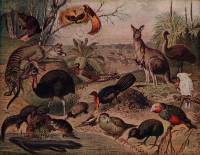
ANIMALE australiene. (CREDIT - Wikimedia)
Prima explorare a lumii exterioare a avut loc în urmă cu aproximativ 45.000 de ani în Australia. Este foarte
greu de explicat această reușită uimitoare chiar și pentru experți. Știm sigur că Homo sapiens a ajuns
în Australia, pentru că am găsit oase și unelte ale lui, dar cum a trecut din Indonezia în Australia
este dificil de explicat. Chiar dacă există
multe insule în Indonezia, Asia de Sud și Australia, între aceste insule există întinderi mari de apă
până la 150 km lățime. O mare întrebare este modul în care Homo sapiens a reușit traversarea acestor
întinderi mari, deschise de apă și cum a reușit să se adapteze peste noapte la un sistem ecologic complet
nou.
Problema australiană nu a fost limitată la traversarea mărilor și oceanelor. Odată ajunși, a fost la
fel de greu să se adapteze condițiilor de acolo. Homo sapiens care a trăit în Asia
Pagina 73
de Sud și Indonezia acum mii de ani cunoștea animalele, plantele și condițiile locale, fapt vital pentru
supraviețuire. În Australia a întâlnit brusc o lume complet nouă, cu animale și plante necunoscute. Vânătoarea
elefanților nu seamănă cu vânătoarea cangurilor. Diferite ciuperci sunt poate otrăvitoare în Australia,
tratamentul unei mușcături de scorpion indonezian nu funcționează la un scorpion sau păianjen australian.
Homo sapiens nu a traversat numai marea, dar s-a și adaptat aproape peste noapte la un ecosistem masiv
complet nou.
Primii navigatori
Teoria cea mai probabilă sugerează că Homo sapiens care popula insulele din Indonezia aproape de continent
a creat primele societăți în domeniul maritim. Au învățat cum să construiască și să manevreze nave pentru
explorarea oceanului și au devenit pescari, exploratori pe distanțe lungi și comercianți. Ei au devenit
tot mai obișnuiți cu o viață pe țărmul mării. Aceste competențe dobândite au permis indonezienilor vechi
să ajungă în Australia. Dacă această teorie este corectă, atunci acest lucru a fost o revoluție fără
precedent în abilitățile și în stilul de viață uman. Homo sapiens, simplă maimuță africană care a evoluat
timp de milioane de ani s-a adaptat brusc la condițiile de pe țărmul mărilor și în câteva mii de ani
a dezvoltat întregi culturi care au supraviețuit prin construcția de bărci, pescuit și comercializarea
produselor maritime - un fapt fără precedent în analele vieții pe Pământ.
În biologie avem multe exemple de creaturi marine care au evoluat în creaturi terestre și invers. De
exemplu, strămoșii delfinilor și balenelor au fost creaturi terestre care au evoluat de-a lungul anilor
să trăiască în ocean. Acest proces a durat milioane de ani de evoluție pentru delfinii arhaici, care
erau un soi de cerbi sau rinoceri care au început să- și petreacă tot mai mult timp în râuri și lacuri,
precum hipopotamii, și apoi au intrat în ocean. A fost nevoie de doar câteva sute de ani pentru ca aceste
maimuțe din savana
africană, fără nici o schimbare în biologia lor, să dezvolte întregi societăți maritime
Pagina 74
bazate nu pe gene noi, ci pe abilități tehnologice și competențe sociale noi. Aceste abilități le-au
permis să construiască bărci, să traverseze mări și oceane, să pescuiască și să dobândească abilitățile
necesare pentru a naviga peste oceane, să reziste furtunilor, să înoate și multe alte lucruri. Călătoria
primilor oameni spre Australia este remarcabilă nu numai din punct de vedere evolutiv, ci de asemenea
dintr-o perspectivă istorică. Aceasta călătorie este una dintre cele mai importante evenimente din istorie,
cel puțin la fel de importantă ca expediția lui Cristofor Columb în America în 1492 și aselenizarea expediției
Apollo 11 pe Lună în 1969. Călătoria primilor Homo sapiens în Australia a reprezentat prima
dată când o specie umană a reușit să părăsească sistemul ecologic din platoul afro- asiatic și să se
stabilească într-un sistem ecologic nou. A fost prima dată când un mamifer mare terestru a reușit să
treacă peste mări din Afro-Asia în Australia.
Influența asupra animalelor
Mai important decât traversarea mărilor a fost efectul acestor exploratori pionieri asupra lumii noi. Momentul în care primul vânător-culegător a pus piciorul pe plaja din Australia, a fost și momentul în care Homo sapiens a săltat de la mijlocul în vârful lanțului trofic și a devenit specia cea mai mortală în analele pământului. Până atunci Homo sapiens a arătat o capacitate remarcabilă de a se adapta la medii diferite cu un impact neglijabil asupra mediului, de a se adapta la toate tipurile de habitate cum ar fi deșerturi, mlaștini si regiuni înghețate fără să le altereze prea mult. Primii coloniști din Australia însă au început să transforme ecosistemul australian dincolo de orice recunoaștere. Australia de acum aproximativ 50.000 de ani a fost foarte, foarte diferită de Australia care o cunoaștem astăzi. Era plină de creaturi mari și ciudate, inclusiv, de exemplu, un cangur gigantic care ajungea la înălțimi de doi metri și cântărea aproximativ 200 de kilograme. Australia a găzduit și koala gigant, o pasăre de două ori mai mare decât struțul, șopârle uriașe ca niște dragoni și șerpi uriași. Tot acolo trăia și leul marsupial, la fel de masiv ca
un tigru modern și prădătorul de vârf al continentului.
Pagina 75
DIPROTODON OPTATUM (CREDIT - Wikimedia)
Cea mai mare creatură a acelor vremuri în Australia a fost Diprotodon (urs marsupial gigant), care cântărea aproximativ două tone si jumătate. Australia a fost plină de creaturi mari și ciudate, care însă în doar câteva mii de ani după sosirea lui Homo sapiens au dispărut. Acum 50.000 ani existau 24 de specii de animale australiene care cântăreau în medie mai mult
de 50 kg. În răstimp de câteva mii de ani de la sosirea noastră acolo, 23 dintre ele au dispărut. Singurul
care a reușit să supraviețuiască este cangurul roșu. În același timp, un număr mare de specii mai mici
au dispărut, de asemenea, și lanțul trofic din întregul ecosistem australian a fost complet schimbat
și rearanjat.
Aceasta a fost pe parcursul a milioane de ani cea mai importantă transformare în ecosistemul australian.
Istoria ecosistemului australian are milioane de ani de continuitate până acum 45.000 ani, când survine
o catastrofă în care dintr-o dată multe specii, în special speciile mari, dispar. Unii cercetători au
dat vina pe schimbările climatice, dar există dovezi foarte clare care implică Homo sapiens. Nu putem
fi 100% siguri, dar e foarte probabil că Homo sapiens a făcut-o. Marea întrebare este cum un număr relativ
mic de culegători de acum 45.000 ani cu tehnologia epocii de piatră a reușit să provoace o astfel de
catastrofă ecologică. Există mai multe explicații care nu sunt contradictorii, ci se împletesc pentru
a ne oferi o imagine de ansamblu asupra acestui dezastru ecologic.
Ce s-a întâmplat cu animalele australiene?

Prima explicație este că principalele victime ale acestui val de extincție, animalele mari, au dispărut
din cauza reproducerii lente. Era nevoie de foarte mult timp, luni sau poate ani pentru reproducerea
un animal mare. Numărul de progenituri pe sarcină a fost scăzut și existau pauze lungi între sarcini.
Pe când iepurii se înmulțesc repede, animalele mari au intervale de mulți ani între nașteri. Prin urmare,
chiar dacă Homo sapiens ar fi ucis un exemplar doar o dată la câteva luni, ar fi fost suficient pentru
ca în timp să decimeze populația locală de diprotodoni, spre exemplu. De-a lungul câtorva generații,
acest lucru a fost suficient pentru a le conduce la dispariția totală.
A doua explicație este că în Australia Homo sapiens a
avut elementul surpriză de partea lui, element pe care în Africa sau Asia nu îl avea, acolo unde oamenii
preistorici care au trăit cu mult înaintea lui Homo sapiens au evoluat lent. Pe parcursul a sute de mii
de ani oamenii au devenit vânători tot mai buni. Animalele vânate de oameni, precum girafele, bizonii
și elefanții, au învățat să fie precaute și să aibă chiar frică de oameni. Când mega-prădătorul Homo
sapiens a apărut pe scena afro-asiatică, animalele mari știau deja să păstreze distanța, știau că această
Pagina 76
maimuță este foarte periculoasă. În schimb, giganții australieni nu au avut timp să învețe să fugă de
oameni. După criteriile naturale, oamenii nu par deosebit de periculoși, nu arătăm foarte înfricoșători.
Comparat cu un tigru sau un aligator, avem mai puțini mușchi, nu putem fugi la fel de rapid ca un ghepard,
nu avem dinți mari sau fălci puternice ca ale unui tigru. Nu avem otravă sau gheare. Când primii oameni
au ajuns în Australia animalele mari s-au uitat probabil la creaturile asemănătoare nouă și s-au întors
să ronțăie frunze. Înaintea ca diprodotonii, cangurii gigant și
koala gigant să aibă timp să dezvolte respect și teamă față de oameni, au dispărut.
Oamenii au avut nevoie de timp foarte scurt pentru a le duce la dispariție.
O altă teorie care completează cele două explicații este teoria agriculturii prin foc, remodelarea prin
foc a mediului pentru a se potrivi mai bine nevoilor noastre. Când Homo sapiens a apărut în Australia
era deja expert în folosirea agriculturii prin foc. El a folosit probabil această metodă pentru a remodela
în mod deliberat ecosistemul australian prin arderea de arii vaste de tufișuri și de păduri dese în care
aveau dificultăți în deplasare și vânătoare. Astfel s-a deschis calea pentru pajiștile deschise în care
a fost mai ușor pentru el să se deplaseze. Pajiștile deschise atrag vânatul mai bine. Avem dovezi interesante
pentru această teorie din istoria ecologică a Australiei în ce privește eucaliptul. Se pare că până în
urmă cu aproximativ 45.000 de ani eucaliptul era destul de rar în Australia. Brusc a devenit foarte larg
răspândit numai după ce Homo sapiens a sosit și a început să ardă pădurile mari. Eucaliptul este mai
rezistent la foc decât majoritatea altor tipuri de copaci. Ei au supraviețuit și chiar s-au înmulțit
în ciuda incendiilor, și au devenit unul dintre copacii dominanți din Australia.
În plus față de pericolul vânătorii și a agriculturii prin foc, clima a jucat de asemenea un rol important.
A existat o schimbare climatică cu care Australia s-a confruntat acum aproximativ 45 de mii de ani. Acesta
a destabilizat sistemul ecologic și l-a făcut vulnerabil. În condiții normale, sistemul ecologic și-ar
fi revenit de la sine, căci schimbări climatice se întâmplaseră de multe ori înainte. Diprodotonul, de
exemplu, a trăit în Australia timp de mai mult de un milion de ani și a supraviețuit multor schimbări
climatice și condiții climatice dificile. Diferența a fost că în urmă cu 45.000 ani pe lângă schimbările
climatice, a fost și invazia lui Homo sapiens. Combinația schimbărilor climatice cu vânătoarea și utilizarea
focului de către Homo sapiens au atacat animalele din două direcții diferite în același timp. Ele nu
au mai putut găsi o strategie pentru supraviețuire.
În lipsă de dovezi clare, e greu de decis care dintre aceste teorii a fost cauza principală. Fie că a
fost elementul surpriză, vânătoarea, agricultura prin foc sau clima, avem suficiente dovezi pentru a
fi convinși că dacă Homo sapiens nu ar fi ajuns niciodată în Australia schimbările climatice în sine
nu ar fi fost suficiente pentru a provoca o astfel de extincție în masă. Dacă Homo sapiens nu ar fi ajuns
în Australia aceasta ar fi încă
Pagina 77
populată cu canguri uriași, Koala si diprodotoni. Extincția animalelor australiene mari a fost, prin
urmare, primul semn important pe care specia noastră, Homo sapiens, l-a lăsat asupra planetei Pământ.
Un experiment de gândire
Dr. Harari sugerează un scenariu interesant.
Imaginați-vă că acum 70.000 ani o epidemie misterioasă ar fi ucis toate speciile umane, inclusiv Homo sapiens. În viitor, peste 50 milioane de ani, șoarecii vor evolua poate în forma de viață dominantă pe planeta Pământ și vor deveni atât de inteligenți încât vor exista oameni
de știință șoareci și profesori șoareci care vor scrie istoria vieții pe Pământ. Ar avea acești șoareci inteligenți vreun motiv să acorde vreo atenție oamenilor de mult dispăruți? Probabil că nu. Nu ar avea nici un motiv să acorde o atenție specială faptului că, acum
50 de milioane de ani, au trăit undeva în Africa și Asia un tip de maimuțe cu
creierul mare și care foloseau unelte de piatră și focul, iar apoi au dispărut într-o epidemie. Oamenii, oricât de interesanți îi vedem noi, nu au făcut nimic important în ecosistemul de până acum 70.000 ani. Acum, imaginați-vă că această epidemie teribilă a izbucnit în urmă cu doar 40.000 ani, astfel încât oamenii au avut șansa de a ajunge în Australia și a ucide toate animalele mari de acolo. Acum, profesorii șoareci ai viitorului ar avea un bun motiv să dea oamenilor mult mai multă atenție. Ei ar scrie în articole și cărți că odată, acum 50 de milioane de ani, a trăit această specie de maimuțe cu creier mare și unelte de piatră care stăpânea focul și care s-a răspândit din Africa și singurul lucru mare pe care l-au făcut a fost să schimbe complet ecologia Australiei înainte de a fi șterși de pe fața Pământului de această epidemie.
Acesta a fost prima amprentă majoră a speciei noastră în lume, distrugerea animalelor mari ale Australiei.
Ulterior, noi am fost responsabili pentru catastrofe ecologice similare
și chiar mai mari în multe alte părți ale lumii.
Pagina 78
Al doilea dezastru
(CREDIT - CANADA option)
Al doilea produs uman foarte important a fost un dezastru ecologic și mai mare, de data asta în America.
Homo sapiens a fost prima și singura specie umană care a ajuns în emisfera vestică, continentul Americii,
ajungând acolo în urmă cu aproximativ 16.000 de ani, aproximativ în 14.000 î.Hr.
Primii americani au sosit pe jos, traversând strâmtoarea Bering, deoarece nivelul mării a fost mult timp
scăzut. O fâșie de pământ lega nord-estul Siberiei cu nord-vestul Alaskăi. Homo sapiens a ajuns probabil
în Alaska urmărind animalele mari cum ar fi mamutul și renul care migrau între Alaska și Siberia. Din
Alaska ei s-au răspândit mai târziu pe întreg continentul Americii. Ei stăpâneau tehnica vânătorii animalelor
mari din Arctica, dar s-au adaptat rapid la o varietate uimitoare de climate, habitate și ecosisteme.
Descendenții siberienilor au populat rapid pădurile dese ale estului Statelor Unite, mlaștinile din delta
Mississippi, deșerturile din Mexic, junglele din America Centrală și câmpiile pampas largi din Argentina
în doar aproximativ 2000 ani. Prin 10.000 î.Hr., Homo sapiens atinsese deja punctul cel mai sudic al
Americii, sudul Argentinei și Chile- ului de astăzi.

Această răspândire a oamenilor în America este o mărturie a incomparabilei ingeniozități și a adaptabilității
de neegalat a speciei noastre Homo sapiens. Nici un alt animal nu s-a mai adaptat vreodată într-o astfel
de varietate de habitate atât de radical diferite și atât de repede fără a suferi nici o mutație genetică
semnificativă. Există tipuri de animale pe care le puteți găsi în toate aceste habitate diverse, cum
ar fi furnicile, dar ele nu sunt aceleași furnici. Furnicile în deșerturile din Mexic sunt diferite de
furnicile din delta Mississippi sau de furnicile din pampas în Argentina. Furnicile au avut nevoie de
milioane de ani pentru a cuceri și a se adapta la toate aceste locuri diferite. Homo
Pagina 79
sapiens a făcut-o în 1.000 - 2.000 de ani fără nici o evoluție biologică sau un curs de mutații genetice
semnificative.
ANIMALE AMERICANE
Blitzkrieg-ul american nu fost numai mărturia ingeniozității Homo sapiens, dar a lăsat de asemenea urmă o
dâră lungă de victime. Animalele americane de acum 60.000 ani au fost mult mai variate decât cele din
prezent. Atunci când primii oameni explorau Alaska câmpiile din Canada și vestul Statelor Unite au întâlnit
pe drum mamuți, mastodonți (o specie mare de elefant), rozătoare de
dimensiunea urșilor, cai și cămile în pășunile americane. Mai existau și zeci de alte
specii de animale de mari dimensiuni, foarte diferite de toate cele pe care le știm astăzi
în America sau oriunde altundeva în lume.
America de Nord a avut tigri-sabie de temut cu dinți foarte lungi, ascuțiți precum și multe specii de
Megatherium
care cântărea până la opt tone și ajungea la o înălțime de până la șase metri. America de Sud
a găzduit o colecție chiar mai exotică de mamifere mari, reptile și păsări. În interval de câteva mii
de ani după ce Homo sapiens a ajuns acolo, cele mai multe dintre aceste creaturi unice au dispărut. Conform
estimărilor actuale, în intervalul scurt de 1000 până la 2000 ani America de Nord a pierdut aproximativ
34 din
47 genuri de mamifere mari și America de Sud a pierdut 50 din 60 genuri de animale mari. Este vorba aici despre genuri, nu despre specii. Fiecare gen conținea mai multe specii și toate au dispărut. Genul de Megatherium conținea multe specii diferite și toate au dispărut în aproximativ 2000 - 3000 ani de la sosirea lui Homo sapiens. Felinele- sabie, de exemplu tigrii sabie care au prosperat în America vreme de aproape 30 milioane de ani, au dispărut în 1000 până la 2000 de ani. Giganticul leneș de sol, lei de dimensiuni uriașe, cai și cămile nativ americane, rozătoare gigant, toți membrii familiei elefantului american și multe alte creaturi mari au dispărut.
Smilodon
Mii de specii de mamifere mici, reptile, păsări, chiar și insecte si paraziți au dispărut cam în același
timp. De exemplu, în cazul în care mamutul a murit, toate speciile de paraziți ai mamutului, cum ar fi
purici mamut și căpușe mamut l-au urmat în neființă. Dacă combinăm extincțiile în masă din Australia
și America,
și adăugăm extincțiile la scară mai mică produse de Homo sapiens la răspândirea sa din Africa de Est
în alte părți din Africa, Europa și Asia, putem concluziona că acest prim val de colonizare a lumii a
fost unul dintre cele mai mari și mai rapide dezastre ecologice care a lovit vreodată regnul animal.
Cel mai greu lovite au fost mamiferele mari terestre.
Pagina 80
Creaturile care au fost cel mai aproape de Homo sapiens, mamiferele terestre de mari dimensiuni, au fost cele mai afectate.
Povestea continuă
În momentul revoluției cognitive planeta Pământ găzduia aproximativ 200 de genuri de mamifere mari terestre,
mamifere cu o greutate mai mare de 50 kg. La momentul revoluției agriculturii, doar aproximativ 100 dintre
aceste genuri au supraviețuit. Aceasta înseamnă că Homo sapiens a contribuit la dispariția a jumătate
din mamiferele terestre mari ale planetei cu mult timp înainte de a inventa roata, scrisul sau fierul,
să nu mai vorbim de industria modernă și armele moderne. Această tragedie ecologică,
dispariția a atât de multe specii diferite în scurt timp, a fost repusă în scenă de
nenumărate ori după revoluția agricolă. Extincțiile nu s-au oprit când Homo sapiens au devenit țărani
și păstori. Înregistrările arheologice de pe insulă după insulă spun aceeași poveste tristă din anii
de după revoluția agricolă.
Nu au mai fost continente pe care Homo sapiens le-ar mai putea descoperi și coloniza, cu excepția Antarcticii,
dar au existat încă multe insule, pe care vânători-culegătorii nu au reușit să ajungă, cum ar fi insula
Madagascar. Acolo au ajuns pentru prima oară ca fermieri, țărani și păstori. Ori de câte ori acești fermieri
au ajuns pe o insulă nouă, aceeași tragedie s-a repetat ca și în Australia și America pe o scară mai
mică, pur și simplu pentru că erau insule mai mici. O insulă putea găzdui o populație bogată și variată
de animale mari, fără nici o urmă de oameni. Avem apoi dovezi ale apariției Homo sapiens în înregistrările
arheologice. Un os uman sau un vârf de suliță sau o bucată de oală ceramică arată că Sapiens a sosit.
La scurt timp după aceea cele mai multe dintre animalele mari și multe dintre animalele mici au dispărut.
Dovezile distrugerii
Pasărea elefant
O insulă unde putem studia acest tip de tragedie este insula mare Madagascar, situată la aproximativ 400 de kilometri estic de continentul african. Madagascar era departe de continentul african așa ca a fost deconectată de ce se întâmpla în Africa. Pe parcursul a milioane de ani procesele evolutive din Madagascar au evoluat izolat de restul lumii și au produs o colecție unică de animale. Cea mai importantă dintre acestea a fost pasărea elefant . Având trei metri înălțime și cântărind aproximativ 500 de kilograme, o jumătate de tonă, a fost probabil cea mai mare pasăre care a trăit vreodată în lume. De asemenea, remarcabili erau lemurii gigant care au fost cele
Pagina 81
mai mari primate de pe glob. Lemurul a fost un soi de primat, cel mai mare dintre ei era mai mare decât gorilele.
Acești lemuri gigant și păsările elefant, precum și multe alte animale unice care trăiau în Madagascar
de milioane de ani au dispărut dintr-o dată în urmă cu aproximativ 1 500 de ani, în jurul anului 500
d.Hr., atunci când avem prima dovadă a apariției omului.
Dezastre ecologice similare au avut loc pe aproape fiecare dintre miile de insule din Oceanul Pacific,
Atlantic, Indian, în Marea Mediterană, chiar și în Oceanul Arctic. Aceste tragedii insulare s-au repetat
una după alta. Arheologii au descoperit pe cele mai mici insule dovezi ale existenței unor păsări, insecte
si melci care au trăit acolo pentru nenumărate generații, milioane de ani, numai ca să dispară atunci
când primul om a pus piciorul pe insulă.
Al treilea val
Primul val de extincții a însoțit răspândirea vânători- culegătorilor cu zeci de mii de ani în urmă.
Al doilea val de dispariții a fost dat de răspândirea agricultorilor pe insule, cum ar fi Madagascar.
Aceste două valuri ne dau o perspectivă importantă asupra celui de-al treilea val de dispariții care
se întâmplă chiar astăzi, din cauza
răspândirii industriei în întreaga lume. Este un fapt de foarte mare importanță să știm că noi, Homo
sapiens,
nu reușim cu adevărat să trăim în armonie cu natura. Unii oamenii își imaginează că aceste ciocniri
între Homo sapiens și sistemul ecologic, aceste evenimente de extincție în masă sunt un fenomen unic,
modern, rezultatul industriei moderne, a sistemului capitalist și a evenimentelor din ultimele 2-300
de ani. Este însă fals. Chiar dacă ne întoarcem în timp acum mii de ani la societățile agricole vechi,
și cu zeci de mii de ani la societățile antice de vânători-culegători, chiar și atunci avem o mulțime
de dovezi pentru modul în care Homo sapiens pur și simplu distruge tot ceea ce stă în calea lui, și provoacă
dezastre ecologice unice pe care nici o altă specie nu le-a provocat vreodată în 4 miliarde de ani de
evoluție a vieții pe Pământ. Au fost cazuri anterioare de extincție în masă a animalelor. Cel mai renumit
a avut loc acum 65 de milioane de ani, când un asteroid a lovit probabil Pământul și a provocat dispariția
dinozaurilor, precum și a multor altor animale. Nu s-a întâmplat însă niciodată înainte, din câte știm,
ca o singură specie de animal să fie responsabilă prin acțiunile sale pentru dispariția a zeci, sute
sau mii de alte specii. Asta este reușita speciei noastre, Homo sapiens, peste mii și zeci de mii de
ani.
Probabil, dacă mai mulți oameni ar fi conștienți de primul și al doilea val de extincții, am fi ceva
mai grijulii. Noi suntem astăzi parte din al treilea val. Dacă am ști câte specii am
Pagina 82
eradicat deja de pe fața Pământului, poate am fi mai atenți, mai motivați pentru a proteja speciile care
într-un fel sau altul au reușit să supraviețuiască. Acest lucru este în special relevant pentru animalele
mari ale oceanelor. Spre deosebire de cele terestre, animalele mărilor și oceanelor au suferit relativ
puțin de pe urma revoluției cognitive și agricole. Până acum aproximativ 3-500 ani, ele o duceau încă
destul de bine. În ultimii 300 ani însă,
ele suferă tot mai mult consecințele noilor tehnologii și abilități ale lui Homo sapiens.
Multe dintre ele sunt astăzi pe cale de dispariție, ca urmare a poluării industriale și umane și a utilizării
excesive a resurselor oceanice. Dacă lucrurile continuă în ritmul actual, este foarte probabil că balenele,
rechinii, tonul, delfinii, broaștele țestoase și multe altele vor urma calea diprotodonului, a cangurilor
gigant și a tigrilor dinți-de-sabie într-un mormânt prea timpuriu.
Potopul uman
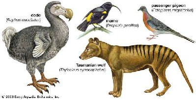
Din toate marile creaturi ale planetei, este posibil ca singurii supraviețuitori ai potopului uman să
fie omul în sine și animalele de fermă care au servit ca sclavi în bucătăria arcei. Povestea biblică
a lui Noe și a arcei lui ne relatează despre un potop mare în
urma căruia Noe s-a îmbarcat pe corabie cu familia și a luat cu sine reprezentanți ai tuturor animalelor
din lume, pentru a le salva de la extincție. Povestea adevărată, pe care nu o găsim în Biblie, este însă
foarte diferită.
Potopul suntem chiar noi, Homo sapiens, potopul de oameni care, pornind din Africa de Est, a inundat
întreaga lume și a dus atât de multe animale la extincție. Singurele animale pe care le luăm în arca
noastră pentru a le salva nu sunt reprezentanții tuturor tipurilor de animale, canguri, diprotodoni,
balene și rechini și așa mai departe. Luăm în corabie doar câteva animale selecționate: porci, cai, pui,
bovine, ovine de care avem nevoie pentru propria noastră folosință. Le luăm doar pe cele care ne servesc
drept alimente, drept haine, animale de companie și
animale de lucru. Toate celelalte sunt practic exterminate de potopul uman.
Lecția V - Marea păcăleală a Istoriei
Partea II: Revoluția Agricolă
A cincea lecție a cursului este și intrarea în partea a doua a cursului, Revoluția Agricolă.
În trecerea la istoria lui Homo sapiens de acum aproximativ 12.000 de ani,
Dr. Yuval Noe Harari explică cum oamenii din Orientul Mijlociu, China, și America Centrală au
început domesticirea plantelor și a animalelor. El sugerează că de fapt Homo sapiens a fost cel domesticit
în acest proces, abandonând o viață de vânător-
culegător pentru disconforturile agriculturii. Pentru majoritatea oamenilor neplăcerile au depășit avantajele,
revoluția agricolă a făcut viața omului obișnuit mai grea.
Prima parte a acestui cursul a prezentat evoluția diferitelor specii umane, revoluția cognitivă, viața
și faptele înaintașilor noștri. De asemenea, a studiat impactul vânător- culegătorilor asupra ecologiei
mondiale. Sapiens care au trăit în urmă cu 30 mii de ani arătau, gândeau și simțeau deja la fel ca noi.
Au fost probabil la fel de inteligenți, curioși și sensibili, au avut propriile lor revoluții religioase,
mișcări artistice și lupte politice. Nu știm prea multe despre aceste evenimente în principal din lipsa
dovezilor, dar asta nu înseamnă că astfel de lucruri nu s-au întâmplat deloc. Mesajul central al Dr.
Harari în prima parte a acestui curs a fost că viața strămoșilor noștri vânători-culegători era în multe
privințe mai bună decât viața descendenților lor, țărani și muncitori de după revoluția agricolă. Se
ridică astfel întrebarea, dacă viața vânător-culegătorilor a fost atât de bună,
de ce a mai avut loc revoluția agricolă?
Revoluția Agricolă
Pentru primele două milioane și jumătate de ani oamenii au trăit foarte bine fără agricultură din culesul
plantelor și vânătoarea animalelor care trăiau și se înmulțeau fără intervenția umană. Chiar și după
revoluția cognitivă omul nu a controlat încă viața altor animale și plante. Acest lucru s-a schimbat
acum aproximativ 12.000 de ani, când sapiens a început să dedice aproape tot timpul și eforturile sale
la a manipula viața câtorva specii de animale și plante, cum ar fi grâul, cartofii, puii si vacile. De
dimineața până seara, oamenii semăna semințe, uda plante,
Pagina 84
smulgea buruienile din sol și ducea oile la păscut. Oamenii au crezut că astfel vor avea mai multe cereale,
carne și fructe. Această transfer de la vânătoare și cules la a investi tot mai mult timp în producția
de plante și animale a fost o revoluție fără precedent în modul în de viață uman. Dr. Harari numește
acest proces Revoluția Agricolă, revoluția trecerii la agricultură.
Această tranziție a fost documentată pentru prima dată în jurul anului 9000-9500 î.Hr. în
zona deluroasă din Sud-Estul Turciei, în vestul Iranului și în Levant, zona așa numită
Cornul Ab und enț ei . Istoricii credeau odată că agricultura a început în Orientul Mijlociu și de acolo s-a răspândit în întreaga lume. În zilele noastre însă, oamenii de știință sunt de acord că agricultura apărut simultan în mai multe părți diferite ale lumii în mod independent. Oamenii din America Centrală, China, Noua Guinee și multe alte locuri au început domesticirea plantelor și animalelor independent. Există teorii despre ce s-a întâmplat în unele locuri, în Orientul Mijlociu, China, America Centrală și Noua Guinee dar nu în alte locuri, cum ar fi Australia, Alaska sau Africa de Sud. Este posibil ca cele mai multe specii de plante și animale să nu fi fost candidați buni pentru domesticire. Dintre miile de specii pe care strămoșii noștri le vânau s-au adunat doar câțiva candidați adecvați pentru domesticire, agricultură și ferme, câteva specii care trăiau în anumite zone, cum ar fi Orientul Mijlociu și America Centrală. Pentru mai multe detalii Dr. Harari recomandă o carte numită Pistoale, germeni și oțel scrisă de Jared Diamond .
Perspectivă greșită
Despre revoluția agricolă nu s-a crezut doar greșit că a început într-o singur loc, în Orientul Mijlociu,
dar a fost mult timp considerată a fi un pas mare înainte pentru omenire. Utilizând argumente cum că
evoluția a produs treptat ființe tot mai inteligente și că oamenii au devenit capabili să înțeleagă mai
bine modul in care plantele și animalele se reproduc. Acest lucru ar fi permis oamenilor să înceapă îmblânzirea
și controlul ovinelor, caprinelor, puii, cultivarea grâului, a cartofilor și așa mai departe. De îndată
ce acest proces a putut avea loc ei ar fi abandonat cu bucurie viața grea și periculoasă a vânătorii
și s-au așezat să se bucure de viața plăcută și mult mai ușoară ca fermieri sau păstori. Asta este ceea
ce obișnuiam să credem cu câteva decenii în urmă, chiar astăzi mulți oameni nefamiliarizați cu recentele
progrese din domeniul științei mai cred încă acest lucru. Dar această poveste este pură fantezie.
(CREDIT - FT-STATIC.COM)
Nu există nici o dovadă că oamenii au devenit mai inteligenți înaintea revoluției agricole. Vânători-culegătorii
cunoșteau deja secretele naturii, reproducerea plantele și animalele cu mult timp înainte. Supraviețuirea
lor depindea de cunoașterea animalelor vânate, plantele de cules și consumat. E
complet greșit să credem că evoluția agriculturii a început pentru că oamenii au devenit
Pagina 85
mai inteligenți, și au descoperit lucruri noi despre animale și plante pe care nu le știau înainte. Tot așa
este o greșeală și mai mare să credem că tranziția de la vânătoare și colectare la agricultură a fost
ceva care imbunătățit standardul vieții. Comparativ cu viața celor mai mulți țărani, vânător-culegătorii
vechi se bucurau de o viață mai bună. Aveau o alimentație mai sănătoasă, mai puține ore de lucru, își
petreceau timpul făcând lucruri mult mai interesante decât țăranii. Ei sufereau mai puțin de foamete,
boli și probabil de violență umană.
Revoluția agricolă a extins desigur cantitatea de alimente disponibilă omenirii, dar acest lucru nu a
adus o dietă mai bună sau o viață mai bună. Ce a urmat a fost mai degrabă o explozie demografică și un
răsfăț al elitelor. Regii, nobilii și preoții consumau tot surplusul de produse alimentare. Țăranul obișnuit
dintr-un sat mic lucra mai mult decât cu mii de ani înainte și primea în schimb un regim alimentar mai
rău. Din această perspectivă Revoluția agricolă s-a dovedit a fi
cel mai mare păcăleală din istorie
De vină a fost grâul

De vină pentru această înșelăciune nu sunt oamenii: regi, nobili, preoți sau comercianți.
Adevărații vinovați sunt o mână de specii de plante, cum ar fi grâul, orezul și cartofii. Aceste
plante au domesticit homo sapiens-pentru propriul lor avantaj, mai degrabă decât invers. Această afirmație
sună
scandalos, dar să încercăm pentru o clipă să privim revoluția agricolă din punctul de vedere al grâului,
cartofilor și orezului mai degrabă decât din punctul de vedere al oamenilor. Să luăm grâul de exemplu.
Acum 10.000 de ani grâul era doar una din ierburile sălbatice care creșteau în niște zone mici din Orientul
Mijlociu. Dintr-o dată, în doar câteva milenii veți găsi grâu peste tot în lume. Conform criteriilor
evolutive de bază de
supraviețuire și reproducere grâul în ultimii 10.000 ani a evoluat de la o buruiană nesemnificativă la
una dintre plantele cele mai de succes din istoria planetei Pământ. Cu
10.000 de ani în urmă nu exista nici un lan de grâu în marile câmpii din America de Nord. Astăzi pentru
sute și sute de kilometri nu există nimic altceva cu excepția grâului, nici copaci, animale sau chiar
case, doar lanuri de grâu.
Care a fost secretul grâului? Cum poate el în prezent să acopere aproximativ 2,25 milioane de kilometri
pătrați de suprafață pe glob, de aproape zece ori mai mult decât insula Marii Britanii, când acum 10.000
de ani a crescut doar în câteva locuri obscure în Orientul Mijlociu? Grâul a făcut-o prin manipularea
lui homo sapiens. Această maimuță, homo sapiens, avea o viață destul de confortabilă cu vânătoarea și
culesul până acum aproximativ 10.000 de ani când început sa investească tot mai mult timp și efort în
cultivarea grâului, în ajutorarea grâului. Într-un timp destul de scurt, oamenii în multe părți ale lumii
nu mai făceau aproape nimic altceva din zori până noaptea decât a avea
grija grâului și a ajuta grâul să se răspândească peste tot în lume.
Pagina 86
Ce au făcut oamenii pentru grâu?
Grâului nu-i plac pietrele deoarece îi împiedică creșterea: homo sapiens și-a
rupt spatele pentru a curăța câmpurile de pietre pentru a crea spațiu liber.
Grâului nu-i place să împartă apa și nutrienții din sol cu alte plante: oamenii
au lucrat din greu zile și săptămâni plivind buruieni și alte plante din lanurile de grâu.
Grâul trebuie apărat împotriva tuturor tipurilor de organisme dăunătoare ca viermi, lăcuste, iepuri și căprioare: oamenii au petrecut din nou o grămadă de timp pentru a-l proteja. Au construit garduri; au ucis iepuri, viermi și lăcuste pentru a proteja grâul.
Grâului i-a fost sete și foame: oamenii și-au rupt spatele și picioarele pentru multe ore zilnic pentru a transporta apă de la izvoare și pâraie la lanuri sau pentru instalarea de diguri și fântâni de apă. Oamenii au strâns fecale de la animale și le-au împrăștiat pe teren pentru a hrăni terenul.
Corpul uman nu a evoluat pentru astfel de sarcini. Corpul nostru este adaptat pentru a urca în meri și a
culege mere, pentru a alerga după gazele și iepuri în pădure. Organismul uman nu e deloc adaptat pentru
atâta trudă. În special coloana vertebrală, genunchii și gâtul au plătit un preț foarte mare. Avem o
mulțime de dovezi din schelete vechi la care arheologii au găsit indicații foarte clare că tranziția
de la o viață de vânătoare și cules la o viață de agricultor a adus cu sine multe probleme noi și boli,
cum ar fi deplasări de vertebre, dureri de spate, artrită și hernii. Mai mult de atât, toate aceste noi
sarcini agricole au cerut atât de mult timp încât oamenii au fost forțați să se stabilească definitiv
lângă câmpurile de grâu și să-și schimbe complet modul de viață.
Susținem că noi oamenii am domesticit grâul, adevărul este de fapt că grâul ne-a domesticit pe noi. Cuvântul
domesticire provine din cuvântul latin Domus care înseamnă casă. Domesticirea cuiva sau a ceva înseamnă
să-l faci să locuiască într-o casă. Grâul crește încă pe lanuri în câmp. Oamenii sunt cei care au fost
domesticiți.
Ce a făcut grâul pentru om?
Pagina 87
Cum a reușit grâul de fapt? Cum l-a convins pe homo sapiens să schimbe o viață relativ bună și plăcută
pentru o viață mult mai grea
ca țăran?
E clar că grâul nu a oferit oamenilor
o dietă mai bună. Oamenii sunt maimuțe omnivore, pregătiți să mănânce o varietate largă de produse
alimentare. Grâul și cerealele au fost doar o mică parte din dieta omului înainte de revoluția agricolă.
O dietă bazată în principal pe grăunțe și cereale este săracă în minerale si vitamine. E greu de digerat
și este distructivă pentru dinți, gingii, corp și sistemul digestive.
Grâu nu a oferit oamenilor
securitate economică. Viața unui țăran este de regulă mai puțin sigură decât viața unui vânător-culegător.
Țăranii de sute de ani subzistă în principal din creșterea și consumul a foarte puține tipuri de plante.
În China ei au cultivat și mâncat in principal orez, în Orientul Mijlociu orz și grâu, în America Centrală
în principal porumb. Această unică sursă de alimente este o bază foarte nesigură pentru economie, pentru
persoana privată și pentru colectiv. Dacă apar calamități, cum au fost secete, inundații, paraziți, atunci
cultura cerealelor nu mai lăsa nimic de mâncare și țăranii mureau cu miile sau chiar milioanele. În schimb
vânător-culegătorii s-au bucurat de o mai bună securitate economică pentru că ei culegeau și vânau o
varietate de produse alimentare. Dacă apărea o nenorocire și un anumit produs alimentar devenea rar atunci
adunau cantități mai mari din alte surse.
Grâul nu a oferit o mai bună
securitate contra violenței umane ci exact opusul. Primii agricultorii din sate și orașe au fost
probabil la fel de violenți sau chiar mai violenți decât strămoșii lor culegători. În tranziția la agricultură
omul a lăsat puțin loc pentru compromisuri în conflicte și
confruntări. Dacă un trib de vânători intra în conflict cu un alt trib mai puternic el se putea deplasa
în alt loc. Putea fi dificil sau chiar periculos, dar era posibil. În cazul țăranilor din satele și orașele
agricole, atunci când un inamic puternic amenința sau forța o retragere, mersul în altă parte însemna
renunțarea la câmpuri, case și hambare. Acest lucru echivala cu o condamnare la moarte prin înfometare
pentru refugiați. Singura opțiune era
să lupte până la ultimul.
Pagina 88
Multe studii antropologice și arheologice indică faptul că în societățile agricole simple, violența umană a fost responsabilă pentru aproximativ 15% din toate decesele umane, inclusiv 25% din moartea persoanelor sex masculin. Astăzi este de aproximativ 1,5 sau chiar 1% sau mai puțin, în funcție de locație, în urmă cu 8000 ani a fost însă 25%. Violența în cele din urmă a fost adusă sub control prin dezvoltarea unui cadru social larg, cum au fost orașe, regate și imperii dar a fost nevoie de mii de ani pentru a construi astfel de structuri politice uriașe și eficiente.
Beneficiile grâului
(CREDIT ASIENREISENDER.DE )
Este din nou greu pentru oamenii din societățile prospere de astăzi să judece viața pentru majoritatea oamenilor
din istorie pentru că cei mai mulți dintre noi astăzi ne bucurăm de un grad relativ ridicat de bogăție
și de securitate. Deoarece belșugul și securitatea noastră sunt construite pe fundațiile agriculturii,
tindem să presupunem că revoluția agricolă a fost o îmbunătățire minunată. Cu toate acestea este greșit
să judecăm mii de ani de istorie din perspectiva zilei de azi. Un punct de vedere mai adecvat de a judeca
revoluția agricolă este perspectiva unei fete de țăran în vârstă de trei ani moartă din pricina malnutriției
în China primului secol. Ea a avut o viață mult mai grea decât
strămoșii ei și nu știa nimic despre noi. Ea nu și-a propus să moară de malnutriție în
speranța că în 2000 ani, datorită agriculturii oamenii vor avea o multime de mâncăruri și vor trăi în
case mari cu aer condiționat și deci sacrificiul său, suferința sa va fi răsplătită. Este greșit să judecăm
revoluția agricolă doar din perspectiva noastră de astăzi.
Grâul nu a oferit nimic omului ca individ, a dat însă ceva lui Homo sapiens ca specie. Cultivarea grâului
a dat mult mai multe alimente pe unitatea de teritoriu, se puteau obține mult mai multe alimente folosind
agricultura decât vânătoarea sau culesul a ceea ce a crescut natural în zonă. Mâncarea suplimentară a
permis ca numărul de Sapiens să crească exponențial și ca tot mai multe persoane să trăiască în același
teritoriu. Jericho, de exemplu, în ceea ce astăzi este Palestina a fost unul dintre primele sate din
istorie. A început în urmă cu aproximativ 9000 ani. Acum 13000 ani, când oamenii erau încă vânători,
zona din jurul
Ierihonului putea sătura probabil un trib migrator de aproximativ 100 de persoane relativ sanatoase.
În jurul anului 8.000 î.Hr. plantele sălbatice din jurul Ierihonului au făcut loc câmpurilor de grâu
și zona a întreținut un număr mai mare de oameni, un sat de
Pagina 89
aproximativ 1000 de persoane. Acești oameni au fost însă înfometați, mai puțin sănătoși și probabil mai puțin fericiți decât strămoșii lor.
Succesul evoluției
Din păcate, evoluția măsoară succesul nu în foamete, durere, fericire sau suferința ci în numărul de copii
de ADN-ului în existență. În același mod succesul economic al unei firme se măsoară numai în numărul
de bani din contul bancar și nu în fericirea angajaților. Dacă nu există mai multe copii de ADN ale acestei
specii deosebite atunci specia este pe cale de dispariție si este considerată un eșec, o fundătură evolutivă.
Din acest punct de vedere 1000 de exemplare sunt întotdeauna mai bune decât 100 de copii și aceasta este
esența revoluției agricole. Revoluția agricolă înseamnă capacitatea de a întreține mult mai mulți oameni
în viață în condiții mai rele.
Acest calcul meschin nu explică de ce indivizilor le-ar păsa de beneficiul pentru specie ca un întreg
și nici de ce o persoană sănătoasă ar fi de acord să reducă standardele sale de viață doar pentru a multiplica
numărul de copii ale genomului homo sapiens. O teorie importantă susține că
oamenii nu au fost niciodată de acord cu revoluția agricolă. Nu a fost o decizie conștientă luată
la un moment dat ci acumularea mai multor pași succesivi mici. E imposibil să spunem care pas anume a
fost trecerea decisivă de la cules și vânătoare la a fi agricultor sau țăran. Dar este clar că prin 8.500
Î.Hr. Orientul Mijlociu era deja presărat cu sate permanente, cum ar fi Ierihonul, că locuitorii săi
au petrecut cea mai mare parte a timpului cultivând câteva specii domesticite, cum ar fi orzul și grâul.
Pe măsură ce oamenii cultivau specii domesticite ei au petrecut tot mai mult timp pe câmpuri și tot mai
puțin timp la vânat și cules. Au devenit imobili și în același timp populația a început să crească. Acesta
deoarece agricultura a oferit mai multe alimente și în al doilea rând pentru că renunțarea la stilul
de viata nomad a permis femeilor să aibă un copil în fiecare an. Femeile vânător- culegători aveau pauze
până când
copilul precedent putea umbla inainte de a avea un alt copil. Femeile de țărani puteau avea un copil
în fiecare an și au fost încurajate să facă acest lucru pentru că era întotdeauna nevoie de o mână de
lucru în plus pentru agricultură. Problema a fost desigur că toți acești copii au avut nu numai mâini
pentru a lucra pe câmp dar de asemenea guri și stomacuri. Au mâncat repede toate produsele alimentare
suplimentare
pe care le furniza agricultura.
Pagina 90
Mai mult decât asta, bolile infecțioase au început să se răspândească rapid în rândul populației mărite
de țărani din mai multe motive. Tot mai multe boli infecțioase au trecut de la animalele domestice la
oameni odată ce oamenii au început domesticirea animalelor, astfel că multe din aceste boli au început
să amenințe oamenii. În al doilea rând, pentru că oamenii au început să trăiască în sate starea lor de
igienă s-a deteriorat, vânător-culegătorii trăiau în grupuri mici și nu rămâneau în apropierea gunoaielor.
Țăranii și locuitorii din orașe trăiau mult mai aglomerat în imediata apropiere a deșeurilor, a altor
oameni și animale bolnave și prin urmare satele și orașele au devenit rapid
incubatoare pentru boli infecțioase. Valuri de epidemii au început să amenințe omenirea. Al treilea motiv
pentru care oamenii au devenit mai puțin sănătoși a fost faptul că dieta lor era mai proastă. Consumul
de grâu tot timpul este mult mai puțin hrănitor decât o alimentație variată. Sistemul imunitar a suferit
și cel mai mare rău a fost făcut la copii. Copiii de vânători-culegători trăiau doi sau trei ani aproape
exclusiv cu laptele mamei lor și laptele matern este cea mai buna dietă pentru un pui de om. Copiii de
țărani după trecerea la agricultură, au fost înțârcați foarte devreme. Ei au fost hrăniți apoi cu terci
de ovăz sau grâu, un regim alimentar teribil pentru copii care nu conține multe elemente necesare pentru
sistemul imunitar. Se estimează că în cele mai multe societăți agricole cel puțin o treime din copiii
nascuți au murit inainte de a ajunge la maturitate de boli infecțioase. Multi adulți au suferit de asemenea
de boli, mult mai mulți decât în vremurile vieții ca vânători și culegători.
În ciuda creșterii bolilor și mortalității nașterile au prevalat și drept rezultat au apărut tot mai
mulți oameni în sate și orașe, chiar dacă fiecare în sine era mai puțin sănătos și avea o viață în general
mai dificilă. Prin urmare cu
timpul și trecerea generațiilor afacerea dintre Homo sapiens și grâu a devenit tot mai împovărătoare
pentru homo sapiens. Copiii mureau în masă și adulții aveau o viață foarte grea. Nimeni nu și-a dat însă
seama ce se întâmplă, pentru că acest proces s-a petrecut pe parcursul mai multor generații. Fiecare
generație a continuat să trăiască cu doar puțin mai bine decât cea dinaintea ei. În mod paradoxal astfel
de îmbunătățiri menite să facă viața mai ușoară, cum ar fi irigațiile deveneau sarcini noi și grele.
De ce au făcut oamenii astfel de calcule greșit, pentru mulți chiar fatale? De ce au făcut toți acești
mici pași care s-au încheiat de fapt
cu o povară tot mai mare?
Pagina 91
Cea mai mare păcăleală a Istoriei
Au făcut-o pentru același motiv pentru care oamenii din întreaga istorie au calculat greșit în multe
alte ocazii. Oamenii pur și simplu
nu pot să prevadă consecințele depline ale deciziilor lor. Ei au decis să facă un pas mic în ce privește
lucrul suplimentar în care trebuiau să lucreze un pic mai mult în schimbul unei recolte mai bogate, astfel
ca să nu mai aibă grija secetelor și a anilor slabi. Planul de bază avea
sens, mai mult lucru le-ar fi putut asigura o viață mai bună lor și copiilor lor. Prima parte a
planului a funcționat fără probleme, oamenii într-adevăr au lucrat din greu. Dar factori neprevăzuți
au distrus a doua parte a planului, partea despre o viață mai bună. Oamenii pur și simplu nu au prevăzut
că numărul de copii va crește cu timpul și prin urmare vor avea mai multe recolte generoase, mai mult
grâu, dar grâul va trebui împărțit între mai mulți copii astfel încât fiecare copil nu va primi o porție
mai mare decât înainte.
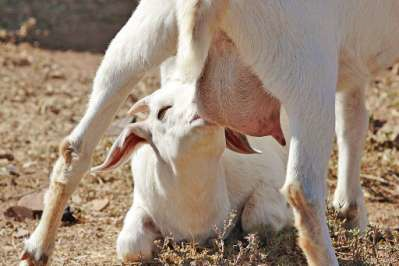
(CREDIT - Wikimedia)
Un alt lucru greu de anticipat pentru primii agricultori a fost faptul că hrănirea copiilor cu grâu în loc
de lapte matern va slăbi organismele și sistemul lor imunitar și că așezările permanente vor deveni focare
de boli infecțioase în care copiii vor muri de fapt în număr tot mai mare de aceste boli. De asemenea,
nu au prevăzut că prin dependența de o singură sursă de hrană, cum ar fi grâul, acesta era expus chiar
mai mult decât înainte la pericolele secetelor. Dacă un an era bun cu recolte generoase, într-un an prost
mulți dintre ei mureau de foame. Un ultim lucru pe care nu l-au prevăzut este în anii buni chiar dacă
aveau hambarele pline de cereale, acestea tentau hoți și dușmani care erau atrași să cucerească satul
și să fure toată această hrană. Chiar și în anii buni ei trebuiau să construiască ziduri, să stea de
pază și să pregătească războaie.
Toți acești factori neprevăzuți au distrus planul inițial de a lucra mai greu pentru o viață mai bună.
În cazul în care planul a dat greș și nu a îndeplinit așteptările, de ce oamenii nu l-au abandonat pur
și simplu și s-au întors la modul anterior de viață? Unul dintre motive este faptul că a fost nevoie
de generații pentru a înțelege că lucrurile nu au fost așa cum au sperat. Nimeni nu și-a mai amintit
că ar fi trăit vreodată într-un mod diferit. Cel mult oamenii își mai puteau aminti și povesti copiilor
lor despre un timp în care a fost
Pagina 92
mult mai puțin grâu. Un alt motiv pentru care oamenii nu s-au mai întors este faptul că populația a continuat
să crească și fiind în creștere tot timpul, chiar dacă vroiau să se întoarcă la modul în care au trăit
bunicii lor erau deja prea mulți oameni pentru a face acest lucru. În vremea bunicilor lor trăiau doar
100 de persoane în sat și acum s-a ajuns la 150. Care 50 de persoane ar fi dispuse să moară de foame
pentru ca satul să poată reveni la modul de viață al generațiilor anterioare?
Astfel imaginea unei vieți mai ușoare, dorința de a avea o viață mai bună a dus oamenii cu timpul la
condiții de viață tot mai grele. Nu a fost nici ultima dată, acest fapt s-a repetat de-a lungul istoriei
din nou și din nou și se întâmplă chiar în zilele noastre. Există mulți oameni care resimt în mic pe
parcursul propriei vieți ce a trăit umanitatea în vremea
revoluției agricole. De exemplu un student la facultate are visul de a deveni muzician. Dar veniturile
ca muzician sunt mici și are nevoie de sprijin financiar. Așa că studiază economia sau calculatoarele
sau ceva ce nu îi place. Planul este de a lucra din greu în calculatoare timp de cinci ani sau opt ani,
să facă o mulțime de bani și la 30 de ani plănuiește să se retragă și să devină muzician. Dar se întâmplă
același lucru ca la strămoșii noștri în revoluția agricolă. Studentul are această fantezie și ceea ce
el nu realizează este faptul că există mulți factori neprevăzuți care în 99% din cazuri vor distruge
planurile sale pentru că atunci când va avea 30 de ani va avea poate o mulțime de bani dar de asemenea
o mulțime de noi obligații și obiceiuri. Poate o soție sau copii sau un credit ipotecar pentru a cumpăra
o casă sau obiceiuri scumpe ca excursii în străinătate în timpul concediilor. Așa că va continua lucrul
ca sclav mai departe, deoarece nu se poate întoarce în timp și nu poate realiza visele pe care le-a avut.
Acest lucru este exact ce au trăit strămoși noștri țărani acum aproximativ 10.000 de ani. Acesta este,
de fapt una din puținele legi de fier ale istoriei, și istoria are puține legi care sunt întotdeauna
adevărate. Ea spune că
luxul tinde să devină necesitate. Odată ce oamenii se obișnuiesc cu un anumit obicei, o anumită stare,
un anumit lux ei încep să conteze pe el și să-l considere implicit și în cele din urmă ajung în poziția
să nu poată trăi fără el. Chiar dacă ceva nu era la început esențial, cu timpul va tinde să devină esențial
și nu mai există cale de întoarce.
Un alt exemplu familiar din zilele noastre sunt nenumăratele dispozitive inventate pe parcursul ultimelor
decenii cu scopul de a economisi timp și a avea o viață mai eficientă. Acestea, cum ar fi mașini de spălat,
aspiratoare, telefoane mobile, calculatoare și email- ul ne fac viața mai ușoară, credem noi. Luați email-uri,
de exemplu. Înainte, pentru a trimite o scrisoare către cineva pe un alt continent trebuiau o mulțime
de lucruri, cumparat plic și timbru, scris adresa, dusă la poștă și plătit pentru asta. Apoi lua zile,
Pagina 93
săptămâni, uneori chiar luni până ce scrisoarea ajungea la destinație. Pentru a trimite un e-mail acum
la jumătate de glob distanță avem nevoie de minute si putem primi un răspuns foarte rapid, economisind
o grămadă de timp și probleme. Dar trăim cu adevărat o viață mai relaxată datorită invenției e-mailului?
Scriem și primim zeci de e- mailuri zilnic și oamenii se asteaptă la un raspuns la e- mailurile lor foarte
rapid.
Petrecem tot mai mult timp citind si răspunzând la e-mailuri în fiecare zi.
Există oameni care refuză să-și deschidă un cont de e-mail, nu doresc să intre în cursa aceasta de șoareci
și nu e nimic nou în asta. Dacă ne-am întoarce acum mii de ani în timpul revoluției agricole, am fi constatat
că nu toate grupele umane au făcut această tranziție de la vânătoare și cules la agricultură. Au fost
grupe care nu au vrut să renunțe la modul lor de viață pentru a cultiva. Revoluția agricolă nu cerut
ca toate grupele umane să li se alăture. După ce o grupă s-a stabilit însă și a început să cultive terenurile
cu grâu și recoltat, în Orientul Mijlociu sau în America Centrală, agricultura în acea parte a lumii
a devenit irezistibilă. Uneltele agricole au creat condițiile pentru o creștere demografică rapidă, pentru
o explozie a populației și prin urmare numărul de agricultori s-a înmulțit mult mai repede decât numărul
de vânători. Când s-a ajuns la conflicte, agricultorii puteau aproape întotdeauna câștiga doar prin forța
numărului. Vânător-culegătorii se puteau muta în alt loc pentru a abandona teritoriul lor sau puteau
alege să devină și ei agricultori pentru a concura cu inamicii lor. Oricum ar fi fost, modul lor de viață
vechi bazat pe vânătoare și cules era sortit eșecului.
Povestea revoluției agricole, această
capcană a luxului, încercarea de a îmbunătăți viața care se termină prin a face viața per ansamblu
mai dificilă poartă cu ea o lecție foarte importantă pentru omenire. Căutarea unei vieți mai ușoare a
eliberat forțe imense care au transformat lumea într-un mod pe care nimeni nu l-a preconizat sau dorit.
Nimeni nu și-a imaginat sau dorit revoluția agricolă. S-a întâmplat pentru că a fost
urmarea unor serie de decizii banale și mai ales pentru a umple câteva stomacuri cu puțin mai multă hrană,
precum și pentru a obține siguranță. Aceste decizii luate de strămoșii noștri au schimbat complet modul
lor de viață. Astfel de lucruri s-au repetat din
nou și din nou în istorie. Istoria este plină de
un convoi de decizii banale care conduc la
Pagina 94
rezultate mari și neprevăzute, deasemenea istoria e plină de greșeli mult mai stupide decât cele făcute de
primii agricultori.
Povestea revoluției agricole poartă astfel un mesaj și o lecție foarte importantă pentru omenire. Oamenii
au căutat mereu moduri de a-și face viața un pic mai ușoară. Uneori, acest lucru generează forțe de schimbare
care transformă complet lumea și ca rezultat fac viețile umane mai grele
decât înainte. Un alt mesaj important este că e extrem de dificil să se prevadă dinainte rezultatele
acțiunilor noastre precum și toți factorii pe care, în scopul de a lua decizii foarte bune, avem nevoie
să îi luâm în considerare, e foarte dificil să se prevadă viitorul, mai ales atunci când facem ceva care
transformă economia și societatea și modul de viață. Revoluția agricolă nu a fost planificată sau prevăzută
de nimeni. Pur și simplu a fost rezultatul accidental al unei serii de decizii triviale care cumulate
au transformat lumea.
Există deasemenea o explicație alternativă la modul în care s-a întâmplat revoluția agricolă. Aceasta
sugerează că nu a fost pentru căutarea unei vieți mai ușoare și mai confortabile, ci mai degrabă a fost
încercarea de a îndeplini un fel de aspirație culturală sau religioasă. Poate că în urmă cu 12.000 ani
oamenii au fost pe deplin conștienți de sacrificiile pe care le-a cerut agricultura și au fost dispuși
conștient să facă aceste sacrificii de dragul unor idealuri. E greu de spus ce fel de idealuri culturale
și credințe religioase au operat în acele momente, cu toate acestea arheologii au descoperit un site
cu adevărat uimitor, care validează această explicație și aruncă o lumină nouă asupra modului în care
s-a făcut trecerea la agricultură.
Göbekli Tepe
(CREDIT - Wikimedia)
În anul 1995 arheologii au excavat un site în sud-estul Turciei numit Göbekli Tepe (dealul burții). În cel mai vechi din straturile site-ului ei nu au descoperit nici un fel de case sau alte activități de zi cu zi, dar au descoperit structuri monumentale, cu piloni mari decorați cu gravuri spectaculoase. Puteți vedea în partea stângă o imagine de la una dintre aceste structuri monumentale. În total arheologii au descoperit aproximativ 10 astfel de structuri dintre care cea mai mare este de aproape 30 de metri și ar mai putea fi și altele. Vedem aici unul din numeroșii piloni de piatra decorați care au sprijinit aceste structuri
Pagina 95
uriașe. Fiecare dintre acești piloni de piatră cântărește până la șapte tone și ajungea la o înălțime de
până la cinci metri. Stâlpii sunt acoperiți cu gravuri de animale și creaturi mitice.
Arheologii cunosc astfel de structuri monumentale din diverse site-uri din întreaga lume. Cea mai cunoscută
dintre ele este la Stonehenge în Marea Britanie. Cu toate acestea, oamenii de știință care au început
să studieze structurile monumentale de la Göbekli Tepe au descoperit un fapt uimitor. Stonehenge datează
din anul 2500 î.Hr. și a fost construit de o societate agricolă dezvoltată de țărani și păstori. Structurile
de la Göbekli Tepe sunt datate acum circa 9500 î.Hr., cu 7000 ani înainte de Stonehenge și toate dovezile
disponibile indică faptul că oamenii care l-au construit au fost vânători- culegători. Comunitatea arheologică
a avut dificultăți foarte mari să acrediteze aceste constătari. Dar teste repetate au confirmat data
timpurie a structurilor și natura pre- agricolă a persoanelor care le-au construit. Deci, se pare că
abilitățile vânător- culegătorilor vechi precum și complexitatea acestor societăți și culturi a fost
mult mai impresionantă decât oamenii de știință au presupus anterior.
Aceste structuri uimitoare nu aveau un scop utilitar. Nu erau capcane pentru animale sau adăposturi de
ploaie sau pentru a se ascunde de lei. După toate probabilitățile aceste structuri au avut un scop cultural
sau religios pe care arheologii pur și simplu nu îl știu. Este greu de înțeles pentru că nu există suficiente
dovezi. Cu toate acestea oricare ar fi fost scopul structurilor culegătorii aveau credințe culturale
sau religioase suficient de puternice pentru a investi timp și efort pentru construcția Göbekli Tepe.
Singurul mod de a le construi a fost ca mii de culegători aparținând la grupe poate chiar triburi diferite
să coopereze vreme de mulți ani sau chiar zeci de ani. Numai un sistem religios sau ideologic foarte
sofisticat ar fi putut susține și motiva astfel de eforturi. Acesta este un lucru uimitor despre Göbekli
Tepe, care sugerează că vânător-culegătorii aveau religii sau ideologii care i-au determinat să facă
tot acest efort.
Göbekli Tepe are un secret și mai senzațional ascuns în profunzime și acesta implică trecerea la agricultură. Vreme de mulți ani, geneticienii care au studiat ADN-ul grâului cultivat, au vrut să știe unde și când a fost grâul cultivat pentru prima dată. Descoperirile recente au comparat grâu cultivat cu toate tipurile de grâu sălbatic indicând faptul că cel puțin o variantă a fost cultivată pentru prima dată în Karacadag Mountain în sud-estul Turciei, la o depărtare de aproximativ 30 de kilometri de Göbekli Tepe.
Acest lucru nu poate fi întâmplător; este foarte probabil ca centrul cultural de la Göbekli Tepe să fi
fost într-o strânsă legătură cu domesticirea inițială a grâului de către om și domesticirea omului de
către grâu. O teorie susține că pentru a hrăni oamenii care au construit și apoi au utilizat monumentul
era nevoie de cantități mari de alimente. E posibil ca vânător-culegătorii să fi trecut acum aproximativ
9500 î.Hr. de la
culesul grâului sălbatic la cultivarea lui
Pagina 96
intensă nu pentru o viață mai ușoară sau pentru mai multe alimente ci pentru a sprijini construcția unui centru cultural pentru acel templu. Teoriile convenționale susțin că satele au venit înaintea templelor, dar Göbekli Tepe sugerează că în cel puțin unele cazuri templul a fost construit primul. Arheologii sunt încă în excavarea site-ul Göbekli Tepe și sperăm că vom avea o imagine mai bună a ceea ce s-a întâmplat acolo și a oamenilor care l-au construit în următorii câțiva ani. Oricare ar fi informațiile pe care le vom găsi acolo, acest fapt nu va explica revoluția agricolă în America sau în China. Se poate dovedi că trecerea de la vânătoare și cules la agricultură a avut loc cel puțin în unele zone din motive culturale și nu din cauza presiunilor economice și demografice.
Rolul animalelor în revoluția agricolă
Rolul terț în această nouă afacere îl au animalele, pe lângă oameni și plante. Domesticirea oamenilor și
a plantelor a fost însoțită de domesticirea animalelor, cum ar fi capre, oi, porci și pui.
(CREDIT - ARGENTINESAFARI.COM)
O teorie pentru domesticirea animalelor este
vânătoarea selectivă. Oamenii care vânau de exemplu oaia sălbatică au observat că era în avantajul
lor să fie selectivi în vânătoare, să ucidă mai ales berbeci adulți, masculi și oi mai bătrâne sau bolnave
și să cruțe femele fertile și mieii. Al doilea pas a fost protecția de grupele rivale și de lei, oile
fiind încă sălbatice. Următoarea etapă a fost controlul nașterii și a deplasării lor. Etapa finală a
fost probabil selecția atentă a oilor pentru a le adapta nevoilor umane. De exemplu, berbecii cei mai
agresivi, care aratau cea mai mare
rezistență la intervenția umană au fost sacrificați primii. Femelele cele mai curioase au
fost ucise primele pentru că erau dificil de controlat. Cu fiecare generație care trecea oile controlate
acum de oameni au devenit mai grase, mai supuse, mai puțin curioase și au devenit oi domesticite.
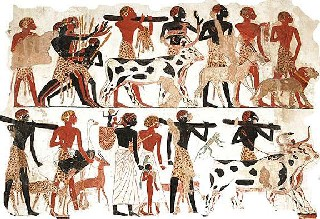
O altă teorie, destul de asemănătoare, dar totuși diferită în anumite privințe, susține că totul a început
atunci când vânători au prins și adoptat un miel. L- au îngrășat peste săptămâni sau luni, când aveau
o mulțime de alimente. Atunci când nu mai era suficientă mâncare l-au ucis și mâncat. A fost un soi de
asigurare. La un moment dat, vânătorii au început să păstreze un număr tot mai mare de astfel de miei
cu
ei, în cazul în care existau probleme în obținerea altor tipuri de alimente. Unii dintre
Pagina 97
acești miei au crescut și au ajuns la pubertate și a început să procreeze. Când oamenii au avut toate aceste
oi sub control, au preferat să sacrifice oile cele mai agresive și mai indisciplinate mai întâi. Celor
mai supuse li s-a permis să trăiască mai mult și să procreeze. De-a lungul generațiilor ar fi apărut
astfel o turmă de oi domesticite supusă nevoilor oamenilor. Aproximativ același lucru s-a întâmplat probabil
cu alte animale cum ar fi capre, vaci, găini și cai.
(CREDIT - AGRICINDIA.FILES)
Astfel de animale domestice au fost importante pentru oameni, deoarece le-au oferit alimente cum ar fi carne,
lapte și ouă. Au furnizat de asemenea oamenilor materii prime, cum ar fi piei și lână. Au oferit oamenilor
mai multă putere pentru transport, pentru aratul câmpurilor, șlefuirea boabelor și alte sarcini pe care
oamenii le-au avut anterior. După ce oamenii s-au răspândit în întreaga lume au
luat animalele domesticite cu ei. La începutul revoluției agricole ar fi existat nu mai mult de câteva
milioane de oi, bovine, caprine, porcine și pui în întreaga lume. În cea mai mare parte limitate geografic
la zone din Afro-Asia. Astăzi însă lumea conține aproximativ 1 miliard de oi, 1 miliard de porci, 1,5
miliarde de bovine si mai mult de 25 de miliarde de pui și sunt peste tot. Puii domesticiți sunt cei
mai răspândiți, este pasărea cea mai răspândită vreodată pe Pământ. Bovinele domestice, porcine și ovine
sunt al doilea, al treilea și al patrulea cele mai răspândite mamifere mari din lume desigur după homo
sapiens.

Dintr-un punct de vedere îngust pur evolutiv care măsoară succesul unei specii după numărul de copii
ale ADN revoluția agricolă a fost un succes minunat pentru puii de găină, bovine, porcine, ovine și caprine.
Din păcate, perspectiva evolutionistă este o viziune incompletă a succesului, pentru că judecă totul
pur și simplu prin criteriul supraviețuirii și a reproducerii și nu dă nici o importanță la suferința
și fericirea individuală. Puii domestici și bovinele pot fi foarte bine o poveste a succesului evolutiv
în ce ce
privește ADN-ului, dar în același timp sunt printre cele mai chinuite creaturi care au trăit vreodată
pe Pământ. Domesticirea animalelor, un succes imens în ceea ce privește numărul și răspândirea, a fost
fondată pe o serie de practici brutale care au devenit doar mult mai crude și violente pe parcursul secolelor
și mileniilor trecute. Durata de viață naturală a puilor sălbatici este de aproximativ 7-12 ani. Durata
de viață naturală a
Pagina 98
bovinelor este de aproximativ 20-25 de ani. În salbaticie, cei mai mulți pui de găină și cele mai multe
bovine mureau mult înainte de asta, deoarece vulpile sau leii le mâncau. Totuși aveau șansa unei vieți
echitabile, dacă nu de 20 de ani atunci cel puțin pentru un număr respectabil de ani. În schimb, marea
majoritate a animalelor domestice sunt sacrificate la vârsta cuprinsă între câteva săptămâni și câteva
luni pentru că aceasta a fost întotdeauna vârsta optimă de sacrificare din punct de vedere economic.
Prețul vieții
Există și animale domesticite ca găinile ouătoare, vacile de lapte și animalele de lucru, cum ar fi caii
și boi, care sunt și au fost lăsate să trăiască mai mulți ani de către proprietarii lor umani. Prețul
a fost însă sclavia și subjugarea lor la un mod de viață foarte diferit de impulsurile și dorințele animale.
E rezonabil să presupunem că taurii preferă să- și petreacă zilele rătăcind prin preeriile deschise în
compania altor tauri și vaci și viței, mai degrabă decât să-și petreacă ziua trăgând la căruțe sau să
are pe câmp. Pentru a transforma animalele în lucrători obedienți la animalele de tracțiune instinctele
naturale și legăturile sociale au trebuit să fie rupte. Agresiunea și sexualitatea a trebuit să fie controlată
și libertatea de circulație a trebuit să fie îngrădită. Agricultorii au dezvoltat mai multe tehnici,
cum ar fi blocarea animalelor în cuști, înfrânarea lor cu hamuri și lese și dresarea animalelor cu utilizarea
bicelor și bastoanele și așa mai departe. Mutilarea animalelor a fost și este folosită ca metodă pentru
a face animalele ascultătoare. Procesul de îmblanzire al unui animal implică aproape întotdeauna castrarea
masculilor ca să îngrădească agresiunea sexului masculin. De asemenea castrând majoritatea masculilor
permite oamenilor să controleze selectiv procrearea. De exemplu prin a folosi taurul cel mai puțin agresiv,
astfel că următoarea generație de vaci și tauri vor fi de asemenea mai puțin agresivi și mai deschiși
la manipularea umană.
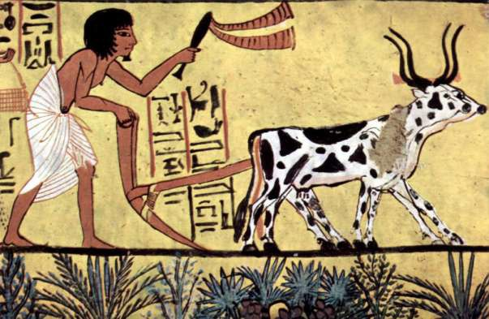
Pagina 99
În partea stângă avem o pictură dintr-un mormânt egiptean din anul 1200 Î.Hr., acum aproximativ 3000 de ani. Aceasta arată o scenă agricolă tipică a unui țăran egiptean care ară un câmp. Să încercăm să vedem această imagine din punctul de vedere al boilor. Boii sunt înjugați la plug. În sălbăticie strămoșii lor străbăteau liberi câmpiile în turme mari, în structuri sociale complexe. Prin contrast boul castrat și domesticit a petrecut cea mai mare a vieții sale sub jugul omului, singur sau în pereche fără posibilitatea de a mai crea legături sociale cu alți tauri sau vaci și fără posibilitatea de a mai da expresie nevoilor sociale și emoționale. Când un bou nu mai putea trage plugul era pur și simplu sacrificat. Când ne uităm la această imagine, să reținem și poziția aplecată a fermierului egiptean. La fel ca și boul el a petrecut o mare parte din viața sa în trudă, o muncă grea care nu este potrivită nici corpului nici minții lui homo sapiens.
Porcii din Noua Guinee
(CREDIT -WHATDOIREFLECT.FILES)
Să luăm un alt exemplu pentru soarta animalelor din societățile tradițional agricole. Pe insula Noua Guinee , ca în multe alte societăți bogăția și statutul unei persoane era măsurată tradițional prin numărul de porci pe care îi deținea. Oamenii au încercat să acumuleze cât mai mulți porci posibil. Porcii sunt problematici, deoarece sunt animale foarte inteligente, unul dintre cele mai
inteligente animale din lume. Este destul de apropiat nouă în multe feluri și dificil de controlat. Pentru a se asigura că porcii nu pot fugi, fermierii din societățile din Noua Guinee taie o parte din râtul acestuia. Acest lucru provoca porcului o durere gravă ori de câte ori încearcă să miroasă în jur. Porcii au vederea slabă și sunt dependenți de simțul mirosului la fel de mult sau chiar mai mult decât de simțul văzului. Porcii au dificultăți în găsirea alimentelor, sau chiar a se orienta în jur fără miros. Prin mutilarea râtului proprietarii umani fac porcul complet dependent de ei. Un echivalent modern al acestui obicei este inelul nas. Într-o altă parte din Noua Guinee se practica des scoaterea ochilor porcului astfel încât fermierul are grijă de toate nevoile porcului, iar ei doar stau. Astfel, porcii nu vor mai avea idei de a fugi și de a se descurca singuri.
Industria produselor alimentare
Industria produselor lactate a avut propriile sale metode de control a animalelor și pentru extragerea laptelui
de la animale. Vaci, capre și oi produc lapte numai după ce dau naștere la viței și miei și și numai
atâta timp cât aceștia sunt sugari. Laptele de vacă este menit să hrănească vițeii astfel încât pentru
a asigura o aprovizionare continuă cu lapte animal, cum ar fi laptele de vacă, un agricultor trebuie
să aibă vaci, viței și miei pentru alăptare. Marea dilemă a industriei produselor lactate este că pe
de o parte trebuie să avem acești viței altfel vaca nu ar mai da lapte și pe de altă parte nu vrem ca
vițeii să
bea de fapt laptele. O metodă comună de-a lungul istoriei a fost de a sacrifica pur și
Pagina 100
simplu vițeii la scurt timp după ce s-au născut, a folosi la maxim laptele matern și de a lăsa apoi vaca
din nou imediat gestantă pentru a asigura o furnizare de lapte continuă. Aceasta este încă o tehnică
foarte răspândită în secolul 21. În multe ferme moderne o vacă de lapte trăiește de regulă aproximativ
cinci ani înainte de a fi sacrificată. După cinci ani, producția ei de lapte ei scade și ea este sacrificată.
Pe parcursul acestor cinci ani, cât timp este în viață, e aproape constant gestantă, fiind fertilizată
la limită după 60 -
120 de zile după naștere. Vițeii sunt separați de vacă la scurt timp după naștere. Femelele sunt de obicei
crescute pentru a deveni următoarea generație de vaci de lapte și masculii sunt predați în grija industriei
cărnii.
(CREDIT - VEGARESEARCH)
O altă metodă comună în societățile agricole tradiționale este a păstra vițeii aproape de mamele lor dar
a-i împiedica să sugă prea mult lapte. Cel mai simplu mod de a face acest lucru este de a permite animalului
să se apropie de vacă pentru a începe suptul, pentru ca să degajeze laptele care începe să curgă, apoi
să-l
gonească. Această metodă are probleme, ca de obicei întâmpină rezistență, atât de la
vițel și de la mamă. Oamenii din societățile agricole au inventat șiretlicuri pentru a rezolva această
problemă. O metodă a fost să-l omoare pe vițel, să-l mănânce apoi și să-l împăieze și să-l ducă astfel
la mama sa pentru a încuraja producția de lapte. În Sudan a existat un trib care mergea atât de departe
încât ungea vițelul împăiat cu urină de la mama lor, pentru a mima un miros familiar. O altă tehnică
era un inel de spini în jurul gurii vițelului, astfel încât atunci când vroia să sugă mama se înțepa
și îl respingea.
Concluzie
Revoluția agricolă a fost un succes imens pentru vaci, pui de găină și porci colectiv ca și specie, dar o
catastrofă pentru individ. Diferența dintre succesul evolutiv pe de o parte și suferința individului
pe de altă parte, este poate cea mai importantă lecție pe care o putem trage din revoluția agricolă.
Când studiem istoria plantelor perspectiva pur evolutivă are sens, luăm în considerare doar copiile ADN.
Când studiem însă soarta animalelor cum ar fi vite sau ovine sau homo sapiens, animale cu o lume complexă,
cu senzații și emoții pe care vrem să le luăm în considerare, nu trebuie măsurat numai succesul evolutiv,
ci și impactul asupra experiențelor individului. Vedem din nou și din nou cum creșterea dramatică a puterii
colective și succesul speciei noastre sapiens a
mers mână în mână cu suferința individuală.
Lecția VI - Construind piramide
Pentru milioane de ani, oamenii au trăit în grupuri mici de câțiva zeci de indivizi.
Instinctele noastre biologice sunt adaptate la un astfel de mod de viață. Prin urmare oamenii sunt slab
pregătiți pentru a coopera cu un număr mare de străini și cu toate acestea relativ repede după revoluția
agricolă oamenii au construit deja orașe, regate și imperii uriașe. În lecția aceasta
Dr. Yuval Noe Harari ne arată cum milioane de străini s-au putut pune de acord asupra unor legi,
norme și valori comune.
Conflicte
Cel mai important efect al Revoluției Agricole a fost apariția societăților umane complexe. Oamenii au
început să trăiască în sate și orașe de sute sau chiar mii de oameni. În timp ei au întemeiat orașe,
regate și imperii în care milioane de oameni cooperau zilnic pentru obiective comune.
Un motiv a fost faptul că
agricultura a produs pentru același teritoriu o cantitate mult mai mare de alimente decât vânătoarea sau culesul. Aceasta este doar o parte din poveste. Simplul fapt că 10.000 de oameni dintr-un oraș sau un milion de oameni dintr-un imperiu au suficientă hrăna nu garantează faptul că ei vor fi de acord cum să împartă mâncarea, pământurile sau apa, că vor soluționa conflictele interne sau cum să acționeze în vremuri de criză. Dacă oamenii nu pot ajunge la un acord cu privire la aceste lucruri, atunci conflictul se extinde chiar dacă depozitele și hambare sunt pline de alimente. Nu lipsa mâncării a provocat cele mai multe războaie și revoluții din istorie. Revoluția Franceză , Primul Război Mondial, Al Doilea Război Mondial sau Războiul Civil din Iugoslavia au început toate din
cauza altor neînțelegeri.
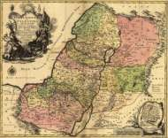
(CREDIT ANCIENTCOINAGE. ORG)
În zile noastre țara dintre Marea Mediterană și râul Iordan unii oameni o numesc Israel iar alții Palestina. Această zonă nu a cunoscut nici măcar o zi de pace de foarte mulți ani, chiar dacă există suficientă hrană pentru a hrăni toată populația: israelieni, palestinieni, evrei, creștini și musulmani. Acești oameni nu se pot pune în nici un caz de
Pagina 102
acord cu privire la politică, religie și așa mai departe. Este deci foarte dificil de a crea o ordine socială
și politică stabilă acolo.
Rădăcina la astfel de războaie și calamități este faptul că Sapiens pur și simplu
nu are instinctele naturale pentru cooperarea cu un număr mare de străini. Oamenii au evoluat timp
de milioane de ani în grupuri mici. Cele câteva milenii care separară revoluția agricolă de apariția
orașelor și imperiilor nu au fost suficiente pentru a permite ca instinctele de cooperare în masă să
evolueze prin selecție naturală.
Realități imaginare
(CREDIT - CATONSVILLE.PATCH.COM/)
În locul instinctelor Sapiens a trebuit să dezvolte povești, realități imaginare pentru a putea reglementa
cooperarea la o scară mare. Vânător-culegătorii au creat și transmis povești despre spirite ancestrale
și totemuri tribale. Aceste povești au permis poate la 500 de persoane să facă comerț cu scoici, să participe
la sărbători tribale sau să- și unească forțele în luptă. Agricultorii au folosit același truc dar la
o scară mult mai mare. Ei au început să urzească povești care în cele din urmă au permis cooperarea a
milioane de străini.
În jurul anului 8500 î.Hr. cele mai mari așezări din lume erau sate, cum era Ierihonul cu o populație
de câteva sute de indivizi. Prin anul 3000 î.Hr. existau deja zeci sau chiar sute de mii de oameni. În
primul mileniu î.Hr.
existau deja imperii cum ar fi Imperiul Roman în regiunea mediteraneană sau Imperiul Han din China cu zeci de milioane de oameni. Aceste societăți se bazau pe credința în realități emergente comune și ordinea care le-a menținut în existență poate fi numită o ordine sau orânduire imaginară. Ordine imaginară înseamnă că normele sociale și juridice care au susținut aceste societăți și le-au stabilizat s-au bazat nu pe instincte naturale sau cunoaștere personală directă ci pe credința în povești comune, în realități imaginare comune.
Cum au reușit poveștile și imaginația să susțină imperii uriașe ca Imperiul Roman, Persan sau cel Chinez
am discutat când
am detaliat Compania Peugeot
. Pentru comparație vom lua aici încă două exemple din cele mai cunoscute povești sau mituri ale istoriei
pentru a vedea modul în care acestea au fost fundamentale pentru stabilirea și menținerea unei ordinii
sociale mari. Prima poveste este
Codul lui Hammurabi, scris în jurul anului 1776 î.Hr. care ne arată ordinea socială a imperiului
antic al Babilonului, a doua este Declarația Americană de Independență din 1776 AD, care este încă astăzi
baza pentru ordinea socială modernă a Statelor Unite ale Americii cu sute de milioane de
americani.
Pagina 103
Codul lui Hammurabi
În 1776 î.Hr., Babilonul era cel mai mare oraș din lume și Imperiul Babilonian probabil cea mai mare entitate politică pe de glob. Regele avea mai mult de un milion de supuși. Stăpânea cea mai mare parte din Mesopotamia, Irakul de astăzi, inclusiv teritorii largi din ce este astăzi Iran, Siria și Turcia. A fost condus de regele Hammurabi care a scris această colecție de legi și decizii judiciare. Scopul textului a fost de a-l prezenta pe Hammurabi ca un rege-model dar și ca bază pentru un sistem juridic uniform peste întregul imperiu babilonian, ca generațiile viitoare să învețe ce este dreptatea și cum judecă un rege bun. A avut succes, generații și secole mai târziu elitele intelectuale și birocratice ale Mesopotamiei antic e au canonizat acest text și studenții babilonieni au continuat să copieze textul mult după moartea lui Hammurabi.
Codul lui Hammurabi este o sursă foarte bună pentru a ințelege cum Babilonienii antici înțelegeau dreptatea și ordinea socială. Textul începe prin a spune că zeii Anu, Enlil și Marduk, cei mai importanți zei din panteonul mesopotamian l-au numit pe Hammurabi
"pentru a face ca dreptatea să stăpânească în țară, pentru ca să-i elimine pe cei corupți și răi și pentru a preveni oprimare celor slabi".
Textul enumeră apoi aproximativ 300 de exemple de justiție ale lui Hammurabi. Totul conform unei formule
care spune că dacă s-a întâmplat un anumit lucru, atunci asta este ce trebuie făcut
(CREDIT - Wikimedia)
Iată câteva exemple cu privire la un bărbat din clasa
superioară. Dacă el:
- cauzează orbirea unui alt om de clasă superioară,
va fi orbit și el
- rupe oasele unui alt om de clasă superioară, i se vor rupe și lui oasele
- cauzează orbirea unui om de rând sau rupe oasele unui om de rând va plăti 60 de sicli de argint drept
compensare
- cauzează orbirea unui sclav sau rupe oasele unui sclav, va trebui să plătească proprietarului o
Pagina 104
jumătate din valoarea sclavului
- bate o femeie de clasă superioară și provoacă astfel un avort va trebui să plătească 10 arginți pentru
fătul ei. Dacă femeia moare, fiica lui va fi ucisă.
- bate o femeie de rând și provoacă un avort, el ar trebui să plătească 5 arginți drept compensație.
Dacă femeia de rând moare, el trebuie să plătească o despăgubire de 30 arginți.
- bate o femeie sclav și provoacă astfel un avort ar trebui să plătească 2 arginți în compensație. Dacă
femeia moare, el trebuie să plătească despăgubiri de 20 de arginți proprietarului ei.
După enumerarea tuturor hotărârilor judecătorești, Hammurabi a declarat că acestea sunt toate decizii
corecte și prin urmare el duce țara pe drumul adevărului și al unui mod corect de viață.
Codul lui Hammurabi susține că ordinea socială babiloniană este înrădăcinată în principiul universal și etern
al justiției dictate de zei. Cel mai important dintre aceste principii este cel al ierarhiei. Conform
acestui cod oamenii sunt împărțiți în două genuri și trei clase. Există oameni de nivel superior, obișnuiți
și sclavi. Fiecare dintre aceste categorii este împărțită în bărbați și femei și membrii fiecărui gen
și clasă au o valoare diferită. Viața unei femei de rând valorează 30 de arginți și viața unei sclave
valorează doar 20 de șekeli de argint. Ochiul unui bărbat de rând valorează 60 de șekeli de argint, echivalentul
a două femei obișnuite sau trei sclave.
Acest cod stabilea de asemenea o ierarhie foarte strictă în cadrul familiilor. Copiii nu erau independenți
ci proprietatea părinților lor. De aceea dacă un om superior ucidea fiica unui alt om superior, pedeapsa
este execuția fiicei criminalului. Poate suna incredibil că ucigașul rămâne complet nevătămat, în timp
ce fiica lui nevinovată este ucisă drept pedeapsă. Pentru Hammurabi și babilonieni, acest lucru era perfect
normal.
Codul lui Hammurabi s-a bazat pe presupunerea că dacă supușii regelui acceptă principiul precum și poziția
în cadrul ierarhiei și acționează în consecință atunci milioanele de locuitori ai imperiul vor fi în
măsură să coopereze eficient și societatea lor va prospera. Imperiul va putea produce suficientă hrană
pentru toată lumea, să o distribuie eficient, se va putea proteja împotriva dușmanilor și extinde chiar,
va putea dobândi mai multă bogăție și o securitate mai bună.
Declarația de Independență a
SUA
3.500 de ani după moartea regele Hammurabi, în
Pagina 105
America de Nord existau 13 colonii britanice care făceau parte din dominioanele Angliei. Aceste colonii au
considerat că regele Angliei le-a tratat pe nedrept. Reprezentanții lor s- au adunat în orașul Philadelphia,
iar pe 04 iulie 1776 AD coloniile au declarat că locuitorii lor nu mai erau supuși ai Coroanei Britanice.
Declarația de independență a proclamat alte principii universale și eterne ale justiției care similar
celor ale regelui Hammurabi trebuiau să fie inspirate de o putere divină și să servească drept bază pentru
o țară nouă și independentă numită Statele Unite ale Americii.
Ceea ce este ciudat și important este că principiul de bază dictat de Dumnezeu americanilor în ce privește
modul în care oamenii ar trebui să se comporte era exact opusul principiului dictat de zeii vechi ai
Babilonului. Zeii babilonieni susțineau principiul ierarhiei, în timp ce Declarația americană afirmă
celebru: "
Considerăm aceste adevăruri ca fiind de la sine înțelese, că toți oamenii sunt creați egali” (we
hold these truths to be self-evident that all men are created equal). Că ei sunt înzestrați de Creatorul
lor cu drepturi inalienabile, printre care viața, libertatea și căutarea fericirii. Acesta a fost principiul
de bază pe care Dumnezeul americanilor l-a dictat acestora.
Similar Codului lui Hammurabi, Declarația de Independență promite că dacă oamenii acționează în conformitate
cu principiile sale sacre, milioane de oameni vor fi în stare să trăiască împreună, să coopereze eficient,
precum și să creeze o societate sigură, pașnică și prosperă. Similar Codului lui Hammurabi, Declarația
de Independență americană a fost acceptată de generațiile viitoare și chiar și astăzi la mai bine de
200 de ani după ce Declarația a fost făcută elevii americani copiază încă și învață acest text pe de
rost.
Avem aici două texte care sugerează modul în care oamenii ar trebui să se organizeze și principiile de
bază ale justiției în societate. Dar aceste două texte ne duc într-o dilemă evidentă. Ambele pretind
principii eterne, divine, universale pentru justiție dar acestea sunt opuse. Potrivit americanilor toți
oamenii sunt egali, conform babilonienilor oamenii nu sunt egali, există o ierarhie. Cineva trebuie să
fi înțeles ceva greșit.
Thomas Jefferson
Dacă întrebați istoricii,
ambele sunt greșite. Atât Hammurabi cât și Thomas Jefferson, părinții fondatori americani, toți au
imaginat o realitate umană guvernată de principii universale și imuabile ale dreptății, cum ar fi egalitatea
în locul ierarhiilor. Singurul loc în care există astfel de principii universale, singurul loc în care
există justiție este în imaginația fertilă a lui Homo sapiens și în poveștile pe care oamenii le inventează
și și le spun unul altuia.
Nu există nici o dreptate obiectivă și nu există nici un principiu obiectiv al justiției adevărat pretutindeni
pentru toată lumea. E ușor pentru noi să vedem împărțirea oamenilor în
clase ca fiind doar o poveste pe care babilonienii au inventat-o, nu există o astfel de
Pagina 106
diviziune în realitate. Cu toate acestea, ideea că toți oamenii sunt egali este de asemenea un mit, o poveste
pe care Thomas Jefferson și americanii au inventat-o și în care mulți dintre noi astăzi se întâmplă să
credem. În ce sens sunt toți oamenii cu adevărat egali? Există vreo realitate obiectivă,
în afara imaginației și a poveștilor noastre, în care să putem spune că toți oamenii sunt cu adevărat
egali?
Să încercăm să traducem celebra propoziție din Declarația Americană de Independență în termeni biologici
și să vedem ce are de spus biologia:
Considerăm aceste adevăruri ca fiind de la sine înțelese, că toți oamenii sunt creați egali, că ei sunt înzestrați de Creatorul lor cu anumite drepturi inalienabile între care sunt viața, libertatea și căutarea fericirii
credit - NIST.GOV
În conformitate cu știința biologiei oamenii nu au fost creați ci au evoluat și cu siguranță nu au evoluat
să fie egali. Ideea de egalitate este indisolubil legată de ideea de creație. Americanii au luat ideea
egalității tuturor oamenilor din creștinism care susține că fiecare persoană are un suflet divin creat
și că toate sufletele sunt egale în fața
lui Dumnezeu. Cu toate acestea dacă credem pe biologi și mitul creștin despre Dumnezeu, creație și suflete,
ce înseamnă că toți oamenii sunt egali? Evoluția, așa cum știm de la biologie, se bazează pe diferențe.
Fiecare persoană poartă în ADN-ul său un cod genetic oarecum diferit, iar fiecare persoană este expusă
la naștere la influențe diferite de mediu. Acest lucru conduce la dezvoltarea de calități diferite pe
care oamenii le duc cu ei. Aceste calități înseamnă șanse diferite de supraviețuire și reproducere. Chiar
gemenii identici nu sunt cu adevărat identici în sens biologic, deoarece experimentează influențe diferite
din mediu în timpul vieții lor. Dacă vrem să să traducem adevărul biologic ar trebui să spunem nu
"creați egali" ci
"evoluați diferit".
Cum oamenii nu au fost creați, nu există nici un creator care să-i înzestreze cu nimic. Există doar un
proces evolutiv orb care nu are scop și nici sens, iar acest lucru este ceea ce duce la naștere. Prin
urmare,
"înzestrat de Creator",ar trebui să fie tradus pur și simplu
"născut".
Un alt termen-cheie în Declarația de Independență este
"drepturi".Nu există un drept în biologie. În lumea naturală animalele au organe, abilități
și trăsături, ele nu au drepturi. Păsările de exemplu nu zboară deoarece au un drept, ci pentru că au
aripi. Aceste organe, abilități și trăsături nu sunt inalienabile. Inalienabil înseamnă că nu se pot
lua, nu
se pot schimba. Multe dintre organele și calitățile animalelor inclusiv la om sunt supuse
Pagina 107
mutației constante, acesta este procesul de evoluție. Unele din aceste organe și calități
pot fi pierdute în timp.
Struțul spre exemplu a pierdut capacitatea de a zbura. Declarația vorbește despre drepturi inalienabile,
dar în biologie ar trebui să vorbim despre trăsături mutabile. Care sunt trasaturile care au evoluat
la oameni? Desigur viața, dar ce putem spune despre libertate? Declarația vorbește despre viață, libertate
și căutarea fericirii. Nu există nici un astfel de concept ca libertate în biologie. La
fel ca și egalitatea, dreptul și societățile cu răspundere limitată, libertatea este inventată de oameni
și există doar în poveștile pe care ni le spunem unul altuia.
(CREDIT - DRBU.ORG)
Al treilea drept este
"căutarea fericirii". Până în prezent, cercetare biologică nu a reușit să vină cu o definiție
clară a fericirii sau o măsură obiectivă a fericirii. Cele mai multe studii biologice recunosc existența
plăcerii. Este mult mai ușor să se definească și să se măsoare plăcerea. Să luăm conceptele cheie: viață,
libertate și căutarea fericirii, o traducere în termeni biologici este
"viață și căutarea placerii". Dr. Harari încearcă o traducere a acestei propoziții celebre
în
termeni biologici:
Noi susținem aceste adevăruri ca fiind de la sine înțeles că toți oamenii au evoluat diferit, că se nasc cu anumite trăsături mutabile și că printre acestea sunt viața, precum și căutarea placerii.
Avocații egalității, a drepturile omului și ai democrației vor fi oripilați de acest linie de gândire. Răspunsul
lor va fi probabil de genul că știm că oamenii nu sunt egali d.p.d.v. biologic. Dacă noi credem însă
că toți oamenii sunt egali în esență, aceasta ne va permite să creăm o societate stabilă și prosperă,
așa că o credem în continuare chiar dacă nu este un adevăr biologic. Avem aici ceea ce oamenii de știință
descriu când vorbesc despre realități sau ordini imaginare. Noi credem într-un fel în care societatea
ar trebui să se comporte nu pentru că este adevărat obiectiv, un fapt științific, ci pentru că crezând
în această poveste imaginată vom putea să cooperăm eficient precum și să cimentăm o societate stabilă.
Aceste realități imaginare sunt singurul mod în care un număr mare de oameni pot coopera eficient. Sunt
necesare, dar nu înseamnă că sunt cu adevărate obiective. Hammurabi și-ar fi apărat principiul său ierarhic,
folosind exact aceeași logică. Dacă ordinea socială așa cum vedem acum se bazează pe povești și
realități imaginare, cum putem împiedica o posibilă prăbușire a ei?
Pagina 108
Pericolul prăbușirii ordinii sociale
Răspunsul este că există într-adevăr un astfel de pericol. Tocmai de aceea ordinea socială a oamenilor
este mult mai puțin stabilă decât ordinea socială de la cimpanzei, lupi, sau furnici și de ce noi, oamenii,
avem atât de multe
revoluții și răsturnări de regim în istorie. Ordinea socială nu poate fi schimbată tot timpul, altfel
nu am putea construi societăți durabile. Oamenii investesc o mulțime de timp, efort și bani în stabilizarea
ordinii sociale și a poveștilor care o susțin. Unele astfel de eforturi iau forma violenței și coerciției.
Armate, forțe de poliție, tribunal și închisori sunt mereu active și forțează oamenii să
acționeze în conformitate cu ordinea imaginară. Cu toate acestea, un ordin imaginar nu poate fi susținut
numai prin violență, necesită de asemenea adevărați credincioși.
(CREDIT: REUTERS / ALESSANDRO
Un singur preot are de multe ori rolul a 100 de soldați, mult mai ieftin și mai eficient. Preotul te convinge
să crezi în această
poveste, iar apoi nu va mai fi nevoie de soldați și poliție pentru a menține ordinea. Aceasta a fost
într-adevăr cheia pentru crearea structurilor sociale stabile. Creștinismul de exemplu nu ar fi durat
2000 de ani doar prin violență și constrângere. Creștinismul a reușit să dureze atât de mult deoarece
cei mai mulți episcopi, preoți, papi au crezut cu adevărat în poveștile din Biblie și în Isus. În mod
similar, democrația americană nu ar fi durat 250 ani dacă toți președinții, senatori și liderii de partid
nu ar fi crezut în egalitatea și drepturile omului și lucruri de genul asta. Există lideri politici din
SUA care acționează ca și cum ar crede, chiar dacă de fapt nu o fac, este însă o excepție, cei mai mulți
dintre ei cred într-adevăr altfel democrația s-ar fi prăbușit cu mult timp în urmă. În mod similar, atunci
când ne uităm la economie, sistemul capitalist s-ar fi prăbușit dacă bancherii, independenții și șefii
corporațiilor nu ar fi crezut în poveștile capitalismului.
Ce cred oamenii?
(CREDIT - Wikimedia)
Cum anume pot oamenii fi determinați să creadă într-o ordine imaginară, cum ar fi creștinismul, democrația sau capitalismul? Acesta este scopul principal al educației și socializării. Din momentul nașterii până în momentul morții noi suntem bombardați constant cu poveștile de bază ale societății noastre. Am auzit aceste povesti în cuvinte, în basme, ca drame, melodii, ca propagandă politică. De asemenea putem vedea, atinge, mirosi, gusta chiar aceste povești fundamentale în picturi, arhitectură, modă,
Pagina 109
alimentație și în moda îmbrăcămintei. De exemplu, cel puțin în țările occidentale oamenii de azi cred în
egalitate. E la modă pentru cei bogați să poarte blugi, care au fost inițial îmbrăcămintea clasei muncitoare.
Un profesor de la o universitate atunci când ajunge lector nu are nevoie de blugi, el nu face o muncă
periculoasă sau grea. Prin purtarea blugilor el transmite mesajul că el crede în egalitate. În Evul Mediu
oamenii nu credeau în egalitate ci în ierarhii. Un nobil nu ar fi purtat hainele de lucru ale țăranului.
O mare parte din ceea ce fac profesorii de istorie, sociologie, antropologie, științe umaniste și sociale
este de a studia modul în care ordinea imaginară, poveștile în care credem sunt țesute în fiecare aspect
al vieții de zi cu zi, cum ar fi hainele pe care le purtăm. Acest curs nu poate aprofunda acest subiect
din cauza constrângerilor de timp, se vor spune doar câteva cuvinte generale. Dr Harari s-a axat pe trei
factori principali care împiedică persoanele să-și dea seama că principiile care organizează viața lor
și societatea există numai în imaginația lor.
În primul rând chiar dacă ordinea imaginară există doar în mintea noastră, societatea încearcă cât mai mult să o lege de realitatea materială. Pentru a fi cu adevărat puternice și influente poveștile trebuie să părăsească sfera minții și să înceapă să modeleze lumea materială. Majoritatea occidentalilor cred de exemplu în individualism. Ei cred că fiecare ființă umană este o
persoană a cărei valoare adevărată nu depinde de poziția în ierarhia socială, nici de ceea ce alți oameni
cred despre ea. Ideea principală a individualismului este că fiecare persoană are un soi de lumină interioară
care dă valoare și semnificație vieții lor. În școlile moderne spunem copiilor că dacă colegii lor fac
haz de ei ar trebui să-i ignore pur și simplu, colegii lor nu știu cu adevărat cine sunt, doar individul
își cunoaște propria valoare. Această poveste a individualismului a avut un impact imens asupra arhitecturii
moderne. Casa modernă ideală este împărțită în camere mai mici, astfel încât fiecare copil să poată avea
un spațiu privat, ascuns, oferind autonomia maximă copilului. Această cameră privată are de foarte multe
ori o ușă care poate fi blocată de către copil. Părinții trebuie să bată pentru a intra în cameră. Deseori
copiii au autonomie în camerele lor spre exemplu în decorare. Ei pot pune afișe cu cântăreți sau jucători
de fotbal, decid cum va arăta spațiul lor privat. Acest lucru reflectă idealul individualismului. Cineva
care crește într-un spațiu privat și închis nu se poate imagina altfel decât o persoană a cărei
adevărată valoare emanează din interior.
Pagina 110
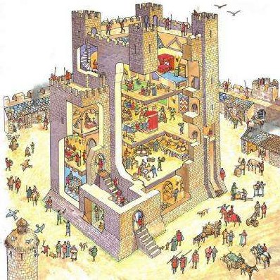
În Evul Mediu nobilii nu credeau în individualism. Nobilimea medievală crede că valoarea unei persoane
este dată de locul în ierarhia socială și ce alte persoane spuneau și gândeau despre ea. Pentru un nobil
să râdă alte persoane de el, chiar și copii era o mârșăvie oribilă. Nobilii învățau copii să protejeze
numele lor bun în societate, chiar cu prețul vieții. Un tată nobil îi spunea fiicei lui, dacă alți copii
râd de tine atunci trebuie să-ți protejezi onoarea pentru că adevarata ta valoare nu vine din interior
ci vine de la
ceea ce cred și spun alți oameni despre tine. Sistemul de valori medieval nu a rămas doar în minte; a
avut un impact enorm asupra lumii din jur, în arhitectură. Locuința unui nobil medieval, castelul, rareori
avea camere private pentru copii. Fiul adolescent al unui baron medieval, nu avea o cameră proprie cu
o ușă care să o poată închide, el nu-și putea decora camera în modul în care îi plăcea, punând afișe
cu cavaleri celebri pe pereți sau săbii și topoare. El dormea și creștea în săli mari comune. Somnul
și mănâncatul în prezența constantă a altor persoane l-au învățat că adevărata lui valoare depinde de
ceea ce alții spun și gândesc despre el.
Aceasta este prima metodă prin care structurile imaginare se stabilizează, transformăm poveștile în case,
trăim apoi în ele iar asta formează mințile noastre și ne face să credem mai ușor aceste povești speciale.

Al doilea lucru care ajută la stabilizarea orânduirii imaginare este că aceasta este mulată pe dorințele noastre profunde. Majoritatea oamenilor nu acceptă că structura care reglementează viața lor este imaginară, deoarece chiar această structură controlează și modelează dorințele lor cele mai adânci. Chiar dorințele cele mai egoiste și personale sunt de obicei programate sau determinate de organizarea imaginară a societății. Să luăm de exemplu dorința atât de populară în zilele
noastre de a face un concediu în străinătate în Franta sau India sau oriunde. Mulți oameni visează în ziua
de azi să meargă în vacanță în alte țări. Nu există însă nimic natural evident aici. Un cimpanzeu alfa
mascul nu visa niciodată să-și utilizeze puterea sa în banda de cimpanzei pentru a merge în vacanță pe
teritoriul unei trupe de cimpanzei vecine. În mod similar, elitele multor societăților umane cum ar fi
elita Egiptului
antic au petrecut averile pentru construcția de piramide uriașe unde cadavrele lor s-au
Pagina 111
mumificat. Nici unul dintre cei mai bogați oameni din Egiptul antic nu și-a dorit să călătorească într-o vacanță de vară în Babilon sau o vacanță de schi în Fenicia. Oamenii de astăzi petrec o mare parte din timp, efort precum și bani pe vacanțe în străinătate. Nu pentru că e firesc să vrem astfel de lucruri dar pentru că am fost programați de poveștile societăților noastre să vrem astfel de lucruri. Oamenii de azi sunt adevărați credincioși în poveștile a ceea ce oamenii de știință numesc consumismul romantic.
Consumism Romantic
Consumismul romantic este una dintre poveștile cele mai puternice astăzi în lume. Este o combinație între
două dintre cele dominante ideologii moderne târzii: romantism și consumism.
Romantismul ne spune că pentru a profita din plin de viață și potențialul uman trebuie să avem cât
mai multe experiențe diferite posibil. Trebuie să ne deschidem la un spectru larg de emoții și să degustăm
diferite tipuri
de relații, alimente, să învățăm să apreciem tot felul de stiluri muzicale și artistice. Potrivit romantismului
metoda este de a ne elibera de rutina de zi cu zi este să lăsăm în urmă mediul familiar și a călători
într-o țară îndepărtată unde putem experimenta cultural, mirosuri, gusturi, norme și valori ale altor
oameni. Auzim din nou și din nou aceeași poveste romantică despre cum o nouă experiență
"mi-a deschis ochii și mi-a schimbat viața".
Consumismul , o altă ideologie importantă ne spune că pentru a fi fericit trebuie să consumăm cât mai multe produse și servicii posibil. Daca simțim că ceva lipsește în viața noastră sau ceva nu e în ordine, atunci probabil avem nevoie să cumpărăm un produs sau serviciu nou. Poate avem nevoie de terapie de relație sau de cursuri de yoga. Dar trebuie să cumpărăm ceva pentru a fi cu adevarat fericit. Fiecare serial de televiziune este o altă mică poveste despre modul în care consumul unor produse sau servicii vor face viața mai bună.
Romantismul se îmbină perfect cu consumismul. Căsătoria dintre ele este ceea ce a dat naștere la piața
infinită de experiențe pe care se întemeiază industria turismului modern. Industria turismului este una
dintre cele mai mari industrii din lume. Ea nu vinde bilete de avion sau camere de hotel,
vinde experiențe. Paris nu este un oraș; din
punct de vedere turistic Paris este o experiență. India nu este o țară, India este pur și
Pagina 112
simplu un alt fel de experiență. Schi-ul în Alpi nu este un sport ci un al treilea fel de experiență. Oamenii
o fac pentru că vor experiențe. Consumul tuturor acestor experiențe ar trebui să ne extindă orizonturile,
să ne împlinească potențial și să ne facă fericiți. Când un multimilionar se ceartă cu soția el poate
încerca să repare lucrurile printr-o vacanță scumpă la Paris. Aceasta nu este o reflectare a unor dorințe
naturale și independente; aceasta este o reflectare a unei credințe arzătoare în povestea consumismului
romantic. Un om bogat din Egiptul antic nu ar fi visat niciodată să-și rezolve o criză de familie prin
luarea soției în vacanță în Babilon. El ar fi încercat să repare lucrurile sugerând construcția unui
mormânt somptuos la care ea a visat mereu, sau să fie de acord să mumifice corpul ei după moarte.
CREDIT - ASSETS.NYDAILYNEWS
Ca și elitele din Egiptul antic, cei mai mulți oameni pe parcursul istoriei au fost foarte ocupați cu
construcția piramidelor. Numai numele, dimensiunile și formele acestor piramide s-au schimbat de
la o societate la alta. De exemplu aceste piramide pot lua forma unui apartament somptuos cu
vedere spre Fifth Avenue în New York, sau o vilă cu o piscină mare și o mulțime de camere si trei mașini
și așa mai departe. Oamenii sunt atât de ocupați cu urmărirea acestor fantezii încât se opresc rar să
se intrebe de ce cred în ele în primul rând.
Al treilea lucru care stabilizează orânduirea imaginară este că aceasta este incorporată nu numai în dorințele unei singure persoane ci în nenumărați oameni. Chiar dacă printr- un efort supraomenesc reușești să te eliberezi de dorința de a pleca în străinătate sau de a avea o casă mare ești doar o singură persoană. Pentru a schimba cu adevărat o societate trebuie să convingi milioane de străini să se comporte ca tine și să coopereze cu tine. Realitatea imaginară nu este o orânduire subiectivă existentă în imaginația unei singure persoane ci o orânduire inter-subiectivă , care există în imaginația comună a mii și chiar milioane de oameni. Pentru a înțelege ce înseamnă acest lucru, Dr. Harari trebuie să spună câte ceva despre diferența dintre obiectiv, subiectiv și inter-subiectiv. Diferența dintre ele este de fapt unul dintre cele mai importante mesaje.
Obiectivul este ceva care există independent de conștiința umană și de ceea ce cred oamenii, pot inventa și spune unul altuia. Un exemplu bun de ceva care are o existență obiectivă, de o realitate obiectivă este activitatea radio. Radioactivitatea nu este o poveste pe care oamenii au inventat și și-au spus-o unul altuia. Radioactivitatea a existat și a influențat oamenii cu mult înainte ca cineva să știe despre ea. Există și influențează chiar oamenii care nu cred în ea. Primii savanți care au studiat sau descoperit radioactivitatea în secolele 19 și începutul sec. 20, nu au înțeles cu ce au de a face.
Foarte adesea ei nu și-au luat toate măsurile de precauție și prin urmare unii dintre ei,
Pagina 113
cum a fost Marie Curie, au murit ca urmare a expunerii la radioactivitate fără măsuri de precauție.

Subiectivul este ceva care există, în funcție de conștiința și convingerile unui singur individ, și va dispărea sau schimba dacă acel individ special își schimbă convingerile. De exemplu mulți copii cred în existența unui prieten imaginar pe care numai copilul îl poate vedea și vorbi. Pe măsură ce copilul crește, el nu mai crede și prietenul imaginar dispare. Un prieten imaginar este un fel
de entitate subiectivă, ea există doar în imaginația unui singur copil.
Inter-subiectivul este ceva care există în rețeaua de comunicații care leagă conștiința subiectivă a mai multor persoane fizice. Dacă un singur individ își schimbă convingerile sale sau moare este de mică importanță. Cu toate acestea, în cazul în care cele mai multe persoane din rețea mor sau își schimbă convingerile, atunci fenomenul
inter-subiectiv va evolua și se va schimba, sau va dispărea complet. Mulți dacă nu majoritatea jucătorilor
cei mai importanți ai istoriei sunt entități inter-subiective: zei, națiuni, drepturile omului, bani,
corporații și așa mai departe, sunt toate entitățile inter- subiective. Ele nu sunt prieteni imaginari
ai unui singur individ, nu sunt nici entități obiective și forțe cum ar fi radioactivitatea. Dacă luăm
Compania Peugeot din nou, ca exemplu. Societate Peugeot nu este o entitate subiectivă. Nu este prietenul
imaginar al CEO-ului. Compania există în imaginația comună a milioane și milioane de oameni. Consiliul
de administrație, avocați, secretari, angajati ai firmei, managerii și CEO-ul și prietenii săi toți cred
că există Peugeot. Dacă numai CEO-ul nu ar mai crede în existența companiei ei l-ar pune în cel mai apropiat
ospiciu și ar numi pe altcineva. Peugeot nu depinde de convingerea unei singure persoane.
În mod similar dolarul american, drepturile omului sau chiar Statele Unite ale Americii în sine există
în realități inter-subiective, în imaginația comună a milioane și milioane de indivizi. Nici un individ
nu poate amenința existența lor prin schimbarea convingerilor sale. Pentru a le schimba cu adevărat,
el va trebui să se schimbe convingerile a sute de milioane de persoane diferite. Evident, o astfel de
schimbare uriașă nu este ușor de
realizat. Pentru a schimba conștiința a sute de milioane de oameni simultan ai nevoie de obicei de ajutorul
unor organizații mari cum ar fi un partid politic sau o religie sau o mișcare teologică. În scopul de
a stabili astfel de organizații complexe va trebui să convingi milioane de străini să coopereze unul
cu altul și să creadă într-un alt mit comun. În scopul de a schimba o orânduire imaginară existentă,
trebuie să credem mai întâi într-una alternativă. Pentru a demonta compania Peugeot trebuie mai întâi
să vă imaginați ceva mai puternic ca
Pagina 114
sistemul juridic francez. Dacă doriți să schimbați sistemul juridic francez va trebui să credeți în existența
a ceva chiar mai puternic, cum ar fi națiunea franceză. Nu există nici o cale de ieșire din orânduirile
imaginare. Când am demolat zidurile închisorii imaginare și credem că suntem liberi ne trezim în curtea
mai spațioasă a unei închisori mai mari. Singura modalitate de a opri o poveste este a începe să credem
într-o poveste mai mare și mai complicată.
Curte în închisoarea centrală feminină din CALIFORNIA
Aceasta este deci metoda de construcție a unei orânduiri imaginare în care milioane de oameni se pot încrede
vreme de decenii, secole și milenii. Prin încorporarea în mediul material care înconjoară oamenii a celor
mai profunde credințe și dorințe a milioane și milioane de oameni. Dacă puteți face
asta, atunci veți putea crea o societate de succes. Fără ea nu veți putea crea o societate stabilă chiar
dacă aveți toate alimentele din lume. Ordinea socială se va prăbuși, indiferent cât de mult alimente
ați avea în posesie. Chiar dacă aveți aceste două condiții, nu este încă suficient pentru a construi
orașe, regate, imperii și state foarte mari. Mai este nevoie de încă un al treilea ingredient.
Ingredientul final
Până la sfârșitul Revoluției Agricole toate informațiile necesare pentru a opera societăți umane au fost
stocate și procesate în creierul uman. Aceasta a lucrat destul de bine pentru zeci de mii de ani. După
Revoluția Agricolă societățile umane au început să crească tot mai mult, cantitatea de informații necesare
a crescut. Pentru funcționarea unui oraș de 5000 de oameni era nevoie de mult mai multe informații decât
un trib mic în căutarea hranei, atât de multe informații încât cele mai multe creiere umane sunt pur
și simplu incapabile să le manipuleze pe toate. Chiar mai important era nevoie de a stoca și procesa
nu numai cantități tot mai mari de informații, dar și un tip de informații complet nou, pentru care creierul
uman mediu este prost adaptat. Acest nou tip de informații este monoton, conține date matematice sau
mai simplu numere. Vânător-culegătorii antici au avut puțină nevoie de numere. Pentru a supraviețui era
suficient să-și amintească forma, calitățile, felul de comportament a mii de specii de plante și animale
și de asemenea să- și amintească calitățile, caracterul și relațiile cu mai mulți membri ai tribului.
Presiunile evolutive peste generațiile au adaptat creierul uman pentru a stoca și analiza cantități imense
de informații botanice despre plante, informații zoologice despre animale, informații topografice precum
și informații sociale umane. Vânător-culegătorii nu au fost
obligați să înregistreze cantități mari de date matematice.
Pagina 115
(CREDIT - LAUGHINGSQUID.COM)
Pentru a menține un regat mare însă, numerele și datele matematice sunt vitale. Nu este suficient să legifereze
și să spună povești despre zei. Dacă Hammurabi dorea să mențină ordinea unui imperiu el trebuia să colecteze
impozite de la sute de mii de oameni. Pentru aceasta el a trebuit să colecteze date despre veniturile
și averile tuturor acestor oameni. Avea nevoie de date despre plățile care au fost deja efectuate, datorii
și amenzi, reduceri și scutiri. Aceasta se adună în milioane de date care trebuie să fie stocate și
procesate. Fără această capacitate, regele Hammurabi sau orice alt stat nu ar ști ce resurse are la dispoziție.
Problema a fost și că stocarea, colectarea și prelucrarea acestor cantități mari de date este imposibil
pentru majoritatea creierelor umane. Această limitare mentală a constrâns sever dimensiunea și complexitatea
colectivelor umane după Revoluția Agricolă. Dacă cantitatea de oameni și proprietăți într-o anumită societate
creștea prea mult nimeni nu mai putea face matematica și sistemul se prăbușea.
Mii de ani după revoluția agricolă rețelele sociale umane au rămas relativ mici și simple. Primii care
au reușit să depășească această problemă au fost vechii sumerienii, în sudul Mesopotamiei, astăzi sudul
Irakului. Orașe mari și chiar imperii au început în jurul anului
4000 î.Hr. în acea zonă. Cândva între 3500 î.Hr. și 3000 î.Hr., unele genii sumeriene necunoscute au
inventat un nou sistem pentru stocarea și prelucrarea informațiilor în afara creierului. Acest nou sistem
a fost construit special pentru a manipula cantități mari de numere și date matematice. În acest fel
sumerienii și-au eliberat orânduirea socială de limitele creierului uman și au deschis calea pentru apariția
societăților mari. Acest sistem de prelucrare a datelor inventat de sumerieni se numește desigur
scrisul. Scrisul este o metodă pentru stocarea și procesarea informațiilor prin folosirea semnelor
materiale mai degrabă decât neuroni. Scrisul nu a fost inventat pentru poezie sau filozofie, istorie,
acest lucru se putea face și fără scris. Dacă ne uităm la primele cuvinte de înțelepciune care ajung
la noi de la strămoșii noștri din urmă cu 5000 ani vom fi dezamăgiți. Dacă sperăm că că primele cuvinte
scrise de natură umană sunt un soi de
idei filosofice înțelepte sau poem minunat sau o poveste ne înșelăm.
Pagina 116
Imaginea din stânga este o tabletă de lut din orașul Uruk din sudul Mesopotamiei, unul dintre primele texte din istorie. Din câte înțelegem această tabletă spune "29.086 măsuri, orz, 37 luni Kushim". Sensul mai probabilă a acestui text este că 29.086 măsuri de orz au fost primite pe parcursul a
37 de săptămâni semnat Kushim. Nu suntem siguri ce înseamnă Kushim, ar putea să fie titlul unui titular de
birou sau numele unei
persoane. Dacă Kushim era numele unei persoane, el poate fi primul individ din istorie al cărui nume
este cunoscut. Toate numele anterioare, cum ar fi neanderthalienii, sau Göbekli Tepe sunt invenții moderne.
Odată cu apariția scrisului începem să auzim istoria prin urechile protagoniștilor săi. Se spune că primul
nume înregistrat în istoria omenirii nu aparține unui profet, poet, filosof sau mare rege ci unui contabil.
Primele texte ale istoriei nu au conținut perspective filozofice sau poezie sau legi ale unor triumfuri
regale. Primele texte ale istoriei au fost documente economice destul de plictisitoare care înregistrează
plata impozitelor, acumularea de proprietăți precum și dreptul de proprietate asupra bunurilor.
Cu trecerea secolelor, scrierile au devenit mai sofisticate, iar oamenii au început să scrie nu numai
taxe și listele de proprietate dar și poezie, filozofie, legi și scripturi sacre. Chiar și astăzi, funcția
cea mai de bază a scrisului este de a stoca informații administrative și date matematice care nu pot
fi stocate și procesate în creierul uman. Astăzi, limba dominantă a întregii lumi este limbajul numerelor.
Aproape toate statele, companii, organizații și instituții, indiferent dacă vorbesc limba engleză, arabă,
hindi, sau norvegiană folosesc toate același limbaj de numere pentru a înregistra și procesa date. Fiecare
bucată de informații care poate fi tradusă în cifre este stocată, răspândită și prelucrată cu o viteză
și eficiență uimitoare. Informații care din anumite motive nu pot fi traduse în limbajul numerelor sunt
de multe ori ignorate sau uitate. O persoană care dorește într-adevăr să influențeze deciziile guvernelor,
organizațiilor și companiilor internaționale nu trebuie să învețe să vorbească limba engleză sau chineză,
ea trebuie să învețe să vorbească în cifre.
Există domenii întregi ale cunoașterii, fizică și inginerie care au pierdut aproape toate legăturile
cu limba umană vorbită și sunt menținute aproape în întregime de către programe matematice. Să luăm această
ecuație înfricoșătoare. Când o văd,
Pagina 117
majoritatea oamenilor intră de obicei în panică. Această reacție este firească, nu o urmare a lipsei de inteligență
sau de curiozitate. Este pur și simplu pentru că creierul uman este - cu rare excepții - incapabil să
gândească în concepte precum relativitatea sau mecanica cuantică. Fizicienii au reușit să se dezvolte
idei și teorii deoarece au învățat să anuleze modul tradițional uman de a gândi. Au învățat în schimb
să gândească cu ajutorul sistemelor de prelucrare a datelor cum ar fi sursele externe de scris, ecuații
și calculatoare. Etape cruciale ale progresului în fizică au loc nu în capul fizicianului ci în interiorul
calculatoarelor sau pe tablele sălilor de clasă sau pe hârtie pentru că toate aceste ecuații nu se pot
calcula în cap, capul nu e construit pentru așa ceva.
(CREDIT - PSTCC.EDU)
Mai recent, script-uri matematice și limbajul numerelor au dat naștere la un sistem de scriere și mai revoluționar,
script-ul binar computerizat, care constă din doar două semne, zero și unu. Videoclipurile pentru acest
curs sunt în limba engleză, dar cuvintele sunt
înregistrate și transmise codificat în zero și unu în interiorul computerelor. Acest lucru nu este sfârșitul
poveștii evoluției scrisului. Astăzi oamenii de știință încearcă să creeze inteligență artificială care
se va baza complet doar pe script-ul binar al calculatoarelor. Dacă reușesc, vom avea o inteligență care
vorbește și gândește numai în numere. În cazul în care acest lucru se întâmplă, atunci scrierea care
a fost inventată prima acum cinci mii ani ca o modalitate de a ajuta creierul uman poate înlocui în cele
din urmă creierul uman complet. Dar acesta este viitorul. În primul rând trebuie încă să înțelegem trecutul.
Lecția VII - NU există dreptate în istorie
Un factor critic în formarea societăților complexe a fost împărțirea populației într-o ierarhie de grupuri. Societățile agricole și industriale au fost construite pe ierarhii de clasă, rasă, etnie și gen. De ce a nu a fost posibil să se creeze o societate egală și dreaptă? Care este rădăcina profundă a prejudecăților și nedreptății? Și în special, de ce aproape toate societățile cunoscute tratează bărbații ca superiorii femeilor? Acestea sunt întrebările la care Dr. Yuval Noe Harari încearcă să răspundă în a șaptea lecție de din cursul “O scurtă istorie a omenirii”. Această lecție este ultima parte din secțiunea a doua, Revoluția Agricolă.
Ierarhii și organizații
Înțelegerea istoriei umane în mileniile următoare revoluției agricole practic se reduce la o singură întrebare.
Cum se pot organiza oamenii în rețele de cooperare în masă fără instinctele biologice necesare pentru
a susține aceste structuri? Răspunsul scurt este că oamenii au creat orânduiri imaginare și au inventat
scrisul care a umplut golurile lăsate de moștenirea biologică. Vom examina impactul noilor rețele de
cooperare în masă asupra vieții și a relațiilor dintre oameni.

Apariția acestor rețele de cooperare în masă a fost pentru mulți o binefacere dubioasă. Orânduirea imaginară
care le-a susținut nu era nici neutră, nici echitabilă. Au împărțit oamenii în grupuri imaginare și au
aranjat grupurile într-o ierarhie. Clasele superioară s-au bucurat de privilegii, putere și bogăție iar
cele
inferioare de discriminări și depresii. Codul lui Hammurabi de exemplu, a stabilit o ierarhie clară a clasei superioare, de rând și sclavi. Cei din clasa superioară luau tot ce era bun în viață, cei de rând primeau ce mai rămânea iar sclavii nu primeau nimic. Toate societățile cunoscute au fost împărțite în astfel de ierarhii complexe. În unele locuri și epoci, persoanele au fost împărțite în funcție de castă, în altele în funcție de rasă sau religie sau avere. De multe ori mai multe astfel de diviziuni au fost aplicate dintr-o dată. Un exemplu din lumea modernă: în Statele Unite ale Americii oamenii sunt împărțiți și tratați în funcție de rasă, religie, sex și avere simultan. Statutul unei negrese bogate
musulmane este diferit de statutul unei negrese bogate creștine sau de cel al unui evreu
Pagina 119
sărac alb. Oricâte divizii are o societate, principiul de bază rămâne mereu același. Se clasifică oamenii
în diferite categorii și persoanele sunt tratate în funcție de categoria în care sunt plasate. Nu e
nevoie să cunoaștem abilitățile sau personalitatea fiecăruia.
(credit
APNABHAARAT.FILES)
La căsătorie, în societatea tradițional hindusă, primul si cel mai important atribut al partenerului potențial este casta din care face parte. Acest lucru este
Hindușii care aderă la sistemul tradițional de caste cred de asemenea că forțele cosmice sunt responsabile pentru împărțirea castelor. Potrivit unui foarte celebru mit creaționist Hindus , zeii au creat lumea din corpul mitologic al unei entități primordiale Purusha. Potrivit acestei povești, soarele a fost creat din ochii lui Purusha. Luna a fost creată din creier, brahmanii, preoții, cea mai înaltă castă din gura sa. Kshatriyas , clasa războinică din brațele lui Purusha și vaisya , țăranii și negustorii din coapsă. Shudras, agenți și sclavii care fac toate treburile murdare au fost creați din picioarele lui Purusha. În conformitate cu această poveste diferențele socio-politice dintre brahmani, Shudras, Vaishyas și așa mai departe sunt naturale și eterne la fel ca diferențele între soare și lună.

Vechii chinezi credeau că atunci când zeița creatoare Nüwa a creat oamenii din pământ ea a creat aristocrații din solul galben, fin și bun în timp ce oamenii de rând i-a format din noroi maro și acesta este motivul pentru care aceștia nu sunt la fel de buni. Astăzi capitaliștii cred că ierarhia averii reflectă diferențele reale între capacitățile și calitățile oamenilor. Mulți dintre ei cred că cei bogați au mai mulți bani și privilegii deoarece sunt mai inteligenți și lucrează din greu. Capitaliștii cred că este echitabil dacă bogații primesc o îngrijire a sănătății, educație și nutriție mai bună pentru că au câștigat aceste merite, reflectă abilitățile lor superioare. Cu toate acestea, aceste ierarhii sunt produsul imaginației umane,
simple povești umane care nu reflectă nici o ordine naturală . Brahminii și Shudras în
Pagina 120
India spre exemplu, nu au fost creați de zei din diferite părți ale corpului lui Purusha, distincția a fost
creată de legi și norme pe care oamenii care trăiau în nordul Indiei cu trei mii de ani în urmă le-au
inventat.
Între oamenii de culoare și cei albi există diferențe obiective biologice, cum ar fi culoarea pielii
și tipul de păr, dar nu există nici o dovadă că diferențele dintre rase se extind la inteligență sau
moralitate cum susțin rasiștii. Cei mai mulți oameni sunt în zilele noastre ofensați de ideea unei ierarhii
rasiale care să interzică persoanelor de
culoare să trăiască în cartiere de albi, sau să fie tratați în spitalele albilor. În schimb ierarhia
săracilor și bogaților în care oamenii bogați trăiesc în cartiere separate de lux, studiază la școli
separate mai bune, primesc tratament medical în spitale diferite și mai bune pare perfect normală pentru
mulți dintre noi astăzi. Cu toate acestea este un fapt dovedit că cei mai mulți oameni bogați sunt bogați
doar deoarece sunt născuți într-o familie bogată și nu pentru că au unele aptitudini superioare. Cei
mai mulți săraci vor rămâne săraci de-a lungul vieții lor deoarece au fost destul de nenorociți pentru
a se naște într-o familie săracă. Aceasta nu reflectă deloc abilitățile și caracterul omului.
După cum arată dr. Harari, toate metodele prin care societățile pe parcursul istoriei au clasificat oamenii
în ierarhii și grupuri s-au bazat pe povești imaginare. Acestea nu reflectă realitatea obiectivă. Din
păcate, societățile umane complexe par să solicite astfel de ierarhii imaginare și o astfel de discriminare
nedreaptă. Nu toate ierarhiile sunt identice din punct de vedere moral. Unele societăți au suferit tipuri
extreme de discriminare. Cu toate acestea, oamenii de știință nu cunosc nici o societate complexă, nicicând
în istorie, care să fi fost capabilă să se organizeze și să se mențină fără o ierarhie imaginară și un
mod de discriminare. Aceasta datorită faptului că ierarhiile și clasificările imaginare
servesc o funcție socială importantă. Acestea permit străinilor să știe cum să se trateze
unul pe altul fără a pierde timp și energie pentru se cunoaște personal. De exemplu, cum poate un profesor să decidă pe cine să accepte ca studenți? Un rabin evreu al secolului al 18-lea ar accepta doar bărbați evrei. Un guru într-o comunitate tradițională hindusă ar accepta numai bărbați din casta Brahmin . O universitate de prestigiu americană privată acceptă în zilele noastre numai oameni bogați pentru că numai ei pot plăti taxele de
școlarizare.
Pagina 121
Chiar și pentru a merge pe stradă avem nevoie de ajutorul acestor grupări imaginare și ierarhii pentru că
trăim în orașe de milioane de oameni si trebuie să știm cum să tratăm pe străinii pe care-i întâlnim
fără să îi cunoaștem personal. Există indicii vizuale despre ierarhia fiecăruia. Noi vedem oamenii diferiți
în funcție de modul în care sunt îmbrăcați. Tratăm diferit bărbații și femeile. Uneori tratăm diferit
persoanele cu diferite simboluri religioase asupra lor.
Diferențele în abilitatile naturale joacă de asemenea un rol în formarea diferențelor sociale, dar ele
sunt de obicei și ele fltrate prin ierarhiile imaginare ale societăților noastre. Acest lucru se întâmplă
în două moduri. În primul rând cele mai multe dintre abilitățile oamenilor trebuie să fie cultivate,
dezvoltate. Chiar dacă cineva are un anumit talent nativ cum ar fi pentru fotbal sau afaceri, acesta
va rămâne de obicei latent în cazul în care nu este stimulat, corectat și folosit. Nu toți oamenii din
societate au aceeași șansă de a cultiva și de a-și exercita abilitățile native. Faptul că au sau nu această
posibilitate va depinde de obicei de locul lor în ierarhia imaginară a acelei societăți. Oamenii care
se nasc într-o familie bogată din Statele Unite sau Australia cu o dispoziție nativă pentru afaceri au
o șansă mult mai mare să-și dezvolte această capacitate latentă. Familia îi poate trimite la școala de
afaceri. Dacă se nasc într-o
familie săracă în care nu pot să-și finanțeze pregătirea și trebuie să lucreze într-o fabrică
pentru a-și sprijini familia, atunci șansele lor sunt foarte limitate.
În al doilea rând, chiar dacă oamenii din clase diferite dezvoltă oarecum aceleași abilități e încă puțin
probabil să se bucure de șanse de succes egale, deoarece aceștia vor trebui să joace jocul după reguli
diferite. Dacă spre exemplu în secolul al 19-lea, în timpul stăpânirii britanice a Indiei un Brahman
din cea mai înaltă castă socială indiană, un englez protestant și un irlandez catolic în India reușeau
să dezvolte aceleași abilități în afaceri, șansa lor de a deveni oameni de afaceri de succes și de a
se îmbogăți era foarte diferită. Economia era condusă de restricții legale, precum și de norme neoficiale
în favoarea Brahminilor și a protestantilor englezi și împotriva catolicilor irlandezi. Vedem deci că
toate societățile se bazează într-o măsură mai mică sau mai mare pe aceste ierarhii imaginare, de multe
ori foarte diferite.
Diferitele Ierarhii
În cele mai multe cazuri ierarhia care domină o societate își are originea în niște accidente istorice, perpetuate pur și simplu peste multe, multe generații.
Pagina 122
Sistemul de caste hindus
Mulți cercetători cred că sistemul de caste hindus a apărut când oamenii din Asia Centrală au invadat subcontinentul
indian în urmă cu aproximativ 3000 de ani și au subjugat populația locală. Invadatorii din Asia Centrală
au stabilit o societate stratificată în care au ocupat în mod natural locurile de frunte ca preoți, războinici
și comercianți. Localnicii au rămas cu pozițiile mai puțin privilegiate ca funcționari, țărani și sclavi.
Invadatorii au fost mult mai numeroși decât populația locală și s-au temut că, în timp, ar putea pierde
identitatea și statutul lor privilegiat. Pentru a preveni acest lucru, au împărțit populația în caste.
Fiecare castă a fost dedicată unui rol specific în societate și a avut statut legal, privilegii și taxe
diferite. Amestecarea castelor, fie prin interacțiune socială sau căsătorie a fost interzisă în scopul
de a păstra această distincție de caste. Distincțiile și interdicțiile nu au fost doar teorii juridice
ci o parte integrantă a practicii și mitologiei religioase hinduse.
Pentru a legitima stratificarea socială în caste, elita conducătoare a încercat să convingă pe toată
lumea, inclusiv pe sine, că aceasta nu a fost o invenție umană menită să protejeze privilegiile invadatorilor
ci că reflectă un soi de ordine cosmică și că scopul ei este să protejeze societatea împotriva impurificării.
Aceasta idee nu a apărut doar la hinduși, o vedem repetându-se din nou și din nou de-a lungul istoriei.
Când oamenii încearcă să stabilească și să mențină segregarea, distincțiile sociale între oameni ei folosesc
foarte des acest argument, susținând că un anumit grup de oameni este
impur. Contactul sau amestecul între diferite tipuri de oameni duc la impuritate. În multe religii si
societăți găsim de exemplu ideea că femeile sunt o sursă de murdărire și prin urmare, nu ar trebui să
se apropie de Sfintele Scripturi sau să se amestece printre bărbați.
În mod similar, ori de câte ori oamenii vor să izoleze alte minorități cum ar fi evrei, homosexuali sau
țigani ei spun că
aceste persoane sunt impure și că amestecarea cu ei este o sursă de impuritate. Aceasta este justificarea
dată pentru diferențierea socială, cel puțin la un anumit nivel.
Această idee este foarte puternică pentru că este de fapt înrădăcinată în realitatea biologică. În urma
unui îndelungat proces de evoluție oamenii au dezvoltat teamă de murdărire și de a intra în contact cu
lucruri
Pagina 123
care le-ar putea provoca boli, cum ar fi cadavre, putreziciuni sau mâncare proastă. Acestea sunt lucrurile
impure originale, cele care cauzează într-adevăr boală și care pot aduce un mare rău în societate. Diferitele
religii și societăți au deturnat aceste mecanisme biologice de apărare prin dezgust și le-au canalizat
împotriva unor grupuri de persoane. Oamenii sunt educați de la o vârstă fragedă că dacă vin în contact
cu anumite tipuri de persoane se vor murdări. Acest raționament a contribuit la sistemul de caste hindus.
Sistemul de caste și idea purității au devenit parte din cultura indiană. Mult timp după ce invazia a
fost uitată, nimeni nu și-a mai amintit că acum mii de ani invadatorii au venit din Asia Centrală și
așa a început totul. Indienii au continuat să creadă în sistemul de caste și să le fie frică de impurificarea
prin amestecarea castelor.
Sistemul de caste nu a rămas neschimbat vreme de 3000 ani. La început au fost patru caste foarte mari,
dar de-a lungul secolelor acestea au fost împărțite în sub-caste și caste noi au fost adăugate. Până
la urmă sistemul de caste hindus a ajuns să includă nu patru, ci aproximativ 3.000 de caste diferite
sau grupuri numite Jāti, ce înseamnă naștere. Casta este determinată prin naștere, jāti. Schimbările
în structura castelor nu au schimbat baza sistemului care spunea că fiecare persoană se naște într-o
Jāti, într-o anumită castă și orice încălcare a
normelor de castă va fi sursă de impurificare. Jāti a unei persoane determină profesia, ce
putea face în viață, ce fel de alimente ar trebui să mănânce, cu cine se poate căsători. O persoană se
poate căsători doar în interiorul castei sau Jāti-ul lui sau al ei. Ca rezultat copiii moștenesc inevitabil
casta de la părinții lor.
Chiar și astăzi în India modernă, la începutul secolului 21, 3000 ani de la invazia din Asia Centrală,
căsătoria sau cariera sunt încă puternic influențate de sistemul de caste în ciuda tuturor încercărilor
pe care guvernul democratic le-a făcut pentru a dizolva distincțiile între caste a-i convinge pe hinduși
că nu există nimic impur în amestecul castelor. Cu tot progresul din ultimele decenii, casta este încă
extrem de importantă astăzi în India.
Sclavii americani
Un proces istoric asemănător explică diferențele rasiale din societatea americană modernă. Povestea
Pagina 124
raselor din America are multe asemănări cu povestea castelor în India. Ca și în India, a început cu un accident
istoric cum a fost invazia europeană și cucerirea Americii în perioada pre-modernă. A urmat importul
făcut de cuceritorii europeni a milioane de sclavi africani pentru a lucra în minele și plantațiile din
America.
O întrebare importantă este de ce europenii care au cucerit America au ales să importe sclavi din Africa,
mai degrabă decât să folosească indieni locali sau să importe sclavi din Europa, din Asia de Est sau
din altă parte. Există mai multe motive, unele dintre acestea sunt întâmplătoare. În primul rând europenii
au adus cu ei o mulțime de boli necunoscute în America. Indienii au murit cu milioanele. Mai mult de
90% din populația din America a murit în doar un secol de la sosirea europenilor, deoarece nu aveau imunitate
împotriva acestor boli noi. Nu erau suficienți indieni să lucreze pe plantații.
În al doilea rând Africa este mai aproape de America decât China sau Vietnam, așa că a fost mai ieftin
să se importe sclavi din Senegal decât din Vietnam pentru că Senegal este mai aproape de Brazilia decât
Vietnamul. Un alt motiv este faptul că în Africa exista deja un comerț cu sclavi foarte bine dezvoltat.
Comercianții de sclavi musulmani din Africa de Nord și Orientul Mijlociu dezvoltaseră în secolele anterioare
un comert activ de sclavi africani care au fost exportați din Africa Centrală, de Nord și din Orientul
Mijlociu. Când europenii au început să importe sclavi, a fost mult mai ușor să utilizeze o piață existentă
și să cumpere sclavi pentru America, decât să creeze de la zero o piață complet nouă de sclavi.
(CREDIT - DOCSOUTH.UNC.EDU)
Al treilea și probabil cel mai important motiv pentru importul sclavilor africani este faptul că plantațiile
americane de zahăr, bumbac și cafea erau localizate mai ales în zonele tropicale din America, cum ar
fi Haiti, Brazilia, Louisiana sau Virginia. Aceste zone tropicale găzduiau boli tropicale, cum
ar fi malaria sau febra galbenă originare în Africa. Columb și însoțitorii săi care au sosit în secolul
15 și începutul secolului al 16-lea au adus cu ei boli care proveneau din Africa tropicală, iar acestea
s-au răspândit în întreaga America tropicală. Europenii nu aveau imunitate împotriva acestor boli tropicale,
deoarece aceste boli nu erau răspândite în Europa. Africanii pe de altă parte au dobândit peste generații,
cel puțin parțial, imunitatea împotriva acestora. Europenii au murit în masă întrucât africanii a avut
o șansă mai bună de supraviețuire. Un proprietar de plantație din Louisiana, Cuba sau Brazilia prefera
să investească în sclavi africani rezistenți deja la malarie și febra galbenă, mai degrabă decât să cumpere
un sclav irlandez care putea muri după șase luni. În mod paradoxal
superioritatea biologică a africanilor i-a făcut să devină inferiori social, pentru că ei au
Pagina 125
fost față de sclavii europenii mai potriviți să trăiască în climatul tropical. Africanii au ajuns
sclavii europenilor care i-au preferat sclavilor din Irlanda, Rusia sau altă parte.
Datorită acestor factori mai mult accidentali, noi societățile coloniale ale Americii au fost împărțite într-o clasă conducătoare de europeni albi și o clasă subjugată de negrii africani. Stăpânii europeni au inventat povești pentru a justifica aranjamentul. Ei nu au recunoscut că au adus sclavi africani din cauza motivelor mai sus numite pentru că nu suna corect. Au trebuit să vină cu povești mai bune. O poveste inventată de teologii europeni a fost că africanii descind din Ham, fiul biblic al lui Noe. Ham a fost blestemat de tatăl său Noe ca descendenții lui să fie sclavi astfel încât acesta e motivul pentru care e permis să înrobească africani. A fost deci o argumentație teologică. Faptele s-au petrecut în epoca modernă, astfel că a fost implicată și știința modernă. Biologii acelor vremi au susținut că e în regulă să înrobească negrii africani pentru că negrii sunt mai puțin inteligenți decât albii și și-au depreciat simțurile morale. Au fost implicate de asemenea, teorii medicale. Medicii au afirmat că negrii răspândeau boli, trăiau în condiții igienice proaste, fiind deci o sursă de boli și impurificare, prin urmare ei ar trebui să fie separați de albi.
Aceste povești au devenit piatra de temelie a ideologiei rasiale care s-a răspândit nu numai în America dar și în Europa. Poveștile au continuat să exercite o influență importantă mult timp după ce condițiile care au creat sclavia au dispărut, la fel cum s-a întâmplat și în India. Nimeni nu și-a reamintit situația inițială cu invazia din Asia Centrală, toată lumea a continuat să creadă în caste. În America, oamenii nu-și mai amintesc politica secolulului 16 sau motivele pentru crearea sistemului rasial, dar continuă să creadă în segregarea rasială. La începutul secolului al 19-lea sclavia a fost scoasă în afara legii, în primul rând în Marea Britanie imperială. Imperiul Britanic a scos sclavia în afara legii și a oprit comerțul cu sclavi din Atlantic. În următoarele decenii, tot mai multe state sclavagiste din America au abolit sclavia și au scos-o în afara legii. A fost probabil, prima și singura dată în istorie când o societate care deținea sclavi a abolit sclavia în mod voluntar. Chiar dacă sclavii erau acum liberi în America, poveștile rasiste, mitologia rasistă care a justificat sclavia a supraviețuit. Separarea raselor a fost menținută de către ideologii și alte povești rasiste, precum și de obiceiurile sociale.
(CREDIT - PATENTLYPROGRESSIVE)
În sudul Statelor Unite, imediat după ce
Războiul Civil american s-a încheiat în
1865, toți sclavii au devenit legal cetățeni liberi americani și egalii europenilor de culoare albă.
Cu toate acestea, două secole de sclavie a însemnat pentru multe familii de culoare mai multă sărăcie
și educație mai puțină față de familiile albe. Un negru american african născut
în Alabama în anul 1865 a avut o sansa mult mai mică de a primi o educație bună și de a
obține un loc de muncă bine plătit decât un vecini de-al său european alb. Copiii acestora, născuți în
1880 sau 1890 au intrat de asemenea în viață lor cu aceleași
Pagina 126
dezavantaje. S-au născut din părinți needucați și săraci. A fost deci un soi de
cerc vicios care a continuat să funcționeze chiar și după abolirea sclaviei.
Separarea raselor a fost păstrată nu doar prin dezavantajele economice.Dacă singura diferență după 1865
dintre negrii și alb ar fost banii și educația, cu timpul decalajul major dintre rase s-ar fi micșorat
nu în ultimul rând prin căsătoriile mixte. În 1865 existau mulți săraci, albi precum și negrii. Separarea
între afro-americani si americanii europeni a rămas însă prezentă chiar și în eșaloanele inferioare ale
societății. Nu s-a văzut o fuziune a celor două populații într-una singură. În 1865, după secole de sclavie
și ideologii rasiale majoritatea albilor si nu puțini negrii au luat ca un adevăr de necontestat ideea
că negrii care provin din Africa sunt mai puțin inteligenți, mai violenți, leneși și mai puțin preocupați
de igiena personală decât albii. Acestea au fost poveștile care vreme de secole au justificat sclavia
și oamenii au continuat să creadă în ele. Negrii au fost considerați a fi o sursă de violențe, furt,
boli și de criminalitate, cu alte cuvinte o sursă de murdărire.
(CREDIT - SOCIALJUNK.NET)
Această idee de impurificare, murdărire sau poluare a fost baza pentru multe distincții sociale. În cazul
în care un afro- american din Alabama în 1895 într-un fel miraculos reușea să obțină o educație bună
și apoi aplica pentru a obține un loc de muncă bun ca angajat la bancă, șansele sale de a fi acceptat
pentru acest post erau mult mai slabe decât cele ale unui candidat alb la fel de bine
calificat. Nici un manager de bancă nu dorea să angajeze pe cineva care nu este de încredere, e leneș
și plin de boli. Asta spuneau oamenii despre afro-americani. Am vrea să credem că de-a lungul anilor
oamenii au înțeles treptat că toate aceste povești si toate aceste stigmate sunt doar o mitologie vicioasă,
că nu sunt adevărate, ci așa cum s- a întâmplat în societatea hindusă, tot așa și în America situația
reală era exact opusul. Prejudecățile au devenit însă mai puternice, mai multe și mai profund înrădăcinate
odată cu trecerea timpului. Chiar și după abolirea sclaviei cele mai bune locuri de muncă au fost luate
de albi pentru că nimeni nu a vrut să angajeze afro-americani. De-a lungul timpului a devenit tot mai
ușor să se creadă că negrii sunt într-adevăr inferiori albilor. Mulți cetățeni albi spuneau că da, negrii
au fost eliberați de generații întregi, dar când ne uităm în jur nu vedem nici profesori, avocați și
nici medici negrii, acest fapt este încă o dovadă că negrii sunt într-adevăr mai puțin inteligenți și
nu așa doritori de muncă ca și albii. Acest lucru a creat din nou un cerc vicios. Astfel stigmatul anti-negrii
a devenit mai puternic a fost convertit într-un sistem de legi și norme care au fost menite să protejeze
ordinea rasială și segregarea raselor.
Pagina 127

La fel ca în India antică, negrii secolului al 19-lea și începutul secolului 20 din sudul Statelor Unite
au fost împiedicați să voteze în alegeri, li s-a interzis să studieze în școlile albilor, să facă cumpărături
în magazine, să mănânce în restaurante sau să doarmă în hoteluri deținute de albi și așa mai departe.
Justificarea acestor interdicții a fost ca negrii erau murdari, leneși și periculoși, astfel că albii
trebuie să fie protejați de ei. Albii trebuiau să fie protejați de a fi astfel murdăriți. Justificarea
pentru interdicția votului negrilor la alegerile democratice a fost că negrii sunt mai ignoranți și mai
puțin inteligenți decât albii, astfel că aceștia nu ar trebui să murdărească sistemul politic. În multe
feluri separarea rasială din mijlocul secolului 20 în sudul Statelor Unite a fost probabil mai dură decât
a fost la sfârșitul secolului al 19-lea. Cu timpul aceste stigmate anti-negrii s-au răspândit în tot
mai multe medii culturale. Cultura estetică americană de exemplu, a îmbrățișat un standard de frumusețe
construit în jurul calităților albilor. Atributele fizice ale rasei albe: pielea, lumina, părul drept
și un nas cârn au ajuns să fie asociate în societatea americană cu conceptul de
frumos. Caracteristicile tipice ale negrilor, pielea închisă la culoare, părul închis la culoare si stufos,
precum și un nas turtit au fost percepute ca fiind urâte. Acest cerc vicios care își are originea într-un
eveniment accidental s-a perpetuat de la sine și a devenit tot mai adânc încorporat în conștiința societății.
(CREDIT -IONEELEV8)
Această perspectivă a
început în cele din urmă să se schimbe în anii 1950 și 1960, precum și în ultimele decenii cu eforturi
imense pentru a depăși prejudecățile și distincțiile rasiale în societatea și politica americană. În
ciuda acestor eforturi, decalajul dintre afro-americani și americanii europeni, deși mai mic decât acum
60 de ani, este încă foarte important. Perpetuarea unei ierarhii imaginare, ca rezultat al unor întâmplări
istorice
fără o bază în realitatea fundamentală a universului a continuat spirala descendentă.
Unul dintre adevărurile triste al istorie este că în timp, o nedreptate față de un anumit grup de oameni
evoluează de cele mai multe ori în rău decât spre mai bine. Se spune că banii de multe ori sunt atrași
de bani și sărăcia de sărăcie. Părinți săraci au de multe ori copii mai săraci decât ei. Educația este
de cele mai multe ori atrasă de educație. Părinți cu un doctorat au șanse mari de a avea copii cu doctorat.
Cele mai multe ierarhii socio- politice din istoria omenirii
sunt lipsite de orice temei biologic sau logic obiectiv. Ele nu sunt decât o perpetuare a unor evenimente
accidentale, susținute apoi de povești imaginate de-a lungul timpului. Explicația pentru diviziunea dintre
afro-americani și americanii europeni din America modernă, sau distincția dintre brahmani și Shudras
în societatea hindus nu este o realitate biologică obiectivă, altfel pentru a înțelege
Pagina 128
societatea și distincțiile sociale am avea nevoie să știm doar biologie. Diferențele biologice dintre
diferitele grupuri de Homo sapiens sunt, după câte știm astăzi neglijabile, biologia nu poate deci explica
structura societății indiene sau a sistemului rasial din America. Putem înțelege aceste fenomene prin
studierea evenimentelor, circumstanțelor, și a relațiilor de putere care în timp au transformat imaginația
oamenilor în structuri sociale foarte reale și crude.
Ierarhia bărbat-femeie
(CREDIT - URBANHABITAT.ORG)
În aproape toate societățile umane cunoscute ierarhia genurilor are o importanță supremă. Oamenii de pretutindeni
și în orice moment istoric s-au împărțit în bărbați și femei. Această distincție a dat bărbaților o poziție
superioară în societate față de femei. În multe societăți de-a lungul istoriei femeile au fost pur și
simplu considerate a fi proprietatea bărbaților: a
părinților, soților, fraților, sau comunității de sex masculin în general. Cea mai extremă, dar comună
manifestare a acestui fapt este faptul că în multe sisteme juridice de-a lungul istoriei violarea unei
femei a fost considerată violarea unei proprietăți. Victima violului a fost în conformitate cu sistemul
juridic bărbatul, proprietarul, a cărui proprietate era acum defectă.
Să vedem de exemplu ce spune Biblia despre viol în Deuteronom capitolul 22, versetele
28 și 29. Dacă un bărbat întâlnea o fecioară care nu era promisă nimănui și o viola atunci el trebuia
să plătească tatălui tinerei 50 de sicli de argint și ea să devină soția lui. În acest caz, în conformitate
cu legile biblice ebraice, odată ce violatorul îl compensa pe proprietarul bunului stricat, respectiv
pe tatăl fecioarei, lui, violatorului, i se dădea posesia deplină a femeii violate. Vechii evrei considerau
acest aranjament ca fiind foarte rezonabil și corect. În conformitate cu cele mai multe sisteme de drept
din istorie dacă un soț își viola nevasta, această faptă nu era considerată o crimă. În majoritatea sistemelor
juridice din istorie, ideea că un soț și-ar putea viola soția era o contradicție logică, pentru că a
fi soț însemna control total asupra sexualității propriei soții. A spune că un soț și-a violat soția
era la fel de ilogic ca și un om care și-a furat propriul portofel. O astfel de gândire nu s-a limitat
doar la antichitatea din Orientul Mijlociu. Nu mai departe de anul
2006, existau încă 53 de țări (aproximativ un sfert din toate țări din lume), în care un soț nu poate
fi pedepsit de justiție pentru violarea soției lui. Chiar și în inima Europei, în
Germania, legile violului au fost modificate doar în 1997 pentru a crea categoria legală a
Pagina 129
violului marital. Anterior un bărbat german nu putea fi acuzat de violarea soției sale pentru că nu era o ilegalitate.
Diferențe biologice
Unele diferențe culturale, juridice, politice dintre bărbați și femei reflectă diferențele biologice între
sexe și nu sunt rodul pur al imaginației. Fertilitatea a fost o atribuție feminină în toate societățile
umane din istorie din simplul motiv că bărbații nu au uter. Nu este doar o născocire a imaginației, fertilitatea
e un domeniu exclusiv feminin. Cu toate acestea, în jurul acestui nucleu dur de diferențe biologice concrete,
fiecare societate cunoscută în istorie a adăugat idei și norme culturale care au foarte puțin de-a face
cu biologia. Societățile asociază o serie de calități, îndatoriri și atribuții masculinității și feminității
în cea mai mare parte fără o bază biologică fermă. De exemplu acum 2500 ani în leagănul democrației,
în Atena democratică a secolulului V î.Hr., femeile nu puteau defel vota. De asemenea nu puteau fi alese
pentru administrația statului. Vechii atenieni considerau firesc să excludă femeile din politică. Ei
credeau că femeile nu au inteligența necesară sau bunele moravuri pentru a face astfel de lucruri. Vechii
atenieni credeau că există ceva în natura și biologia femeilor care le împiedicau să îndeplinească astfel
de sarcini. În zilele noastre, majoritatea oamenilor în țările dezvoltate cred că acest lucru este un
nonsens. Nu există nimic în biologia corpului feminin sau a creierului feminin care să împiedice participarea
femeilor la alegeri, atât ca alegători cât și în calitate de candidați.
(CREDIT - WP.PATHEOS.COM)
În multe societăți din întreaga lume, inclusiv în Grecia modernă, este frecventă a susține că bărbații nu
ar trebui să facă sex cu alți bărbați. Dacă întrebăm grecii moderne despre asta, mulți dintre ei ar spune
că bărbații nu ar trebui să o facă pentru că este ceva nefiresc, este cumva împotriva naturii lor. Nu
este nimic în
organismul masculin sau în creierul masculin care să împiedice pe aceștia să aibă și se
bucure de sex unul cu altul și există multe culturi din istoria omenirii, mai ales Grecia antică, în care homosexualitatea și pederastia nu a fost numai destul de răspândită, dar a fost de asemenea normativă și legală. Toate societățile au noțiuni despre ceea ce este natural și ceea ce este nenatural, nefiresc pentru bărbați și femei. Unele au o bază în
biologie cum ar fi fertilitatea feminină, dar cele mai multe nu.
Pagina 130
Biologie sau Mit?
(CREDIT - RADARPRODUCTIONS.ORG)
O regulă bună pentru a distinge între biologie și mit este că
biologia permite, cultura interzice. Biologia tolerează un spectru foarte larg de posibilități de
comportament diferit. Cultura obligă oamenii să realizeze doar unele dintre posibilitățile permise de
biologie și în același timp le interzice pe altele. Biologia ne oferă multe posibilități, cele pe care
le realizăm sau nu sunt foarte des dictate de cultură. De exemplu, biologia permite mai degrabă decât
forțează femeile să aibă copii. Unele culturi însă, obligă femeile să realizeze această posibilitate
spunând că
femeile care nu au copii nu sunt cu adevărat femei, sau fac ceva nenatural. În mod similar, biologia
permite mai degrabă decât să forțeze pe bărbați să se bucure de sex cu un alt bărbat. Unele culturi interzic
însă bărbaților să exploreze această posibilitate.
Ori de câte ori cultura interzice sau forțează oamenii să facă ceva, ea susține că interzice doar
ceea ce este nenatural. Din punct de vedere biologic
nimic din ceea ce putem face nu este nenatural. Orice este posibil este prin definiție de asemenea
firesc din punct de vedere biologic. Într-adevăr un comportament nefiresc, care merge împotriva legilor
naturii pur și simplu nu poate exista. Este complet inutil să se interzică activitățile nenaturale, deoarece
acestea nu pot exista. Nici o cultură nu s-a deranjat vreodată să interzică oamenilor să fotosintetizeze
deoarece oamenii nu pot face acest lucru. E nefiresc ca oamenii să producă energie din lumina solară
prin fotosinteză. De asemenea este nenatural pentru femei sa alerge mai repede decât viteza luminii,
pentru că acest lucru este împotriva legilor fizicii. Nici cultura, nici chiar Biblia nu a interzis vreodată
femeilor să alerge mai repede decât viteza luminii. Nici o cultură nu a a interzis vreodată electronilor
încărcați diferit să se atragă unul pe altul. Conceptele noastre de natural și nefiresc nu au nimic de
a face cu biologia și nu sunt luate din biologie. Ele vin din teologia creștină și monoteistă, în general
din
Biblie.
( CREDIT DAILYMAIL.CO.UK)
Sensul teologic al naturalului, foarte diferit de sensul biologic, este ceva care este în concordanță cu intențiile lui Dumnezeu care a creat natura. Potrivit teologiei creștină, Dumnezeu a creat corpul uman și în crearea acestuia Dumnezeu a intenționat ca membrele și organele corpului să servească unui anumit scop. Potrivit teologiei creștine, dacă vom folosi
Pagina 131
membrele și organele noastre, pântecele și organele sexuale, gura și așa mai departe, în scopul imaginat
de Dumnezeu atunci când le-a creat atunci acest lucru este firesc. Dacă le folosim într-un mod diferit
acest lucru este nenatural. Asta este însă doar teologie și o poveste pe care oamenii au inventat-o.
Conform știintei biologiei organismul uman nu a fost creat de un Dumnezeu atotputernic. Corpul uman a
fost modelat prin procese evolutive și
evoluția nu are scop. Când evoluția creează un organ prin selecție naturală, nu are intenții și nici
scopuri. Nici unul dintre organele din corpul nostru nu a evoluat pentru a îndeplini un singur scop special.
Nu există nici un singur organ sau parte din organism din corpul uman, care este utilizată în aceleași
mod ca și prototipul acestuia de acum milioane sau sute de milioane de ani în urmă. Să luăm spre exemplu
mâinile și picioarele noastre, ele la fel ca și mâinile și picioarele tuturor mamiferelor au evoluat
inițial din înotătoare de pește. Scopul inițial al mâinilor si picioarelor a fost să înoate. Toți oamenii
și toate mamiferele ar putea fi acuzați că sunt nefirești, nenaturali pentru că ei folosesc mâinile și
picioarele pentru a merge și a căra în loc să înoate cu ele în oceane.
(CREDIT - JANEGOODALL.CA)
Acest raționament este valabil și pentru organele și comportamentul nostru sexual. Sexul a evoluat în primul
rând pentru procreere. Ritualurile de curtare au evoluat inițial ca o modalitate de a examina cât de
atrăgătpr este partenerul potential. Cu toate acestea, de-a lungul a milioane de ani de evoluție, multe
animale au început să se folosească de sex și de ritualuri pentru o multitudine de alte scopuri sociale,
care au foarte puțin
de a face cu făcutul de copii. Spre exemplu vărul nostru cimpanzeul folosește sexul pentru a cimenta
alianțe politice, pentru a crea și întări intimitatea, pentru a diminua tensiuni între indivizi din grupă.
O mare parte a activităților sexuale din grupele de cimpanzei nu servește la procreere. Aceasta este
doar una dintre direcțiile în care cimpanzeii își pot folosi organele sexuale din corpul lor și ceea
ce este adevărat la cimpanzei este valabil și la oameni.
Sex și gen
Nu are prea mult sens argumentația că funcția naturală a femeilor este de a procrea sau că homosexualitatea este nenaturală. Biologia a dat femeilor capacitatea de a avea copii și a dat bărbaților posibilitatea de a avea sex între ei. Fie că-l folosesc sau nu și în ce scopuri anume, este dictat de cultură, care decide din multele posibilități pe care ni le-a dat biologia. Cele mai multe dintre legile, normele, drepturile și obligațiile care definesc
Pagina 132
masculinitatea și feminitatea în diferite societăți reflecta înainte de toate imaginația umană
și nu realitatea biologică. Pentru a face lucrurile mai clare, oamenii de știință fac o distincție
între doi termeni diferiți: sex care este o categorie biologică, și gen, care este o categorie culturală.
Sexul este diviziunea dintre bărbați și femei, această diferențiere este bazată pe realitatea biologică
obiectivă și a rămas relativ constantă de-a lungul istoriei. A fi un bărbat era la fel ca în Grecia antică
ca și în Grecia modernă. Pentru a fi un bărbat în Grecia antică sau modernă e nevoie doar de a avea cromozomi
XY și atât. La nivel biologic, există o diferență mică între bărbații din Grecia antică și bărbații de
astăzi.
(CREDIT - MASCULINEHEART.BLOGSPOT.COM)
Genul e însă ceva foarte diferit de sex. Genul este împărțirea nu între masculi și femele ci între bărbați
și femei. Pentru a fi bărbat doar cromozomii XY nu sunt suficienți. Pentru a fi bărbat, în loc de a fi
doar un mascul e necesar de asemenea un anumit mod de comportament decis de societate, care spune ce
fel de locuri de muncă, îmbrăcăminte sunt permise și care
nu. Care este comportamentul, vorbirea și îmbrăcămintea unui bărbat este determinat de
cultura umană și acest lucru s-a schimbat de-a lungul istoriei. Aceasta este ceea ce
oamenii de știință numesc masculinitate și se schimbă foarte mult de la o cultură la alta.

Să luăm spre exemplu portretul oficial al regelui Ludovic al XIV-lea, regele Franței. Să notăm că el
are o perucă lungă, poartă ciorapi, pantofi cu toc înalt și stă într-un fel de postura specifică dansatorilor.
El poartă de asemenea o sabie foarte, foarte lungă. În ziua de astăzi în Europa sau America toate aceste
caracteristici cu excepția săbiei sunt sunt considerate feminine și nu masculine. În vremea lui Ludovic
al XlV-lea în jurul anului 1700 era ceva obișnuit pentru barbații din
clasa superioară să se îmbrace în acest fel și Louis a fost considerat un model de bărbăție
și virilitate. Aceasta a fost masculinitatea acum 300 de ani.
(CREDIT -WIKIMEDIA)
Imaginea din partea dreaptă arată masculinitatea secolului al XXI-lea. Este un portret oficial al președintelui Statelor Unite, Barack Obama. Astăzi suntem obișnuiți să vedem bărbații îmbrăcați astfel,
Pagina 133
să gândim că acesta este modul masculin de îmbrăcăminte. Credem că e firesc ca oamenii sa arate ca Barrack
Obama, sa se îmbrace ca acesta, în realitate nu e deloc natural. De fapt modul în care oamenii se îmbracă
în societatea modernă vestică este foarte ciudat. Bărbații nu au arătat
niciodată atât de gri, plictisitori și mohorâți ca în societatea occidentală modernă. Pentru cea
mai mare parte a istoriei, bărbații, în special bărbații foarte puternici cum erau șefii de stat și regii
au fost întotdeauna îmbrăcați foarte viu colorat, și s-au comportat tot așa. Șefii amerindienilor purtau
pene în păr sau maharadjahii hinduși erau îmbrăcați mereu în mătăsuri, diamante și blănuri. În regnul
animal barbații tind să fie mult mai colorați decât femelele. Păunița, femela păun, spre exemplu, are
un penaj plictisitor și gri, păunul însă arată uimitor. Masculul leu este mult mai colorat și impresionant
decât femela leoaică. În lumea vestică modernă, bărbații adevărați poartă doar haine foarte simple, gri,
și nu utilizează niciodată make-up și lucruri de genul asta; acest fapt este însă o normă culturală nu
un imperativ biologic. Aceasta este diferența esențială dintre sex și gen.
A fi un membru de sex masculin este cel mai simplu lucru din lume. E suficient să ne naștem cu un cromozom
X și Y. Pentru o femelă este la fel de simplu, trebuie să se nască cu o pereche de cromozomi X. Genul
este însă mult mai complicat. Este foarte dificilă construirea unei imagini exigente de bărbat sau femeie.
Cele mai multe din calitățile masculine și feminine sunt atribute culturale, nu biologice. Nici o societate
nu consideră automat orice persoană de sex masculin că este
automat un bărbat adevărat, și fiecare femeie o femeie adevărată. Femeile cheltuie enorm de mult timp
și energie în fiecare zi doar pentru a convinge toată lumea din jurul lor că sunt suficient de feminine,
că se comportă potrivit și au hainele și tot ceea ce compune în zilele noastre idealul feminin. Similar
bărbații petrec o mare parte din viața lor angajați în tot felul de drame, conflicte și concursuri doar
pentru a dovedi că sunt bărbați adevărați. Succesul nu e deloc garantat. Atât femeile cât și bărbații
pot să nu reușească să câștige bătălia de imagine ca bărbați sau femei adevărate.
În special bărbații trăiesc cu teamă constantă că își pot pierde imaginea de maturitate masculină. De-a
lungul istoriei umane, bărbații au fost dispuși să riște și chiar să-și sacrifice viața doar pentru ca
ceilalți să spună despre ei că sunt bărbați adevărați. Acest lucru este foarte important deoarece de
la revoluția agricolă încoace, a fi un bărbat adevărat era echivalent cu a avea o mulțime de privilegii,
retrase de la bărbații cu mai puțin
succes precum și de la toate femeile. Nu contează cum
Pagina 134
definea o societate ideea de bărbat adevărat sau cea de femeie, a fi un bărbat a fost
întotdeauna un avantaj.
Oamenii de știință numesc astfel de societăți patriarhale sau patriarhat. O societate patriarhală este
o societate care apreciază mai mult calitățile masculine decât pe cele feminine. Societățile patriarhale
nu educă toți oamenii într-un mod masculin, ele educă bărbații să fie bărbați; să gândească și să acționeze
într-un mod masculin. Femeile este așteptat să gândească, să acționeze și să se îmbrace într-un mod feminin,
și oricine încearcă să schimbe această ordine va fi pedepsit. Oricine încearcă să treacă granițele dintre
sexe va fi pedepsit. Societățile patriarhale forțează bărbații să se comporte ca niște bărbați și femei
să se comporte ca niște femei dar nu îi recompensează în mod egal. Societatea patriarhală recompensează
pe oamenii de succes cu mult mai multă putere și privilegii decat recompensează femeile de succes. Cu
foarte puține excepții
toate societățile umane cunoscute în istorie au fost societăți patriarhale, cel puțin de la revoluția
agricolă încoace. Aproape toate societățile umane cunoscute au dat bărbaților privilegii politice, economice
și juridice și au discriminat femeile.
Patriarhiile sunt atât de răspândite, încât nu pot fi produsul unui accident istoric cum a fost
divizia castelor în India sau divizia rasială din America. Ea nu poate fi explicată în același mod în
care s-au explicat aceste procese istorice. Merită remarcat faptul că înaintea anului 1492, când Columb
a ajuns în America și a unit lumea veche și lumea nouă într-o societate unitară, societățile din America
erau în mare parte la fel de patriarhale precum cele din Europa și Asia. Nu aveau contact între ele și
cu toate acestea erau amândouă patriarhale, deci
nu e rezonabil să credem că patriarhatul din întreaga lume e rezultatul șansei. Patriarhatul este
atât de răspândit încât e
foarte probabil ca, deși definiția exactă a unui bărbat sau a unei femei variază între diferite culturi,
există un motiv biologic universal pentru care aproape toate culturile de prim rang au apreciat mai mult
masculinitatea decât calitățile feminine.
Dominanța bărbaților
Aproape toate societățile umane cunoscute au fost culturi patriarhale, s-au împărțit în bărbați și femei,
și bărbații au avut privilegii asupra femeilor. Deoarece e un fenomen universal, rezultă probabil dintr-un
motiv universal biologic, și nu dintr-un eveniment istoric accidental. Nu cunoaștem acest motiv biologic,
avem doar o mulțime de teorii, nici una însă nu este complet convingătoare. Dr. Harari va trece peste
teoriile cele mai
populare, le va explica, examina și cântări lipsurile.
Pagina 135
Rezistența fizică
Cea mai populară teorie pentru a explica sistemul patriarhal spune că bărbații sunt fizic mai puternici
decât femeile și că bărbații au folosit acest avantaj pentru a supune femeile. O versiune mai rafinată
a
aceleiași teorii susține că puterea bărbaților le-a permis sau chiar i-a obligat să monopolizeze anumite
sarcini economice care necesită muncă manuală grea, cum era aratul câmpurilor, recoltarea. Astfel bărbații
au avut control asupra producției de alimente și economiei, fapt tradus în putere politică.
Chiar dacă teoria e populară, există două mari probleme cu accentul pe puterea fizică. În primul rând
afirmația că bărbații sunt mai puternici decât femeile este adevărată doar în medie și, de asemenea,
numai în ceea ce
privește anumite tipuri de putere. Femeile sunt adesea mai rezistente decât bărbații la
foame, boli, oboseală și durere. Nu este deci corect să spunem că bărbații sunt mai puternici decât femeile,
ar trebui luate și atâtea alte aspecte în considerare.
În al doilea rând, mai important, la oameni nu există o legătură directă între puterea fizică și cea
socială. De exemplu, oamenii în jurul vârstei de 60 ani au de obicei o putere mai mare d.p.d.v. politic
sau social decât la 20 de ani, chiar dacă cei tineri sunt mult mai puternici fizic decât cei în vârstă.
Un alt exemplu este sclavia. O plantație de bumbac din Mississippi, în secolul al 19-lea avea sclavi
care lucrau în domenii care îi făcea mult mai puternici fizic decât proprietarii plantației. Puterea
fizică brută nu se traduce neapărat în superioritate socială și politică.
Mulți lideri-a lungul istoriei, cum au fost papi catolice sau faraonii egipteni nu au ajuns la pozițiile
lor prin utilizarea forței fizice brute. În societățile de vânători-culegători, puterea politică aparținea
cel mai probabil persoanei cu cele mai bune aptitudini sociale și nu celei cu cei mai mari mușchi.
puterea invers proporțională cu statura
În vremea crimei organizate, seful mare al Mafiei nu era neapărat cel mai puternic dintre criminalii violenți. Șeful mare era de multe ori un om mai în vârstă care rareori folosea proprii pumnii să bată pe cineva. Ce putea el să facă e să se folosească de cei mai tineri și mai puternici pentru a face muncile murdare, cum ar fi uciderea altcuiva. El nu putea fi înlocuit
Pagina 136
prin simplă bătaie, de cele mai multe ori adversarii săi nu trăiau suficient de mult timp pentru a realiza
ce greșeală au făcut.
Printre cimpanzei,
masculul alfa își stabilește poziția prin construirea unei coaliții stabile
non-violente cu alți masculi și femele.
Istoria omenirii arată că există de fapt o relație inversă între putere fizică și cea socială. În cele
mai multe societăți din istorie clasele de jos făceau munca grea. Mineri, soldați, sclavi, gospodine
sau curățători utilizează mai mult mușchii, puterea fizică decât regi, preoți, manageri, judecători sau
generali. Cu cât ești mai sus în ierarhia puterii cu atât mai puțină nevoie ai de muncă fizică în general.
Acest lucru este o reflecție a poziției lui Homo sapiens ca specie în lanțul trofic. Luând doar aptitudinile
fizice, sapiens s-ar afla undeva pe la mijlocul lanțului trofic. Aptitudinile mentale și cele sociale
ale lui Homo sapiens l-au dus la vârf, nu abilitățile fizice. Prin urmare, e firesc ca lanțul puterii
în cadrul speciei noastre să fie determinate de forța brută, ci în principal de abilitățile mentale și
sociale.
Cu tot respectul pentru această teorie, e foarte greu să credem că ierarhia cea mai importantă și mai
stabilă din istoria omenirii se bazează simplu pe capacitatea bărbaților de a bate femeile.
Agresiunea
(CREDIT - YURTOPIC.COM)
O altă teorie explică faptul că dominația bărbaților asupra femeilor este rezultatul agresivității. Conform
acestei teorii, vreme de milioane de ani, bărbații au evoluat pentru a fi dispuși să se angajeze în violență
fizică mult mai mult decât femeile. Acesta este motivul pentru care de-a lungul istoriei războiul a fost
monopolul bărbaților. Bărbații au
fost războinici, soldați și generali. Ei controlau armate și puteau merge la război și astfel
au obținut controlul societății civile. Odată ce bărbații au preluat controlul societății civile, ei
s-au folosit de aceste puteri pentru a genera și mai multe războaie, care au făcut controlul lor tot
mai important și au generat un soi de cerc vicios. Acest avantaj a progresat și s-a consolidat peste
generații.
Studii recente arată într-adevăr că sistemele hormonale și cognitive ale bărbaților sunt oarecum diferite
de ale femeilor. Bărbații, prin natura lor sunt într-adevăr mai violenți, mai dispuși să folosească violența
fizică împotriva altora și, prin urmare, bărbații sunt mai potriviți ca soldați decât femeile. Dacă acceptăm
aceste realități nu rezultă că cei care gestionează războiul, cei care îl conduc și se bucură de roadele
războiului trebuie să fie și ei bărbați. Doar pentru că majoritatea soldaților sunt bărbați nu înseamnă
că ei și conduc cel mai bine războiul. E ca și cum am spune că pentru că toți sclavii dintr-o plantație
de bumbac sunt din Africa, înseamnă că stăpânii plantației trebuie să fie și ei africani. Toți soldații
care merg în lupte și ucid sunt bărbați, deoarece bărbații sunt
Pagina 137
agresivi. Dar cei care controlează războiul, generalii și politicienii și diplomații, de ce sunt ei toți
bărbați și nu femei sau cel puțin unii bărbați și unele femei?
În numeroase societati-a lungul istoriei a existat un decalaj mare între ofițerii de top, generali, politicieni
și soldații de rang comun. În multe societăți nu soldații obișnuiți au dat generali, amirali, regi sau
nobili. Ceea ce s-a întâmplat în majoritatea societăților a fost că aristocrații și bogații au fost educați
de la naștere pentru a îndeplini sarcinile ofițerilor de seamă și diplomația, fără a folosi soldați obișnuiți.
În Europa acum trei-patru sute de ani soldații de rang comun
erau de obicei recrutați din rândul celor săraci, sau minorități etnice. Armata britanică a recrutat
o mulțime de irlandezi catolici. Șansele unui soldat comun de a a deveni ministru general sau comandant
erau zero. Generalii și politicienii nu au început ca simpli soldați. Locurile acestea erau rezervate
pentru seniori, conducători, prinți și regi care nu au luptat nici măcar o singură zi în armată.
(CREDIT - SEANLINNANE) De ce atunci toate rangurile
superioare din armată și
politică au fost rezervate numai pentru bărbații nobili și nu pentru femeile nobile? De ce numai duci
și prinți și nu ducese si prințese? E imposibil să argumentăm că a fost din cauza slăbiciunii fizice
sau pentru că erau mai puțin agresive și aveau un nivel scazut de testosteron, că din acest
motiv aceste femeile nobile nu puteau puteau sluji drept generali și politicieni. Pentru a
gestiona o armată, a controla și a gestiona un război, avem nevoie de siguranță și rezistență, ceva ce
femeile au mult mai mult decât bărbații, de asemenea pentru aceste poziții nu era nevoie de putere fizică
și agresivitate. Războaiele mari sunt foarte diferite de un scandal într-un bar sau pub. Acestea sunt
de obicei proiecte foarte complexe, care necesită un grad extraordinar de organizare, cooperare și conciliere
precum și capacitatea de a face compromisuri. De asemenea capacitatea de a menține pacea acasă și a face
alianțe cu străinătatea, precum și capacitatea de a înțelege ce trece prin mintea celorlalți, în special
a dușmanilor. Prin urmare, un om muscular și agresiv e de multe ori cea mai proasta alegere. El poate
fi un soldat obișnuit foarte bun, dar o alegere
mizerabilă ca general, amiral sau politician.
Pagina 138
Portrerul reginei ELIZABETH după înfrângerea Armadei Spaniole (1588). Mâna reginei se sprijină pe glob, simbolizând puterea ei internațională.
(CREDIT - Wikipedia)
Dacă vrem să ducem un război cu succes, în pozițiile de vârf e cel mai indicat să punem o persoană care știe
să coopereze, să-i liniștească pe alții și să facă alianțe, să manipuleze și să poată vedea lucrurile
din perspective diferite, în special
perspectiva dușmanilor. Femeile sunt considerate manipulatoare mult mai bune,
împăciuitoare și sunt de asemenea renumite, drept sau nedrept, pentru capacitatea superioară de a vedea
lucrurile din perspectiva altor persoane. Barbații sunt de obicei acuzați de a fi foarte auto-centrați
și egoiști și în imposibilitatea de a vedea lucrurile din perspectiva altora. Dacă acest lucru este adevărat,
atunci femeile ar trebui să facă politicieni excelenți și constructori ai imperiilor, generali și amirali.
Ele ar trebui să lase treburile murdare de pe câmpul de luptă și uciderea cuiva cu toporul sau o sabie
ca prerogativa bărbaților. Dar pozițiile de vârf de conducere puteau fi ocupate foarte bine, poate chiar
mai bine de femei. Cu toate acestea, știm din istorie că acest lucru s-a întâmplat foarte rar și nu știm
de ce.
Supraviețuire și reproducere
A treia teorie ca popularitate pentru patriarhat susține că pe parcursul a milioane de ani de evoluție, bărbații
și femeile au evoluat diferite strategii de supraviețuire și reproducere. Bărbații concurau unul cu altul
pentru femeile fertile, pentru posibilitatea de a impregna femeile. Pentru un bărbat șansa de reproducere
și trecere a genele la generațiile următoare depindea în primul rând de capacitatea de a învinge și depăși
alți bărbați. Pe măsura trecerii timpului, genele masculine care au trecut la generațiile următoare au
fost cele care au aparținut celui mai ambițios, mai agresiv și mai competitiv
bărbat.
Pagina 139
(CREDIT - DAILYCALLER.COM)
O femeie pe de altă parte, nu a avut nici o problemă în a găsi un bărbat dispus să o impregneze. Femeia avea
nevoie de stabilitate pentru a duce fătul în pântec vreme de nouă luni lungi, pentru a-l hrăni și a avea
grijă de el ani de zile. În timpul sarcinii și a îngrijirii copilului femeia a avut mai puține oportunități
de a obține mâncare în schimb o constantă nevoie de ajutor. Conform acestei teorii ele au avut nevoie
de un bărbat care să asigure supraviețuirea lor și a copiilor lor. Prin urmare, femeile nu au avut de
ales decât să accepte orice condiții bărbații le-au pus în așa fel încât aceștia să rămână cu ele și
să împărtășească o parte dintre greutăți. Odată cu trecerea timpului, genele feminine care au trecut
la generațiile următoare au fost dominate de femei care au fost îngrijitori mai docili și au acceptat
tot ceea ce bărbatul își dorea și care au petrecut cel mai mult timp având grijă de copii.:
(CREDIT -
//WWW.ARKIVE.ORG/BONOBO)
Rezultatul acestei strategii de evoluție diferită este că bărbații au fost programați de-a lungul a milioane
de ani pentru a fi ambițioși și competitivi și pentru a excela în politică, afaceri și așa mai departe.
Iar femeile vreme de milioane de ani au avut tendința să se dea din calea bărbaților și să-și dedice
viața în principal îngrijirii copiilor și a soților lor.
Această teorie are și ea probleme mari. Unul în particular este important de înțeles. Se presupune că
dependența femeilor pe ajutorul extern în timpul sarcinii sau pentru îngrijirea copiilor le-a făcut dependente
de bărbați și nu de alte femei. Presupunând că competitivitatea bărbaților i-a adus într-o postură socială
Pagina 140
dominantă femeile ar fi devenit dependente de bărbați. Această ipoteză poate suna logic, dar nu e nici logică nici firească.
Există mai multe specii de animale, cum ar fi elefanții sau cimpanzeii bonobo la care dinamica dintre femeile dependente și bărbații competitivi duc la formarea societăților matriarhale. Societățile matriarhale sunt societăți dominate de femei. Femelele elefant și bonobo au și ele nevoie de ajutor pentru creșterea copiilor, dar nu caută acest ajutor la masculi, ci una la alta. Rezultatul este o coeziune puternică a sexului feminin. Ele dezvoltă abilitățile sociale care le învață cum să coopereze și să se ajute una pe alta. Ele construiesc o rețea socială feminină care le ajută pe toate să-și crească copiii.
Elefanții și bonobo de sex masculin petrec o mare parte timp în lupte și concurență. Din acest motiv aptitudinilor
și obligațiile lor sociale rămân nedezvoltate, mult mai puțin dezvoltate decât cele ale femelelor. Rezultatul
este că societatea de cimpanzei bonobo și cea a elefanților este controlată de rețele puternice de cooperare
feminine în timp ce masculii necooperanți și agresivi sunt împinși la marginea societății. Chiar dacă
femelele bonobo sunt individual mai slabe în medie decât bărbații bonobo, femelele de multe ori cooperează
pentru a bate orice bărbat care încearcă să câștige prea multă putere sau își depășește limitele întrucât
masculii sunt mult mai puțin capabili de astfel de cooperare.
(CREDIT.- NEWSIMG.BBC.CO.UK)
Dacă aceste structuri sunt posibile printre elefanți și bonobo atunci de ce nu ar fi și la Homo sapiens?
Marele avantaj al lui Homo sapiens, secretul succesului nostru este abilitatea de a coopera flexibil
în număr mare. Deoarece femelele sunt dependente de ajutor extern și au fost capabile de a dezvolta abilități
sociale și
capacitatea de a coopera cu alte femei mai mult decât cu bărbați, ar fi trebuit să vedem o poziție dominantă
a femeilor și nu invers. Cum s-a întâmplat atunci că la o specie animală al cărei succes depinde în primul
rând de cooperare, indivizii care sunt mai puțin pregătiți să coopereze cum se presupune că sunt bărbații
au dominat femeile mult mai cooperante? Aceasta este întrebarea de milioane din istoria genurilor și
în prezent nu avem un răspuns potrivit. Poate că răspunsul este că ipotezele populare sunt pur și simplu
greșite. Poate că masculii din specia homo sapiens sunt din anumite motive caracterizați nu numai prin
forță fizică, agresivitate și competitivitate ci mai degrabă prin competențe sociale superioare și o
tendință mai mare de a coopera. Aceasta este doar o posibilitate, o teorie. În prezent, această chestiune
de ce barbatii au dominat femeile de- a lungul istoriei rămâne
una dintre cele mai mari enigme nerezolvate ale istoriei.
Prin crearea de orânduiri și ierarhii imaginare, omul a fost capabil să construiască societăți care conțin
în prima fază mii de persoane, apoi multe milioane de oameni. Fiecare societate umană a fost diferită,
fiecare a avut propria ordine imaginară și propria sa ierarhie socială diferită. Nu a existat un singur
ordin imaginar sau o ierarhie socială unică adoptată de toate societățile umane. Sparta a fost diferită
de Atena, China de
Japonia, lumea creștină de lumea musulmană.
Lecția VIII - Direcția istoriei
Lecția de astăzi a cursului "istoria prescurtată a omenirii" de Dr. Yuval Noe Harari este prima din partea a treia numită "Unificarea omenirii". După Revoluția Agricolă, oamenii au creat culturi și societăți diferite. Relațiile dintre culturi au fost complexe, au implicat războaie și conflicte, comerț, imigrație precum și imitație. Dar odată cu trecerea timpului, conexiunile dintre societăți au devenit tot mai puternice, astfel încât omenirea s-a unit treptat într-o societate globală. Trei forțe principale au determinat
unificarea globală, prima a fost banul și implicit comerțul. Banul este cel mai
reușit sistem de încredere reciprocă conceput vreodată de om. Chiar și oamenii care cred în zei diferiți
și trăiesc în imperii rivale sunt dispuși să folosească aceiași bani.
Societăți emergente
Cursul a analizat deja Revoluția Agricolă și tipurile de societăți care au apărut ca un rezultat al acesteia. Spre deosebire de cimpanzei sau societățile lupilor care sunt asemănătoare una cu alta, societățile umane erau foarte, foarte diferite. Chiar dacă oamenii împărtășeau aceeași realitate obiectivă cu râuri, copaci și nori și trăiesc în aceeași zonă geografică și climat, societățile umane au imaginat orânduiri și ierarhii sociale foarte diferite. Această parte a cursului va
analiza modul în care aceste societățile umane diferite au interacționat unele cu altele și ce s-a întâmplat
exact atunci când oamenii care credeau într-un tip de ordine au întâlnit oameni care credeau în ordini
complet diferite.
Interacțiunea între diferitele societăți a creat multe dificultăți. A fost desigur vorba de război, dar
de asemenea comerț, uneori imigrare dintr-o societate în alta sau turism misionar. Numărul acestor interacțiuni
e desigur colosal. În acest curs, Dr. Harari nu va trece peste toate diferitele războaie, expediții comerciale,
eforturi misionare sau de imigrare din istorie, nu este suficient timp. În schimb va concentra atenția
asupra unui punct important, și anume dacă toate aceste diferite interacțiuni sociale au un soi de model
global sau o direcție; dacă războaiele, emigrările și comerțul au condus omenirea spre o anumită destinație,
sau dacă a fost vorba doar de o colecție de forțe aleatoare care au împins omenirea dintr-o parte în
alta și istoria nu are destinație. Are istoria omenirii o direcție clară sau nu? Să spunem chiar de la
început că răspunsul este foarte simplu
da. Există o destinație, un curs al istoriei. Miile de războaie, revoluții, expediții
Pagina 142
comerciale și mișcările de emigrare din istorie au o direcție generală clară care este unificarea globală
a lumii și a omenirii.
Consolidare și diversificare
Pe parcursul a mii de ani, culturi mici și simple s-au combinat treptat în civilizații mari și complexe. De-a lungul trecerii timpului, planeta pământ a avut tot mai puține culturi, fiecare dintre acestea a devenit însă din ce în ce mai mare și mai complexă. Aceasta este o generalizare grosolană la cel mai înalt nivel al istoriei, macro-istoric. Perceperea direcției istoriei depinde mult de punctul de vedere și de perspectivă. Dacă
observăm istoria de la înălțimea unui nor de ploaie să zicem, vom vedea numai câteva secole și e greu de spus dacă în acest scurt timp istoria tinde spre unificare sau istoria merge de fapt în direcția opusă, spre diversificare. Din această perspectivă limitată pare că pentru fiecare grup de culturi care se combină într-o cultură unitară, există alte civilizații și culturi mari, care se despart în multe culturi mai mici. De exemplu, Imperiul Mongol s-a extins în secolul al 13-lea pentru a domina părți mari din Asia și chiar Europa, dar după un timp s-a fragmentat. Religia creștină a convertit și astfel a unit sute de milioane de oameni, dar în timp s-a fragmentat treptat în numeroase secte diferite. Creștinismul nu conduce în mod necesar la unitate.
Același lucru s-a întâmplat cu limbajul uman, spre exemplu limba latină a Imperiului Roman. Limba latină s-a răspândit în zona centrală și de vest a Europei. Tot mai mulți oameni au început să vorbească în același timp aceeași limbă, latina. Dar în timp, latina s-a împărțit în numeroase dialecte, care în cele din urmă au devenit limbi diferite: franceza, italiana, spaniola, portugheza și așa mai departe. Din perspectiva unui nor de ploaie nu e prea clar dacă istoria se îndreaptă spre unitate sau spre diversitate.
Istoria observată dintr-un punct de vedere mult mai înalt,
să zicem de la nivelul unui satelit de spionaj care poate scana milenii, și nu doar secole arată tendința
clară spre unitate. Da, există lucruri cum ar fi schisma creștinismului în secte sau prăbușirea
Imperiului Mongol, dar acestea sunt doar frâne scurte pe autostrada istoriei, care conduce umanitatea
implacabil, inexorabil spre unitate la nivel mondial, spre unificarea întregii lumi.
Unificare
Pagina 143
primul contact între aborigenii
GWEAGAL și căpitanul James Cook
(credit - Wikimedia)
Un mod simplu de a demonstra că aceasta este direcția generală a istoriei este să numărăm pur și simplu numărul
de culturi umane separate care au coexistat în orice moment pe pământ. Astăzi suntem obișnuiți să gândim
despre întreaga planetă ca având o identitate interconectată unică. Pentru cea mai mare parte a istoriei,
nu a fost deloc așa. De-a lungul mileniilor, Pământul a fost un soi de galaxie de lumi umane separate
și izolate. Acum
2000 de ani nu existau legături economice, politice sau militare între oamenii din America, Europa și
Australia. În ceea ce-i privește pe australienii aborigeni, Imperiul Roman și creștinismul se puteau
petrece pe Marte sau pe Venus. E mai corect sa vedem Pământul acum 2000 de ani ca fiind compus dintr-o
galaxie de lumi umane separate, nu o singură lume. Numărul de lumi umane diferite care au coexistat pe
Pământ în orice moment istoric s-a modificat pe măsură ce istoria a progresat și a ajuns tot mai mic.
Aproximativ 10.000 î.Hr., când a început revoluția agricolă, planeta noastră conținea mai multe mii de
societăți umane diferite, care nu aveau aproape nici o legătură între ele. Aproximativ 2.000 î.Hr., numărul
lor s-a diminuat. Există acum doar sute sau cel mult câteva mii.
Cristofor Columb de Sebastiano del Piombo. (CREDIT - Wikipedia)
În 1492, când Columb a traversat atlanticul spre America, numărul de lumi umane separate pe Pământ era și mai mic. Numărul s- a redus drastic. La acea vreme Pământul mai conținea încă un număr semnificativ de lumi umane mici izolate, prin jungle îndepărtate și insule, care nu aveau nici o legătură cu lumea exterioară. În acel moment al istoriei, aproximativ 90% din omenire trăia deja într- o singură mega-lume, lumea afro-asiatică. Chiar înaintea ridicării ancorei de către Columb, cea mai mare parte din Asia, Europa și Africa erau deja masiv interconectate politic, economic, religios și cultural. Cu un an înainte,
în 1491, dacă un pelerin musulman făcea pelerinajul la Mecca, centrul lumii islamice, el
putea întâlni pelerini din toate colțurile afro-asiei. La Mecca puteau veni pelerini din peninsula siberiană,
Africa de Nord, Africa Centrală, India, Asia Centrală, China sau chiar Indonezia. În 1491, toate aceste
diferite părți din Afro-Asia aveau deja legături
Pagina 144
religioase, economice și politice substanțiale. La acel moment 10% din omenire era încă deconectată de
această lume centrală, dar nici ei nu se fărmițau în mii de lumi mici și diferite. Se concentrau în schimb
în doar patru lumi fiecare de o mărime și complexitate considerabilă.
(CREDIT - LIB.UCI.EDU)
În 1491 era lumea mesoamericană, care cuprindea cea mai mare parte din America Centrală și o parte din America de Nord. Lumea anzilor care conținea cea mai mare parte din vestul Americii de Sud . Majoritatea Americii de Sud era deja interconectată. Oamenii care trăiau în ce numim astăzi Ecuador, Chile, Bolivia și Peru aveau legături economice și culturale apropiate. O a treia lume independentă a fost continentul Australiei, iar a patra, lumea oceanică din regiunea Pacificului, care includea cele mai multe insule din sud-vestul Oceanului Pacific , Hawaii și Noua Zeelandă. Toate aceste lumi aveau legături în interior de natură culturală, politică și economică.
În 1491 exista deci o mega-lume, Afro-Asia, populată de 90% din umanitate și patru lumi mijlocii din America
de Nord și Centrală, America de Sud, Australia și Oceanul Pacific, precum și multe alte lumi foarte mici
din insule îndepărtate sau jungle care aveau legături foarte reduse. Ce s-a întâmplat pe parcursul secolelor
următoare a fost că oamenii veniți din Afro-Asia s-au răspândit pe tot restul globului și au cucerit
și înghițit toate lumile independente care existau anterior în America, Australia, Oceanul Pacific și
așa mai departe. Aceștia au creat lumea globală unitară în care trăim astăzi în secolul 21. Astăzi, aproape
toți oamenii din lume trăiesc ca parte a unui singur sistem. Toți împărtășim
aceeași bază culturală, aceeași perspectivă asupra universului și asupra lumii la nivel
Pagina 145
mondial. Indiferent unde trăim, din China în Mexic, Israel sau Iran oamenii sunt
fiecare influențați de acțiunile celorlalți.
Schimbările culturale și omogenizarea
steagurile a 200 de națiuni Getty
Images
Puțini oameni mai trăiesc astăzi separați. Un conflict politic din Orientul Mijlociu poate crește prețul petrolului în China sau Australia și acest fapt poate provoca șomaj în Mexic sau în Japonia. Oamenii din toate aceste locuri împărtășesc din ce în ce mai mult aceeași
înțelegere a politicii, economiei, precum și a lumii naturale. Oamenii mai au încă puncte de vedere și priorități politice diferite, trăim în vremea statelor naționale suverane. Cei mai mulți oameni trăiesc într-unul din cele 200 de națiuni suverane care compun lumea. Cei mai mulți oameni din lume cred, de asemenea, că puterea politică ar trebui să fie în mâna oamenilor și cele mai multe țări au parlamente, partide politice, și alegeri chiar dacă acestea nu sunt întotdeauna corecte. Putem găsi aceleași idei politice de bază peste tot în lume. Același lucru e valabil și în domeniul economic. Aproape peste tot mergem astăzi în jurul lumii vom găsi aceleași structuri economice și idei care au format sistemul capitalist. În America, Australia, Rusia, Asia, Africa și așa mai departe sunt burse de valori, banci, societăți cu răspundere limitată și bani.
Același fenomen se observă și în ceea ce privește înțelegerea lumii înconjurătoare și a corpului uman.
Pentru mult timp oamenii care trăiau în părți diferite ale lumii aveau înțelegeri și perspective foarte
diferite asupra lumii ce ne înconjoară, precum și asupra biologiei, medicinei și așa mai departe. Spitalele
astăzi în Teheran, Tel Aviv, Buenos Aires sau New York sunt în esență aceleași. Ele folosesc de aceiași
teorie medicală, tratament și medicamente. Un atac de cord va fi diagnosticat de medici în conformitate
cu aceiași teorie medicală, oriunde ne-am afla. Medicii vor folosi tehnică medicală și instrumente și
vor oferi același tratament si medicamente de pe piața internațională produse probabil de aceleași societăți
producătoare de medicamente.
Încă vorbim mult despre
cultură autentică. Dacă prin autentic ne referim la ceva care s- a dezvoltat independent și constă
doar în tradiții locale vechi libere de influențe externe globale, atunci nu mai există culturi autentice
pe planeta Pământ. De-a lungul ultimelor secole, toate culturile, fără excepție au fost schimbate, uneori
de nerecunoscut, de un potop de influențe și intervenții la nivel mondial. Unul dintre cele mai interesante
exemple în acest sens este bucataria etnică sau alimentația etnică. Spre exemplu bucătăria italiană.
Regina preparatelor din bucătăria italiană este roșia, ce e mai italian decât
Pagina 146
spaghete în sos de roșii? Dar tomata nu provin din Italia, își are originea în America Centrală, în Mexic
de unde a ajuns în Italia în urmă cu doar aproximativ 3 - 4 sute de ani. Columb vine din Genova și el
nu a mâncat niciodată spaghete în sos de roșii.
Portret din profit al lui DANTE , de Sandro Botticelli
Dante Alighieri în Evul Mediu și Iulius Cezar în Roma antică nu au mâncat spaghete cu sos de roșii pentru simplu motiv că nu exista roșie în Italia înainte de Columb. Elveția în Evul Mediu nu a avut nici măcar un singur baton de ciocolată pentru că nu exista nici ciocolata. Ciocolata este facută din arborele de cacao care își are originea în America Centrală și a ajuns în Europa după expedițiile spaniole în America centrală și de sud cândva în secolul al 16-lea. Alte bucătării etnice, de exemplu în Polonia și Irlanda se bazează pe cartof, dar în Evul Mediu nu existau cartof în Polonia sau
Irlanda,. Cartoful nu exista deloc în Europa înainte a fi adus de europeni din America.
Hrana oamenilor din Asia și America s-a schimbat, de asemenea, în ultimii 500 de ani. Aproape orice fiecare
fel de mâncare indian este condimentat generos cu ardei iute (curry). E greu de conceput viața în India
fără ardei iute, roșu și totuși cartoful și ardeiul iute își are originea în America. Nu a existat ardei
iute niciunde în Asia sau India înainte de Columb. În Argentina în 1491 nu existau fripturi cu excepția
fripturii de lamă pentru că nu existau vite în Argentina înainte de 1492. Bovinele au ajuns în America
aduse de europeni. Vedem deci că concepțiile noastre despre bucătăria etnică autentică reflecta de fapt
dezvoltarea lumii globale din ultimele secole mai degrabă decât tradițiile locale.
Când a început această globalizare?

(CREDIT -FRESNO.K12.CA.US )
Ce este adevărat la bucătăria etnică este valabil și la multe alte aspecte din așa-numita cultură tradițională. Dacă ne uităm atent la multe din fațetele culturii etnice din întreaga lume, vom găsi că multe dintre ei sunt de fapt evoluțiile moderne și rezultatele conexiunilor la nivel mondial. Noi asociem adesea acest proces de unificare cu evenimentele ultimelor secole începând cu Columb. În special asociem unificarea lumii cu Imperialismul european și cu creșterea economiei capitaliste. Este cu siguranță adevărat că etapa finală a
unificării omenirii s-a întâmplat în epoca modernă și s-a datorat forțelor gemene ale imperialismului și capitalismului. Cu toate acestea e important de subliniat că globalizarea din epoca modernă a fost doar ultimul pas, punctul culminant al unor procese mult mai vechi, care au început să lucreze cu mii de ani în urmă. Deja în 1492,
Pagina 147
atunci când Columb naviga spre America, cuceritorii europeni ai lumii nu mai aveau nevoie să unifice lumea a mii de insule separate și culturi diferite. Deja când s-a născut Columb, cea mai mare parte a omenirii era deja unificată în lumea afro-asiatică, gigantă și unică. Proces nu a început deci în secolul al 15-lea ci cu mii de ani în urmă. Viziunea unei lumi unite a fost îndeplinită doar în ultimul secol sau două, dar nu este o viziune modernă. Ea vine cel puțin din primul mileniu î.Hr.
Toți pentru unul, …?
Acum mai bine de 2000 de ani, ideea revoluționară de a crea o ordine universală a oamenilor a prins rădăcini
în mintea lui Homo sapiens în diferite părți ale lumii. Această viziune este un fapt foarte ciudat, mai
ales dintr-o perspectivă biologică și evoluționistă. Homo sapiens a evoluat să gândească despre oameni
ca împărțiți în
"noi împotriva lor" (“
us versus them”).
"Noi" este grupul de oameni care înconjoară individul și
"ei" sunt oricine altcineva din lume. Teoretic, această
distincție nu este exclusivă sapiens. Nici un alt animal social, din câte știm, nu se gândește la interesele
sau identitatea întregii specii căreia îi aparține. Nici unui cimpanzeu de exemplu, nu îi pasă de interesele
întregii specii cimpanzeu. Nici o furnică nu va face nimic de dragul comunității furnicilor la nivel
mondial. Furnicile sunt dispuse să-și dea viața pentru mușuroiul lor, dar nu și pentru comunitatea globală
a furnicilor. În ciuda a ceea ce vedem în filmele de la Hollywood, nici un leu nu a fost vreodată regele
tuturor leilor. Masculul leu are adesea fantezii despre mândria deosebită de a deveni masculul alfa,
dar nu concepe unificarea tuturor leilor din lume sub conducerea sa. În nici un stup de albine nu vom
găsi sloganul: "albine lucrătoare ale lumii, uniți-vă!". Albinelor le pasă foarte mult despre
stupul lor, dar nu și de celelalte albine din lume.
Încă de la revoluția cognitivă, Homo sapiens a început să exceleze în această direcție. Oamenii au început
să coopereze în mod regulat cu străini pe care și-i imaginau ca fiind frați și prieteni. Înfrățirea oamenilor
nu a fost din prima universală. Pentru zeci de mii de ani după revoluția culturală, oamenii continuau
încă să împartă omenirea în "noi contra lor". Eram noi, iar apoi undeva în valea următoare
sau dincolo de lanții muntoși, existau alte
persoane, străini care nu aparțineau comunității noastre. De exemplu, atunci când Menos, primul faraon
al Egiptului, a unit întreaga Vale a Nilului în jurul anului 3000 î.Hr. într-un singur regat, era clar
pentru egipteni că Egiptul nu cuprindea toți oamenii din lume. Egiptul avea granițe și dincolo de granițe
trăiau alți oameni care erau considerați
barbari.
Diferitele orânduiri imaginare create de oameni în anii de după unificarea Egiptului au avut încă tendința
de a ignora o mare parte a
8
omenirii. A fost încă vorba "doar" de religii și identități tribale, chiar dacă triburile erau
foarte mari. Era întotdeauna cineva în afara grupului: barbarii, sau cei care nu fac parte dintre "noi".
Această perspectivă s-a schimbat în primul mileniu î.Hr., când viziunea unei întregi omeniri unificate
a început să se dezvolte.
Trei orientări potențial universale au apărut și oamenii care au crezut în acestea pentru prima dată
au început să-și imagineze întreaga lume și rasă umană ca pe o singură unitate care poate fi potențial
guvernată de un set unic de legi. Conform acestei viziuni universale lumea era toată "noi",
cel puțin potențial, și nu mai existau "ei", oamenii care nu fac parte din grupul nostru.
Prima dintre aceste orientări universale a fost organizarea economică, ordinul monetar care s-a bazat
pe credința în bani. A doua orientare universală a fost politica imperialistă, o viziunea a unui singur
imperiu care orânduiește întreaga lume. A treia ordine universală în care oamenii au început să creadă
a fost religia, cum ar fi budism, creștinism, islam și care în ultimă instanță a dorit să includă toată
omenirea ca membri credincioși. Comercianții, cuceritorii și profeții au fost
primii oameni din istorie care au reușit să transceandă diviziunea binară evolutivă între "noi"
și "ei" și să intuiască unitatea potențială a întregii omeniri.
Dr. Harari va prezenta modul în care banii, imperiile și religiile universale s-au răspândit în lume,
precum și cum ele au pus bazele lumii globale unite de astăzi. Începem acest poveste a unificării umane
concentrându-ne pe istoria banilor, precum și pe crearea și răspândirea de ordine monetare. Uimitor la
bani este că au reușit ceea ce
nici un rege, împărat sau Dumnezeu nu a reușit să facă în istorie. Chiar oameni care nu cred în același
Dumnezeu sau rege sunt dispuși să folosească aceiași bani. Oameni care se urăsc reciproc și nu sunt de
acord cu privire la nimic sunt în măsură să se servească de aceiași bani. Aceasta a fost poate baza cea
mai prețioasă pentru unificarea omenirii.
Istoria banului

Favoruri reciproce și
trocul
Inițial oamenii nu au avut bani. Fiecare trib vâna, culegea și producea aproape tot ceea ce le era necesar: carne, medicină, sandale și bijuterii. Totul era obținut pe plan local de către oamenii înșiși. Fiecare avea specializarea lui, iar între ei împărțeau bunurile și serviciile într-un schimb de favoruri și obligații. Dacă papucii cuiva trebuiau reparați,
erau duși la meșterul tribului care îi repara ca pe o favoare. Acesta repara fără a cere nimic în schimb,
doar pe baza relațiilor personale, presupunând că, într-o zi când va avea el nevoie de ceva, ceilalți
vor fi dispuși să-i returneze favoarea și să-l ajute la rândul
lor.
Pagina 149
(CREDIT ALT -MARKET.COM)
Unele obiecte rare nu puteau fi găsite local, spre exemplu pietre de obsidian sau scoici care trebuiau obținute de la străini. De obicei, acest lucru se putea face prin schimb în natură, troc. Schimbul de scoici pentru silex de înaltă calitate, obsidian sau alte scoici sunt exemple de tranzacții într-o economie bazată pe troc . Acesta este modul în care oamenii au trăit pentru zeci de mii de ani. La început, aceste aranjamente au fost schimbate foarte puțin de revoluția agricolă. Mii de ani după ea, cei mai mulți oameni au continuat să trăiască în comunități mici, intime,
asemănător triburilor de vânători-culegatori. Satele antice au fost unități economice auto-
susținute în care se desfășurau favoruri reciproce și obligații între săteni, în plus puțin troc cu străinii.
Aproape tot ce omul obișnuit avea nevoie pentru sine făcea fie singur, fie primea gratis de la membri
familiei și vecinii din sat.
Specializarea
(CREDIT - STRAVAGANZASTRAVAGANZA)
Orașele și a regatele au apărut în urmă cu aproximativ 5000 de ani. Au apărut îmbunătățiri în structura de transport cu apariția căruțelor, vagoane, bărci mari și așa mai departe. Acestea au adus cu sine oportunități noi pentru ca oamenii să se specializeze în a face doar un singur lucru. Într-un oraș dens populat, a fost pentru prima dată în istorie suficient de mult de muncă pentru ca să apară cizmari, tâmplari, medici, preoți, soldați profesioniști și așa mai departe. Într-un sat mic nu era suficientă nevoie de muncă pentru ca cineva să fie doar cizmar. Chiar și persoana din sat care era cea mai bună la făcutul de
papuci nu putea face asta exclusiv pentru că tot satul conținea doar 2-300 de oameni și nu era suficient de mult de muncă pentru a susține un cizmar profesionist. Într-un oraș de 10.000 de oameni sunt deja destui oameni care au nevoie de papuci noi în fiecare zi pentru a fi în măsură să susțină unul sau chiar mai mulți cizmari specializați. În orașe toate tipurile de profesii au început să se dezvolte. În sate, de asemenea, țăranii au început să se specializeze tot mai mult. Unele sate au început să se specializeze în producerea unui singur produs, să zicem uleiul de măsline. S-a oprit producția altor produse și s-au concentrat pe ulei de măsline. Acest lucru era avantajos, deoarece fiecare sat se putea concentra pe produsele ideale pentru amplasamentul lui climatic, topografic. De exemplu, o zonă deluroasă nu e potrivită pentru grâu ci pentru măslini,
Pagina 150
astfel încât locuitorii se puteau concentra pe creșterea măslinilor și producția de ulei de măsline.
Al doilea avantaj mare al specializării este faptul că dezvoltă cunoștințe și tehnici noi. Înainte, o
familie trebuia să crească grâu, mere, pui și alte lucruri, și pe lângă câțiva măslini. Astfel nu se
puteau
descoperi secretele creșterii celor mai
buni măslini și a celui mai bun ulei de
măsline.
Specializarea a adus cu sine probleme noi. Principala a fost cum să se gestioneze schimbul de bunuri și servicii între toți specialiștii diferiți. De exemplu, cultivatorul de măsline expert în sat și medicul expert în oraș nu se știau reciproc foarte bine asa ca era dificil să gestioneze un schimb de bunuri și servicii. O economie de
favoruri și obligații nu funcționează bine atunci când încercăm să o aplicăm la un număr mare de oameni străini
unul față de altul. E posibil să oferim ajutor gratuit familiei și vecinilor, dar aceasta diferă radical
de a avea grijă de tot satul. Oamenii angajați în felurite specializări nu pot să se cunoască reciproc
trăind în orașe sau sate diferite, trocul a devenit astfel dificil. Dacă, de exemplu cineva avea ulei
de măsline și avea nevoie de tratament medical, se putea face un schimb între uleiul de măsline pentru
servicii medicale sau invers. Cu toate acestea, schimbul în natură este eficient numai atunci când schimbăm
o gamă limitată de produse. Contrar aparențelor, schimbul nu poate constitui baza unei economii complexe.
Pentru a înțelege limitele trocului, imaginați-vă că un țăran specializat în creșterea merelor care merge
la piață în cel mai apropiat oraș mare, cu un sac plin cu cele mai bune mere și dorește să dea merele
pentru încălțăminte. Va avea două probleme mari.
(CREDIT - MONEY.HOWSTUFFWORKS.COM/)
În primul rând cizmarul trebuie să știe cât de multe mere valorează o pereche de pantofi. Într-o economie
bazată pe troc, e o întrebare dificilă. În fiecare zi în piața mare a orașului cizmarul întâlnește zeci
de clienți care doresc pantofi noi. Unii pot aduce mere, dar alții oferă o varietate de alte
bunuri, cum ar fi grâu, capre, pânză sau medicamente. Alții pot oferi servicii ca
vindecarea sau asistență juridică. Într-o economie bazată doar pe troc cizmarul trebuie sa învețe prețurile relative a zeci de mărfuri în fiecare zi. Se poate calcula că pentru 100 de mărfuri diferite tranzacționate pe o anumită piață, cumpărătorii și vânzătorii ar trebui să știe 4950 cursuri de schimb diferite în fiecare zi pentru a putea face schimb în natură. Dacă există 1000 de mărfuri ar trebui să știe 499.500 cursuri diferite de schimb. Este nerealist, nimeni nu poate înmagazina atâtea rate de schimb mai ales ca acestea se
schimbă tot timpul.
Pagina 151
Cea de a doua și mai mare problemă a trocului este că, chiar dacă cei doi reușesc să calculeze și să
fie de acord câte mere valoarează o pereche de pantofi, trocul nu este întotdeauna posibil deoarece fiecare
parte trebuie să vrea ceea ce celălalt are să ofere. Ce se întâmplă dacă cizmarului nu-i plac sau nu
are nevoie de mere. Cizmarul poate are nevoie de îngrijire medicală în schimb. Cultivatorul de mere ar
putea încerca să caute un medic care are nevoie de mere, va da merele medicului, medicul îl va vindeca
pe cizmar și cizmarul îi va da pantofii. Este complicat. Dacă medicul nu are nevoie de mere, dar are
nevoie de o tunsoare, atunci e necesară o tranzacție cu patru persoane care implică și un frizer. Atâtea
complicații fac schimbul în natură un mediu ineficient pentru economii complexe, cu mulți specialiști
diferiți. Pentru câțiva e în regulă, dar o piață mare nu poate funcționa doar pe bază de
troc. Soluția găsită de multe societăți a fost
inventarea și dezvoltarea banilor pentru a permite rețelele economice și comerciale complexe. Banii
au fost creați repetat în mai multe locuri în istorie. Dezvoltarea banilor nu necesită un progres tehnologic.
A fost de ajuns o revoluție mentală sau psihologică. Invenția a fost pur și simplu crearea unei noi realități
imaginare, o nouă realitate inter-subiectivă, care nu trăiește decât în conștiința colectivă. Banii nu
sunt monede sau bancnote. Banii sunt orice suntem dispuși să folosim pentru a reprezenta valoarea altor
lucruri, pentru a schimba bunuri și servicii, a cumpăra și a vinde. Valoarea banilor depinde doar de
imaginația noastră nu de valoarea materialului din care este făcut.
Tipuri de bani
De-a lungul secolelor au existat multe feluri de bani. În zilele noastre, cea mai familiară formă sunt
monedele și bancnotele. Moneda este o piesă standard din metal înscrisă, banii nu sunt însă moneda. Banii
au existat cu mult înaintea inventării primelor monede. Culturile au reușit să prospere și să aibă sisteme
economice foarte complexe folosind alte tipuri de bani. Au fost societăți care foloseau scoici pe post
de
bani. Altelei foloseau bovine, piele, sare, cereale, fasole, haine sau corali. Un tip special
de scoici a fost deosebit de important în istoria banilor. Scoicile cowrie au fost folosite ca bani de-a
lungul a aproximativ 4000 de ani peste tot Africa, Asia de Sud, Asia de Est și Oceania. Scoicile cowrie
au fost unul dintre cele mai importante tipuri de bani din istorie. Chiar și în secolul al 20-lea, în
Uganda, parte a Imperiului Britanic, impozitul se putea
plăti cu în scoici cowrie. În scrierea chineză semnul inițial pentru bani a fost un desen al
Pagina 152
carcasei cowrie (
貝) și chiar și astăzi multe cuvinte în limba chineză legate de bani, cumpărare sau vânzare mai
au încă semnul carcasei Cowrie.
(CREDIT -alfa- 1FOUNDATION.ORG/)
În închisori și, anterior, în lagăre de concentrare țigările erau folosite pe post de bani. Deținuții, chiar
cei care nu fumează, sunt dispuși să accepte țigări drept plată. Toate produsele în închisori se calculează
în număr de țigări.
Cea mai mare parte a activității economice din lumea de azi nu se mai face cu monede și bancnote, ele
au devenit o formă rară de bani. În anul 2006, suma totală de bani din lume a fost estimată la aproximativ
473 trilioane de
dolari, astăzi excede 500 trilioane dolari. Suma totală a tuturor monedelor și bancnotelor din lume,
în toate valutele, e în valoare de numai aproximativ 50 trilioane dolari. Mai mult de 90% din toți banii
din lume, care apar în conturile noastre bancare există doar în servere și pe ecranele computerelor.
Cei mai mulți bani sunt biți din interiorul calculatoarelor pe care îi mutăm de colo-colo.
(credit SWISSINFO.CH)
Cele mai multe afaceri în lumea de astăzi se fac prin deplasarea de sume electronice de la un calculator
la altul sau dintr- un fișier în altul fără să se miște bani fizic. Doar criminalii cumpără o casă și
plătesc pentru o tranzacție mare cu o valiză plină de bancnote. Dacă mergem la magazin să cumpărăm
pâine utilizăm bani în formă de monede și bancnote. Dar pentru orice altceva (în lumea civilizată n.t.)
se transferă bani din cont în cont. Transferul electronic de date este
forma dominantă de bani astăzi în lume
.
Bitcoins este un exemplu de monedă modernă. Încă mai auzim la știri despre guverne care tipăresc
bani, cum ar fi guvernul SUA care a tipărit mii de miliarde de dolari în ultimii ani, pentru a face față
crizei economice, dar guvernele nu tipăresc în realitate niciodată dolari. Nu au o tipografie pentru
a tipări milioane de dolari. Când vorbim astăzi despre tipărirea de bani noi, ce se întâmplă de fapt
este că șeful Băncii Federale a Statelor Unite se înregistrează în programul de calculator potrivit și
modifică un fișier. Înainte unde au fost 50.000 trilioane de dolari într- un câmp, el șterge un zero
și scrie doi în schimb, câmpul are acum valoarea de 52 trilioane.
Hocus Pocus, 2 trilioane de dolari au apărut pur și simplu din senin. Acesta este modul în care se
tipăresc banii în zilele noastre și forma pe care o au astăzi majoritatea banilor în lume. Dacă toată
lumea care are un cont bancar ar merge la bănci și ar cere
banii care apar în contul lor ca bancnote și monede, toate băncile din lume s-ar prăbuși.
Pagina 153
Mai puțin de 10% din banii din lume sunt disponibili în formă fizică, restul sunt doar date electronice. Atâta timp cât oamenii sunt dispuși să comercializeze bunuri și servicii în schimbul mutării unor date electronice dintr-un fișier în altul, banii funcționează perfect.
De ce avem nevoie de bani?
O formă de bani este indispensabilă pentru funcționarea sistemelor comerciale complexe. Pot fi date electronice,
monede, scoici sau orice altceva, dar trebuie să avem bani pentru a avea piețe complexe. Banii permit
oamenilor să determine cu ușurință valoarea relativă a oricărui produs sau serviciu de pe piață. Un cizmar
într-o economie care folosește bani nu are nevoie să știe prețul relativ al pantofilor față de mere,
ulei de măsline, pui sau unt sau orice altceva. Singurul lucru pe care trebuie să-l știe este cât de
mult valorează pantofii în valoarea monedei curente. Banii rezolvă și problema găsirii unui comerciant
care să vrea ceea ce produci tu, ca un cizmar care vrea sau nu mere. După ce oferim bani această problemă
este rezolvată pentru că toată lumea vrea mereu bani. Aceasta este probabil, calitatea cea mai importantă
a banilor. Dacă oamenii numesc ceva bani, dar oamenii nu-l vor putem fi siguri că nu sunt cu adevărat
bani.
Toată lumea vrea mereu bani pentru simplul motiv că toată lumea vrea, de asemenea, întotdeauna bani,
ceea ce
înseamnă că ei se pot schimba pentru orice altceva. Producatorul de pantofi s-ar putea să nu vrea mere,
va fi însă întotdeauna foarte fericit să- și vândă pantofii în schimbul banilor dumneavoastră. Indiferent
ce vrea el de fapt poate obține întotdeauna în schimbul banilor.
Vânzarea de indulgențe. (CREDIT - Wikimedia)
Pagina 154
valuta în Somalia. (CREDIT - CQJ.DK)
Forma ideală a banilor permite oamenilor nu numai să transforme un lucru în altul, dar și să-i depoziteze
sau să transporte o avere mare. Când averea constă în mere, e greu să le e depozităm pentru că vor putrezi
după un timp și sunt greu de transportat într-o altă parte. Când averea e în formă de scoici cowrie sau
monede de aur, e mult mai ușor de stocat pe termen nelimitat și de transportat dintr-un loc în altul
într-o pungă mică sau cutie. Deoarece banii pot converti, stoca și transporta bogăția ușor și ieftin,
aceștia și-au adus o contribuție esențială la apariția rețelelor comerciale complexe și a piețelor dinamice
care au unit mulți oameni în aceeași sferă economică. Fără bani, rețele comerciale și piețele ar fi fost
condamnate să rămână mici, limitate în mărime și complexitate și
nu foarte dinamice. În dreapta putem vedea un exemplu de bani care nu sunt ideali. "Moneda Somaliland,
șiling, are o valoare atât de mică încât mai mult de câteva sute de dolari trebuie să fie transportați
într-o roabă .
Cum acționează banii?
(CREDIT - CHINAHIGHLIGHTS.COM)
Bani sunt deci esențiali pentru crearea economiilor complexe, dar cum funcționează ei de fapt? De ce oamenii sunt dispuși să preschimbe un câmp de orez fertil într-un pumn de scoici cowrie? De ce sunt dispuși să lucreze luni întregi, să facă lucruri care poate nu le sunt pe plac cu adevărat, doar pentru a obține câteva bucăți colorate
Pagina 155
de hârtie? Oamenii sunt dispuși să facă astfel de lucruri atunci când au încredere în născocirea imaginației colective. Încrederea este materia primă reală din care au fost forjați toți banii din istorie. Când un fermier bogat, să zicem în China antică și-a vandut toată averea în schimbul unui sac de scoici cowrie și apoi a călătorit cu el într-o altă provincie, el a avut încredere că odată ajuns la destinație alte persoane străine ar fi dispuși să-i vândă orez, o casă, câmpuri în schimbul scoicilor cowrie din sac. Banii sunt prin urmare un sistem de încredere reciprocă și nu orice fel de sistem de încredere reciprocă. Banii sunt sistemul universal cel mai eficient de încredere reciprocă conceput vreodată de oameni.
Ce a creat această încredere?
Cum s-a format încrederea este un proces foarte complicat. E nevoie de o rețea complexă și de lungă durată de relații politice, economice și sociale pentru a construi încrederea în bani. Noi credem în scoicile cowrie sau în moneda de aur sau bancnota de un dolar sau euro pentru că vecinii noștri cred și ei în ele. Noi toți credem în ele pentru că conducătorul nostru crede în ele, pentru că preotul nostru și chiar și zeii noștri cred în ele.
Aici este o bancnotă americană de un dolar.
Nu se poate nici mânca, nici bea și nici purta. De ce avem atunci încredere în ea? De ce suntem dispuși
să facem atâtea eforturi pentru a o obține? Cu toții avem încredere în ea pentru că ne încredem în Dumnezeu
și în Statele Unite ale Americii.
(credit THEGUARDIAN.COM)
Pe o parte a bancnotei de un dolar stă scris “Credem în Dumnezeu” ( In God We Trust). Pe cealalată parte este semnătura secretarului Trezoreriei americane. Avem încredere în acest dolar pentru că ne încredem în Dumnezeu și în secretarul Trezoreriei Statelor Unite. Când Dumnezeu și
Pagina 156
guvernul Statelor Unite ne dau cuvântul lor pentru ceva în care ei cred îi credem și noi, desigur. Rolul
esențial al încrederii explică de ce sistemele noastre financiare sunt atât de strâns legate de sistemele
noastre politice și ideologice. Deasemenea de ce o criză financiară e adesea declanșată de evoluția situației
politice; și de ce piața de valori se poate ridica și cădea în funcție de starea de spirit psihologic
a comercianților și nu de starea obiectivă a economiei. O modalitate de a construi încrederea în bani
este de a defini banii
independent
de imaginația noastră. Primii bani cunoscuți în istorie au fost banii de orz sumerieni, un bun exemplu
în această direcție. Banii de orz au fost primul tip de bani despre care știm. A apărut în
Sumerul antic aproximativ 3000 î.Hr., acum 5000 de ani, aproximativ în același timp și loc și
în aceleași condiții ca și scrierea. Bani orz au fost pur și simplu orz, un număr fix de
boabe de orz, folosit ca o masură
universală pentru evaluarea și schimbul tuturor celorlalte bunuri și servicii.
Cea mai frecventă măsură de orz în Sumerul antic a fost Selo
[1]. Un Selo a fost echivalent la aproximativ un litru de astăzi. Boluri standard, care fiecare
dintre ele putea conține exact un Selo au fost produse în masă în Sumerul antic. Ori de câte ori
oamenii aveau nevoie să cumpere sau să vândă ceva, era ușor de
măsurat sumele necesare de orz. Salariile de exemplu, se plăteau în orz măsurate cu Selo. Un text antic spune că salariul obișnuit al unui muncitor de sex masculin din vechiul Sumer era de 60 selos de orz pe lună. O muncitoare de sex feminin primea jumătate, doar 30 selos pe lună. Un șef putea câștiga între 1200 și 5000 de selos pe lună. Evident, oamenii nu mâncau atât orz. Primeau orzul lor și îl schimbau pe piață pentru tot ce aveau nevoie. Puteau cumpăra orice cu aceste măsuri de orz, selos. Era oarecum mai ușor de construit încrederea în bani orz, decât în dolari sau scoici cowrie, pentru că orzul are o valoare intrinsecă. Oamenii pot mânca orzul. Cu toate acestea, chiar dacă sună banal, faptul că sumerienii utilizau boabe de orz ca bani e departe de a fi banal. Transformarea orzului în bani a fost dificilă. În zilele noastre nu mai putem cumpăra cu orz, chiar dacă oamenii îl pot mânca. Acesta nu mai este acceptat ca bani. Oamenii nu mai au încredere în boabele de orz. Faptul că sumerienii au reușit să o facă a fost extraordinar. A fost o mare realizare pentru sumerieni să construiască încrederea universală în boabe de orz și să convingă oamenii să folosească orzul ca bani pentru toate tranzacțiile diferite. Pe de altă parte, bani ca orz erau problematici, nu erau ușor de transportat sau de depozitat. Nu au fost o alegere ideală. Un progres major în istoria economică a avut loc atunci când oamenii au câștigat încredere în bani care nu mai aveau nici o valoare intrinsecă, dar erau mai ușor de stocat și transportat decât orzul. Astfel de bani au apărut pentru prima dată în Mesopotamia antică pe la mijlocul mileniului al treilea î.en, în jurul anului 2500 î.Hr.Wikimedia).
Primii bani pe care nu au avut valoare intrinsecă au fost siclul de argint. Siclul de argint nu e o monedă,
ci pur și simplu o măsură de argint; aproximativ opt
Pagina 157
grame de argint. Când Codul lui Hammurabi, de exemplu, afirma că dacă un om de clasă superioară ucide
o femeie sclav el trebuia să plătească proprietarului 20 de sicli de argint, înseamnă că el trebuia
să plătească 160 de grame de argint, nu 20 de monede. Cei mai mulți termeni monetari din Vechiul
Testament din Biblie sunt dați în măsuri de metal, nu ca monede. Când frații lui Iosif l-au vândut
la
Ismaeliți pentru 20 de sicli de argint ei nu au primit 20 de monede ci 160 de grame de argint
metalic. Spre deosebire de măsura orzului selos, siclul de argint nu a avut nici o valoare intrinsecă.
Nu se putea mânca sau bea sau folosi ca îmbrăcăminte. Argintul este un metal foarte moale, prea moale
pentru a face cu el instrumente utile. Când folosim argint sau aur în bijuterii, facem acest lucru pentru
a crea simboluri ale statutului social, cum ar fi inele, coroane sau statui, bunuri de lux care nu au
nici o utilizare practică. Anumite societăți identifică astfel persoanele cu statut social ridicat.
Valoarea argintului și a aurului este întotdeauna pur culturală. Măsurile acestor metale prețioase,
mai întâi argint și apoi în cele din urmă aur, au dat naștere la monede.
Primele monede din istorie au fost bătute din câte știm în jurul anului 640 î.Hr. de către regele Alyattes din regatul Lidiei, în ceea ce astăzi este vestul Turciei. Acestea erau măsuri standardizate de aur și argint pe care regele imprima un soi de marcă de identificare. Marca de pe monedă declara două
lucruri importante. În primul rând arăta cantitatea de metal prețios conținută în fiecare monedă. În al doilea
rând ea identifica autoritatea care a bătut moneda și garanta conținutul ei. Aproape toate monedele pe
care le folosim astăzi în lume sunt descendenți ai monedelor originale din vestul Turciei.
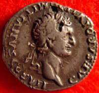
monedă cu portretul împăratului roman Domițian.
(CREDIT -WIKIMEDIA.ORG),
Monedele aveau două avantaje majore față de măsurile de metal nemarcate care au fost utilizate înainte, cum
era siclul de argint. În primul rând, la fiecare cumpărare sau vânzare trebuia cântărit exact pentru
a fi siguri cat de mult argint este în acele măsuri. În al doilea rând, chiar dacă aceste măsuri se cântăreau
exact nu putea fi nimeni sigur că este argint pur. Oricine putea încerca să trișeze
folosind un alt fel de metal, spre exemplu plumb, și să-l acopere cu argint. Monedele au
rezolvat această problemă. Marca imprimată pe monede confirmă valoarea ei exactă așa că nu mai trebuiau
cântărite. Marca este de asemenea, semnătura unei autorități politice sau religioase, care oferea garanția
lor pentru valoarea monedei astfel încât se putea avea încredere în ea. Forma și dimensiunile mărcii
de pe monede a variat foarte mult de- a lungul istoriei, dar mesajul a fost mereu același. E de altfel
același mesaj pe care-l
avem și astăzi:
Pagina 158
Eu, marele rege așa și așa vă dau cuvântul meu personal că acest disc de metal sau această bucată de hârtie este în valoare de ceea ce spun eu că este. Dacă cineva îndrăznește să falsifice moneda sau bancnota înseamnă că îmi falsifică propria marcă. Astfel ei mă impersonează și îmi dăunează reputației, dar mie nu- mi place așa că îi voi pedepsi cu maximă severitate ".
Tocmai de aceea contrafacerea banilor a fost întotdeauna considerată o infracțiune mult mai gravă decât
aproape orice alt act de fraudă sau înșelăciune. Când se falsifică banii, nu se inșeală doar pe ceilalți
dar se și
uzurpă identitatea regelui sau a guvernului. Se acționează ca și cum falsificatorul ar fi el însuși regele
și acesta este un act grav de subminare îndreptat împotriva puterii, privilegiilor și chiar persoanei
regelui. Prin urmare, de- a lungul istoriei contrafacerea de monede, bancnote și bani în general, a fost
pedepsită uzual prin tortură și execuție. Autoritatea politică îi ajută pe oameni să câștige încredere
în bani.
Atâta timp cât oamenii au încredere în puterea și integritatea regelui sau a autorității politice ei
au de asemenea încredere în banii lor. Două persoane complet străine pot fi de acord cu privire la valoarea
unei anumite monede. Un Denarius al Imperiului Roman spre exemplu, prezenta încredere atâta timp cât
oamenii aveau încredere în puterea și integritatea împăratului roman al cărui nume, și uneori chiar imagine,
era tipărită pe monedă. În mod similar în zilele noastre, oamenii din întreaga lume au încredere în dolarul
american mai mult decât să zicem în Peso-ul mexican, pentru că au încredere în guvernul Statelor Unite
și au încredere în banca Federală americană mult mai mult decât au încredere în guvernul sau banca din
Mexic.
primii bani în Japonia (CREDIT -WIKIMEDIA) Osama Bin Laden a avut suficientă încredere în
guvernul american precum și în banca federală
încât să accepte și să folosească banii acestora. La rândul lor, puterea conducătorilor se bazează
de asemenea pe încrederea în bani. Ar fi foarte greu de menținut un imperiu întins cum
era Imperiul Roman, fără bani, fără o monedă. Dacă Imperiul Roman ar fi trebuit să plătească salarii
și să colecteze taxe în orz și grâu ar fi fost imposibil de colectat impozitul în Siria, transportat
la trezoreria centrală din Roma si de acolo transportat din nou pentru a plăti legionari poziționați
în Marea Britanie sau Germania. Ar fi fost la fel de dificil să mențină Imperiul Roman dacă în diferite
părți ale imperiului, oamenii ar fi folosit tipuri diferite de bani. Ar fi fost imposibil ca locuitorii
Romei să creadă în monede de aur și să facă afaceri în aur, iar Dacii, grecii, evreii și sirienii să
le respingă și să aibă încredere în alte forme de bani cum erau scoicile cowrie.
Banii și unificarea globală
Pagina 159
Guvernele nu numai că dau încredere în bani, dar au deasemenea nevoie de bani pentru a avea stabilitate
și ca să poate controla o zonă întinsă.
Prin urmare,
banii au servit un rol deosebit de
important în unificarea omenirii . Nu doar au sprijinit unele guverne locale, ici și colo, dar mai important, deoarece încrederea în bani a trecut granițele geografice, topografice și chiar politice, a permis astfel oamenilor din culturi, religii și chiar împărății diferite să facă comerț unul cu un altul și să coopereze cel puțin în sfera economică. Acest lucru se întâmplă astăzi în lume cu dolarul, dar s-a întâmplat acum 2000 de ani cu alte tipuri de bani, cum ar fi monedele de aur argint ale Imperiului Roman. În primul
secol d.Hr., monedele romane au fost un mediu acceptat de schimb nu numai în Imperiul Roman, dar de asemenea, foarte departe de granițele sale, în munții din India de exemplu. Indienii au avut încredere în denarul roman astfel că, atunci când conducătorii locali indieni au început să producă monede proprii, le-au imitat forma și chiar portretul împăratului roman. Aceasta pentru că populația avea încredere în aceste tipuri de monede cu această imagine specială de împărat pe ea, astfel că indienii au adoptat-o. Însuși numele de denar a devenit un nume generic pentru toate tipurile de monede. După ce Imperiul Roman s-a prăbușit și imperiul musulman s-a ridicat, califii musulmani "au arabizat" numele Denarius și au început să emită dinari.
dinari timpurii
Cuvântul dinar este pur și simplu o traducere arabă, o formă arabă de a spune Denarius. Dinarul este încă
numele oficial al monedei din zilele noastre în multe țări de lângă Marea Mediterană, cum ar fi Iordania,
Irak, Serbia,
Tunisia și multe altele. Modelul monedei Lydiei s-a răspândit de la Marea Mediterană
înspre Oceanul Indian. China a dezvoltat de asemenea propriul sistem de bani, puțin diferit de sistemul
Lydiei din Mediterana. Acesta a fost bazat inițial pe monede de bronz, și nu pe argint sau aur. Dar,
odată cu trecerea timpului, musulmani, comercianți și cuceritori europeni au răspândit monedele de aur
și de argint nu numai în Europa și Asia dar în multe părți ale Africii. Ulterior America și Australia,
în
Pagina 160
Oceanul Pacific, în așa fel încât aurul și argintul au devenit bani standard, peste tot în lume. În epoca
modernă târzie, întreaga lume a fost astfel unită într-o zonă monetară unitară bazată în primul rând
pe credința și încrederea în aur și argint. Mai târziu, în câteva alte valute de încredere, în primul
rând lira sterlină britanică, iar apoi dolarul american, care este încă dominant astăzi.
Acest proces lent de creare a unei zone unice monetare transnațională și transculturală a pus bazele
pentru unificarea afro-Asiaei mai întâi, iar mai târziu a întregii lumi într-o
singură sferă economică și politică. Oamenii au continuat să vorbească multe limbi, să se supună
la conducători și să se închine la zei foarte diferiți. Dar tot mai mulți oameni din întreaga lume au
crezut și s-au folosit de aceiași bani; aur și argint mai întâi și mai târziu de lira sterlină și dolarul
american. Fără această credință comună, rețele globale de tranzacții ar fi fost practic de nerealizat.
Cum ar fi putut europenii, de exemplu, să facă afaceri cu China, dacă chinezii nu ar fi crezut în aur
și argint și ar fi refuzat să accepte plata în aur și argint. Am putea întreba cum s-a realizat acest
lucru dacă nu a fost o singură religie sau imperiu care să conducă întreaga lume. Cum se face că indieni,
chinezi, musulmani și spanioli care veneau din culturi foarte diferite și
nu reușeau să cadă de acord cu privire la nimic altceva, au reușit totuși să se înțeleagă în ceea
ce privește credința comună în aur și argint?
De ce spaniolii nu au crezut în continuare în aur, iar musulmanii să rămână devotați orzului? Și indienii
să continue să folosească scoici cowrie, iar chinezii ar să folosească să zicem, role de mătase ca bani.
Economiștii au un răspuns foarte convingător la această întrebare. Conform teoriilor economice acceptate
de majoritatea specialiștilor, odată ce comerțul începe să conecteze zone separate forța cererii și ofertei
are
tendința de a egaliza prețurile
tuturor produselor care se pot transporta dintr-o zonă în alta. Acest fapt se aplică și la bani. Pentru
a înțelege de ce să luăm în considerare un
scenariu ipotetic. Să presupunem că, atunci când schimburile comerciale deschise între India și
Marea Mediterană au devenit mai frecvente, indienii nu au fost încă foarte interesați de aur. Prin urmare,
aurul nu ar fi avut valoare în India. În același timp, în Marea Mediterană, aurul era deja un simbol
al statutului și deci foarte râvnit, iar datorită monedei valoarea aurului în Marea Mediterană era foarte
mare. Ce s-ar întâmpla este că comerciantii care călătoresc între porturile din India și Marea Mediterană
ar observa în mod evident diferența uriașă între valoarea aurului din aceste două locuri. Pentru a face
profit, comercianții speculanți puteau să cumpere aur ieftin în India și să-l vândă pentru un profit
imens în Marea Mediterană.
Prin urmare în timp, cererea pentru aur în India ar crește din cauza comercianților din Marea Mediterană
care doresc să cumpere aur. Indienii ar începe să aprecieze aurul doar pentru a-l vinde comercianților
mediteraneeni. În același timp, în Marea Mediterană,
ar exista tot mai mult aur provenind din India și valoarea aurului în Marea Mediterană ar
Pagina 161
începe să scadă. Această creștere și descreștere a valorii va continua până când valoare se va egaliza aproximativ și procesul se va opri. În India și în Marea Mediterană aurul ar fi valorat cam la fel de mult. Acest proces se petrece cu tot felul de bani. Simplul fapt că o altă persoană crede în să zicem cochilii cowrie sau dolari, sau în date electronice este suficient pentru a consolida credința în ele. Acesta este modul în care creștinii și musulmanii care nu sunt în acord religios, pot totuși să fie de acord monetar. Aceasta deoarece religie ne cere să credem în ceva ca un zeu sau scripturi, banii ne cer doar să credem că alte persoane cred în ceva. Această idee este de o importanță extraordinară, și e dificil de înțeles. Merită repetată:
Religia vrea ca noi să credem în ceva gen Dumnezeu, banii nu ne cer să credem în nimic special. Banii pur și simplu ne cer să credem că alte persoane cred în ceva.
Sunteți liber să nu apreciați valoarea dolarului, să nu credeți în el, dar dacă credeți că alte persoane
cred în dolar veți acumula la rândul vostru dolari, nu pentru că îi doriți neapărat ci pentru că știți
că alte persoane și-i doresc. Dacă întrebăm acum de ce alte persoane cred în dolar,
răspunsul este că pentru că alții și-i doresc. De aceea îi adunăm, pentru a-i schimba în ceea ce dorim.
În felul acesta funcționează banii. De mii de ani filosofi, gânditori, profeți și poeți au degradat banul
și l-au numit rădăcina tuturor relelor și motivul pentru toate necazurile din lume. În realitate însă,
banul este punctul culminant, apogeul de concesie umană.
Nu există nimic mai tolerant pe această lume decât banul. Banii sunt mai deschiși la minte decât
orice religie, stat, cod cultural sau obicei social. Banii sunt singurul sistem de încredere creat de
oamenii în istorie, care poate ignora aproape toate deosebirile culturale și nu face discriminări pe
bază de religie, sex, rasă, vârstă sau orice altceva. Un dolar în mâinile unei persoane de culoare sau
albe este același dolar și va fi acceptat la fel, după cum și un dolar în mâinile unei femei sau al unui
bărbat valorează la fel. Banul nu face discriminări între diferitele genuri sau rase.
Concluzii
Podul lui Adam, INDIA
În concluzie, banii se bazează pe două principii universale. În primul rând, convertibilitatea universală, cu bani putem transforma aproape orice în aproape orice altceva, pământ în loialitate, dreptate în sănătate, violența în cunoaștere. Al doilea principiu fundamental al banilor este încrederea universală. Cu banii ca intermediar, doi oameni pot coopera cu privire la orice proiect. Chiar dacă ei nu se cunosc reciproc sau poate chiar se urăsc reciproc, dacă sunt bani implicați atunci ei pot coopera. Astfel, banii au servit de-a lungul a sute și mii de ani ca o punte de legătură
Pagina 162
între diferite regate, religii și culturi și au contribuit la unificarea omenirii și la crearea lumii globale
în care trăim astăzi. Ar fi însă o greșeală să credem că numai banii au unificat omenirea. Banii sunt
doar o realitate imaginară și se bazează pe încredere. Pentru a avea un sistem monetar eficient avem
nevoie de sprijinul unui sistem politic eficient și a unor principiilor etice comune. Fără dolari, Statele
Unite ar fi dificil de guvernat. Fără Statele Unite ale Americii ar fi la fel de dificil de a clădi încrederea
în dolar. Nu putem înțelege cu adevărat cum funcționează banul fără a lua în considerare politica și
religia. Pentru a înțelege cum mii de culturi izolate s-au combinat în timp pentru a forma
satul global de astăzi trebuie să fim conștienți de rolul important jucat de aur și argint, dar nu
putem ignora rolul la fel de important în unificarea omenirii jucat de imperii
și religii.
Lecția IX - Viziuni imperialiste
La momentul revoluției agricole lumea era împărțită în mii de societățile umane mici, separate, și relativ
simple. Pe măsura trecerii timpului, aceste societăți s-au combinat pentru a forma societăți mari și
complexe, până când întreaga lume a devenit un singur sistem global unificat. Unificarea omenirii a fost
rezultatul a trei forțe principale: banul, imperiile și religia. Am examinat rolul banilor și al comerțului
în
l ecț ia VII I
. Lecția aceasta, a IX-a, se concentrează pe rolul jucat de cuceritori și imperii.
Această secțiune continuă tema "Unificarea umanității" și Dr. Yuval Noah Harari vorbește în ea despre imperialism. Ideea de imperiu are în zilele noastre o reputație proastă, dar imperiile au jucat un rol central în istoria omenirii, și e greșit să considerăm ca influența lor a fost pur negativă. Vom examina ce este exact un imperiu, precum și modul în care ele au reușit să unească regiuni ecologice, grupuri etnice și comunități religioase diferite. Vom discuta cum contribuția pozitivă a imperiilor poate fi comparată cu actele lor de violență și opresiune, precum și ce ne poate aduce viitorul imperialismului, dacă lumea este destinată să fie condusă de un nou imperiu global.
Definiția unui imperiu
“La Liberté guidant le peuple” de Eugène Delacroix
Un imperiu este o structură politică care are două caracteristici foarte importante. În primul rând, pentru
ca să fie considerat un imperiu, un conducător trebuie să aibă sub control
un număr semnificativ
de
popoare distincte, fiecare având o identitate culturală și teritoriu diferit. Nu există un număr
exact, două sau trei popoare diferite nu sunt un imperiu, 30 sau 40 sunt. Undeva între trei și 20 se
trece pragul spre imperiu.
A doua caracteristică este că imperiul are granițe flexibile și un teritoriu potențial nelimitat. Imperiile
sunt sisteme de guvernare care pot înghiți și digera multe națiuni și teritorii
fără a-și altera structura sau identitatea lor de bază
. Spre exemplu Canada este o țară foarte mare, cu toate acestea nu e un imperiu. Nu poate să anexeze
mai multe teritorii fără a-și schimba structura sa fundamentală. În cazul în care Canada ar începe
cucerirea și anexarea să zicem a Cubei, Venezuelei, și a
Mexic-ului, ea nu ar mai fi țara inițială. Ar deveni ceva complet diferit. Un imperiu pe de altă
parte, este un sistem politic care poate cuceri aproape orice loc de pe pământ, fără a-și schimba natura
și
caracteristicile. Imperiile sunt diversități cultural, pot stăpîni peste multe popoare, fiecare
Pagina 164
cu propria cultură, și sunt flexibile teritorial. Ele pot deveni mai mari și mai mari, fără a-și
altera identitatea lor de bază.
colosul RHODES
Aceste două caracteristici dau imperiilor nu numai unicitatea ci și un rol central în istorie și în procesul de unificare umană. Mulțumită acestor două caracteristici, imperiile au reușit să unească diverse grupuri etnice și zone ecologice într-o structură politică unică, combinând grupuri umane tot mai mari, și să contribuie la unificarea omenirii. Trebuie subliniat faptul că un imperiu este definit doar de aceste două caracteristici: diversitatea culturală și granițele flexibile, și nu prin metoda sa de guvernare. Un imperiu nu are nevoie de un împărat, nu e neapărat să fie condus de un singur dictator sau rege. Imperiul Britanic , de exemplu, a fost cel mai mare imperiu care a existat vreodată în istorie și a fost condus de o democrație. Există
alte imperii republicane democratice și în epoca modernă, există imperiul olandez, francez, belgian și american, toate conduse de democrații. În epoca premodernă au fost imperii, cum era Roma, Cartagina și Atena conduse de elite democrate sau republicane.
Imperiile nu sunt determinate de mărimea lor. Imperiul atenian, de exemplu, a fost la apogeu mult mai mic ca teritoriu și populație decât Grecia de astăzi. Imperiul Aztec a fost mult mai mic decât Mexicul modern. Amândouă imperiile, cel atenian și cel aztec, sunt totuși considerate a fi imperii. Grecia și Mexicul modern însă nu.
Atenienii și aztecii au condus zeci, chiar sute de popoare diferite, și s-ar fi putut extinde la nesfârșit.
Nu exista o limită pentru expansiunea lor potențială. Grecia și Mexicul modern conduc un număr mult mai
mic de popoare diferite, și nu se pot extinde fără a-și schimba construcția lor de bază.
În zilele noastre e greu de înțeles cum a fost posibil, în vremea Atenei antice, să înghesui sute de
popoare diferite într-un teritoriu care
astăzi conține doar Grecia, un stat mic, modern. Un întreg imperiu a existat într-un
teritoriu care astăzi este considerat o țară relativ mică, pare de neînțeles. Acest lucru a fost posibil
pentru că în trecut existau mult mai multe popoare diferite în lume decât există în prezent. Cu mii de
ani în urmă, fiecare popor avea o populație mult mai mică și ocupa o bucată de pământ mult mai mică decât
astăzi. Imperiile sunt unul dintre motivele principale pentru această reducere drastică a diversității
umane. De-a lungul secolelor,
Pagina 165
imperiile au acționat ca un compresor care a distrus treptat caracteristicile unice ale popoarelor mici și le-a forjat împreună în grupuri mult mai mari.
Perspectiva modernă
Dr. Harari ia în considerare prejudecățile culturale moderne. În zilele noastre, imperiile au o reputație
foarte proastă.
Imperialismul e unul dintre cele mai grave blesteme din lexiconul nostru politic. Pentru a insulta
pe cineva, un rival politic sau un stat inamic, termenul
"imperialist" este auzit de prea multe ori. Imperialismul și imperiile sunt considerate
ca fiind lucruri foarte rele. Critica imperiilor are de obicei două argumente. Mai întâi de toate, oamenii
critică imperiile deoarece aceștia susțin că imperiile sunt ineficiente și nu funcționează. Pare logic
că un imperiu nu poate să conducă eficient pe termen lung un număr mare de popoare cucerite, și deci
imperiile sunt sortite eșecului și prăbușirii. A doua obiecție principală este că ele sunt
rele,
malefice. Ele corup atât pe cei cuceriți, care nu mai au independență și autonomie, precum și conduc la corupția cuceritorilor. În secolul trecut s-a răspândit credința generală că fiecare popor are dreptul la autodeterminare, și deci ar trebui să existe atâtea state independente în lume câte popoare. Nici un popor uman nu ar trebui să fie condus de altcineva.
Din punct de vedere istoric, prima declarație, că imperiile nu funcționează, nu este logică. A doua declarație, că imperiile sunt rele, este o afirmație problematică. Să le luăm pe rând.
Imperiile nu funcționează
membrii actuali ai OIS (CREDIT - CONWORLD.WIKIA.COM)
Imperiul a fost forma cea mai frecventă de organizare politică din ultimii 2500 ani. În ultimele două milenii
și jumătate, cele mai multe persoane de pe Pământ au trăit în imperii, nu în state

independente. Imperiile au funcționat mult mai bine decât statele independente. Ele sunt o formă foarte
stabilă de guvernare în comparație cu alte forme de guvernare.
Babur pornește cu armata sa, Auguste RACINET (CREDIT - HISTORYFILES.CO.UK)
Pagina 166
Cele mai multe imperii au găsit alarmant de ușor să înnăbușe revoltele populațiilor cucerite, și să mențină
controlul zecilor de popoare diferite. În cele din urmă toate imperiile s-au prăbușit, dar nu din cauza
revoltelor interne ale popoarelor cucerite. Acest lucru s-a întâmplat uneori, dar rar. Cele mai multe
imperii s-au prăbușit fie din cauza invaziei dușmanilor externi, sau din cauza unei rupturi în elita
conducătoare. Cele mai multe populații cucerite din istorie nu s-au eliberat de imperiile care le-au
cucerit. Chiar dacă au încercat să se revolte, imperiul a reușit să înnăbușe rebeliunea și a continuat
să le controleze. Cele mai multe popoare cucerite în istorie au rămas parte a imperiului care le-a înghițit.
Ele și-au pierdut treptat identitatea, și cultura lor unică a dispărut pur și simplu. Chiar dacă în cele
din urmă imperiul s-a prăbușit, popoarele cucerite nu au mai apărut din imperiul mort. Ele pur și simplu
au încetat să mai existe.
HARTA Animată a Republicii și Imperiului Roman
De exemplu, Imperiul Roman de Apus s-a prăbușit sub invazia triburilor germanice în secolul al cincilea d.Hr. Sutele de triburi și națiuni pe care romanii le-au cucerit de secole nu s-au eliberat din acest imperiu mort pentru a continua existența lor, așa cum o făceau înainte de a fi cuceriți. Ele au încetat să mai existe, au devenit romani si identitatea lor unică a dispărut.
În multe cazuri, distrugerea unui imperiu a condus la
formarea altuia. Nicăieri nu putem vedea mai clar acest proces decât în istoria Orientului Mijlociu,
locul unde primele imperii au apărut în urmă cu mai mult de 3-4000 ani. Situația politică actuală în
Orientul Mijlociu este soi de echilibru de putere între mai multe entități politice independente, cu
frontiere mai mult sau mai puțin stabile, mai multe state diferite. Situația este aproape fără paralel
cu orice moment din istoria ultimelor mii de ani din Orientul Mijlociu. Ultima oară când Orientul Mijlociu
a fost într-o astfel de situație a fost în secolul 8 î.Hr., în urmă cu aproape 3.000 de ani.
De la apariția Imperiului asirian în secolul 8 î.Hr., care a cucerit diferitele state din Orientul Mijlociu, până la prăbușirea imperiilor britanice și franceze, până la mijlocul secolului 20, popoarele din Orientul Mijlociu au trecut continuu dintr-un imperiu în altul, precum o ștafetă într-o cursă olimpică. Ele au fost cucerite de asirieni, dar atunci când imperiul asirian s-a dezmembrat, ele nu au devenit independente. Au făcut parte din imperiul babilonian , apoi cel persan, apoi cucerite de Alexandru cel Mare , apoi de romani, bizantini, arabi și așa
mai departe. Nu a fost aproape
Pagina 167
niciodată o perioadă în care să nu existe un imperiu în Orientul Mijlociu, și în care populația locală să trăiască independent. Este o greșeală să credem că imperiile nu funcționează, în realitate, cei mai mulți oameni din ultimii 2000 de ani au trăit în interiorul imperiilor, și chiar dacă aceste imperii în cele din urmă s-au prăbușit, ele au fost de cele mai multe ori înlocuite mai degrabă decât cu alte structuri politice, de alte imperii.
Imperiile sunt rele
Scoala lui Raphael din Atena
Construirea și menținerea unui imperiu necesită de regulă sacrificarea a sute de mii de oameni și oprimarea
brutală a mai multor milioane de oameni. Instrumentalul standard imperial include război, sclavie, deportare
și genocid. Însă aceasta nu înseamnă că imperiile sunt pur și simplu malefice, și nu aduc cu sine nimic
bun, nu lasă nimic de valoare în urma lor. Dacă
colorăm toate imperiile din istorie în negru, atunci toată moștenirea culturală imperială ar trebui de
asemenea colorată în negru. Ar trebui să respingem fragmente semnificative din cultura umană, în care
cea mai mare parte în ultimele două milenii a fost produsă de imperii. Elitele imperiale au folosit profiturile
obținute din cucerire nu doar pentru a finanța armate și fortificații, dar de asemenea pentru
a finanța filozofie umană, justiție, drept, caritate și lucruri de acest gen. Multe capodopere artistice
datorează existența lor imperiilor și exploatării populației cucerite.
Profitul și prosperitatea imperiilor ateniene și romane au creat condițiile pentru filosofii din vechime,
Socrate, Platon, Cicero, Seneca și așa mai departe. Aceștia au putut astfel să se gândească la lume și
să scrie capodoperele lor.
Taj Mahal (CREDIT - Wikimedia)
Din arhitectură, dr. Harari ia ca exemplu palatul Taj Mahal . Taj Mahal nu ar fi putut fi construit niciodată fără captura împăraților Moguli strânsă de la milioane de supuși indieni. Muzica lui Hayden sau Mozart a fost finanțată de profiturile Imperiului Habsburgic din exploatarea slavilor, a supușilor săi români și maghiari.
Lăsând la o parte domeniul culturii globale, care
include muzica clasică, arhitectura sau filosofia, ne putem concentra asupra culturii omului de rând.
Și aici, moștenirea imperialistă și-a pus marcant amprenta. Acest lucru este evident în domeniul limbii.
Cei mai mulți oameni din zilele noastre vorbesc, gândesc și visează în limbile imperiale pe care strămoșii
lor cuceriți au fost forțati să le vorbească. Cei mai mulți oameni din China vorbesc limba Imperiului
Han, chineza Han. Aproape toți locuitorii celor două continente ale Americii, din nordul Alaskăi până
la strâmtoarea Magellan în sud comunică într-una din cele doar patru limbi imperiale. Ei folosesc
Pagina 168
engleză, franceză, spaniolă sau portugheză. În ziua de astăzi, egiptenii din Orientul Mijlociu vorbesc araba
și cred că despre ei înșiși că sunt arabi. Imperiul Arab a cucerit brutal Egiptul în secolul al șaptelea,
și a zdrobit revoltele care au izbucnit în repetate rânduri. Egiptenii de astăzi sunt descendenții persoanelor
cucerite de arabi. Aceștia nu vorbeau araba și nu se vedeau în nici un caz pe sine ca fiind arabi.
Luptători ZULU (CREDIT - WIKIMEDIA)
În sudul Africii trăiesc aproximativ zece milioane de oameni care-și spun Zulu, și care folosesc limba Zulu. Ei povestesc de vremurile de glorie ale
națiunii Zulu de la începutul secolului al 19-lea. Cei mai mulți dintre aceștia descind din
triburi care au luptat împotriva imperiului Zulu la începutul secolului al 19-lea și au fost cucerite
și încorporate în imperiul Zulu prin campanii militare sângeroase. Cu toate acestea, urmașii lor cred
în zilele de astăzi că sunt Zulu.
Multe cursuri Coursera sunt în limba engleză chiar atunci când aceasta nu este limba maternă a profesorilor.
Engleza poate să nu fie deasemenea nici limba maternă a studenților. Mulți oameni în Statele Unite, Canada
sau Australia descind probabil din strămoși care nu vorbeau limba engleză și au fost obligați de stăpânii
lor britanici s-o vorbească. Motivul pentru care cele mai multe cursuri Coursera se desfășoară în limba
engleză este că limba engleză a fost limba celui mai mare imperiu din istorie, Imperiul Britanic.
Imperiile funcționează , de multe ori. Ele lasă în urma lor nu numai moștenirea negativă a morții și distrugerii, dar deasemenea influențe pozitive în artă, cultură, limbi, viziunea asupra lumii și așa mai departe.
Istoria imperiilor
În continuare dr. Harari va descrie momentul și modul în care a apărut primul imperiu, cum conceptul de imperiu
s-a răspândit în întreaga lume, precum și calea prin care imperiile au devenit jucători redutabili în
teatrul istoriei.
Primul imperiu
harta Imperiului Akkadian (CREDIT -WIKIMEDIA)
Din câte știm, primul imperiu despre care avem informații sigure a fost cel akkadian , al lui Sargon cel Mare sau Sargon Cuceritorul, înființat în jurul
2250 î.Hr. Sargon și-a început cariera ca un rege al unui oras-stat mic numit Chis, în sudul Mesopotamiei, astăzi sudul Irakului. În timpul vieții sale, Sargon a fost un comandant militar înzestrat
Pagina 169
și un lider politic capabil. În câteva decenii el a reușit să cucerească nu doar toate celelalte orașe mesopotamiane,
care erau cu zecile, dar de asemenea, a reușit să cucerească teritorii mari în afara Mesopotamiei. Sargon
însuși s-a lăudat că el a cucerit întreaga lume, avem texte care confirmă aceasta. El nu a cuceri cu
adevărat întreaga lume; nu a cucerit Japonia sau Australia de exemplu. Dar imperiul lui era foarte mare
pentru acea vreme. Se întindea de la Golful Persic, acolo unde sunt Kuweit și sudul Irakului în zilele
noastre, până la Marea Mediterană. Imperiul includea cea mai mare parte din Irak-ul și Siria modernă,
precum și teritorii din Iranul modern și Turcia.
Cap de bronz al unui akkadian
Imperiul akkadian nu a avut o viață prea lungă. La scurt timp după ce Sargon a murit, imperiul s-a prăbușit.
El și imperiul akkadian au lăsat însă în urmă o idee nouă și un vis, visul imperial,
visul de a cuceri întreaga lume, de a uni întreaga lume sub conducerea unui singur rege sau a unui
singur guvern. Acest vis a aprins imaginația numeroșilor conducători, regi, cuceritori și guverne mult
timp după Sargon. Pentru următorii 1700 ani, până la mijlocul primului mileniu î.Hr., mulți împărați
asirieni, babilonieni și hitiți l-au adoptat pe Sargon ca model. Si ei și-au dorit să cucerească întreaga
lume și de multe ori
s-au lăudat cu aceasta în scrierile lor, chiar dacă nu era adevărat. A generat un laitmotiv în gândirea
politică a estului mesopotamianiei și a Orientului Mijlociu pentru aproape
2000 de ani după Sargon.
E pentru binele vostru!
CIRUS cel MARE În anul 500 î.en, Cirus cel mare , regele Persiei, a avut un
vis și mai ambițios decât cucerirea întregii lumi. Regii Asiriei au rămas mereu regi asirieni chiar și atunci
când au pretins că au cucerit întreaga lume. Era evident pentru ei și pentru oricine altcineva că extinderea
lor era în beneficiul Siriei. Cirus cel Mare al Persiei a venit cu o idee cu adevărat revoluționară.
El a pretins nu numai că va cuceri și conduce întreaga lume, dar că
el o face pentru binele întregii omeniri, nu doar pentru persani. Ideea lui a fost de fapt să cucerească
popoarele pentru propriul lor câștig. Cirus nu se vedea ca un rege persan care stăpânea asupra altor
popoare, babilonieni, aramaici sau egipteni. El se vedea nu doar ca rege al perșilor, ci ca un
stăpân al tuturor oamenilor, responsabil pentru bunăstarea și prosperitatea întregii
omeniri.
Această vanitate, de a conduce întreaga lume pentru câștigul tuturor oamenilor, a fost din punct de vedere
evoluționist o prezumție uimitoare și nefirească. Evolutia l-a făcut pe Homo sapiens
o creatură xenofobă, la fel ca pe toate celelalte animale sociale. Homo sapiens împarte instinctiv
omenirea în două părți,
"noi" și
"ei". "Noi" sunt cei care împărtășesc aceeași limbă, religie și obiceiuri.
"Ei" sunt toate celelalte persoane, deseori
Pagina 170
nici măcar considerate persoane.
Să nu subestimăm profunzimea xenofobiei naturale sapiens
; ura față de străini. Să luăm de exemplu cazul
triburilor Dinka care locuiesc în zona Sudanului. Cuvântul Dinka în limba poporului Dinka înseamnă
pur și simplu
oameni. Potrivit limbii și culturii lor, oamenii care nu sunt Dinka nu sunt oameni, sunt altceva.
noi și ei (CREDIT -. BIPOLARBLAST.FILES)
Cei mai mari dușmani ai poporului Dinka se numesc
Nuer, o altă grupă de oameni în Sudan. Cuvântul Nuer, în limba Nuer înseamnă
oameni autentici. Din perspectiva Nuerilor, oamenii care nu sunt Nuer nu sunt oameni autentici. La
mii de kilometri distanță de deșerturile din Sudan, în țara de gheață din Alaska și nord-estul Siberiei
trăiește
un grup numit
oamenii Yupik. Yupik în limba yupik înseamnă
oameni reali. Din nou,
oamenii care nu sunt
"noi", nu sunt yupik, nu sunt oameni reali.
Acesta este modul în care cei mai mulți oameni din istorie i-au tratat pe ceilalți
înainte de ascensiunea marilor imperii. Conceptul de bază a fost că existăm doar
"noi", oamenii reali și
"ei", ceilalți, care sunt toți dușmani, vecini, barbari, care nu sunt cu adevărat oameni,
sunt altceva. În contrast cu această separare etnică, Cirus cel Mare al Persiei a avut o ideologie imperială
nouă,
incluzivă și atotcuprinzătoare. Cirus a văzut întreaga omenire ca pe un singur grup, căruia toată
lumea îi aparținea. Ca rege al lumii, el avea obligația de a avea grijă de întreaga omenire. Chiar dacă
ideologia imperială nu a fost întotdeauna egalitariană, a fost de multe ori ierarhică. Sublinia diferențele
rasiale și culturale între elita conducătoare și toate popoarele cucerite..
Moștenirea lui Cirus cel Mare
(CREDIT - FAMILIESINSCHOOLS.ORG)
Ideologia imperială după Cirus cel Mare recunoștea unitatea întregii lumi și idealul ei era, sau ar fi vrut
să fie, un set unic de principii care să guverneze pe oamenii de pretutindeni. O altă idee centrală a
imperialismului după Cirus a fost că toate ființele umane aveau responsabilități reciproce unii față
de alții. Astfel, omenirea era ca un soi de familie mare. Existau părinți și copii,
părinții erau elita conducătoare cu tot felul de privilegii. Aceste privilegii mergeau însă mână în mână
cu responsabilitatea pentru bunăstarea copiilor, popoarele cucerite. Această viziune imperială nouă a
început în Orientul Mijlociu, cu Cirus și persanii săi. De
Pagina 171
atunci ea a fost adoptată de către Alexandru cel Mare și împărații elenistici care au venit după persani.
Aceeași ideologie a fost adoptată de împărați romani, de califi musulmani, de conducători din India și
în cele din urmă a ajuns la noi, în epoca modernă târzie. Avem acum imperiul sovietic și imperiul american
care se comportă sau cel puțin pretind să se comporte în conformitate cu același ideal.
Cum au reușit imperiile?
Viziunea imperiului benevolent care are se preocupă de bunăstarea tuturor oamenilor a justificat existența conceptului de imperiu pentru următorii 2.000 de ani. Acesta a negat nu numai orice protest al popoarelor cucerite care se revoltau împotriva imperiului, dar de asemenea, orice obiecție a popoarelor independente de a rezista expansiunii imperiale. Dacă imperiul este ca un părinte care are grijă de toți oamenii din lume,
oricine se opune imperiului
neagă binele omenirii. Aceasta a fost ideea centrală a
ideologiei imperiale. În alte părți ale lumii s-au dezvoltat viziuni imperiale similare, independent
față de modelul persan. Cirus cel Mare și succesorii săi nu au fost singurii care au avut ideea strălucită
de a cuceri întreaga lume pentru beneficiul tuturor oamenilor. Aceasta a apărut în împrejurări diferite
în China, America Centrală, în regiunea andină a Americii de Sud, precum și în alte câteva locuri din
lume. Imperiile cu aspirațiile lor universale au jucat un rol decisiv în unirea multor culturi mici ale
omenirii în tot mai puține culturi mari, și în cele din urmă într-un singur sistem global.
(CREDIT - Wikimedia)
Sub conducerea unui imperiu, ideile, oamenii, produsele și tehnologia se pot răspândi mult mai ușor decât
atunci când au de trecut frontierele între state, orașe-state, triburi și așa mai departe. Acesta este
unul din modurile în care imperiile au ajutat omenirea; au facilitat circulația de idei, tehnologie,
persoane.
Foarte adesea imperiile nu doar au facilitat, dar au și răspândit în mod deliberat un buchet de idei,
instituții, obiceiuri și legi pe teritoriile tot mai mari stăpânite. Un motiv pentru care imperiile au
făcut acest lucru a fost pentru a-și face înlesni expansiunea. Un imperiu în care fiecare cartier are
propriile legi, limbă, bani este dificil de condus. E mult mai ușor atunci când există aceleași norme
și valori predefinite. Un al doilea motiv pentru răspândirea unei culturi comune a fost pentru a obține
legitimitate. Încă din vremea imperiului persan și a lui Cirus cel Mare, imperiile și-au justificat acțiunile
- fie că era vorba de războaie de expansiune sau de construcția de orașe și drumuri - ca fiind
Pagina 172
necesare pentru
răspândirea unei culturi superioare în întreaga lume. Această cultură superioară ar aduce beneficii
tuturor, inclusiv persoanelor cucerite. Elita imperială era în cea mai mare parte ferm convinsă că
prin răspândirea culturii imperiale ei cultivă bunăstarea tuturor locuitorilor imperiului. În paralel,
ea câștiga tot mai multă putere și privilegii, dar elita imperială era convinsă că imperiul lor era
cel mai bun din lume și că era menirea lor să-l extindă.
Imperiile moderne
Invocând o armată
În China, de exemplu, clasa conducătoare imperială credea că toți vecinii și poporul cucerit de China erau barbari mizerabili. Era de datoria imperiului chinez să aducă beneficiile celei mai buni culturii din lume, cea a Imperiului chinez Han, acestor barbari păcătoși. Mandatul de conducere a
lumii a fost dat de zei, de cer împăratului chinez, nu pentru a se bucura de el sau a exploata lumea, ci
pentru a educa omenirea. Aceasta a fost ideea centrală a imperiului chinez.
Aceleași idei guvernau Roma antică. Romanii au justificat stăpânirea lor asupra a ceea ce ei considerau
a fi întreaga lume, zona mediteraneană, susținând că aduceau beneficii, dreptate, pace și cultură barbarilor
din Galia, Spania, Marea Britanie, Germania și așa mai departe. Musulmanii califi susțineau de asemenea
că au cucerit lumea pentru că au primit porunca divină să răspândească revelațiile bine-intenționate
ale Islamului în întreaga lume. Ei au crezut cu adevărat în misiunea lor. La fel s-a întâmplat cu imperiul
spaniol și portughez în epoca modernă timpurie. Aceștia susțineau că au cucerit America nu pentru îmbogățire,
ci pentru ca să răspândească creștinismul.
Cartea miracolelor
În secolul al 19-lea, Imperiul Britanic, cel mai mare imperiu din istorie, susținea că misiunea sa nu era să îmbogățească Marea Britanie, ci să răspândească
binefacerile liberalismului și comerțului liber. Ei au
încercat într-adevăr să răspândească aceste două idei peste tot în lume. În secolul al 20-lea, Imperiul sovietic a afirmat deasemenea că misiunea sa în istorie este să răspândească egalitate și socialism în întreaga lume. Există încă mulți americani care susțin că guvernul SUA are imperativa morală și etică să impună beneficiile democrației și drepturile omului în țările din lumea a treia, la barbari, chiar dacă asta înseamnă utilizarea rachetelor de croazieră
Pagina 173
și a avioanelor F-16, pentru a înmâna aceste bunuri minunate.
Moștenirea imperiilor
Pretenția după care imperiile cuceresc pentru a răspândi binefaceri și nu pentru a se îmbogăți, implică și a implicat de-a lungul istoriei o mulțime de ipocrizie și comportament duplicitar. De multe ori, elita imperială era atât de convinsă de misiunea ei încât reușea să impună cultura și viziunea ei asupra lumii cucerite. Uneori, se mergea atât de departe încât separarea dintre elita conducătoare și cei cuceriți se rupea. Odată ce oamenii acceptau cultura, limba, religia și comportamentul model al elitei conducătoare nu mai exista nici o diferență între ei. Barierele se prăbușeau și populațiile fuzionau. Când se întâmpla acest lucru, divizia între cuceritor și cucerit, între elită și supuși dispărea pentru a da naștere unui singur popor și culturi. Dura însă mult timp, uneori chiar secole.
Imperiul Roman
Roma a condus vreme de sute de ani ținuturile din jurul Mării Mediterane. După legea romană, majoritatea
oamenilor cuceriți de imperiu au primit cetățenia romană, și au fost considerați romani. Ei au început
să vorbească limba
latină în Africa de Nord, Spania, în ceea ce este astăzi Franța, au început să vorbească limba latină în loc de limbile lor vechi, locale. Oameni din toate colturile imperiului puteau ocupa ranguri în armata romană și în birocrația civilă. În cele din urmă chiar împărații romani au venit din provincie, dintre oameni cuceriți, și nu din vechea elită romană. De exemplu, împăratul Septimius Severus , unul dintre cei mai importanți și puternici împărați romani, a venit din Libia, dintr-o familie Punic , ca descendenți ai acelorași cartaginezi care împreună cu Hannibal au luptat contra romanilor în secolul al doilea î.Hr. În secolul al treilea î.Hr., Împăratul Elagabalus a fost sirian. Împăratul Filip a fost poreclit Filip Arabul , deoarece provenea dintr-o familie arabă. Aceasta nu era nici o problemă în Imperiul Roman târziu, pentru că a fi arab însemna a fi roman. Noii cetățeni ai Imperiului au adoptat cultura romană cu atâta vervă încât vreme de secole sau chiar milenii după ce Imperiul Roman s-a prăbușit, ei au continuat să susțină și să dezvolte cultura

imperială.
Capitulare de la Bailen, de José CASADO DEL ALISAL. Muzeul Prado
Roma a avut nevoie de secole de luptă grea și crudă pentru a cuceri Spania și Peninsula Iberică, precum și pentru a înnăbuși revoltele populației locale față de dominația romană. Acum, la 1500 de suta de ani de la căderea Imperiului Roman,
Pagina 174
spaniolii vorbesc încă, cu mici modificări, limba Imperiului Roman. Spaniola este un dialect latin; descinde din limba Imperiului Roman. Spaniolii folosesc alfabetul latin, alfabetul cuceritorilor romani. Cei mai mulți spanioli astăzi sunt romano-catolici, religia Imperiului Roman târziu. Latina este încă limba sacră a religiei romano-catolice și centrul religiei romano-catolice este încă la Roma. 1500 ani de după ce dominația Romei în Spania s-a prabușit, majoritatea spaniolilor încă mai cred și susțin cultura puțin modificată a Imperiului Roman. Dreptul spaniol se bazează astăzi pe dreptul roman. Arta spaniolă, arhitectura, bucătăria, toate datorează foarte multe moștenirilor Imperiului Roman.
Imperiul Arab
Un proces similar a avut loc în Imperiul arab din Orientul Mijlociu. Când acesta a apărut la mijlocul
secolului al șaptelea d.Hr., a fost la început bazat pe o separare foarte pronunțată între elita conducătoare
a musulmanilor arabi și populația subjugată ce cuprindea egipteni, sirieni, iranieni și berberi, care
nu erau nici arabi, nici musulmani. De-a lungul secolelor,
mulți dintre supușii imperiului arab au adoptat treptat credința musulmană, limba arabă precum și cultura
imperială a imperiului arab. La început elita arabă veche a fost ostilă față de aceste evoluții și noii
convertiți, pentru că se temeau că-și pot pierde astfel statutul în imperiu și identitatea lor unică.
De-a lungul secolelor, populația convertită la islam și la cultura arabă a cerut să aibă drepturi egale
în cadrul imperiului și a lumii islamice. În cele din urmă le-a obținut. Egipteni, sirieni și mesopotamieni
s-au văzut din ce în ce mai mult, nu numai de către ei înșiși, ci și de către toți ceilalți, ca fiind
arabi, la fel ca și cuceritorii originali din Arabia. Arabii, la rândul lor, au ajuns să fie dominați
de musulmani non-arabi, în special ucraineni, turci și berberi care au adoptat religia și cultura musulmană,
dar nu și limba arabă. Proiectul imperial arab este unul dintre cel mai de succes proiect imperial văzut
vreodată. Cultura imperială creată în secolele 7, 8, și secolul nouă d.Hr., a fost adoptată într-o asemenea
măsură și de atât de multe persoane diferite încât acestea au continuat să susțină dezvoltarea și răspândirea
acesteia mult după ce imperiul s-a prăbușit. Astfel cultura, religia și limba imperiului a câștigat tot
mai multă putere și a continuat să se răspândească în întreaga lume.
Imperiul chinez
QINSHIHUANG
Proiectul imperial chinez a avut un succes uriaș vreme de mai mult de două mii de ani. Imperiul chinez a cucerit treptat numeroase grupuri etnice și culturale, văzute inițial de chinezi ca fiind barbari. Aceștia au fost integrați cu succes în cultura imperială chineză, și în cele din
Pagina 175
urmă au devenit și ei chinezi Han. Chinezii Han sunt numiți după dinastia Han , care a condus China din aproximativ 200 î.Hr. până aproximativ 200 d.Hr. Realizarea supremă a imperiului chinez este faptul că China există și astăzi, încă văzută ca un imperiu în regiunile periferice ale Tibetului și Xinjiang. Mai mult de 90% din populația Chinei se văd pe ei înșiși ca fiind chinezi Han. Ei au adoptat identitatea și cultura imperiului într-o asemenea măsură încât diferențele între conducători și conduși s-au dizolvat complet.
Construcția imperiului european
Similar putem înțelege procesul de
decolonizare petrecut în lume în ultimele decenii. În vremurile moderne, europenii au cucerit o mare
parte a planetei, susținând că o fac pentru a a răspândi cultura occidentală superioară. Europenii au
avut un succes atât de mare în răspândirea culturii lor, încât miliarde de oameni au adoptat părți culturale
majore. Indieni, africani, arabi, și chinezi
învăță franceză, engleză și spaniolă. Indieni, africani, arabi și mulți alții au început să
creadă în principiul autodeterminării. Au început să adopte ideologii occidentale, cum ar fi liberalism,
capitalism, comunism, feminism, naționalismul, acestea fiind toate ideologii care au apărut sau au fost
inventate în Europa modernă. Miliarde de oameni care au fost cândva cuceriți de europeni au adoptat în
ziua de astăzi aceste ideologii europene.
Lord Clive și MIR JAFAR după bătălia de la Plassey

În secolul 20, grupuri de oameni din Africa, Asia și alte locuri care au adoptat valorile vestice, au
început să ceară egalitate cu stăpânii lor europeni, în numele acelorași valori pe care europenii le-au
răspândit în întreaga lume. Multe lupte anti-coloniale din India sau Africa s- au desfășurat în numele
unor principii și moșteniri occidentale, cum ar fi auto- determinarea, drepturile omului, socialismul.
La fel cum s-a întâmplat cu imperiul arab care a fost adoptat de egipteni și sirieni cuceriți. În zilele
noastre avem indieni, africani, chinezi, arabi și așa mai departe, care au acceptat o mare parte a culturii
imperiale din partea cuceritorilor și au schimbați-o în conformitate cu propriile nevoi și tradiții.
Ei practic aderă încă la cultura și ideologia cuceritorilor lor.
Pagina 176
Acesta este și motivul pentru care este suspect să susținem că imperiile sunt pur rele, deoarece imperiile sunt responsabile nu numai pentru unificarea omenirii, ci și pentru o mare parte din cultura noastră actuală în întreaga lume. Într-adevăr, însăși valorile pe care mulți le folosesc ca să critice imperiile, valori precum drepturile omului, democrație și autodeterminare s-au răspândit datorită imperiilor europene. Pe de o parte imperiile au cauzat lucruri oribile și moarte, război, genocid și exploatare pe o scară de neimaginat. Pe de altă parte, cultura noastră astăzi, până și valorile pe care le folosim pentru a critica imperiile sunt tot un produs al acestor imperii.
Sunt imperiile întotdeauna rele?
E tentant să vedem istoria în alb sau negru, bine sau rău, și să punem toate imperiile împreună cu băieții
răi. Oricum, aproape toate imperiile au fost fondate prin violență și au menținut autoritatea prin asuprire,
exploatare și război. Cu toate acestea, cele mai multe dintre culturile de astăzi se bazează pe moșteniri
imperiale. Daca imperiile sunt prin definiție rele,
ce spune asta despre noi și culturile noastre? Chiar și chiar valorile pe care le folosim pentru
a critica imperiile sunt, cum am văzut, moștenirea imperiilor. De exemplu, mulți oameni critică imperiile
astăzi în numele autodeterminării sau socialismului. Ideile de auto-determinare și socialism au fost
răspândite în întreaga lume de către cuceritorii europeni, britanici, americani, francezi, olandezi și
așa mai departe. În Africa sau India, în urmă cu 500 ani, oamenii nu vorbeau despre auto-determinare
sau socialism. Acestea sunt moșteniri ale imperiilor europene, nu idei autentice cu o istorie de mii
de ani în spate.
Există școli de gândire și mișcări politice care încearcă să curețe cultura umană de moștenirea imperială
și să lase în urmă doar ceea ce ele pretind a fi o civilizație pură, autentică, nealterată de păcatele
și crimele imperialismului. Această idee este foarte naivă.
(CREDIT - SR.INDIANRAILWAYS.GOV.IN)
Poate cu mii de ani în urmă mai existau încă astfel de culturi pure, autentice,
neatinse de orice influențe imperiale dar
astfel de culturi nu mai există astăzi pe
pământ . Toate culturile umane de astăzi sunt, cel puțin parțial, moștenirea imperiilor și a civilizațiilor imperiale. Dr. Harari propune exemplul Indiei moderne și relația sa complexă cu Imperiul Britanic. Cucerirea britanică și ocuparea Indiei a costat viața a multe milioane de indieni. A fost responsabilă pentru umilirea continuă și exploatarea a sute de milioane de indieni vreme de mai bine de două secole. Statul independent India s-a instaurat numai după o luptă lungă și amară împotriva cuceritorilor britanici. India independentă este, în multe privințe copilul, puiul Imperiului Britanic. Britanicii au fost cei care au unit sute de regate beligerante, domnii și triburi într-o unitate politică unică. În acest proces ei au creat o conștiință națională indiană, care nu a existat niciodată înainte. Britanicii au pus, de asemenea, bazele sistemului judiciar indian. Ei au creat structura administrativă, încă în uz astăzi în India. Britanicii au construit rețeaua de căi ferate, esențială pentru dezvoltarea economică a Indiei. India independentă, după eliberarea de sub controlul britanic, a adoptat democrația occidentală în forma sa britanică ca mod indian de
Pagina 177
guvernare, și nu a încercat să se întoarcă la o formă anterioară autentică de guvernare indiană.
(CREDIT -BBCI.CO.UK)
Limba engleză este astăzi una din limbile principale ale Indiei. Ea servește ca o limbă neutră care unește decalajele între diferite dialecte locale din India, cum ar fi hindi, Tamil și malayalam. Foarte des, atunci când indieni care vorbesc limbi diferite
comunică, ei folosesc limba engleză. Sportul național al Indiei independente este cricketul. Cricketul a fost inventat în Anglia în secolul al 16-lea, introdus în India în secolul al 19-lea. Băutura națională a Indiei este ceaiul sau chai. E greu de imaginat India fără ceai, dar înainte de venirea britanicilor, puțini oameni beau sau cultivau ceai în India. Compania East India a început comercializarea ceaiului în India la mijlocul secolului al 19-lea. În cele mai multe părți ale Indiei, oamenii au început să bea ceai deoarece au văzut că stăpânii britanici beau ceai, și au vrut să-i imite. Indienii de azi nu ar fi dispuși să renunțe la democrație, limbă, rețele feroviare, sistem juridic, cricket și la ceai doar pentru că toate acestea sunt moșteniri imperiale. Dacă ar dori să renunțe complet la toate moștenirile Imperiului Britanic, un naționalist indian extrem ar deveni automat apărătorul moștenirii unor imperii mai vechi. Imperiul Mughal sau Sultanatul Delhi care conducea India înaintea britanicilor.
Shuja SHAH Durrani din
Afganistan1839
Taj Mahal, din nou ca exemplu, este adesea descris ca un simbol al culturii indiene autentice. Dar el fost
construit de cuceritori din afară, de către cuceritorii musulmani ai Indiei, în conformitate cu modelele
arhitecturale persane. Taj Mahal nu este mai indian decât ceaiul sau decât cricketul. Extremiștii
ar putea renunța la tot: ceai, cricket, căi ferate, precum și la democrație și chiar să
distrugă Taj Mahal pentru a reveni la o cultură indiană pură și autentică care a existat înainte de invazia musulmană. Dar înaintea lor, India a fost condusă de alte imperii. Nu e logic să distrugă moștenirea imperiului britanic și musulman în India, numai pentru a venera moștenirea unor imperii mai vechi, cum ar fi Gupta, Kushan, și Imperiul mauryan, care au condus India acum mai bine de o mie de ani. Acestea nu au fost nici mai umane,
nici mai indiene decât imperiul mughal sau decât cel britanic.
Pagina 178
Nimeni nu poate rezolva chestiunea spinoasă a moștenirii culturale autentice. Oricare ar fi soluția, primul
pas este să recunoaștem complexitatea dilemei și să acceptăm că împărțirea în băieți buni și băieți răi
nu duce nicăieri dacă nu recunoaștem că urmăm, de multe ori, conducerea celor răi. O mare parte din cultura
noastră este o moștenire a baieților răi.
Naționalism ucrainean,
1920
În ultimii 2000 de ani, majoritatea oamenilor au trăit în imperii. E posibil ca, în viitor, majoritatea oamenilor
să trăiască deasemenea într-un imperiu, dar de data aceasta
imperiul va fi global. E posibil ca viziunea imperială a lui Cirus cel
Mare și a multor altora, de a avea un singur guvern în întreaga lume și peste întreaga omenire, să fie
împlinită în timpul vieții noastre. În secolul 20,
principalul laitmotiv politic a fost naționalismul. Potrivit idealului naționalist, națiunea și poporul
e suveran și, prin urmare, sursa autorității politice. Rolul suprem al statului, după naționaliști, este
de a promova interesele colective naționale. În consecință, a fost acceptată ideea că ar trebui să existe
cât mai multe state independente, deoarece există atâtea popoare distincte. Nu a mai fost loc pentru
imperii care conduc mai mult de un popor, mai mult decât o singură națiune.
După cum vedem la începutul de secol 21, naționalismul pierde teren rapid. Tot mai mulți oameni cred
că toată omenirea, și doar un popor sau neam deosebit, ar trebui să fie sursa legitimă a autorității
politice. Principiul politic ar trebui să fie deci ghidat nu doar pentru interesul unui singur popor,
ci către protejarea drepturilor omului și protejarea intereselor întregii specii umane.
(CREDIT - MYOPERA.COM)
Cele aproape 200 de state independente sunt un obstacol pentru acest gen de politică. Deoarece este acceptat
faptul că suedezii, indonezienii, nigerienii și toți ceilalți au și li se cuvin aceleași drepturi ale
omului, decât state diferite, ar fi mai simplu pentru un singur guvern mondial să protejeze drepturile
tuturor. Mai mult decât atât, apariția unor probleme în esență globale cum ar fi încălzirea globală
erodează legitimitatea statelor-națiune independente. Nici o națiune-stat nu poate depăși de la sine
problemele globale, cum ar fi încălzirea
globală. Avem nevoie de un guvern global, un imperiu global, pentru de a rezolva astfel
de probleme în mod eficient. Acesta este motivul pentru care uniii oameni cred că
Pagina 179
imperiul global, atunci când va fi vorba de el, va fi verde, culoarea cauzei ecologiste.
Primul proiect crucial al imperiului global va fi să salveze ecosistemul.
Văzute din 2013, acestea sunt încă viziuni pentru viitor. Lumea este împărțită încă în aproape 200 de
state diferite. Ceea ce putem observa însă și astăzi este faptul că statele își pierd rapid independența.
Puține state sunt în măsură să execute politici economice cu adevărat independente sau să declare razboaie
pentru că le place lor, sau să-și gestioneze treburile interne cum cred ele de cuviință. Statele sunt
din ce în ce mai deschise la intervenția forțelor globale economice, companii globale, ONG-uri, opinia
publică mondială și așa mai departe. Ele sunt obligate din ce în ce mai mult să se conformeze standardelor
de comportament financiar, politică de mediu și justiție globală. Există astăzi în lume curenți extrem
de puternici de capital, muncă, precum și de informații care transforma și modelează lumea cu un dispreț
tot mai mare pentru frontiere și dorințele statelor particulare. Suntem martorii formării unui sistem
politic, economic și social unificat pe care îl putem numi
imperiul global
. Este important să realizăm că acest imperiu nou, în curs de dezvoltare la nivel mondial nu este reglementat
de un anumit grup etnic sau de vreun stat. La fel ca la sfârșitul Imperiului Roman, acesta este un
imperiu condus de o elită multi-etnică care are împreună o cultură și interese comune, așa numita
elita mondială, sau casta globală
.
Ce este casta globală?
CREDIT MARISTCOLLEGE.ULTRANET.SCHOOL. NZ
La începutul secolului 21 lumea nu este reglementată sau condusă de un anumit stat sau guvern, ci de o castă
globală de oameni de afaceri, ingineri, oameni din mediul academic, artiști, universități și așa mai
departe. Indiferent de locul unde locuiesc, la New York, Buenos Aires, Shanghai, Dubai sau Cape Town,
acești oameni au din ce în ce mai mult aceleași interese, același punct de vedere cu
privire la lume, aceiași cultură. Ei trăiesc din ce în ce mai mult un stil de viață asemănător. Pe de
altă parte, prăpastia dintre această castă globală și restul populației devine
tot mai largă.
În secolele 19 și 20, diviziunea principală a lumii a fost o diviziune între națiuni. Astăzi, diviziunile
principale ale lumii sunt pe orizontală, între caste sau clase sociale. Cineva care face parte din casta
globală în New York, este mult mai aproape în felul lui de viață, în interese și perspective, de cineva
care aparține castei globale din Delhi decât de cineva dintr-un cartier sărac din New York. Aceasta este
noul imperiu, care se dezvoltă împreună cu o nouă clasă conducătoare. Mulți oameni de azi din lume își
fac griji dacă ei aparțin acestei caste sau nu și dacă interesele și loialitatea lor ar trebui să fie
acordată castei globale, sau imperiului global, înaintea propriei țări și națiuni. Tot mai mulți oameni,
profesori, avocați, ingineri, manageri și corporații se întreabă cui să fie loiali. Oameni care aleg
imperiul simt că loialitatea lor principală este față de comunitate, la
nivel mondial, printr-o similitudine de cunoștințe, valori și interes. Oprirea încălzirii
Pagina 180
globale sau respectarea drepturilor omului în întreaga lume este credința lor de căpătâi, mai înainte de națiunea sau țara lor particulară.
Lecția X - Legea religiei
Încă de la revoluția agricolă, istoria umană a avut ca direcție principală unitatea globală. Unificarea
omenirii a fost realizată în principal de trei forțe: banii, imperiile și religia.
Cursul X continuă tema unificării omenirii cu a treia forță, religia. Rolul religiei în istorie este
extrem de controversat. Unii văd religia ca rădăcină a tuturor relelor, în timp ce pentru alții ea este
principala sursă de fericire, empatie și progres. Putem ajunge la o concluzie rezonabilă? Care au fost
principalele repere din istoria religioasă a lumii? Cum s-au apropiat culturi diferite de înțelegerea
universului, cum au distins între bine și rău, cum au explicat omniprezența suferinței?
Dr Harari de la Universitatea Ebraică din Ierusalim continuă lecțiile despre istoria omenirii discutând aceste subiecte. El ofera o istorie foarte scurtă a religiei concentrându-se pe rolul critic pe care religiile l-au jucat în unificarea omenirii
Definiția religiei
În zilele noastre, religia este deseori considerată un izvor de dezacorduri și dezbinare, uneori chiar
discriminare, între oameni. Cu toate acestea, religia a avut un rol esențial în crearea unei punți între
diferite popoare. Deoarece orânduirile și ierarhiile sociale sunt imaginare, ele sunt foarte fragile
și organizarea socială devine tot mai fragilă pe măsură ce societatea se dezvoltă. Rolul istoric crucial
al religiei a fost de a da legitimitate supra- umană și a stabiliza aceste structuri fragile. Religiile
afirmă că legile care guvernează viața noastră în
societate nu sunt produsul unor capricii umane, ci sunt dictate de o autoritate absolută, supremă. Astfel,
o parte din legile fundamentale ale societății sunt dincolo de orice discuție, fapt care asigură stabilitatea
socială. Prin urmare, religia poate fi definită ca
"un sistem de legi și valori umane, care se bazează pe credința într-o ordine supra-
umană” .
Această definiție implică două principii esențiale pentru ca o ordine umană să poată fi considerată religie.
Primul criteriu este că religia trebuie să creadă într-o ordine supra-umană, care nu este produsă
de capricii sau acorduri umane. Spre exemplu, fotbalul nu este o religie chiar dacă are legi, valori
și ritualuri foarte adesea bizare. Fotbalul profesionist implică o multitudine de emoții, dar fotbalul
nu va fi niciodată considerat o religie pentru că
știm cu toții că ființele umane au inventat fotbalul.
Pagina 182
FIFA, Federația Internațională de Fotbal, poate decide în orice moment să schimbe regulile fotbalului. De exemplu să mărească dimensiunile porților sau să anuleze regula offside-ului. Pentru că e evident că oamenii l-au inventat și îi pot schimba regulile așa cum o doresc, fotbalul nu este rezultatul unui ordin supra-uman, deci nu este o religie.
Al doilea criteriu este că sistemul stabilește norme și valori derivate din ordinea supra- umană, și acestea sunt obligatorii pentru toți. Dacă credeți într-o ordine supra-umană, dar de aici nu rezultă norme și valori, atunci din nou, ordinea nu este o religie. De exemplu, teoria relativității este supra-umană, pentru că oamenii nu pot schimba legile sale. Nu este o creație umană. Dacă crezi în această teorie, dar nu derivi norme și valori din ea, atunci ea nu este o religie. Este pur și simplu ceva în care crezi, și e posibil să existe motive foarte bune pentru a crede în ea. Însă atâta timp cât nu încerci să întemeiezi norme de comportament sociale pe baza ei, nu este o religie. O religie trebuie să creadă într-o ordine supraumană și trebuie să extragă de aici reguli de credință, norme și valori care organizează societatea umană. Acesta este modul în care religia dă legitimitate ordinii sociale.
Religiile timpurii
Zei locali (SALEM) (CREDIT GOPAL Venkatesan)
Religia a jucat un rol foarte important în procesul de unificare al omenirii. Unele religii au declarat că
există un set de norme și valori pe care toți oamenii trebuie să le respecte, sunt adevărate peste tot,
în orice moment, pentru toată lumea. Acesta este modul în care religia a ajutat la crearea unei ordini
universale. Nu toate religiile au
avut astfel de pretenții universale. Din câte știm, majoritatea religiilor primitive au fost locale și
exclusive. Ele credeau în divinități și spirite locale, și au formulat norme și reguli doar pentru comportamentul
persoanelor care trăiau în respectivele localități. Ele nu au avut ambiția de a converti întreaga rasă
umană, și de a-i face pe toți oamenii să le urmeze normele și valorile. Religiile universale și misionare,
cum ar fi budismul, creștinismul și islamul au început să apară doar în primul mileniu î.Hr., în urmă
cu circa
2500 de ani. Apariția unor astfel de religii universale și misionare a fost una dintre cele mai importante
revoluții din istorie. Ele au avut o contribuție esențială la unificarea omenirii, contribuție comparabilă
cu apariția imperiilor (
Lecț ia I X - Viziuni imperialiste) și a banilo (
Lecț ia VII I - Direcț ia ist orie i
). Înainte de apariția religiilor universale, în primul mileniu î.Hr. însă, cei mai mulți oameni
din lume aparțineau la culte, religii animiste și
politeiste locale.
Pagina 183
Animismul
Animismul este credința că lumea este populată nu numai de oameni, ci de asemenea, de
o abundență de alte ființe, fiecare dintre ele având propria personalitate, nevoi și dorințe. Animiștii
cred că pietrele și
copacii au nevoi, personalități și emoții. De exemplu, stânca de pe dealul de lângă casa ta poate deveni
supărată și te poate pedepsi pentru eventualele greșeli. Animiștii cred în zâne, fantome, demoni și alte
lucruri de genul asta. În conformitate cu animiștii, normele și valorile umane trebuie să ia în considerare
interesele a unei multitudini de ființe prezente în lume. Deciziile ce privesc societatea trebuie să
ia în
considerare nu numai propriile interese, ci și punctul de vedere al obiectelor înconjurătoare: stânci,
copaci, zâne, demoni, fantome și așa mai departe. Toate sunt parte a comunității. Un exemplu de Animism
este
Shintoismul.
Politeismul
Politeismul este credința în roci sfinte, copaci sfinți, demoni și zâne. Politeiștii cred de asemenea în entități foarte puternice, numite zei, și că lumea este condusă mai presus de toate de o colecție de entități. Spre exemplu există zeul ploii, zeul mării, zeița lunii, zeița pământului. 2.000 de ani de îndoctrinare monoteistă au condus majoritatea occidentalilor creștini, islamici, iudaiști să vadă politeismul ca pe un soi de idolatrie ignorantă și copilărească, cum ar fi ruga la roci și la tot felul de zei și zeițe nesemnificative. Este un stereotip foarte nedrept . Politeismul are o logică robustă în spate, și pentru a o înțelege trebuie să înțelegem ideea centrală care i-a dus politeiștii să creadă în existența mai multor zei.
Politeismul nu contestă existența unei autorități care guvernează întregul univers, inclusiv pe toți zeii. Cele mai multe religii politeiste, chiar și cele animiste, au recunoscut existența acestei puteri supreme care stă în spatele tuturor
zeilor, demonilor și rocilor sfinte. De exemplu, religia grecilor antici era politeistă. Toți zeii diferiți: Zeus, Hera, Apollo și așa mai departe erau supușii unei autorități omnipotente și atotcuprinzătoare care conducea cu adevărat lumea, numită soartă, Moira, sau Ananke. Zeii înșiși erau neajutorați în fața destinului. Potrivit religiei politeiste a Yorubas , din vestul Africii, există mulți zei, dar toți zeii servesc un zeu suprem numit Olodumare, conducătorul real al lumii. Toții zeii diferiți sunt supuși lui. În religia hindusă politeistă există, de asemenea, un principiu unic numit Atman, care controlează toți zeii, spiritele, oamenii, animalele, plantele și orice altceva din univers. Atman este considerat esența
Pagina 184
sau sufletul etern al întregului univers, precum și esența sufletului fiecărui individ și fenomen în parte.
Fiecare individ, copac, piatră este parte a lui Atman. Ideea că există o autoritate care reglementează
întregul univers nu este străină politeismului.
Aspectul fundamental care distinge însă politeismul de monoteism, credința într-un singur zeu, cum este
creștinismul sau Islamul, este faptul că puterea supremă care guvernează lumea
este lipsită de interese particulare. Ea nu are prejudecăți sau dorințe, și prin urmare, este complet
indiferentă la dorințele și grijile lumești. Potrivit politeiștilor, ruga la puterea supremă a universului
pentru a-i cere ajutorul în obținerea victoriei în război, sănătate sau a cere ploaie este inutilă, pentru
că din perspectiva atotcuprinzătoare a puterii supreme universale, nu are nici o importanță dacă cineva
în particular câștigă sau pierde un război, dacă un anumit oraș
prosperă sau se prabușește sau dacă o persoană anume trăiește sau moare. Acesta
este motivul pentru care grecii, chiar dacă erau convinși că soarta este puterea supremă a universului
și că zeii sunt neajutorați în fața destinului, nu au irosit nici sacrificii, nici rugăciuni pentru soartă.
Soarta nu era interesată.
Hinduism
Hindușii au construit temple pentru aproape orice zeitate ne putem imagina, dar nu și pentru Atman, sufletul
suprem și etern al universului. O putere supremă nu are interese și nu este părtinitoare. Nu poate fi
influențată prin sacrificiu sau rugăciune. Potrivit religiei politeiste, singurul mod de a sfida puterea
supremă a universului este renunțarea la toate dorințele, precum și acceptarea tuturor relelor care se
întâmplă în lume. Acceptarea
înfrângerii, a sărăciei, a bolilor și morții. Există unii hinduși, spre exemplu elita religioasă numită
Sadhus sau Sannyasini, care își dedică viața unirii cu Atman. Ei își dedică viața
iluminării, care înseamnă pentru hinduiști a vedea lumea din punctul de vedere al acestui principiu
suprem, fundamental, și a realiza că din perspectiva eternității, toate dorințele
lumești, speranțele, temerile și ambițiile umane sunt fără importanță, efemere.
Pagina 185
Hindușii au avut și ei pe parcursul a mii de ani ambiții lumești, dar au știut că Atman nu are de gând să-i
ajute. Pentru sprijin în astfel de chestiuni lumești cum este vindecatul bolilor sau câștigul de bani,
ei nu au de ce să-l implore pe Atman. Pentru aceasta, hindușii se roagă diverșilor zei, cu puterile lor
variate.
Zeii, cum sunt Ganesha, Lakshmi sau Saraswati, au preferințe și astfel oamenii se pot apropia și pot
face târguri cu ei. Oamenii se pot baza pe ajutorul lor pentru a câștiga un război, o loterie, sau pentru
a se recupera după o boală.
Aceasta este deci perspectiva fundamentală a religiilor politeiste, cum ar fi hinduismul.
Puterea supremă a universului nu are nici interese și nici preferințe. Dacă vrem ajutor în problemele
și ambițiile noastre lumești, trebuie să ne apropiem de zeitățile parțiale și părtinitoare. Există multe
puteri mai mici, pentru că odată ce puterea atotcuprinzătoare a unui singur principiu suprem se împarte,
se ajunge inevitabil la mai mult de o zeitate. De aceea există Atman, și sub el în ierarhie multe zeități
diferite. Fiecare zeitate diversă ajută sau nu la realizarea ambițiilor fiecăruia.
Una dintre implicațiile principiului fundamental al politeismului este că
politeiștii au fost mai toleranți față de credințele religioase ale altor persoane. Deoarece politeiștii
cred într-o putere supremă care e complet dezinteresată și pe lângă ea, în multe puteri parțiale și părtinitoare,
ei nu au nici problemă în a accepta existența și eficacitatea altor zei diferiți. Politeiștii sunt, prin
urmare, în mod inerent deschiși la minte, și rareori în istorie au persecutat eretici sau necredincioși.
Era foarte ușor pentru ei sa accepte și să recunoască existența altor zei și zeițe. Poate nu doreau să
se închine lor, dar nu vedeau de ce altcineva nu ar putea-o face. Chiar și atunci când politeiștii au
cucerit imperii uriașe, n-au încercat aproape niciodată să convertească popoarele cucerite la religia
lor proprie.
De la acceptare la persecuție
ISIS pictura murală romană. (CREDIT - Wikimedia)
Romanii și aztecii cu imperiile lor uriașe nu au forțat popoarele cucerite să se convertească la religia
romană sau aztecă. Nu au trimis misionari în țări străine în afara controlului lor, doar ca să convingă
oamenii acestor țări să le accepte zeii. Supușii erau desigur obligați să respecte zeii și ritualurile
imperiului, deoarece era un semn de loialitate și dădea legitimitate imperiului.
Însă nu au fost obligați să renunțe la divinitățile și ritualurile proprii. De multe ori, elita
Pagina 186
imperială a adoptat zeitățile și ritualurile poporului cucerit. Elita romană adauga fericită zeițe asiatice
și zei egipteni la panteonul lor. În Imperiul Roman târziu, mulți romani se închinau zeiței asiatice
Kibela, iar apoi zeiței egiptene Isis. Erau deosebit de populare printre conducătorii romani.
Singura divinitate pe care, pentru un timp foarte lung, romanii au refuzat să o tolereze a fost Dumnezeul
monoteist al creștinilor. Imperiul Roman nu cerea creștinilor să renunțe la credințele și ritualurile
lor, dar avea pretenția ca aceștia să acorde atenția cuvenită protectorilor imperiului și divinității
împăratului.
statuia împăratului Constantin I
Împăratul de la Roma era de asemenea divinizat, ca o declarație de loialitate politică. Când creștinii au
refuzat vehement să accepte zeii Imperiului și divinitatea împăratului, și au continuat să respingă toate
încercările diferite de a ajunge la un compromis, abia atunci romanii au reacționat prin persecutarea
creștinilor, pentru subversiune politică.
Creștinii nu au fost persecutați de către romani din intoleranță religioasă, ci pentru că romanii considerau
refuzul creștinilor de a accepta divinitatea împăratului și pe zeii protectori ai imperiului ca un act
neloial din punct de vedere politic. Chiar și persecuția creștinilor a fost făcută doar cu jumătate de
inimă de către romani. În cei 300 de ani de la crucificarea lui Iisus Hristos până la conversia împăratului
Constantin la creștinism, împărații romani politeiști au pornit nu mai mult de patru campanii de persecuție
anti- creștine generale, fiecare a durat însă relativ puțin. Unii guvernatori locali au instigat la violență
anti-creștină pe cont propriu, în plus față de aceste persecuții generale. Dacă însumăm însă toate victimele
persecuțiilor creștinilor de către romanii politeiști, pe parcursul celor trei secole de asuprire, romanii
au ucis nu mai mult de câteva mii de creștini. În schimb, în următorii 1500 ani,
creștinii au măcelărit creștini cu milioanele, pentru a apăra interpretări ușor diferite ale
religiei iubirii și compasiunii. Persecuția monoteiștilor de către monoteiști a fost mult, mult mai
mare, ordine de mărime mai severă decât orice persecuție inițiată vreodată de religiile politeiste.
Răspândirea monoteismului
faraonul Akhenaten adoră Atena
Cu timpul, închinătorii la anumiți zei politeiști au devenit atât de mândri de zeul lor aparte încât s-au îndepărtat de armonia politeistă. Ei au început să creadă că zeul lor special nu e doar unul dintre mulți alții, ci este singurul Dumnezeu, puterea unică și supremă a universului. În același timp însă, ei au continuat să-și vadă zeitatea ca având interese și preferințe. Au continuat să creadă că Dumnezeului lor, chiar dacă
Pagina 187
devenise puterea supremă a universului, îi păsa încă de interesele umane meschine. Puteau încă negocia cu zeitatea lor, făcând un sacrificiu în schimbul victoriei într-un război. Astfel s-au născut religiile monoteiste. Acestea susțin că se poate dialoga și negocia cu puterea supremă a universului pentru vindecarea de boli, un câștig la loterie, sau o victorie într-un război.
Prima religie monoteistă despre pe care știm cu siguranță a apărut în Egiptul antic, aproximativ 1350 î.Hr. când faraonul Akhenaten a declarat că una dintre zeitățile anterior minoră în panteonul egiptean, zeița Atena, era de fapt puterea supremă care stăpânea întregul univers și pe toți ceilalți zei și zeițe. Akhenaton a instituționalizat cultul Atenei ca religie de stat și a încercat să oprească cultul oricăror alți zei și zeițe. Revoluția lui religioasă a avut succes. După ce a murit, sau a fost ucis, nu suntem siguri, închinarea la Atena a fost abandonată, iar egiptenii s-au întors la panteonul lor vechi cu zei și zeițe.
SAINT PAUL lui Bartolomeo (CREDIT - GOOGLE ART PROIECT)
De-a lungul secolelor, politeismul a continuat să dea naștere ici și colo la religii monoteiste, dar acestea
au rămas marginale, pentru că nu au reușit să adapteze și să universalizeze mesajul. Iudaismul de exemplu,
este o religie care susține că puterea supremă a universului are preferințe, iar interesul ei primordial
este în poporul evreu, în țara obscură numită Israel. Iudaismul nu are nimic de oferit altor națiuni
și popoare. Nu e de mirare că iudaismul a rămas o religie marginală și nu s-a răspândit pe scară largă.
Marea revelație monoteistă a fost
creștinismul
. În primul mileniu d.Hr., acesta a fost la început nu mai mult decât o sectă ezoterică iudaică, care-i
învăța doar pe evrei că Isus din Nazaret a fost Mesia cel mult așteptat. Cu toate acestea, unul dintre
primii lideri ai sectei creștine, un om numit
Paul din Tars a motivat că, dacă puterea supremă a universului are interese și preferințe și s-a
deranjat să se
întrupeze și să moară pe cruce pentru mântuirea omenirii, atunci toată lumea ar trebui să audă despre
asta, și nu doar evreii. Argumentele lui Pavel au căzut pe un teren fertil. Creștinii au început să organizeze
activități misionare, destinate tuturor ființelor umane, nu doar evreilor. Într-una dintre
cele mai ciudate întorsături văzute vreodată în istoria omenirii, o sectă minoră ezoterică persecutată
a reușit să preia controlul asupra puternicului Imperiu Roman și, pe această bază, s-a răspândit în cea
mai mare parte a lumii. Succesul uimitor al creștinismului a servit mai târziu ca model pentru o altă
religie monoteistă care a apărut în Peninsula Arabică în secolul al 7-lea,
islamismul. La fel ca și creștinismul, Islamul a început ca o sectă mică într-un colț îndepărtat
al lumii. Într-o întorsătură istorică chiar mai surprinzătoare, Islamul a reușit să se elibereze din
deșertul Arabiei și să cucerească un imperiu imens, care se întindea de la Oceanul Atlantic la Oceanul
Indian și dincolo de el. După acestea, monoteismul a devenit
un actor esențial
în istoria lumii.
Pagina 188
Monoteiștii au înclinat de multe ori spre fanatism, și au fost misionari într-o măsură mult mai mare decât politeiștii. O religie care recunoaște legitimitatea altor credințe admite că Dumnezeul ei nu este puterea supremă a universului sau că a primit de la divinitate doar o parte din adevărul universal. Politeiștii puteau trăi cu această concepție, monoteiștii nu. Aceasta deoarece monoteiștii credeau în general că doar ei sunt în posesia mesajului adevărat și complet primit de la zeitatea lor unică, astfel că ei sunt obligați să discrediteze toate celelalte religii. Ei au intuit că pentru ca religia lor să fie veridică, nici o altă religie nu putea fi în același timp adevărată.
Un cruciat este doborât de un războinic musulman în timpul cruciadelor, 1250
Pe parcursul ultimelor două milenii, monoteiștii au încercat în repetate rânduri să dovedească veridicitatea
religiei lor și să-și consolideze dominanța
prin exterminarea oricărei competiții folosind violență, persecuții și războaie sfinte. Față de politeiștii
care porneau rar războaie religioase și persecuții, monoteiștii au început să ducă o mulțime, și a funcționat.
La începutul primului secol d.Hr., nu existau aproape deloc monoteiști în
lume. În ultimii 2000 ani, religiile monoteiste au devenit religiile dominante în întreaga lume, cu excepția
estului și sud-estului Asiei, unde hinduismul, budismul și confucianismul sunt încă dominante.
Politeismul și animismul nu au dispărut însă complet. Chiar dacă monoteiștii persecutau convingerile
animiste vechi și religiile politeiste, în multe feluri animismul și practicile politeiste au supraviețuit
în interiorul religiilor monoteiste. Pentru cei mai mulți oameni era dificil de acceptat pe deplin idealul
universal monoteist după care există un singur Dumnezeu, căruia îi pasă de toată lumea în mod egal. Este
foarte greu de acceptat pentru că Homo sapiens are tendința de a împărți lumea în
noi împotriva
lor. Sapiens vrea să fie mereu în contact cu entitățile puternice care ne vor ajuta pe
“noi” contra “
lor”.
Bătălia de Bouvines de
Horace VERNET
Ideea că există o singură putere supremă în lume căreia îi pasă de toată lumea în mod egal, a fost foarte
dificil de acceptat și înțeles chiar și pentru creștini și musulmani. În consecință, creștinismul a
proclamat public că există doar un singur Dumnezeu și că nimeni să nu se închine altor dumnezei
și în același timp a creat un întreg panteon de sfinți. Oamenii au început să se închine la o mulțime
de sfinți creștini diferiți, la fel cum înainte se închinau la zeități
Pagina 189
diferite. În Evul Mediu, chiar și în zilele noastre într-o anumită măsură, fiecare regat creștin și stat are propriul sfânt protector, care-l ajută să depășească dificultăți și să câștige războaie, chiar războaie împotriva altor țări creștine. Anglia, de exemplu, a fost și este protejată de Sfântul Gheorghe . Scoția este ajutată de un sfânt diferit, Sfântul Andrei .
Sfânta APOLLONIA, Francisco DE Zurbaran
Ungaria este ajutat de Sfântul Ștefan și Franța de Sfântul Martin .Când regii Angliei și Franței se războiau în Evul Mediu, credeau fiecare că Sfântul Martin îi ajută pe francezi și Sfântul Gheorghe pe englezi, la fel ca zeitățile antice. Nu numai țări, ci și orașe, profesii și chiar boli, fiecare avea propriul sfânt protector. Sfântul protector al orașului Milano din Italia este Sfântul Ambrozie , al Veneției este Sfântul Marcu. Sfântul Florian a fost patronul spiritual al hornarilor, în timp ce Sfântul evanghelist Matei avea sub patronaj pe vameși. Sfântul Agathius era invocat la dureri de cap și Sfânta Apollonia în cazul durerilor de dinți. Sfinții creștini nu numai că seamănă cu vechile zeități politeiste, dar de cele mai multe ori sunt exact aceleași zei deghizați. Zeița stăpână a Irlandei celtice era înainte de creștinism zeița Brigid. După ce Irlanda a fost
convertită la creștinism, oamenii au continuat să i se închine așa că i-au schimbat pur și
simplu numele și povestea. Au botezat-o la creștinism și a devenit Sfânta catolică Brigid. Chiar și în zilele noastre, sfânta cea mai adorată în Irlanda catolică este Sfânta Brigid, descendenta directă a zeiței politeiste. Astfel, politeismul a dat naștere la monoteism și, chiar dacă monoteismul s-a întors patricid împotriva sa și a încercat să-l distrugă, politeismul a continuat să supraviețuiască în interiorul monoteismului prin profeții și credințe. Simultan, politeismul nu a dat naștere doar la religii monoteiste, dar de asemenea, la religii dualiste.
Dualismul și problema răului
John Steinbeck La răsărit de Eden (CREDIT - RJGEIB.COM)
Religiile dualiste susțin existența a două puteri opuse, binele și răul, care luptă pentru controlul
asupra lumii. Spre deosebire de monoteism, dualismul consideră că răul este o putere independentă, care
nu este creată de Dumnezeul bun și nu este subordonată lui. Dualismul descrie întreaga lume ca
un teren de luptă între aceste două forțe, binele și răul. Tot ceea ce se întâmplă în lume este parte
a acestei lupte. Dualismul este o viziune foarte
atrăgătoare asupra lumii pentru că oferă un răspuns simplu și concis la una dintre
Pagina 190
problemele fundamentale ale gândirii umane,
problema răului. Problema răului este o problemă filosofică și emoțională fundamentală. De ce există
rău în lume? De ce există atât de multă suferință? De ce se întâmplă atât de multe lucruri rele, chiar
oamenilor buni? De ce suferă oamenii buni?
Pentru monoteiști, problema răului este extrem de dificilă. Monoteiștii trebuie să presteze niște acrobații
intelectuale amețitoare pentru a explica modul în care Dumnezeul lor bun, atotcunoscător și atotputernic
permite atât de multă suferință în lume. Dacă Dumnezeu este atât de bun, și cunoaște totul și poate face
orice, cum de îngăduie atât de multe războaie, epidemii, sărăcie și durere în lume?
Ciuma neagră
Un răspuns binecunoscut al monoteiștilor este că aceasta este modul prin care Dumnezeu permite manifestarea
liberului arbitru al omului. În cazul în care nu ar exista deloc rău în lume, oamenii nu ar putea
alege între bine și rău, și prin urmare, nu și-ar putea manifesta liber voința. Este unul din trucurile
intelectuale folosite de monoteiști pentru a lămuri problema răului. Acest răspuns ridică însă imediat
o serie de probleme și întrebări noi. Liberul arbitru permite oamenilor să aleagă între bine și rău,
iar unii dintre ei aleg răul. Conform logicii monoteiste, aceștia sunt pedepsiți în iad pentru totdeauna.
Se poate pune însă întrebarea, dacă Dumnezeu știa dinainte că cineva își va folosi liberul arbitru pentru
a alege răul, și ca urmare va fi pedepsit prin torturi veșnice în iad, de
ce a mai făurit Dumnezeu această persoană păcătoasă? Teologii monoteiști au scris nenumărate cărți pentru
a răspunde la astfel de întrebări dificile. Unii găsesc răspunsuri lor convingătoare, alții nu. Cu ce
toată lumea poate fi însă de acord este faptul că monoteiștii au o provocare majoră în problema răului,
cum să explice cum un Dumnezeu bun și atotputernic permite atât de multă suferință în lume.
Pentru dualiști, problema răului este ușor de rezolvat. Relele se întâmplă chiar la cei buni pentru că
lumea nu este guvernată în totalitate de o zeitate atotcunoscătoare, atotputernică și complet bună. Există
încă o putere negativă independentă în lume, iar această putere aduce toate relele, este o explicație
foarte ușoară. Această explicație este atât de simplă și convingătoare, încât monoteiștii tind să o adopte
și ei. Creștini nenumărați, musulmani, evrei de-a lungul generațiilor au crezut în existența unei forțe
foarte puternice a răului, pe care creștinii o numesc Diavolul, sau Satana. Potrivit credinței comune,
forța răului poate acționa independent de Dumnezeu, și se poate chiar revolta și lupta împotriva lui
Dumnezeu. Credincioșii au mers atât de departe încât să-și imagineze că Dumnezeul lor bun,
chiar dacă este atotputernic și atoateștiutor, are nevoie de ajutorul lor în lupta împotriva răului.
Este ilogic! Cum poate un monoteist adera la astfel de convingeri dualiste? Dacă credeți în existența
unui singur Dumnezeu atotputernic, atunci nu puteți crede simultan în existența unei puteri rele independente
care lucrează împotriva lui Dumnezeu. Dacă este așa, atunci Dumnezeu nu este
Pagina 191
atotputernic. Totuși, oamenii au o capacitate uimitoare de accepta contradicții, de a crede două lucruri
care sunt logic și reciproc contradictorii (disonanță cognitivă n.t.) . Ca atare nu trebuie să ne surprindă
că milioane de creștini evlavioși, musulmani și evrei reușesc să creadă atât într-un zeu atotputernic
omnipotent cât și într-un diavol independent sau Satana. Aceasta este atractivitatea credinței dualiste
în două puteri opuse.
(CREDIT EVILHOW.COM)
Dualistmul are și el neajunsuri, lucruri care sunt greu de explicat. Este adevărat, dualismul oferă o soluție
simplă la problema răului, dar nu răspunde prea bine la o altă problemă mare a filozofiei umane, problema
legilor lumii. Dacă există două puteri opuse în lume, una bună și una rea, atunci
cine a făcut legile care guvernează lupta dintre ele? Două state rivale, să zicem India și Pakistan,
pot lupta unul contra altuia cu tancuri,
bombe și rachete pentru că India și Pakistanul există amândouă în timp și spațiu, și ambele state folosesc
și se supun acelorași legi fizice. O rachetă lansată de pe sol pakistanez poate lovi ținte în interiorul
teritoriului indian, deoarece aceleași legi fizice se aplică ambelor țări. Legile nu au fost reglementate
nici de guvernul indian, nici de cel din Pakistan. Atunci când binele luptă împotriva răului, căror legi
se supun ambele puteri și cine a creat aceste legi? Întrebarea dă dualiștilor bătăi de cap serioase.
Dualiștii au deci dificultăți pentru problema legilor universale, dar nu în problema răului, iar monoteiștii
pot explica foarte bine problema legilor universale. E ușor de explicat ordinea lumii când avem doar
un singur Dumnezeu, care a făcut legile și care guvernează întregul univers. Dar ei au o problemă mare
în a explica problema răului. Există, paradoxal, o soluție logică la acest puzzle, care rezolvă atât
problema legilor cât și problema răului, simultan. Și anume a susține că există un singur Dumnezeu atotputernic,
care a creat întregul univers și este un Dumnezeu rău. Pentru că dacă e doar un singur Dumnezeu, aceasta
explică legile lumii, și pentru că divinitatea este rea, acest lucru explică și de ce există atât de
multă suferință în lume. Dar nimeni în istorie a îndrăznit să susțină așa ceva, chiar dacă e o soluție
rațional corectă,. Nici o religie nu îmbrățișează această convingere specială.
Dualismul în zilele noastre
Pagina 192
Legile Vechiului Testament
Așa cum monoteismul include iudaism, creștinism, islam, și fiecare religie este la rândul ei împărțită în secte diferite, au existat pe parcursul timpului mai multe religii dualiste. De exemplu zoroastrismul, maniheismul și gnosticismul, care au înflorit de-a lungul a multor secole și au fost religiile dominante în mare parte din Orientul Mijlociu, Asia Centrală din aproximativ 500 î.Hr. până în 500 d.Hr. În cele din urmă însă, în marea luptă dintre monoteism și dualism, monoteismul a câștigat și dualismul aproape a dispărut.
În prezent, mai există doar câteva comunități dualiste care supraviețuiesc în India și Orientul Mijlociu.
Cu toate acestea, dualismul este important, deoarece același lucru care s-a întâmplat cu politeismul,
s-a întâmplat și cu dualismul. Chiar dacă religiile dualiste ca atare au dispărut, ideile și credințele
lor au devenit parte integrantă a iudaismului, creștinismului și islamului. Religiile monoteiste au multe
convingeri care sunt dualiste ca origine, atât ca mesaj cât și în sine. De exemplu, credința dualistă
într-o zeitate negativă care luptă împotriva unui Dumnezeu bun nu se găsește nicăieri în Vechiul Testament.
Acesta a infiltrat iudaismul, creștinismul și islamul sub forma lui Satana și a adus cu sine credința
că oamenii ar trebui să-și ajute Dumnezeul lor bun în lupta împotriva dușmanilor săi.
Scenă din SIYER-am NEBI- descriind MUHAMMAD AT BADR. (CREDIT - NEWWORLDENCYCLOPEDIA.ORG/)
Această credință a inspirat jihaduri și cruciadele și așa mai departe. Într-o religie monoteistă pură, nevoia
de cruciade sau jihaduri este absurdă. Dacă Dumnezeu este atotputernic, știe totul, atunci poate face
orice dorește și nu are nevoie de ajutor de la oameni în câștigarea unui război. Dacă Dumnezeu vrea ca
Țara Sfântă să aparțină creștinilor atunci
trebuie doar să pocnească din degete, nu are nevoie de cruciadă. Războiul sfânt din monoteism este
nu are sens. Atât de multe convingeri dualiste au fost preluate de monoteism, inclusiv ideea de a duce
un război sfânt pentru a-l ajuta
pe bunul Dumnezeu în lupta contra dușmanilor.
Pagina 193
Ultima idee mare dualistă care a pătruns în monoteism a fost
credința în rai și iad. Raiul unui Dumnezeu bun și iadul unui demon al răului este încă un concept
dualist. Nu e nici urmă de aceste idei în Vechiul Testament. Vechiul Testament nu spune nicăieri că sufletele
oamenilor continuă să trăiască după ce mor, că părăsesc corpul ca să ajungă în rai sau iad. Nu e scris
nicăieri că după moarte, sufletul lui Moise, Avraam sau Isaac a părăsit corpul și a ajuns în rai, sau
că sufletul vreunui faraon rău a părăsit corpul și a ajuns în iad. Ideile acestea nu au nici un sens
din punct de vedere monoteist. Au pătruns în monoteism din surse dualiste și au devenit apoi parte integrantă
în ceea ce majoritatea oamenilor consideră a fi punctul de vedere creștin sau musulman monoteist asupra
lumii. Monoteismul este deci un amestec,
un amalgam de credințe monoteiste, dualiste, politeiste și moșteniri animiste, care în mod constant
se influențează și se schimbă reciproc. Ele coexista sub o mare umbrelă divină. Creștinul obișnuit crede
în dumnezeul său monoteist, dar de asemenea în diavolul dualist, în sfinții politeiști și în fantomele
și demonii animiști.
Religiile discutate de dr. Harari până acum: politeism, monoteism, dualism au toate diferențe între ele.
Pe de altă parte ele sunt, de asemenea, asemanatoare una cu alta, în modul în care se concentrează pe
credința în divinități și zei, unul, doi sau mai mulți zei, dar zeii sau divinitatea sunt totdeauna centrale.
Acest aspect poate părea evident pentru occidentali, dar istoria religioasă a lumii nu se reduce la istoria
zeilor și divinităților. În timpul primului mileniu î.Hr. lumea a fost martora răspândirii unor alte
feluri de religii care nu au dat nici o importanță divinității.
Religii fără divinități
Nașterea lui Gautama Buddha
Pe parcursul primului mileniu î.Hr., sisteme religioase alternative au început să se răspândească în spațiul afro-asiatic. Noii veniți era religii cum era Jainismul și budismul în India, taoismul și confucianismul în China, precum și stoicism, cinismul, și epicureismului în Marea Mediterană.
Aceste religii erau indiferente față de divinități. Ele afirmau că ordinea supra-umană care
conduce lumea este un produs al legilor naturale și nu al unor capricii divine. Unele dintre aceste religii
au continuat să creadă în existența zeilor, dar zeii lor erau supuși legilor naturii la fel de mult ca
și oamenii, animalele sau plantele. Zeii aveau propria nișă în cadrul ecosistemului la fel ca elefanții
sau aricii. Ei nu puteau schimba legile naturii, la fel cum nu o poate face nici elefantul sau ariciul.
Un exemplu de prim ordin al acestor religii ale legilor naturale este budismul, care a fost probabil cea mai importantă dintre religiile vechi a legilor naturale. Budismul este încă una dintre cele mai importante credințe ale lumii. Figura centrală a budismului nu este vreun Dumnezeu, ci o ființă umană, Siddhartha Gautama . Conform tradiției budiste, Gautama a fost moștenitorul unui mic regat din munții Himalaya în nordul Indiei aproximativ în anul 500 î.Hr. Tânărul prinț era profund impresionat de suferința pe care o
Pagina 194
vedea în jur în regatul său, precum și în lume în general. El a văzut că toată lumea suferă, bărbați
și femei, copii și bătrâni, nu doar în urma catastrofelor accidentale, cum erau războiul sau ciuma, dar
ei suferă în mod constant, măcinați de neliniști, frustrări și nemulțumiri, toate acestea păreau a fi
o parte inseparabilă a condiției umane. Chiar dacă am pune capăt tuturor războaielor și bolilor,
oamenii vor suferi în continuare de neliniști și nemulțumiri. Gautama a văzut că oamenii caută mereu
bogăție, putere și cunoștințe noi, dobândesc multe posesiuni, nasc fii și fiice, construiesc case și
palate, dar indiferent de ce ar realiza,
oamenii nu sunt niciodată mulțumiți. Cei care trăiesc în sărăcie visează natural să fie bogați. Cei
care câștigă un milion vor două milioane. Cei care au două milioane visează să dobândească 10 milioane.
Chiar și cei bogați si faimoși, cum era propria familie regală, erau rareori împliniți. Erau prea împovărați
de griji și frământări fără sfârșit, care nu încetau până când boala, bătrânețea și moartea pun capăt
vieții. După aceea, tot ce a fost dobândit de-a lungul vieții dispare ca un fum. Viața îi părea lui Gautama
un soi de cursă de șobolani zadarnică. Trebuia găsit un alt mod de viață.
Conform tradiției budiste, când Gautama a împlinit 29 de ani, el a decis că răspunsul la această întrebare
este cel mai important lucru din viața sa. El a părăsit în mijlocul nopții regatul. S-a strecurat din
palat, a lăsat în urmă familia, bunurile și regatul său. A calatorit ca un vagabond fără adăpost prin
întreaga Indie, căutând
o cale de eliberare din suferință. Nu numai din războaie și boală, dar din toate nemulțumirile, neliniștile
și frustrările. Gautama a petrecut șase ani meditând asupra esenței, cauzelor și posibilelor soluții
la suferință.
ascetul Bodhisatta Gotama
El a realizat că suferința nu este cauzată de avere, boală, nedreptate socială sau capricii divine, ci de
comportamentul propriei minți. Revelația majoră a lui Gautama a fost că, orice ar experimenta mintea,
ea reacționează aproape întotdeauna cu dorințe și pofte noi care aduc nemulțumire. Când mintea
experimentează ceva neplăcut, cum ar fi durere, își dorește să scape de ea. Când mintea experimentează
ceva plăcut, tânjește ca plăcerea să dureze și să se intensifice. Prin urmare, mintea este întotdeauna
nemulțumită și agitată, deoarece dorește mereu ceva mai mult. Acest lucru este evident pentru lucruri
neplăcute, cum este durerea, ne- am dori natural să scăpăm de ea. Cu toate acestea, chiar atunci când
experimentăm lucruri plăcute, conform constatărilor lui Gautama, noi nu suntem niciodată mulțumiți. Ne
temem ori că plăcerea ar putea să dispară, ori sperăm că plăcerea se va intensifica. Spre exemplu, oamenii
care visează de ani de zile la marea iubire, atunci când o găsesc în cele din urmă sunt rareori complet
multumiți. Unii se tem că ar putea-o pierde, alții cred că ar putea poate găsi ceva mai bun. Unii sunt
măcinați de ambele nemulțumiri.
Pagina 195
Meditația budistă
Divinități grandioase ne pot iubi sau să ne ude câmpurile. Instituții sociale ne pot oferi dreptate sau îngrijirea
sănătății. Coincidențe ne pot transforma în milionari. Nici unul din aceste lucruri nu poate însă schimba
caracteristicile de bază ale minții. Chiar cei mai bogați și mai puternici dintre noi nu sunt niciodată
mulțumiți, fug fără oprire de experiențe neplăcute.
Gautama a înțeles că există o metodă de a scăpa din acest cerc vicios, în care oamenii sunt prizonieri.
Dacă atunci când mintea experimentează ceva, plăcut sau neplăcut, ea înțelege și
acceptă pur și simplu lucrurile așa cum sunt, atunci nu se creează nici o suferință. Dacă vă confruntați
cu tristețe și nu vă doriți ca ea să dispară, veți continua să simțiți tristețe, dar nu veți mai suferi.
Poate exista o învățătură specială, înțelegere în tristețe. Dacă vă confruntați cu bucurie, fără a dori
ca bucuria să continue și să se intensifice, veți continua să simțiți bucuria dar fără a vă pierde mintea.
Puteți fi complet mulțumit cu bucuria pe care o trăiți, indiferent de gradul ei.
calea sigură spre NIRVANA
Gautama a propus un set de tehnici de meditație care instruiesc mintea să experimenteze realitatea așa cum
este ea, fără a dori ceva diferit sau mai mult. Practicile meditative antrenează mintea să concentreze
toată atenția asupra întrebării “
ce experimentez eu acum cu adevarat?” și nu la “
ce aș experimenta eu mai degrabă” în schimb? Este foarte dificil să se atingă această stare de spirit,
dar nu imposibil.
Gautama bazează meditația pe un set de reguli etice pentru ca oamenii să se concentreze mai ușor pe
experimentarea prezentului, evitând în același timp alunecarea minții spre fantezii, pofte sau frici.
Gautama și-a îndemnat adepții să evite omuciderea, sexul promiscuu și furtul. Nu pentru că vreun
zeu mare ar interzice-o, ci pentru că astfel de acte nasc poftă de putere, plăcere senzuală și dorința
de îmbogățire. Când flăcările dorinței sunt complet stinse, dorința este înlocuită cu o stare perfectă
de liniște și mulțumire, numită în budism
nirvana. Sensul literal al cuvântului "nirvana" este
stingerea focului. Stingerea incendiului dorințelor care ard tot timpul pe scena minții și creează
nemulțumiri și mizerie. Potrivit idealului budist, cel care a reușit să obțină Nirvana este eliberat
pe deplin de toată suferința. El trăiește realitatea cu cea mai mare claritate, fără fantezii sau iluzii.
El mai poate încă trăi neplăceri sau dureri, dar astfel de experiențe nu îi mai provoacă suferință, pentru
că nu mai există dorința ca durerea sau neplăcerile să plece. O persoană care nu
tânjește după ceva nu poate suferi.
Pagina 196
Gautama Buddha
Conform tradiției budiste, Gautama a reușit să atingă
nirvana și a fost complet eliberat de orice suferință, de de acum încolo el a fost cunoscut sub numele
de
Buddha. Sensul cuvântului Buddha este
cel iluminat. Buddha, după eliberarea din suferință și-a petrecut restul vieții explicând descoperirea
sa altora, astfel încât toată lumea să poată fi eliberată de suferință. El încapsulează învățătura sa
într-o singură regulă care spune că
suferința apare din dorință.
Singurul mod de a fi eliberat pe deplin de suferință este eliberarea deplină de dorințe. Singurul mod
de a fi eliberat de dorințe este de a instrui mintea să experimenteze realitatea așa cum este ea, fără
dorința ca realitatea să fie altcumva. Această lege, cunoscută în budism ca
Dharma sau
Dhamma, este văzută de budiști ca o lege universală a naturii. Suferința însoțește mereu dorința,
la fel cum în fizica modernă E egal mc la pătrat. Aceasta este o lege a naturii și budiștii fac această
credință centrul tuturor activităților lor.
Credința în divinități are o importanță minoră la budiști. Principiul de bază al religiilor monoteiste
spune: Dumnezeu există, ce vrea el de la mine? Principiul budismului spune: există suferință, cum pot
să mă eliberez de ea? Budismul nu neagă existența zeilor, ei sunt adesea descriși în filosofia budistă,
în povești cu entități care pot aduce ploaia sau victoria în război, dar ele nu au nici o influență asupra
legilor naturii. Suferința și fericirea sunt rezultatul unor legi naturale care lucrează pe deplin independent
față de zei. Dacă mintea unei persoane este liberă de orice dorință, nici un dumnezeu din univers nu-l
poate face pe acest om să sufere. În schimb, odată ce dorința apare, toți dumnezeii din univers combinați
nu pot salva persoana de la suferință, pentru că poftele și dorințele duc în mod inevitabil la suferință.
Cel puțin aceasta este teoria budistă.
BRAHMA, Vishnu și SHIVA CU consoartele lor. (CREDIT - Wikimedia) Cu toate acestea, la fel ca religiile
monoteiste, religiile legilor naturale pre-
moderne, cum a fost budismul, nu au să se elibereze complet de închinarea la diverși zei. Budismul a recunoscut
existența zeilor și eficacitatea lor de în aducerea ploii, victoriei în război, leac pentru boli și așa
mai departe. Budismul a spus oamenilor că ei ar
trebui să urmărească scopul final al eliberării complete de suferință și nu să se
mulțumească cu scopuri mai mici, cum ar fi prosperitate economică sau putere politică.
Cu toate acestea, 99% din budiști nu au obținut nirvana, și chiar dacă speră ca într-o zi, poate într-o
viață viitoare, să fie complet eliberați de suferință, ei își dedică cea mai mare
Pagina 197
a vieții exercitând activități lumești. Cei mai mulți budiști au continuat să adore zeii de cult, cum ar fi zeii hinduși din India, zeii Bon din Tibet, zeii Shinto în Japonia, precum și numeroase zeități și sfinți budiști. Aceasta a caracterizat toate religiile tradiționale ale legilor naturale, nu numai budismul, de asemenea taoismul și jainismul și altele. Chiar dacă, în teorie, ei au dat puțină atenție zeilor, în practică închinarea la zei variați a continuat să fie de importanță considerabilă.
Epoca modernă
Secera și ciocanul
Odată cu venirea epocii moderne divinitățile au pierdut din putere și importanță. Șubrezirea nu a însemnat dispariția religiei pentru că religia și divinitatea sunt lucruri foarte diferite. Când divinitatea a devenit mai puțin importantă, religiile legilor naturale au fost în cele din urmă eliberate de cultul lor. Nu religiile vechi, ca budismul sau taoismul, ci o serie de noi religii ale legilor naturale, apărute în ultimii 300 ani și care au devenit extrem de importante în lumea modernă. Ultimii 300 de ani
sunt adesea descriși ca o epocă de avans a secularismului , în care religia a avut din ce în ce mai puțină importanță și centralitate. Dacă vorbim despre religii care se concentrează pe închinarea la divinități, atunci acest lucru este într-o mare măsură corect. Divinitățile au devenit tot mai puțin importante în ultimele câteva secole. Dacă luăm în considerare religiile legilor naturale, atunci epoca modernă este scena unei fervori religioase intense, eforturi misionare de neegalat și cele mai sângeroase războaie religioase din istorie.
Epoca modernă a asistat la nașterea unui număr de religii ale legilor naturale: liberalism, comunism,
capitalism, naționalism, și nazism. Preferăm să le numim ideologii, dar
diferența este doar una semantică. Dacă o religie este
un sistem de norme și valori umane întemeiate pe credința într-o ordine supraumană , atunci comunismul
nu este mai puțin o religie decât Islamul. Islamul vede legile ordinii
universale ca provenind de la o divinitate care a creat universul, în timp ce comunismul nu crede în
nici un fel de zei. Credința în Dumnezeu nu este esențială pentru religie. Budismul în forma sa pură
acordă puțină importanță zeilor, dar este clasificat ca o religie. Ca și budiștii, comuniștii cred într-o
ordine supra-umană a legilor naturale imuabile care guvernează lumea și care ar trebui să ghideze acțiunile
umane. Întrucât budiștii cred că legea naturii a fost descoperit de Siddhartha Gautama, comuniștii cred
că legea naturii a fost descoperită de Karl Marx, Friedrich Engels, și Vladimir Ilici Lenin.
un portret al lui Karl Marx. (WIKIMEDIA.ORG)
Pagina 198
Ca și alte religii, comunismul a avut scripturi sfinte și cărți profetice, cum ar fi Das Kapital a lui Karl Marx, care a prezis că istoria se va încheia în curând cu victoria inevitabilă a proletariatului asupra sistemului capitalist. Comunismul a avut sărbători și festivaluri, cum ar fi 1 mai, aniversarea revoluției bolșevice din Rusia. Comunismul a avut teologi adepți la dialectica marxistă și fiecare unitate din armata roșie sovietică avea un capelan numit comisar, care monitoriza evlavia și convingerile soldaților și ofițerilor. Comunismul a avut, de asemenea, munți și pereți sfinți și chiar erezii, cum ar fi troțkismul care a fost considerată o erezie teribilă în Uniunea Sovietică. Comunismul a fost o religie fanatică, misionară. Potrivit ideologiei comuniste, un comunist devotat adevărat nu poate fi în același timp creștin sau budist, și era de așteptat ca el să răspândească cuvântul adevărat, Evanghelia lui Marx și Lenin, chiar cu prețul propriei sale vieți.
Nu orice credință într-o ordine supra-umană este o religie. De exemplu, teoria relativității crede într-o
ordine supra-umană pe care nu oamenii au inventat-o și nu se poate schimba la voință, dar nu este o religie.
Nu există norme umane și a valori care să se întemeieze pe ea. Nimeni nu spune că e greșit să omori sau
să furi, pentru că încalcă teoria relativității. În schimb, nu orice sistem de norme și valori umane
este o religie. Fotbalul nu este o religie, deoarece nimeni nu susține că legile fotbalului reflectă
porunci supraomenești. Islamul, Budismul și comunismul sunt religii, deoarece sunt ambele sisteme de
norme și valori umane care sunt fondate pe o credință într-o ordine supraomenească.
Albert Einstein
(DAVINCIINSTITUTE.COM)
Să notăm diferența dintre suprauman și supranatural. Legea budistă a naturii și legile marxiste ale istoriei
sunt supraumane, deoarece nu au fost legiferate de oameni, iar oamenii nu le pot schimba. Ele nu sunt
supranaturale, nu sunt în afara naturii. În ciuda acestor explicații unii dintre voi se pot simți inconfortabil
cu întregul raționament. Dacă vă face să vă simțiți mai bine
puteți considera comunismul o ideologie și nu o religie, nu contează, e doar semantică. Putem împărți
credințele în religii centrate pe credința în deități și ideologii care nu au zei și pretind să se bazeze
pe legile naturale. Ceea ce este esențial este însă să realizăm că ideologiile moderne funcționează într-o
mare măsură ca o religie tradițională. Ele dau
legitimitate supra-umană normelor și valorilor umane.
Pagina 199
Religiile umaniste
DA VINCI VITRUVE LUC VIATOUR (CREDIT -
Dintre toate ideologiile și religiile care au apărut în epoca modernă, cele mai importante sunt cele umaniste sau religiile umaniste. Acestea au trecut de la închinarea la deități la închinarea la omenirea în sine. Astăzi, ele sunt forma de religie dominantă în lume.
Religiile umaniste venerează umanitatea sau mai corect, pe Homo sapiens. Umanismul este credința că Homo sapiens are un caracter unic și sacru care este fundamental diferit de natura tuturor celorlalte animale, plante și fenomene din Univers.
Umaniștii cred că natura unică a lui Homo sapiens este cel mai important lucru din lume și determină sensul
a tot ce se întâmplă în univers. Binele
suprem este binele lui Homo sapiens, restul lumii și toate celelalte ființe există numai
spre beneficiul acestei specii unice. Toți umaniștii venerează omenirea, dar nu sunt de acord cu privire
la definiția umanității.
Umanismului s-a rupt în trei secte principale rivale care luptă pentru definiția exactă a omenirii la
fel cum sectele creștine luptau pentru definiția exactă a lui Dumnezeu, toate credeau în Dumnezeu, dar
pur si simplu nu se puteau pune de acord cu privire la ce este el. Umaniștii cred în umanitate, dar nu
sunt pur și simplu de acord cu ce este de fapt omenirea.
1. Umanismul liberal
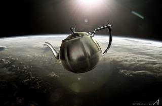
ceainicul lui Russell.
Astazi, cea mai importantă sectă umanistă este Umanismul liberal care crede că umanitatea este o calitate
a oamenilor, că există o natură sacră a umanității care rezidă în fiecare Homo sapiens individual. Prin
urmare, valoarea supremă a lumii este libertatea indivizilor. Acesta este motivul pentru care liberalismul
este numit așa
deoarece sfințește libertatea indivizilor. Miezul fiecărui individ este ceea ce dă sens lumii și este
sursa întregii autorități etice și politice. Ori de câte ori întâlnim o dilemă etică sau politică ar
trebui să ne uităm în interiorul nostru, și
să ascultăm vocea noastră interioară, vocea umanității. Poruncile principale ale umanismului liberal
sunt menite să protejeze libertatea și sfințenia acestui individ și vocea interioară împotriva oricăror
intruziuni din exterior și împotriva efectelor nocive. Aceste porunci sunt cunoscute ca
Pagina 200
drepturile omului. Chiar dacă Umanismul Liberal sfințește omul, el nu neagă existența lui Dumnezeu. Se bazează pe credințe tradiționale monoteiste, credința liberală în natura liberă și sacră a fiecărui om în parte este o moștenire directă a credinței creștine tradiționale în sufletul individual liber și etern. Fără credința în sufletul etern și într-un dumnezeu creator, explicația liberalilor ce este atât de special la sapiens devine penibilă.
2. Umanismul socialist
(CREDIT - SECULARPOST.NET)
A doua sectă ca importanță este umanismul socialist sau socialismul. Socialiștii cred că omenirea este colectivă și nu individualistă. Socialiștii venerează nu vocea interioară a fiecărui individ, ci specia Homo sapiens ca un întreg. Umanismul liberal urmărește cât mai multă libertate posibilă pentru individ, socialismul caută egalitate între toți oamenii. Potrivit socialismului, inegalitatea este cea mai mare erezie împotriva sanctității umanității, pentru că
privilegiile și inegalitatea oamenilor oamenilor contravine esenței lor universale comună. De exemplu, atunci
când bogații dobândesc privilegii, ele sunt luate de la cei săraci, înseamnă că banii valorează mai mult
decât esența universală a tuturor oamenilor care este similară pentru toată lumea, bogați și săraci deopotrivă.
La fel ca și Umanismul liberal, Umanismul socialist, dacă ne uităm cu atenție, este construit pe fundații
monoteiste. Așa cum monoteismul este construit pe fundații politeiste, așa sunt și noile religii moderne.
Nimic nu este însă complet pierdut. Monoteismul este încă acolo și stă la baza cel puțin a unora dintre
noile secte umaniste. Ideea că toți oamenii sunt egali este o moștenire de la convingerea monoteistă
că
toate sufletele sunt egale în fața lui Dumnezeu.
3. Umanismul evoluționar
Singura sectă umanistă care a reușit să se rupă de monoteismul tradițional este umanismul evolutiv. Cei mai cunoscuți reprezentanții ai umanismului evoluționar au fost naziștii. Noi nu-i considerăm pe naziști ca fiind umaniști, dar ei credeau de fapt în sfințenia umanității. Ce distinge naziștii
de alte secte umaniste este că au avut o altă definiție pentru umanitate decât liberalii și socialiștii.
Naziștii au fost profund influențați de teoria evoluției. Spre deosebire de alți umaniștii, naziștii
credeau că omenirea nu este ceva universal, etern și neschimbător. Ei credeau că umanitatea este o specie
de animal care
poate evolua sau degenera în
conformitate cu teoria evoluției.
Pagina 201
Beger la efectuarea de studii antropometrice. (CREDIT
- Wikimedia)
Principala ambiție a naziștilor a fost de a proteja omenirea de la dispariție și să încurajeze progresul
spre supra-oameni. Ei erau convinși că rasa ariană este cea mai avansată formă umană care ar trebui să
fie hrănită, promovată și protejată. Homo sapiens degenerat, cum erau evreii, homosexualii și bolnavii
mintal, trebuiau puși în carantină și chiar exterminați. Naziștii au explicat că Homo sapiens a apărut
atunci când o populație superioară a oamenilor vechi a
evoluat și alte populații inferioare, cum ar fi Neanderthal, a dispărut. Aceste populații diferite au
fost la început rase diferite, dar s-au dezvoltat independent de-a lungul drumului lor evolutiv, una
a dispărut și cealaltă a devenit Homo sapiens. Acest lucru se poate foarte bine întâmpla din nou. Potrivit
naziștilor, Homo sapiens era deja împărțit în mai multe rase distincte, fiecare cu calitățile sale unice.
Una dintre acestea, rasa ariană, avea cele mai bune calități, raționalism, frumusețe, diligență, integritate
și așa mai departe. Rasa ariană avea potențialul de a transforma oamenii în supraoameni. Alte rase erau
neanderthalienii zilelor noastre, posedau calități inferioare.
În ultimele decenii, biologii au dovedit că
teoria rasială nazistă este un nonsens. În special, cercetarea genetică efectuată după 1945 a demonstrat
că diferențele între rase și populații umane sunt mult, mult mai mici decât postulau naziștii. Aceste
concluzii sunt însă relativ noi. Având în vedere stadiul cunoștințelor științifice din anii 1930, convingerile
naziste sunau rezonabil pentru mulți oameni, nu numai din Germania, ci de peste tot în lume. Existența
diferitelor rase umane, superioritatea rasei albe asupra tuturor celorlalte rase, precum și necesitatea
de a proteja și cultiva rasa superioară era răspândită pe scară largă în toate țările occidentale. Între
anii 1920 și 1930, oamenii de știință ai celor mai prestigioase universități occidentale au folosit argumente
științifice și au publicat studii care dovedeau că membrii rasei albe erau într-adevăr mai inteligenți,
mai etici și mai pricepuți decât africanii sau indienii. Politicieni de la Washington, Londra, Canberra
și așa mai departe considerau că este menirea lor să prevină degenerarea rasei albe. De exemplu prin
limitarea imigrației în SUA sau în Australia a oamenilor din țări inferioare
precum China sau chiar Italia.
(CREDIT - JEWISHVIRTUALLIBRARY.ORG)
Naziștii nu urau umanitatea, nu erau anti-umaniști. Ei au luptat contra Umanismului Liberal, socialismului și a drepturilor omului tocmai pentru că admirau umanitatea și credeau că este cel mai important lucru din lume. Naziștii credeau în potențialul speciei umane de a evolua în supraoameni. Urmând logica de evoluție darwinistă, aceștia susțineau
Pagina 202
că trebuie să li se permită ca prin selecția naturală să elimine indivizii improprii și să-i lase pe cei
mai adaptați să supraviețuiască și să se reproducă. Ajutându-i pe cei slabi și nepotriviți, liberalismul
și socialismul subminau selecția naturală. Ele nu numai că permiteau celor slabi să supraviețuiască,
ci le dădeau de fapt șanse egale pentru a se reproduce. Într-o astfel de lume liberală sau socialistă,
oamenii cei mai adaptați se vor îneca în mod inevitabil într-o mare de degenerați. Omenirea ar deveni
tot mai slabă cu fiecare generație și acest lucru ar duce la dispariția ei. Afișele de propagandă naziste
ilustrau acest lucru. Ele aratau rasa ariană pură și rasele încrucișate, un amestec între rasa ariană
și alte rase. Afișele confirmă nu numai ideologia nazistă despre biologie, ci și admirația nazistă pentru
corpul uman și teama că amestecul raselor degenerate cu rasa ariană superioară ar putea polua umanitatea.
sculptor GERMANIA
(CREDIT YADVASHEM.ORG )
Avem aici este un desen animat nazist care-l prezintă pe Hitler ca pe un sculptor care creează supraoameni.
Să notăm nu numai idealul de supraoameni, dar, de asemenea glorificarea erotică a corpului uman. Oamenii
care au desenat acest afiș credeau în acest ideal, admirau cu adevărat umanitatea.
Viitorul Umanismului evoluționar este neclar. Pentru 60 de ani de la sfârșitul celui de-al 2- lea război
mondial după înfrângerea nazismului, a lega Umanismul de evoluție
a devenit subiect tabu, la fel ca și utilizarea metodelor biologice pentru a upgrada Homo sapiens
într-un fel de supra-oameni. Lucrurile se schimbă însă și astfel de proiecte
biologice sunt din ce în ce mai populare. Nimeni nu vorbește despre exterminarea celor slabi sau uciderea
oamenilor inferiori cum au făcut naziștii, dar tot mai mulți oameni preconizează utilizarea cunoștințelor
noastre tot mai avansate de biologie umana și genetică pentru a crea supra-oameni.
În același timp, în timp ce Umanismul Evoluționar este pe cale de a redeveni popular, o prăpastie uriașă
se deschide între credințele Umanismului Liberal și cele mai recente descoperiri ale oamenilor de știință.
O prăpastie care devine tot mai greu de ignorat. Politica liberală și sistemele judiciare se întemeiază
pe credința că fiecare individ are un caracter interior sacru, indivizibil și imuabil, care dă sens întregii
lumi și care este sursa întregii autorități etice și politice. Această idee este o reîncarnare a credinței
creștine tradiționale într-un suflet liber și etern care se presupune că se află în fiecare dintre noi.
De-a lungul ultimilor 200 de ani, stiințele vieții au subminat complet această credință creștină. Oamenii
de stiinta care studiază mecanismele interne ale organismului uman
nu au gasit nici un suflet. Comportamentul uman, în conformitate cu stiințele vieții, este determinat
de hormoni și genetică și așa mai departe, nu de un suflet cu voință liberă. Specia umană, Homo sapiens,
este foarte similară cu alte animale, cum ar fi cimpanzei,
Pagina 203
lupi și furnici în comportament. Sistemele noastre judiciare și politice au multă bătaie de cap cu această
idee. De cele mai multe ori, ele încearcă pur și simplu să ascundă aceste idei sub covor astfel că poate
nu le va observa nimeni în instanță sau în politică. E dificil de spus cât timp putem continua cu menținerea
unui perete despărțitor între departamentul de biologie și departamentul de drept și științe politice,
ignorând
concluziile științelor biologice atunci când intrăm în domeniul politic și legal.
Lecția XI - Descoperirea ignoranței
Cu această lecție, dr. Harari începe a patra și ultima parte a cursului, numită "Revoluția științifică". Acesta este dedicată revoluției științifice precum și implicațiilor ei în politică, societate și economie. Prima lecție din această parte a cursului este numită "Descoperirea Ignoranței". Procesul de unificare a omenirii a fost finalizat în ultimii 500 de ani. În același timp, a existat o creștere explozivă a puterii umane în ansamblu datorită, înainte de toate, descoperirilor științei moderne.Omenirea a devenit tot mai conștientă că singurul lucru care-i limitează puterea este propria ignoranță, și că descoperirea de cunoștințe noi îi dă posibilitatea de a face aproape orice. Această lecție va detalia diferențele dintre știința modernă și formele de cunoaștere anterioare, precum și ascensiunea bruscă și realizările de neegalat ale științei.
Dr Harari de la Universitatea Ebraică din Ierusalim continuă prin aceste subiecte lecțiile despre istoria omenirii. Lecția actuală descrie importanța descoperirii ignoranței
Revoluția științifică
Dans țărănesc, Pieter Bruegel cel
Bătrân
Revoluția științifică se referă la fenomenala creștere a capacităților umane din ultimii 500 ani, un rezultat direct al descoperirilor și invențiilor științei moderne. Nimic de genul acesta nu s-a întâmplat înainte comparabil în viteza și amploare. Un țăran care a trăit în anul 1000 d.Hr. ar fi văzut câteva
schimbări în anul 1500 d.Hr. Lumea era foarte asemănătoare pentru țărani, în ciuda schimbărilor în tehnologie, granițe politice, convingeri și așa mai departe. Pe ansamblu era încă aceeași lume. O persoană din anul 1500 ar găsi însă la începutul secolului 21 o lume ciudată, complet diferită, schimbată dincolo de orice înțelegere. El ar putea crede că nu mai este pe pământ, ci undeva în rai sau iad. Lucruri pe care noi le considerăm normale, cum ar fi bombe nucleare, avioane, vaccinare, telefoane celulare, computere erau dincolo de cele mai îndrăznețe vise ale oamenilor acum 500 de ani. Acum 500 de ani vorbitul la telefon cu cineva din cealaltă parte a lumii sau zborul pe alt continent, erau considerate ca un domeniu exclusiv al îngerilor și zeilor. E imposibil de explicat cuiva care trăia în epoca lui Columb cum se poate vorbi în fața a zeci de mii de studenți simultan pe Internet (coursera n.t.). Dacă dorim lumină, apăsăm pur și simplu un întrerupător, îl apăsăm din nou și lumina dispare. Pentru noi acest lucru sună banal, dar să explicăm forța curentului electric strămoșilor noștri de acum 500 de ani! Este dincolo de mijloacele lor de înțelegere, chiar dincolo de visele si fanteziile lor. Oamenii au obținut aceste forțe prin investirea de resurse în domeniul cercetării științifice.
Investiții
Până la începutul perioadei moderne, oamenii au investit puțin efort în cercetarea științifică, deoarece nu credeau că vor obține avantaje medicale, militare sau economice. Regi și împărați dădeau cu siguranță bani pentru burse și educație, nu pentru a a dobândi puteri noi, ci pentru a le păstra pe cele existente. Regele tipic dădea bani preoților, filozofilor, poeților în speranța că aceștia vor legitima stăpânirea lui și vor menține ordinea socială. El nu se aștepta ca ei să descopere
medicamente noi, să inventeze arme sau să stimuleze creșterea economică . În ultimele cinci secole însă, oamenii au ajuns să creadă din ce în ce mai mult că ar putea câștiga putere investind tot mai mulți bani și resurse în cercetarea științifică. Nu era o credință oarbă, ci ceva demonstrat practic în mod repetat. Dobândind mai multă putere, tot mai multe resurse au fost introduse în cercetare. Guvernul Statelor Unite a alocat în ultimele decenii miliarde de dolari în domeniul fizicii nucleare. Cunoașterea adusă de această cercetare a făcut posibilă construcția centralelor nucleare, care asigură energie electrică ieftină pentru industriile americane.
(CREDIT - CHAPTER16PROJECT15)
Aceste industrii plătesc taxe către guvernul Statelor Unite, care folosește o parte pentru a finanța și mai
multă cercetare în fizica nucleară. Pentru a face progrese, știința are nevoie de mai mult decât doar
de cercetare. Are nevoie de angrenarea științei, politicii și a economiei. Aparatul politic și cel economic
furnizează resurse fără de care cercetarea științifică este aproape imposibilă. În schimb, cercetarea
științifică crează înzestrări noi care sunt folosite, printre altele, pentru a obține resurse noi. Unele
dintre aceste resurse noi sunt reinvestite în cercetare. Aceasta este bucla de reacție (feedback) de
bază a revoluției științifice. Pentru a înțelege revoluția
științifică, nu este suficient să studiem doar știința. Newton, Galileo și Einstein au spus
că trebuie să înțelegem, de asemenea, legăturile dintre știință, politică și economie.
Caracterul unic al științei moderne
Cel puțin de la revoluția cognitivă încoace, oamenii au încercat mereu să înțeleagă cum functionează universul. N-a fost neapărat ceva unic pentru acești ultimi 500 de ani. Strămoșii noștri de acum mii și chiar zeci de mii de ani au investit mult timp și efort în încercarea de a descoperi regulile care guverna lumea naturală din jurul lor. Știința modernă se deosebește însă de toate tradițiile anterioare ale cunoașterii în trei moduri esențiale. În primul și cel mai important rând ea este diferită în capacitatea de a admite ignoranța. Știința modernă se bazează pe admiterea faptului că nu știm totul. Chiar mai mult decât atât, ea acceptă că lucrurile pe care credem că le știm s-ar putea totuși dovedit greșite pe măsură ce câștigăm mai multe cunoștințe. În știința modernă nici un concept, idee sau teorie nu este considerată sacră și de necontestat. A doua caracteristică unică este accentul pus pe observație și matematică. Oamenii de stiință moderni încearcă să obțină noi cunoștințe prin colectarea observațiilor asupra lumii, folosind apoi instrumente matematice pentru a grupa aceste observatții în teorii complexe. A treia caracteristică unică este faptul că știința își propune să dobândească puteri noi. Știința modernă nu este niciodată mulțumită cu crearea unor teorii și înțelegerea modului în care funcționează lucrurile. Știința modernă folosește aceste teorii pentru a dobândi puteri noi, și în special pentru a dezvolta tehnologii noi. Nu adevărul este scopul real al științei moderne, ci puterea.
Dr. Harari va urmări în detaliu fiecare caracteristică a științei moderne
Capacitatea de a admite ignoranța
Nuntă Țărănească, Pieter Bruegel cel Bătrân
Într-un anumit sens, revoluția științifică nu a fost o revoluție a cunoștințelor cum este ea descrisă de obicei, ci o revoluție a ignoranței. Cea mai mare descoperire a revoluției științifice a fost descoperirea ignoranței, descoperirea faptului că oamenii nu știu răspunsurile la întrebările cele mai importante. Cunoașterea pre-modernă oferită de Islam, creștinism, budism afirmau că tot ceea ce este esențial de știut despre lume era deja cunoscut. Marile zeități, sau un Dumnezeu atotputernic, sau înțelepții din trecut știau tot ce se putea cunoaște și explicau tot ceea ce aveam nevoie să știm în scripturi și tradiții orale. Răspunsul la o orice întrebare importantă era să în textele antice înțelese în mod corespunzător. Era de neconceput faptul că din Biblie, Coran, sau Vede lipsește vreun secret esențial al universului. Un secret care trebuia să fie descoperite de omul modern. Tradițiile vechi în ce privește cunoașterea admiteau doar două tipuri de ignoranță.
În primul rând, dacă cineva era ignorant într-un domeniu foarte important, tot ceea ce el sau ea trebuia
să facă era să întrebe pe cineva mai înțelept. Nu era nevoie să se descopere ceva ce nimeni altcineva
nu știa. Dacă un țăran medieval european vroia să cunoască originea rasei umane, el, la fel ca toți ceilalți,
presupunea că tradiția creștină avea deja răspunsul complet. Dacă țăranul nu știa, tot ce trebuia să
facă era să-l întrebe pe preot, iar dacă preotul nu știa, atunci acesta îl întreba pe episcop sau pe
Papă. Aceștia aflau toate răspunsurile studiind și înțelegând textele sacre. În al doilea rând, era de
neconceput că nu numai o singură persoană, dar că toți oamenii ar putea fi ignoranți în ce privește lucrurile
importante. Prin definiție, în conformitate cu religiile tradiționale, ceea ce deitățile sau înțelepții
din trecut nu s-au deranjat să ne transmită în texte și tradiții sacre era complet lipsit de importanță.
Dacă un țăran medieval vroia să știe cum își țes pânzele păianjenii, era lipsit de sens să-l întrebe
pe preot, pe episcop sau pe Papă, deoarece aceștia nu știau și nu exista nici un răspuns la această întrebare
în vreo lucrare creștină.
(CREDIT Wikimedia )
Acest lucru nu înseamna că creștinismul era deficitar. Însemna doar că întrebarea era
lipsită de importanță. La urma urmei, Dumnezeu știa totul, inclusiv de ce păianjenii își țes pânzele.
Dacă ar fi fost cumva o informație esențială, necesară pentru prosperitatea populației și pentru mântuire,
Dumnezeu ar fi avut grijă să includă o explicație detaliată a păianjenilor în Biblie. Creștinismul nu
interzicea oamenilor să studieze păianjenii dacă aceștia o doreau. Oamenii implicați în studiul păianjenilor
ar fi trebuit însă să accepte rolul lor periferic în societate, și lipsa de relevanță a concluziilor
lor pentru adevărurile eterne ale religiei și a societății creștine. Orice putea descoperi un savant
despre păianjeni, era fără însemnătate.
În toate vremurile, chiar și în cele mai pioase și conservatoare, au existat mereu oameni care să susțină
că există lucruri importante pe care întreaga societate le ignoră sau nu le cunoaște. Cu toate acestea,
astfel de persoane au fost marginalizate sau persecutate, sau au fondat o tradiție nouă care a susținut
că ea știe acum tot ce era de știut. Profetul Mahomed și-a început cariera religioasă prin condamnarea
colegii săi arabi care trăiau în ignoranța adevărului divin. Cu toate acestea, foarte rapid Mahomed însuși
a început să susțină că el știa tot adevărul pentru că i-a fost revelat lui de către Dumnezeu. Urmașii
lui Mahomed, prin urmare, au început să-l numească pecetea profeților, ultimul profet, pentru că după
Mahomed nu mai era nevoie de revelații ulterioare. Revelațiile lui conținea tot adevărul pe care omenirea
avea nevoie să-l știe. Știința modernă este unică, deoarece recunoaște deschis ignoranța noastră colectivă
cu privire la cele mai importante întrebări ale tuturor timpurilor.
Charles Darwin
Darwin nu a susținut că el este "pecetea biologiei", ultimul biolog și că el ar fi rezolvat o dată pentru totdeauna toate marile întrebări ale vieții. După secole de amplă cercetare științifică, biologi, fizicieni, chimisti, și așa mai departe recunosc că nici ei nu au încă o explicație concretă de exemplu pentru modul în care creierul produce constiința. Fizicienii recunosc că nu știu ce a cauzat Big Bang- ul, și nu știu cum să împace mecanica cuantică cu teoria relativității generale. Deci, aceasta este prima caracteristică a științei moderne, puterea de a spune nu știm , de a admite ignoranța. Această dorință de a admite ignoranța a făcut știința modernă mult mai dinamică și curioasă decât orice sistem anterior de cunoaștere. Ea nu se oprește însă aici. După ce admite ignoranța, începe să caute cunoștințe noi, iar cea de a doua caracteristică unică a științei moderne este modul în care se urmărește cunoașterea.
Sprijinul pe observațiile empirice
Odată ce ignoranța este admisă, oamenii de stiință încep să caute cunoștințe noi, prin colectarea de
observații empirice și punerea lor împreună cu ajutorul unor instrumente matematice. Empiric este ceva
ce putem observa cu cel puțin unul dintre simțurile noastre. A doua caracteristică unică a metodologiei
științifice este conectată profundă cu matematica. De- a lungul istoriei, oamenii au colectat de multe
ori observații empirice, dar importanța acestor cunoștințele esențiale în scripturi și tradiții sfinte.
Tot ceea ce oamenii aveau nevoie să știe fusese deja spus de Isus, Confucius, sau Muhamed. Singurul mod
pentru acumularea de cunoștințe noi era studiul și practica tradițiilor consacrate. Nu era nevoie să
se piardă resurse pretioase încercând să se obțină observații noi. Pe măsură ce cultura modernă a ajuns
să admită că nu avem răspunsurile la întrebări foarte importante, a devenit necesară căutarea unor cunoștințe
complet noi, cunoștințe pe care nimeni nu le-a avut anterior. În consecință, metoda principală în cercetarea
modernă constată inițial
insuficiența cunoștințelor vechi, vede că nu avem toate răspunsurile încă. Putem studia cărți și
ceea ce oamenii din trecut au transmis, dar accentul trebuie să fie pus pe observații și experimente
noi. Ori de câte ori observația prezentă contrazice trecutul, știința modernă spune că ar trebui să se
dea prioritate observației față de tradiție, indiferent cât de multă venerație sau admirație merită oamenii
care au stabilit tradiția.
Manicheanilor (-WIKIMEDIA CREDIT)
Singure, observațiile nu generează cunoaștere. Pentru a înțelege universul e necesar să se conecteze multe observații despre lume și să se creeze, pornind de la ele, teorii complete. Tradițiile anterioare ale cunoașterii cum ar fi religiile mari, formulează teoriile asupra lumii de obicei sub forma poveștilor. Știința modernă este diferită și tinde să folosească matematica pentru a construi teoriile sale asupra lumii. Dacă ne uităm în Biblie, Coran sau Vede vom găsi foarte puține ecuații, grafice sau calcule pentru că atunci când religiile și mitologii tradiționale au încercat să explice lumea și să stabilească norme generale de comportament, ele au fost prezentate în formă narativă și nu în formă matematică. De exemplu, principiul fundamental al religiei maniheiste, unul dintre cele mai importante religii dualiste, afirmă că lumea este un câmp de luptă între bine și rău. Răul a creat materia și corpul, în timp ce bunul Dumnezeu a creat spiritul și oamenii sunt prinși între aceste două forțe și ar trebui să aleagă binele asupra răului. Cu toate acestea, fondatorul religiei maniheiste, profetul Mani, nu a oferit nici o formulă matematică care să poată fi folosită pentru a prezice alegerile umane sau pentru a cuantifica puterea respectivă a acestor două forțe. Mani nu a calculat că, de exemplu, forța care acționează asupra unui om este egală cu accelerarația spiritului său împărțit la masa corpului lui sau ceva de genul asta. Aproape nici o religie tradițională nu folosește calcule și ecuații. Prin contrast, știința modernă este plină de formule matematice exacte.
În 1687, Isaac Newton a publicat probabil cea mai importantă carte din știința și istoria modernă, " Principiile Matematice al Filozofiei Naturale" (Philosophiæ Naturalis Principia Mathematica). În
această carte, Newton a prezentat o teorie generală pentru toate mișcările și schimbările din lume. Măreția teoriei lui Newton a fost că nu era descria oameni care au afirmat una sau alta, dar că a încercat să explice și să prezică mișcările tuturor obiectelor din Univers de la un măr la un copac sau la o stea căzătoare, folosind doar trei legi matematice foarte simple. Newton a calculat în a doua din cele trei legi celebre ale mișcării că forța care acționează asupra unui corp este egală cu masa corpului înmulțită cu accelerația sa. După Newton, oricine dorea să înțeleagă și să prezică mișcarea unui măr, o ghiulea, sau o planetă, trebuia să facă pur și simplu măsurători pentru masa și accelerația obiectului și a forțelor care acționează asupra lui și să folosească ecuația lui Newton pentru a prezice poziția lui viitoare. Nu toate fenomenele din lume pot fi încadrate într-o ecuație Newtoniană. Nu avem ecuații exacte, cel puțin nu încă, pentru a înțelege evoluția, economia, psihologia umană, dar în toate aceste domenii, oamenii de știință combină dovezile empirice pentru a forma teorii generale prin intermediul instrumentelor matematice. Principala diferență între psihologie și mecanica newtoniană în fizică, este că psihologii folosesc statistici și probabilități în locul ecuațiilor exacte. Instrumentele lor matematice sunt din domenii diferite.
Practica geometriei la occidentali și
arabi secolul 15TH
Dacă vrem să înțelegem importanța tot mai mare a matematicii în lumea modernă trebuie doar să aruncăm o privire
scurtă la istoria învățământului. În cea mai mare a istoriei, în aproape toate culturile,
matematica a fost considerată un domeniu ezoteric, pe care chiar oamenii educați îl studiau rareori
în profunzime. În Europa medievală, programa de învățământ consta în logică, gramatică și retorică. Predarea
matematicii trecea rareori dincolo de calcule aritmetice simple și
geometrie. Nimeni în Europa medievală nu studia statistică. Regina de necontestat a
științelor în evul mediu a fost teologia, nu matematica. Astăzi, în lume, foarte puțini elevi mai studiază încă teologie sau retorică. Logica este limitată în principal în departamentele de filozofie, puțini oameni din departamentul de biologie, sau economiei studiază astăzi logică. Tot mai mulți studenți din tot mai multe departamente sunt motivați sau obligați să studieze din ce în ce mai mult matematică. Există o tendință irezistibilă spre ceea ce numim științele exacte, numite astfel deoarece utilizează instrumente matematice. Chiar și domeniile de studiu care au fost în mod tradițional umaniste, cum ar fi psihologia umană, se bazează tot mai mult pe matematică. Psihologii folosesc statistici, la fel ca științele exacte, fizică sau chimie. Cursurile de Statistică sunt acum parte din cerințele de bază, nu doar în departamentul de fizică sau biologie, dar și în departamentele de psihologie, sociologie, economie, stiințe politice, relații internaționale, și așa mai departe. În Universitatea Ebraică dacă deschidem catalogul de
curs pentru departamentul de psihologie, vom găsi ca cerință în curriculum cursul
Pagina 211
"Introducere în statistică și metodologia statistică în cercetarea psihologică". În al doilea an, elevii la psihologie trebuie să treacă cursul "Metode statistice in cercetarea psihologică", care este o continuare a primului curs.
Cunoașterea aduce putere
Confucius, Buddha, Iisus sau Mohamed ar fi a fost uimiți, uluiți chiar dacă li s-ar fi spus că trebuie studiată
statistica pentru a înțelege psihicul uman și a vindeca boli. Rolul central al matematicii în știința
modernă este unul din principalele motive pentru care mulți au dificultăți de a se apropia de știință
în general. Mintea umană nu este adaptată la modul de gândire bazat pe numere. Pe parcursul a milioane
de ani, oamenii nu au avut nevoie să se ocupe de numere și matematică, așa că nu sunt construiți pentru
asta. Astăzi, din cele șapte miliarde de oameni din lume foarte puțini înțeleg cu adevărat mecanica cuantică,
biologia celulară, sau micro-economie. Cu toate acestea, știința se bucură de
un prestigiu imanent, nu pentru că oamenii înțeleg mecanismele sale intime, majoritatea nu o fac,
ci pentru că știința ne dă puteri noi colosale. Președinți și generali nu inteleg în amănunt fizica nucleară,
dar au o înțelegere destul de bună a ceea ce pot face bombele nucleare. Aceasta este a treia caracteristică
unică și importantă a științei moderne. Știința modernă nu este interesată doar de formularea de teorii
despre lume. Scopul real al științei moderne este să obțină puteri noi. În știința modernă, adevăratul
test al cunoașterii nu este adevărul, ci adaosul de putere. Oamenii de stiință sunt conștienți în zilele
noastre că nici o teorie nu este 100% corectă, deci criteriul adevărului este un test slab pentru cunoaștere.
Adevăratul test pentru cunoaștere este utilitatea.
(CREDIT -RENAISSANCEMAN1.BLOGSPOT)
Cunoașterea este apreciată numai atunci când ne dă puteri și tehnologii noi, și ne permite să facem lucruri
noi. Această legătură între știință și tehnologie este atât de puternică încât oamenii au tendința să
le confunde. Vedem știința și tehnologia ca fiind unul și același lucru. Credem că este imposibil să
se dezvolte tehnologii noi fără cercetare științifică și că cercetarea nu are sens, cu excepția cazului
în care rezultă o tehnologie nouă. Relația strânsă dintre știință și tehnologie este însă un fenomen
recent. Știința și tehnologia erau înaintea anului 1500 d.Hr. domenii diferite de activitate. Ele s-au
conectat treptat abia în epoca modernă timpurie. Inseparabile au devenit cu adevărat abia în secolul
al XIX-lea, în ultimii 200 de
ani. Înainte de asta, chiar și în anul 1800, conducătorii care-și doreau o armată puternică, și cei mai
mulți oameni de afaceri care vroiau să conducă afaceri de succes, nu se deranjau să finanțeze cercetare
în fizică, biologie, economie. Ei nu vedeau
legătura între cercetarea științifică și puterea tehnologică.
Există desigur excepții de la această regulă. Un istoric bun poate găsi antecedente la aproape orice,
un istoric și mai bun știe când aceste precedente sunt doar excepții în
Pagina 212
imaginea de ansamblu. Ar trebui să ne concentrăm asupra pădurii, nu asupra copacilor individuali. În general,
în cele mai multe societăți pre-moderne, regii, comercianții, bancherii și așa mai departe nu au finanțat
cercetarea universului pentru a dezvolta tehnologii noi. În mod similar cei mai mulți gânditori și filozofi
nu au încercat să traducă concluziile lor despre univers în gadget-uri tehnologice. Conducătorii finanțau
instituții de învățământ, cum erau universități și mănăstiri, scopul lor era însă altul, să răspândească
și să păstreze cunoștințe tradiționale pentru a sprijini ordinea existentă. Noile tehnologii au apărut
pe ici și colo în lumea pre-modernă, ele au fost însă, de obicei, rezultatul eforturilor unor meșteri
needucați care foloseau metoda încercare - eroare. Nu au fost rezultatul savant al unor cercetări științifice
sistematice.
Însăși conceptul unui departament de cercetare și dezvoltare, foarte central astăzi, era străin de mentalitatea
regatelor timpurii pre-moderne. Biserici, armate, și întreprinderi aveau prea puțin interes în dezvoltare
și nu vedeau nici o legătură între dezvoltarea de noi tehnologii și cercetare. Producatorii unui coș,
să zicem, fabrica același model de coș deceniu după deceniu. El nu încerca să inventeze sau să dezvolte
modele noi. Un nou model de vagon
poate că a fost dezvoltat de către un tâmplar foarte bun care avea o idee nouă. Nu era însă rezultatul
unui studiu universitar în fizică, chimie sau a unui design nou. Similar, cele mai multe armate din era
pre-modernă, chiar și în epoca modernă timpurie, nu aveau nici un departament de cercetare și dezvoltare,
erau complet dezinteresate de domeniul științei și tehnologiei.
Până în secolul al XIX-lea, marea majoritate a revoluțiilor au fost
produsul organizării, nu al schimbărilor tehnologice. Când civilizații străine s-au întâlnit pentru
prima dată, ca atunci când europenii au ajuns în America pentru prima dată, diferențele tehnologice dintre
ele au jucat totuși un rol important.
Pagina 213
Chiar și în astfel de cazuri, decalajul tehnologic nu era deliberat și foarte puțini generali sau regi l-au urmărit în mod intenționat. Cele mai multe imperii din istorie nu s-au extins datorită vreunei arme magice sau a unei inovații tehnologice. Conducătorii nu a căutat să investească bani în crearea de arme-minune noi. Arabii nu au învins Imperiul Bizantin pentru că aveau arcuri superioare. Seljuchii nu au vreun avantaj tehnologic asupra bizantinilor. Mongolii nu au cuceri China pentru că au avut tehnologie mai bună. Învinșii, chinezii, bizantini și Sassanizi aveau de fapt tehnologie militară și civilă superioară învingătorilor mongoli, Seljuks și arabi. Armata romană este un exemplu deosebit de bun. Armata romană a fost probabil pentru vremurile ei cea mai eficace armată din lume. Avantajul ei era în organizarea eficientă, disciplina de fier a soldaților, precum și în rezervele umane gigantice. Tehnologic, Roma nu a avut absolut nici un avantaj asupra rivalilor sai, cum erau Cartagina sau Macedonia. De-a lungul secolelor de existență, armele armatei romane au fost mai mult sau mai puțin neschimbate.
Știința nu a fost văzută ca ceva care oferă oamenilor posibilități noi. Oamenii credeau că toate marile descoperiri au fost deja făcute, că ei știu tot ceea ce este de știut despre lume. Oamenii nu credeau în posibilitatea progresului.
Revoluția progresului

Odată ce știința modernă a afirmat că există încă o mulțime de lucruri pe care noi încă nu le știm, și
că noua cunoaștere putea fi tradusă în putere,
totul s-a schimbat. Oamenii au început să creadă în posibilitatea progresului oriunde, în medicină,
economie, politică. Această schimbare a revoluționat lumea. Nu numai știința, ci și politica, economia,
societatea, cultura.
Dacă urmăm sfatul înțelepților din trecut, cum au fost Isus, Mohamed și Buddha, putem salva lumea de
la degradare, dar nu putem birui problemele fundamentale ale lumii, cum ar fi războiul, sărăcia sau boala.
Dacă chiar ei, care știau tot ce era de știut,
nu au reușit să elimine complet nici foametea, nici să vindece toate bolile, sărăcia și războiul, cum
am putea-o face noi? Multe religii consideră că, într-o zi, un mesia va veni și va aduce sfârșitul lumii.
Toate războaiele, foametea, și chiar moartea vor fi eliminate. Ideea, că oamenii obișnuiți ar putea depăși
toate aceste dificultăți, prin descoperirea de cunoștințe și invenții noi era pur și simplu ridicolă.
Cu toate acestea, în era modernă, atunci când oamenii au început să admită că există multe lucruri importante
pe care noi încă nu le știm, progresul brusc a devenit mult mai probabil, sau cel puțin posibil. Dacă
putem descoperi cunoștințe importante noi, care pot fi traduse în abilități noi, atunci poate că putem
rezolva problemele despre care anterior
se credea că sunt imposibil de rezolvat, lucruri pe care nu le puteam depăși.
Pagina 214
WEST - BENJAMIN FRANKLIN trage electricitate din cer
Pe măsură ce știința, de-a lungul secolelor, a început să rezolve cu adevărat o problemă de nerezolvat după
alta, oamenii s-au convins că omenirea ar putea depăși fiecare problemă, prin achiziționarea și aplicarea
de noi cunoștințe. Sărăcia, boala, foametea, războaiele, bătrânețea și chiar moartea nu sunt soarta inevitabilă
a oamenilor, ci sunt pur și simplu
rezultatul ignoranței noastre. Un exemplu celebru pentru credința în progres este cazul fulgerului.
Multe culturi pe parcursul istoriei au crezut că fulgerul este mânia unui zeu furios, pentru a-i pedepsi
pe cei păcătoși pentru lucrurile rele pe care le-au făcut. La mijlocul secolului 18, fulgerul a atras
atenția
Benjamin Franklin, unul dintre cei mai importanți gânditori politic și științific al Americii.
Într-unul dintre experimentele cele mai cunoscute din istoria științei, Franklin a ridicat un zmeu în
timpul unei furtuni cu fulgere, pentru a-și testa teoria după care fulgerul este pur și simplu curent
electric. Observațiile empirice pe care le-a făcut Franklin, împreună cu cunoștințele sale despre energia
electrică și modul în care aceasta funcționează, i-au permis lui Franklin sa inventeze o noua tehnologie,
paratrăsnetul, și
practic să dezarmeze zeii. De când avem paratrăsnetul, indiferent cât de păcătoși suntem și cât de
supărați ar fi ei, zeii au dificultăți în a ne pedepsi cu fulgere.
credit: Getty Images
Un alt aspect cu mult mai important decât fulgerul este problema sărăciei. Multe culturi din istoria au văzut
în sărăcie o menire inevitabilă a acestei lumi. În zilele noastre noi vedem însă sărăcia ca pe o problemă
tehnică care poate fi rezolvată. Cei mai mulți dintre noi presupunem că, dacă vom adopta
politici care se bazează pe cele mai recente descoperiri în agronomie, economie,
medicină, sociologie, și așa mai departe, putem elimina sărăcia din țara noastră și din lume în general.
În multe părți ale lumii de astăzi problemele cele mai grave ale sărăciei au fost rezolvate. Deoarece
pentru mulți oameni, acest lucru sună scandalos, dr. Harari va detalia afirmația.
De-a lungul istoriei, societățile au suferit de două tipuri distincte de sărăcie. Una este
sărăcia socială, care este un decalaj între săraci și bogați. Celor săraci nu li se oferă oportunitățile
care sunt oferite celor bogați. Sărăcia socială este relativă. Alt tip de sărăcie este
sărăcia biologică, ea nu este relativă, ci absolută. Sărăcia biologică înseamnă o situație în
care viața indivizilor este într-un risc imediat de deces din cauza
lipsei de hrană și adăpost. Sărăcia socială, pentru că este relativă, poate fi imposibil de
Pagina 215
rezolvat. Chiar dacă avem tot mai multă bogăție și putere, vor exista întotdeauna decalaje între săraci și
bogați. În multe țări din lume însă,
sărăcia biologică nu mai există.
Oamenii din multe părți ale lumii nu mai mor pentru că sunt săraci . Până relativ recent, cei mai mulți oameni din majoritatea țărilor din lume trăiau foarte, foarte aproape de linia de sărăcie biologică care se măsoară în numărul de calorii de care o persoană are nevoie pentru a supraviețui pentru câteva zile. Erori de calcul mici sau nenorociri naturale puteau ușor împinge oamenii sub această linie, și să-i facă să moară de foame. Dacă câmpul era
semănat în sezonul greșit, sau dacă venea o inundație, tu si familia ta mureați de foame. La nivel colectiv, dezastre naturale sau calamități provocate de om puteau să ducă populații întregi să moară de foame. În schimb, cei mai mulți oameni din lumea de astăzi au un soi de plasă de siguranță pentru a-i proteja de foamete, sărăcie sau moarte. Indivizii sunt protejați de necazurile personale prin asigurări, prin sponsorizarea de către stat a asigurărilor sociale, precum și prin alte organizații locale și internaționale. Atunci când un dezastru lovește o țară sau regiune, de obicei dar nu întotdeauna, eforturile de ajutorare la nivel mondial sunt semnificative pentru a prevenirea moartea a milioane de oameni. Oamenii încă suferă desigur numeroasele degradări, umilințe și boli legate de sărăcie. Dar, în cele mai multe țări din lume, nimeni nu mai moare de foame, pentru că nu mai are pâine sau orez să mănânce. De fapt, astăzi în întreaga lume, mulți oameni sunt în pericolul de a muri de la prea multă mancare decât de foame.
Poate știința rezolva problema morții?
Ghilgameș cum este ilustrat în caldeean contul GENESIS
(CREDIT -
Cea mai importantă problemă a tuturor oamenilor de știinta este moartea. Înainte de epoca modernă majoritatea religiilor, ideologilor și filozofilor vedeau moartea ca fiind soarta inevitabilă a noastră a tuturor. Mai mult, majoritatea transforma moartea în principala sursă de sensul al vieții. Încearcă să-ți imaginezi islam-ul, creștinismul sau religia Egiptului antic cu piramide și mumii într-o lume fără moarte. N- ar avea niciun sens. Religiile tradiționale i-au învățat pe oameni că trebuie să se împace cu ideea morții și să nu încerce să o biruie ca să trăiască pentru totdeauna. Cele mai bune minți în majoritatea societăților tradiționale erau ocupate cu căutarea sensului morții, Aceasta este tema mitologiei epice vechi care a ajuns la noi din Sumeria de acum 5000 de
Pagina 216
ani, celebra epopee a
regelui Ghilgameș din Uruk.
Potrivit mitologiei sumeriene, el era cel mai puternic, înțelept și frumos om din lume. Putea face orice.
Putea lupta împotriva uriașilor și monștrilor și oriunde mergea era victorios și reușea să facă tot
ce-și propunea. Până când într-o zi cel mai bun prieten al său,
Enkidu, a murit de o boală pe care zeii au trimis-o ca să-l pedepsească. Ghilgameș a refuzat să
creadă că acest lucru s-a întâmplat. A refuzat să permită oamenilor să îngroape corpul lui Enkidu. S-a
așezat lângă corpul acestuia timp de șapte zile, și i-a ținut priveghi crezând că Enkidu era doar adormit
și se va trezi. După șapte zile, Ghilgameș a văzut viermi care au început să iasă din nara prietenului
său, deoarece cadavrul era mâncat de ei. Ghilgameș a fost lovit de un sentiment teribil. Îngrozit, nu
pentru soarta lui Enkidu, ci și pentru a sa proprie. El și-a dat seama că ceea ce s-a întâmplat lui Enkidu
i se va întâmpla și lui. El a decis atunci și acolo că nu putea lăsa aceasta să se întâmple.
El va găsi o cale de a învinge moartea. A învins atât de mulți monștri și uriași și va învinge și
moartea. A plecat din Uruk în jurul lumii în căutarea unei soluții la problema morții. Epopeea lui Ghilgameș
povestește cum, în încercarea de a învinge moartea, a trecut oceane, deșerturi și munți, a luptat cu
monștri oribili și bărbați scorpioni și așa mai departe. Căutarea s-a încheiat însă cu un eșec. După
ce a căutat peste tot în lume nu a găsit leac pentru moarte. A venit acasă, cu o singură concluzie, realizarea
faptului că
moartea este soarta inevitabilă a omenirii. Când zeii au creat oamenii, ei au creat și moartea ca
să-i limiteze pe aceștia, și asta este. Cel mai puternic, cel mai înțelept om din lume a trebuit să accepte
și să învețe să trăiască cu ea. Acesta a fost singurul lucru care Ghilgameș l-a descoperit în căutarea
lui.
IMAGINI WAVEBREAKMEDIA LTD
Cei care cred cu adevărat în progresul științific nu împărtășesc atitudinea defetistă a lui Ghilgameș și
a multor povești și mitologii pe care oamenii le- au inventat de-a lungul secolelor pentru a explica
moartea. Pentru oamenii de știință și cei care cred cu adevărat în progresul științific, moartea nu este
destinul inevitabil al omenirii. Moartea
este
pur și simplu o problemă tehnică, la fel ca orice altă problemă tehnică. Poate mai
grea, dar nu diferită în esență. Potrivit științei, oamenii nu mor pentru că zeii au decretat că trebuie
să moară, ci din cauza unei defecțiuni tehnice. Mor din cauza unui atac de cord, din cauza cancerului,
din cauza unei infecții. Potrivit înțelepciunii științifice, fiecare problemă tehnică are o soluție tehnică.
În cazul în care inima se oprește din funcționare, putem stimula inima prin implantarea unui stimulator
cardiac, sau putem înlocui inima cu una nouă. Dacă cineva suferă de cancer, putem distruge celulele canceroase
cu medicamente sau radiații. Dacă bacterii periculoase se înmulțesc în interiorul corpului, antibioticele
le vor ucide. Este foarte adevărat că, în prezent, nu știm cum să rezolvăm toate problemele tehnice care
cauzeaza moartea, dar lucrăm la asta. Cele mai bune minți din lume
nu-și mai irosesc viața încercând să găsească un înțeles morții, sunt ocupate și investighează modul
în care functioneaza organismul, cum funcționează ADN-ului, precum și încearcă să găsească un remediu
pentru boli și chiar pentru oprirea
îmbătrânirii. Suntem în curs de dezvoltare a noi medicamente, tratamente, organe
Pagina 217
artificiale, si alte lucruri care vor prelungi viața noastră și poate într-o o zi ne vor permite
sa învingem moartea și să trăim veșnic.
medicamentele necesare lui Ellie pentru reacțiile la chimioterapie. (CREDIT - Daily Mail)
Până de curând, nu s-ar fi auzit de la oameni de știință sau oricine altcineva să vorbească așa fără menajamente.
Înfrângerea morții! Oamenii spuneau nu, nu asta încercăm noi să facem. Dacă întrebăm majoritatea
medicilor ei nu ar spune că încearcă să învingă moartea. Ei ar spune că încearcă să învingă cancerul,
tuberculoza, sau
caută un leac pentru Alzheimer. Ei evită să vorbească despre înfrângerea morții, probabil deoarece obiectivul
pare a fi prea sus și ar crea așteptări nerealiste care nu pot fi îndeplinite în următoarele decenii.
În al doilea deceniu al secolului 21, suntem la un punct în care oamenii de știință și medicii încep
să vorbească mai sincer și deschis. Încep să spună în mod clar că
principala intenție a revoluției științifică, a științei moderne
este să ofere omenirii viață veșnică. Nu doar să trăim pentru totdeauna, dar să trăim pentru totdeauna
tineri. Nimeni nu vrea să trăiască pentru totdeauna bolnav într-un scaun cu rotile, conectat la tuburi
si computere. Vrem să învingem moartea și îmbătrânirea simultan. Acesta este proiectul mare al științei
moderne, pe care unii îl numesc
Proiectul Ghilgameș. Acesta este proiectul pe care regele Ghilgameș l-a abandonat și oamenii de
stiinta moderni l-au preluat și au de gând să-l facă realitate. Cât timp va lua proiectul Ghilgameș,
nimeni nu știe cu adevărat, unii spun 200 ani, unii 100 ani, alții 1000 ani, nu știm încă.
Laserul poate trata acum orice problemă de înfrumusețare pentru oricine își poate permite (CREDIT DAILYMAIL.CO.UK/FEMAIL )
Dacă ne reamintim cât de puține știam despre corpul uman acum doar 100 de ani, la începutul secolului 20,
și cât de multe cunoștințe am dobândit în doar un secol, mulți sunt insuflați de optimism. Există gânditori
foarte serioși
din lumea de astăzi care sugerează că până în anul 2050, în mai puțin de 40 de ani, unii oameni, mai
ales cei bogați care își vor putea permite toate tratamentele, vor deveni deja amortali până în anul
2050.
Amortal este diferit de imortal (nemuritor). Imortalii nu pot muri. Amortalii pot muri încă dacă
să zicem un camion trece peste ei. Înseamnă că, fără un accident major, viața poate fi prelungită fără
limite. La fiecare 10, 20 ani te duci la spital, primești tratamentul necesar și vei câștiga încă 10,
20 de ani. Când aceștia trec te
duci din nou, dar pe atunci vor avea tratamente chiar mai bune. Dacă întrebăm oamenii
Pagina 218
dacă vor să trăiască un milion de ani, pentru totdeauna, nu toți doresc să trăiască pentru totdeauna, dar
aproape toată lumea ar vrea să trăiască pentru încă 10, 20 de ani într-o stare bună de sănătate. Aceasta
este ceea ce unii cercetători spun că se va întâmpla până în 2050. Cei mai bogați dintre noi vor avea
bani să plătească pentru un tratament la fiecare 10, 20 ani, care va extinde viața lor cu încă câteva
decade.
(CREDIT -POST.JAGRAN.COM )
Tot ce s-a descoperit în secolul trecut ar fi de neconceput pentru cunoștințele și așteptările oamenilor
de acum doar 200 de ani. Astăzi, tot felul de de pastile, injecții și operații sofisticate ne pot salva
de la boli și leziuni care acum 200 de ani sau acum 100 de ani ar fi semnat
condamnarea noastră definitivă la moarte. Nu era nici o metodă de a depăși aceste
dificultăți, și astăzi le depășim cu ușurință. Tratamente noi s-au descoperit în secolul trecut, nu doar
contra morții, ci și împotriva a nenumărate dureri și boli de zi cu zi pe care oamenii pre-moderni le
acceptau ca parte a vieții. Cu o durere de dinte acum 300 de ani te-ai fi dus la cineva pentru o extracție
fără anestezice, deoarece nu exista în acea vreme. Astăzi, chiar oamenii destul de săraci își pot permite
să meargă la un dentist care le dă o injecție și scoate dintele fără durere ca urmare a unei serii de
descoperiri.
De-a lungul secolului trecut, speranța medie de viață a sărit de la aproape 30 de ani la aproximativ
67 de ani în întreaga lume, 80 ani în lumea dezvoltată (74 în România n.t.). În medie, un copil născut
în anul 1900 era cel mai probabil să moară la 30 de ani, un copil născut astăzi are o șansă foarte bună
de a trăi aproximativ 67 de ani. În cazul în care copilul se naște în Japonia, Suedia sau Australia,
el sau ea are șansa să trăiască până la cel puțin 80 ani. Copiii nascuti în 2013 au o
speranță de viață estimată de cel puțin 100 de ani dacă este născut în societățile
dezvoltate și în clasa socială potrivită. Cea mai mare parte a acestui salt în speranța de viață nu a fost cauzat de vindecarea bolillor părinților noștri, ci prin tratamentul și vindecarea bolilor copilăriei și prin scăderea mortalității infantile. Dacă acum 500 de ani, reușeai să ajungi la 20 de ani, aveai o șansă bună de a trăi până la 70 sau 80. De ajuns la 20 era însă foarte, foarte dificil. Între un sfert și o treime din copiii născuți în secolele pre-moderne, chiar și în societățile din secolul 19 mureau înainte de a ajunge la 20 de ani. Cele mai mari realizări în lupta împotriva morții în secolul trecut au fost date de vindecarea bolilor copilăriei . Pentru a ilustra cum se trăia în secolele si mileniile înaintea acestor triumfuri, un exemplu bun este familia regelui Edward I al Angliei și a soției sale, regina Eleanor, care a condus Anglia în secolul al 13-lea. Copiii lor s-au bucurat de cele mai bune condiții care puteau fi furnizate de Europa medievală. Locuiau Pagina 219
în palate, aveau câtă hrană își doreau, haine, căldură precum și cea mai curată apă disponibilă. De asemenea,
aveau o armată de medici și spițeri care le îngrijeau nevoile și sănătatea. Sursele vorbesc de 16 de
copii pe care regina Eleanor i-a purtat pentru soțul ei între 1255 și 1284. Ce s-a întâmplat cu ei este
un indiciu convingător despre ce însemna să trăiești și să crești o familie în epoca dinaintea medicinii
moderne.
Arborele de familie- BL.UK)
Primul copil s-a nascut in 1255, o fiică. Nu știm numele ei, a murit la naștere și nu a mai fost botezată.
Al doilea copil a fost din nou o fiică numită Catherine. A murit fie la vârsta de unu sau trei ani, sursele
sunt neclare în acest sens.
Altă fiică, a treia, Joan a murit când avea șase
luni.
Al patrulea a fost primul lor fiu, John. A murit când avea cinci ani.
Numărul cinci, Henry, a murit când avea șase
ani.
Al șaselea copil, o fiică numită Eleanor, a ajuns la vârsta de 29 de ani înainte de a muri. Este primul
copil care a ajuns la maturitate.
Al șaptelea copi, o fiică care a murit și ea la
cinci luni.
Al optulea a fost o altă fiică pe nume Joan, care
a murit la 35 de ani.
Al nouălea a fost un fiu, Alphonso. A murit la
vârsta de zece ani.
58 de ani.
Al zecelea, o fiică numită Margaret, a murit la
Al 11-lea, o altă fiică, Berengaria, a murit la doi ani.
Doisprezece, o fiică anonimă care a murit la foarte scurt timp după naștere. Al treisprezecelea a fost
încă o fiică, Maria, care a murit la 53 de ani.
Al 14-lea a fost un fiu, nu știm numele său, a murit la scurt timp după naștere. A urmat o fiică, Elisabeta
care a murit la 34.
Edward a fost copilul lor al XVI-lea.
Pagina 220
Edward a fost primul prinț regal care a reusit să supraviețuiască anilor periculoși ai copilăriei și
să ajungă la maturitate. Când tatăl său a murit, el a devenit noul rege al Angliei. După cele mai bune
informații pe care le
avem, Eleanor și Edward au fost oameni foarte sănătoși. Nu au avut boli ereditare fatale care să treacă
la copiii lor. Cu toate acestea, zece din acești
16 copii, 62%, au murit înainte de a ajunge la maturitate. Numai șase au reușit să trăiască după vârsta
de 11 și doar trei au reușit să trăiască după vârsta de 40 de ani. E posibil ca Eleanor să mai fi fost
gravidă și aceste sarcini să se încheie cu avort. Edward si Eleanor au pierdut un copil, în medie, o
dată la trei ani, nu era ceva neobișnuit pentru acele vremuri.
Indiferent dacă proiectul Ghilgameș reușește să înfrângă cu adevărat moartea, dintr-o perspectivă istorică
este fascinant sa vedem că religiile moderne au detronat moartea din ecuația ideologică. Până în secolul
18, majoritatea religiilor considerau moartea și ce se întâmpla după moarte ca elementul central, sensul
vieții. Începând cu religiile secolulului 18 și venirea noilor ideologii, cum au fost liberalismul, socialismul
și feminismul, ele au început să trateze moartea pur și simplu ca pe o problemă tehnică și și-au pierdut
tot interesul în viața de apoi. De exemplu, întrebați-vă ce se întâmplă cu un comunist după ce el sau
ea moare. În islam sau creștinism există un răspuns foarte clar, dar un comunist nu este interesat de
ceea ce se întâmplă după moarte. Similar la capitalism sau feminism. E inutil să se caute răspunsuri
în scrierile lui Karl Marx, sau Adam Smith, sau Simone de Beauvoir. Nimeni nu este interesat de moarte,
e o simplă problemă tehnică. Singura ideologie modernă care oferă morții un rol central este
naționalismul. Uneori naționalismul promite că, dacă murim pentru neam, atunci vom continua să trăim
în memoria națiunii. Chiar naționaliștii nu știu cu adevărat ce înseamnă aceasta. În creștinism există
răspunsuri foarte clare, după moarte sufletul părăsește corpul și vine în fața lui Dumnezeu, care judecă
păcatele din timpul vieții și decide să vă trimită în rai sau în iad. În naționalism, există această
idee de a trăi pentru totdeauna în memoria națiunii. Este ceva atât de tulbure și greu de înțeles, încât
chiar și cei mai mulți naționaliști nu înțeleg cu adevărat ce înseamnă.
Știința în zilele noastre
CREDIT Wikipedia)
Trăim într-o eră tehnică. Ceea ce strămoșii noștri vedeau ca dileme politice, etice și spirituale, pentru noi sunt probleme tehnice, și sperăm că oamenii de știinta vor găsi o soluție. Realizările uimitoare ale științei moderne în soluționarea fulgerului, a sărăciei și chiar a morții conving tot mai mulți oameni să idealizeze progresul. Mulți oameni astăzi sunt convinși că știința lucrează pentru
Pagina 221
binefacerea omenirii, că putem avea încredere în știință din toată inima, că-i putem lăsa pe savanți să continue
cu munca lor de cercetare și ei vor aduce raiul aici pe pământ, nu după moarte, ci în timpul vieții noastre.
Dacă credeți că știința lucrează pur și simplu pentru beneficiul omenirii, nu înțelegeți prea multe din
istoria științei, sau ceea ce face știința astăzi. Mulți oameni de știință sunt cu siguranță motivați
de dorința sinceră de a ajuta omenirea, sau de o curiozitate științifică pură, de
fiorul de a descoperi lucruri noi. Ce stabilește însă criteriile în istoria științei sunt interesele
politice, economice și ideologice. Cea mai mare parte din cercetarea științifică este foarte scumpă.
Medici și biologi care încearcă sa înțeleagă cancerul au nevoie pentru cercetări de eprubete, microscoape,
asistenți de laborator, electricieni, instalații de epurare, secretari și așa mai departe.

LOUIS LUMIERE cu microscopul și eprubeta
(CREDIT - George Eastman House)
Economiștii care încearcă deasemenea să înțeleagă cum să reacționăm într-o criză economică, de exemplu, au nevoie să colecteze o mulțime de date despre economie. Au nevoie de asistenți, calculatoare pentru a stoca datele, pentru a dezvolta programe sofisticate de prelucrare a datelor. Un arheolog care vrea să înțeleagă comportamentul vânători-culegătorilor înainte de revoluție agricultură, trebuie să excaveze ruine antice, să călătorească în Africa sau alte țări îndepărtate, să dateze oase fosilizate și artefacte. Toate aceste lucruri costa o grămadă de bani. De mii de ani, au existat persoane dornice să studieze boli, sau legile economice, sau viața vânător-culegătorilor, dar fără o finanțare
adecvată nu au putut ajunge prea departe. În ultimii 500 de ani, știința modernă a reușit să facă minuni datorită în mare măsură disponibilității guvernelor, afaceriștilor, fundațiilor precum și a donatorilor privați să canalizeze miliarde în cercetarea științifică. Fără această finanțare, Galileo, Newton și Darwin nu ar fi ajuns niciunul prea departe.
În cercurile academice, mulți sunt încă suficient de naivi să creadă că guvernele sau afaceriștii sponsorizează proiectele care sună interesant, care trezesc curiozitatea. Cele mai multe studii științifice sunt de fapt finanțate deoarece acestea promit să atingă un scop economic, politic sau ideologic. În secolul 16, regii și comercianții au dirijat resurse enorme pentru a finanța expediții geografice în întreaga lume. Nu au finanțat studii asupra Psihologiei copilului . Au presupus că lărgirea orizonturilor geografice le va permite să cucerească teritorii noi și să înființeze imperii comerciale. Ei nu puteau vedea nici un profit din înțelegerea mai bună a psihologiei copilului. În mod similar, la mijlocul secolului 20, guvernele americane și ruse au investit resurse enorme în studiul fizicii nucleare, dar foarte puține resurse în arheologia subacvatică. Ei presupuneau că prin înțelegerea secretelor fizicii nucleare vor fi poate în măsură să dezvolte arme nucleare. Nu vedeau cum arheologia subacvatică i-ar putea ajuta să câștige Războiul Rece sau să
aducă ceva folositor.
Pagina 222
Oamenii de știință nu sunt întotdeauna conștienți de interesele politice, economice sau ideologice care controlează
fluxul banilor. Mulți acționează sincer, din curiozitate intelectuală, cu toate acestea, oamenii de știință
dictează
foarte rar agenda de lucru. Ordinea de zi este dictată de
cel care dă banii. Chiar dacă am vrea să finanțăm știință pură, neafectată de interese, ar fi imposibil,
deoarece resursele omenirii sunt limitate. Decizia ce anume să facem cu resursele noastre limitate depinde
de ceea ce noi considerăm important, sau ceea ce noi considerăm a fi bun. Acestea
nu sunt întrebări științifice, sunt întrebări etice, doar religiile și ideologiile dau răspunsuri
la întrebarea ce este bun, ce este mai important, ce trebuie făcut.
(CREDIT - NEWSTALKZB.CO.NZ)
Dr. Harari ia exemplul a doi biologi de la aceeași facultate, cu aceiași pregătire profesională, care aplică
amândoi pentru o bursă de milioane de dolari pentru a-și finanța proiectele de cercetare. Profesorul
universitar A vrea să studieze o boala care infecteaza ugerul vacilor care cauzează o reducere
de 10% în producția de lapte a vacilor de lapte. Pe de altă parte, profesoara B dorește să studieze dacă
în industria produselor lactate vacile au de suferit atunci când sunt separate de vițeii lor. Presupunând
că suma de bani nu este nelimitată și presupunând că ambele proiecte nu pot fi finanțate, cine ar trebui
să primească subvenția de milioane de dolari? Nu există un răspuns științific la această întrebare, doar
răspunsuri politice, economice, religioase sau ideologice. În lumea de astăzi, este destul de evident
că profesorul A are o șansă mai mare de a obține banii decât profesoara B, nu pentru că bolile ugerului
la vaci sunt mai interesante d.p.d.v. științific decât suferința vacilor, ci pentru că industria lactatelor,
care poate beneficia de această cercetare, are o putere mult mai mare politică și economică, decât să
zicem cei care fac lobby pentru drepturile animalelor, care vor să finanțeze al doilea proiect. Singura
modalitate prin care profesoara B ar putea câștiga subvenția este dacă poate cumva demonstra că proiectul
ar putea avea beneficii economice.
Profesoara poate scrie în cererea ei de finanțare că dacă vacile sunt deprimate, acest fapt duce la o
scădere în producția de lapte, și dacă am înțelege psihicul vacilor de lapte mai bine, am putea dezvolta
medicamente psihiatrice noi pentru vacile de lapte pentru a îmbunătăți starea lor de spirit, să mărească
astfel producția de lapte cu să spunem 10%. Estimând că se crează astfel o piață anuală de 250 milioane
dolari în fiecare an pentru medicamente psihiatrice, pentru vacile de lapte. Dacă ea ar scrie așa ceva,
are șanse mai bune să obțină subvenția. Știința nu a reușit însă să stabilească prioritățile. Nu există
o cale științifică de a decide care proiect este mai interesant sau mai important. Prioritățile
Pagina 223
sunt mereu stabilite de sistemul politic și economic, pentru motive politice și economice.
Știința este deasemenea incapabilă să stabilească ce să facă cu descoperirile ei. Din punct de vedere
pur științific, nu este clar ce să facem cu cunoștințele noastre tot mai complexe din genetică. Vom folosi
poate aceste cunostinte noi pentru a vindeca boli, a crea o rasă modificată genetic de supraoameni, sau
poate, vaci de lapte cu ugerul supradimensionat. Un guvern liberal, comunist, nazist sau unul capitalist,
ar folosi exact aceeași descoperire genetică în scopuri complet diferite. Nu există niciun motiv științific
să spunem că o aplicație, un scop, este mai bun decât un altul, pentru că știința nu se ocupă cu scopuri,
ea nu are o moralitate proprie. Cercetarea științifică poate înflori
numai atunci când găsește o alianță cu o religie sau o ideologie. Ideologia justifică costul cercetării
și determină în ce direcție ar trebui să meargă banii, și deasemenea ideologia influențează agenda științifică
și determină ce să se facă cu descoperirile. Pentru a înțelege cauzele revoluției științifice nu este
suficient să înțelegem gândurile, trăirile și realizările oamenilor de știință de renume, cum au fost
Galileo Galilei, Newton sau sau Darwin. Pentru a înțelege cu adevărat dezvoltarea științei din ultimele
secole, trebuie să luăm în considerare forțele ideologice, politice, și economice care au modelat agenda
fizicii, biologiei, sociologiei, precum și a arheologiei și le-a împins în anumite direcții, în timp
ce altele au fost neglijate. Două forțe în special necesită atenția noastră, și anume imperialismul european
și capitalismul. Fuziunea între știință, imperii și mai
târziu capitalism a fost, fără îndoială, liantul cheie al istoriei ultimilor 500 de ani.
Lecția XII - Mariajul între știință și imperialism
Continuând subiectul revoluției științifice, lecția descrie împletirea dintre știință și imperialism. Știința
modernă s-a dezvoltat în paralel cu imperiile europene moderne. Cucerirea de cunoștințe noi depindea
și a făcut la rândul ei posibilă cucerirea de teritorii noi. Lecția va aborda următoarele chestiuni:
care a fost contribuția științei la extinderea imperiilor europene? Cum au contribuit imperiile europene
la dezvoltarea științei? De ce totul a început în Europa, mai degrabă decât în China, India, sau în Orientul
Mijlociu?
Cercetarea științifică înflorește numai sub umbrela religiei, ideologiilor sau forțelor politice care justifică costurile cercetării. Ideologia influențează la rândul ei agenda științifică și determină scopurile practice ale descoperirilor. Pentru a înțelege cu adevărat revoluția științifică, trebuie să înțelegem forțele ideologice, politice și economice care au modelat mediul științific al fizicii, biologiei sau economiei. Aceste ideologii le-a împins spre anumite destinații și nu spre altele. Dintre toate ideologiile, forțele politice și economice care au modelat știința modern, cele mai importante sunt imperialismul european și capitalismul.
Ridicarea imperiilor europene
Europa, în special Europa de Vest, era
înaintea epocii moderne
o zonă săracă și marginalizată a lumii în care nu se întâmpla nimic important. Nu a fost niciodată
centrul vreunui mare imperiu. Imperiul Roman este singurul imperiu important european din vremurile pre-moderne,
s-a bazat însă pe resurse și bogății aduse din Africa de Nord și provinciile din Orientul Mijlociu. Provinciile
din Europa de Vest ale Imperiului Roman au contribuit puțin la bunăstarea imperiului, cu excepția mineralelor
și a sclavilor. Europa de Nord era pustie și barbară în vremea romanilor, astfel că aceștia nici nu s-au
deranjat să o cucerească. Europa nu a dat înainte de epoca modernă nici o religie importantă, ideologie,
mare invenție tehnologică sau sistem economic. Europa a început doar la sfârșitul secolului al 15-lea
să devină un centru militar, politic și cultural important.
Între 1500 și 1750, dezvoltarea Europei de Vest a luat treptat avânt și Europa a devenit etalonul lumiilor
exterioare, cele două continente ale Americii și oceane. Chiar și în secolul al 18-lea statele europene
erau încă mai slab dezvoltate decât marile puteri ale Asiei.
Asia de nord-vest, 1711
Europenii au reușit să cucerească America și oceanele în principal pentru că marile puteri asiatice din Orientul Mijlociu, India și China au arătat prea puțin interes acestor lumi. Epoca modernă timpurie a fost o epocă de aur
Pagina 225
pentru imperiile din afara Europei, cum ar fi Imperiul Otoman în Marea Mediterană, Imperiul Safavid din Persia, Imperiul Moghal în India și Imperiul chinez Ming și dinastiile Qing. Încă în 1775, Asia reprezenta 80% din economia lumii. Economiile combinate India și China reprezentau ele singure două treimi din producția mondială. Comparată cu Asia la sfârșitul secolului al 18-lea, Europa era încă de mică importanță din punct de vedere economic.
Centrul de putere global s-a mutat din Asia în Europa între 1750 și 1850 , când, urmare a unor serii de conflicte, puterile europene au învins și au umilit puterile asiatice și au cucerit o mare parte din Asia. La sfarsitul secolului al 19-lea, europenii controlau categoric întreaga economie a lumii. În 1950, Europa de Vest și Statele Unite ale Americii reprezentau împreună mai mult de jumătate din producția economică mondială; China doar 5%. Europenii nu au supus controlului doar economia, ei au creat o nouă cultură și politică globală. În ziua de astăzi, într-o măsură mai mare decât vor s-o recunoască, oamenii sunt toți europeni în gândire, gusturi, modul în care văd lumea și comportament. Unii pot fi în retorică anti-europeni, anti-occidentali înverșunați, dar aproape toată lumea de pe planetă vede politica, medicina, economia și războiul dintr-o perspectivă europeană. Chiar economia chineză, care este în plină creștere și ar putea recâștiga poziția sa de lider gigant al economiei mondiale, este construită pe modelul financiar și de producție european.
Tehnologia europeană
Cum au reușit europenii să răzbată din colțul lor marginal de pe glob și să cucerească întreaga lume
în doar două sau trei
secole? Tehnologia europeană are un mare merit în aceasta, și este incontestabil că din 1850 încoace
tehnologia a dat europenilor și americanilor de origine europeana o superioritate clară asupra oricui
altcineva. Era o vorbă comună, de exemplu, în randul soldaților europeni care luptau în Africa împotriva
dușmanilor africani: "noi avem mitraliere și ei nu, așa că indiferent ce se întâmplă, nu vă faceți
griji".
Tehnologia a avut mai puțină importanță înainte de 1850. Chiar în 1800, decalajul tehnologic dintre puterile europene, asiatice și africane era relativ mic. În 1800, europenii nu aveau încă un avantaj tehnologic semnificativ contra musulmanilor, indienilor sau chinezilor. Când Marea Britanie a început să construiască fabrici și căi ferate industriale moderne, Franța, Germania și Statele Unite au fost capabile s-o urmeze rapid, China rămas în urmă. Când decalajul dintre națiunile industrializate și cele neindustriale a devenit un factor important economic și politic pe scena mondială, țările europene cum erau Italia, Rusia și Austria au reușit să reducă din diferențe și să se alăture clubului
țărilor industrializate, pe de altă parte Persia, Egiptul și Imperiul Otoman nu au reușit.
Pagina 226
(CREDIT - RAILWAYRESERVATION.NET)
Tehnologia primului val industrial a fost relativ simplă. Chinezii sau persanii ar fi putut și ei fabrica motoare cu abur, mitraliere sau căi ferate. Prima cale ferată comercială din lume a fost deschisă pentru transport și afaceri în
1830 în Marea Britanie între
Manchester și Liverpool. Douăzeci de ani mai târziu, în 1850, națiunile occidentale: Marea Britanie,
Franța, Belgia și Germania erau deja străbătute de aproape 40.000 de kilometri de cale ferată. În același
timp, în Asia, Africa și America Latină erau în total doar 4000 km. În 1880 țările occidentale aveau
deja aproximativ 350.000 km de cale ferată, restul lumii avea împreună doar 10%,
35.000 de kilometri. Cea mai mare parte fusese construită de britanici în India.
În China, de exemplu, prima cale ferată a fost deschisă în 1876. Avea 24 de kilometri lungime și a fost construită de europeni. Guvernul chinez a distrus-o în chiar anul în care a fost deschisă. În 1880, la 50 de ani de la începutul epocii căilor ferate, Imperiul chinez nu avea nici măcar o singură linie funcțională de cale ferată. Au fost pentru chinezi 50 ani un timp prea scurt ca să înțeleagă cât de importante erau căile ferate, să învețe cum să le construiască și să le opereze? În
Persia, vedem aproximativ aceeași situație.
HARTA Căile Ferate Indiene în 1909, a patra rețea de căi ferate din lume. (CREDIT - Wikimedia)
Prima cale ferată din Persia, Iran-ul de astăzi, a fost construită doar în 1888, aproape la 60 de ani
după Marea Britanie. Aceasta lega capitala Teheran de o locație sfântă și avea aproximativ 10 km.
Acestă
gară a fost construită de o societate belgiană. În 1950, întreaga rețea de cale ferată din Persia
număra încă numai 2500 km, într-o țară de șapte ori mai mare decât Marea Britanie. Persanilor și chinezilor
nu le-au lipsit invențiile tehnologice, cum era motorul cu aburi. Ei le-ar fi putut cumpăra cu ușurință
de pe piață, nu era nici un secret sau embargo. Ceea ce a lipsit într-adevăr au fost valorile, aparatul
judiciar și structurile social-politice care pe parcursul secolelor s-au format și
s-au maturizat în vest și care nu puteau fi copiate și internalizate atât de ușor. Franța, Statele
Unite ale Americii sau Germania au putut urma foarte repede Marea Britanie în era industrială, pentru
că francezii și americanii aveau deja în comun cele mai importante mituri și structuri sociale. Chinezii
și persanii nu i-au putut ajunge din urmă așa de repede pentru că gândeau și se organizau foarte diferit.
Această explicație aruncă o lumină nouă asupra perioadei între 1500 și 1800, sau 1850. În această eră,
Europa nu se bucura încă de niciun evident avantaj tehnologic asupra
Pagina 227
puterilor asiatice, dar Europa era teatrul construcției treptate a un potențial unic a cărei importanță
a devenit evidentă abia în secolul al 19-lea. Egalitatea aparentă între Europa, China și lumea musulmană
la 1750 era o iluzie. Puteau fi egali în putere aparentă,
potențialul lor era însă complet diferit.
Știința și capitalismul
Piramida sistemul capitalist
Care a fost potențialul unic care a avansat în Europa în epoca modernă timpurie și care a permis europenilor
să cucerească întreaga lume? Răspunsul este că europenii au dezvoltat știința modernă și capitalismul.
În vremurile moderne timpurii înaintea secolului 19, europenii au utilizat treptat un mod de gândire
și comportament bazat pe știință și capitalism, chiar înainte de a se fi bucurat de avantaje tehnologice
semnificative față de alte societăți. Când au apărut marile invenții tehnologice ale secolului al 19-lea
și ale Revoluției Industriale, europenii erau într-o poziție mai bună decât
oricine altcineva pentru a le exploata și a le folosi. Nu e de asemenea coincidență faptul că știința
și capitalismul, aceste două potențiale unice nu numai că au dat Europei supremația mondială; dar ele
sunt cea mai importantă moștenire pe care Imperiile europene au lasat-o în urma lor în lumea post-europeană
a secolului 21. Europa nu mai conduce astăzi lumea, dar știința și capitalismul sunt încă cheile succesului
economic și politic peste tot în lume.
Știința modernă datorează enorm nu numai imperiilor europene moderne, dar de asemenea, tradițiilor științifice
antice, cum erau cele din Grecia clasică, China, India, și lumea islamică. Cu toate acestea, caracterul
unic al științei moderne a început să prindă contur în perioada modernă timpurie numai în Europa, în
aceleași zone unde imperiile din Spania, Portugalia, Marea Britanie, Franța, Țările de Jos și Rusia se
exindeau. În perioada modernă timpurie în China, musulmanii, nativii americani și polinezienii au continuat
să aducă contribuții importante în știință. Nu erau doar europenii. Economiștii europeni, cum ar fi Adam
Smith sau Karl Marx studiau cărțile economiștilor musulmani. Tratamentele nativilor americani influențau
medicina europeană. Date obținute de
polinezieni în Pacific au revolutionat Antropologia, Zoologia și Biologia vestică.
Pagina 228
Isaac Newton, Godfrey Kneller
Cu toate acestea, până în secolul
20, cei care au cumulat toate aceste date, descoperiri și experimente, și au creat cu ele doctrine științifice
și teorii noi, au fost elitele conducătoare la nivel mondial ale
imperiilor europene.
China, India și lumea islamică năștea oameni la fel de inteligenți și curioși ca și cei din Europa. Cu
toate acestea, între secolul al 16-lea și mijlocul secolului 20, civilizațiile din afara Europei nu au
produs nimic care să se apropie măcar de fizica newtoniană, de biologia darwinistă sau alte teoriile
științifice care explică cum funcționează lumea. Aceasta nu înseamnă că europenii au gene unice pentru
știință sau că europenii vor domina pentru totdeauna fizica și biologia. La fel cum Islamul a inceput
ca un
monopol arab, dar ulterior a fost preluat de non-arabi, cum erau turcii și perșii, știința modernă a
început ca o specialitate europeană, dar este în zilele noastre transformată într-un obiectiv multi-etnic
global. Putem găsi indieni, musulmani și chinezi alături de europeni și cei de origine europeană în domeniul
științelor de frontieră.
Legătura între știința modernă și imperialismul
european
Legătura a fost cimentată prin faptul că știința și imperialismul Europei timpurilor pre- moderne se construiau
pe aceeași mentalitate comună, pe același punct de vedere asupra lumii. Amândouă au început prin admiterea
ignoranței. Amândouă s-au simțit apoi obligate să iasă în lume și să facă descoperiri și amândouă sperau
că noile
cunoștințe le vor face stăpânii lumii. Legătura între cercetarea științifică și cuceririle
imperiale se vede clar în marile călătorii europene de explorare. Aceste curse au fost ambele atât călătorii
științifice de explorare precum și călătorii imperiale de cucerire. Imperialismul european a fost în
acest sens unic și foarte diferit de toate proiectele imperiale anterioare ale istoriei. Cuceritorii
anteriori presupuneau că ei au înțeles deja perfect lumea. Când arabii au cucerit Egiptul, Spania și
India nu a făcut-o cu scopul de a
Pagina 229
descoperi ceva nou. Când mongolii și aztecii au cucerit numeroase țări din Asia și America au fost motivați
de putere și bogăție, nu de cunoaștere. Spre deosebire de ei, cuceritorii europeni călătoreau în ținuturi
îndepărtate, în speranța nu numai de a cuceri dar și în speranța obținerii de cunoștințe noi.
Debarcarea lui Columb JOHN VANDERLYN (CREDIT - Wikimedia)
În secolul al 15-lea, navigatorii portughezi au explorat coasta Africii și în același timp au preluat controlul insulelor și porturilor de-a lungul coastei. Motivația călătoriei lui Cristofor Columb a fost să obțină cunoștințe geografice noi, în schimb el a descoperit America, și a proclamat
imediat suveranitatea, controlul asupra terenurilor pe care le-a descoperit. Ferdinand Magellan a fost prima persoană care a reușit să găsească un drum în jurul lumii care să ocolească întregul glob. Concomitent cu explorarile sale geografice, el a pus de asemenea bazele pentru cucerirea spaniolă a Filipinelor și a multor alte teritorii. Odată cu trecerea timpului, extinderea barierelor cunoașterii și cucerirea de noi teritorii au devenit tot mai strâns legate.

În secolele 18 si 19, aproape fiecare expediție militară importantă care a plecat din Europa spre ținuturi îndepărtate a avut la bord oameni de știință, nu pentru a lupta, ci pentru a extinde frontierele științei. Ei aveau de asemenea ambiții politice. Cel mai cunoscut exemplu în acest sens este expediția lui James Cook în Oceanul Pacific de Sud și Australia în 1778. Cook a inclus în expediția sa o echipă de aproximativ 10 oameni de știință din discipline diverse, în frunte cu astronomul Charles Green și botanistul Joseph Banks. În trei ani, această expediție a făcut numeroase descoperiri științifice si a colectat un număr mare de observații empirice cu privire la geografie, astronomie, botanică, zoologie,
antropologie, medicină și așa mai
departe.
Moartea căpitanului Cook, ZOFFANY Expediția lui Cook a adus înapoi în
Europa primele descrieri detaliate din Australia, Noua Zeelandă și multe dintre insulele Pacificului. Concluziile sale au adus contribuții majore la un număr de discipline științifice și au trezit imaginația unei întregi generații de
oameni de știință europeni cu povești uimitoare despre Pacificul de Sud și culturile pe care le-au găsit acolo. Poate cel mai important, expediția a ajutat de asemenea la găsirea unui leac pentru scorbut , o boală care omora milioane de oameni în perioada
modernă timpurie.
Pagina 230
James Cook a fost nu numai geograf, ci de asemenea ofițer în Marina Regală. Corabia în care expediția sa
a navigat a fost pusă la dispoziție de Marina Regală Britanică care i- a oferit, de asemenea, 85 de marinari
bine înarmați și infanterie marină echipată cu artilerie, muschete, praf de pușcă și alte arme. O mare
parte din informațiile pe care expediția le-a strâns au fost folosite pentru scopuri politice și evident
militare. Cook a decretat suveranitatea Marii Britanii peste multele insule și teritorii pe care le-a
descoperit, în special Australia. Când Cook a ajuns în Australia, el nu s-a limitat la explorare, ci
a declarat că țara este a noastră, teritoriul aparține de acum încolo Marii Britanii. El a pus astfel
bazele pentru ocuparea și cucerirea britanică a Australiei, Noua Zeelandă și Pacificul de Sud, precum
și bazele pentru migrația a milioane de europeni în noile colonii. Efectul a fost exterminarea culturilor
indigene din Australia, Noua Zeelanda și în mare parte din insulele Pacificului. În cei 100 de ani de
după expediția lui Cook, coloniștii i-au deposedat pe nativii din Australia și Noua Zeelanda de cele
mai fertile pământuri.
PLATE 27 la Cook, J. (CREDIT - CAPTCOOK-NE.CO.UK)
Populația autohtonă a maorilor din Noua Zeelandă și a aboriginalilor australieni în Australia a scăzut cu mai mult de 90%, iar supraviețuitorii au fost supuși unui regim foarte dur de opresiune rasială . Pentru australienii Aboriginal și pentru Maorii din Noua Zeelandă expediția lui
Vasul Beagle în Strâmtoarea
MAGELLAN. (CREDIT - Wikimedia)
Să urmărim o altă expediție celebră, cea a navei Beagle. Corabia Beagle aparținea de asemenea Marinei Regale Britanice. A fost trimisă în 1831 pentru a cerceta coastele Americii de Sud, Insulele Falkland și Insulele Galapagos în eventualitatea unui război. Marina
britanică avea nevoie de informații detaliate pentru a pregăti în caz de război în zona
Americii de Sud. Căpitanul vasului Beagle era nu numai ofițer în marină ci și om de știință amator. El
a decis să ia cu sine un geolog pentru că era interesat de studierea
formațiunilor geologice pe care expediția le-ar putea întâlni pe drum. A fost o oportunitate
Pagina 231
excepțională. Se trimitea o navă în altă parte a lumii așa că de ce să nu se facă de asemenea și explorare
științifică. Căpitanul s-a adresat mai multor geologi profesioniști, dar toți i-au refuzat invitația.
În cele din urmă a oferit postul unui proaspăt absolvent de la Cambridge în vârstă de 22 de ani pe nume
Charles Darwin. Darwin studia la Cambridge pentru a deveni preot anglican. Dar în timpul studiilor
sale, el a descoperit că era de fapt mult mai interesat de geologie și științele naturii decât de Biblie.
Când căpitanul i-a oferit șansa de a-l însoți în expediția spre America de Sud, Darwin a profitat de
ocazie. Restul este istorie. În timp ce căpitanul vasului Beagle își petrecea majoritatea timpului desenând
hărți militare în America de Sud, Darwin era ocupat cu strângerea datelor empirice geologice, botanice,
zoologice care au stat la baza lucrărilor sale viitoare care vor deveni teoria evoluției. Chiar și
cea mai importantă teorii științifică a epocii moderne a avut deci bazele într-o expediție militară.
Buzz Aldrin privește spre stele și spre steagul USA pus acolo de către colegul său, astronautul Neil Armstrong, care a făcut și această poză. Steagul marchează o împlinire a întregii omeniri (CREDIT - DailyMail)
Un alt exemplu este legat
de călătoria pe Lună în
1969. E o poveste
interesantă, chiar dacă s-ar putea să nu fie adevărată, cu privire la expediția astronauților americani în 1969 spre Lună. După cum probabil toată lumea știe, pe 20 iulie 1969 Neil Armstrong și Buzz Aldrin au fost primii doi oameni care au aselenizat pe suprafața Lunii. În lunile care au condus la expediție, astronautii s-au pregătit într-un deșert din vestul Statelor Unite pentru a simula explorarea lunară. Zona fiind un deșert din vestul Statelor Unite a găzduit anterior unele triburi native americane. Povestea descrie întâlnirea dintre astronauți și un bătrân dintr-un trib vechi. Într-o zi astronauții au întâlnit un bărbat în vârstă nativ american. El i-a întrebat ce făceau acolo și ei i-au spus că se pregăteau să facă parte într-o expediție științifică care în scurt timp va explora Luna. Auzind aceasta, bătrânul a fost foarte tăcut pentru câteva minute și apoi a cerut astronautilor foarte serios dacă ar putea face ceva pentru el, o favoare specială. El le-a explicat apoi că oamenii din tribul său credeau că
pe Lună trăiesc spirite sfinte.
Pagina 232
Neil Armstrong
Vroia să se folosească de ocazie pentru a trimite Duhului Sfânt de pe Lună un mesaj important de la poporul
său. Astronauții au fost de acord. Omul a spus deci ceva în limba lui tribală și i- a rugat pe astronauți
să-l tot repete până când aceștia l-au memorat perfect și nativul american a fost foarte fericit. Astronauții
l-au întrebat apoi ce înseamnă ce au memorat ei. Bătrânul le-a spus că nu le poate spune deoarece este
un secret pe care doar tribul lor și spiritele sacre de pe luna îl pot înțelege. Astronauții s-au întors
la bază, dar fiind foarte curioși au întrebat oamenii de știință ce însemna mesajul. Nu îl înțelegea
însă nimeni, așa că au căutat și tot căutat până când au găsit în sfârșit pe cineva care putea vorbi
limba tribală și i-au cerut să le traducă mesajul secret. Traducătorul a început să râdă și să tot râdă.
Când s-a calmat în cele din urmă, astronauții l-au rugat să le spună ce înseamna acest mesaj secret?
Omul le-a explicat că mesajul spune:
"dragi spirite sacre de pe lună, nu vă încredeți în nici un singur cuvințel din cele pe care acești
oameni albi vi le vor spune. Indiferent de ce spun ei despre știință sau orice alte motive,
în realitate ei au venit să vă fure pământurile așa că nu-i credeți"
Acesta era mesajul secret al unui bătrân nativ american pentru spiritele de pe lună. Mesajul a fost trăit
de oamenii din întreaga lume pe parcursul secolelor anterioare. Europenii puteau veni cu tot felul de
povești despre știință și explorare și așa mai departe, dar în realitate ei veneau, de asemenea, să fure
pământurile. Putem deci spune că în epoca modernă oamenii de știință europeni și cuceritorii europeni
au avut o mentalitate comună, de explorare și de cucerire.
Redefinirea globului
Pagina 233
harta detaliată inversată Fra Mauro (CREDIT -WIKIMEDIA)
Mentalitatea unificatoare este cel mai bine ilustrată cu apariția unui tip nou de hartă a lumii, la începutul
Europei moderne. Multe culturi anterioare Europei moderne au trasat, de asemenea, hărți pentru întreaga
lume. Nici o cultura umană nu cunoștea însă întregul glob. Nici o cultură din Africa și Asia, de exemplu,
nu știa despre America și la rândul lor societățile umane din America nu știau despre Africa și Asia.
Acest lucru nu îi împiedica să-și imagineze întreaga lume și să deseneze hărți pentru întreaga planetă
(/r/worldbuilding n.t.). Zonele nefamiliare erau pur și simplu omise sau umplute cu monștri și minuni
imaginare. Aceste hărți ale lumii pre-moderne nu aveau spații goale pe ele. Îți dădeau impresia de familiaritate
cu întreaga lume. Au fost desenate nu numai de către musulmani, chinezi, japonezi și indieni, dar și
de către europenii medievali.
Avem aici harta lumii din Europa anului 1459. Europa este în partea de sus, mai jos
Africa și Asia la dreapta. Cel mai interesant lucru despre această hartă este faptul că are multe detalii.
Chiar dacă europenii din 1459 nu știau prea multe despre Africa și Asia, și
Pagina 234
nu știa nimic despre existența Americii, Australia și Antarctica, harta îți dă impresia că europenii erau
familiarizați cu tot ce exista în lumea întreagă.
În timpul secolelor 15 si 16, unul dintre primele indicii ale revoluției științifice și al imperialismului
european a fost că europenii au început să deseneze hărți ale lumii de un tip nou, hărți cu o mulțime
de spații goale. Hărțile cu spații goale au fost
un progres major psihologic și ideologic. Erau recunoașterea clară a faptului că europenii erau ignoranți
în mari părți ale lumii.
Cea mai importantă schimbare în acest sens a avut loc în
1492, când Cristofor Columb a navigat spre vest din Spania cautând o nouă rută comercială spre Asia de
Est. Conform calculelor lui Columb, care s-au bazat pe hărți complete ale lumii din Evul Mediu, Japonia
ar trebui să fie situată la aproximativ 7.000 km vest de Spania.
revista NATIONAL GEOGRAPHIC, iunie 2009 TANG naufragiu de Simon Worrall
Hărțile erau însă greșite, sunt 20.000 km care separă Spania de Japonia precum și America, un întreg continent
necunoscut. Columb nu știa asta. Pe
12 octombrie 1492, la aproximativ
2AM, în mijlocul nopții, expediția lui Columb a descoperit un continent necunoscut. Un marinar pe nume Juan Rodríguez Bermeo , de pe catargul navei Pinta, a reperat o insulă dintr-un grup pe care noi le numim acum
Bahamas. A fost momentul în care
lumea a devenit practic unită și de nerecunoscut.
Schimbarea nu a s-a înfăptuit de la început. Când Columb a văzut insula din Bahamas, el a crezut că a
ajuns la o mică insulă de pe coasta Asiei de Est, undeva între Indonezia, Filipine sau Japonia. Acesta
este și motivul pentru care el a numit oamenii pe care i-a găsit pe insule indieni, pentru că el era
convins că a ajuns în Indii. Asia de Est era numită Indii, după India.
Columb s-a înșelat, dar foarte interesant este faptul că el a rămas cu convingerile sale pentru tot restul
vieții. El nu și-a dat seama că a descoperit un continent nou necunoscut. Ideea era pur și simplu de
neconceput pentru Columb și pentru mulți din generația sa. Deoarece de-a lungul a mii de ani nu numai
cei mai mari gânditori și cei mai mari savanți europeni, ci și sfintele scripturi ale iudaismului și
creștinismului știau doar despre Europa, Africa și Asia. Nu există nici o mențiune a americilor în Biblie.
Lui Columb și generației sale
nu le venea să creadă că Biblia ar fi pierdut jumătate din lume. Ar fi ca și cum Apollo 11 în 1969
pe drumul spre Lună ar fi dat de o lună necunoscută care se învârte în jurul Pământului dar pe care nimeni
nu a observat-o înainte. Cam asta i s-a întâmplat lui Columb. Era atât de sigur că toată lumea este cunoscută
și ca el doar a traversat oceanul ca să ajungă în Japonia. Cum ar fi putut să existe un întreg continent
despre care niciunul din înțelepții din vechime și nici măcar Biblia să nu știe că există? În refuzul
său de a-și admite ignoranța, Columbus era încă un om al Evului Mediu. El era convins
Pagina 235
că toată lumea este cunoscută și chiar și atunci când a întâlnit America, nu a fost
suficient pentru a-i schimba părerea.
Detaliul 1507 din hartă Waldseemuller cu numele de "America" pentru prima dată. (CREDIT - Wikimedia)
Primul explorator modern a fost Amerigo Vespucci, un marinar italian care a luat parte la mai multe expediții spre America în jurul anului 1500. Între 1502 și
1504, două texte care descriu expedițiile lui în America au fost publicate în Europa și au fost atribuite lui. Aceste texte au susținut ceva revoluționar, că noile terenurile pe care Columb le-a descoperit nu erau insule în largul coastei Chinei, Japoniei sau Indoneziei, ci un întreg continent necunoscut geografiei clasice și necunoscut Bibliei și
europenilor contemporani. Cinci ani mai târziu, în 1507, un producator de hărți german numit Martin Waldseemüller a fost atât de convins de acest raționament încât a publicat o nouă hartă a lumii, prima harta a lumii în Europa care arăta că noile teritorii descoperite de Columb erau de fapt un continent nou, un continent separat care nu avea nimic de-a face cu Asia. În timp ce desena harta nouă și continentul, cartograful a trebuit să-i dea un nume. El a crezut în mod greșit că Amerigo Vespucci, persoana care a scris aceste texte, a fost prima persoană care a descoperit America, și nu Columb, așa că a numit continentul în onoarea lui. El a numit teritoriul de pe harta sa America, fapt care a devenit popular printre cartografi și copiatori. Este o formă de dreptate poetică faptul că aproximativ un sfert din lume, două din cele șapte continente, America de Nord și de Sud sunt numite după un un italian necunoscut, a cărui singur drept la celebritate este că a avut primul curajul să spună - avem aici un întreg continent despre care noi nu știm pur și simplu nimic.
A fost
declanșatorul revoluției științifice. Descoperirea Americii a fost cu adevărat începutul revoluției
științifice, pentru că
a învățat europenii să prefere observațiile prezentului înaintea tradițiilor trecute sau a textelor
sacre. Dorința de a cuceri și a controla America i-a obligat pe cuceritorii europeni să acumuleze cunoștințe
noi foarte repede. Pentru ca spanioli, portughezi și mai târziu englezi, olandezi și francezi să poată
controla teritorii vaste din America, ei au trebuit să strângă enorme date despre noul continent: geografie,
climă, animale, oameni, limbi și culturi. Toate informațiile anterioare din Biblie, scripturi creștine,
cărți de geografie si traditii stravechi erau de prea puțin
ajutor în găsirea drumul în lumea nouă.
Pagina 236

Harta Lumii Castiglioni
Mai sus avem o altă hartă a lumii trasată în Italia în 1525, la aproximativ 30 de ani după Columb. Întrucât
harta precedent din 1459 este plină de continente, insule și explicații foarte detaliate ale tuturor
locuri din lume, în 1525 harta este în mare parte goală. Zona care cuprinde coasta de vest a Americii
merge spre sud, până când
dispare brusc în gol. Oricine se uită la acestă hartă a lumii și are o minimă curiozitate este imediat
tentat să întrebe ce se află dincolo de acest punct, ce sunt acele uriașe spații goale goale de pe hartă
și harta nu dă nici un răspuns. Harta admite că noi nu știm ce este acolo și invită observatorul să navigheze
și să afle pentru tine ce se află în spațiile goale. De atunci încoace nu numai geografii europeni, dar
și oamenii de știință europeni din aproape toate celelalte domenii ale cunoașterii au început să traseze
hărți cu spații goale. Au început să admită că teoriile lor despre fizică, biologie, economie sau orice
altceva nu erau perfecte. Există lucruri importante pe care pur și simplu nu le știau.
Harta Lumii 1529 Ribero
In secolele urmatoare, europenii au fost irezistibil atrași de aceste spații goale. În timpul secolelor 15,
16 și 17 europenii au trimis expediții să înconjoare Africa, să exploreze America, să traverseze Pacificul
și Oceanul Indian, și au creat pe parcurs o rețea de colonii peste tot în
lume. Ei au pus bazele primului imperiu cu adevărat global, și au unit întregul glob într-o rețea de
comerț unitară. Expedițiile europene au transformat istoria lumii din istoria mai multor popoare și culturi
izolate într-o singură istorie a unei singure societăți umane integrate. Aceste expediții europene de
"explorare și cucerire" (explore and conquer) ne sunt atât de familiare încât avem tendința
de a trece cu vederea cât de unice și extraordinare au fost ele. Nimic asemănător nu s-a petrecut vreodată
înainte. Campanii de cucerire lungi și pe distanțe mari nu sunt acțiuni firești pentru oameni, nici măcar
pentru imperiile mari ale trecutului. De-a lungul istoriei, majoritatea societăților umane, chiar și
cele mai multe regate și imperii, au fost atât de ocupate în conflicte locale cu vecinii lor, încât nu
au considerat explorarea și cucerirea țărilor îndepărtate și necunoscute. Cele mai multe dintre marile
imperii și-au extins controlul doar asupra
Pagina 237
teritoriilor familiare din jurul lor. Au ajuns în locuri foarte îndepărtate doar pentru că, continuând să
crească, au venit în contact cu tot mai multe teritorii și le-au cucerit și pe acestea.
grec bizantin ALEXANDER Manuscris
Catafractă (CREDIT -
Romanii au controlat inițial numai orașul Roma în centrul Italiei, dar apoi, pentru a apăra Roma împotriva invaziei din nord, au cucerit Etruria, ceea ce este astăzi Toscana. Apoi, pentru a apăra Etruria, au cucerit Valea Po. Ulterior au cucerit provincia a ceea ce este astăzi sudul Franței ca să-și apere Valea Po. Ei au cucerit Galia pentru a-și apăra
provincia. În cele din urmă au cucerit Marea Britanie cu scopul de a-și apăra Galia împotriva invaziilor. Romanii au avut nevoie de 400 ani în care, pas cu pas, s-au extins de la Roma până în Marea Britanie. La începuturi, nici un roman nu și-ar fi imaginat pur și simplu că va naviga spre Marea Britanie pentru a o explora și cuceri. S-a întâmplat din când de-a lungul istoriei în când că un conducător ambițios sau un aventurier s-ar angaja pe campanii de cucerire pe distanțe lungi, dar astfel de campanii, de obicei, au încercat să cucerească un imperiu existent și familiar, nu tărâmuri complet necunoscute. De exemplu, campaniile lui Alexandru cel Mare nu au avut ca scop descoperirea de teritorii noi și stabilirea unui imperiu nou, ci au fost mai degrabă o încercare reușită de a cuceri un imperiu deja existent, imperiul perșilor.
Amiralul Zheng He (-IIS.U- TOKYO.AC.JP CREDIT)
Cel mai apropiat de exploratorii moderni europeni a fost campania de cercetare a imperiului chinez din secolul al 15-lea. Între 1405 și 1433, un amiral chinez numit Zheng He a explorat Oceanul Indian conducând șapte flote mari. Cea mai mare dintre aceste șapte expediții a avut aproape
300 de nave și până la 30.000 de oameni, marinari, soldați, oficiali și
așa mai departe. Zheng He a vizitat și explorat într-o oarecare măsură Indonezia, Sri
Lanka, India, Golful Persic, Marea Roșie și Africa de Est. În secolul al 15-lea, nave chineze au ajuns
la
Malinde, pe malul a ceea ce este astăzi Kenya în Africa de Est. Comparativ cu flota lui Zheng
He, flota lui Cristofor Columb în 1492, care a constat din doar trei nave mici și 120 de marinari, a
fost
cât un țânțar. Chiar dacă expeditiile lui Zheng He au fost formidabile, exista o diferență crucială
între Zheng He și Columb. Zheng He a explorat oceanele și a ajutat conducătorii pro-chinezi din Asia
de Sud, dar
nu a încercat să cucerească sau să colonizeze țările vizitate. Mai important, aceste
Pagina 238
expediții nu s-au înrădăcinat adânc în politica și cultura chineză. Au fost rezultatul unor hotărâri accidentale
dirijate de anumite cercuri politice de la Beijing.
"În numele celui Preaînalt și Preaputernic prinț invincibil și victorios, Ludovic cel Mare, prin harul lui Dumnezeu regele Franței și Navarrei, în a noua zi a lunii aprilie, 1682." (CREDIT -. BOCQUIN ISTORIC)
Dacă facțiunea politică a imperiului chinez și-a schimbat obiectivele la mijlocul secolului al 15-lea, expedițiile
de peste mări au fost complet oprite. Marea flotă pe care Zheng He a construit-o a fost demontată, cunoștințele
tehnice și geografice au fost pierdute. Nici un alt explorator de o astfel de ambiție și anvergură nu
a mai navigat vreodată dintr-un port chinez.
Conducătorii chinezi ai secolele următoare, la fel ca majoritatea conducătorilor chinezi din secolele
precedente, și-au limitat interesele și ambițiile numai la Asia de Est. Expedițiile Zheng He sunt totuși
foarte importante, deoarece dovedesc că Europa nu se bucura de nici un avantaj tehnologic sau economic
remarcabil față de chinezi sau față de alte civilizații. Ce a fost excepțional și unic la europeni a
fost
ambiția lor de neegalat de a explora și cuceri lumea, față de oricare alte imperii, chinez, musulman
sau indian care nu au trimis expediții pentru a explora și cuceri ținuturi îndepărtate și necunoscute.
Acest lucru nu ar trebui să ne surprindă și nu s-a datorat lipsei de posibilități. A fost pur și simplu
din cauza lipsei de atenție. Roma nu a avut vreodată vreun interes în cucerirea Scandinaviei sau a Indiei.
Persanii nu au încercat să cucerească Madagascar sau Spania și chinezii nu au încercat să cucerească
Indonezia sau Africa. Din nou, acest lucru nu ar trebui să ne surprindă, de ce ar fi trebuit romanii
să încerce să cucerească India care era atât de departe? Sau de ce ar fi trebuit chinezii să încerce
să cucerească Indonezia sau Africa? Ce sens avea? A fost ceva cu adevărat ciudat, pe europenii moderni
timpurii
i-a prins un soi de nebunie care i-a făcut să navigheze distanțe enorme și pe insule complet necunoscute,
pline de culturi străine, să debarce și la primii pași pe plajă să proclame imediat "Eu revendic
tot acest pământ pentru națiunea și regele meu". Este un lucru foarte, foarte
ciudat.
Lipsa competiției
Harta Lumii Noi, Abraham Ortelius (CREDIT
- MITCHTESTONE.BLOGSPOT)
Chiar și după ce europenii au avut atât succes cu expedițiile de explorare și
Pagina 239
cucerire, celelalte puteri centrale ale lumii cum erau conducătorii din Orientul Mijlociu, India și China
nu au încercat să concureze cu ei. Expedițiile europene erau la vremea lor atât de ciudate încât chiar
și după ce marile imperii ale Asiei au văzut ce se întâmplă, nu au încercat să-i concureze. Au auzit
despre descoperirea Americii, și mai târziu despre descoperirea, de către europeni, de noi pământuri
în Africa și Australia, în Oceanul Pacific, dar chiar și atunci ei au manifestat un interes mic. Ei au
continuat să creadă că lumea se învârte în jurul Asiei și că nimic de mare importanță nu există în America
sau Africa și, prin urmare, nu au făcut nici o încercare de a-i ajunge pe europeni în ce privește controlul
Americii sau a noilor rute comerciale trans-oceanice. Au fost momente când regate europene chiar foarte
mici, cum erau Scoția sau Danemarca au pus bazele unor expediții de cucerire a Americii, dar nici o expediție,
explorare sau cucerire nu a fost pornită vreodată spre America de către musulmani, indieni sau chinezi.
Sultanul otoman nu a trimis nici o armată pentru a încerca să cucerească sau să exploreze Mexicul sau
Australia.
Harta lumii chineze, trasată de iezuiți (PRECOCE 17- lea). Reproducerea după "HARTI MARITIME ISTORICE" DONALD Wigal
Prima dată când o putere non-europeană a trimis o expediție militară în America a fost doar în 1942, în al
doilea război mondial, când
Japonia a trimis o expeditie în Alaska care a reușit să cucerească
două mici insule în
apropiere de Coasta Alaskăi , Kiska și Attu, capturând pe parcurs zece soldați americani și un câine. Aceasta a fost situația cea mai apropiată de o invazie a noii lumi a Americii de către o putere majoră non-europeană. Nu se poate susține că nu au avut mijloacele necesare. Turcii și chinezii erau avansați tehnologic și nu erau prea departe. Nu erau cu mult mai jos decât europenii față de America. Aveau tehnologia, economia, abilitățile militare pentru a ajunge în America și a concura cu europenii pentru controlul lumii noi. Nu se pot compara resursele de care a dispus Zheng He cu cei 30.000 de chinezi spre Africa de Est în 1420. Chiar și acum, ar fi fost mai mult decât suficient pentru a ajunge în America. Chinezii însă nu erau interesați. Ei nu credeau că mai există ceva important în lume despre care să nu știe deja. Prima harta a lumii în China, care a arătat partea nouă a lumii, America, a fost publicată abia în 1602, la mai mult de o sută de ani după Columb. Nu numai atât, harta a fost publicată de un misionar european, nu de un cartograf chinez.
Oceanul Indial si Marea Chinei de cartograf Ibrahim Muteferrika, Imperiul Otoman 1728 (CREDIT - Cambridge University Library)
La 300 ani după Columb, europenii se bucurau de o stăpânire de neegalat în America, Oceanul Atlantic și Pacific. S-au luptat mult
Pagina 240
pentru controlul acestor teritorii, dar luptele au fost între diferitele puteri europene sau între puteri
europene și populația locală. Marile și puternicele regate și imperii din Asia și Africa nu au încercat
să intervină. În cele din urmă au fost chiar resursele și bogăția pe care europenii le-au dobândit în
aceste noi terenuri și oceane ce le-a dat suficientă putere pentru a concura cu imperiile din Asia și
a le învinge. Când otomanii, persanii, indienii și chinezii în cele din urmă au înțeles cât de importantă
a fost America și oceanele lumii,
era deja prea târziu. Erau deja mult prea în urma europenilor.
Vedem atunci că ceea ce a unit știința modernă și imperialismul european a fost nevoia de a descoperi
și cuceri teritorii noi. Imperiul a sprijinit explorarea științifică și aceste explorări s-au dovedit
și ele foarte utile. Imperiul a sprijinit primele expediții geografice. Prima știință cu adevarat importantă
a revoluției științifice a fost
geografia. Nu fizica, chimia sau biologia. Geografia a primit cele mai multe investiții și a întors
cele mai importante rezultate. A dat europenilor stăpânirea absolută peste pământuri și oceane noi. Ce
a început cu geografia s-a răspândit curând și la alte discipline, cum ar fi medicină, fizică, logistică,
economie, antropologie și istorie.
Imperialismul european și știința europeană
plantă medicinală cinchona CALISAYA KÖHLER (CREDIT - Wikimedia)
Urmând succesul geografiei, chiar studii care păreau complet inutile au fost susținute adesea de imperiile europene, pentru că s-ar fi putut descoperi ceva folositor. Botaniști și antropologi ai secolului 19 au studiat medicamentele folosite de șamani și vrăjitori locali în unele triburi americane, au descoperit o parte din tratamentul pentru malarie, în scoarța unui copac numit chinină. Descoperirea a fost mai târziu folosită de europeni pentru a cuceri o mare parte din Africa și țările tropicale ale lumii. Ei nu puteau face acest lucru anterior, deoarece soldații europeni mureau cu miile de malarie. Acesta a fost motivul pentru care unele imperii au finanțat și sprijinit o multitudine de explorări în domenii neobișnuite.
Când musulmanii au cucerit India, ei nu au trimis arheologi care să studieze sistematic istoria Indiei. Nu au trimis nici antropologi pentru studiul culturii indiene, sau geologi și zoologi care să studieze solurile și animalele din India. Imediat ce britanicii au cucerit India, au făcut exact aceasta. Britanicii au explorat nu numai locurile cu utilitate evidentă, cum erau drumurile principale sau minelor de aur. Ei au colectat de asemenea probe despre păianjenii indieni, au catalogat fluturii în India, au urmărit originile limbilor indiene dispărute pe care nu le mai vorbea nimeni și chiar au săpat ruine uitate, pentru a înțelege mai bine istoria antică a Indiei. Un exemplu în acest sens a fost descoperirea vechii civilizații din Valea Indus , prima mare civilizație a Indiei. Distrusă în jurul anului
2.000 î.Hr., a fost apoi complet uitată. Nici un indian nu știa nimic despre ea în epoca
modernă până când nu au descoperit-o britanicii. Existau ruine ale orașelor lor în India
Pagina 241
antică dar niciunul dintre conducătorii sau locuitorii din India înaintea britanicilor nu s-a deranjat să le studieze. În 1922, un studiu arheologic britanic a descoperit ruinele Harappa , unul dintre cele mai mari orașe ale vechii civilizații Indus. Britanicii au alocat bani și efort pentru dezgroparea ruinelor și pentru studiul acestei civilizații pierdute.
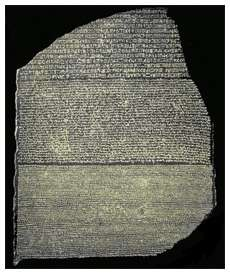
Piatra Rosetta (CREDIT - GREATARCHAEOLOGY.COM)
Un alt exemplu al curiozității științifice europene este descifrarea hieroglifelor egiptene. Ultima persoană care era capabilă să înțeleagă hieroglifele a murit probabil cândva la începutul primului mileniu d.Hr., când Egiptul a fost condus de Imperiul Roman. De atunci încoace, locuitorii Egiptului au văzut frecvent scrieri hieroglifice pe monumente, ruine antice și vase sparte, dar nu aveau niciunul vreo idee cum să înțeleagă scrierile ciudate. Din câte știm, s-a încercat foarte puțin să se facă acest lucru. Când arabii au cucerit Egiptul în secolul al VII-lea, nu au încercat să
descifreze hieroglifele pentru a studia istoria antică a Egiptului. În mod similar, atunci când Hyksos a cucerit Egiptul în secolul al 13-lea, sau când turcii otomani au cucerit Egiptul în secolul al 16-lea, niciunul nu a făcut vreo încercare serioasă de a le descifra. Hieroglifele au fost în cele din urmă descifrate doar după ce europenii au cucerit Egiptul. În 1798, Napoleon a invadat Egiptul și când soldații săi au construit fortul Julien într-un loc numit Rozetta, soldați francezi au săpat pentru a ridica fortul și au descoperit o piatră cu trei inscripții pe ea, una în limba greacă antică, una în scris demotic, și una în hieroglife. Armata de invazie a lui Napoleon, după modelul cunoscut, era însoțită de oameni de știință. Napoleon a dus cu el 160 de oameni de știință din discipline variate pentru a studia Egiptul. Când soldații au descoperit această piatră, ea a ajuns repede sub atenția oamenilor de știință.
LEON COGNIET Jean-François Champollion
(CREDIT - Wikimedia)
Ei au recunoscut imediat importanța crucială a pietrei ca fiind cheia probabilă pentru descifrarea scrierii pierdute a Egiptului antic. Aveau trei inscripții, unul care se putea citi cu ușurință în greacă veche, și, presupunând că textul era același, au putut folosi greaca pentru a înțelege scrierea egiptenilor antici, hieroglifele. Doi ani mai târziu, în 1801, armata franceză din Egipt a fost însă învinsă de britanici și ca parte a termenilor de predare francezii au trebuit să renunțe la Piatra Rosetta în favoarea britanicilor care au recunoscut imediat importanța ei. Chiar și soldații din armata britanică și-au dat seama de importanța
Pagina 242
acestei pietre pentru știință așa le-au cerut-o francezilor și au adus-o într-un muzeu britanic unde poate fi văzută și astăzi. Britanicii au permis cercetătorilor din întreaga Europa, nu doar celor din Marea Britanie, să încerce să descifreze piatra Rosetta. După
20 de ani de încercări, într-un ironie a sorții, un savant francez numit Champollion a reușit în cele din urmă să descifreze o parte din hieroglifele de pe piatra Rosetta. A fost descoperirea crucială care a permis oamenilor de știință să înțeleagă nenumarate alte inscripții egiptene și să exploreze în detaliu lumea uitată a Egiptului antic.
Ceea ce știm astăzi, nu numai despre istoria antică a Egiptului, dar și despre istoria antică a întregii
lumi, animale și plante, spațiul cosmic, structura atomului, toate se datorează contribuțiilor imperiilor
europene. Imperiile nu au susținut orice fel de cercetări, ci în principal proiectele științifice care
credeau că le vor fi de folos chiar dacă nu inventau tehnologii noi. Au sprijinit de asemenea științe
ce permiteau europenilor să înțeleagă mai bine teritoriile cucerite sau să câștige sprijin ideologic.
Trebuie subliniată tendința spre proiectele științifice care aduceau sprijin ideologic. Se poate observa,
de exemplu, sprijinul pe care imperiile europene l-au dat în studiul istoriei, arheologiei și biologiei.
Nu este deloc o coincidență faptul că aceste domenii ale științei, istorie, arheologie și biologie care
s-au bucurat de mult suport de la imperiile europene au dezvoltat teorii istorice și biologice care au
dat legitimitate imperiilor europene și controlului european asupra lumii.
" O demonstrație științifică din 1868 a faptului că Negrii se deosebesc de caucazieni la fel de mult ca de cimpanzei. Josiah Nott a fost un poligenist, era convins că "rasele umane" au fost întotdeauna separate. (WIKIMEDIA CREDIT)
În secolul 19 și începutul secolului 20, istorici și arheologi au afirmat că cele mai multe dintre marile
realizări ale omenirii s-au datorat eforturilor rasei albe a europenilor. Biologi, în același timp, au
susținut că rasa albă era în conformitate cu aceste studii, biologic superioară tuturor celorlalte rase.
Conform acestor teorii științifice foarte populare în secolul 19 și începutul secolului 20, europenii
au
dreptul și chiar datoria de a cuceri și conduce lumea. Istorici și biologi au oferit sprijin imperiilor
în primul rând pentru că imperiile îi finanțau, dar și pentru că oamenii de știință le vedeau ca pe niște
motoare ale progresului, ca o metodă de îmbunătățire a lumii. Oamenii de știință credeau cu adevărat
că imperiile europene au dus lumina rațiunii, a științei și a progresului în regiunile
întunecate ale lumii, cum ar fi Africa sau India. Ei susțineau că imperiile au adus
medicamente noi, căi de transport care funcționează cum erau căile ferate, idei noi,
Pagina 243
educație și știință oamenilor primitivi din Africa, India și Australia. Acesta a fost motivul pentru care
imperiile au fost bune și ar trebui sprijinite.
Realitatea a fost foarte adesea departe de aceste fantezii. Imperiile europene au adus cu ele mult mai
mult război, foamete și exploatare rasială decât medicamente, drumuri sau școli. De exemplu, în India,
în 1764 britanicii au cucerit Bengalul, cea mai bogată provincie indiană. Noii conducători britanici
erau avizi după îmbogățire, așa că au dus o politică economică dezastruoasă. În foarte puține ani,
acest lucru a dus la izbucnirea marii
foamete din Bengal care a început în 1769, la cinci ani după ce britanicii au preluat controlul.
Ajunsă la proporții catastrofale în 1770, a mai durat până în 1773. Aproximativ zece milioane de bengalezi,
o treime din populația provinciei, au murit pe parcursul a doar patru ani în această nenorocire. Aceasta
nu i-a împiedicat pe britanici și pe oamenii de știință britanici să spună că ei au adus progres în Bengal
și India. Pe de altă parte, nu trebuie nici să sărim în extrema cealaltă și să spunem că discuția despre
progres este un nonsens și că imperiile europene nu au adus nimic de valoare. În multe locuri, imperiile
europene au oferit o sănătate mai bună și au asigurat condiții economice mai bune, precum și o mai bună
protecție față de violența locală. Adevărul este că
problema imperialismului european este foarte complicată. Imperiile europene au fost atât de puternice
și au controlat teritorii imense. Au făcut atât de multe lucruri diferite care oferă o mulțime de dovezi
pentru tot ceea ce vrem să spunem despre ele. Dacă dorim să susținem că imperiile europene au adus moarte
și nedreptate putem găsi ușor orice număr de exemple pentru a susține acest punct de vedere. Dacă pe
de altă parte, dorim să susținem că, de fapt, imperiile europene au îmbunătățit într-adevăr viața populațiilor
supuse, prin aducerea de medicamente și tehnologii noi și așa mai departe, putem găsi o mulțime de exemple
pentru a susține acest punct de vedere.
Sir Clive, întâlnirea cu MIR JAFAR după bătălia de la Plassey - FRANCIS Hayman (CREDIT - Wikimedia)
Datorită alianței cu știința, imperiile europene au câștigat atât de multă putere care a dus la rândul ei
la atât de multe schimbări încât acestea pur și simplu nu pot fi etichetate ca bune sau rele. Imperiile
europene, în alianță cu știință, au creat lumea așa cum o știm noi astăzi, inclusiv ideologiile pe care
le folosim pentru a le judeca. Este foarte
greu ajungem la o concluzie clară dacă au fost bune sau rele.
În modul acesta deci, știința și imperiile s-au ajutat reciproc. Fără contribuția metodelor și cunoștințelor
științifice, este greu de crezut că europenii ar fi cucerit lumea. Cuceritorii au întors la rândul lor
favorul prin oferirea de informații și protecție oamenilor de știință, prin sprijinirea de proiecte ciudate
și fascinante și prin răspândirea modului științific de gândire peste tot în lume. Este foarte îndoielnic
că fără sprijinul imperial știința modernă ar fi progresat foarte mult. Există foarte puține discipline
științifice care nu și-au început
viața ca agenți pentru proiecte imperiale și nu datorează, chiar și în zilele noastre, multe
Pagina 244
din descoperirile și colecțiile lor ajutorului generos al ofițerilor și căpeteniilor navale și a
guvernatorilor imperiali.
Povestea nu se termină aici. Știința a fost sprijinită și de alte instituții, în plus față de imperiile
europene, iar imperiile au crescut și înflorit datorită multor altor factori decât doar știința. Așa
cum s-a menționat deja de mai multe ori, în spatele ascensiunii meteorice atât a științei moderne cât
și a imperiilor europene există o anumită forță pe care trebuie să o luăm în considerare,
capitalismul. Capitalismul a fost cel care a asigurat mijloacele financiare vitale atât pentru știință
cât și pentru construirea imperiilor. Fără sprijin financiar, Columb nu ar fi ajuns în America, James
Cook nu ar fi ajuns în
Australia și Neil Armstrong nu ar fi ajuns pe Lună.
Lecția XIII: Crezul capitalist
Legătura strânsă între știință și imperialism a fost doar o latură dintr-un complex de relații. Al treilea pion principal a dezvoltării societăților umane a fost capitalismul, care a finanțat atât știința cât și imperiile, și care a condus la o creștere fără precedent a economiei mondiale. Cum functionează o economie capitalistă ? Cum este ea diferită de economiile tradiționale? Este capitalismul un fenomen natural sau un soi de religie?
În această lecție dr Harari descrie creșterea economică capitaliste și explică legătura strânsă atât cu știința
modernă cât
și cu imperiile europene.
Ce este Economia?
Economia este adesea văzută ca un subiect de o deosebită complexitate. Înțelegerea istoriei economice
moderne, legată de
creșterea economică și a sistemului capitalist este de fapt destul de ușor de înțeles. Cuvântul cheie
este "creștere”. Caracteristica unică și cea mai importantă a economiei capitaliste moderne este
faptul că aceasta este într-o creștere permanentă. În fiecare an, producem mai mult decât anul
trecut, avem mai multe bunuri și bani și așa mai departe. În 1500, producția globală de
bunuri și servicii din întreaga lume se estimează că era de aproximativ 250 miliarde de dolari în bani
de astăzi (250,000,000,000$). Astăzi oscilează în jurul a 60 trilioane de dolari (60,000,000,000,000$).
Mai important, în 1500, producția pe cap de locuitor anuală, producția unei singure persoane, era în
medie de 550 dolari pe an. Astăzi, în medie, fiecare bărbat, femeie și copil de pe pământ produce 8.800
dolari.

Pentru a înțelege modul în care economia modernă poate crește într-un astfel de ritm amețitor, să începem
cu un
exemplu simplu.
Dl Popescu vrea să deschidă o afacere nouă, brutărie și produse de panificație. El nu are bani așa că
se duce la bancă și cere un împrumut. Banca are bani pentru că oamenii depun câștigurile lor la bancă.
Pagina 246
Un constructor întreprinzător, care tocmai a terminat de construit un alt restaurant italian, a câștigat
1 milion dolari și i-a depus în bancă. Banca are în prezent un milion de dolari.
Dl Popescu prezintă planul său de afaceri bancherului, explicând ce vrea să facă și cât de mulți bani
va face. Bancherul este convins și îi acordă un împrumut dl Popescu de $1 milion.
Dl Popescu angajeaza același constructor mare pentru a construi brutăria. El platește acestuia 1 milion
de dolari și depozitează acești bani în
contul bancar al acestui
a
.
Contractantul are acum 2 milioane dolari în contul lui bancar, 1 milion de dolari de la
restaurantul italian și un milion dolari de la domnul Popescu pentru brutărie.
În banca există doar 1 milion de dolari, pentru că milionul de dolari anterior banca i l-a împrumutat
domnului Popescu și acesta este milionul de dolari pe care acesta l-a dat constructorului.
Situația se complică.
La două luni de la începerea lucrărilor, constructorul îi spune domnului Popescu că există probleme și cheltuieli
neprevăzute. Costul construcției nu este 1.000.000 dolari, este acum 2 milioane dolari.
Dl Smith merge înapoi la bancă și explică ce s-a întâmplat. Din fericire,
banca are încredere în el și îi dă un alt milion pe care el îl transferă constructorului. Contractantul
are acum 3,000,000 dolari în contul său.
În banca este încă doar 1 milion dolari, același milion de dolari care a fost acolo tot
timpul.
Potrivit legislației în vigoare a băncilor americane , banca poate repeta acest ciclu de șapte ori. Ea poate împrumuta domnului Popescu 1,000,000 dolari de șapte ori, astfel încât în cele din urmă, contractantul va avea 10 milioane dolari în contul său, iar banca va avea doar un milion de dolari în
seiful ei.
Legile bancare în vigoare astăzi permit băncilor să împrumute 10 dolari pentru fiecare dolar pe care
îl dețin. De unde vin ceilalți 9 dolari vom încerca să înțelegem în această lecție. Este important să
înțelegem că mai mult de
90% din banii din toate conturile bancare astăzi în lume nu sunt acoperiți de nimic, nu este nimic acolo.
Dacă toți titularii de cont de la o bancă ar vrea să
Pagina 247
aibă toți banii din cont, banca s-ar prăbuși imediat, pentru că nici una nu deține toți banii. Același
lucru este valabil pentru Barclays,
Deutsche Bank, Citibank, Lloyds, precum și toate celelalte bănci din lume. Nici una dintre ele
nu deține toți banii care apar în conturile bancare. Acest lucru poate suna ca o fraudă gigantică, dar
dacă acest lucru este fraudă, atunci
întreaga economie capitalistă modernă este o fraudă. Unii oameni spun că este, dar ea a funcționat
în mod uimitor de sute de ani. Nu este o înșelăciune, ci un tribut abilităților uimitoare ale imaginației
umane. Mecanismul care permite băncilor și întregii economii capitaliste să supraviețuiască și să se
dezvolte este
încrederea noastră în viitor.
În exemplul de mai sus al brutăriei, viitoarea brutărie acoperă diferența dintre extrasul de cont al
contractantului, care arată 3.000.000 dolari și banii efectivi din bancă, care sunt doar 1 milion dolari.
Banca a împrumutat banii care lipseau, cu încrederea că într-o zi, brutăria va fi construită și va fi
profitabilă. Brutăria nu a copt însă nici o pâine sau covrig încă.
Dl Popescu și bancherul cred că într-un an de acum, brutăria va vinde mii de pâini, prăjituri și fursecuri
și va face o mulțime de bani. În acest viitor imaginar, domnul Popescu va fi capabil să ramburseze împrumutul,
împreună cu o dobândă. Banca va putea apoi să acopere toți banii din contul constructorului dacă el o
cere. Întreaga economie este bazată pe încrederea noastră într-un viitor imaginar. Încrederea pe care
tu și noi toți ceilalți o avem, încrederea bancherui într-o brutărie care poate exista peste 1 an, încrederea
constructorului în banca sa. El are încredere că, în viitor, banca îi va da înapoi banii, plus dobânda.
Economia capitalistă
Încrederea în viitor este motorul economiei capitaliste. E și motivul pentru care ea crește atât de rapid. Secretul, magia capitalismului, este faptul că finanțează cheltuielile actuale cu bani care nu au acoperire în prezent și doar pot avea o acoperire în viitor. Pentru cea mai mare a istoriei, economia a fost înghețată, abia a crescut. A fost foarte greu să se finanțeze afaceri noi pentru că oamenii nu aveau încredere în viitor. În Evul Mediu, înaintea apariției sistemului capitalist, pentru a construi o brutărie trebuia să fie plătit un constructor, trebuiau cumpărate cuptoare, vase, tigăi, cuțite, linguri și orice altceva era nevoie. Odată ce brutăria deschidea era posibil să fi adus mulțime de bani, dar nu se putea construi brutăria în primul rând dacă lipseau banii. A fost capcana care a înghețat economia umană vreme de secole și milenii. Fără o brutărie, nu se pot face prăjituri. Fără prăjituri, nu se pot face bani. Fără bani, nu se poate plăti constructorul, și fără constructor nu există nici o brutărie. Omenirea a fost prinsă într-un cerc vicios vreme de mii de ani și creșterea economică a fost lentă și limitată. A fost foarte greu să se înceapă afaceri noi sau să se extindă afacerile existente.
Calea de ieșire din capcană a fost descoperită în epoca modernă, cu apariția unui nou sistem, sistemul capitalist bazat pe credit. Într-un sistem capitalist, oamenii sunt de acord Pagina 248
să-și imagineze bunuri viitoare, bunuri care nu există deloc în prezent, pe baza unui tip special de bani numit credit. Într-un sistem capitalist, pentru a deschide o brutărie trebuie mers la bancă și cerut un credit. Dacă există un plan de afaceri solid, banca este convinsă și va acorda un credit, va împrumuta niște bani. Când în cele din urmă afacerea va începe să fie profitabilă, se va putea rambursa împrumutul la banca, plus dobânda.
Creditul
(WIKIMEDIA CREDIT)
Creditul ne permite să construim în prezent în contul viitorului, economia se dezvoltă astfel rapid. Creditul
se bazează pe încrederea în viitor și banii, în general, se bazează pe încredere. Înaintea epocii moderne,
banii se bazau pe încredere în lucrurile existente. Oamenii aveau încredere în puterea regelui și, prin
urmare, în moneda sa.
Creditul este mult mai sofisticat decât orice formă de bani. Creditul este o formă monetară bazată pe
încrederea în viitor, în lucruri care nu există încă în prezent, dar pot exista într-o bună zi. De mii
de ani, oamenii și-au împrumutat unul altuia bani. Avem dovezi de împrumuturi din Sumerul antic, de acum
5000 de ani. Problema în epocile anterioare nu era faptul că nimeni nu-și putea imagina ce este creditul,
ci faptul că oamenii nu vroiau să se împovăreze cu prea mult credit, pentru că nu aveau încredere
că viitorul va fi mai bun decât prezentul. Așa cum am văzut în
lecț i a despre r e vol uț ia
șt iinț if ică
,
oamenii din societățile tradiționale nu credeau în progres. Ei erau convinși că
lucrurile au stat mai bine în trecut, iar viitorul va fi mai rău decât prezentul, sau în cel mai bun
caz va fi la fel de bun ca prezentul. În termeni economici, oamenii credeau că valoarea totală a averii
din lume este limitată sau stabilă, dacă nu în scădere.
Prin urmare, oamenii nu mizau pe presupunerea că ei personal, sau regatul lor, sau întreaga lume ar putea
fi mai bogată în 10 ani de acum. Un oraș putea înflori, dar numai dacă un alt oraș sărăcea. Dr. Harari
compară economia mondială cu o
plăcinta de o dimensiune fixă, și chiar dacă ea putea fi tăiată în moduri diferite, nu ar fi devenit
niciodată mai mare. Tocmai de aceea, multe culturi au tras concluzia că a avea o mulțime de bani și a
fi bogat
este un păcat, este ceva rău. Isus, în Noul Testament a spus: “mai lesne este cămilei să treacă prin
urechile acului, decât bogatului să intre în Împărăția lui Dumnezeu”.
Mulți oameni încă nu înțeleg cu adevărat cum funcționează capitalismul, ei încă mai cred că plăcinta
economică este statică. Dacă ea rămâne la aceleași dimensiuni, atunci într- adevăr nu ne putem îmbogăți
decât jefuind alte persoane. Acest lucru înseamnă, de asemenea, că există puține motive pentru ca împrumuturile
să înflorească. Creditul este
Pagina 249
de fapt diferența dintre dimensiunea plăcintei economice actuale și dimensiunea plăcintei economice de
mâine. Dacă placinta ar rămâne mereu aceeași, de ce ar mai exista împrumuturile? De ce ai mai presupune
că oricine se îndatorează față de tine va mai fi în măsură să ramburseze datoria în cazul în care economia
nu crește? De aceea, în lumea premodernă, pre-capitalistă a fost foarte greu să se a obțină împrumuturi.
Creditele erau de obicei sume mici, pe durată scurtă și cu dobânzi ridicate. A fost astfel foarte dificil
să se demareze afaceri noi. Existând puține afaceri noi, economia nu creștea defel. Încrederea în viitor
s-a limitat iar oamenii nu au vrut să se extindă prin împrumuturi. În acest mod, stagnarea așteptată
s-a confirmat, pentru că oamenii nu credeau că economia va crește și aceasta nu a crescut.
Ruperea cercului vicios
Revoluția științifică și ideea progresului a rupt cercul vicios. Progresul apare atunci când admitem propria
ignoranță și investim resurse în cercetare, astfel lucrurile se pot îmbunătăți. Această idee a fost imediat
tradusă în termeni economici. Oricine credea în progres, descoperiri geografice, invenții tehnologice
și revoluții organizatorice putea crește producția umană, comerțul și bogăția umană. Dacă într-adevăr
crezi în progres atunci întreaga plăcintă economică poate să crească. Toată lumea se poate bucura apoi
simultan de mai multă mâncare, mai multe haine, mai multă bogăție. Faptul că o persoană devine mai bogată
nu este în detrimentul celorlalți. În ultimii 500 ani, ideea de progres a convins oamenii să pună tot
mai multă încredere în viitor. Această încredere a creat condițiile pentru împrumuturi și a adus o creștere
economică reală prin extinderea afacerilor. Creșterea a întărit încrederea în viitor și a deschis calea
pentru mai multe credite.
Schimbarea nu s-a petrecut peste noapte și au existat multe crize economice pe parcurs, dar pe termen
lung,
direcția generală este inconfundabilă
. În zilele noastre există multă încredere în viitor, și este relativ ușor pentru guverne, corporații
și chiar și persoane fizice să obțină credite relativ mari, pe termen lung și cu dobândă scăzută.
Putem lua (în lumea vestică n.t.) credite de milioane de la bănci care trebuie rambursate în 20 sau
30 de ani, cu o dobândă de doar 2% sau 3% pe an. Nu se poate compara cu ce s-a cerut de la oameni
pe parcursul istoriei. Credința în progres și în credit a condus la revoluții etice și politice dramatice.
În 1776, economistul scoțian Adam Smith, a publicat cartea
"Avuția națiunilor", probabil
cea mai importantă carte de economie din toate timpurile
. În cartea sa,
Adam Smith a făcut următorul argument
revoluționar. Smith a spus că, atunci când un cizmar are profituri mai mari decât are nevoie ca să-și
întrețină familia, el va tinde să folosească profiturile sale pentru a angaja mai mulți lucrători, pentru
a-și spori și mai mult profiturile. Cu cât are mai mult profit, cu
atât poate avea mai mulți angajați. Rezultă că o creștere a profiturilor întreprinzătorilor
Pagina 250
privați este baza pentru creșterea bogăției și prosperității colective. Acest lucru nu ne pare o idee prea
originală, pentru că noi toți trăim toți într-o lume capitalistă care ia argumentele lui Adam Smith ca
de la sine înțelese. Auzim variații ale acestei idei în fiecare zi la știri. Cu toate acestea, pretenția
lui Adam Smith că îndemnul egoist de a crește profiturile în sfera privată este baza pentru bogăția și
bunăstarea societății în ansamblu a fost una dintre ideile cele mai revoluționare din istoria omenirii.
A fost revoluționar, nu doar din punct de vedere economic, ci și dintr-o perspectivă morală și
politică.
beneficiază toți.
Ce a afirmat de fapt Adam Smith este că lăcomia este bună și că persoana devine mai bogată nu doar spre
propriul beneficiu ci al întregii lumi. El spune că
egoismul este de fapt altruism. Când ești egoist și urmărirești dorința ta de a face mai mulți bani,
ești de fapt altruist și îi ajuți pe toți oamenii din jurul tău. Smith a învățat oamenii să gândească
economia nu ca un joc fără câștig, ci ca o situație de victorie pe toate fronturile. Smith a negat astfel
opoziția tradițională dintre bogăție și moralitate. Dacă Isus spunea că un bogat nu poate intra în Împărăția
lui Dumnezeu, Smith a spus de fapt că cei mai bogați sunt cei mai buni oameni din societate. Ei sunt
cei care creează împărăția lui Dumnezeu, aici, pe Pământ, și de care
Potrivit capitalismului și lui Adam Smith, a fi bogat înseamnă a fi un om bun. Oamenii devin bogați nu
jefuindu-și vecinii, ci prin creșterea dimensiunilor plăcintei economice globale. Bogații sunt, în consecință,
cei mai utili și mai binevoitori din societate, pentru că ei sunt
cei care învârt roțile progresului spre avantajul tuturor. Cu toate acestea, acest mecanism operează
numai dacă cei bogați utilizează profiturile lor pentru a deschide fabrici și a angaja angajați noi și
nu dacă irosesc banii în activități neproductive. Prin urmare, o parte importantă a economiei capitaliste
moderne a fost apariția unui cod etic nou, un cod de comportament. Conform acestuia, profiturile trebuiesc
reinvestite în producție, care aduce profituri care la rândul lor trebuie reinvestite în producție și
așa mai departe. Investițiile se pot face în mai multe moduri. Se poate deschide o fabrică nouă, se poate
mări o fabrică existentă, sau se pot desfășura activități de cercetare științifică care vor duce la produse
sau la piețe de desfacere noi. Toate investițiile trebuie să se convertească în producție mărită și profituri
mai mari în viitor. În noua religie a capitalismului, prima și cel mai sacră poruncă este că profiturile
producției trebuie să fie
întotdeauna reinvestite în creșterea producției.
Capitalul și bogăția
Pagina 251
Capitalismul face o distincție între capital și bogăție. Capitalul înseamnă bani, bunuri și resurse care
sunt investite în producție. Bogăția pe de altă parte, este ceva care se pierde pe activități neproductive
sau este pur și simplu îngropată la propriu în pământ. Un faraon al Egiptului antic, care-și folosește
resursele pentru construcția unei piramide, de exemplu, nu este deloc productiv, nu produce nimic, deci
nu este un capitalist. Faraonii din Egiptul antic nu erau capitaliști, erau oameni foarte bogați dar
nu erau capitaliști. Un pirat care jefuiește lăzi pline de monede de aur și le îngroapă într-o plajă
din Caraibe este bogat dar nu e capitalist, pentru că el nu a investit banii în ceva productiv. Pe de
altă parte, un lucrător dintr-o fabrică care preia o parte din salariul său lunar și îl investește în
piața de valori este un capitalist. El tratează banii săi
limitați ca pe un capital reinvestit în producție. Nu e un capitalist mare, pentru că are doar puțini
bani, dar are o mentalitate capitalistă.
Ideea că profiturile din producție trebuie reinvestite pentru creșterea producției viitoare sună destul
de banal pentru noi astăzi pentru că astfel funcționează întreaga economie mondială. Ar fi fost însă
o idee foarte ciudată, bizară chiar pentru majoritatea oamenilor din întreaga istorie umană. În perioada
pre-modernă, oamenii credeau că producția este mai mult sau mai puțin constantă, astfel încât nu era
nici un motiv să reinvestească profiturile în producție. A fost și motivul pentru care elita din Evul
Mediu, nobilimea, nu credea în etica investițiilor capitaliste. Ei se încredeau în etica generozității
și a consumului ostentativ. Aveau bani, astfel încât îi cheltuiau pe turnee, banchete, palate, decorațiuni,
organizații de caritate, construcția de biserici. Foarte puțini nobili din Europa medievala au încercat
să reinvestească profiturile lor pentru a crește productivitatea
moșiilor lor.
Pagina 252
ABRIL, LES TRÈS Riches Heures DU DUC DE BERRY (CREDIT -WIKIMEDIA)
În epoca modernă, nobilimea a fost înlocuită treptat cu noua elită, ai căror membri sunt adevărații credincioși
în religia capitalismului. Noile elite capitaliste erau formate nu din duci, regi, regine sau prinți,
ci din manageri, comercianți, industriași și oameni din clasa de mijloc. Acești oameni nu erau mult mai
bogați decât nobilimea medievală, dar mult mai puțin interesați în extravaganță și consumă o parte mult
mai mică din venituri pe activități neproductive. Trebuie doar să te uiți la ei, pentru a realiza diferența.
Nobilii medievali purtau robe foarte colorate de aur, argint, mătase și blană și așa mai departe. Dedicau
o mare parte a timpului la banchete, carnavaluri și turnee. Prin comparație, elita zilelor noastre poartă
uniforme mohorâte pe care le numim costume. Au foarte puțin timp pentru carnavaluri și banchete.
Cei mai mulți bogați de astăzi, milionari și multi- milionari își petrec zilele fugind dintr-o ședință
de afaceri în alta încercând să-și dea seama care este cea mai bună direcție în care să pună capitalul
lor la lucru, și să afle ce s-a întâmplat cu investițiile lor anterioare. Nu e vorba doar de multi-milionari
care
reinvestesc veniturile lor în speranța creșterii productivității. Oamenii obișnuiți gândesc și
Pagina 253
ei foarte asemănător. În multe cartiere destul de modeste, oamenii petrec mult timp discutând la cină unde
să-și investească banii. Chiar și cei care nu au încă bani, își petrec timp gândindu-se unde i-ar putea
investi, într-un apartament, în domeniul imobiliar, într-un schimb de valori, într-o firmă nouă conform
mentalității capitaliste. Nobilimea medievală discuta rareori direcții de investiție pentru banii lor.
Guvernele încearcă să găsească cele mai bune metode de investiție a veniturilor fiscale, eventual în
afaceri productive, care vor crește veniturile viitoare. Un guvern poate decide să investească în infrastructură,
în construirea unui port pentru a face mai ușor fabricilor să exporte produsele lor. Guvernul speră că
vor putea să impoziteze aceste fabrici și să obțină astfel mai mulți bani pe care vor putea să-i investească
mai mult în infrastructură. Un alt guvern ar putea crede că educația este o investiție mai bună decât
infrastructura. El va investi o mulțime de bani în a oferi cetățenilor o educație foarte bună bazată
pe presupunerea că cetățenii educați vor dezvolta industrii de înaltă tehnologie, care vor plăti impozite
fără a avea nevoie de o infrastructură extinsă.
În zilele noastre, capitalismul nu mai este doar un mod de a gestiona economia și a investi banii. S-a
transformat într-o religie. Include acum un set de norme de compartament, educație, precum și de credințe.
Creșterea economică este binele suprem, aceasta este mantra religiei capitaliste. Totul în lume depinde
de creșterea economică. Chiar daca vrem dreptate, libertate sau fericire, le putem avea numai dacă există
creștere economică. Să punem un capitalist să aducă dreptate sau libertate politică într-un loc ca Zimbabwe
sau Afganistan. Cel mai probabil vom primi o prelegere despre importanța creșterii economice și crearea
unei clase de mijloc prospere în crearea unor instituții democratice stabile și cu privire la necesitatea
de a educa triburile afgane să aprecieze valorile capitaliste ale libertății de afaceri, a muncii din
greu și a încrederii în sine. Noua religie capitalistă a avut o influență decisivă asupra dezvoltării
științei moderne. Cercetarea științifică este finanțată de obicei de guverne sau de întreprinderi private.
Când guvernele sau întreprinderile capitaliste cântăresc dacă să investească bani într-un proiect științific
special, prima întrebare este de obicei dacă acest proiect va permite o creștere a producțiai și profitului,
dacă se va încuraja creșterea economică sau nu. Un proiect care nu contribuie cu nimic la creșterea economică
are foarte puține șanse de a găsi un sponsor.
Știința și capitalismul
Orice istorie a științei moderne care ignoră capitalismul oferă doar o imagine incompletă. Nu se poate înțelege istoria științei dacă nu se ia în considerare capitalismul. Similar, istoria capitalismului este de neînțeles dacă nu se ia știința în considerare, deoarece capitalismul se bazează pe credința în creștere economică
perpetuă, pe ideea că plăcinta va deveni tot timpul mai mare. Această credință neagă aproape tot ce știm
despre univers. Ar fi
de o prostie extremă pentru o societate de lupi să creadă că rezerva de oi va crește la nesfârșit.
Cu toate acestea, economia umană în ultimii 500 de ani a reușit să crească într-adevăr exponențial, datorită
oamenilor de
Pagina 254
știință care au venit periodic cu descoperiri și gadget-uri noi tot la fiecare câțiva ani, descoperiri
cum au fost continentul Americii, motorul cu ardere internă, sau oi create prin inginerie genetică. Băncile
și guvernele tipăresc bani, dar în cele din urmă oamenii de știință suportă cheltuielile.
(CREDIT -NYTIMES.COM)
Din 2008 și de la începutul ultimei crize economice încoace, guvernele și băncile peste tot în lume au fost
ocupate cu tipărirea nebună de bani. De fapt nu au tipărit propriu-zis bani, ci doar au schimbat un fișier
digital, spunând că în locul a 1 trilion de dolari acesta conține de acum 3 trilioane de dolari. 2 trilioane
de dolari (2,000,000,000,000,000$) au apărut astfel din neant și au început să curgă în circuitul economic.
În ultimii ani, guvernele și băncile au creat teribil de mulți bani și la fel de mult credit, pentru
că toată lumea este îngrozită că criza economică care a început în anul 2008 va opri creșterea economiei
și va provoca prăbușirea întregului sistem. Dacă sistemul nu crește, acesta nu stă nemișcat ci se prabușește.
Acesta este motivul care pentru care trilioane de dolari, euro și yeni, au fost infuzați în sistemul
financiar global, pentru a menține creșterea economică. Elementul care permite guvernelor și băncilor
să creeze acești bani este încrederea.
Această încredere este însă erodată; există o limită la cât de mulți dolari noi guvernul american
poate crea fără a eroda încrederea populației, nu numai din
Statele Unite, ci de peste tot în lume.
Pagina 255
(CREDIT -THESLEUTHJOURNAL.COM)
În cele din urmă, ceea ce dă legitimitate la toți acești bani este încrederea noastră în știință. Singurul lucru care poate acoperi aceste trilioane de dolari și să salveze economia de la colaps sunt descoperiri științifice noi. Toată lumea speră că cercetări finanțate în domenii precum biotehnologie sau nanotehnologie vor duce la invenții tehnologice care vor crea piețe de desfacere și produse noi. Profiturile din toate întreprinderile și produsele viitoare este ceea ce va acoperi trilioanele de dolari pe care guvernul și băncile le-au creat în ultimii cinci ani. În cazul în care nu se întâmplă, ne confruntăm cu colaps general, deoarece majoritatea banilor din lume, mai mult de 90% dintre aceștia, nu există nicăieri, se bazează doar pe speranțele noastre pentru viitor. Dacă aceste speranțe nu sunt realizate, nu înseamnă că vom rămâne cu ce deținem acum, ci înseamnă că mai mult de 90% din banii pe care credem ca îi avem vor dispărea pur și simplu. În lipsa unei creșteri, toți banii din conturile bancare, fonduri de pensii, asigurări și așa mai departe nu vor rămâne acolo ci vor dispărea pur și simplu. Acest lucru va duce la colapsul întregului sistem. Din acest motiv capitalismul are legături atât de strânse cu știința.
Capitalismul și Imperiile
RALPH FITCH
(CREDIT BANGLADESHUNLOCKED.BLOGSPOT_
Creditul și capitalismul nu au fost invenții exclusiv europene. La începutul erei moderne China, India și lumea musulmană avea destul de mulți comercianți și bancheri care gândeau de-a lungul liniilor capitaliste. Cu toate acestea, regii din palate și generalii din forturile din Asia au avut tendința de a disprețui comercianții și modul lor de gândire mercantil. Cele mai multe imperii non-europene ale epocii moderne timpurii au finanțat prea puțin activitatea și războaiele prin sistemul de credit, și cel mai mult prin impozitarea supușilor și jefuirea inamicilor. Le păsa puțin de interesele bancherilor și ale investitorilor. În Europa, pe de altă parte, regii și generalii au adoptat treptat modul de gândire capitalist, până când s-au
Pagina 256
dat chiar la o parte și comercianții și bancherii au devenit elita de guvernare în politică și economie.
Cucerirea europeană a lumii a fost finanțată prin credit și nu prin impozitare, și a fost regizată de
capitaliști a căror principală ambiție era să-și maximizeze veniturile returnate de investițiile lor.
Imperiile finanțate de bancheri și investitori au reușit să învingă imperiile construite de regi și nobili
pentru că au avut o bază financiară mai solidă. Este mai bine și mai ușor să se finanțeze un imperiu
prin investiții decât prin impozitare. Nimeni nu vrea să plătească impozite, dar toată lumea este
foarte fericită să investească.
Anglia, Franța, Spania și Țările de Jos au fost țări mai mici decât China, India sau Imperiul Otoman,
dar ele au finanțat extinderea imperiilor nu prin impozitare, cum făceau chinezii, ci prin credit. Cuceritori
europeni au luat împrumuturi de la bănci și de la investitori pentru a cumpăra nave, tunuri și a plăti
soldați. Ei au folosit navele, tunurile și soldații pentru a explora lumea și a cuceri colonii noi. Profiturile
obținute din rutele comerciale create, precum și din noile colonii, le-au permis să ramburseze împrumuturile,
și, prin urmare să construiască un capital de încredere și să primească mai mult credit data viitoare.
Datorită încrederii, împrumuturile pe care le puteau primi europenii au crescut tot mai mult de-a lungul
secolelor, acest mecanism a alimentat creșterea imperiilor.

(CREDIT -BBC.CO.UK/HISTORY)
O altă diferență majoră între imperiile europene și cele chineze sau otomane a fost faptul că imperiile europene
au fost create și conduse nu de state și guverne. Într-o mare măsură, imperiile cum erau cel britanic,
francez, sau olandez au fost create și administrate de către afaceriști privați, sau mai exact de către
societăți cu răspundere limitată. Epoca modernă timpurie a fost
epoca în care societatea cu răspundere limitată a cîștigat putere și a devenit un actor esențial în teatrul
istoriei. Explorarea oceanelor nefamiliare și cucerirea de colonii noi era riscantă așa că puțini oameni
au vrut să-și asume un risc personal. Astfel, europenii au creat societăți cu răspundere limitată pentru
a diviza riscul de a construi un imperiu între mai mulți investitori. Pentru explorarea Oceanului Pacific
sau pentru cucerirea unei colonii în America trebuia creată o companie. Compania vindea acțiuni la bursă
investitorilor și colecta bani de la un număr mare de investitori, fiecare dintre ei riscau doar o mică
parte din capital. Bursa putea finanța campaniile de explorare și cucerire mult mai ușor și mai eficient
decât orice împărăție sau imperiu care-și impozita supușii.
Construirea Imperiilor
Pagina 257
DUTCH BATAVIA ÎN 1681, construit în ceea ce este acum nordul Jakarta. (CREDIT -WIKIMEDIA)
În acest mod, mici națiuni europene ca Anglia sau Olanda au putut construi imperii uriașe, mult mai mari decât cel otoman sau imperiul chinez. Imperiul olandez, de exemplu, a fost construit nu de statul olandez, ci de companii private olandeze. Cea mai cunoscută compania olandeză se numea Vereenigde Oost-Indische Compagnie (Compania Olandeză a Indiei de Est) sau pe scurt
VOC, fondată în 1602. VOC a obținut bani prin vânzarea de acțiuni la bursa din
Amsterdam și folosea banii pentru a construi nave și a le trimite în Asia după bunuri chineze, indiene,
indoneziene, pentru ca mai apoi să le vândă în Europa. Mai târziu, VOC inceput sa foloseasca banii câștigați
pentru a finanța acțiuni militare împotriva concurenților și împotriva piraților care amenințau rutelor
comerciale. În cele din urmă, VOC a finanțat cucerirea militară a Indoneziei. Indonezia este cel mai
mare arhipelag de insule din lume. Are mii și mii de insule, care în secolul al 17-lea au fost conduse
de sute de regate, principate, sultanate și triburi. Când comercianti VOC din Țările de Jos au ajuns
pentru prima dată în Indonezia, în 1603, obiectivele lor au fost la început pur comerciale. Cu toate
astea, pentru a-și asigura interesele comerciale și pentru a maximiza profiturile acționarilor, comercianți
VOC au început să lupte în războaie contra conducătorii locali care le cereau prea mulți bani la negocieri,
precum și împotriva piraților și a concurenților. VOC și-a înarmat navele comerciale cu tunuri; a recrutat
mercenari europeni, japonezi, indieni precum și indonezieni. Aceștia au construit forturi și au dus bătălii,
asedii și campanii. În perioada modernă de la începutul secolului al XVII- lea, era încă acceptat ca
o societate privată să aibă armate și să ducă războaie private. De-a lungul anilor, VOC a cucerit insulă
după insulă, până când în cele din urmă a cucerit aproape întreaga Indonezie. Astfel o companie privata
a condus Indonezia cu milioane de oameni vreme de aproape 200 de ani. Abia în 1800 statul olandez și-a
asumat statutul de control al Indoneziei și a făcut-o colonie națională a statului olandez, nu o colonie
a unei companii private.
Harta Râului Hudson 1635
În zilele noastre, unii oameni sunt alarmați când companiile acumulează prea multă putere. Istoria modernă
timpurie arată cât de departe se poate merge. Companiile de atunci dețineau în fapt armate, luptau războaie
și construiau imperii. În timp ce VOC
funcționa în Oceanul Indian, o altă companie olandeză,
Compania olandeză a Indiilor de
Vest opera în Oceanul Atlantic. Pentru a controla comerțul pe râul Hudson, în America de Nord, aceasta companie olandeză a construit o așezare la gura de vărsare a râului Hudson și a numit-o New Amsterdam. Colonia New Amsterdam a fost amenințată de indieni și a fost atacată în mod repetat de rivalii comerciali ai olandezilor, britanicii. În cele din urmă, în 1664, britanicii au reușit să captureze New Amsterdam. Ei au schimbat numele din New Amsterdam în New York. Rămășițele construcțiilor pe care societatea olandeză le-a ridicat pentru a apăra colonia împotriva britanicilor și a indienilor, sunt Pagina 258
astăzi pavate pe cea mai faimoasă stradă din lume, numită
Wall Street (Strada zidului
n.t.), după zidul care a apărat colonia companiei olandeze împotriva dușmanilor.
"Istoria Virginiei, NEW-England, și Insulele Summer", de căpitanul. John Smith
Britanicii în mare măsură și-au construit imperiul similar, cu ajutorul companiilor private care au strâns bani la Bursa din Londra. Primele așezări britanice din America de Nord au fost stabilite în secolul al 17-lea de către companii cum ar fi Societatea Londra, Societatea Plymouth , Societatea Dorchester și Compania Massachusetts. Nu de către stat. Chiar și cucerirea britanică a Indiei a fost de fapt opera unei companii private, nu activitatea statului britanic. Societatea a fost celebra British East India Company (Compania britanică a Indiei de Est n.t.). Din sediul central din strada Leadenhall în Londra, East India Company a condus un imperiu indian uriaș vreme de aproximativ un secol. A menținut o forță militară foarte mare de aproximativ 350.000 de soldați. Armata
acestei companii era cu mult mai mare decât armata de stat britanică. Numai în 1858 coroana britanică a naționalizat
India, împreună cu armata privată a companiei, și a făcut India și armata indiană o posesie a coroanei
britanice.
Naționalizarea Indoneziei către statul olandez în 1800 și a Indiei de către coroanei britanice au cimentat
relația strânsă între capitalism și imperii însă nu au încheiat-o. În secolul al 19-lea, legătura dintre
capitalism și imperiile europene a crescut tot mai mult. Companiile private nu au mai avut nevoie să
stabilească și să guverneze coloniile direct, și au permis guvernelor să naționalizeze coloniile, aceasta
pentru că în secolul al 19-lea managerii și acționarii societăților controlau deja guvernele de la Londra,
Amsterdam și Paris. Odată ce au putut controla statul, au permis acestuia să facă munca grea în locul
lor. Karl Marx a declarat celebru că guvernele occidentale, cel puțin în secolul al 19-lea, erau de fapt
sindicatele capitaliștilor. Așa cum cizmarii au un sindicat de cizmari, sau docherii au un sindicat
al docherilor, tot așa capitaliștii au avut, de asemenea, un
sindicat, guvernul. Guvernul veghea asupra intereselor marilor capitaliști.
Pagina 259
Al Doilea Război al Opiului Guangzhou (CREDIT - Wikimedia)
Cel mai cunoscut exemplu pentru modul în care guvernele secolului al 19-lea erau controlate de către capitaliști este Războiul Opiului , început între Marea Britanie și China la începutul anilor 1840. În prima jumătate a secolului al 19-lea, Compania Britanică a Indiei de Est precum și alți oameni de afaceri britanici au făcut averi uriașe exportând droguri, în special opiu, în China. În această perioadă, milioane de chinezi au devenit dependenți de opiu, acest fapt a rănit țara profund, atât economic cât și social. În 1830, guvernul chinez a scos traficul drogurilor în afara legii. Cu toate acestea, comercianții de droguri britanici, cum erau Compania britanică a Indiei de Est, au ignorat pur și simplu legea chineză și au continuat să aducă opiu, precum și alte droguri în China. Autoritatile chineze au început să confiște și să distrugă transporturile de droguri. Cartelurile de droguri aveau legături foarte strânse cu guvernul britanic. Membri ai parlamentului și miniștri din Londra aveau acțiuni sau erau manageri ai companiilor de droguri. Ei au presat guvernul să ia măsuri împotriva chinezilor. În 1840, Marea Britanie a declarat război Chinei, în numele comerțului liber . Britanicii au susținut că chinezii au întrerupt comerțul liber al traficului de droguri. Au declarat război Chinei pentru a proteja comerțul
liber și au invadat China. Britanicii au castigat foarte ușor o victorie decisivă.
Pagina 260
secolul 18 irlandezi regali la Amoy
Chinezii erau încrezători în forțele proprii, dar nu au avut nici o șansă în fața armelor miraculoase britanice.
Britanicii, la mijlocul secolului al 19-lea, aveau artilerie grea, vapoare, rachete, puști, iar chinezii
nu dețineau vreun armament similar și au fost înfrânți rapid. În tratatul de pace care a pus capăt războiului
opiului, China a fost de acord nu numai să permită activitatea comercianților de droguri britanici, precum
și să compenseze traficanții de droguri pentru pagubele provocate înainte de război de către poliția
din China. Britanicii de asemenea au cerut și au primit controlul complet asupra portului din Hong Kong,
pe care l-au folosit ca o bază sigură din care să vândă în continuare opiu și alte mărfuri în China.
La sfârșitul secolului al 19-lea, se estimează că aproximativ 10% din populația Chinei erau dependenți
de opiu. 14 milioane de oameni!
În zilele noastre, legătura între capitaliști, împrumuturi, politică și guvern este încă vizibilă. Succesul
unei țări depinde mult mai mult de ratingul de țară decat de resursele ei naturale. Ratingul de țară
indică probabilitatea ca o țară să-și poată plăti datoriile. În plus față de datele economice, atunci
când se calculează ratingul de țară se ia în considerare situația politică, factorii culturali, sociali
și așa mai departe.
Harta Lumii după Rating-ul de țară Standard & Poor rating suveran
O țară care are ca resursă naturală petrolul, dar are un guvern despotic și o criminalitate ridicată, precum
și un sistem judiciar corupt, va primi de obicei,
un rating de țară foarte scăzut. Pentru că are un rating de credit scăzut, va fi greu să împrumute bani
și dacă o va face, dobânda va fi ridicată. Deoarece nu poate împrumuta bani cu ușurință, țara nu va putea
să dezvolte exploatări de petrol și va rămâne cel mai probabil o țară săracă,
chiar dacă este bogată în resurse, deoarece are rating de țară scăzut. Pe de altă parte, o țară care
nu are resurse naturale, dar se bucură de pace, un sistem judiciar bun și un guvern liber, va primi probabil
un rating de țară ridicat. Va fi deci capabilă să obțină ușor împrumuturi, pe care le poate folosi pentru
a dezvolta un sistem de învățământ bun și o industrie de înaltă tehnologie înfloritoare. Având doar un
rating de
Pagina 261
țară bun, o țară săracă în resurse poate deveni bogată și prosperă. Multe dintre țările
cele mai bogate din lume nu au multe resurse naturale.
NYSE - Bursa de Valori din
New York
Deoarece capitalul și politica se influențează reciproc într-o asemenea măsură, relația lor este un subiect
de dezbateri aprinse atât în rândul economiștilor, sau a politicienilor dar și a publicului larg. Una
dintre principalele probleme de astăzi din politică este cum să se gestioneze relația dintre sistemul
politic și sistemul capitalist de
credite, bănci și bursa de valori. Oamenii care se consideră capitaliști sunt convinși că libertatea
capitalului de a influența politica este esențială, și nu invers. Politica nu ar trebui să intervină
în lumea băncilor, a piețelor de capital, de credit și așa mai departe. Acești oameni care cred în libertatea
pieței, susțin de obicei că atunci când interesele politice influențează prea mult economia, rezultatul
sunt decizii economice nechibzuite și creștere economică lentă. De exemplu, guvernele tind să crească
impozitarea industrilor și a capitaliștilor pentru a folosi sumele obținute pentru a da ajutoare de șomaj
pentru cei săraci. Un argument populist, spun afaceriștii care cred în libertatea piețelor, care susțin
că era mult mai bine dacă guvernul scădea impozitele din industrie. Apoi industriașii puteau folosi banii
pentru a deschide noi fabrici și a-i angaja pe șomeri, mult mai productiv decât să le ofere ajutoare
de șomaj. În acestă direcție, cea mai înțeleaptă politică economică este de a ține politica înafara economiei,
pentru a reduce fiscalitatea și regulamentelor birocratice la un nivel minim și pentru a permite pieței
libere să-și urmeze cursul. Se susține astfel că, atunci când investitorii privați nu sunt influențați
de considerente politice, ei vor ști mereu să-și
investească banii în direcția în care pot obține cel mai mare profit. Acest lucru asigură cea mai rapidă
creștere economică posibilă de care vor beneficia toți, investitorii, bogații, dar și muncitorii și guvernul,
chiar și șomerii.
Rezultatele capitalismului
Credincioșii în capitalism și piețe libere recomandă guvernelor să se implice cât mai puțin posibil, pentru a lăsa piețele să ia de la sine cele mai favorabile decizii. Doctrina care idealizează libertatea piețelor este forma cea mai comună și mai
Pagina 262
importantă a religiei capitaliste de astăzi. Entuziaștii libertății piețelor critică aproape orice fac guvernele,
indiferent dacă sunt războaie în afară sau programe de ajutor social în interior. Ei repetă mereu mantra
după care guvernul trebuie să intervină cât mai puțin posibil și piețele se vor reglementa de la sine.
Acest punct de vedere suferă de mai multe probleme foarte grave, dus la extrem a cauzat calamități teribile
de-a lungul ultimelor secole.
Linia de gândire este adesea numită credința în libertatea pieței, piața de capital ar trebui să fie
liberă de influențele politice. Logica ne spune că piețele înțeleg mult mai bine unde să investească
banii decât guvernele. În forma sa extremă, credința în piața liberă este la fel de naivă ca și credința
în Moș Crăciun. Nu există o piață complet liberă de intervenții politice, pentru că cea mai importantă
resursă economică este încrederea în viitor. Această resursă este amenințată în mod constant de hoți
și șarlatani.
Prin ele însele, piețele nu oferă protecție împotriva fraudei, furtului și violenței. Este treaba sistemului
politic să asigure continuitatea încrederii, să reglementeze piețele și să-i pedepsească pe cei care
încalcă reglementările. Când guvernul nu reușește să reglementeze piețele în mod corespunzător, încrederea
în mecanismul piețelor se pierde și duce la prăbușirea împrumuturilor și la depresiune economică. Există
totuși, un motiv și mai important care explică de ce e periculos să dea piețelor libertate absolută.
În cazul în care piețele nu sunt reglementate, există pericolul real ca jucători puternici de pe piață
să exploateze și să oprime pentru a-și maximiza profiturile. De exemplu, proprietarul fabricii de pantofi
poate încerca să crească profiturile prin scăderea plății muncitorilor și în același timp prin creșterea
orelor de lucru. Răspunsul capitalist standard la această critică este că o piață cu adevărat liberă
ar proteja muncitorii, ar proteja chiar și pe cei slabi.
Dacă un proprietar de fabrică lacom oferă prea puțin muncitorilor săi și le cere prea mult, cei mai mulți muncitori l-ar abandona și și-ar căuta de lucru pentru altcineva, pentru concurență de exemplu. Patronul tiran s-ar trezi fără cei mai buni lucrători. El ar trebui să îmbunătățească condițiile pe care le oferă lucrătorului sau ar da faliment. Acest lucru poate suna foarte bine în teorie, în practică nu funcționează întotdeauna.
Într-o piață nesupravegheată, proprietarii de fabrici lacomi pot stabili monopoluri sau pot coopera cu proprietarii
altor fabrici împotriva forței de muncă. Dacă există un monopol de control între toate fabricile de încălțăminte
dintr-o țară, sau dacă toți proprietarii conspiră pentru reducerea simultană a salariilor, atunci muncitorii
nu se mai pot proteja prin
schimbarea locului de muncă.
Pagina 263
Chiar mai rău, patronii lacomi și-ar putea folosi puterea pentru a-i transforma pe muncitori în sclavi. La
sfârșitul Evului Mediu
sclavia era aproape inexistentă în Europa creștină. În perioada modernă timpurie, extinderea capitalismului
european a mers mână în mână cu comerțul de sclavi în Atlantic. Forța necontrolată a pieței și nu regi
tiranici sau ideologii rasiste au fost responsabile pentru sclavie în colonii europene. După cucerirea
Americii, europenii au deschis mine de aur și argint precum și plantații de zahăr, tutun și bumbac. Minele
și plantațiile au devenit pilonul central al producției americane de export. Proprietarii au început
să importe lucrători sclavi din Africa. Din secolul 16 până în secolul al 19-lea, aproximativ zece milioane
de sclavi africani au fost aduși în America. Condițiile de muncă au fost oribile. Cei mai mulți sclavi
au murit în agonie, și multe milioane au murit în timpul războaielor purtate în Africa pentru a captura
sclavi și în timpul călătoriei lungi de pe coasta Africii până pe malul Americii.
inspectarea și vânzarea unui sclav
Comerțul cu sclavi nu era controlat de nici un stat sau guvern. Era un proiect pur economic, organizat și
finanțat de piața liberă după legea cererii și a ofertei. Companii private care comercializau sclavi
aveau acțiuni la bursele de valori din Europa din Londra, Amsterdam și Paris. În căutarea unei investiții
bune, clasa de mijloc europeană cumpăra acțiuni la companiile de sclavi. Cu acești bani, companiile cumpărau
nave, angajau marinari și soldați și mergeau în Africa. Cumpărau acolo sclavi și îi transportau în America.
Oamenii investeau bani în companiile de sclavi pur și simplu pentru că era o
afacere bună. În secolul 18, profitul anual la acțiunile acestor societăți era de aproximativ
Pagina 264
6%. Orice consultant modern ar recunoaște rapid afacerea ca fiind extrem de profitabilă. Astăzi oamenii sunt
fericiți dacă primesc o dobândă pe investiție de 3 sau 4% anual.
Aceasta este problema reală a unui sistem capitalist cu piață liberă. Nu se poate garanta că profiturile
sunt câștigate într-un mod echitabil. Dimpotrivă, creșterea profiturilor și a producției îi orbește pe
proprietari care nu mai văd nimic în calea lor. Când creșterea devine binele suprem, și nu este restrânsă
de considerente etice sau politice, poate duce cu ușurință la catastrofă.

(CREDIT - SLAVERYSITE.COM)
Unele religii din istorie, cum ar fi creștinismul sau nazismul au ucis milioane de oameni ca rezultat al
urii. Capitalismul a ucis, de asemenea, milioane de oameni, dar nu prin ură ci
prin indiferență. Comerțul cu sclavi Atlantic nu a rezultat din rasism, din ură față de africani.
Indivizii care cumparau acțiuni, brokerii și bursele care vindeau acțiunile societăților care dețineau
sclavi și managerii companiilor rareori se gândeau la africani. Ei erau interesați doar de profit. Tot
așa, proprietarii plantațiilor de zahăr, bumbac și tutun din America nu urau africanii. Mulți dintre
ei trăiau departe de plantație, și singurul lucru pe care vroiau să-l știe era câți bani au făcut la
sfârșitul anului.
Nu-i interesa nimic altceva. Este important să ne amintim că comerțul cu sclavi peste Atlantic a
fost, probabil, cea mai mare crimă a capitalismului, dar nu singura greșeală dintr-un ciclu altfel
perfect.
Pagina 265
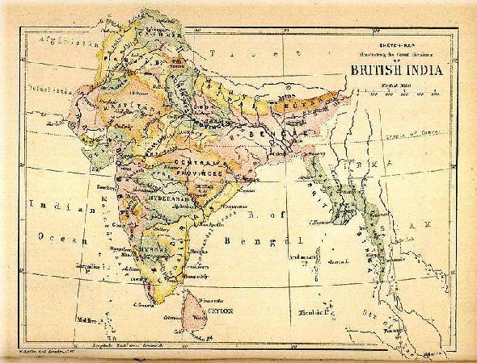
Există multe exemple similare. În cazul marii foamete din Belgal , Compania British East India s-a preocupat mai mult de profituri decât de viața a 10 milioane de bengalezi. Aceasta a dus la catastrofă. Nenumărate alte infracțiuni au fost însoțite de creștere economică modernă în alte părți ale planetei.
Rezultatul final este că, deși placinta economică a continuat să crească fără oprire, profiturile sunt distribuite
într-un mod inegal. Prea mulți țărani și muncitori din Africa, Indonezia și China se întorc astăzi acasă
după o zi grea de lucru în fabrică sau pe câmp cu mai puțină mâncare și mai puțini bani decât strămoșii
lor de acum 500 de ani, chiar dacă economia în ansamblu a crescut exponențial în cele cinci secole. La
fel ca revoluția agricolă,
creșterea economică modernă s-ar putea dovedi a fi o fraudă colosală.
Specia umană și economia globală per ansamblu poate foarte bine să fie în creștere, dar multe persoane
trăiesc în continuare în
foamete și condiții foarte dificile. Avem
aici o critică folosită uzual împotriva
sistemului capitalist.
Justificările capitaliștilor
Capitaliștii răspund la critică în două moduri. În primul rând, se argumentează că ei ar fi creat o lume pe care care nimeni înafara lor nu este capabil să o
Pagina 266
conducă. Singura încercare alternativă serioasă de a gestiona lumea, comunismul, a fost cu mult mai rău în
aproape orice privințe față de capitalism, încât nimeni nu va vrea să încerce ceva diferit. În anul 8000
î.Hr., puteai regreta amarnic revoluția agricolă, dar era deja prea târziu să se renunțe la agricultură.
În mod similar, astăzi s-ar putea să nu ne placă foarte mult capitalismul,
dar nu putem trăi fără el. Cu toate criticile aduse împotriva sa, nimeni astăzi în lume nu are nici
cea mai mică idee cum se poate
altfel conduce întreaga economie a lumii. Al doilea răspuns pe care capitaliștii îl dau criticii
este că avem nevoie doar de puțină răbdare. Paradisul e chiar după colț. Greșeli au fost făcute, cum
ar fi comerțul cu sclavi peste Atlantic sau Marea Foamete Bengaleză, dar ne-am învățat lecția din aceste
greșeli și dacă mai așteptăm numai puțin, placinta economică a lumii va crește din nou pentru toată lumea
și fiecare, în cele din urmă, va a primi o felie mai mare și mai grasă. Împărțirea profiturilor nu va
fi niciodată echitabilă, dar va fi suficient pentru a satisface toți oamenii din lume.
Există într-adevăr indicatoare măsurabile pozitive, cel puțin atunci când folosim criterii pur materiale
cum ar fi speranța de viață, mortalitatea infantilă și numărul mediu de calorii pe care fiecare persoană
din lume îl primește. Standardul de viață al ființei umane în medie pe anul 2013 este semnificativ mai
mare decât nivelul de trai al persoanei medii de acum
100 de ani sau acum 500 de ani, chiar dacă trăiesc mult mai multe persoane. Acesta este cel de-al doilea
răspuns al capitalismului. Doar să permitem plăcintei economice să crească, să continuăm să ne punem
încrederea în creștere și totul va fi bine. Dar automat
marea întrebare este dacă placinta economic poate să crească într-adevăr pe termen nelimitat. Fiecare
plăcintă are nevoie de materii prime și energie. Există mulți profeți ai apocalipsei, care avertizează
că mai devreme sau mai târziu vom epuiza materiile prime și sursele de energie de pe pământ. Ce se va
întâmpla atunci când nu va mai există petrol și cărbune
și așa mai departe pentru a alimenta economia? Răspunsul în lecția următoare.
Lecția XIV - Revoluția industrială
Lecția a patra a cursului Dr. Harari continuă tema generală a revoluției științifice și descrie revoluția
industrială. În ultimii 200 ani, confluența între știință, imperialism și capitalism au produs revoluția
industrială. Omenirea a dobândit pe parcurs resurse energetice enorme care au grăbit producția mult mai
multor lucruri decât înainte, mai repede și mai ieftin. Cum a afectat
această schimbare ecologia globală, viața de zi cu zi
precum și psihologia umană?
Când se termină petrolul
Am văzut că economia modernă crește datorită încrederii noastre în viitor, precum și datorită capitaliștilor
dispuși să reinvestească profiturile obținute din creșterea producției. Aceste două motive nu sunt însă
suficiente. Creșterea economică necesită de asemenea energie si materii prime. Fără ea, economia nu poate
crește. Mulți dintre noi ne întrebăm ce se va întâmpla atunci când sursele energetice și de materii prime
vor fi epuizate.
Este un subiect esențial pentru dezbaterile în rândul publicului larg, precum și între economiști și
oameni de știință. Pericolul ca omenirea să rămână fără sursă de energie și materii prime este de fapt
mai mic decât la prima vedere. Pe parcursul ultimelor două sau trei secole ele au fost într-o continuă
creștere, în loc să scadă după cum ne-am aștepta. Ori de câte ori apărea o lipsă în domeniul energetic
sau a materiilor prime, creșterea economică era amenințată. Investițiilor începeau să curgă în cercetare
științifică și tehnologică pe subiectele relevante. Până în prezent, oamenii de știință și inginerii
au reușit cu sprijin financiar de fiecare dată să rezolve problema și să găsească modalități mai eficiente
de exploatare a resurselor existente, sau tipuri noi de energie și de materii prime.
Dr. Harari ia în considerare ca exemplu industria vehiculelor. În ultimii 300 ani, omenirea a produs
milioane și milioane de vehicule, căruțe, vagoane, trenuri, mașini, motociclete, avioane, nave și navete
spațiale. Ar fi de așteptat ca un astfel de efort prodigios să secătuiască resursele energetice și de
materii prime disponibile pentru producție, dar în realitate exact opusul este adevărat. Întrucât, în
1700, industria vehiculelor globală se baza preponderent pe lemn și fier, ea necesită astăzi multe materiale
complet noi, cum ar fi plastic, cauciuc, aluminiu, titan, necunoscute strămoșii noștri în 1700. În secolul
al
17-lea sau 18, cărucioarele, vagoanele și navele au fost construite în principal cu efortul fizică a
tâmplarilor și a fierarilor. Cea mai mare parte din energia pentru a construi o navă provenea de la oameni
și animale. Astăzi, mașinile produse în serie în fabricile Toyota, Mercedes și Boeing sunt propulsate
de motoare cu combustie internă pe bază de petrol
sau folosesc energie nucleară, surse care nu existau în urmă cu două sau trei secole.
Pagina 268
Revoluția industrială
(CREDIT - Wikimedia)
Nevoilor energetică și de materii prime a crescut în aproape toate domeniile de producție industrială. Această
schimbare în producție se numește
Revoluția Industrială. Cea mai mare schimbare petrecută în timpul Revoluției Industriale nu a fost
descoperirea vreunei surse de energie sau resursă nouă, ci
înțelegerea graduală a oamenilor că noi suntem de fapt înconjurați de cantități enorme aproape nelimitate
de energie și materii prime. Principalula noastră sarcină este de a inventa moduri de a valorifica și
controla tot aceast ocean energetic. Nu energia lipsește, ci modul de a o valorifica. Periodic de-a lungul
ultimelor secole, tot o dată la câteva decenii, oamenii de știință și inginerii au descoperit surse noi
de energie, materii prime noi și noi modalități de valorificare pentru nevoile noastre.
Prima descoperire cu adevarat importantă, care a marcat începutul revoluției industriale, a avut loc în minele de cărbune britanice din secolul 17 si începutul secolului 18. În acele vremuri, populația britanică creștea foarte rapid și păduri întregi au fost tăiate pentru a alimenta economia în creștere și pentru a face loc pentru case, terenuri și sate. Prin urmare, Marea Britanie a început să sufere de o lipsă acută de lemn de foc, atunci când oamenii doreau să se încălzească în casele lor în timpul iernii sau să fiarbă apa și așa mai departe.
(CREDIT Wikipedia)
Britanicii au găsit o soluție. Ei au început să folosească cărbune în schimb, și tot mai multe mine de
cărbune au fost deschise în diferite părți ale Marii Britanii. A apărut însă o problemă. Multe dintre
minele de cărbune erau săpate în soluri inundabile astfel că atunci când ele ajungeau prea adânc, minele
era inundate, astfel că nu se putea ajunge la straturile adânci din minele de cărbune. Pentru a rezolva
această problemă, în jurul anului
1700, inginerii din minele de cărbuni britanice au
inventat
motorul cu aburi, prima mare invenție a
Revoluției Industriale. Există felurite motoare cu abur, dar toate lucrează după același
Pagina 269
principiu. Se arde un combustibil cum ar fi cărbunele, iar căldura rezultată este folosită pentru a fierbe apa. Când fierbe, ea se transformă în abur care se dilată și este folosită pentru a împinge un piston. Pistonul se deplasează împreună cu orice este legat la el. Uimitor la motorul cu aburi este faptul că transformă energia termică în mișcare. Acest lucru este extrem de nenatural și contra-intuitiv. E ușor de înțeles că arderea cărbunelui poate fierbe supă sau poate încălzi o casă. Dar ideea că arderea cărbunelui poate muta ceva este contra-intuitivă, motiv pentru care a fost nevoie de mii de ani pentru ca oamenii să se gândească la asta. Pistonul a fost conectat la o pompă și pompa a extras apa de pe fundul minelor pentru a preveni inundațiile, aceasta fiind de fapt prima utilizare a motorului cu aburi. În deceniile de după invenție, oamenii de afaceri britanici au conectat motorul cu aburi la tot felul de alte lucruri cum ar fi războaie de țesut pentru a face pânză și textile.
Puterea aburului a reprezentat începutul Revoluției Industriale și a transformat imediat Marea Britanie
nu doar în prima națiune industrială din lume, dar, de asemenea, în prima putere economică și politică
a lumii.
Următoarea etapă a venit in 1825 când un inginer britanic a avut o altă idee extraordinară. Dacă pistonul
poate pune în mișcare mașini textile în fabrici, de ce
nu se poate folosi același mecanism pentru a remorca vehicule întregi? Inginerul a legat
motorul cu aburi la un vagon plin cu cărbune și a tractat vagonul de-a lungul unei șine de fier de aproximativ 20 de kilometri lungime, care conecta mina de cărbune de cel mai apropiat port. Aceasta a fost prima locomotivă din istorie . Cinci ani mai târziu, pe 15 septembrie 1830, a fost deschisă prima linie de cale ferată comercială pentru transportul nu numai a cărbunelui, ci și bunuri și persoane. Acesta lega orașul Liverpool de orașul Manchester, în Marea Britanie, două dintre centrele vechi ale Revoluției Industriale. Trenurile dintre orașe erau propulsate de aceeași putere a aburului care a fost utilizată pentru a pompa apă și pentru a opera războaie de țesut textile. Douăzeci de ani mai târziu, în 1850, Marea Britanie avea deja zeci de mii de kilometri de cale ferată care legau toate marile orașe.
E egal cu mc la pătrat
Invenția motorului cu aburi a fost importantă nu numai în sine, ci de asemenea pentru că a rupt o imensă
barieră psihologică. S-a dovedit că prin inventarea mașinii potrivite, se putea folosi orice fel de energie
din lume în scopul dorit. Până la apariția motorului cu aburi, utilizarea energiei din arderea cărbunelui
pentru deplasarea trenurilor era ceva contra-intuitiv pentru gândirea umană. Totuși, odată ce oamenii
au
Pagina 270
trecut acest prag, au început să inventeze tot felul de alte masini care utilizau diferite tipuri de energie. De exemplu, la sfârșitul al 19-lea și începutul secolului 20, fizicienii și- au dat seama că ordine imense de energie sunt stocate la nivel atomic, în conexiunile care țin atomii împreună. Au început imediat să cerceteze cum s-ar putea elibera și valorifica energia atomică pentru a produce electricitate, pentru a propulsa vehicule electrice, dar și pentru a câștiga războaie și a distruge orașe. Doar 40 de ani au trecut între momentul în care Einstein a stabilit că E este egal mc la pătrat, și cel în care primele bombe atomice au șters orașele Hiroshima și Nagasaki din Japonia de pe fața pământului. Factorii ecuației E egal cu mc pătrat, ecuația descoperită de Einstein, cuprinde E care este energie și m care este masă. Înseamnă că o masă de materie poate fi transformată în cantități imense de energie. Este mecanismul bombei atomice, care eliberează energia stocată în materie și o folosește pentru a distruge orașe întregi. Energia atomică poate fi folosită deasemenea în alte scopuri. Astăzi avem centrale nucleare în întreaga lume, care ne oferă energie electrică ieftină.
Petrolul și electricitatea
O alta descoperire crucială a ultimelor două secole a fost motorul cu combustie internă, care a avut
devoie doar de o generație pentru a revoluționa complet transportul, mașinile, avioanele și așa mai departe.
Motorul transformă petrolul în
putere politică lichidă, într- un atu foarte important în lupta dintre țări. Petrolul nu e de fapt
ceva nou pe scena istoriei. Chiar cu mii de ani în urmă, în Mesopotamia antică, Irak-ul de astăzi, babilonienii
și asirienii cunoșteau deja petrolul, dar făceau nimic cu el. Nu știau la ce se poate folosi. Au folosit
petrolul pentru a-și face corăbiile impermeabile și pentru lubrifierea
mecanismelor, dar cam atât. Pana acum un secol nimeni nu credea că se poate face mai mult cu petrolul.
Ideea de război și vărsare de sânge de dragul petrolului, ar fi sunat ridicol lui Napoleon, Genghis Khan
sau Iulius Cezar. Napoleon sau Iulius Cezar luptau pentru teritorii, pentru aur, piper sau sclavi, dar
a lupta pentru petrol i-ar fi sunat ridicol. Numai în ultimii 100-150 de ani, oamenii au descoperit că
petrolul se poate folosi pentru
a alimenta mașini și avioane și așa mai departe și au început să se lupte pentru el.
Pagina 271
(CREDIT - WALLPINES.COM)
Mai uimitoare a fost cariera electricității. Cu două secole în urmă, în 1800, oamenii nu știau mare lucru despre electricitate, nu juca nici un rol în economie. Electricitatea era folosită de oamenii de știință pentru felurite experimente, precum și de către magicieni pentru trucuri ieftine, dar nimeni nu avea habar ce altceva ar putea face energia electrică. În ultimele două secole, o serie de invenții au transformat energia electrică într- un fel de duh al lui Alladin universal, care face orice vrem. Scuturăm din deget și energia electrică gonește în celălalt capăt al lumii pentru a ne împlini orice dorință. Dacă fluxul de alimentare cu energie electrică se blochează atunci o mulțime de aparate se opresc. Puțini dintre noi înțeleg cum funcționează de fapt în detaliu electricitatea. Fizicienii și electricienii pricep, dar cei mai mulți oameni nu știu ce este de fapt electricitatea sau modul în care produce toate aceste efecte uimitoare. Aproape oricare dintre noi însă nu ne-am putea imagina viața fără energie electrică.
Energia naturală
Revoluția industrială a fost deci o
revoluție a energiei. Sensul ei profund este că nu există nici o limită la cantitatea de energie
poate fi pusă la dispoziția noastră.
Singura limită este stabilită de către ignoranța noastră. La fiecare câteva decenii, pe măsură ce
cunoașterea științifică se extinde, descoperim o sursă nouă de energie. Totalul energiei disponibile
este într-o
continuă creștere. De aceea, îngrijorarea cu privire la secătuirea surselor de energie sunt
probabil exagerate. Lumii nu îi lipsește energia, ci cunoștințele necesare pentru a valorifica și converti
energia existentă după nevoile noastre. Cantitatea de energie care este stocată în tot combustibilul
fosil de pe pământ, din petrol și cărbune și așa mai departe, este neglijabilă în comparație cu cantitatea
de energie pe care o eliberează
soarele în fiecare zi complet gratis. Doar o mică parte din energia eliberată de soare
Pagina 272
ajunge pe planeta noastră. Chiar și această mică parte se ridică la 3.766.000 exajoules de energie pe an. Un exajoule este o cantitate foarte, foarte mare de energie. Plantele la scara întregului glob folosesc în procesul de fotosinteză numai aproximativ 3.000 dintre aceste milioane de exajoules care ajung pe Pământ anual. Dacă însumăm împreună toate activitățile industriale de astăzi de pe Pământ, ele consumă doar 500 de exajouli anuali. Este echivalentul energetic pe care planeta Pământ o primește de la soare în doar 90 de minute.
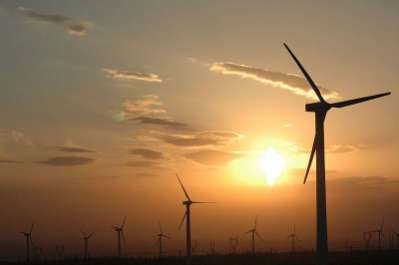
În plus, suntem înconjurați de resurse enorme de alte tipuri de energie, cum ar fi energia nucleară condensată
în atomi, sau energia gravitațională spre exemplu forțele mareelor oceanice.
Anterior revoluției industrială, omenirea extrăgea aproape toată energia din plante. Mâncam plante pentru
a ne alimenta
corpul și hrăneam cu ele animalele de casă, cai sau măgari, și foloseam tot plante în
formă de lemn pentru încălzirea caselor și gătit. În cea mai mare din istorie, oamenii s-au bazat doar
pe exploatarea acestor 3.000 de exajoules de energie pe care plantele le captează în fiecare an din energia
solară prin fotosinteză. În timpul revoluției industriale, oamenii au ajuns rapid la concluzia că mediul
înconjurător conține de fapt
mult mai multă energie. Există milioane și milioane de exajoules de potential energetic pe care îl
putem folosi, asta doar dacă putem inventa mașini mai bune pentru a-l valorifica.
Materii prime
Există multă energie în jurul nostru, dar nu sunt resursele naturale, cum ar fi fierul sau cuprul limitate?
Nu vor fi ele în cele din urmă complet epuizate? Ei bine, răspunsul este că, odată ce știm cum să valorificăm
cantități mari de energie ieftină, odată ce am rezolvat problema energiei, se poate rezolva și
problema materiilor prime. De exemplu, dacă controlăm energia, se pot exploata depozite inaccesibile
anterior. Dacă nu mai există mult fier în mine ușor accesibile, să zicem în Suedia, putem începe exploatarea
minieră a fierului la Polul Nord. Nu e ușor, dar dacă avem toată energia pe care o dorim, nu e imposibil.
Un alt lucru pe care îl putem face este să transportăm materii prime în locuri tot mai îndepărtate. În
secolul al 19-lea, producătorii de textile
britanice aveau nevoie de tot mai multă lână. Ei au
Pagina 273
început să importe lână din Australia și Noua Zeelandă. Anterior, ar fi fost imposibil să importe lână din
Australia din cauza costurilor uriașe de transport, dar cu invenția motoarelor cu abur și a navelor cu
abur transportul a devenit mai ieftin și mai economic.
În zilele noastre, se spune că dacă suntem în căutarea de noi depozite de materii prime, de ce să nu
luăm fier și cupru și aluminiu și așa mai departe de pe Lună, sau din stele sau asteroizi? Dacă stăpânim
surse de energie ieftină, costul transportului lor pe Pamant nu va împiedica nici astfel de planuri grandioase.
Tot descoperirile științifice au permis omenirii să inventeze tipuri complet noi de materii prime, cum
ar fi
plasticul. Sau să descopere materiale naturale au existat dintotdeauna, dar oamenii nu știau nimic
despre ele, cum ar fi siliciu sau aluminiu. Chimiștii au descoperit aluminiul metalic doar în
1820, anterior nu se știa despre el. Separarea aluminiului din minereu era extrem de dificilă și costisitoare,
de
aceea, vreme de multe decenii, aluminiul a fost mai scump decât aurul. În 1860, împăratul Franței, Napoleon
al III-lea, nepotul celebrului Napoleon, comanda tacâmuri și tăvi de aluminiu pentru a servi distinși
oaspeți care veneau în vizită. El lua tăvile, cuțite și furculițele de aur, le punea deoparte și punea
pe masă tacâmuri de aluminiu. La sfârșitul secolului al 19-lea, un chimist a descoperit modul de a extrage
cantități imense de aluminiu foarte, foarte ieftin, și astăzi lumea produce 30 de milioane de tone de
aluminiu în fiecare an. Napoleon al III-lea ar fi foarte surprins să afle că în zilele noastre aluminiul
este foarte ieftin și că noi folosim hârtie de aluminiu pentru a ne ambala sandwich-urile ca s-o aruncăm
la gunoi după aceea.
Fritz Haber (-WIKIMEDIA CREDIT)
O altă descoperire interesantă a unui mod ieftin de extragere a materiilor prime s-a petrecut în Germania, în timpul primul război mondial. Germania a fost supusă unei blocade și a suferit din cauza penuriei severe de materii prime. Deosebită a fost lipsa salpetrului (nitratul de potasiu n.t.). Salpetrul este un produs chimic esențial pentru producerea prafului de pușcă și a altor explozivi. Cele mai mari depozite naturale de salpetru din lume erau în Chile și India. Nu era nici unul în Germania. Până în secolul 20, chimisti știau că se putea înlocui salpetrul în producția explozivilor cu amoniac sintetic. Dar amoniacul era extrem de costisitor, așa că nu era o soluție prea bună. A fost o problemă reală, în vreme de
război este nevoie de mult explozibil. Din fericire
Pagina 274
pentru germani, un chimist evreu-german, numit Fritz Haber studia problema. În 1908, chiar înainte de război, Fritz Haber a descoperit un procedeu de producere a amoniacului din aer. Printr-un proces chimic, se pot lega atomii de azot din aer și se poate produce amoniac care să fie apoi utilizat pentru explozibili și alte lucruri. Când a izbucnit războiul, germanii s-au confruntat cu lipsa salpetrului pentru fabricarea de explozivi și praf de pușcă, așa că ei au concentrat resurse și bani pentru a extinde noua descoperire a lui Haber. Au construit fabrici imense care au produs amoniac exploziv din aer. Mulți istorici și cercetători cred că, fără descoperirea lui Fritz Haber, Germania ar fi fost obligată să capituleze cu mult timp înainte de noiembrie 1918 pentru că ar fi rămas fără explozivi. Aceasta descoperire, de altfel, i-a adus lui Fritz Haber premiul Nobel în anul 1918, nu pentru pace desigur, ci Premiul Nobel pentru Chimie.
A doua revoluție agricolă
BIG BULL TRACTOR.CREDIT - WDM.CA
Combinația între controlul unei energii ieftine și abundente și prezența materiilor prime au dus la o explozie
a productivității. Explozia a fost resimțită în primul rând în agricultură. De obicei, atunci când auzim
revoluția industrială, ne gândim la orașe, un peisaj gri cu coșuri de fum și condiții de muncă
îngrozitoare pentru lucrătorii din fabrici, cum erau în romanele lui Charles Dickens și Emile Zola. Cu
toate acestea, revoluția industrială a fost o a doua revoluție agricolă. A afectat în primul rând agricultura
și producția de alimente. În ultimii 200 ani, metodele de producție industrială au devenit baza pentru
felurite mașini agricole, cum erau tractoarele care au început să prelucreze terenuri care anterior erau
lucrate doar cu muncă fizică, umană sau animală. Terenurile și animalele au devenit mult mai productive
datorită utilizării produselor industriale, cum ar fi îngrășăminte artificiale, insecticide artificiale,
și un întreg arsenal de hormoni și medicamente produse industrial. Frigiderele, avioane, navele, camioanele
au permis să se depoziteze produse agricole cum ar fi cereale, fructe și carne, pentru luni și chiar
ani. Putem transporta astăzi atât de rapid și ieftin mărfuri în cealaltă parte a lumii, așa încât europenii
pot mânca carne de vită proaspătă din Argentina sau sushi proaspăt din Japonia.
Până și plantele și animalele au fost mecanizate, au fost transformate în mașini.
În perioada când Homo sapiens era ridicat la statut divin de religiile umaniste, animalele de fermă au
încetat să mai fie privite ca niște creaturi care ar putea simți durere și suferință în viață, și în
schimb au
Pagina 275
ajuns să fie tratate pur și simplu ca
niște mașini responsabile cu producerea de alimente. Astăzi, animalele de fermă sunt de cele mai
multe ori produse în masă în fabrici specializate. Trupurile le sunt modelate de oameni de știință, în
conformitate cu necesitățile industriale și pui, vaci, porci și așa mai departe își petrec întreaga viață
ca mecanisme întro linie de producție gigantică. Durata vieții, calitatea și condițiile de trai sunt
determinate de profiturile și pierderile societăților comerciale care le dețin.
Chiar și atunci când industria are grijă ca animalele vii să fie relativ sănătoase și bine hrănite, industria
nu are nici un interes intrinsec în nevoile sociale și psihologice ale animalelor, cu excepția faptului
când acestea au un impact direct asupra producției. De exemplu, găinile ouătoare au o lume complexă de
nevoi comportamentale și dorințe. Puii au instincte de cercetare a mediului înconjurător, se plimbă pentru
a ciuguli, pentru a stabili ierarhii sociale, pentru a-și construi cuiburi și a se curăța între ei. Cu
toate acestea, industria ia găinile și puii și îi închide în cuști mici. Frecvent în industrie se înghesuie
patru găini într-o cușcă mică, fiecare găină își duce viața într-o suprafață de doar 22 - 25 de centimetri.
Acest fapt este comun în industrie. Găinile primesc suficientă hrană, dar nu sunt în măsură să cerceteze
teritoriul, să-și construiască un cuib sau să ducă alte activități naturale. Cușca în care trăiesc este
atât de mică încât de obicei femelele nu în măsură nici măcar să dea din aripi, sau să stea în picioare.
Sunt doar stoarse de ouă după ouă pe parcursul întregii lor vieți.
(CREDIT - Wikimedia)
Aceleași lucru se întâmplă în industria cărnii. Porcii sunt printre cele mai inteligente și curioase mamifere după maimuțele mari, dar în fermele industriale de porci, porcii și scroafele sunt îngrămădiți în mod uzual în cuști foarte mici. În fermele industriale, scroafele sunt ținute în cuști atât de mici încât literalmente nu sunt în măsură să se întoarcă, să
nu mai vorbim de mers sau cercetat. Scroafele sunt păstrate în aceste lăzi zi și noapte timp de patru săptămâni
după ce dau naștere. Sunt ținute în lăzi cu purcei unde nici măcar nu se pot mișca. Ele doar stau acolo
într-o rână, lăsând purceii să sugă de la ele. Primesc mâncare de la îngrijitori, și ele îi hrănesc pe
purcei. După patru săptămâni,
purceii sunt luați deoparte pentru a fi îngrășați și apoi măcelăriți.
Pagina 276
(CREDIT - THEHINDU.COM)
Scroafele sunt fecundate din nou pentru producția următoare, și o dată ce purceii se nasc, ele sunt puse
din nou în lăzile lor mici. Motivul pentru care trăiesc în lăzi fără a putea să se deplaseze este că
managerii se tem că scroafele ar putea zdrobi accidental unul dintre purcei
astfel încât sunt blocate în cutie, incapabile să se miște, și vor petrece încă o lună în interiorul
unor astfel de lăzi.
Industria produselor lactate are practici similare. Multe vaci de lapte trăiesc aproape toată viața într-o
incintă mică. Ele merg, stau și dorm în propria urină și excremente. Primesc tot felul de alimente, hormoni
și medicamente de la un set de mașini și apoi un alt set de mașini mulge vacile la fiecare câteva ore.
Vaca este tratată de către industrie ca nimic mai mult decât o altă mașină, o mașină care arde materii
prime și dă afară lapte.
Tratarea unor creaturi vii, cu lumi senzoriale complexe, ca pe simple mașini, le provoacă acestora nu
numai disconfort fizic, dar de asemenea mult stres social și frustrări psihologice. Avem aici o imagine
dintr-o fermă industrială care produce pui, o imagine a
puilor tineri pe o bandă transportoare într-un cuibar industrial . Puii de sex masculin și de
Pagina 277
sex feminin imperfecți sunt sortați pe banda transportoare de lucrători și zdrobiți în gunoi sau, uneori,
sunt aruncați în tocătoare automate, care toacă puii inutili. Astfel funcționează o fermă industrială
care produce găini pentru ouat. Puii de sex masculin și feminin imperfecți sunt inutili, așa încât sunt
aruncați sau tocați. Cei tocați sunt folosiți ca mâncare pentru alte animale. În aceste incubatoare mor
în fiecare an sute de milioane de pui.
Acest tratament al animalelor nu este cauzat de ură față de animale, la fel cum comerțul cu sclavi peste
Atlantic nu era rezultatul urii față de africani. Industria modernă animală nu este motivată de dușmănie;
ci în principal de
lăcomie unită cu indiferență. Nu ne pasă de soarta acestor creaturi. Cei mai mulți oameni care consumă
ouă, lapte și carne astăzi în lume să gândesc rareori de unde provin ele și la soarta puilor, vacilor
și a porcilor a căror carne le mănâncă. Cei care se gândesc la astfel de lucruri susțin că aceste animale
sunt pur și simplu mașini. Că ele nu au o lume interioară cu senzații și emoții, că nu sunt capabile
de suferință. Cu adevărat ironic este faptul că aceleași discipline științifice care modelează mașinile
de produs lapte și ouă, au demonstrat pe parcursul ultimelor decenii, dincolo de orice îndoială, că mamiferele
și păsările
au un univers senzorial și emoțional complex. Ele sunt capabile nu numai să simtă durere fizică,
dar sunt de asemenea capabile să sufere stres emoțional. Știm printre altele, din studii în psihologia
evoluționistă, că nevoile emoționale și sociale ale animalelor, inclusiv ale animalele de fermă, au evoluat
în sălbăticie pe parcursul a milioane de ani, atunci când nevoile și emoțiile au fost esențiale pentru
supraviețuirea și reproducerea speciei.
De exemplu, în sălbăticie, vacile trebuiau să știe cum să formeze relații cu alte vaci și tauri sau altfel
ele nu puteau supraviețui și reproduce. În general, pentru a deprinde abilitățile sociale necesare, evoluția
pe parcursul a milioane de ani a programat vițeii, ca și pe puii tuturor celorlalte mamifere sociale,
cu o dorință puternică de
a se juca. Redarea este modul
în care puii mamiferelor deprind comportamentul social. Evoluția a implantat puilor de bovine o dorință
puternică de a sta lângă mamele lor, pentru că laptele și îngrijirea vacii mamă era, evident, esențială
pentru supraviețuirea vițelului. În industria modernă, fermierii iau acum o vițică tânără, o separă de
mama ei, o pun într-o cușcă îngustă unde primește mâncare și apă precum și preparate injectabile împotriva
tuturor tipurilor de boli și atunci când este matură ea este înseminată cu sperma de la un bou. Din punct
de vedere obiectiv, vițica nu mai are nevoie de nici de legătura cu mama sau de joaca cu alți viței,
pentru a supraviețui și a se reproduce, pentru că oamenii au grijă de toate astea. Cu toate acestea,
din punct de vedere subiectiv, din perspectiva vacii în sine, ea
încă simte un îndemn foarte puternic de a sta cu mama ei, și de a se juca cu alte vaci.
Pagina 278
Dacă aceste impulsuri, care au fost programate în vaci pe parcursul a milioane de ani de evolutie nu sunt îndeplinite, vițeii suferă. Aceasta este lecția de bază a psihologiei evoluționiste. O nevoie sau dorință care a fost modelată în sălbăticie continuă să fie simțită subiectiv chiar dacă ea nu mai este cu adevărat necesară pentru supraviețuire și reproducere. Marea tragedie a agriculturii industriale este că are grijă de nevoile obiective ale animalelor, dar neglijează complet nevoile lor subiective.
Studii anterioare
Această teorie nu e vreo descoperire nouă a ultimilor cinci sau zece ani, ci era cunoscută cel puțin
din anii 1950
- 1960. În anii 1950, un celebru psiholog american,
Harry Harlow, a studiat puii de mamifere folosind maimuțe tinere pentru experimente. El a separat
maimuțele sugar de mamele lor la câteva ore după naștere. Maimuțele au fost puse singure într-o cușcă,
fără nici o altă maimuță și au fost crescute de mame fictive. În fiecare cușcă, Harlow a plasat două
mame fictive. O mamă era făcută din fire metalice și prevăzută cu o sticlă de lapte, astfel încât maimuța
sugar putea suge și mânca. O altă mămică era concepută din lemn acoperit cu material textil, care o făcea
să semene cu o mamă
maimuță adevărată. Acest lucru, mama din cârpă moale, nu îi oferea maimuței copil nici un fel de aliment,
era doar o statuie. Harlow, și multi alți teoreticieni presupuneau că sugarii se vor atașa de mama de
metal hrănitoare și nu le va păsa prea mult de mama din pânză stearpă. Spre marea surpriza a oamenilor
de știință, maimuța nou-nascută a arătat o preferință foarte clară pentru mama din pânză și și-a petrecut
cel mai mult timp cu ea. După cum putem vedea în această imagine, atunci când cele două mame au fost
plasate în imediata apropiere, maimuța nou-nascut a continuat să se țină de mama pânză, chiar și atunci
când ajungea la laptele de la mama de metal. La început, Harlow a suspectat că puii făceau acest lucru
probabil pentru că mamele erau reci. Ei încercau să se încălzească în brațele mamei pânză. El a montat
deci un bec electric în interiorul mamei sârmă, care radia mai multă căldură decât mama pânză. Cu toate
acestea, marea majoritate a puilor de maimuță au continuat să prefere mama pânză. Concluzia la care a
ajuns a fost că maimuțele și alte mamifere caută ceva mai mult în părinți decât doar nevoile materiale.
Puii au de asemenea nevoi profunde psihologice și emoționale. Maimuțele chiar nou născute au crezut că
mama care arăta ca o maimuță adevărată le
poate oferi mai mult emotional decât o instalație de metal.
Pagina 279
Orfelinat băieți, MYRTLE STREET, 1885 (CREDIT - STREETSOFLIVERPOOL.
CO.UK)
Studiile ulterioare i-au aratat lui Harlow că maimuțele orfan, care nu și-au împlinit nevoile lor emoționale
și psihologice, chiar dacă au primit mâncare, medicamente, apă și orice altceva, au devenit
adevărate
epave emoționale. Ele nu au reușit să se încadreze în societatea maimuțelor,
au avut dificultăți de comunicare cu alte maimuțe si au suferit în mod constant niveluri ridicate de
anxietate și agresiune. Concluzia la acesta și la multe alte experimente a fost că maimuțele și alte
mamifere au nevoi și dorințe psihologice și emoționale care trec cu mult dincolo de cerințele materiale
de bază: hrană, apă și sănătate. În cazul în care aceste nevoi emotionale si nu sunt îndeplinite, ele
vor suferi foarte mult. În următoarele decenii, experimente și studii similare au arătat că acest lucru
este valabil nu numai la maimuțe, dar și la alte mamifere, la păsări și chiar la oameni.
Orfelinat de fete, MYRTLE STREET,
1885 (CREDIT - STREETSOFLIVERPOOL.CO.UK)
Experimentul lui Harlow asupra maimuțelor sugar a produs o revoluție în metodica creșterii copiilor. Între
anii 1940 și '50, psihologii s-au specializat în studiul copiilor. Ei credeau inițial că aceștia
au nevoie doar de îngrijire materială. De exemplu, în orfelinatele de după al doilea război mondial din
Europa trăiau sute de mii de copii orfani. Erau vremuri importante pentru orfelinate. În orfelinate,
după cunoștințele acelor vremuri, se luau măsuri pentru a separa copiii unul de altul și de contactul
cu adulții, deoarece se temeau de boli. Ideea era că tot ceea ce copiii au nevoie este mâncare, apa și
medicație, cea mai mare amenințare fiind răspândirea epidemiilor în aceste orfelinate. Rezultatul a fost
o rată mare a decesurilor, și chiar acei orfani care au supraviețuit au suferit traume psihologice. În
1950, '50 și '60, ca urmare a experimentului pe maimuțe, psihologii și-au dat seama că mamiferele,
inclusiv oamenii, au nevoi emoționale care pot fi hrănite numai prin contactul direct cu alți membri
ai speciei. Astăzi, logica creșterii copiilor, inclusiv a orfanilor, este exact opusă. Ei au nevoie de
cât mai mult contact posibil cu alte persoane, să nu fie separați și izolați. Aceasta este acum metodologia
acceptată cu privire la creșterea copiilor, atât a celor umani precum și a altor animale, cel puțin aproximativ
mamifere. Cu toate acestea, agricultura industrială
ignoră complet aceste constatari, atunci când vine vorba de
creșterea animalelor cum ar fi vaci, porci și așa mai departe.
Pagina 280
Hrănirea populației
Agricultura industrială ridică o seamă de dileme etice și morale. Ceea ce nu poate fi negat este contribuția
imensă adusă productivității umane. În total miliarde de animale de fermă trăiesc astăzi ca parte a unui
fel de linie de asamblare mecanizata și aproximativ 10 miliarde animalele sunt sacrificate în fiecare
an de către agricultura
industrială pentru a sprijini economia și stilul nostru bogat de viață. Tehnicile industriale
din agricultură și creșterea animalelor au dus la o creștere puternică a productivității agriculturii
și în rezervele de alimente umane, împreună cu mecanizarea cultivării plantelor, de cultivarea de grâu,
cartofi, orez, porumb și așa mai departe.
Exploatarea industrială a animalelor constituie baza pentru întreaga ordine economică socială modernă.
Înainte de industrializarea agriculturii, cele mai multe produse alimentare erau folosite pentru hrănirea
animalelor de fermă și a agricultorilor. Doar un mic procent de alimente era disponibil pentru a hrăni
profesori, preoți, birocrați și alți lucrători din orașe. În consecință, în aproape toate societățile
anterioare, țăranii reprezentau mai mult de
90% din populație, acest lucru a fost valabil până în secolul al 20-lea. Numai în urma industrializării
agriculturii a fost brusc posibil ca un număr tot mai mic de fermieri să producă tot mai multe alimente
pentru consumul oamenilor în orașe.
De exemplu astăzi, în Statele Unite ale Americii, doar 2% din populație își câștigă existența în agricultură.
Folosind metode industriale, cei 2% produc suficiente produse agroalimentare pentru a hrăni nu numai
restul de
98% din populație, dar, de
asemenea, pentru a exporta surplusul de alimente în restul lumii. Statele Unite ale Americii este unul
dintre cei mai
mari exportatori mondiali de alimente. Fără industrializarea agriculturii, revoluția industrială urbană
în orașe și fabrici nu ar mai fi avut loc. Nu ar fi fost suficiente mâini și creiere pentru a popula
fabricile și birourile din orașe. Utilajele agricole au permis tot mai multor oameni să se mute în orașe.
Companiile și birourile au fost capabile să absoarbă miliarde de lucrători noi care să producă ca rezultat
și mai multe produse. Oamenii s-au mutat de la sate la oraș, de la lucrul câmpului la lucrul în fabrici,
iar fabricile au început să producă o avalanșă de produse noi. Oamenii din ziua de azi produc mult mai
mult oțel, haine, mai multe case și hoteluri decât oricând înainte. Ele produc, de asemenea, o colecție
cu adevărat uluitoare de bunuri pe care nimeni nu și le-ar fi imaginat anterior
Pagina 281
cum ar fi telefoane și aparate de fotografiat și mașini de spălat vase. Potopul de produse noi a venit
deodată, visele acumulate pe parcursul a mii de ani au fost înfăptuite brusc în câțiva zeci de ani. Prin
urmare, pentru prima dată în istoria omenirii producția de bunuri a început să depășească cererea. S-a
creat astfel o problemă economică cu totul nouă, problema consumului. Când există atât de multe produse,
cine are de gând să cumpere toate aceste lucruri noi?
Problema consumului
Pentru a supraviețui, economia capitalistă modernă trebuie să crească producția în mod constant. Dacă nu crește, economia se prabușește, nu stă în loc. Cu toate acestea, nu e suficient doar să se producă tot mai și mai mult. Există toți oamenii care vin din sate la oraș, și care produc tot mai multe produse. Nu e de ajuns doar să se producă, cineva trebuie să le și cumpere, altfel industriașii și investitorii vor da faliment. Pentru a preveni catastrofa, și a se asigura că oamenii vor cumpara mereu lucruri noi, indiferent de ce industrie le produce, a apărut o formă etică nouă. A fost o adevărată revoluție în etică, etica de consum.
Ce este consumismul?
Petecirea pantalonilor
Cei mai mulți oameni de-a lungul istoriei au trăit în lipsuri și nevoi. În orice domeniu, nimic nu era niciodată
de ajuns. Cumpătarea era principala etică a vremurilor. Oamenii credeau că a fi mulțumiți cu puținul
pe care îl aveau este bine și a se complace în lux era ceva rău, doar oamenii răi și corupți se complăceau
în lux. Un om bun ar fi trebuit să evite luxul, să nu arunce alimente, să lase farfuria goală indiferent
ce punea mama în ea. Dacă pantalonii se rupeau, ei trebuiau peteciți, nu aruncati. A fost o mare parte
a moralității umane. Numai regii și
aristocrații își permiteau să renunțe public la cumpătare și să etaleze bogății prin construcția de palate
și purtarea de aur și argint și haine de mătase și așa mai departe. Când revoluția industrială a rezolvat
problema deficitului, ea a creat în schimb problema consumului.
O nouă etică a revoluționat societatea, numită
consumism (consumerism n.t.). Consumismul vede consumul a tot mai multor produse și servicii ca pe
un lucru pozitiv. El încurajează oamenii să se răsfețe, să se trateze cum se cuvine și chiar să se sinucidă
lent consumând prea mult. Cumpătarea este un soi de tulburare psihologică, o boală care ar trebui vindecată.
Consumismul a lucrat din greu, cu ajutorul psihologiei populiste,
Pagina 282
precum și a reclamelor, televizorului și așa mai departe pentru a convinge oamenii că răsfățul de sine este
ceva pozitiv, în timp ce frugalitatea, mulțumirea cu puțin este auto- opresiune. Dacă dorim să cumpărăm
haine noi, să-i dăm drumul, dacă dorim o mașină nouă, să luăm un împrumut de la bancă ca să o cumpărăm.
Dacă dorim să mănâncăm tort, să dăm curs dorinței. Ar trebui să ne tratăm bine, să ascultăm de pofte,
dacă vrem ceva cu adevărat atunci să face orice ca să-l obținem (
go get it). Această mentalitate este consumismul.
pantaloni rupți arată ca esti prea indiferent ca să-ti pese. FOTOGRAFIA: MIKE Egerton / EMPICS SPORTURILE FOTO AGENCY
Consumismul a reușit să transforme tot mai multe segmente ale populației umane din lume în consumatori agresivi.
Cumpărăm nenumărate produse de care nu avem cu adevărat nevoie, pe care nu ni le putem permite și despre
care, până ieri, nu știam că există. Producătorii proiectează de fapt în mod deliberat bunuri pe termen
scurt și inventează tot felul de variante noi și inutile la produse perfect satisfăcătoare, pentru ca
să putem achiziționa tot mai multe produse în fiecare an. Cumpărăturile, cam în ultimul secol, au devenit
distracția preferată la tot mai mulți oameni. Bunurile de larg consum au devenit mediatori esențiale
în relațiile dintre membrii familiei, soții, prieteni, părinți și copii. Dacă dorim să ne exprimăm sentimentele,
trebuie să-i cumpărăm ceva prietenului, copilului sau părintelui dumneavoastră.
Chiar festivaluri religioase, sărbători religioase, cum ar fi zilele dinaintea Crăciunului au
devenit sărbători ale cumpărăturilor.
(CREDIT - IMAGINI ILYA Terentyev / Getty)
Pagina 283
În Statele Unite, Ziua Memorială (Memorial Day) a fost inițial o zi solemnă pentru amintintirea soldaților căzuți în războaie mondiale în apărarea Statelor Unite. Astăzi, Ziua Memorială este petrecută de cei mai mulți americani la cumpărături. Există vânzări de Ziua Memorială , și pentru că știu că oamenii au timp liber în această zi, magazinele atrag populația cu reduceri speciale. Cred că-și imaginează că cei care au murit pentru apărarea Statelor Unite au vrut cu adevărat ca populația să comemoreze sacrificiul lor mergând la cumparaturi pentru a dovedi că ei nu au murit în zadar.
Ridicarea noii etici de consum se manifestă poate cel mai clar în piața produselor alimentare. Societăți
agricole tradiționale trăiau într-o frică constantă de foamete și sărăcie. Astăzi, în lumea bogată, una
dintre cele mai importante probleme de sănătate nu este foamea, ci obezitatea. Cel puțin în Statele Unite,
săracii sunt mai în pericol de
obezitate decât cei bogați, deoarece se îndoapă cu hamburgeri și pizza, în vreme ce
bogații mănâncă salate organice și shake-uri de fructe. În fiecare an, populația Statelor Unite cheltuie
mai mulți bani pe diete decât toți banii de care ar fi nevoie pentru a hrăni toate persoanele flămânde
din lume. Acest fenomen de a manca prea mult și apoi a face diete si exerciții este de fapt o victorie
dublă pentru consumism. În loc să mâncăm puțin, ceea ce ar duce la stagnare economică, pentru că nu ar
fi nevoie de toate produsele alimentare produse, oamenii mănâncă mult prea mult, cumpără apoi produse
dietetice și merg la sala de sport, contribuie astfel dublu la creșterea economică.
Capitalismul și consumism
Cum putem împăca etica de consum cu etica capitalistă, în conformitate cu care profiturile nu ar trebui
să fie risipite ci ar trebui să fie reinvestite în producție? La fel ca în epocile anterioare, există
o diviziune a muncii, o separare a a eforturilor între elită și mase. În Europa medievală, aristocrații
cheltuiau neglijenți în lux, în vreme ce țăranii trăiau cumpătat și nu-și iroseau bani pe lucruri inutile.
Astăzi
rolurile pur și simplu s-au inversat. Bogații au acum mare grijă de gestionarea activelor și a investițiilor,
iar ceilalți sunt ocupați cu cumpărarea pe credit a lucrurilor de care nu au
neapărat nevoie și nici măcar nu și le pot permite.
Pagina 284
"Consumul, asta e activitatea de bază a națiunii. Uită baseball-ul, este consumul, ultima, singura și
cea mai sinceră esență a valorilor americane.. a cumpăra lucruri. Oameni care cheltuie bani pe care nu-i
au pe lucruri de care n-au nevoie. Asta ca să-și poată mări creditul de pe carduri și să plătească o
viață dobânzi de
18% pe un lucru care a costat 12.50. Și nici măcar nu le-a mai plăcut când l-au
dus acasă. Nu-i prea inteligent oameni buni“
George Carlin 1937 - 2008
Capitalismul și principiul etic al consumului sunt, prin urmare cele două fațete ale aceleiași monede.
Ele sunt complementare, nu contradictorii. Bogații sunt ocupați să investească pentru a-și maximiza profiturile,
iar cei saraci sunt ocupați cu cumpăratul a tot ceea ce este nou. Noua etică este, prin urmare, o etică
dublă, cu două porunci complementare. Porunca supremă a celor bogați e
investește! Trebuie să investești banii, altfel îi pierzi! Porunca supremă pentru tot restul oamenilor
e
cumpără! Trebuie să cumperi mai mult! Chiar dacă nu ai suficienți bani pentru a cumpăra mașina, du-te
la bancă, ia un împrumut, și cumpără mașina aia. Asta e porunca ta. Ăsta e rolul tău în economie.
Acest etică capitalistă dublă este revoluționară în multe privințe. Cele mai multe sisteme etice anterioare
din istorie, creștinismul, budismul sau confucianismul, erau o afacere foarte dură. Promiteau paradisul,
dar numai în celor care puteau cultiva compasiunea și toleranța, numai dacă oamenii puteau învinge poftele,
mânia, numai în cazul în care își depășeau interesul lor mărunt, egoist.
Acest lucru a fost prea greu pentru majoritatea oamenilor. Istoria etică de-a lungul a sute de ani
este o istorie a unor idealuri minunate pe care nimeni nu le-a putut de fapt realiza. Cei mai mulți creștini
nu l-au imitat pe Hristos, s-au comportat doar pe undeva asemănător. Cei mai mulți budiști nu au reușit
să urmeze învățăturile lui Buddha. Cei mai mulți confucianiști i-ar produce lui Confucius o explozie
de furie dacă i-ar putea vedea cum se comportă.
Ce este revoluționar la noua etică de consum capitalistă este că, pentru prima dată în istorie, majoritatea
oamenilor pot face de fapt
ceea ce ei își doresc să facă. Noua etică promite paradisul aici, pe Pământ, cu condiția ca cei bogați
să rămână lacomi și să-și petreacă timpul pentru a produce tot mai mulți bani, în timp ce masa de oameni
își dă liber la pofte și pasiuni și continuă să cumpere tot mai multe lucruri.
Este de fapt
prima religie din istorie la care adepții fac în fapt ceea ce li se cere să facă. Bogații sunt ocupați
să facă mai mulți bani, iar restul populației este ocupată cu consumul a tot mai multe lucruri. Cum putem
fi siguri că vom obține cu adevărat paradisul în schimbul efortului nostru? În viața noastră personală,
nu putem fi atât de siguri. Televizorul ne promite că vom trăi în paradis dacă cumpărăm tot ce ne lipsește.
Dacă nu suntem încă în paradis este pentru că încă ne lipsește cel mai nou model de acest lucru sau acel
produs sau serviciu. Deci, revoluția industrială a schimbat nu numai
economia, ci de asemenea și etica și moralitatea.
Lecția XV: O revoluție permanentă
Revoluția industrială a deschis o eră a revoluțiilor permanente. Sistemul socio-politic modern târziu nu mai are o formă stabilă ci este într-o continuă schimbare. Stâlpii societății umane, familia și comunitatea apropiată, se fărâmițează gradual jurul nostru. Cum reușesc oamenii să conviețuiască cu haosul și vidul rezultat? Cum funcționează structurile sociale și politice fără garanția
stabilității? Este lumea din ce în ce mai violentă și periculoasă, sau este ea mult mai pașnică și mai sigură decât oricând înainte? În lecția prezentă, Dr Harari de la Universitatea Ebraică din Ierusalim va urmări apariția și schimbările intime în structura comunitară și în nucleul familial
Schimbările globale
DEFRIȘĂRI (credit descopera.ro
)
Am văzut că revoluția industrială a oferit omenirii controlul unei cantități enorme de energie și materii
prime. Pe parcursul ei, omenirea s-a eliberat de dependența de ecosistemul înconjurător. Oamenii au reușit
să taie păduri și jungle, să distrugă mlaștini, să devieze râuri spre zone inundabile, să construiască
zeci de mii de kilometri de
drumuri și căi ferate și să construiască orașe gigantice. Pe măsură ce planeta s-a ajustat capriciilor lui Homo sapiens , habitate întregi au fost distruse și numeroase specii de animale și plante au dispărut.
În zilele noastre, continentele pământului susțin în total șapte miliarde de Homo sapiens. Dacă am pune toți
oamenii pe un cântar colosal, masa lor combinată ar fi de aproximativ
300 de milioane de tone. Dacă cântărim toate animalele domestice, vaci și porci și pui și
așa mai departe, masa lor însumată ar fi de aproximativ 700 de milioane de tone. În schimb, dacă cântărim
toate animalele sălbatice care au supraviețuit, pinguini, struți, lei, crocodili, balene, delfini și
așa mai departe, nimeni nu stie exact cât de mult ar cântări împreună, dar se estimează a fi
mai puțin de 100 de milioane de tone.
Mai puțin de 10% din animalele mari ale lumii din toate oceanele și continentele combinate mai sunt animale sălbatice. Marea majoritate suntem noi, Homo sapiens și animalele domesticite înrobite. Cărțile pentru copii, filmele TV ne arată încă o lume plină de girafe, lupi, cimpanzei, elefanți, lei și așa mai departe. Dar lumea are în realitate foarte puține animale rămase.
Pagina 286
De exemplu în lume mai trăiesc doar aproximativ 80.000 de girafe față de 1,5 miliarde de bovine. Mai există
doar 200.000 de lupi, comparativ cu 400 milioane de câini domestici. Doar 250.000 de cimpanzei față de
aproximativ 7 miliarde Homo sapiens. Este deci evident că în zilele noastre Homo sapiens a cucerit lumea
și o controlează la modul absolut. Trebuie să remarcăm totuși o diferență între distrugerea ecologică
pe care o provoacăm habitatelor naturale și plantelor și animalelor sălbatice și problema deficitului
de resurse.
Anterior dr. Harari a descris modul în care resursele disponibile sunt într-o continuă creștere. Profețiile
apocaliptice care predică epuizarea resurselor energetice (peak oil n.t.) sunt cel mai probabil false.
Din contră, îngrijorarea cu privire la distrugerea ecologică, procesul lent dar sigur prin care omenirea
își distruge ecosistemul, este mult mai justificată. Într-un viitor nu foarte îndepărtat, am putea avea
la dispoziție resurse energetice enorme, dar în același timp cele mai multe dintre habitatele naturale
ale lumii vor fi distruse și cele mai multe dintre speciile de animale și plante vor fi pe cale de dispariție.
(CREDIT NATIONALGEOGRAPHIC
.COM)
Distrugerea habitatelor și a speciilor ar putea pune în pericol chiar supraviețuirea lui Homo sapiens, în
ciuda abundenței de resurse și energie. Procesele globale, cum ar fi încălzirea globală, ridicarea nivelului
oceanelor și poluarea tot mai extinsă a aerului, apei și pământului ar putea transforma
planeta noastră într-un loc mult mai puțin primitor pentru genul nostru. Viitorul ar putea fi, prin urmare,
o competiție între avansul cunoașterii umană și dezastrele naturale cauzate tot de noi. Pe măsură ce
oamenii subjugă tot mai multe forțe ale naturii pentru a schimba ecosistemul potrivit nevoilor și capriciile
noastre, acest proces ar putea fi cauza mai multe efecte secundare neprevăzute și periculoase, unul dintre
ele este
încălzirea globală. Nimeni nu și-a dorit în mod expres aceasta, s-a întâmplat ca un efect secundar
al procesului de dezvoltare. Pentru a opri aceste efecte secundare, vor trebui luate măsuri drastice.
Vor trebui probabil operate schimbări și mai drastice ale ecosistemului, care vor genera la rândul lor
alte și alte efecte secundare.
Mulți numesc acest proces
distrugerea naturii, dar mai corect spus nu este o distrugere ci o schimbare. Natura în sine nu poate
fi distrusă, poate fi numai schimbată. Specia poate deveni extinctă. Habitatele pot deveni complet diferite.
Creștere și răspândire
Pagina 287

(CREDIT -. ICDN4.DIGITALTRENDS.COM)
Acum 65 milioane de ani, un asteroid venit din spațiu a șters dinozaurii de pe fața pământului, a schimbat
complet fața ecosistemului și a deschis drumul multor specii de mamifere. Astăzi, omenirea este pe cale
să facă ceva foarte similar. Ecosistemul se schimbă. Mai multe specii sunt pe cale de dispariție și pot
fi nimicite. Cu toate acestea, există organisme care întrevăd o fereastră foarte favorabilă în toate
aceste schimbări. Șobolanii și gândacii, spre exemplu, prosperă. Poate că șobolanii vor continua progresul
și vor evolua în a deveni șobolani super-inteligenți, iar peste 65 de milioane ei vor controla Planeta.
Se vor uita înapoi cu recunoștință la distrugerile cauzate de omenire, care au deschis drumul controlului
planetei. Similar modului cum ne gândim noi astăzi la asteroidul care a distrus dinozaurii ca ceva favorabil
nouă.

creșterea populației între 1750 -
2050 (credit andreivocila.wordpress.com)
În prezent e mult prea devreme pentru a vorbi despre dispariția lui Homo sapiens . În ultimii 200 ani, populația umană a fost într-o continuă creștere, ca niciodată înainte. În anul 1700, înaintea începerii Revoluției Industriale, planeta întreținea aproximativ 700
de milioane de oameni, în anul 1900 erau 1,5 miliarde de oameni. În 2000 erau deja 6 miliarde de oameni,
iar astăzi am depășit 7 miliarde. Până în clipa prezentă, suntem departe de pericolul dispariție. Din
contră, devenim tot mai numeroși.
Pe măsură ce ne-am eliberat de echilibrul și forțele naturale, am devenit tot mai supuși forțelor industriei
moderne și guvernelor. Ne pasă mai puțin de natură și ciclurile naturale de ploaie, soare, vară, iarnă,
iar guvernele și industria pot mai mult decât oricând să ne
schimbe. Revoluția industrială a deschis calea unui șir lung de schimbări și experimente
Pagina 288
de inginerie socială și, de asemenea, la o serie lungă de schimbări nepremeditate în viața de zi cu zi a oamenilor și a mentalitatății umane. Modificări pe care nimeni nu le-a vrut sau anticipat s-au întâmplat pur și simplu.
Ritmul de viață
Anotimpuri
Un exemplu din ultimii 200 ani este înlocuirea ritmurilor agriculturii tradiționale cu programul industrial, precis și monoton. Agricultura tradițională depindea de ciclurile naturale și de creșterea organică. Cele mai multe societăți nu aveau ceasuri și calendare exacte. Aceasta deoarece nu îi interesa decât alternanța naturală zi și noapte, mișcarea soarelui și ritmul natural al anotimpurilor și al creșterii
plantelor. Pentru cea mai mare parte a istoriei, nu a existat o zi de lucru uniformă,
repetarea aceluiași lucru în fiecare zi de-a lungul unui an întreg. Sarcinile oamenilor se schimbau drastic
de la un sezon la altul. Oamenilor erau atenți la soare, dacă soarele apărea pe cer era un semn al schimbării
anotimpurilor. Oamenilor nu le pasau de ora exactă sau de an. Nu știau ce oră era sau în ce an trăiesc.
Prin contrast, industria modernă are mai puțin de-a face cu soarele și anotimpurile și mult mai mult
cu un program regulat și uniform. Pentru a lămuri de ce, dr. Harari compară o cizmărie medievală cu o
fabrică modernă. În atelierul medieval, fiecare cizmar producea întregul pantof de la talpă la cataramă.
Dacă un cizmar întârzia la muncă, el nu bloca defel activitatea altor cizmari. Pe de altă parte, într-o
fabrică de încălțăminte modernă cu o linie de asamblare de pantofi, fiecare lucrător are o sarcină mică
în procesul de producere al pantofului. Dacă un lucrător care operează să zicem mașina cu numărul 5 dintr-un
total de 20 de mașini doarme prea mult, toți ceilalți lucrători sunt de asemenea încetiniți sau opriți.
Pentru a preveni astfel de probleme, lumea într-o fabrică industrială modernă trebuie să lucreze în conformitate
cu un orar foarte precis.
Calendare și oraruri
Revoluția industrială a transformat calendarul și linia de asamblare într-o
bază a producției industriale și practic a întregii game de activități umane, pentru că toate celelalte
activități umane au copiat și s-au adaptat la metodele de producție din fabrici. La scurt timp după ce
fabricile au început să impună un orar strict, școlile au adoptat de asemenea metoda orarului. Oamenii
au importat metoda industrială de producție în școli, care au fost inițial gândite ca niște
fabrici de producere de cunoștințe și lucrători. Oamenii și-au spus că copiii mici trebuie să se
obișnuiască și să trăiască în conformitate cu un program strict pentru că același lucru vor trebui să-l
facă în calitate de adulți, așa că era foarte bine ca
Pagina 289
aceste obiceiuri să fie deprinse de la vârstă fragedă. Aceeași logică a influențat spitale, penitenciare, magazine și alte direcții ale vieții moderne, toate au început să opereze după un program precis. Un element esențial în răspândirea calendarului a fost transportul public. Pentru că muncitorii aveau nevoie să ajungă la fabrică exact la ora 8 dimineața, trenul sau autobuzul trebuia să ajungă la poarta fabricii cu cel puțin cinci minute mai devreme, la 7:55 dimineața . Chiar și o întârziere de câteva minute îi făcea pe unii muncitori să întârzie la muncă, să dăuneze producției și, probabil, unii muncitori puteau fi chiar concediați pentru că au întârziat.
Industria și scurgerea timpului
Trăsură de poștă într-o furtună
NEWMARKET HEATH, Suffolk,
1827
Unul dintre efecte a fost apariția de orare precise în transporturi pentru care nu a fost înainte niciodată
cazul. Primul orar din istoria Marii Britanii a fost publicat în 1784. A fost orarul unui serviciu de
transport care conecta diferite orașe din Marea Britanie. Specifica numai ora plecării, nu și ora de
sosire, probabil pentru că
nimeni nu putea spune cât de mult i-ar lua unui cal și unei căruțe pentru a merge de la Londra să zicem
până la Birmingham. Mai important, fiecare oraș din Marea Britanie a acelor vremuri, precum și în restul
lumii, avea propria ora locală. Ora locală în Liverpool sau Glasgow putea fi diferită de ora din Londra
cu până la o jumătate de oră. De exemplu, atunci când în Londra era ora 12, în Liverpool era poate 12:20
iar în Canterbury 11:50 sau invers. Deoarece nu existau telefoane, radiouri, televizoare și nici trenuri
rapide sau mașini, nimeni nu putea ști că exista o diferență între timpul din Londra și cel din Liverpool,
și nimănui nu îi păsa. Când trenurile au început să se conecteze orașe diferite din Marea Britanie și
când au apărut orarele, aceste diferențe au devenit o problemă.
Observatorul Regal CERCETATORI GREENWICH © ȘTIINȚĂ FOTO BIBLIOTECA / FOTO, INC.
În 1847, companiile feroviare britanice au organizat o conferință, și s-au pus de acord că începând cu acel moment, orarele la trenuri vor fi în funcție de timpul Observatorului Greenwich de lângă Londra. În anii următori, tot mai multe instituții au început să urmeze exemplul companiilor de tren, adoptând timpul Greenwich, până când în cele din urmă în anul
Pagina 290
1880, guvernul britanic a făcut pasul fără precedent în istoria omenirii de a legifera că toate orarele din Marea Britanie trebuie să urmeze timpul unic din Greenwich. A fost pentru prima dată în istorie când o întreagă națiune a adoptat un timp unic și a obligat populația să trăiască în conformitate cu un ceas artificial și nu în funcție de ritmul local dat de răsăritul și apusul soarelui. După acest început modest s-a creat o rețea globală a orarelor care sincroniza activitățile oamenilor din întreaga lume, până la cele mai mici fracțiuni de secundă.
Dominați de ceasuri
Pentru a se asigura că toată lumea funcționează pe baza aceluiași timp, ceasuri portabile ieftine și precise
au devenit omniprezente. Orașele antice nu dețineau aproape nici un ceas. Orașele medievale europene
aveau de obicei un singur ceas în tot orașul. Era un ceas mecanic gigant montat pe partea de sus a turnului
situat de regulă central în piața orașului. Ceasurile de turn erau notoriu inexacte, dar pentru că nu
existau alte ceasuri ca să le contrazică, erau corectate doar cu mare efort. Într-o casă a zilele noastre,
o familie simplă are probabil la dispoziție mai multe ceasuri decât o întreagă țară medievală. Oamenii
au ceasuri pe telefoane mobile, ceasuri deșteptătoare alături de paturile lor, ceasuri pe pereti, în
bucătărie, în camera de zi. Ceasurile sunt aproape peste tot într-o casă modernă. Oamenii obișnuiți verifică
ceasurile de zeci sau chiar sute de ori în fiecare zi. Aproape tot ceea ce facem este în funcție de un
program precis.
Mulți oameni se trezesc dimineața nu atunci când o doresc și nu la răsăritul soarelui, ci atunci când
sună ceasul. Apoi au nevoie sa manance ceva așa că iau un mic dejun semipreparat din congelator și îl
dezgheață în cuptorul cu microunde timp de exact 50 secunde pe ceasul cuptorului cu microunde. Apoi,
merg să se spele pe dinți, mulți oameni au periuțe de dinți electronice, care spală timp de trei minute
și apoi produce un sunet pentru a ne informa că cele trei minute au trecut. Trenul sau autobuzul pleacă
exact la 07:40 dimineața din stație, după servici oamenii merg poate la o sală de sport pentru o oră,
fiind informați de un pager când a trecut exact o oră. Spectacol lor preferat începe la ora 19:00, la
fiecare cinci sau șapte minute spectacolul este întrerupt de reclame care costă 1000 de dolari pe secundă
și sunt introduse la momente precise. Întreaga noastră zi se derulează în conformitate cu un astfel de
program precis. Chiar și atunci când mergem la psiholog sau la terapeut să ne plângem despre presiunea
din viețile noastre, sesiunea de terapie durează de obicei exact 45 de minute. După 44 minute și 50 secunde,
terapeutul, chiar dacă suntem în mijlocul celei mai interesante poveste despre mama noastră, el sau ea
va spune că asta e, suntem în criză de timp, să continuăm acest lucru în sesiunea următoare. E doar una
dintre multele revoluții aduse în mentalitatea vieții de zi cu zi de către Revoluția Industrială.
Prăbușirea familiei
Pagina 291
Însă cea mai importantă schimbare adusă de Revoluția Industrială este prăbușirea familiei și a comunității
și înlocuirea ei de către stat și piețe ca principalii regizori ai vieții umane. După câte știm, din
cele mai vechi timpuri încă de acum
mai multe milioane de ani, oamenii au trăit mereu în comunități strânse, ale căror membri erau legați
unul de altul prin legături strânse de familie. Revoluția Cognitivă în urmă cu 70.000 ani și Revoluția
Agricolă nu au schimbat asta, ele au sudat doar familiile și comunitățile împreună în triburi, orașe,
regate și imperii. Fuziunile nu au distrus familia și comunitatea care au continuat să fie
cărămida de bază a tuturor societăților
umane . Puteam trăi într-un oraș, imperiu sau regat, dar structura de bază, unitatea de bază a vieții era familia sau comunitatea locală. Revoluția Industrială, pe de altă parte, a reușit, în puțin mai mult de două secole, să spargă aceste blocuri în atomi, în indivizi. Cele mai multe dintre funcțiile tradiționale ale familiei și comunității au fost cedate în ultimele două secole statului sau piețelor.
Înainte de revoluția industrială, viața de zi cu zi a majorității bărbaților și femeilor era dominată de
nucleul familial, la care se adăuga familia extinsă, mătuși, unchi precum și comunitatea locală. Cei
mai mulți oameni lucrau în întreprinderi de familiale, cum era ferma sau atelierul. Dacă familia ta era
săracă și nu avea fermă sau atelier, lucrai pentru vecini sau pentru cineva din comunitatea ta.
(CREDIT - COLLEGELIFESTYLES.ORG)
Familia nu era numai principala sursă a muncilor, ci era de asemenea și furnizor de protecție socială și
de tratament în caz de boală. Dacă deveneai bolnav, familia avea grijă de tine, dacă îmbătrâneai, familia
te susținea. Copiii tăi erau cel mai bun fond de pensie pe care l-ai fi putut
avea. Dacă cineva murea de tânăr și lăsa în urmă copii mici, atunci familia avea grijă de
orfani. Dacă doreau să-ți construiești o casă, îi rugai pe veri și unchi să te ajute. Dacă vroiai să
deschizi o afacere, tot familia îți furniza cunoștințele și bani necesari. Dacă doreai să te căsătorești,
sau chiar
dacă nu doreai să te căsătorești, familia alegea ea pentru tine sau cel puțin îți verifica soțul
sau soața dorită. Dacă intrai în dispută cu cineva nu exista poliție care să se ocupe de chestiune. Trebuia
să te bazezi tot pe ajutorul familiei, dacă conflictul era prea grav sau dacă apărea o problemă în care
familia nu te putea ajuta atunci comunitatea locală era cea care venea în
ajutor pentru a încerca să rezolve problema, nu regele sau împăratul.
Schimbul de servicii
(CREDIT -BARTERQUEST.COM)
Comunitatea oferea ajutor pe baza tradițiilor locale, și punea
Pagina 292
bazele unei economii locale de favoruri reciproce, o economie foarte diferită de legea cererii și ofertei
care guvernează piețele libere de astăzi. De exemplu, într-o comunitate medievală de modă veche, dacă
vecinul tău avea nevoie de cineva să aibă grijă de oile sale, sau vroia să-și construiască o casă și
avea nevoie de ajutor, îți cerea ajutorul și tu i- l dădeai. După un timp, când aveai tu la rândul tău
nevoie de ajutorul lui, atunci vecinul te ajuta fără nici un fel de plată. Nobilul local îți putea cere
ție și vecinilor din sat să-l ajutați în construcția castelului fără a plăti nimic în schimb. În schimb,
puteai conta pe nobil să te apere împotriva tâlharilor și a invadatorilor. Din nou deci, nu era o piață
liberă cu cerere și ofertă, era un alt fel de economie. Viața satelor implica multe tranzacții, dar foarte
puține plăți. Nu plăteai pentru cele mai multe dintre lucrurile necesare, cele mai multe nu trebuiau
cumparate. Existau piețe în sensul modern al cuvântului în care puteai cumpăra lucruri de la oameni pe
care nu îi știai, dar foarte puține lucruri se cumpărau astfel. Oamenii fabricau singuri sau cu ajutor
de la vecini cele mai multe lucruri de care aveau nevoie. În piețe cumpărai poate doar 10% dintre lucruri,
condimente rare și haine, servicii de avocați, medici și așa mai departe.
Mehmed al VI-lea, ultimul sultan statului otoman, 1922
Erau și atunci regate și imperii complexe care aveau sarcini importante cum era ducerea războaielor, construirea de drumuri, precum și construirea de palate și biserici. Pentru aceasta, regii impozitau cetățenii și îi plăteau pe soldați și muncitori. Cu toate acestea,
cu foarte puține excepții, cei mai mulți dintre regi și împărați nu interveneau în viața de zi cu zi a familiei și comunității. Cei mai mulți regi nu puteau nici măcar face acest lucru, chiar dacă ar fi vrut să decidă cum să-ți trăiești tu viața. În economiile tradițional-agricole era prea puțin surplus care să hrănească un aparat de funcționari guvernamentali, polițiști, profesori, medici sau asistenți sociali. Prin urmare, cei mai mulți conducători nu aveau pur și simplu resursele pentru a crea sisteme de protecție socială în masă, asistență medicală, sisteme de învățământ, școli, spitale și așa mai departe. Lăsau toate aceste chestiuni în mâna familiei și a comunității. De multe ori regilor le lipseau nu numai banii pentru un astfel de proiect, dar și infrastructura de transport și comunicații, fără de care era imposibil să intervină în treburile comunităților izolate. Mulți regi și conducători preferau să renunțe chiar la cele mai elementare funcții și prerogative regale, cum ar fi colectarea impozitului sau justiție, permițând astfel comunităților să gestioneze la scară locală strângerea impozitelor și dreptatea. De exemplu, acum doar 200 de ani, în Imperiul Otoman , răzbunările de familie era folosite ca act de justiție, lege și ordine în locul unei forțe de poliție imense și tribunale imperiale. Dacă spre exemplu vărul tău
ucidea pe cineva, atunci familia persoanei ucise putea să ucidă pe cineva din familia ta
Pagina 293
drept represalii. Logica era că fiecare familie avea obligația să-și controleze membri.
Familiile erau încurajate să-și controleze membri pentru a reduce nivelul violenței.
Cucerirea manciuriană a Chinei
Imperiul Ming din China a domnit între secolul 14 și al 17-lea. Populația era organizată în așa numitul sistemul Baojia. Fiecare zece familii erau grupate într-un grup numit Jia și fiecare zece Jia constituiau un Bow. Atunci când un membru al unui Bow comitea o infracțiune, ceilalți membri Bow puteau fi pedepsiți pentru asta. În special bătrânii, pentru a preveni o pedeapsă
colectivă, aveau grijă de ce făceau oamenii din comunitatea lor pentru a preveni
încălcarea legii. Similar, impozitele erau ridicate la nivel de Bow și nu individual. Împăratul putea
impune o taxă și era responsabilitatea bătrânilor Bow să evalueze situația economică a fiecărei familii
și să determine cât de mult impozit putea plăti fiecare Jai și fiecare familie. Ce este astăzi e reglementat
de funcționari de stat, în China imperială era făcut de bătrâni locali și lideri de familie. Multe regate
și imperii erau prin urmare văzute ca un soi de rachetă mare de protecție, similar mafiei de astăzi ca
funcție. Mafia locală percepe taxă de protecție în schimbul promisiunii că nu te va ucide și te va proteja
de mafia din cartierul următor. Era exact ceea ce ofereau regii și împărații de-a lungul istoriei. Nu
furnizau învățământ, sănătate și bunăstare și toate celelalte lucruri pe care așteptăm astăzi de la guverne.
Viața era controlată de familie și de comunitate mai mult decât de state și piețe. Nu era întotdeauna
o alegere bună, familia și comunitatea putea oprima membri nu mai puțin brutal decât statele moderne
și piețe moderne de astăzi. Dinamica internă era de multe ori plină de tensiune și violență, dar
o altă opțiune nu exista.
John D. Rockefeller JR. Si John D. Rockefeller. (credit VIGILANTCITIZEN.COM)
Nimeni nu putea trăi în afara familiei sau comunității. Acum
300 de ani, cineva care indiferent de motiv își pierdea familia sau comunitatea era ca și mort. Fără
familie sau comunitate nu exista un loc de
muncă, nimeni să aibă grijă de tine dacă aveai nevoie de bani sau te îmbolnăveai, sau
aveai nevoie de protecție. Toate aceste lucruri erau stabilite de către familii și comunități. Existau
deloc sau foarte puțini polițiști, asistenți sociali, școli de stat și învățământ
obligatoriu. Pentru supraviețuire trebuia gasită rapid o familie sau comunitate alternativă.
Pagina 294
Băieți și fete care fugeau de acasă puteau cel mult spera să devină slugi în familii noi. Dacă nu îi
dorea nimeni, băieții și fetele abandonați de protecția familiei mai aveau doar două locuri în care să
meargă. Băieții puteau deveni soldați în armată, fetele prostituate într-un bordel. Nu exista protecția
unui organism social de stat.
(CREDIT - ILLINOISOBSERVER.NET)
începutul revoluției industriale, în ultimele două secole. Revoluția Industrială a dat puteri imense piețelor și a furnizat statului noi mijloace de comunicare și transport: radio, televiziune, căi ferate și așa mai departe. Bogăția creată de revoluția industrială a permis guvernelor să angajeze o armată. Nu doar de soldați, ci de profesori, polițiști, asistenți sociali, vameși și alți angajați guvernamentali. Pe măsură ce piața și statul a început să folosească noile posibilități, a descoperit că încercările de a controla direct viața oamenilor erau blocate de structurile de familie și comunitate. Acest nou pol de putere nu era pe placul bătrânilor din familii și a liderilor comunităților. Tocmai de aceea, părinți și bătrâni ai comunității erau reticenți în a permite tinerei generații să fie îndoctrinați într-o educație naționalistă în școli de stat.
(CREDIT - ARCTICCOMPASS.BLOGSPOT.FR)
De asemenea, nu le era pe plac nici ideea de a lăsa copiii să fie încorporați în armate, sau să lase
tânăra generație să părăsească satele și să migreze la orașe pentru a lucra în fabrici. Pentru a depăși
aceste obstacole, statul și piața au încercat în repetate rânduri să slăbească legăturile tradiționale
de
familie și comunitate. De exemplu, statul a forțat aplicarea legii prin polițiști pentru a stopa răzbunările
familiale și pentru a opri violența în familie și comunitate. Similar, piața a început să intervină în
afacerile familiilor și comunităților pentru a convinge oamenii să urmeze modelul de piață și nu tradițiile
de familie sau ale satului lor. A fost dificil, pentru că familia și
comunitatea erau construcții foarte solide. Pentru a sparge cu adevărat nucleul familial și al comunității,
statul și piața au avut nevoie de cineva din interior pentru a-i ajuta. Aveau nevoie de cineva în interiorul
familiei care să lupte împotriva familiei, cineva din interiorul comunității care să uneltească împotriva
comunității.
Acest cineva a fost individul.
Statul binefăc ător
Pagina 295
Statul și piața în secolele 19 și 20 a abordat oamenii cu o ofertă care nu putea fi refuzată. Le-a propus
să devină indivizi. Ce înseamnă să devină indivizi? Ei bine, înseamnă libertate față de influența părinților
și a bătrânilor comunității. Te poți căsători cu cine vrei! Nu trebuie să ceri permisiunea părinților
tăi pentru a te căsători. Poți ocupa orice loc de muncă îl dorești. Chiar dacă
bătrânilor din comunitate nu le place, nu contează, poți face oricum ce vrei. Nu trebuie să-i întrebi
pe bătrânii comunității. Poți trăi unde dorești. Nu-ti place satul? foarte bine.. pleacă de acolo! Du-te
la oraș în cealaltă parte a țării. E în regulă. Dacă nu poți veni în fiecare săptămână la cina de familie,
nu contează. Nu mai ești dependent de familia și de comunitatea ta. Cine va avea deci grijă de tine?
Noi vom avea grijă de tine, noi, statul și piața. Vom avea grijă de tot ce ai nevoie, tot ceea ce
îți oferea înainte familia și comunitatea. Noi îți vom oferi locuri de muncă. Noi îți vom da educație.
Vom stabili un sistem de sănătate, un sistem social, o piață de muncă cu tot ce ai nevoie. Noi îți vom
da chiar și pensie și asigurări, astfel încât să nu mai depinzi de familie și de comunitate. În literatura
romantică , individul este frecvent prezentat ca un luptător împotriva statului și a pieței, dar înțelegerea
este complet greșită. Este
exact opusul a ceea ce s-a întâmplat cu adevărat. Statul și piața sunt de fapt mama și tatăl individului
și individul nu poate supraviețui, și nu ar fi putut apărea fără ajutorul statului și a pieței. Piața
astăzi este cea care oferă indivizilor muncă, asigurare, pensie. Dacă dorești să studiezi o profesie
anume, nu trebuie să contezi pe sprijinul familiei tale, vei învăța în școli plătite de guvern sau colegii
sponsorizate de piață. Dacă dorești să deschizi o afacere, nu mai depinzi de familie, banca îți va împrumuta
bani. Dacă dorești să construiești o casă, nu trebuie să mai ceri ajutorul verilor tăi, te duci la o
companie de construcții și ea construiește pentru tine.
Dacă nu poți plăti compania de construcții atunci banca îți va oferi un împrumut sau guvernul îți va
da o ipotecă. Dacă izbucnește un conflict violent în jurul tău, nu mergi la unchi sau tată sau la bătrânii
comunității pentru protecție, ci te duci la poliție, chiar dacă ești amenințat de cineva din interiorul
familiei tale. Dacă ești bolnav, nu mai ești dependent de familie și nici de comunitate. Există un sistem
de sănătate de stat cu spitale și clinici conduse de piață pentru a avea grijă de tine. Dacă ai nevoie
de tratament non-stop, poți angaja o asistentă medicală, probabil o străină dintr-o altă parte a lumii,
și el sau ea va avea grijă de tine în moduri în care puțini
oameni îl așteaptă de la proprii copii.
Individualitatea
(CREDIT - ACG.RU)
Similar, autoritățile fiscale taxează individuli, nu comunitățile ca un întreg. Nimeni nu se așteaptă la un impozit comun cu vecinii. Organele de protecție a legii ne tratează acum ca
Pagina 296
indivizi. Nu mai ești pedepsit pentru
crima vărului tău, ești pedepsit doar pentru greșelile private, ca o persoană independentă. Nu numai
bărbații adulți, dar și femeile și copii sunt tot mai mult priviți de către stat și piață ca indivizi.
Pentru cea mai mare a istoriei, femeile erau considerate o proprietate a familiei și a comunității. Statele
și piețele moderne au transformat din ce în ce mai mult femeile în
persoane cu drepturi legale și independente dpdv economic. Femeile pot deține acum conturi bancare,
pot decide cu cine să se căsătorească și chiar să aleagă să divorțeze de soții lor și să trăiască pe
cont propriu, fapt de neconceput în multe societăți cu puțin timp în urmă. Eliberarea individului de
sub controlul familiei și comunității a făcut de asemenea lumea mai vulnerabilă la influența statului
și a pieței. Suntem azi mult mai puțin constrânși să facem ce spune tatăl nostru sau mai marele satului.
Dar suntem mai mult decât oricând la dispoziția guvernului și a oamenilor de afaceri din marile corporații.
În societățile tradiționale, statul și piața avea probleme în a dicta oamenilor ce să facă, pentru că
familia și comunitatea proteja oamenii de astfel de intervenții. Acum, în epoca modernă, statul și piața
pot interveni în viața noastră într-o măsură mult mai mare din cauza slăbirea structurilor de familie
și comunitare.
A meritat deci? Stau oamenii de astăzi mai bine, sau mai rău decât predecesorii lor? E foarte greu să
răspundem, indiferent ce credem despre acest proces, mai ales că persoane diferite cred lucruri foarte
diferite. Cu ce putem fi cu toții de acord
este faptul că transformarea s-a petrecut uimitor de repede. Pe parcursul a milioane de ani, oamenii au trăit în calitate de membri ai unor comunități apropiate, familiale. În ultimele mii de ani s-au ridicat orașe, regate și imperii. Ele erau încă compuse din familii și comunități. În zilele noastre, în doar două secole de la 1800 încoace, am devenit membri alienați ai unor state și piețe.
(CREDIT - LIB.STORE.YAHOO.NE)
Familiile nu au dispărut, sunt încă importante. Statul și piețele au preluat cele mai multe funcții economice și politice, dar au lăsat totuși familiei funcții emoționale importante. Familia modernă trebuie încă să acopere restul nevoilor noastre intime, romantice și sexuale pe care statul și piețele nu le pot încă oferi. Totuși, chiar și aici, familia este supusă la presiuni continue. Piața dictează într-o măsură tot mai mare modul în care oamenii își desfășoară relațiile lor romantice și viața sexuală. Dacă în structura tradițională familia era principalul pețitor, astăzi piața este ceva care modelează preferințele romantice și sexuale, și ne
Pagina 297
ajută să ne îndeplinim fanteziile romantice și sexuale. Înainte mireasa și mirele se întâlneau în camera
de zi la una dintre familii în timp ce părinții discutau posibilitatea căsătoriei. Banii treceau de obicei
din mâinile unui tată în mâinile altui tată și asta pecetluia înțelegerea. Astăzi, căutarea unui partener
se face în cafenele, baruri și pe internet, puse toate la dispoziție de piață. Banii trec din mâinile
cuplului în mâinile chelneriței din cafenea. Și mai mulți bani sunt transferați în conturile bancare
ale designerilor de modă, managerilor de săli de gimnastică, dieteticieni, cosmeticieni, chirurgi plastici
și așa mai departe care ne ajută să găsim partenerul potrivit, în căutarea perpetuă a persoanei cât mai
apropiată posibil de idealul de frumusete programat tot de piață.
(CREDIT - EMPOWERINGPARENTS.COM)
Statul supraveghează mult mai atent relațiile de familie decât oricând înainte, în special relațiile între
părinți și copii. În lumea modernă, părinții sunt obligați să-și lase copiii să fie educați de către
stat. Părinții care sunt abuzivi sau violenți cu copiii lor pot fi amendați de către stat. Dacă este
nevoie, statul are legitimitatea și puterea de a închide ambii părinți sau de a-i lua pe copii și a-i
transfera la familii adoptive. Până nu mult timp în urmă,
ideea că statul ar trebui să împiedice părinții din a-și bate sau umili copiii suna ridicol,
imposibil chiar. Ar fi fost imediat respinsă, pentru că în majoritatea societăților
autoritatea părintească era sacră. Respectul și ascultarea părinților era unul dintre principiile
cel mai apreciat al societății umane. În majoritatea societăților tradiționale, părinții puteau face
aproape orice vroiau cu proprii copii, inclusiv să ucidă nou-nascuți. Daca un copil apărea pe lume și
un părinte nu-l vroia sau famila nu avea bani să-l întrețină, puteau să-l ucidă. Sau puteau să vândă
copiii ca sclavi, sau să-i căsătorească cu cine pofteau ei.
TEHANI ȘI Ghada CU soții lor. (CREDIT -
HTTP://AMANPOUR.BLOGS.CNN.COM/)
Părinții puteau pune fiica lor de doar 12 ani să se mărite cu un bărbat necunoscut de 50 de ani , doar pentru că acesta le-a dat părinților bani sau oi, capre. Era acceptat.
Astăzi, autoritatea părinților se dizolvă treptat.
Statul adoptă legi care limitează ce pot face parinții cu copiii lor. Mecanismele culturale propagă libertatea
copiilor față de părinți în emisiuni TV și filme. Eliberarea copiilor de impunerile părinților devine
un principiu fundamental. În China tradițională, ascultarea părinților era valoarea socială numărul unu.
În vestul modern și în tot mai multe părți ale lumii, părinții apar tot mai des ca
simpli slujitori ai copiilor lor. Indiferent de ce fac părinții pentru viața copiilor, nu este niciodată
de ajuns. În psihologia vestică modernă se obișnuiește să se dea vina pe părinți pentru tot ceea ce nu
merge bine în viața copiilor.
În sala de judecată freudiană, atunci când discuți cu un psiholog despre viață, părinții au
Pagina 298
la fel de multe șanse de a fi achitați ca într-un proces spectacol stalinist; nu au absolut
nici o șansă.

tatuajele gangsterilor Yakuza
Comunitatea istorică nu a dispărut nici ea complet. Oamenii au evoluat de-a lungul a milioane de ani ca parte
a unor triburi. Fără a fi înlocuită de altceva, comunitatea lumii moderne nu putea să dispară complet.
Oamenii trebuie să se simtă încă parte a unui grup, a unui trib. În multe părți ale lumii, comunitățile
apropiate, intime au dispărut, și au fost înlocuite nu cu
tipuri noi de comunități intime, ci cu comunități naționale și de piață. Acum, ce este de
fapt o
comunitate intimă? Nu înseamnă colectivitatea prietenilor virtuali de pe Facebook. Este un grup de
oameni pe care îi cunoști foarte, foarte bine. Îi cunoști de ani de zile. I-ai văzut cum reacționează
în toate situațiile posibile. Le cunoști caracterul și mai important decât viața de zi cu zi,
însăși supraviețuirea ta depinde de ei. Ei sunt membri tribului. Poate să nu-ți placă prea mult de
ei. Însă nu te poți trezi dimineața și să pleci pur și simplu ca să rupi legăturile cu ei. Este deci
foarte diferit de ceea ce numim astăzi comunitate. Astfel de comunități devin foarte rare. Avem multe
comunități pe Internet, dar putem supraviețui fără ele.
Identitatea persoanelor în ziua de astăzi se bazează ori pe identificarea cu statul, care devine comunitatea
lipsă, sau cu poziția lor pe piață, piața devine comunitatea lor. Identificarea cu statul este numită
naționalism. Oamenii din lumea modernă se identifică mai puțin ca aparținând unei anumite familii
comunități, sat sau
trib sau așa ceva, să zicem cele 100 de persoane pe care le cunosc. În fapt ei se identifica tot mai
mult cu statul și națiunea lor. Un israelian va spune că este israelian, chiar dacă nu i-a întâlnit niciodată
pe ceilalți 99% israelieni. Își imaginează a fi parte a unei comunități.
Mai remarcabilă este identificarea noastră cu piața. Oamenii din întreaga lume își construiesc tot mai
mult identitatea ca aparținând anumitor triburi de consum. Poate sună ciudat, dar suntem înconjurați
de numeroase astfel de exemple de triburi de
consum.
Pagina 299
(CREDIT - / I.TELEGRAPH.CO.UK)
De exemplu fanilor vedetelor de cinema sau ai cântăreților, cum ar fi Madonna. Fanii Madonna sunt de fapt
un trib consumator. Ei se definesc în mare măsură prin ceea ce cumpără și ce consumă. Ei pot cumpăra
bilete la concerte Madonna, CD-uri, postere, tricouri, tonuri de apel și, prin urmare, se definesc prin
ceea cumpără și consumă. În mod similar, fanii Manchester United sunt de asemenea un trib de consum.
Vegetarienii în mare parte sunt și ei un trib de consum. Se definesc prin ceea ce cumpără pentru a mănca
sau prin ceea ce nu cumpără pentru a mânca. Ecologiștii, care sunt foarte atenți cu ce cumpără și consumă,
sunt de asemenea un trib de consum. Sunt definiți de ceea ce consumă. Identitatea de piață este foarte
importantă pentru oameni. O vegetariană germană ar putea prefera să se căsătorească cu un vegetarian
francez și nu cu un carnivor german pentru că identitatea ei ca un vegetarian, ca cineva care nu consumă
produse din carne, este mai importantă decât identitatea națională.
Structuri sociale
caricatură a D. PEDRO (liberali )
și D. MIGUEL (absolutiști), (1831-
1834). (CREDIT - APH.PT)
Revoluțiile ultimelor două secole, în special declinul familiei și al comunității, precum și ridicarea statului
și a piețelor a fost foarte rapidă și radicală. A fost atât de brusc încât a reușit să schimbe aspectul
fundamental al ordinii sociale. În mod tradițional, ordinea socială, indiferent de aparențe, era inflexibilă,
rigidă. Ordinea implica stabilitate și
continuitate. Revoluții sociale erau rare, mai degrabă excepții. Cele mai multe
transformări în societatea umană era rezultatul acumulării de numeroși pași mici de-a
lungul deceniilor și a secolelor. Prin urmare, oamenii au ajus să presupună că structura
Pagina 300
socială este ceva inflexibil și veșnic. Familiile și comunitățile se puteau lupta pentru a-și schimba locul
în structura socială, dar ideea că s-ar putea schimba structura în sine era de negândit. Oamenii aveau
tendința de a se împăca cu status quo-ul, cu felul în care funcționau lucrurile, declarând că chiar dacă
nu le place ordinea socială, așa a fost ea dintotdeauna și așa va fi pentru totdeauna. Pe parcursul ultimelor
secole, ritmul schimbărilor sociale a devenit atât de rapid încât caracterul ordinii sociale s-a schimbat
radical, a ajuns să fie ceva într-o continuă schimbare, ceva foarte flexibil și dinamic.
proteste revoluționare în februarie 1917 - Wikimedia
Când vorbim despre revoluțiile moderne, ne gândim în primul rând la anumiți ani ca fiind revoluționari, să spunem anul 1789: revoluția franceză, 1848: revoluțiile de eliberare, sau
1917: revoluția comunistă din Rusia. În
realitate, pe parcursul ultimului secol sau
două, fiecare an a fost revoluționar, societatea s-a schimbat tot timpul. De aceea orice încercare de
a defini caracteristicile societății moderne este ca și încercarea de a defini culoarea unui cameleon.
Singura caracteristică de care putem fi siguri este
schimbarea constantă. Oamenii s-au obișnuit cu schimbarea. Cei mai mulți dintre noi vedem astăzi
societatea și ordinea socială ca pe ceva flexibil, ceva care se poate ingineri și îmbunătăți din toate
privințele. Oamenii spun că ar trebui să schimbăm asta sau alta, sau ne putem face griji cu privire la
modificările care pot duce în rău, dar toată lumea acceptă ca fapt în sine că societatea se schimbă tot
timpul. Nimeni nu-și imaginează că în anul 2050, lumea, societatea umană, vor fi la fel ca și astăzi,
toată lumea se așteaptă că lumea va fi foarte diferită. Marile dezbateri sunt despre cum ar trebui să
fie ea și dacă schimbările ce ne așteaptă vor fi bune sau rele (Ray Kurzweil n.t.). Dar este evident
pentru aproape toata lumea că lumea în 40, poate chiar în 20 de ani va fi foarte diferită de lumea de
astăzi.
Pacea mondială
Chiar dacă ordinea socială umană a devenit volatilă, ea a devenit în paralel din ce în ce mai liniștită.
Ne- am putea aștepta ca atâtea schimbări și revoluții care au avut loc în lume și societate să aducă
cu ele mai multă violență. De fapt, cel puțin în ultimele decenii, pe măsură ce ritmul schimbării a crescut,
lumea a devenit gradual mai pașnică decât
oricând înainte. Violențele sunt mai puține decât în orice moment anterior în istorie, cel puțin de la
revoluția agricolă încoace, cu o marjă foarte largă.
În primul rând, scădere violenței a fost provocată de prăbușirea structurilor de familie și a comunităților
locale în paralel cu creșterea puterii statului. Poate sună greu de crezut,
Pagina 301
pentru că ziarele și televiziunile sunt pline de crime și asasinate și așa mai departe, să nu mai vorbim
de războaie. Încă există într-adevăr multă violență în lumea de azi. Dr. Harari nu susține că nu mai
există nici un fel de violență, ci că lumea este mult mai puțin violentă decât oricând înainte. Avem
aici două lucruri foarte diferite. Dacă dorim să evaluăm nivelul violenței în lume ca un întreg de-a
lungul timpului, cititul ziarelor care descriu crime nu ne va fi de prea mare ajutor. Avem nevoie să
aflăm dacă, în medie, atunci când punem sute de milioane de oameni împreună, dacă există astăzi mai multe
cazuri de crimă decât erau acum 100, sau 1000, sau acum 10.000 de ani.

( CREDIT - CPRONLINE.COM)
individuale. O statistică foarte interesantă se referă la procentul de decese violente față de toate decesurile
din lume. În anul 2000, războaiele au provocat un total de 310.000 de decese. Criminalitatea a ucis alți
520.000. Deci, împreună în
anul 2000, 830.000 de oameni au murit ca rezultat al violenței umane, un număr considerabil! Fiecare
dintre victime este o lume distrusă, o familie ruinată, prieteni răniți, rude devastate. Cu toate acestea,
trebuie să ne uităm la aceste numere dintr-o
perspectivă macro-istorică, a întregii lumi pe parcursul a sute de ani. Din această macro-perspectivă
vedem că cele
830.000 victime ale violenței în anul 2000 reprezintă doar 1,5% din totalul decesurilor din acel an.
În același an, un total de 56 de milioane de oameni au murit în întreaga lume din toate celelalte cauze
împreună. Pentru a pune lucrurile în perspectivă să reținem că în anul 2000, aproximativ 1,260,000 de
oameni au murit din accidente rutiere, mult mai mulți decât ca urmare a violenței, și 815.000 de oameni
s-au sinucis. Cifrele pentru anul
2002 sunt chiar mai surprinzătoare. În 2002 au murit un total de 57 de milioane de
oameni. Numai 172,000 de oameni au murit în război, și 569,000 de oameni au murit rezultat al crimelor
violente. Deci un total de 741,000 de oameni au murit de violență umană în 2002. În schimb, 873.000 de
oameni s-au sinucis. Se pare că în anul după atacurile 9/11, în ciuda poveștilor despre terorism și război
și așa mai departe, omul mediu a fost mult mai probabil să se sinucidă decât să fie ucis de un terorist,
soldat, dealer de droguri sau vreun alt criminal.
Violența locală
Pagina 302
KABARDIANS
În cele mai multe părți ale lumii, oamenii de astăzi se bucură de o protecție de invidiat față de violența
umană, pe care strămoșii noștri și-ar fi putut-o doar cu greu imagina sau visa. În cele mai multe părți
ale lumii, (nu toate) oamenii merg la culcare fără să se teamă că în miezul nopții vreun trib sau sat
vecin îi vor înconjura și îi vor captura pe toți sau îi vor răpi ca să-i vândă ca sclavi. Călătorim din
loc în loc cu tot mai puțină frică de a fi ucis, răpit, piratat sau orice altceva. Cursul de pe Coursera
este filmat în Tel Aviv. Dr. Harari nu trăiește în Tel Aviv, ci într-un mic sat de lângă Noul Ierusalim.
Când filmează acest curs, el trebuie să călătorească 40 minute spre Tel Aviv. El se poate teme de un
accident de mașină, dar nu că în mijlocul drumului dintre Ierusalim la Tel Aviv, o bandă îi va opri mașina
ca să-l răpească și să-l vândă ca sclav sau să-l ucidă. Cu 100 de ani ăn urmă, sau în urmă cu 500 ani,
în același loc, sub conducerea Imperiului Otoman, oamenii trăiau cu această teamă permanentă. Când cineva
pleca din Ierusalim și călătorea spre portul Jaffa, el sau ea știa că era posibil că pe drum el va fi
jefuit, ucis sau răpit și vândut ca sclav. Astăzi, în cele mai multe părți ale lumii oamenii nu se mai
gândesc la asemenea eventualități, pentru că e foarte puțin probabil ca un astfel de lucru să se întâmple.
Declinul violenței, creșterea nivelului de securitate se datorează în primul rând creșterii puterii statului.

Certuri tribale, conflicte locale din LIBIA (CREDIT DW.DE)
De-a lungul istoriei, cea mai multă violență a decurs din certuri și conflicte locale, între familii și comunități.
Violența era în cea mai mare parte locală. Chiar și astăzi, criminalitatea locală este mult mai periculoasă
decât războaiele internaționale. Așa cum am văzut în statisticile de mai sus, în anul 2002
172.000 de oameni au murit în războaie internaționale, inter-statale, dar 569.000 de oameni au murit
ca urmare a crimelor violente în comunitățile mici și familii. Când statele nu existau încă, și societatea
era organizată și controlată numai de către familii și comunități, nivelurile violenței era mult mai
mare decât astăzi. Un indicator folosit
Pagina 303
frecvent pentru nivelul violenței pune următoarea întrebare: la o populație de 100.000 de oameni, câți dintre
ei pot fi uciși într-un an de către o altă persoană? Astăzi, în locuri precum Europa de Vest, Australia,
Japonia, deci pentru fiecare 100.000 de australieni sau japonezi, doar unul este ucis într-un an de către
un alt om. În New York, rata este de aproximativ șapte oameni uciși în fiecare an, pentru fiecare 100.000
de New York-ezi. În Detroit, capitala criminalității din Statele Unite, aproximativ 50 de persoane sunt
ucise în fiecare an la fiecare 100.000 de oameni. Este considerată o cifră mare pentru violență și inacceptabilă.
În schimb, în societățile antice ale agricultorilor simpli, care nu erau organizați politic altfel decât
de comunitatea locală, circa 400 de persoane erau ucise violent în fiecare an la fiecare 100.000 de oameni.
Este de opt ori mai mult decât în Detroit-ul de astăzi. Pe măsură ce regatele și imperiile au devenit
mai puternice, ele au redus treptat violența locală. Regilor și împăraților nu le plăcea când criminali
locali le ucideau supușii care ar fi trebuit să plătească impozite și să îi servească în armată și așa
mai departe. Când statele și piețele au devenit tot mai puternice în epoca modernă și comunitățile locale
și familiile au slăbit în putere, rata violenței a scăzut chiar mai mult. Astăzi, media pentru întreaga
lume este de numai nouă crime pe an pentru fiecare
100.000 de oameni și cele mai multe dintre aceste crime au loc în locuri în care statul este foarte slab,
cum ar fi Somalia și Afganistan și părți din Columbia și Mexic.
Crime de stat si razboaiele
(CREDIT - HUFFPOST.COM)
Un stat puternic nu este întotdeauna ceva bun. Un stat puternic poate produce multe rele și există destule
cazuri în care statele își folosesc puterea pentru a-și ucide proprii cetățeni. Astfel de cazuri rezonează
profund în memoria colectivă. În secolul 20, zeci de milioane, dacă nu chiar sute de milioane de oameni
au fost uciși de forțele de securitate ale propriului stat. Totuși, dacă privim lucrurile din perspectivă
macro-istorică, statisticile despre miliarde de oameni de-a lungul a sute de ani, este destul de evident
că instanțele și forțele de poliție ale statului au ridicat probabil nivelul de securitate și au scăzut
nivelul violenței. Aceasta în ciuda excepțiilor notorii, atunci când ele erau folosite pentru a ucide
și oprima cetățenii propriului stat. E vorba despre scăderea violenței interne, comparat cu violența
între state. E vorba de cazurile în care statul și-a folosit puterea pentru a reduce violența în interiorul
granitelor sale. Ce se poate spune atunci despre conflictele între state? Chiar dacă acceptăm că puterea
statului crează mai multă securitate în interiorul
Pagina 304
granițelor statului, nu cumva această garanție aduce de fapt cu sine mai multă violență între state,
războaie internaționale? În mod surprinzător, răspunsul este nu. Cel puțin după 1945,
violența internațională a scăzut chiar mai repede decât violența internă. Astăzi, violența internațională
este la
un minim al tuturor timpurilor. Nu a existat niciodată o perioadă în istorie în care comunitatea
internațională să fi fost la fel de pacifistă cum este astăzi.
Prăbuș irea im p eriilor eur opene
(CREDIT GLOBALSECURITY.ORG)
Scăderea violenței internaționale s-a produs în două direcții fundamentale. În primul rând, în prăbușirea
relativ
pașnică și rapidă a imperiilor europene, iar în al doilea rând, în faptul că țările independente
care au înlocuit imperiile europene au luptat
puține războaie majore între ele. Să urmărim în primul rând prăbușirea imperiilor europene. În 1945,
lumea era condusă de imperiile câtorva
națiuni europene, în special Marea Britanie, Franța și Rusia. Pe parcursul a câteva decenii, imperiile
s-au prăbușit și au fost înlocuite cu state independente. Aceasta, desigur, nu este prima dată în istorie
când imperiile s-au prăbușit. Dar ceea ce este unic la prăbușirea imperiilor europene a fost pe lângă
rapiditate, faptul că s-a produs relativ pașnic și organizat. Prăbușirea imperiilor europene a fost de
fapt
cel mai mare transfer de putere din istorie. Niciodată înainte nu s-a mai transferat atât de repede
atâta putere din mâinile unui grup de oameni în mâinile unui alt grup de oameni. Dacă mergem înapoi în
1945, vom vedea că un grup mic de oameni din Londra, Paris și Moscova și mai multe alte capitale europene
dețineau controlul aproape al întregii lumi. Londra controla Nigeria, Kenya și India și ceea ce este
numim astăzi Bangladesh, Pakistan și Malaezia și așa mai departe. Parisul controla ceea ce astăzi sunt
țările independente Senegal, Vietnam și Cambodgia și așa mai departe. În doar câteva decenii, Londra,
Paris, Amsterdam și Moscova au transferate cele mai multe competențe lor în mâinile noilor elite și guverne
independente din New Delhi în Lagos în Ho Chi Minh City și așa mai departe, care conduc și acum aceste
țări.
(-GLOBALSECURITY.ORG CREDIT)
Transfer de putere nu s-a produs doar pe o scară foarte largă și în doar câțiva zeci de ani, dar s-a făcut în cele mai multe cazuri într- un mod relativ ordonat și pașnic. De-a lungul istoriei, imperiile nu a cedat niciodată benevol la puterea
Pagina 305
lor. La orice rebeliune, imperiul își folosea toată forța pentru a zdrobi revolta cu pumn de fier. Chiar
și atunci când imperiile deveneau prea slabe pentru a supraviețui, ele nu renunțau la putere de bunăvoie,
și foloseau orice portiță rămasă pentru a se agăța de puterea lor pentru câțiva ani în plus, pentru a
întârzia colapsul. Când imperiul se prăbușea în cele din urmă, era înlocuit de cele mai multe ori de
un
haos sângeros, de forțe rivale care luptau pentru moștenirea imperiului. De exemplu, în secolul al
cincilea, când Imperiul Roman a slăbit, romanii nu a renunțat de bună voie la imperiu. Au încercat să
păstreze controlul până în ultimul minut. Când Imperiul Roman s-a prăbușit în cele din urmă, a fost înlocuit
cu o luptă teribilă și sângeroasă pentru controlul teritoriilor care au aparținut anterior imperiului.
Tot felul de popoare, franci, goți și vizigoții, precum și vandalii și așa mai departe, au luptat feroce
unul cu altul, pentru moștenirea romană. Acest proces s-a repetat de ori de câte ori un imperiu mare
s-a prăbușit.
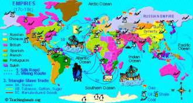
(CREDIT - IMG.PHOTOBUCKET.COM)
Din 1945 încoace, când au simțit că au devenit prea slabe pentru a supraviețui, majoritatea imperiilor au
renunțat la putere relativ pașnic și ordonat. Procesul de colaps imperial a decurs în liniște nu în totalitate,
dar în cea mai mare parte. Imperiul Britanic
este un exemplu bun. În 1945, Marea Britanie controla aproximativ un sfert din lume și un sfert din oamenii
lumii. Există țări unde britanicii au încercat să rămână la putere cu ajutorul armatei, și de asemenea
alte locuri în care după retragerea britanicilor a izbucnit violența, cum ar fi Palestina, Cipru sau
India. Dar, în cele mai multe cazuri, Imperiul Britanic s-a retras nu din cauza unei revolte pe care
nu o putea supune, ci pentru că conducătorii imperiului au ajuns la concluzia că sunt prea slăbiți pentru
a continua. Deliberat și de bună voie, ei au transferat puterea unor elite locale noi și în cele mai
multe cazuri steagul britanic a fost dat jos și steagul țării independente a fost arborat în locul său.
A apărut un nou stat, fără un război sângeros, fără a ucide milioane de oameni, un stat cu granițe și
identitate independentă și relativ sigură. Nu s-a întâmplat așa în toate cazurile, dar în cele mai multe
cazuri. Violența a fost încă prezentă când imperiul britanic s-a prăbușit, dar în comparație cu media
istorică, în comparație cu ce s- a întâmplat în istorie când s-au prăbușit marile imperii, retragerea
britanică a fost un
exemplu de pace și ordine .
Pagina 306


Un exemplu și mai remarcabil este prăbușirea Imperiului sovietic din Rusia , la sfârșitul anilor 1980 și începutul anilor 1990. Cu toate conflictele erupte în Balcani, în Caucaz și în Asia Centrală, putem spune cu siguranță că niciodată în istorie un imperiu de o astfel de anvergură nu a dispărut atât de repede, în termen de doar doi ani, atât de liniștit și într-o manieră atât de ordonată. Imperiul sovietic în 1989 nu a suferit nici o înfrângere militară, cu excepția înfrângerii din Afganistan, care a fost ceva minor și nu ar fi putut provoca prăbușirea unui imperiu atât de mare. Declinul Imperiului Rus sovietic nu a fost similar Imperiului Roman care s-a prăbușit din cauza presiunii hoardelor de germani, huni și barbari invadatori. Nimeni nu a invadat Imperiul sovietic în 1989. În mod similar, nu a existat nici revoltă serioasă împotriva Imperiului sovietic. Nu a fost o campanie de nesupunere civilă cum a fost cea a lui Mahatma Ghandi în India contra britanicilor. Nimeni nu a luptat contra sovieticilor, cu o excepție,
mișcarea Solidarității din Polonia. Mișcarea de Solidaritate a eșuat. Lech Walesa a condus o campanie de nesupunere civilă în Polonia, una dintre țările care au apartinut imperiului sovietic. Dar, din nou, cu tot respectul, nu a fost cauza prăbușirii imperiului sovietic. Sovieticii în 1989, nu numai că nu trebuiau să se confrunte cu o invazie din afară sau o rebeliune din interior, ci controlau în continuare cea mai mare și mai puternică armată din istorie. Aveau milioane de soldați, zeci de mii de tancuri și avioane, submarine și nave, precum și destule arme nucleare pentru a nimici întreaga omenire de mai multe ori.
Pagina 307
Armata roșie, armata sovietică, precum și celelalte armate din Pactul de la Varșovia din blocul comunist
au rămas loiale Moscovei. Dacă
Mihail Sergheevici Gorbaciov, ultimul conducător sovietic, ar fi dat ordinul, armata roșie ar
fi făcut tot ceea ce ar fi trebuit. Să deschidă chiar focul contra civililor, a rebelilor, a tuturor
demonstranților. Deci, nu exista nici o presiune pentru elita sovietică, cum a fost cazul romanilor,
care au fost învinși și nu au avut suficient aparat militar ca să reziste. Ce s-a petrecut a fost că
elita sovietică și regimurile comuniste din întreaga majoritatea țărilor din Europa de Est, cu excepția
României și Serbiei, au ales să se desprindă din Imperiu de bună voie și pașnic. Când au văzut că comunismul
nu funcționează, elitele nu au ales să folosească puterea militară ca să păstreze în funcțiune sistemul
și să subjuge pe oricine ar fi încercat să li se opună. Au ajuns la concluzia că sistemul nu a funcționat
în modul dorit, și au decis de bunăvoie și pașnic să renunțe la putere. Niciodată atât de multă putere
nu a fost cedată de atât de puțini oameni. Oamenilor le place să dea vina pe conducerea sovietică pentru
multe, dar ar trebui să le dea credit cel puțin pentru faptul că au avut
integritatea, simțul moral și responsabilitatea etică să desființeze imperiul lor pașnic. În istorie,
atât de multă putere nu s-a mai transferat niciodată înainte la atât de puțini oameni. Pentru Premiul
Nobel pentru Pace, Dr. Harari l-ar nominaliza pe Gorbaciov și elita sovietică, pentru că au cedat de
bunăvoie la atâta putere colosală fără a provoca multe probleme. Ceea ce este și mai remarcabil, sau
la fel de remarcabil este faptul că, Gorbaciov și colegii sai au renunțat în 1989 nu numai la imperiul
sovietic, un imperiu relativ nou, înființat de către Stalin după al doilea război mondial.
Primirea țarului Rusiei la Kremlin (credit - Wikimedia)
De asemenea, ei au au renunțat la Imperiul Rus, un imperiu mult mai vechi care a fost înființat de
Ţari
în secolele anterioare. În același timp, conducerea sovietică a renunțat la controlul țărilor din Europa
de Est și a permis de asemenea imperiului rus să se prăbușească, teritorii să se fragmenteze pe care
Ţariii le-au
cucerit cu un secol, două sau trei secole mai înainte, cum ar fi Ucraina, Lituania și
Estonia, colhozuri, Asia Centrală, Kazahstan și Uzbekistan. Tuturor acestor zone, cuceririle
țarilor din secolul al 18-lea și al 19-lea, conducerea sovietică le-a permis să obțină independența
față de Moscova, față de Imperiul Rus.
Schimbări pașnice
Pagina 308
Imperiul britanic și cel francez la 1920 (CREDIT - Wikimedia)
Prăbușirea imperiilor britanic, francez, rus și a celorlalte puteri europene s-a produs în cea mai mare
parte pașnic. Ele au făcut locul nu la haos, ci la
zeci de state independente. Când francezii și britanicii au părăsit Africa și Asia, zeci de state
independente noi au ocupat ceea ce a fost anterior Imperiul Britanic și francez. În mod similar, atunci
când imperiul sovietic s-a prăbușit, fapt care ar fi putut crea numeroase oportunități pentru războaie
de frontieră între statele noi, cele mai multe dintre noile state ale lumii, precum și cele mai multe
state din lume, în general, au fost remarcabil de pașnice, remarcabil de dezinteresate de război pe parcursul
ultimelor decenii. Din 1945, nu se mai invadează alte state în scopul de a le cuceri și înghiți. Astfel
de cuceriri erau
pâinea și untul istoriei politice din vremuri imemoriale. Doar așa s-au stabilit cele mai mari imperii
si cei mai mulți conducători și populații așteptau ca lucrurile să rămână așa. Lumea se aștepta ca împăratul
unui alt regat să-i poată invada, să le înfrângă armata, să le cucerească teritoriul, să-i subjuge și
anexeze la împărăția sau imperiul lor. Acest lucru nu se mai întâmplă în cele mai multe părți ale lumii.
Campaniile de cuceriri, cum erau cele romane, asiriene, mongole sau otomane nu mai pot avea loc astăzi
niciunde în lume.
Pagina 309

O navă a Marinei peruviene, în apele ecuadoriane în
timpul conflictului. (WIKIMEDIA)
Înaintea a fost războiul Bolivia-Paraguay, din 1932 și
1933. Înainte de asta, războiul serios anterior a fost în
1884, între Chile, pe de o parte și Bolivia și Peru pe de altă parte. Acest lucru înseamnă că, vreme
de 130 ani
am văzut la sfârșitul acestui război între Chile și Bolivia și Peru în 1884. Singurele două
războaie internaționale grave de atunci au fost la sfârșitul anilor 1930, 1940. A mai fost un alt război
celebru în America de Sud, războiul din Insulele Falkland, în 1982, care a implicat o țară din afara
Americii de Sud, Marea Britanie. Chiar dacă luăm războiul din Insulele Falkland în considerare, doar
trei războaie în 130 ani într-o zonă atât de mare cât America de Sud este o realizare uimitoare.
De asemenea, lumea arabă este rareori văzută ca o zonă liniștită în lume. Dar după ce țările arabe au câștigat independența față de imperiile europene, o singură dată o țară arabă a invadat teritoriul unui alt stat într-o încercare de cucerire. A fost invazia Kuweitului de către Irak în 1990. Au fost destul de multe ciocniri de frontieră între țările arabe, de exemplu între Siria și Iordania în 1970. Au existat multe intervenții armate ale unui stat arab în treburile altuia. De exemplu, sirienii au intervenit în Liban de-a lungul a mulți ani. Și au fost multe războaie civile și revolte și revoluții în țările arabe. Cu toate acestea, nu au existat războaie internaționale pe scară largă între statele arabe, cu excepția invaziei Kuweitului de către Irak în 1990.
(CREDIT - Wikimedia)
Acest fapt este uimitor dacă îl comparăm cu politica din cea mai mare parte a lumii până în ultimele decenii
. Chiar dacă lărgim perspectiva și urmărim nu doar
lumea arabă ci întreaga lume musulmană, țări precum Iran, Turcia, Indonezia și Pakistan. În întreaga
lume musulmană a ultimelor decenii, a existat un singur caz de război internațional major grav între
două state
musulmane; războiul Iran-Irak în anii 1980, asta e tot. În afară de invazia Kuweitului de
Pagina 310
către Irak și războiul dintre Irak și Iran nu mai avem alte exemple în care o țară musulmană încearcă să cucerească o alta. Nu a fost nici un război major între să zicem, Turcia și Iran, sau între Indonezia și Malaezia, sau între Pakistan și Afganistan. Au fost multe razboaie civile, multe revoluții, multă violență internă, dar la nivelul politicii internaționale, de război internațional, lumea musulmană din ultimele decenii este remarcabil de liniștită. În Africa lucrurile nu sunt tot atât de roz. Dar chiar și aici, majoritatea conflictelor erau războaie civile, revoluții și răscoale. De când statele africane și-au câștigat independența față de imperiile europene în anii '60 și '70, foarte puține au invadat o țară vecină, în speranța de a o cuceri, sau să cucerească o parte semnificativă a acesteia.
Ce înseamnă pacea reală?
În mod cu totul surprinzător, când oamenii aud astfel de vești minunate, de pace în lume, în loc să reacționeze
cu bucurie și fericire, cei mai mulți reacționează cu neîncredere și chiar furie. Un contra-argument
comun este că probabil trăim o perioadă de pace relativă în lume în ultimele decenii, dar au mai existat
astfel de perioade de-a lungul istoriei. De exemplu, Europa între 1871 și 1914 a trăit o perioadă de
pace relativă, puține războaie internaționale și totul s-a terminat destul de prost. S-a încheiat cu
primul război mondial. Toate perioadele anterioare de pace din istorie s-au încheiat cu războaie. Oamenii
spun că e tot posibil să avem câteva decenii de pace, dar următorul război mare, al treilea război mondial
ne așteaptă după colț. Dr. Harari subliniază faptul că nu putem spune ce se va întâmpla în viitor, nimeni
nu poate garanta că al treilea război mondial nu va erupe în 2020 sau 2040. Dar pacea pe care lumea o
trăiește astăzi este foarte diferită de pacea tuturor perioadelor pașnice anterioare din istorie, deoarece
cuvântul
"pace" are două semnificații distincte și foarte diferite. Prima este pur și simplu
lipsa războiului. Dacă nu există nici un război între două state, noi spunem că cele două țări sunt
în pace. Acest fel de pace s-a repetat în perioadele anterioare ale istoriei. De exemplu în Europa, între
1871 și 1914 spunem că a fost pace, pentru că nu a izbucnit nici un război. Războiul lipsea, așa că a
fost pace. Acest tip de pace este foarte fragil. O lege de fier a politicii internaționale de-a lungul
istoriei decretează că la fiecare două formațiuni politice apropiate, care sunt în prezent la pace, există
o ipoteză după care ele vor merge la război în termen de un an. Această lege s-a aplicat des de-a lungul
istoriei. În Europa sfârșitului de secol 19, Germania și Franța în 1899 erau la pace, dar exista un scenariu
plauzibil pentru un război între Germania și Franța în 1900. Similar, în Evul Mediu, dacă în 1300 Anglia
și Franța erau la pace, exista un scenariu probabil ca în termen de un an cele două țări vor fi în război.
Acest lucru a fost valabil si pentru China antică, și Grecia antică și Mesopotamia antică și pentru toate
celelalte perioade ale istoriei. Dacă Sparta și Atena erau la pace în 450 î.Hr., exista un scenariu plauzibil
că ar fi în război la 449
BC.
În zilele noastre, omenirea a rupt această lege
pentru prima dată în istorie. Astăzi, cuvântul "pace" a căpătat un nou sens. Noua pace
nu înseamnă lipsa războiului ci înseamnă neverosimilitatea unui război, imposibilitatea unui război.
Pacea reală, tipul avut astăzi în lume, nu este atunci când nu izbucnește nici un război. Pacea reală
este atunci când războiul este imposibil, de neconceput, de neimaginat. Oamenii de știință și
cercetătorii disting acestă nouă formă de pace, pentru că în lume nu a existat niciodată
Pagina 311
înainte o astfel de pace. Pentru
majoritatea țărilor din lumea de astăzi nu există nici un scenariu plauzibil care să conducă la război
pe scară largă în termen de un an. Ce ar putea provoca un război în 2014 între Franța și Germania, sau
între Japonia și China, sau între Brazilia și Argentina? Nu există nici un scenariu credibil pentru o
astfel de ipoteză. Pot să existe ciocniri minore la frontiere, spre exemplu poliția de frontieră din
Brazilia poate trage câteva focuri spre poliția de frontieră argentiniană din cauza unei neînțelegeri,
și se poate produce un incident internațional, dar un război adevărat ar implica divizii blindate ale
armatei braziliane care să mărșăluiască la porțile Buenos Aires și bombardiere argentiniene care să pulverizeze
cartiere întregi din Rio de Janeiro și Sao Paulo. Un astfel de război este de neimaginat în 2014. Când
spunem că guvernul brazilian se întâlnește pentru discuții ce privesc bugetul pentru anul viitor, 2014,
ministrul brazilian de apărare nu se ridică să spună: stop! Trebuie să punem deoparte câteva miliarde
de dolari în eventualitatea în care, anul viitor, vom dori să cucerim Argentina, Uruguay deci trebuie
să avem astfel de rezerve. Dacă ar face-o, colegii lui ar crede că a înnebunit. Acesta este noul sens
al păcii, nu razboiul care nu se întâmplă, ci faptul că războiul este pur și simplu de neconcepu. Există
excepții, țări precum Israel și Siria, sau Etiopia și Eritreea. Ne-am putea imagina un război care să
erupă între Siria și Israel anul viitor. Ministrul israelian de aparare se poate ridica în discuțiile
privind bugetul să spună, așteptați un minut, ce facem dacă apare un război cu Siria anul viitor. Dar
în cele mai multe cazuri astfel de lucruri nu se întâmplă.
Unele persoane susțin că este foarte naiv să credem că lumea este într-o nouă eră a păcii. Nu putem spune
cu siguranță ce va întâmpla în cinci sau zece ani sau poate 20 de ani. Dar chiar această naivitate este
fascinantă. Oamenii, guvernele și companiile își duc viața, fără a-și imagina vreodată posibilitatea
unui război serios. Faptul că oamenii pot fi atât de naivi este în sine o dovadă pentru cât de pașnică
a devenit lumea.
Cum am realizat "pacea"
Oamenii de știință au încercat să explice această evoluție fericită în multe feluri. Au scris cărți și articole.
Principalele teorii sau factori care contribuie la noua eră a păcii vor fi prezentate pe scurt. Cel mai
important factor este
prețul războiului care a crescut dramatic. În prezent, un război pe scară largă este extrem de costisitor,
din cauza daunelor mari pe care un războiul le provoacă și mai presus de toate daunele pe care armele
nucleare le pot provoca. Premiul Nobel
Ultim pentru Pace, dacă ne-am gândit că Mihail Gorbaciov ar fi un pretendent pentru el, apoi principalii
săi concurenți sunt fizicienii care au inventat bomba atomică și armele nucleare. Armele nucleare au
făcut prețul războiului atât de mare încât a condus țări să nu se mai angajeze în război, în special
în războaie majore între superputeri pentru o poziție hegemonică în lume. Astfel de războaie între superputeri
majore cu arme nucleare s-ar transforma in sinucidere colectivă. Nici o națiune nu poate ieși victorioasă
după un război nuclear între superputeri, nu ar exista decât învinși.
Pe măsură ce prețul războiului a crescut, profiturile de pe urma războiului au scăzut oferindu-ne al
doilea motiv pentru pacifismul zilelor noastre,
declinul în profituri. Pentru cea mai mare parte a istoriei, regi, împărați și sultani se puteau
îmbogăți prin cucerirea, jaful și anexarea teritoriilor inamice. Cea mai mare avere de-a lungul istoriei
a fost bogăția materială, cum ar fi terenuri, vite, sclavi, aur și așa mai departe. Pentru că era o
Pagina 312
bogăție materială, era relativ ușor de cucerit, prădat sau ocupat. Se putea cuceri cu ușurință o
mină de aur, sau un câmp de grâu. Astăzi însă, bogăția în lume constă mai mult în capital uman, în
cunoaștere, în structuri economice sociale complexe, cum ar fi bănci și corporații. Acestea sunt
sursele de bogăție astăzi în lume, nu câmpuri și minele de aur. Prin urmare sunt foarte greu de cucerit,
prădat sau anexat.
Dr. Harari ia exemplu statului California. California, chiar și fără restul Statelor Unite, este
unul dintre cele mai bogate zece state din lumea de astăzi. Bogăția din California a fost inițial
construită pe baza minelor de aur. Goana după aur de la mijlocul secolului al 19- lea a transformat
California dintr-un teren al nimănui, arid și greu de locuit, într-o mare putere economică și un
centru politic mondial. Astăzi, minele de aur din California joacă un rol periferic în economia din
California. Mult mai important este Silicon Valley unde au sediul Google, Facebook, Microsoft și
multe alte companii, precum și industria de film de la Hollywood. Acesta este tipul de bogăție care
există astăzi în California. Ce s-ar întâmpla dacă, de exemplu, chinezii și-ar spune, hai să invadăm
California, să o cucerim și trimit o armată într-o flotă mare peste Oceanul Pacific, și ar masa milioane
de soldați pe plajele din San Francisco, Los Angeles și ar avansa spre interior? Chiar dacă chinezii
ar reuși să câștige, dacă americanii nu ar arunca o bombă atomică asupra lor și chinezii ar reuși
cumva să câstige, ce ar avea ei de câștigat? Ar obține foarte puțin, pentru că nu se poate cuceri
Silicon Valley. Se poate cuceri valea în sine, dar nu se poate cuceri bogăția din Silicon Valley,
pentru că bogăția din Silicon Valley nu provine din minele de siliciu. Nu există mine de siliciu
în Silicon Valley. Bogăția Silicon Valley se află în mintea, creierul inginerilor Google, Facebook
și inginerilor Microsoft. Aceste persoane, împreună cu toți actorii și regizorii de la Hollywood
ar fugi din California cu mult timp înainte ca chinezii să o cucerească. Ar fi de mult în New York,
Paris sau Bangalore, cu mult înainte ca tancurile chineze să ajungă la Silicon Valley sau la Hollywood.
Îmbogățirea prin cucerirea altor țări nu e posibilă astăzi cu ușurință.
Nu toate bogăția din lume este cunoaștere. Există unele locuri unde bogăția este încă de modă veche,
constând în mine și câmpuri petroliere și lucruri de genul asta. Acestea sunt exact locurile unde
războaiele internaționale grave pot avea încă loc. De exemplu, invazia Kuweitului de către Irak și
invazia irakiană a Iranului au avut loc într-o zonă în care bogăția este încă materială. Sheikh kuweitieni
puteau să fugă în străinătate atunci când tancurile irakiene i-au invadat, câmpurile petroliere însă
nu. Acesta este motivul pentru care Saddam Hussein a considerat că e cel puțin util să invadeze Kuweitul.
Avantajele aduse de pace
Al treilea motiv este că pacea a devenit
mai profitabilă decât oricând înainte. În timp ce războiul este mai puțin profitabil, pacea este
mai avantajoasă. În economiile tradițional agricole, comerțul pe distanțe lungi și investițiile străine
erau marginale, nu erau importante din punct de vedere economic. În consecință, pacea între regate diferite
aducea mici avantaje, cu excepția evitării costurilor de război, pacea a avut întotdeauna acest beneficiu.
În cazul în care Anglia și Franța erau la pace, francezii profitau de faptul că nu trebuiau să plătească
impozite grele de război, și nu aveau de suferit în urma invaziilor distructive britanice. Altfel, pacea
nu aducea alte avantaje. În economia capitalistă modernă, comerțul exterior și investițiile străine au
devenit foarte importante pentru economie. Pacea aduce propriile sale beneficii, propriile sale profituri
unice. Nu
Pagina 313
doar evitarea costurilor războiului, este profitabil să fie în pace pentru că se poate desfășura comerț
liber și investițiile străine înfloresc. Atâta timp cât China și Statele Unite, de exemplu, sunt la pace,
chinezii pot prospera prin tranzacționarea cu Statele Unite, pot vinde produse chinezești americanilor,
pot face investiții pe Wall Street, și pot primi investiții americane în China.
Pacea aduce prosperitate.
În plus față de armele nucleare și motivele economice, există, de asemenea, un motiv cultural important
pentru dispariția războiului. Multe elite vechi, cum ar fi căpeteniile Hun, nobili vikingi sau preoții
Azteci vedeau războiul pur și simplu ca pe ceva bun, ceva pozitiv. Nu e de mirare că au pornit atâtea
războaie. Alte elitele vedeau războiul ca pe ceva rău, așa cum și este, dar îl vedeau ca pe un rău inevitabil,
ca o parte naturală a lumii, și de aceea era cel mai bine să fie folosit pentru propriul avantaj. Epoca
modernă târzie a fost prima dată în istorie când lumea a ajuns să fie dominată de o elită într- adevăr
pacifistă. Politicieni, oameni de afaceri, intelectuali și artiști văd cu adevărat războiul ca pe ceva
atât de rău și care poate fi evitat. Cei mai mulți politicieni și artiști din lumea de astăzi nu spun
că războiul este ceva rău, ci că nu ne poate aduce nimic bun. Ei cred că dacă ne vedem în mod serios
și înțelept de afacerile noastre, putem găsi modalități de a evita complet războaiele și mentalitatea
funcționează într-adevăr, există tot mai puține războaie astăzi în lume.
Explicația finală pentru declinul războiului este faptul că statele și-au pierdut pur și simplu independența
și, prin urmare, nu pot purta războaie. Cele mai multe țări în lumea de astăzi nu se mai angajeze în
conflicte pe scară largă scală pentru simplul motiv că ele nu mai sunt independente. Chiar dacă cetățenii
din țări precum Israel, Italia, Thailanda sau Mexic trăiesc cu iluzia independenței guvernelelor lor,
acestea nu pot de fapt conduce politici economice interne sau externe independente. Sunt incapabile de
a lansa și desfășura un război pe scară largă pe cont propriu, fără aprobarea comunitatății internaționale
și a elitelor internaționale. Suntem martorii astăzi la formarea unui nou imperiu, a unui
imperiu global. Ca și imperiile anterioare, acest imperiu global impune pace în interiorul frontierelor
sale. Deoarece granițele imperiului global acoperă întregul glob, imperiul global impune în mod eficient
pacea în lume.
Aceste explicații diferite nu sunt contradictorii, ci sunt complementare. Istoricii dezbat cât de important
este fiecare criteriu, dar cele mai mulți sunt de acord că toate explicațiile contribuie la intelegerea
perioadei de liniștea unică în care suntem destul de norocoși să trăim. Deci, cum putem rezuma
esența epocii moderne? Este cumva o perioadă de războaie, sacrificii și asuprire așa cum s-a trăit
în timpul războaielor mondiale? sau este o eră de pace care a devenit predominantă în lume în ultimele
decenii? Răspunsul nu e deloc banal și trebuie să înțeleagă orizontul istoric. Este șocant cât de des
punctul de vedere al trecutului este distorsionat de evenimentele ultimilor ani. Dacă această curs ar
fi fost scris în 1945 sau 1962, la sfârșitul celui de-al doilea război mondial, sau în plin Război Rece,
perspectiva ar fi fost probabil mult mai sumbră. Probabil că s-ar fi concentrat mult mai mult pe violența
din lume. Dar din moment ce această lecție este predată în 2015 și ultimele decenii au fost relativ pașnice,
punctul de vedere al istoriei moderne e mult mai luminos. Pentru a satisface atât optimiștii cât și pesimiștii
cu privire la ce ne așteaptă în secolul următor, se poate finaliza această lecție prin a spune că epoca
modernă târzie nu este caracterizată în mod necesar prin violență sau pace, dar mai presus de toate de
un dinamism fără precedent, suntem astăzi în pragul atât al
Pagina 314
raiului cât și al iadului. Istoria încă nu s-a decis încă în ce ne privește, și un șir de coincidențe
ne-ar putea trimite în orice direcție.
O altă întrebare răzbate de deasemenea din istoria modernă, și anume dacă în ciuda tuturor revoluțiilor
uimitoare și invențiilor ultimelor secole, fericirea omului ca individ s-a îmbunătățit sau nu. Sunt oamenii
de azi, în 2015, mai fericiți decât oamenii din secolul al
19-lea, sau în Evul Mediu, sau în Egiptul antic? Acesta este subiectul lecției următoare.
Dr. Harari va încerca să răspundă la această întrebare tulburătoare care privește fericirea sau suferința
omenirii. Ne vom întreba serios dacă astăzi, după toate revoluțiile și invențiile și așa mai departe,
suntem într-adevăr mai fericiți decât strămoșii noștri din Evul Mediu, sau din Egiptul antic, sau vânători-culegătorii
care au trăit cu zeci de mii de
ani în urmă.
Lecția XVI: Fericirea modernă
...și au trait fericiți până la adânci bătrâneți
Au făcut cei 500 de ani de descoperiri și revoluții uimitoare pe oameni mai fericiți
? Sunt oamenii zilelor noastre mai fericiți decât în Evul Mediu,
sau în Epoca de Piatră
? Dacă nu, atunci care este rostul tuturor schimbărilor? Cele mai multe cărți de istorie ignoră astfel
de probleme, dar acestea sunt cele mai importante întrebări pe care le putem pune istoriei. Noile
studiiîn biologie, economie, psihologie oferă perspective fascinante înistoria fericirii umane.
În lecția aceasta, Dr Harari de la Universitatea Ebraică din Ierusalim discută despre fericire și cum se poate măsura fericirea. El va încerca să descopere dacă progresul global ne-a făcut mai fericiți.
Ne-a făcut progresul mai fericiți?
S-a discutat revoluția științifică și impactul covârșitor pe care l-a avut asupra lumii și omenirii. Ultimii 500 de ani au fost martorii unor schimbări fără precedent. Planeta s-a unit într-o singură sferă economică. Economia a crescut exponential și omenirea se bucură acum de avantaje care erau în
trecut de domeniul viselor. Știința și Revoluția Industrială au dat practic omenirii putere și energie nelimitată. Ordinea socială s-a transformat radical, la fel și politica, viața de zi cu zi și psihologia umană. Dar suntem noi mai fericiți? S-au tradus acumulările ultimelor secole în mai multă fericire ? A deschis descoperirea resurselor energetice inepuizabile drumul spre resurse nesecate de fericire? Mergând mai înapoi în timp, putem lărgi această întrebare la scara întregii istorii umane , la toți cei 70.000 ani de istorie. Au adus cei 70,000 ani de revoluții și schimbări o lume mai bună? Suntem oamenii astăzi mai fericiți decât vânători-culegătorii acum zeci de mii de ani în urmă? Dacă nu, ce sens mai au toate transformările?
Istoricii își pun rar asemenea întrebări. Ei nu se întreabă de exemplu, dacă cetățenii din
Babilon erau mai fericiți decât vânători-culegătorii care au trăit în Mesopotamia acum
20.000 ani. sau dacă răspândirea islamului i-a făcut pe egipteni mai mulțumiți de viață, sau dacă prăbușirea imperiilor europene în Africa le-a adus africanilor fericire sau nenorocire.Totuși, acestea sunt cele mai importante întrebări pe care le putem pune în istorie. Căci care ar mai fi scopul la creștere economică, libertate politică, egalitate socială dacă ele nu îi fac pe oameni mai fericiți? Puțini au studiat la modul serios, științific, istoria fericirii pe termen lung. Aproape fiecare dintre noi, savant sau om obișnuit, are o idee vagă cu privire la această chestiune. O perspectivă comună Pagina 316
subliniază faptul că capacitățile umane au crescut dramatic de-a lungul istoriei. Din moment ce oamenii își
folosesc de obicei puterea pentru a elimina problemele și a-și împlini aspirațiile, rezultă, în conformitate
cu acest punct de vedere, că având mult mai multă putere decât strămoșii noștri, trebuie să fim mult
mai fericiți decât strămoșii noștri medievali. Aceștia la rândul lor trebuie să fi fost mult mai fericiți
decât vechii vânători- culegători. Din păcate, punctul de vedere progresist al istoriei fericirii nu
este prea convingător. După cum am văzut de multe ori de-a lungul acestui curs, mai multă putere și abilități
noi nu aduc neaparat o viață mai bună și mai fericită.
sclavi ZADIB YEMEN 13TH CENTURY (CREDIT -
De exemplu, în timpul revoluției agricole, puterea colectivă a omenirii de a modela mediul, precum și de a controla ce se întâmplă în lume, a crescut cu siguranță. Omenirea a fost mult mai puternică după revoluția agricolă. Dar destinul, condițiile de viață și viața de zi cu zi a individului uman a fost în multe privințe mai rea decât înainte. Țăranul trebuia să lucreze mai mult decât culegătorul, și primea drept răsplată o hrană mai puțin consistentă. Țăranul era mult mai expus la boli și exploatare sau la invazii decât strămoșul lui, vânător-culegătorul. Revoluția agricolă a mărit deci cu siguranță puterea omenirii, dar nu a făcut-o mai fericită.
Similar, ridicarea imperiilor europene în epoca modernă a mărit cu siguranță puterea
colectiv-umană, circulația liberă a ideilor, tehnologiilor și culturilor, precum și a deschis noi orizonturi
comerciale și industriale. Cu toate acestea, toate evoluțiile și schimbările precum și toată creșterea
în putere a umanității n-a fost deloc o veste bună pentru zecile de milioane de africani, amerindieni
și australieni aborigeni, care au fost înrobiți de către europeni.
Pare naiv să credem că există o legătură între putere și fericire, având în vedere tendința umană dovedită
de a abuza de putere. Unii critici ai acestui punct de vedere pozitiv iau chiar o poziție diametral
opusă. Ei susțin nu numai că nu există o corelație directă între putere și fericire, ci că de fapt
există o relație inversă între putere și fericire. Puterea corupe. Pe măsură ce omenirea a dobândit
tot mai multă putere pe parcursul istoriei, ea a creat o lume foarte rece, mecanică, bolnavă, nepotrivită
nevoilor reale ale
Homo sapiens. În conformitate cu acest punct de vedere, evoluția a modelat mintea și corpul pentru
viața de vânători-culegători. Tranziția în primul rând la agricultură, și mai târziu la industrie, a
condamnat de fapt ființele umane la o viață nenaturală. Omul nu-și poate da drumul la instinctele înnăscute
și nu-și mai poate satisface cele mai profunde dorințe și nevoi. Viața poate fi comodă astăzi, dar nimic
din viața confortabilă a clasei de mijloc urbane nu se poate compara cu bucuria sălbatică, pură, trăită
de o bandă de vânători în
timpul uciderii unui mamut.
Pagina 317
(CREDIT - DINOSAURCOLLECTOR)
Acest punct de vedere naiv asupra istorie, o obsesie romantică de a vedea numai partea întunecată în fiecare
invenție, este la fel de dogmatică ca și credința în inevitabilitatea
progresului.
Poate că nu mai suntem astăzi în legătură directă cu sinele nostru de vânător- culegător, dar nu trăim
atât de rău. Evoluția adusă de istorie nu a provocat neapărat numai rele. De exemplu, în ultimele două
secole, medicina modernă a scăzut mortalitatea infantilă de la circa 33% la mai puțin de
5%. Nimeni nu se poate îndoi că acest lucru a adus o contribuție uriașă la fericire, nu doar pentru copiii
care altfel ar fi murit de boli, dar de asemenea pentru părinți, familii și prietenii lor.
O a treia poziție comună cu privire la istoria pe termen lung a fericirii merge pe o cale de mijloc.
Aceasta susține că până la revoluția științifică nu a existat nici o corelație clară între putere și
fericire. Oamenii medievali au fost poate mai nefericiți decât strămoșii noștri vânători-culegători cu
zeci de mii de ani în urmă. Dar, conform acestei poziții, în ultimele secole, pe parcursul revoluției
științifice, oamenii au învățat în cele din urmă cum să-și folosească puterea mai înțelept. Triumful
medicinei moderne este doar un exemplu în acest sens. Alte realizări fără precedent ale omenirii, după
sau în timpul revoluției științifice, includ scăderea dramatică a gradului de violență.
Optimismul epocii moderne
Dispariția războaielor internaționale și eliminarea aproape completă a foametei pe scară largă înseamnă
că tot mai puține persoane mor în medie astăzi de foamete. Avem aici esența abordării de mijloc a istoriei
fericirii. Până la revoluția științifică, creșterea puterii nu a condus la o creștere a fericirii. Știința
ne-a dat însă înțelepciunea de a conecta în cele din urmă puterea și fericirea. În ultimele decenii și
secole, o putere dovedit tot mai mare
a trebuit să determine o creștere a fericirii umane. Perspectiva este însă o simplificare, în primul
rând pentru că evaluarea optimistă a vremurilor moderne se bazează pe un interval foarte mic de timp.
Majoritatea oamenilor au început să se bucure de succesele medicinii moderne nu mai devreme de 1850.
Scăderea drastică a mortalității infantile este un fenomen al secolului 20, doar un fenomen al ultimilor
100 de ani. Foametea în masă a continuat să afecteze o mare parte a omenirii până la mijlocul secolului
20. Războaiele internaționale a devenit rare abia după 1945, în mare parte datorită amenințării anihilării
complete folosind forța nucleară. Prin urmare, chiar dacă ultimele decenii au fost un soi de epocă de
aur fără precedent pentru omenire, este încă o
Pagina 318
perioadă foarte scurtă. E prea devreme să concluzionăm că reprezintă o cotitură fundamentală a istoriei,
sau doar un accident efemer.
A doua problema cu punctul de vedere optimist al epocii moderne este că chiar dacă aceasta scurtă epocă
de aur a ultimei jumătăți de secol a fost foarte bună pentru noi, în aceeași perioadă noi continuăm
să plantăm semințele unei catastrofe viitoare. De-a lungul ultimelor decenii, în ciuda liniștii relative,
am perturbat în nenumărate moduri echilibrul ecologic al planetei, lucru care va aduce probabil consecințe
foarte periculoase în viitor. În special de-a lungul ultimelor decenii, există o mulțime de dovezi
care indica faptul ca
ne distrugem însăși baza prosperității viitoare într-un soi de
orgie de consum nesăbuită. Poate va mai dura ani buni, dar vom plăti scump în următoarele decenii
și secole. Nimeni nu înțelege cu adevarat care sunt consecințele tulburărilor ecologice majore cauzate
de oameni.
Un alt motiv pentru a fi mai rezervați în acest punct de vedere modernist și prea optimist este că ne
putem felicita pentru realizările fără precedent ale lui Homo sapiens modern doar dacă ignorăm complet
soarta tuturor celorlalte animale de pe planetă.
O mare parte din barierele care ne protejează astăzi de boli și a foamete se datorează torturii maimuțelor
de laborator și a vacilor de lapte precum și a miliardelor de pui pe benzi transportoare.
În ultimele două secole, zeci de miliarde de animale au fost supuse unui regim de exploatare industrial
de o cruzime fără precedent în analele planetei Pământ.
Pagina 319
Dacă acceptăm chiar și numai o zecime din ceea ce spun activiștii pentru drepturile animalelor, agricultura
industrială modernă se dovedește a fi cea mai mare crimă din istorie, a provocat suferințe de neegalat.
Când discutăm fericirea globală este desigur greșit să măsurăm doar fericirea să zicem a clasei superioare,
sau a europenilor, sau doar a bărbaților și să ignorăm cuvântul femeilor sau al africanilor. Poate că
este de asemenea greșit să luăm în considerare numai fericirea oamenilor atunci când încercăm să evaluăm
nivelul global de fericire și să omitem cu totul fericirea sau suferința altor animale.
Acestea sunt problemele cu a treia opțiune de vizualizare a modernității ca o eră în care fericirea a
început să crească în paralel și datorită creșterii puterii umane.
oameni nevoiași
O altă problemă la toate punctele de vedere discutate până acum este faptul că ele privesc fericirea în mare
măsură ca un produs al factorilor materiali, cum ar fi sănătatea, dieta, averea și așa mai departe. Dacă
oamenii sunt mai bogați și mai sănătoși, în conformitate cu această abordare, atunci ei trebuie să fie
de asemenea mai
fericiți. Dar este cu adevărat așa? De-a lungul istoriei, preoți, filozofi și poeți au cercetat natura
și cauzele fericirii. Multe dintre cele mai strălucite minți ale tuturor secolelor au ajuns la concluzia
că factorii sociali, etici și spirituali ne influențează la fel de mult fericirea ca și condițiile materiale.
Deși nimeni nu poate susține că condițiile materiale de astăzi sunt mai rele decât în trecut, dacă fericirea
depinde nu doar de starea materială ci și de factori sociali și spirituali, aceasta nu înseamnă neapărat
că suntem mai fericiți decât strămoșii noștri. Poate că oamenii din țările dezvoltate moderne suferă
prea mult de alienare și depresii, în ciuda prosperității lor materiale. Poate că strămoșii noștrii mai
puțin înzestrați material reușeau să găsească mulțumire și bucurii în relațiile comunitare, în religie,
în legătura cu natura..

Istoria fericirii
(CREDIT - HUFFINGTONPOST.COM)
Mulți filozofi, poeți și gânditori de-a lungul istoriei au reflectat asupra naturii și cauzelor fericirii. Ei au ajuns
Pagina 320
la concluzia că factorii materiali sunt importanți, dar factorii sociali, etici și spirituali joacă de asemenea
un rol foarte important, au un impact foarte mare asupra fericirii noastre, așa că e greșit să-i ignorăm
cu totul. În ultimele decenii, psihologi, economiști și biologi au preluat această provocare de a studia
științific ce face oamenii cu adevărat fericiți și să înțeleagă deasemenea dinamica fericirii în istoria
societății. Ne fac fericiți banii, relațiile de familie, factorii genetici, sau poate virtuțile și fapte
noastre bune? Primul pas, atunci când încercăm să studiem fericirea și ce anume îi face pe oameni fericiți,
este o definiție a fericirii și o cale de a o măsura. Fără o definiție și o măsurătoare nu se poate
proceda științific.
Graficul fericirii
Definiția general acceptată a fericirii așa cum este ea astăzi studiată în științele sociale este că fericirea este o bunăstare subiectivă . Acesta este
termenul profesional pentru fericire. În conformitate cu această definiție, fericirea
este ceva ce simțim. Fie un sentiment de plăcere imediat, fie un sentiment de mulțumire pe termen lung
cu modul nostru de viață. Dacă fericirea este ceva ce oamenii
simt, cum se poate masura ea științific din exterior? E posibil.. Oamenii de știință pot face asta cerând
la mai mulți oameni să le spună cum se simt. Psihologi sau biologi care doresc să evalueze modul în care
se simt oamenii le dau acestora pur și simplu chestionare de completat. Ei întreabă astfel mii de oameni
și îi roagă să descrie ceea ce simt. În acest mod putem construi
statistici despre fericire.
Un chestionar clasic despre bunăstarea subiectivă cere celor intervievați să evalueze pe o scară de la
zero la zece cât de bine se regăsesc în afirmații de genul: sunt foarte multumit de modul actual de viață,
simt că viața mea e plină de satisfacții, sunt optimist cu privire la viitor, viața este bună etc.
Pagina 321
(CREDIT -EKNAZAR.COM)
Apoi, cercetătorii adună toate răspunsurile și calculează nivelul general de bunăstare subiectivă în funcție de toate răspunsurile. Astfel de chestionare sunt folosite pentru a studia relația dintre fericire sau bunăstare subiectivă și alți factori, cum ar fi averea sau situația politică, sau situații sociale. De exemplu, dacă vrem să știm dacă banii îi fac pe oameni fericiți, dacă bogații sunt mai fericiți decât săracii, putem lua o mie de oameni care câștigă să zicem 100.000 dolari pe an. Le dăm tuturor aceste chestionare de completat, iar apoi comparăm rezultatele cu răspunsurile unei grupe de oameni care câștigă doar 50.000 de dolari. Dacă studiul descoperă că grupul celor bogați au un nivel de bunăstare subiectivă de 8.7 și cei mai săraci de numai 7.3, atunci oamenii de știință trag concluzia că există o corelație pozitivă între bogăție și bunăstarea subiectivă, mai simplu spus că banii aduc fericirea. Pe măsură ce oamenii câștigă mai mulți bani, ei se simt mai bine în pielea lor, sunt mai mulțumiți de viață, așa cum se poate observa din cifrele statistice. În cazul în care sunt întrebați doar unul sau doi oameni, ar putea exista deviații statistice, dar dacă dăm chestionarul la mii de oameni, dacă facem deci o cercetare corectă, atunci oamenii de știință cred că se poate găsi un indicator bun pentru influența averii asupra fericirii. Aceeași metodă poate fi folosită pentru a examina alți factori, cum ar fi dacă în societățile democratice oamenii sunt mai fericiți decât cei din dictaturi, dacă cei căsătoriți sunt mai fericiți decât cei singuri sau cei divorțați sau văduvi.
Rezultate parțiale
În loc să criticăm această formă de cercetare este mai bine să cântărim concluziile. Constatarea cea mai
importantă, după zeci și sute de astfel de cercetări efectuate în ultimele decenii, deci cea mai importantă
concluzie este că fericirea nu depinde de situații obiective, de avere, sănătate sau chiar de societate.
Mai degrabă, fericirea depinde în primul rând de
corelația dintre așteptări și situație. Ce înseamnă asta? Aceasta înseamnă că ești fericit nu pentru
că situația ta obiectivă este x. Ești fericit
pentru că așteptările tale, oricare ar fi acelea, se îndeplinesc. Acesta este cel mai
Pagina 322
important lucru. Dacă spre exemplu, visezi să ai o căruță cu boi, și obții chiar o căruță cu boi, atunci ești mulțumit. Ai ceea ce ți-ai dorit, ești fericit. Dacă, pe de altă parte, visezi la un Ferrari nou-nouț și obții doar un Fiat, atunci nu ești deloc mulțumit, chiar dacă Fiatul este mult mai rapid și mai sofisticat decât căruța. Nu ești fericit cu Fiatul pentru că nu îl compari cu căruța străbunicului tău, ci cu Ferrari-ul nou la care visai. Prin urmare, vei fi nemulțumit, aceasta în ciuda îmbunătățirii obiective a mijlocului de transport.
Fericirea și așteptările
Această linie de gândire înseamnă că schimbări dramatice ale condițiilor de trai pe parcursul istoriei
nu au făcut neapărat ființele umane mai fericite sau le-a schimbat nivelul de fericire în bine sau rău.
Mecanismul de bază al satisfacției umane descoperit de aceste studii este că atunci când situația se
îmbunătățește, așteptările explodează. Ne așteaptăm la prea mult, și deci chiar îmbunătățiri dramatice
ale condițiilor obiective ne pot lăsa nemulțumiți, pentru că ne așteptăm la mult mai mult
decât înainte. Când situația se deteriorează și condițiile devin mai rele decât înainte, atunci așteptările
tind să scadă și ele. Oamenii se așteaptă la mai puțin, și prin urmare, chiar o degradare severă a condițiilor
de trai îi lăsă la fel de fericiți ca înainte pentru că așteptările s-au adaptat la noua condiție. Aceasta
înseamnă că, de exemplu, oamenii din Evul Mediu nu au fost neapărat mai puțin fericiți decât suntem noi
în prezent. E adevărat că oamenii din Evul Mediu aveau condiții de viață mult mai dificile în multe privințe
decât oamenii de astăzi, dar așteptările lor erau de asemenea foarte diferite.
Mulți oameni găsesc această logică foarte greu de crezut. Problema este că, atunci când încercăm să ne
imaginăm cum simțeau oamenii în trecut, inevitabil ne imaginăm pe noi în locul lor, nu ne gândim cum
trebuie să se fi simțit ei, ci cum ne-am simți noi dacă am trăi în acele condiții. Această perspectivă
este greșită, pentru că uită să ia în considerare diferența în așteptări. Oamenii din Evul Mediu nu au
trăit cum trăim noi astăzi, nu aveau așteptările noastre. Să luăm un exemplu simplu. În societățile bogate
moderne din întreaga lume se obișnuiește ca oamenii să facă un duș în fiecare zi și să-și
schimbe des hainele. Țăranii medievali pe de altă parte, în Europa, China sau Orientul
Mijlociu nu se spălau uneori mai multe săptămâni și luni și nu-și schimbau aproape niciodată hainele,
pentru că pur și simplu nu aveau altele. Nouă, chiar gândul să nu ne
Pagina 323
spălăm, să nu schimbăm hainele care miros ne face sa ne simțim foarte, foarte inconfortabil. Dar țăranilor
nu le păsa, ei erau obișnuiți cu senzația și mirosul unor haine murdare și cu un corp murdar. Ei nu doreau
să facă duș și să-și schimbe hainele în fiecare zi, chiar dacă ar fi putut. Ei aveau ceea ce își doreau.
Erau mulțumiți cu ce aveau, pentru că nu aveau altfel de așteptări. Deci, cel puțin în ceea ce privește
dușul și hainele, chiar daca țăranii erau mult mai săraci decât oamenii de astăzi din societatea modernă,
nu înseamna că ei se simțeau mizerabili. Acest exemplu nu ar trebui să ne surprindă atât de mult. La
urma urmei, ajunge să aruncăm o privire la rudele noastre cimpanzeii. Cimpanzeii nu se spală aproape
niciodată, și nu-și schimbă niciodată hainele, dar nu se plâng și nici nu par nefericiți pentru că trebuie
să stea în aceeași blană murdară toată ziua.
Cele mai multe pisici și câini nu fac duș decât poate o dată la câțiva ani și nu-și schimbă niciodată
hainele, și cu toate astea proprietarii lor îi iau în brațe și chiar îi pupă. Nu ne așteptăm ca un câine
să facă un duș în fiecare zi, dar nu ne deranjează să-l mângâiem sau chiar să-l pupăm. Ne așteptăm ca
oamenii să facă duș în fiecare zi, și dacă partenerul de viață sau dacă unul din membrii familiei nu
face duș o
lună, atunci nu se mai apropie nimeni de el pentru că miroase, dar găsim faptul perfect în
regulă atunci când vine vorba de câini.
Un subiect și mai interesant de gândire este ce se întâmplă cu copiii mici. Copiilor mici din societatile
dezvoltate de astăzi deseori nu le place dușul. Este nevoie uneori de ani de pedepse și de luptă cu părinții
lor pentru a se disciplina să facă duș în fiecare zi. În multe case se duc bătălii zilnice cu copiii
care nu vor să facă duș. Părinții spun, nu, va trebui să faci duș înainte de a merge la culcare. În cazul
în care dușul este așa un lucru minunat, de ce s-ar mai opune copii mici? Cert este că un duș în fiecare
zi nu este natural pentru ființele umane. Nu e important pentru fericirea lor până când nu ne obișnuim
cu el. Odată obișnuiți cu el, după ce devine o așteptare atunci devine important. După aceea, dacă nu
facem duș în fiecare zi, ne vom simți mizerabil, cel puțin
până ne obișnuim cu noua stare
Pagina 324
nativ siberian (CREDIT - DAILYSTORMER.COM)
Se observă deci cât de importante sunt așteptările pentru fericire și istoria fericirii. O concluzie interesantă este că, dacă fericirea este într-adevăr determinată de așteptări, atunci doi dintre pilonii centrali ai societății moderne, mass-media și industria de publicitate, pot fi de angajați, probabil fără intenție, în a face pe oameni nu tot mai nefericiți, chiar dacă există îmbunătățiri uriașe în condițiile lor de viață. Mass-media și industria de publicitate ne prezintă tot timpul lucruri mai bune și mai bune și se ocupă cu creștea nivelului așteptărilor noastre. Acestea previn creșterea fericirii noastre. De exemplu, dacă ne gândim la modul în care oamenii se raportează la corpurile lor, ce cred oamenii despre cum arată. Să luăm exemplul unui sat mic de acum 5000 de ani în care un adolescent de 18 ani credea probabil că arată destul de bine pentru că în acele vremuri el vedea doar pe ceilalți 50 de bărbați din sat. Majoritatea celor 50 de bărbați erau mai în vârstă decât el, sau aveau riduri, sau sufereau de boli, sau erau copii mici. Adolescentul era deci sigur, pe baza comparației cu cele 50 de fețe masculine din jurul său, că arată destul de bine. Un adolescent în zilele noastre este mult mai probabil să simtă că nu arată suficient de bine, că arată inadecvat. Chiar dacă este înconjurat de alți adolescenți sau tineri care nu arată neapărat mai bine decât el, el este bombardat cu imagini de actori de cinema, sportivi și supermodele pe care le vede în fiecare zi la televizor și pe panouri gigantice, pe internet și așa mai departe. El compară propriul fizic cu imagini ideale, nu cu fizicul celorlalți 50 de copii din școala sau colegiul său. Prin urmare, nu trebuie să ne mirăm că nu e mulțumit.
Perspectiva științelor sociale asupra fericirii
Pagina 325
George W. Bush & Hosni Mubarak
Există studii care spun că imaginea propriului corp s-a deteriorat în era prezentă. Oamenii sunt mult mai puțin mulțumiți de felul în care arată astăzi decat acum 100 de ani sau 1.000 de ani. Acest raționament îi duce pe unii cercetători la concluzia că mass- media poartă o vină pentru nemulțumire. După câte vedem astăzi în lumea a treia, în țările în curs de dezvoltare, nemulțumirea este cauzată nu numai de sărăcie, boală, corupție și opresiune politică, dar, poate cel mai important, pur și simplu prin expunerea la standardele lumii civilizate . Să luăm spre exemplu Egiptul. Omul mediu egiptean s-a bucurat de condiții mai bune de trai sub Hosni Mubarak decât sub conducerea oricărui guvern anterior din istoria Egiptului. Era mult mai probabil să moară de foame, ciumă, sau ca urmare a războaielor sub Faraonul Ramses al II-lea , sau Cleopatra. Starea materială a omului mediu egiptean nu a fost niciodată atât de bună. Probabilitatea ca o femeie egipteană să moară în timp ce dădea naștere era mai mică în timpul lui Hosni Mubarak decât în orice epocă anterioară din istoria Egiptului.
CLEOPATRA și Cezar a lui Jean-Leon
Gerome-. (CREDIT - Wikimedia)
Speranța de viață a unui copil nou-născut în Egipt și șansa lui de a ajunge la maturitate fără a muri de
o boală teribilă pe parcurs a fost mult mai mare sub Hosni Mubarak decât sub orice guvern precedent.
Considerând toate astea, am putea crede că populația ar dansa pe străzi de bucurie, mulțumindu-i lui
Allah pentru norocul de a trăi sub Hosni Mubarak și nu într-o eră anterioară. Dar, după cum știm cu toții,
nu au fost prea fericiți cu el. Au organizat o revoluție. Au ieșit în stradă și au răsturnat cu furie
regimul lui Mubarak de la putere, spunând că ei nu sunt mulțumiți cu condițiile lor de viață, chiar dacă
acestea, cel puțin în ce privește măsurătorile obiective, erau mult mai bune decât în orice epocă anterioară
din istorie, cel puțin de la revoluția
agriculturii încoace. Egiptenii erau nemulțumiți
Pagina 326
nu pentru că se comparau cu strămoșii lor de sute și mii de ani în urmă, ci cu contemporanii lor din Europa
și America. Egiptenii nu se așteptau să trăiască similar cu Evul Mediu și nu au fost prea fericiți atunci
când condițiile s-au îmbunătățit. Ei se așteaptau să trăiască ca oamenii pe care îi vedeau la televizor,
în America, și au fost foarte nemulțumiți când Hosni Mubarak nu le-a putut oferi un astfel de nivel de
trai.
Deci, acestea sunt principalele concluzii ale cercetărilor în psihologie, sociologie și economie. Fericirea
depinde de asteptari. Pentru că asteptarile cresc mai rapid decât condițiile de trai, nivelul de fericire
de-a lungul istoriei s-a schimbat într-o măsură mai mică decât ne-am putea aștepta.
Perspectiva biologiei
Credit RON SIMS
Problema fericirii a fost studiat de cercetători din felurite domenii. Nu doar științe sociale, cum ar fi
ecologia și sociologia, dar și de oamenii de știință din științele vieții, cum sunt biologia și medicina.
Ei ajuns la concluzii similare cu cele ale psihologilor și ale economiștilor, dar dintr-o abordare sau
perspectivă complet diferită. Biologii susțin că lumea noastră mentală și emoțională este reglementată
de mecanisme biochimice care au fost modelate pe parcursul a milioane de ani de evoluție. Ca
toate celelalte stări interioare, fericirea noastră, bunăstarea noastră subiectivă, nu este
determinată numai de factori externi, cum ar fi veniturile, relațiile sociale sau situația politică din
țară. Ea este condiționată de un sistem biologic extrem de complex, o rețea de nervi, neuroni și sinapse
din creier, precum și de diverse substanțe biochimice, cum ar fi serotonina, dopamina și oxitocina. Acestea
controlează starea noastră de spirit și chiar bucuria sau tristețea, fericirea, sau suferința. După biologi,
nimeni nu devine mai fericit câștigând la loterie, sau cumparând o casă, sau prin ascensiunea în structura
ierarhică la locul de muncă sau chiar dacă își găsește dragostea adevărată. Oamenii sunt făcuți fericiți
de un singur lucru, și anume de
senzații plăcute în organism. Cineva care tocmai a câștigat la loterie sau și-a întâlnit iubirea
vieții sare în sus de bucurie pentru că el sau ea reacționează la avalanșa hormonală care trece prin
vasele de sange, ca o reacție la furtuna de semnale electrice stârnită de părți diferite ale creierului.
Din păcate, cu toată speranța de a crea paradisul aici, pe pământ,
sistemul nostru biochimic intern este programat de evoluție pentru a menține
niveluri de fericire relativ constante . (CREDIT - MAGAZINE.AMSTAT.ORG/)
Fericirea și nefericirea joacă un rol în evoluție numai în măsura în care încurajează sau descurajează supraviețuirea și reproducerea. Evoluția nu are nici un interes aparte în fericire ca atare. Atunci să nu ne surprindă că evoluția ne-a modelat să nu fim nici prea nefericiți, nici prea fericiți. Modelat de evoluție, sistemul
Pagina 327
biochimic al corpului ne permite să ne bucurăm de valuri de senzații plăcute. Dar acestea nu durează mult,
sau cel puțin nu pentru totdeauna. Mai devreme sau mai târziu, baia hormonală dată de semnalele electrice
din interiorul minții se oprește, și senzațiile plăcute dispar și fac loc la senzații mai puțin plăcute.
De exemplu, evoluția oferă sentimente plăcute de orgasm și alte trăiri sexuale la bărbații și femeile
care își răspândesc genele prin sex. Un bărbat care are sex cu o femeie fertilă este recompensat de evoluție
cu sentiment plăcut de orgasm. Daca sexul nu ar fi însoțit de senzații plăcute în organism, puțini bărbați
s-ar mai deranja să-l facă. În același timp, evoluția nu este cu adevărat interesată în a-l face pe bărbat
mai fericiți. Este interesată doar să îi treacă genele la generația urmatoare așa că îl păcălește cu
sentimente plăcute, dar acestea dispar rapid. Dacă evoluția ar fi vrut fericire infinită, atunci ar fi
conceput masculi cu orgasme care durează o eternitate. În mod evident nu este cazul, deoarece evoluția
este interesată doar de supraviețuire și reproducere. Dacă orgasmele ar dura pentru totdeauna, masculii
ar muri pur și simplu foarte fericiți de foame deoarece nu ar mai fi motivați să căute mâncare, și nu
s-ar mai osteni să caute alte femei fertile pentru a transporta genele lor la generația următoare.
Prin urmare, evenimentele externe, cum ar fi sexul, câștigul la loterie, sau a fi lovit de o mașină,
pot crește sau micșora temporar fericirea noastră. Pe termen lung, sistemul biochimic al corpului nostru
va tinde însă să se întoarcă acolo de unde a plecat și nu va permite ca nivelul nostru de fericire să
se mărească sau să scadă dincolo de un anume prag.
Unii cercetători compară efectiv sistemul biochimic uman cu un soi de climă care păstrează temperatura
constantă, indiferent de ce se întâmplă în afară. Unele sisteme de aer conditionat sunt fixate la 25
de
grade Celsius, iar altele la 20 de grade. În mod similar, sistemele biochimice sunt variate. Ele diferă
de la persoană la alta pe o scară, să spunem, de la zero la zece. Unii oameni se nasc, sunt programați
genetic, cu un sistem biochimic vesel, care permite ca starea de spirit să balanseze între nivelul șase
și zece, stabilizându-se cu timpul în jurul nivelului de fericire opt. O astfel de persoană, cu un sistem
biochimic vesel, va fi destul de fericită, chiar dacă locuiește într-un oraș mare înstrăinat sau dacă-și
pierde toți banii într-o investiție pe bursă. Alte persoane se nasc cu un sistem biochimic mohorât care
pendulează între
trei și șapte și se stabilizează cu timpul la cinci. O astfel de persoană va rămâne probabil deprimată
si nemulțumită, chiar dacă se bucură de sprijinul unei comunități foarte strânse, dacă câștigă milioane
la loto, sau dacă e la fel de sănătoasă ca un atlet olimpic.
Gândește-te pentru o clipă la prietenii tăi, și la membri familiei tale. Probabil veiigăsi
Pagina 328
exemple de astfel de oameni care rămân relativ veseli și mulțumiți, indiferent de ce se întâmplă. Există
alți prieteni sau membri ai familiei care par mereu să fie nemulțumiți și supărați.
Cei mai mulți dintre noi credem că dacă ne-am schimba doar locul nostru de muncă, sau ne-am căsători,
dacă am termina de scris cartea începută sau lucrarea pentru facultate , dacă am avea bani pentru a ne
cumpăra o mașină nouă sau a ne plăti creditele, atunci am fi complet fericiți și mulțumiți. Cu toate
acestea, atunci când vom obține ceea ce dorim, de cele mai multe ori nu vom fi mai fericiți decât înainte.
Cumpararea unei mașini sau scrisul unul roman pot produce o mulțime de efecte, dar nu schimbă biochimia
noastră.
Poate să ne ridice pe o culme trecătoare, dar foarte curând sistemele biochimice se vor întoarce la valoarea
noastră predefinită. Aceasta este abordarea biologică a fericirii. Dacă acceptăm această abordare, că
fericirea este dată de sistemul nostru biologic intern și nu de evenimente din afara, atunci concluzia
este că istoria nu este foarte importantă, cel puțin nu foarte importantă pentru fericirea oamenilor,
pentru că evenimentele istorice par să
aibă un impact foarte mic asupra structurii sistemului biochimic uman, asupra structurii interne a organelor
și creierului nostru. Istoria poate schimba stimuli externi care provoacă să zicem secreția serotoninei
în creier. Dar istoria nu se schimba nivelul mediu al serotoninei, prin urmare, nu îi poate face pe oameni
mai fericiți decât înainte.
Să comparăm de exemplu, un țăran francez medieval cu un bancher parizian modern. Țăranul trăia într-o
colibă de noroi neîncălzită, lângă grajdul de animale. Bancherul poate trăi într-un penthouse splendid
cu cele mai recente gadget-uri tehnologice și să aibă o priveliște minunata asupra Turnul Eiffel. Cei
mai mulți dintre noi ne-am aștepta ca bancherul modern să fie mult mai fericit decât țăranul medieval.
Cu toate acestea, fericirea unui om este determinată de creier. Creierul nu știe nimic despre bordei
sau penthouse sau Champs-Élysées. Singurul lucru pe care îl știe creierul sunt secrețiile chimice cum
e serotonina. Dacă țăranul își termină de construit mica sa colibă de noroi, serotonina secretată de
neuronii din creierul său îl aduc la nivelul X. În 2013, când bancherul făcut ultima plată la super-penthouse-ul
minunat, neuronii creierului său secretă similar serotonină aducându-l la un nivel similar cu X. Creierul
acestor două persoane nu este conștient că penthouse e mult mai confortabil decât o colibă de noroi.
Singurul lucru pe care-l știe creierul este că, în prezent, nivelul de serotonina este de X. Ce a dus
la asta nu știe. Prin urmare, dacă bancherul și țăranul medieval au același nivel
de serotonina din creier, ei vor fi la fel de fericiți.
Pagina 329
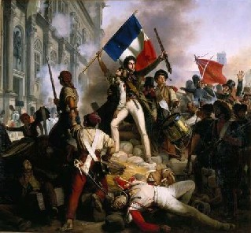
Aceeași logică se aplică nu numai la viața indivizilor dar și la marile evenimente colective. Să luăm
de exemplu Revoluția franceză. A produs schimbări majore în societatea și politica franceză. Revoluționarii
au decapitat regele și au dat pământul țăranilor. Au declarat Drepturile Omului, au abolit privilegiile
nobiliare și au pornit război împotriva întregii Europe. Totuși, nici una dintre aceste acțiuni nu a
schimbat structura de bază a biochimiei franceze sau a creierului francez. Prin urmare, dacă acceptăm
teoria biologică, este foarte probabil ca în ciuda tuturor
revoltelor politice, sociale și economice aduse de Revoluția franceză, impactul acesteia
asupra fericirii franceze a fost unul foarte mic.
Cel care a câștigat un sistem biochimic vesel la loteria genetică a fost la fel de fericit înainte de revoluție ca și după aceasta. Cel care au primit o biochimie sumbră se va plânge sub Robespierre și Napoleon cu aceeași amărăciune cu care s-a plâns mai devreme sub Ludovic al XVI-lea sau Maria Antoaneta . Dacă este așa, atunci ce a mai adus bun Revoluția Franceză? Dacă oamenii nu au devenit mai fericiți ca rezultat al acesteia, care a mai fost rostul la tot haosul, frica și vărsarea de sânge? Dacă asimilăm în întregime abordarea biologică a fericirii, concluzia este că totul a fost inutil. Biologii nu s-ar fi înghesuit să ia cu asalt Bastilia, deoarece tot nu ar fi schimbat nimic.
Oamenii își închipuie că o revoluție politică reformă socială îi va face mai fericiți, dar este doar o înșelătorie
biochimică ce se repetă din nou și din nou și din nou. Revoluția politică vine, dar biochimia rămâne
aceeași, și prin urmare, nivelul de fericire rămâne aceeași. Conform acestui punct de vedere, există
doar o singură concluzie a evoluției istorice care are o importanță reală pentru istoria fericirii. Și
anume realizarea faptului că deoarece cheile fericirii sunt în mâinile sistemului nostru biochimic intern,
nu mai are rost să ne pierdem timpul cu politică, reforme sociale, războaie și ideologii și alte chestiuni.
În schimb, trebuie să ne concentrăm pe singurul lucru care ne poate face cu adevărat fericiți și acesta
este manipularea biochimiei noastre. Singurul lucru care este important în istoria omenirii din acest
punct de vedere este avansul științei în domeniul științelor vieții. Dacă investim miliarde de dolari
pentru a sparge codurile biochimice și genetice și pentru a folosi cunoașterea dobândită pentru a dezvolta
terapii mai bune, vom putem face pe oameni mult mai fericiți decât au fost vreodată înainte, fără a fi
nevoie de revoluții politice și sociale. Prozac și alte medicamente uzuale în psihiatrie ne-ar putea
crește nivelul de fericire mai mult decât schimbarea regimului politic sau punerea în aplicare a unor
reforme economice, doar prin creșterea, în mod artificial, a nivelului serotoninei în creier, precum
medicamentul reușește să scoată pe unii oameni din
depresie.
Pagina 330
Minunata lume nouă
Nimic nu surprinde mai bine abordarea biologică a fericirii decât celebrul slogan new-age fericirea pleacă
din interior (
happiness begins within). Bani, statut social, politică, chirurgie plastică, case frumoase, nici
unul din aceste lucruri nu va aduce fericire.
Fericirea de durată, în conformitate cu abordarea biologică, poate veni numai din interior, de la serotonină,
dopamină, oxitocină, precum și de la alți compuși și sisteme biochimice care conlucrează în corpul
tau. În romanul său,
Brave New World, (Minunata Lume Nouă n.t.) Aldous Huxley a avut în anii 1930 viziunea unei lumi
în care fericirea este valoarea supremă a societății, una în care medicamentele psihiatrice controlează
și cresc nivelul de fericire, înlocuind poliția, alegerile și guvernul, precum și fundamentele politicii.
În fiecare zi, fiecare om din lumea imaginată de Huxley lua o doză de
soma, un medicament sintetic care îi făcea pe oameni mulțumiți cu viața lor și fericiți cu ei înșiși,
fără a afecta productivitatea și eficiența acestora. Statul conducea în acest scenariu întreaga lume,
întregul glob și nu a fost niciodată amenințat de războaie, revoluții, greve sau demonstrații, pentru
că toți oamenii din lume erau mulțumiți de condițiile actuale, indiferent de care ar fi fost ele. Sistemul
a
fost construit pe baza controlului și manipulării biochimiei și nu a condițiilor de viață ale oamenilor.
Dacă facem acest lucru cu succes, atunci tot ceea ce se întâmplă în afara nu mai contează cu adevărat.
Mulți oameni consideră această viziune a viitorului mult mai îngrijorătoare decât distopia lui George
Orwell, 1984. Huxley pare monstruos pentru majoritatea cititorilor, dar e foarte greu de explicat de
ce. Dacă în lumea lui Huxley toată lumea este foarte fericită tot timpul, ce ar putea fi în neregulă
cu ea?
Problema se găsește în definiția fericirii. În lumea lui Huxley, fericirea este definită în termeni biologici,
pur și simplu ca plăcere. A fi fericit nu este nimic mai mult sau mai puțin decât a experimenta senzații
corporale plăcute în cea mai mare parte de timp. Deoarece biochimia noastră obișnuită limitează volumul
și durata acestor senzații plăcute în organism, singura modalitate de a face pe oameni să experimenteze
un nivel ridicat de fericire pe o perioadă lungă de timp este prin manipularea sistemului biochimic cu
ajutorul medicamentelor și a altor tratamente medicale. Avem aici o direcție în care știința de astăzi
progresează, nu într-o fantezie science-fiction ci în lumea reală. Cercetările înaintează în această
direcție într-un ritm foarte rapid. Dar definiția fericirii ca plăcere, comună astăzi în societatea noastră,
nu este acceptată de toți cercetătorii sau de toți oamenii.
Într-un studiu celebru, Daniel Kahneman , laureat al Premiului Nobel pentru economie, a
studiat, printre altele ce îi face pe oameni fericiți. El a cerut oamenilor să povestească o
Pagina 331
zi de lucru obișnuită, pentru a spune ce s-a petrecut cu ei în acea zi, în detaliu. Parcurgând-o etapă cu
etapă, ei trebuiau să evalueze cât de mult le-a placut sau displacut fiecare etapă. A făcut un studiu
asupra a 900 de femei din Texas din clasa muncitoare. El a cerut fiecăreia dintre ele să împartă o zi
obișnuită de-a lor în segmente, în episoade de două, trei sau cinci minute, și să scrie ce făceau la
fiecare cinci minute și să descrie deasemenea cât de mult le plăcea sau displăcea ce făceau. Au ieșit
niște povești lungi, ca niște jurnale, am vorbit la telefon cu un prieten, apoi am luat autobuzul spre
locul de muncă, iar a trebuit să aștept autobuzul, apoi am urcat în autobuz, am ajuns la locul de muncă,
șeful a țipat la mine, și m-am dus, m-am întors acasă, m-am uitat la televizor, am spălat rufele și așa
mai departe. Despre fiecare dintre aceste episoade scurte, ea a scris de asemenea cât de mult îi plăcea
sau displăcea ce făcea, și s-a dovedit că episoadele care le displăceau acestor femei, în medie cel mai
mult, sau activitatea care era cel mai puțin agreabilă a fost munca de îngrijire a copiilor. Cele mai
multe dintre activitățile care implicau copiii au fost apreciate ca fiind cele mai puțin vesele activități
ale zilei, cum ar fi schimbarea scutecelor, spălarea hainele murdare, prepararea hranei pentru ei, isterii
temperamentale, copii care luptă și strigă unul la altul. Potrivit notelor pe care le-au scris, le producea
mai multă bucurie să fie la locul de muncă decât să stea cu copiii lor acasă. Kahneman a cerut, de asemenea,
acestor femei să descrie în termeni generali, care sunt lucrurile care contribuie cel mai mult la fericirea
lor. Cele mai multe dintre ele au spus că copiii sunt izvorul primar al fericirii, chiar dacă activitățile
lor care presupuneau contactul cu copiii erau apreciate ca fiind cele mai puțin plăcute.
Cum se explică această contradicție? Există două moduri în care oamenii de știință explică aceste rezultate.
O școală de gândire susține că oamenii, nu numai femeile din Texas, dar oamenii în general chiar nu prea
știu ce e bine pentru ei. Ei cred că un lucru este sursa fericirii lor pentru că societatea le-a spus
că acesta trebuie să fie sursa lor de fericire, dar nu e adevărat. Când examinăm fiecare eveniment în
amănunt, el nu mai îndeplinește așteptările. O altă explicație este că ceea ce Kahneman și alte astfel
de studii au descoperit este faptul că fericirea este pur și simplu ceva diferit de plăcere. Fericirea
nu este surplusul de momente plăcute față de momentele neplăcute; fericire constă mai degrabă în a vedea
viața în totalitate ca pe ceva semnificativ și util. Există o componentă cognitivă și etică foarte importantă
pentru fericire. Valorile noastre sunt cele care fac diferența în modul în care percepem viața. Valorile
fac diferența între a ne vedea ca simpli sclavi mizerabili ai unui copil dictator, sau în a ne vedea
pe noi înșine ca pe cultivatori plini de dragoste ai unei vieți noi, în direcția creșterii copiilor.
Acești savanți susțin că activități semnificative pot fi extrem de satisfacatoare, chiar dacă nu sunt
ușoare, chiar dacă nu sunt prea vesele. Similar o viață lipsită de sens, plină de activități la care
nu găsim un sens, poate fi un calvar teribil, chiar dacă este foarte confortabilă. E ca și ambiția de
a urca pe Everest, sau ar merge pe un traseu foarte dificil. Nu e un scop confortabil. Cele mai multe
dintre lucrurile pe care el sau ea le va experimenta vor fi lucruri dificile. Este mai ușor să stea acasă
pe canapea și să se uite la TV. Totuși, dacă el găsește sensul vieții în ambiția de a urca pe Everest,
sau pe un alt munte înalt, el poate vedea întregul capitol al vieții sale ca fiind o perioadă foarte
fericită. Momentul în care urcă pe Everest e mult mai fericit decât momentul în care s-a așezat acasă
confortabil pe canapea și s-a uitat la televizor. De ce? Pentru că fericirea nu este confort,
nu este plăcere; mai presus de toate este găsirea unui sens în ceea ce facem, chiar
Pagina 332
dacă ceea ce facem implică o mulțime de greutăți și dificultăți. Nu e tot timpul roz și plin
de bucurie.
Această abordare are implicatii importante pentru istoria fericirii. Oamenii din toate culturile și epocile
au simțit probabil senzații similare plăcute sau neplăcute în corpul lor, dar sensul dat de experiențele
lor a fi putut fi foarte diferit. Dacă este așa, atunci istoria fericirii a fost mult mai turbulentă
decât ce-și imaginează biologii. Nu este o linie dreaptă în care toată lumea are mereu aceleași nivel
relativ de fericire pentru că placerea și senzațiile neplacute din corpul rămân același. Dacă sensul
are un impact important asupra fericirii, atunci ar putea exista diferențe enorme între sensurile pe
care oamenii din diferitele culturi le-au găsit în viața lor. Dacă este adevărat, acest lucru implică
faptul că viața în epoca modernă nu este neapărat mai bună, mai fericită, decât viața în epoci anterioare,
cum ar fi Evul Mediu. Dacă urmărim viața minut cu minut, activitate de activitate, și cântărim cât de
grea sau cât de ușoară este fiecare, atunci cu siguranță viața în Evul Mediu, pentru majoritatea oamenilor,
a fost mult mai grea, mai puțin confortabilă decât viața din prezent, cel puțin pentru oamenii din societățile
bogate. Cu toate acestea, dacă fericirea depinde de sens, atunci oamenii medievali ar fi putut fi chiar
mai fericiți decât oamenii de astăzi din societățile bogate. Ei găseau un sens pentru tot ce se întâmpla
în viața lor în promisiunea unei fericiri veșnice, în viața de apoi și făcând parte dintr-un plan cosmic
splendid al lui Dumnezeu. Au trăit multe greutăți, dar viața lor era plină de semnificație. În contrast
față de oamenii medievali, oamenii moderni și laici din societățile bogate ar putea avea o viață foarte
confortabilă material, dar, pentru mulți dintre ei,
lipsită de sens. Pe termen lung, nu se pot aștepta la nimic în afara uitării complete și lipsei sensului.
Nu există nici rai, nici iad, nu există un plan cosmic, tot ce se întâmplă este pur și simplu lipsit
de importanță și de sens. Deci, dacă ne întrebăm cât de confortabilă este viața, atunci da, viață este
astăzi mult mai confortabilă, dar dacă întrebăm pe oameni cât de mulțumiți sunt de viață, și cât de mult
sens găsesc în ea, atunci oamenii din Evul Mediu, în ciuda tuturor dificultăților, ar putea fi într-o
egalitate, dacă nu chiar o situație mai bună decât oamenii de astăzi. Problema este că avem aici o altă
abordare a istoriei fericirii. Acesta dă multă importanță sensului, mult mai mult decât senzațiilor de
plăcere și confort, și din această perspectivă se dovedește că viața de
astăzi nu este neapărat mult mai fericită, cu mult mai semnificativă decât în trecut.
Pagina 333
Totul e doar o părere
Problema cu această abordare este că, din punct de vedere pur științific, viața umană nu are absolut
nici un sens. Potrivit științei, cel puțin a științei de început de secolul 21, oamenii, ca dealtfel
toate celelalte fenomene din lume, sunt rezultatul unor
procese evolutive oarbe care funcționează fără nici un scop, fără o semnificație. Acțiunile noastre,
viețile noastre nu sunt parte a un plan cosmic divin. În cazul în care planeta Pământ ar exploda mâine
dimineață, cu toți oamenii, elefanții și girafele de pe ea, restul universului și-ar vedea de treabă
în continuare ca și cum nu s-ar fi întâmplat nimic. Dispariția tuturor oamenilor nu ar schimba nimic
fundamental în univers. Potrivit științei moderne, orice sens pe care oamenii îl atribuie vieții lor,
deciziile și acțiunile lor sunt pur și simplu o iluzie. Credem că au un sens, dar nu au de fapt niciunul.
Toate semnificațiile religioase, semnificațiile altor lumi, pe care oamenii medievali și le atașau vieții
lor erau doar iluzii. În mod similar, sensul pe care oamenii moderni încearcă să-l găsească vieții, umanismul,
naționalismul, capitalismul din viața omului modern este doar o iluzie.
Astăzi savanții pot spune că viața lor are un sens pentru că au îmbogățit bagajul de cunoștințe umane.
Un soldat poate spune că viața sa are sens pentru că luptă să-și apere patria. Un om de afaceri poate
spune că viața are sens pentru că a construit o companie nouă și de succes. Dar și acestea sunt toate
iluzii. La fel ca oamenii medievali care credeau că viața lor are drept sens cititul scripturilor, mersul
la cruciade, sau construcția de catedrale. Noi privim înapoi și spunem că ei se păcăleau pe sine. Deci,
același lucru este valabil despre viața oamenilor de astăzi.
Concluzia acestei linii de gândire este că, dacă cheia fericirii este de a avea un sens în viață, atunci
adevarata cheie a fericirii este să ne sincronizăm iluzia personală a unui sens cu iluzia colectivă.
Nu există nici un sens în lume, dar atâta timp cât povestea mea
Pagina 334
personală se potrivește cu povestea oamenilor din jurul meu, atunci mă pot convinge că viața mea este
semnificativă, și astfel să-mi găsesc fericirea și satisfacția personală. Este o concluzie destul de
deprimantă. Presupune că fericirea, a dobândi fericire, a fi fericit, depinde de auto-amăgire, și depinde
de faptul că nimeni nu va veni din exterior să-ți demonteze închipuirea.
Înapoi la Budism
Până acum am văzut că fericirea depinde de senzații plăcute. Pentru a fi mai fericiți, avem nevoie să ne reproiectăm sistemul nostru biochimic. Dacă fericirea se bazează pe sentimentul că viața are un sens, atunci pentru a fi mai fericiți trebuie să ne amăgim mai eficient. Mai există oare un alt mod de a înțelege fericirea? O alternativă care se bucură de atenție tot mai mare din partea oamenilor de știință care studiază fericirea este de punctul de vedere budist. Budismul tratează problema fericirii mai profund decât poate orice altă religie din istorie. Principala întrebare a
religiilor orientale moderne este "dat fiind faptul că Dumnezeu există, ce vrea el de la mine?"
În schimb, problema principală a budismului este "dat fiind faptul că există suferință, cum mă pot
eu elibera de suferință și să mă bucur de fericire?" Prin urmare, în ultimii 2500 ani, budiștii
au studiat sistematic esența și cauzele fericirii, care este motivul pentru care există un interes tot
mai mare în rândul comunității științifice în budism, atât în filosofie budistă cât și în practicile
de meditație budiste.
Spre exemplu, oamenii de știință care studiază creierul studiază meditația călugărilor budiști în laborator.
Îi leagă la la electrozi și scanere, și scanează creierul lor pentru a vedea ce se întâmplă atunci când
acești călugări meditează. Multe cercetări de acest gen sunt în derulare astăzi. Budismul are aceeași
înțelegere de bază a abordării biologice a fericirii, și anume că fericirea rezultă din procese și îngrijire
spirituală internă, și nu din evenimente care au loc în lumea exterioară. Abordarea biologică a fericirii
este asemănătoare cu cea budistă. Cu toate acestea, pornind de la aceeași înțelegere, budismul trage
concluzii foarte diferite. Potrivit budismului, majoritatea oamenilor identifică fericirea cu senzatiile
placute și sentimentele din corpul lor, în timp ce identifică suferința cu sentimente neplăcute. Oamenii,
prin urmare, atribuie o importanță imensă la ceea ce simt. Oamenii își doresc să experimenteze tot mai
multă plăcere, evitând în același timp cât mai mult timp posibil durerea și sentimentele neplăcute. Orice
facem de- a lungul vieții noastre, dacă ne scărpinăm la picior, sau ne mișcăm în scaun, sau luptăm războaie
mondiale, încercăm doar să obținem sentimente mai placute. Problema, după budiști, este faptul că sentimentele
noastre nu sunt mai mult decât niște vibratii trecătoare care se schimbă în fiecare clipă, precum valurile
unui ocean. Dacă cu cinci minute în urmă ne-am simțit foarte veseli și hotărâți, în clipa prezentă sentimentele
de acum cinci minute au dispărut. S-ar putea să ne simțim trist și abătut, așa că dacă vrem
să simțim stări plăcute, trebuie să le urmărim în mod constant în vreme ce alungăm
Pagina 335
sentimentele neplacute. Chiar dacă reușim, trebuie să începem căutarea din nou, fără o recompensă de durată
pentru toate necazurile noastre.
Ce este, întreabă budismul, atât de important în obținerea unor
satisfacții efemere? De ce luptăm din greu de-a lungul vieții pentru a realiza ceva care dispare
aproape imediat ce apare? Potrivit budismului, rădăcina suferinței nu este durerea, și nici tristețea,
și nici măcar lipsa de sens. Este această
căutare care nu se termină niciodată de sentimente efemere care ne face să fim într-o stare permanentă
de tensiune, de neliniște și de nemulțumire. Din cauza căutării placerii, mintea nu este niciodată mulțumită
cu realitatea așa cum este ea. Chiar și atunci când experimentăm ceva plăcut nu suntem mulțumiți, mintea
noastră se teme că ar putea dispărea în curând, iar noi tânjim ca senzația să rămână și să se intensifice.
Oamenii sunt eliberați de suferință nu atunci când trăiesc o experiență sau plăcere trecătoare, ci când
înțeleg natura trecătoare a tuturor stărilor și, prin urmare, se opresc din a le mai urmări și pofti.
Acesta este scopul practicilor de meditație budistă. Meditația presupune observarea îndeaproape a propriei
minți și corp, realizarea naturii efemere a tuturor sentimentele și cât de inutilă este alergarea după
ele, urmărirea lor. În cazul în care fuga perpetuă se oprește, mintea devine foarte relaxată, foarte
clară, foarte mulțumită. Tot felul de stări pot curge în toate direcțiile. Există încă și bucurie și
furie, și plictiseală și poftă care apare și trece, dar odată ce te oprești din a mai dori sentimente
anume poți accepta orice senzație. Poți accepta orice sentiment vine, doar stai și te uiți după el, el
vine și pleacă fără a te lua pe tine cu el. Seninătatea rezultată, din punctul de vedere budist, este
atât de profundă încât oamenii care își irosesc viața într-o căutare frenetică de sentimente placute
nu-și pot nici măcar imagina cum este să stai în afara curentului.
Idee este atât de străină de cultura occidentală modernă, încât atunci când mișcările new-age vestice
au întâlnit filozofia și meditația budistă, aceasta le-a dat peste cap. Cultele New-Age susțin frecvent
că fericirea nu depinde de condițiile externe în lumea exterioară, fericirea depinde numai de ceea ce
simțim. Deci, oamenii ar trebui să se oprească din căutarea împlinirilor exterioare, cum ar fi bogăție,
frumusețe și statut social și în schimb să se lege profund la propriile sentimentele. Cum au spus mai
multe culte New Age, căutarea fericirii începe în interior. Avem aici este exact ceea ce susțin biologii,
dar mai mult sau mai puțin opusul a ceea ce spune Buddha. Buddha a fost de acord cu biologia modernă
și cu mișcările moderne New Age după care fericirea este independentă de conditiile externe. Cu toate
acestea, perspectiva lui mai largă și poate mai profundă este că adevărata fericire este, de asemenea,
independentă de sentimentele interioare. Într-adevăr, pe cât dăm mai multă semnificație sentimentelor
noastre interioare, pe atât le vom dori mai mult și cu atât mai mult vom avea de suferit. Recomandarea
de bază a budismului nu este doar să încetinim căutarea realizărilor exterioare, dar mai presus de toate
să încetinim căutarea sentimentor interioare. Dacă acceptăm acest punct de vedere asupra fericirii atunci
întreaga noastră înțelegere a istoriei fericirii ar putea fi greșită. Poate că nu este atât de important
dacă oamenii se bucură de sentimente plăcute, și dacă oamenii simt că viața lor are sens. Întrebarea
principală este dacă oamenii înțeleg adevărul despre natura sentimentele lor. Nu avem nici o dovadă că
oamenii de azi, în secolul 21, înțeleg acest adevăr mai bine decât
vânătorii antici sau țăranii medievali. Acesta este punctul de vedere budist.
Pagina 336
Concluzii
Acesta nu este nici momentul nici locul pentru a judeca toate aceste abordări diferite ale fericirii.
Oamenii de știință au început studiul științific al fericirii în urmă cu doar câțiva ani și sunt încă
departe de formularea teoriilor inițiale, și caută încă metode de cercetare adecvate. E mult prea devreme
pentru a trage concluzii și a pune capăt dezbaterii înainte ca aceasta să înceapă cu adevărat. Ce este
important în această etapă este să se cunoască cât mai multe abordari diferite posibil
asupra fericirii, precum și pusul întrebărilor corecte. Cele mai multe cărți de istorie se concentrează
doar pe ideille marilor gânditori, pe curajul războinicilor, pe caritatea sfinților, pe creativitatea
artiștilor. Cele mai multe cărți de istorie, cu toate acestea, mai au multe de spus despre structuri
sociale, despre ascensiunea și căderea imperiilor, despre invenția și răspândirea tehnologiei, dar au
mai puține de zis despre cum au influențat toate acestea suferința și fericirea omului ca individ. Aceasta
este cea mai mare lipsă din întelegerea istoriei. Nu știm care a fost impactul asupra fericirii umane,
așa că e bine să încercăm să acoperim această lipsă, altfel nu putem spune că am înțeles de fapt istoria.
Cu acest gând se termină călătoria noastră prin trecutul omului, de la revoluția cognitivă în urmă cu
70.000 ani până în prezent. În timpul celor 70,000 ani, s-au petrecut enorm de multe evenimente. Nu suntem
siguri care au fost spre bine sau spre rău. Dar mai există încă un subiect de abordat înainte de încheierea
acestui curs: “O scurtă istorie a omenirii”, și anume viitorul. Am vorbit mult despre trecut, dar istoria
include și viitorul. În următoarea și ultima lecție a cursului, Dr. Harari va încerca să descrie viitorul
probabil al
omenirii.
Lecția XVII - Sfârșitul lui Homo sapiens.
În ultima lecție din cursul de istorie al umanității, Dr. Hariri va discuta despre viitor și despre sfârșitul
probabil al lui
Homo Sapiens
.
De-a lungul ultimelor decenii, oamenii au început să denatureze și să modifice legile selecției naturale,
legi care au guvernat viața pe Pământ pentru ultimele patru miliarde de ani. Tehnologii noi, cum
sunt
ingineria genetică și nanotehnologia ne oferă abilități fără
precedent de a modela nu numai lumea din jurul nostru, dar de asemenea corpul,
personalitatea și dorințele noastre. Cum va influența aceasta societatea și cultura? Stie oare cineva
încotro ne îndreptăm? Care este viitorul probabil al omenirii?
Viitorul nostru
Lecțiile anterioare au descris istoria lui Homo sapiens de acum 70.000 ani până în la momentul prezent.
Lecția curentă va detalia viitorul potențial al lui Homo sapiens. După toate probabilitățile, specia
noastră va dispărea. Suntem, probabil, una dintre ultimele generații de Homo sapiens. În viitorul imediat,
câteva decenii sau cel mult secole, Homo sapiens va dispărea. Specia
noastre nu se va autodistruge într-o catastrofă nucleară sau ecologică. Mai degrabă, specia noastră va
dispărea pentru că este pe cale să se înnobileze (upgrade) într-o specie cu totul nouă. Pe scena istorică,
politică, socială, culturală și
tehnologică au operat deja mai multe revoluții de anvergură. De-a lungul tuturor acestor revoluții, un singur lucru a rămas relativ constant, și anume Homo sapiens în sine. Mintea și organismul lui Homo sapiens a fost tot timpul fundamentul societăților, identităților și religiilor. Lumea de astăzi este foarte diferită de lumea din vremurile biblice, deși oamenii din Ierusalimul antic aveau aceleași abilitățile trupești și mentale pe
care le avem noi astăzi.
Pagina 338
CREDIT - SCIENCEBLOGS.COM
Oamenii din trecut experimentau lumea într-un mod asemănător cu cel al nostru de astăzi, și de aceea găsim
încă interesante subiectele abordate de Biblie, în filozofia lui Platon, sau în scrierile lui Confucius,
pentru că au fost scrise de oameni la fel ca noi. Acest lucru este pe cale să se schimbe. Următoarea
mare revoluție în istorie va transforma desigur și economia, politica si societatea, dar va transforma
de asemenea și trupurile și mințile noastre și va înlocui Homo sapiens cu o ființă foarte diferită.
Când ne gândim la viitor, vedem de obicei o lume în care oamenii se bucură de o tehnologie evoluată.
Ne imaginăm nave spațiale super-luminice, pistoale laser, roboți inteligenți și așa mai departe. Potențialul
cu adevărat revoluționar al tehnologiei nu este de a schimba doar instrumentele și armele noastre, ci
și omul în sine. Nu doar navele spațiale vor fi diferite în viitor, ci și călătorii din ele. Cum se va
îmbunătăți și înnobila Homo sapiens? În prezent, există trei metode principale de optimizare. Prima metodă
este ingineria biologică. A doua este ingineria cyborg. Cyborgii sunt ființe care combină structurile
organice cu cele non-organice. A treia este creația vieții anorganice, viață care nu se bazează deloc
pe structuri organice.
Să examinăm aceste trei metode, astfel încât să înțelegem despre ce e vorba.
In gineria b iolog ică
Ingineria biologică este orice intervenție intenționată la nivel biologic. De exemplu, implantarea unei
gene, sau medicamentele care modifică forma, capacitățile, nevoile sau dorințele unui organism. Nu este
nimic radical nou în ingineria biologică în sine. Noi am folosit ingineria biologică de-a lungul a mii
și mii de ani pentru a ne modela pe noi sau
Pagina 339
pentru a remodela alte organisme, cum ar fi câinii, vacile și caii. Un simplu exemplu de inginerie biologică este castrarea. Castrăm tauri de cam 10,000 ani pentru a crea boi. Un bou este mult mai docil decât un taur, și prin urmare mai ușor de folosit la trasul vagoanelor, cărucioarelor sau plugurilor. Similar, oamenii s-a castrat pe ei înșiși. Castrarea bărbaților sau a copiilor mici, pentru a crea cântăreți, soprane cu voci minunate, sau pentru a crea eunuci, care puteau păzi în siguranță haremuri fără pericolul de a agresa femeile sultanului. Ingineria biologică nu este ceva nou, ceea ce este nou sunt însă capacitățile ingineriei biologice de astăzi. Descoperiri recente în înțelegerea modului de funcționare al organismelor până la nivel celular și molecular ne-au deschis posibilități de neimaginat. De exemplu, astăzi putem nu numai să castrăm un bărbat, un proces biologic relativ simplu, ci putem folosi tratamente hormonale și chirurgicale pentru a transforma un bărbat într-o femeie. Este un proces mult mai ambițios decât castrarea.

Și asta nu e tot. Să studiem această fotografie, publicată în 1996, acum aproape 20 de ani. Când a apărut,
a șocat întreaga lume, a provocat o adevărată furtună socială și mediatică. Avem aici fotografia reală
a unui șoarece, nu este o imagine modificată în Photoshop, ci un șoarece
adevărat, pe spatele căruia oamenii de știință au implantat celulele de cartilaj luate de la bovine,
de la vaci. Oamenii de știință au fost capabili nu numai de să planteze celule de la vacă pe spatele
șoarecelui, ci și să controleze creșterea țesutului nou și să-l modeleze în ceva care arată foarte asemănător
cu o ureche
umană. Se pot contura și alte forme biologice după dorință. Procesul se folosește în laboratoare și spitale
pentru a fabrica urechi artificiale și alte structuri organice artificiale care pot fi apoi implantate
la oameni, de exemplu cuiva care a pierdut urechea. Fotografia este un soi de ecou straniu al statuii
omului cu cap de leu din peștera Stadel descrisă în lecția a doua. Oamenii de atunci și-au imaginat o
combinație între om și leu. Chiar și acum 30.000 ani, oamenii își puteau imagina o astfel de creatură
hibrid, pe jumătate om, pe jumătate leu, și au sculptat statuia de fildeș. Dar nimeni acum 30.000 de
ani nu știa cum să producă o ființă vie, pe jumatate ceva, pe jumătate altceva. În ziua de astăzi, oamenii
au dobândit capacitatea de a produce astfel de ființe, cu ajutorul ingineriei biologice sofisticate.
Șoarecele este o combinație reală între corpul unui
șoarece cu elemente bovine.
Ingineria genetică
Dintre toate domeniile de studiu în ingineria biologică, ingineria genetică atrage cea mai multă atenție. Ingineria genetică se bazează pe transplantarea genelor
Pagina 340
recoltate dintr-un organism în structura genetică ADN a unui organism complet diferit. De exemplu, știm astăzi cum să preluăm o genă de la o meduză care iradiază o fluorescență verzuie, și să implantăm gena într-un iepure sau maimuță care vor începe de asemenea să strălucească într-o lumină verde fluorescentă. Procesul s-a realizat la maimuțe; se poate face și la oameni. Deținem acum tehnologia pentru a lua gena unei meduze și a o implanta în ADN-ul uman, pentru a obține o ființă umană care strălucește într-o lumină fluorescentă verde. Procesul nu s-a realizat din cauza interdicțiilor etice, dar știm cum să o facem din punct de vedere tehnic. Un alt exemplu se referă modificarea genetică a microorganismelor. Bacteria E. coli este folosită de ingineria genetică și de oamenii de știință pentru a produce biocombustibil, care încearcă să rezolve problemele energetice ale lumii. Aceleași bacterii E.coli, precum și alte specii de micro-organisme și ciuperci au fost de asemenea modificate genetic pentru a produce insulină, reducând astfel dramatic costurile producerii insulinei și automat costul de tratament pentru diabet.
Un alt exemplu interesant este extragerea unei gene dintr-un pește arctic (care trăiește în Oceanul Arctic ) și introducea genei de la pește în ADN-ul cartofului, pentru a face cartoful mai rezistent la îngheț și la frig. Ingineria genetică este folosită tot mai mult nu doar la micro-organisme, meduze și cartofi. Este aplicată de asemenea pe mamifere. De exemplu, an după an, industria produselor lactate are pierderi de miliarde de dolari ca urmare a unei boli numită mastită. Mastita este o boală care atacă ugerul vacilor de lapte, și le cauzează probleme. Oamenii de știință experimentează în prezent cu vaci modificate genetic, al căror lapte conține o
componentă biochimică numită lysostaphin, care
atacă bacteria care provoacă mastita. Oamenii de știință spera deci să descopere o rezolvare genetică
a problemei mastitei la vacile de lapte.
Geneticienii au reușit deja să modifice mamifere, cum ar fi șoareci și șobolani. S-au fabricat șoareci
care au nu doar calități fizice mai bune, dar de asemenea abilități cognitive, memorie îmbunătățită,
precum și capacitate de învățare mărită. Cum se măsoară capacitatea cognitivă a unui șoarece? Nu e deloc
greu. Oamenii de știință pun șoriceii într-un labirint și aceia modificați genetic sunt capabili să rezolve
mult mai repede nivele de dificultate față de un șoarece obișnuit. Șoarecii geniali modificați de ingineria
genetică sunt deci capabili să rezolve labirinturi foarte
dificile, pe care șoarecii normali nu le pot rezolva. Avem aici o dovadă unor îmbunătățiri cognitive
concrete aduse de ingineria genetică.
Dacă putem face asemenea modificări la șoareci, le putem face cu siguranță și la Homo sapiens. Abilitățile,
nevoile și dorințele lui Homo sapiens, la fel ca ale șoarecilor, au o bază genetică, iar ADN-ul lui sapiens
nu este cu mult mai complex decât ADN-ul soarecilor. Genomul Sapiens este doar cu 14% mai complex decât
genomul șoarecilor. Este practic același nivel de complexitate. Nu există niciun motiv tehnic pentru
care nu am putea crea supraoameni, sau specii întregi de oameni complet diferiți de Homo sapiens. Într-un
interval de probabil câteva decenii sau un secol sau două, ingineria
Pagina 341
genetică și alte forme de inginerie biologică vor putea foarte bine să ne permită să facem schimbări
de anvergură, nu numai în fiziologia și în sistemul nostru imunitar, pentru a prelungi speranța de viață,
dar vor permite deasemenea să operăm schimbări majore în capacitățile noastre intelectuale și emoționale.
Dacă ingineria genetica poate crea soareci de geniu, nu există niciun motiv evident pentru care nu am
putea crea supraoameni, oameni de geniu.
Revoluția cognitivă, cea care a transformat Homo sapiens dintr-o maimuță africană nesemnificativă într-
un stăpân al lumii, nu a avut nevoie de nici o schimbare notabilă în fiziologia umană. Nu a necesitat
vreo modificare în mărimea și forma exterioară a creierului uman. Revoluția cognitivă a rezultat aparent
din câteva schimbări minore în structura internă a creierului lui Homo sapiens. Poate că o altă schimbare
relativ secundară în structura creierului uman, adusă să zicem de ingineria genetică, poate fi suficientă
pentru a demara
o a doua revoluție cognitivă, să creeze un tip
complet nou de conștiință și să-l transforme pe Homo sapiens în ceva foarte diferit de noi, la fel diferit
pe cât suntem noi față de neandertalieni. Nu suntem încă acolo, dar e posibil ca nici un obstacol tehnic
de netrecut să nu ne separe de producerea unor astfel de supra-oameni. Principalele obstacole în calea
creării supra-oamenilor nu sunt de natură tehnică. Principalele obstacole sunt etice, precum și obiecțiile
politice care încetinesc cercetarea asupra oamenilor. Din cauza considerentelor etice și politice, cercetarea
pe șoareci este mult mai avansată decât cercetarea asupra oamenilor. Nu contează cât de convingătoare
sunt argumentele etice și politice, este foarte greu să vedea cum acestea vor putea îngreuna pe termen
nelimitat următorii pași în progresul științific. Mai ales că în joc este aici posibilitatea de a prelungi
viața umană pe termen nelimitat, de a crea oameni care trăiesc pentru totdeauna. În joc este aici cucerirea
bolilor precum cancerul și Alzheimer și așa mai departe, precum și modernizarea abilitățile noastre cognitive
și emoționale. Este puțin probabil că obiecțiile etice și politice pot împiedica cercetarea pe termen
nelimitat.
Ce s-ar întâmpla, de exemplu, dacă oamenii de știință ar reuși sa dezvolte un tratament pentru boala
Alzheimer, care în același timp, ca un efect secundar, ar putea de asemenea îmbunătăți în mod dramatic
memoria sau abilitățile cognitive ale oamenilor sănătoși. Ar putea vreun guvern sau asociație guvernamentală
să oprească cercetarea în cauză? Odată acest tratament finalizat, nici un guvern sau poliție din lume
nu ar putea limita folosirea acestei invenții numai pentru a vindeca pacienti Alzheimer și a-i opri pe
oameni sănătoși să beneficieze de tehnologie pentru a dobândi super-memorie și abilități
cognitive uimitoare? Este puțin probabil.
Pagina 342
Cyber-ingineria
Cyborgii [saiborg] sunt creaturi care combină piese organice și anorganice, cum ar fi oameni cu mâini bionice.
Într-un fel suntem cu toții cyborgi, deoarece simțurile și funcțiile noastre naturale sunt îmbunătățite
de dispozitive cum ar fi ochelarii, stimulatoare cardiace și telefoane, calculatoare. Calculatoarele
execută tot mai multe sarcini efectuate anterior de către creierul și memoria organică. Cu toate acestea,
în viitorul apropiat, acest proces va merge probabil mult mai departe. Vom începe probabil cu mecanisme
artificiale conectate direct la creierul nostru și la sistemul nervos. Mecanismele vor deveni inseparabile,
și ne vor schimba abilitățile, dorințele, personalitatea și identitatea noastră.
Un exemplu este urechea bionică. Avem deja prototipuri funcționale ale urechilor bionice. O ureche bionică
înseamnă un implant care absoarbe undele sonore prin intermediul unui microfon amplasat în exteriorul
urechii. Implantul filtrează sunetele, identifică voci umane și alte sunete importante, și le traduce
în semnale electrice care sunt trimise la nervul auditiv central și de acolo la creier. O astfel de ureche
bionică nu numai că permite surzilor să audă, dar lasă oamenii sănătoși să dobândească abilități auditive
de excepție. Același metodă poate crea ochi, nas precum și chiar mâini și picioare bionice.
Avem aici imaginea lui Jesse Sullivan ca se ține de mână cu Claudia Mitchell. Jesse este un electrician
american care și-a pierdut într-un accident în 2001 ambele brațe de la umăr. Claudia și-a pierdut un
braț într-un accident de motocicletă. Ambii folosesc acum membre bionice. O caracteristică uimitoare
a membrelor bionice este că ele sunt operate direct și numai prin puterea minții. Semnale de la creier
sunt traduse de microcalculatoare în comenzi
electrice și brațele se deplasează la comandă. Când Jesse sau Claudia vor să-și miște mâinile, fac exact
ceea ce orice om normal face inconștient. Ei se gândesc doar la asta și brațul se mișcă. În prezent,
brațele bionice sunt un înlocuitor slab pentru originalele organice, dar ele au potențial de dezvoltare
tehnologică nelimitat. În viitorul apropiat, se pot produce brațe bionice mult mai puternice decât cele
organice, mai puternice decât ale oricărui campion la box. Mai mult decât atât, membrele bionice au avantajul
de a putea fi înlocuite tot la fiecare câțiva ani sau îmbunătățite ori de câte ori un model nou apare
pe piață. Ele pot fi, de asemenea, detașate corp și operate de la distanță. Suntem obișnuiți ca toate
părțile corpului nostru să fie conectate local, ca parte a unui singur trup, dar în acest fel funcționează
doar corpurile organice. Odată ce conectăm membre bionice, nu mai există nici un motiv pentru care ele
să mai fie situate în aceeași cameră,
sau oraș, sau chiar pe același continent sau planetă. Oamenii de știință de la
Pagina 343
Universitatea Duke, din North Carolina, au demonstrat recent acest lucru folosind
maimuțele Rhesus.
Savanții le-au implantat maimuțelor rhesus electrozi în creier. Electrozii preiau semnale de la creier
și le transmit unor dispozitivelor care controlează membre externe. Maimuțele au învățat astfel să controleze
prin puterea minții lor brațe și picioare bionice detașate de corp. O maimuță numită Aurora, a învățat
cum să controleze doar cu mintea ei, numai cu gândirea ei, un braț bionic detașat în timp ce mișcă simultan
cele două brațe naturale. Aurora este deci acum ca o zeiță hindusă. Are trei brațe și brațele ei pot
fi localizate, cel puțin al treia braț poate fi situat într-o altă cameră, în alt oraș, pe un alt continent.
Aurora poate sta într-un laborator din Carolina de Nord, își poate scărpina capul cu o mână, spatele
cu o altă mână și în același timp poate fura o banană în New York cu a treia mână, pe care
o controlează doar prin puterea minții, și care, din punctul ei de vedere este tot o mână de-a ei. Se
simte ca o mână suplimentară. Un tovarăș de-al lui Aurora, o maimuță Rhesus numită Adoya, a devenit celebră
în 2008, când din laboratorul ei din Carolina de Nord a controlat o pereche de picioare bionice
poziționate în Japonia. Stătea în Carolina de Nord, cu creierul conectat prin internet la picioarele
din Japonia și mers în Japonia. Picioarele lui Adoya din Japonia aveau de 20 de ori greutatea întregului
corp.
Tehnologia citirii minții
O altă direcție de foarte interesantă cercetează posibilitatea de a citi mintea, gândurile din mintea unei persoane. Există o boală foarte gravă numită sindromul blocat înăuntru (Locked In Syndrome), în care oamenii devin pur și simplu prizonieri ai propriei minți. Își pierd treptat controlul a toate sau aproape toate părțile corpului lor, dar abilitățile lor cognitive, de simțire și gândire și așa mai departe rămân intacte, devin deci blocați în interiorul organismului în
imposibilitatea de a mai face ceva. Persoanele care suferă de acest sindrom teribil nu mai au de multe ori
cum să comunice cu lumea exterioară. Ei mai pot doar să-și miște foarte ușor ochii și doar în acest mod
mai comunică cu lumea exterioară prin da sau nu sau lucruri de genul asta. Există în prezent studii în
care pacienților care suferă de acest sindrom li se implantează electrozi în creier, la fel ca la maimuțe.
Acești electrozi înregistrează semnalele trimise de creier și oamenii de știință încearcă să traducă
aceste semnale, nu doar pentru a mișca membre bionice, dar de asemenea pentru a le traduce în cuvinte.
Dacă experimentele vor reuși, înseamnă că persoanele care suferă de acest sindrom îngrozitor vor fi capabile
să comunice cu lumea exterioară, folosind un calculator
care să traducă semnalele creierului lor în cuvinte. Am avea la dispoziție posibilitatea de
Pagina 344
a citi direct gândurile din mintea altei persoane, fie că el o vrea sau nu. Să ne gândim ce ar putea CIA
face de exemplu cu o astfel de invenție uimitoare.
Dintre toate proiectele de cercetare în domeniul tehnologiilor cyborg, cea mai revoluționară este încercarea de a crea o interfață bidirecțională creier-calculator , care va permite computerului să citească semnalele electrice din creierul uman în timp ce transmite simultan semnale pe care creierul le poate citi, interpreta și înțelege. Imaginați- vă că o astfel de interfață directă poate fi folosită pentru a lega un creier direct la internet, astfel încât am putea naviga pe internet folosind doar conștiința, fără degete sau ochi, sau pentru a lega direct mai multe creiere la același computer, care le leagă pe toate împreună și crează un soi de rețea de creiere. Ce se întâmpla, în acest caz, cu concepte cum ar fi memoria, conștiința sau identitatea individuală, în cazul în care creierul poate avea acces direct la experiențe și amintiri colective? Într-un astfel de scenariu, un cyborg ar putea spre exemplu prelua amintirile altcineva. Nu doar să audă despre ele sau să le citească într-o carte sau să-și imagineze ce a simțit celălalt, ci să preia în mod explicit amintirile ca și cum ar fi ale sale. Ce s-ar întâmpla atunci cu identitatea genului atunci când mintea devine colectivă și bărbații își pot aminti în totalitate experiențele unei femei? Nimeni nu știe răspunsul la astfel de întrebări complicate. Ceea ce este însă deja clar este că astfel de cyborgi nu vor mai fi oameni, creaturi organice, animale ecologice, ci vor fi ceva complet diferit de noi și de oricare alt animal. Vor fi un alt fel de a fi, atât de fundamental diferit încât nici măcar nu am putea încerca să înțelegem implicațiile filosofice, psihologice sau politice ale unui astfel de scenariu.
Ființe non-organice
Pagina 345
A treia metodă pentru a crea entități care să ne înlocuiască în lume este să creăm ființe artificiale.
Cyborgi combină încă creierul cu calculatorul, componente organice cu componente anorganice. Există însă
posibilitatea de a crea ființe complet non-organice, lipsite de orice componentă organică. Cel mai simplu
exemplu sunt programele de calculator și virușii care pot evolua și învăța lucruri noi în mod independent.
Centre de calcul de astăzi încearcă să creeze programe de învățare pentru calculator astfel ca acesta
să poată învăța de la sine, să poată evolua complet independent de persoana care l-a programat inițial.
Primul astfel de programul de învățare independent ar fi creat de un om, dar odată ce există, poate începe
să evolueze în direcții noi și foarte diferite, pe care care nici creatorul și nici un alt om nu le-ar
mai putea prevedea. Prototipul unui astfel de program, precum și a evoluției sale, există deja și se
numește virus de calculator. Acesta se raspândește prin intermediul internetului, virusul se replică
de milioane și milioane de ori, urmărit tot timpul de programe anti-virus care încearcă să-l distrugă,
în concurență tot timpul cu alți viruși și alte programe pentru resursele limitate din spațiul cibernetic.
Ce se întâmplă dacă într-o zi, atunci cand virusul se reproduce, se produce o greșeală de copiere? O
mutație computerizată, mutația apare deoarece inginerul uman care programat inițial virusul, l-a programat
să facă de asemenea greșeli de replicare aleatorie și acum apare o mutație din cauza unor erori aleatorii.
Dacă din întâmplare noul virus este mai bun la sustragerea de sub programe antivirus, fără a-și pierde
capacitatea de a invada alte computere, această nouă versiune s-ar putea extinde fulgerător în spațiul
cibernetic. Viruși mutanți vor supraviețui și se vor reproduce mai bine decât versiunile anterioare.
Pe măsură ce timpul trece, spațiul cibernetic va ajunge plin de viruși noi, ne-creați de om, viruși care
sunt supuși unei evoluții non-organice. Sunt astfel de creaturi vii? Este asta viață? Depinde cum vrem
să definim viața. Dar un lucru este sigur, avem aici o cale sau metodă nouă de evoluție, un proces evolutiv
complet
independent de lumea organică, departe de legile și limitările evoluției organice.
Pagina 346
(CREDIT - Techbeat.com)
Imaginați-vă o altă posibilitate. Să presupunem că ne-am putea salva creierul într-un calculator și am putea apoi dialoga cu el. Ar fi un computer capabil să gândească și să simtă ca un Homo sapiens? Dacă ar fi așa, ar fi el tot noi, sau altcineva? Ce s-ar întâmpla dacă programatorii ar putea crea o conștiință cu totul nouă, dar de natură digitală, compusă din cod de computer, dar cu conștiință de sine, amintiri și așa mai departe. Dacă am rula un astfel de program pe computer l-am mai putea numi persoană? Dacă l-am șterge, am putea fi acuzați de crimă? Scenariul pare ipotetic, dar este posibil să avem răspunsuri la aceste întrebări mai devreme decât se așteaptă majoritatea oamenilor. În 2005, oamenii de știință au lansat proiectul Creierul Albastru. Proiectul speră să recreeze un creier uman în interiorul unui calculator, folosind circuite electronice pentru a simula rețelele neuronale din creier. Semnalele electrice din creier se propagă de la neuron la neuron, proiectul speră astfel să reproducă un creier în interiorul calculatorului folosind semnale electronice trimise de la circuit la circuit. Directorul programului susține că dacă proiectul primește finanțare adecvată, în doar un deceniu sau două am putea avea un creier artificial umanoid în interiorul unui calculator, un creier artificial bionic, care ar putea vorbi, simți și să se comporte la fel de uman ca noi (vizionați capodopera “Ea” cu Joaquin Phoenix n.t.). Nu toți cercetătorii sunt de acord că acest lucru este posibil, mulți susțin că mintea funcționează într-un mod foarte diferit de modul în care operează calculatoarele. Ei susțin că nu va fi niciodată posibil să se creeze o minte în interiorul computerului. Sunt dezbateri interminabile cu acest subiect. Cu toate acestea, este dei notat că în aprilie 2013, Uniunea Europeană a decis să facă proiectul Blue Brain proiectul de vârf al științei europene pentru anii următori și a donat 1 miliard de euro pentru a finanța acest program. Deci, cel puțin vârful Uniunii Europene, Departamentul de Știință al Uniunii Europene, crede că există posibilitatea ca Proiectul Blue Brain să fie un succes.
Redefinirea umanității
Pagina 347
Dr. Harari a descris cele trei metode principale prin care Homo sapiens s-ar putea transforma într-o
altă formă de existență folosind bioinginerie, tehnologii cyborg sau inventând forme de viață non-organice.
Care ar fi implicațiile sociale, politice sau etice dacă măcar una dintre aceste metode va reuși? În
prezent, s-a explorat efectiv doar o parte mică din potențialul acestor metode. Cu toate acestea, anul
2013 este în mijlocul unei revoluții sociale, politice și etice fără precedent. Tot mai multe domenii
sunt zgâlțâite din nepăsare. Avocați și judecători trebuie să rescrie problemele de intimitate și de
identitate. Guvernele trebuie să regândească îngrijirea sănătății și conceptul de egalitate. Asociațiile
sportive și instituțiile de învățământ trebuie să redefinească ce înseamnă fair- play și ce înseamnă
împlinirea, realizarea. Fondurile de pensii și organizațiile sindicale trebuie să se adapteze la o lume
în care vârsta de 60 ar putea fi noul 30. Va trebui să ne preocupăm cu toții de problemele etice și sociale
aduse de bioinginerie, de cyborgi și de viața anorganică.
Respectul pentru sfera privată
Să abordăm problema sferei private. Cartografierea completă a genomului uman (exomul uman n.t.) a durat
15 ani și a costat 3 miliarde de dolari. Astăzi, se pot obține informații despre ADN în câteva zile,
pentru costuri de câteva sute de dolari. Există companii pe internet care oferă acest serviciu. Se deschide
astfel calea spre o revoluție în îngrijirea medicală, medicina personalizată care se potrivește tratamentul
ADN-ului propriu. Folosind
copia ADN-ului, medicul de familie poate spune cu o siguranță mai mare decât oricând înainte că persoana
se confruntă cu un risc ridicat de cancer la ficat, dar în același timp nu trebuie să-și facă griji pentru
atacuri de inima. El poate de asemenea determina, pe baza ADN-ului tău, că un medicament foarte popular,
care e efectiv la 92% din populație,
la tine e complet inutil, și că trebuie să iei o pastilă periculoasă pentru majoritatea
Pagina 348
oamenilor, dar care la tine e perfectă. Pe lângă aspectele pozitive, harta ADN-ul poate deschide calea unor
abuzuri îngrozitoare. De exemplu, societățile de asigurare ar putea primi dreptul de a-ți scana ADN-ului
și ce se întâmplă dacă ele descoperă că aveți o tendință genetică spre comportament nesăbuit? Ele pot
spune da, ai aceasta genă, deci vei plăti dublu. Sau, spre exemplu, atunci când aplicăm pentru un nou
loc de muncă, șeful viitor ar putea cere ca în loc de CV, el să vrea ADN-ul tău. Ar avea dreptul angajatorul
să ceară un astfel de lucru? Și ar avea dreptul angajatorul să favorizeze pe altcineva pentru că ADN-ul
său este mai potrivit pentru poziție decât ADN-ul tău, pentru că al tău are o genă suspectă, legată adesea
de un comportament problematic? Ai avea atunci dreptul, într-un astfel de caz, să dai compania în judecată
pentru discriminare genetică sau ar trebui să accepți hotărârea ei? De ce nu? Dacă înțelegem în profunzime
informația din ADN, de ce să n-o folosim?
Astfel de dileme pălesc în comparație cu implicațiile etice, sociale, și politice ale Proiectului Ghilgameș , proiectul care promite oamenilor viață veșnică și abilități de supra-oameni. Declarația Universală a Drepturilor Omului, programe medicale guvernamentale din întreaga lume, programele naționale de asigurări de sănătate și constituțiile naționale din
întreaga lume recunosc că o
societate umană benevolentă trebuie să ofere tuturor cetățenilor săi tratament medical corect și să păstreze
toți membrii societății pe cât posibil într-o stare de sănătate bună. Totul sună bine și frumos atâta
timp cât medicina se preocupă în principal cu prevenirea bolilor și
vindecarea bolnavilor (egalitarism medical). Ce s-ar întâmpla dacă dintr-o dată medicina
devine mai preocupată de perfecționarea abilităților umane, oferind oamenilor abilități noi, și nu doar
de vindecarea bolilor (elitism medical)? Ar avea toți oamenii dreptul la asemenea capacități extinse?
Sau am fi martorii apariției unei noi elite supraomeneaști care au posibilități fenomenale exclusive?
Lumea modernă de astăzi se mândrește cu recunoașterea, pentru prima dată în istorie, a egalitații de
bază a tuturor oamenilor. Am putea pune bazele apariției celei mai mai inegale societăți care a existat
vreodată pe pământ.
De-a lungul istoriei, clasele superioare au susținut mereu că sunt mai inteligente, mai puternice, mai
bune decât clasele inferioare. De obice însă, se păcăleau doar pe sine înșiși. În Evul Mediu, regii afirmau
că erau superiori țăranilor. Dar un copil născut într-o familie de țărani săraci putea să fie la fel
de inteligent ca un prinț încoronat, ca orice fiu al regelui. Cu toate acestea, astăzi, cu ajutorul noilor
capacități medicale și științifice, pretențiile claselor superioare pot deveni o realitate obiectivă.
Clasa superioară ar putea deveni cu adevărat superioară, mai inteligentă, mai puternică și mai bună decât
clasele
inferioare și decât toți ceilalți.
Pagina 349
Literatură de anticipație sau fapte?
Trebuie să înțelegem că aceste discuții nu sunt doar fantezii. Este știință. Cele mai multe nuvele de
science fiction descriu o lume în care un Homo sapiens identic nouă beneficiază de o tehnologie superioară,
cum ar fi nave spatiale care călătoresc cu viteza luminii, arme laser. Dilemele umane etice și politice,
esențiale în filmele science-fiction sau în cărți privesc oameni ca noi. Personajele sunt luate din lumea
noastră, și doar recrează tensiuni sociale și dileme emotionale pe un fond futurist. Potențialul real
al tehnologiei viitoare este nu de a schimba navele spațiale, ci pe Homo sapiens
per se: emoțiile, gândurile și dorințele noastre intime. Science-fiction rareori descrie un astfel
de viitor pentru că o descriere
exactă este, prin definiție, de neînțeles pentru oamenii de azi (cu unele excepții: Gattaca, Dark City
n.t.). Scrierea unui film despre viața unor super-cyborgi din viitor este ca și cum am prezenta tragedia
Hamlet la un public de Neanderthal. Ei nu vor fi în măsură să înțeleagă ce se întâmplă. În mod similar,
nu putem înțelege o poveste adevărată despre viitor. Viitorii stăpânii ai acestei lumi, dacă previziunile
devin realitate, vor fi probabil mult mai diferiți de noi decât suntem noi față de neanderthalieni. Aceasta
deoarece noi și neanderthalienii sunt cel puțin umani și organici, ființele viitoare vor fi zeități,
probabil cel puțin parțial anorganice. De aceea tot mai mulți savanți consideră că ceea ce ne așteaptă
cu adevărat în viitor este momentul
singularității.
Pagina 350
Singularitatea este un punct în viitor după care înțelegerea noastră despre lume se dărâmă complet (credit
Ray Kurzweil n.t.). Un punct după care tot ceea ce știm despre noi înșine și despre lume, speranțele
și temerile și așa mai departe, toate identitățile noastre vor deveni cu totul irelevante. Nu ne putem
imagina acest punct sau ce se va întâmpla după acest punct. Este singular, nu este comparabil cu orice
altceva din câmpul nostru de experiențe.
Singularitatea
este un termen preluat din fizică. Fizicienii definesc
Big Bang-ul ca o singularitate. Big Bang este un punct în care toate legile naturale cunoscute, inclusiv
spațiul și timpul, nu există și nu funcționează într-un fel pe care să-l putem înțelege folosind modele
și cunoștințele actuale. Prin urmare, tot din ce s-a întâmplat înaintea Big Bang-ului este pentru noi
lipsit de sens. Noțiunea de timp în sine nu are nici un sens în timpul Big Bang-ului. Nu are deci sens
să vorbim despre lucruri care s-au întâmplat înaintea Big Bang-ului, pentru că însăși timpul nu exista.
Big Bang-ul este un punct de singularitate în trecut. Ne putem apropia cu repeziciune de un alt punct
de singularitate în viitor, în care lumea noastră și sensul se vor prăbuși pur și simplu. Ceea ce se
va întâmpla dincolo de acest punct este de neînțeles pentru noi, și e inutil să încercăm să ne imaginăm
sau să vorbim despre el.
Dacă pe drum nu intervin catastrofe nucleare sau ecologice, ritmul de dezvoltare tehnologică este atât
de rapid încât vom ajunge în curând la punctul în care Homo sapiens va fi înlocuit cu ființe cu totul
altfel, înzestrate nu numai cu fizic, dar și cu abilități, experiențe cognitive și emoționale diferite.
Majoritatea oamenilor, cei mai mulți sapiens găsim acest fapt extrem de îngrijorător, deranjant la modul
profund. Ne place să credem că în viitor oameni ca noi vor coloniza planetă după planetă în nave spațiale
rapide. Nu ne place să contemplăm posibilitatea că, în viitor, ființe cu capacitățile și identitățile
noastre emoționale nu vor mai exista, iar locul nostru în univers va fi luat de către forme de viață
străine ale căror abilități vor fi net superioare nouă, forme de viață bizare, descendenți ai noștri,
care se vor uita la noi în același mod în care ne uităm noi la
neanderthalieni.
Pagina 351
Trebuie subliniat faptul că toate acestea sunt, desigur, doar speculații. Nimeni nu știe cu adevărat ce se
va întâmpla în viitor. Ar fi chiar surprinzător dacă toate previziunile menționate în ultimele paragrafe
se vor materializa. Istoria ne învață, din nou și din nou, că ceea ce pare a fi inevitabil și se zărește
după colț, nu se poate materializa din cauza unor bariere neprevăzute. Din contră, se pot derula cu totul
alte scenarii, neprevăzute de nimeni. De exemplu, în 1940, atunci când a început era nucleară cu atentatele
cu bombă de la Hiroshima și Nagasaki, și mai târziu, când în a început era explorării spațiale, când
sovieticii au lansat Sputnik în spațiu, și
am ericanii au asel eni zat pe L ună
, lumea a dat frâu liber la fantezii și previziuni că în anul 2000, oamenii vor trăi deja în colonii
pe Marte și pe Lună sau pe Pluto (Neil deGrasse Tyson:
We Stopped Dreaming, n.t.). Au fost multe alte fantezii și previziuni despre lumea nucleară a anului
2000. Foarte puține dintre aceste previziuni s-au întâmplat în fapt. Nu trăim niciunul în colonii pe
Marte alimentate de energie nucleară.
În schimb, nimeni care a trăit în timpul Hiroshima sau
Sputnik nu a reușit să prevadă internetul, care în multe privințe este mai uimitor decât a trăi
pe Marte într-o colonie nucleară. Trebuie deci să nu luăm explicit conținutul acestei lecții, ci mai
mult ca un impuls să dăm frâu liber maginației. Ar trebui să luăm în serios nu previziuni exacte, ci
ideea de bază că următoarea etapă a istoriei va include nu numai transformări tehnologice și organizaționale,
ci de asemenea revoluții fundamentale în conștiința și identitatea umană. Ar putea fi revoluții atât
de fundamentale încât vor pune în discuție însăși
esența umană. Orice va supraviețui la revoluții, nu va mai fi uman.
Cât timp mai avem până se întâmplă acest lucru? Până la singularitate? Nimeni nu știe cu adevărat, desigur.
Unii experți spun că până în anul 2050, în mai puțin de 40 de ani, Pământul va fi deja populat de supra-oameni.
Predicții mai puțin radicale vorbesc despre secolul următor sau de două-trei secole. Din perspectiva
celor 70.000 de ani de istorie ai lui Homo sapiens, ce mai reprezintă câteva secole? Suntem foarte aproape
de sfârșitul erei lui Homo sapiens, de sfârșitul istoriei, și de începutul a ceva complet nou. Fie că
va dura cățiva zeci de ani sau câteva secole, este foarte clar că noi sapiens am început să ne gândim
mai mult la aceste chestiuni. Cea mai importantă întrebare cu care se confruntă astăzi omenirea este
ce vrem să devenim? Această întrebare este numită întrebarea îmbunătățirii umane. În ce fel vrem
să înnobilăm omenirea? Astfel de întrebări pun în umbră toate dezbaterile care-i preocupă în prezent
pe politicieni, oameni de știință, filozofi sau oameni obișnuiți. Toate dezbaterile de astăzi între diferite
națiuni, ideologii, religii și clase vor dispărea, împreună cu Homo sapiens. În cazul în care urmașii
noștri supraumani vor opera la un nivel diferit de conștiință, sau poate vor deține ceva dincolo de conștiință
pe care nu-l putem nici măcat concepe, este îndoielnic că ei vor mai da vreo atenție creștinismului sau
islamului, că se vor mai organiza în comunism sau capitalist, sau că se vor mai împărți în sexe ca și
noi, bărbați și femei. Toate acestea vor dispărea.
Cei mai mulți oameni prefera pur și simplu să ignore aceste scenarii. Chiar și domeniul bioeticii preferă
o altă abordare. Cei mai mulți bioeticieni, cei care sunt interesați de etica biotehnologiei și așa mai
departe, se întreabă de obicei nu ce vrem noi să devenim, ci ce ne este interzis să facem? Este acceptabil
să facem experimente genetice pe oameni? E bine să facem experimente pe fetuși avortați sau celule stem?
E etic să clonăm oi? E etic să clonăm cimpanzei? Ce putem spune despre clonarea oamenilor? Toate aceste
Pagina 352
întrebări sunt importante. Suntem naivi dacă ne imaginăm că am putea să tragem pur și simplu frâna și
să oprim toate proiectele științifice care îl metamorfozează pe Homo sapiens într-o altă formă de viață.
Este imposibil să oprim complet astfel de proiecte, deoarece ele sunt indisolubil legate de cercetarea
care luptă contra bolilor și a morții - Proiectul Ghilgameș. Dacă-i întrebăm oamenii de știință care
studiaza genomul uman, sau pe cei care încearcă să lege creierul la calculator, de ce fac toate astea?
De ce vor să facă asta? Nouă din zece vor da același răspuns standard. Ei încearcă să conecteze un creier
la calculator pentru a crea o conștiință în interiorul unui calculator, vor să descifreze secretele ADN-ului
pentru a vindeca bolile. Este răspunsul standard pe care nimeni nu îl poate contracara. Sună minunat,
vindecarea bolilor. Chiar dacă implicațiile spargerii codului ADN-ului, sau implicațiile creării unui
suflet în interiorul unui calculator sunt mult mai dramatice decât vindecarea unei boli sau decât boala
în sine. Aceasta este încă justificarea standard pentru toate proiectele stiintifice în derulare, pentru
că astfel toată lumea este convinsă. Nimeni nu poate pune în discuție țelul. Tocmai de aceea, proiectul
Ghilgameș, încercarea de a depăși boala, îmbătrânirea și moartea, este nava amiral a științei. Ea servește
ca justificare pentru tot ceea ce face știința. Ori de câte ori există îndoieli, ne gândim scurt la asta
și spunem bine, să mergem mai departe. Acesta este motivul pentru care nu se poate opri marșul științei
și al tehnologiei.
Singurul lucru pe care îl putem face este de să influențăm într-o oarecare măsură direcția în care o
luăm. Am putea, prin urmare, să începem să ne întrebăm, nu numai ce ne interzicem să facem, dar de asemenea
să începem să ne punem o întrebare mult mai importantă și mai dificilă: Ce vrem să devenim? Și, din moment
ce am putea avea în curând posibilitatea de a ne modifica propriile dorințe, de asemenea, problema reală
cu care se confruntă astăzi omenirea este,
ce vrem să vrem
? Cei care nu sunt speriați de anvergura acestei întrebări, ce vrem să vrem, probabil nu au conștientizat
încă adâncimile ei abisale.
Cu acestă întrebare tulburatoare - ce vrem să vrem - am ajuns la sfârșitul cursului. Înainte de a spune
la revedere, Dr. Harari subliniază încă o dată că ce am învățat în timpul acestui curs,
o scurtă istorie a omenirii
, nu se propune a fi adevărul absolut, ci doar o posibilă poveste despre istoria omenirii. Dacă întrebăm
zece istorici diferiți, vom obține probabil zece povești foarte diferite. Nu trebuie să luăm acest curs
ca fiind singurul adevăr absolut, dogmatic. E mai bine să-l luăm ca pe o invitație de a explora istoria
de unul singur. Scopul lui în nu a fost atât de mult să ne convingă că un anume eveniment sau teorie
este cea adevărată, ci mai degrabă să planteze în mintea nostră întrebări importante despre istoria omenirii,
despre trecut, prezent și viitor. Cu speranța că rămân mai multe întrebări decât la început, să le cuplăm
pe acestea cu dorința de a studia și de a afla mai multe despre istoria noastră. În plus, se speră că
cei care termină cursul se simt puțin mai frământați decât atunci când au început. Neliniștiți cu privire
la mai multe întrebări la care noi, oamenii, nu avem încă un răspuns clar. Frământați de mai multe evenimente
problematice care au avut loc în trecut, și neliniștiți în ce privește direcția în care ne poate duce
istoria în viitor.
Nota finala a Dr Harari.
Oamenii se întreabă de multe ori dacă studiului istoriei are vreun scop? Își imaginează deseori că studiem istoria ca să prevedem viitorul, sau ca să nu repetăm greșelile trecutului. În opinia mea, ar trebui să studiem istoria nu doar pentru a învăța din trecut, ci pentru a fi liberi de el.
Fiecare dintre noi s-a născut într-o lume proprie, guvernată de un ansamblu de norme și valori, precum și de un sistem economic și politic. Din momentul nașterii, luăm realitatea înconjurătoare ca fiind naturală și inevitabilă, și tindem să credem că modul în care oamenii își trăiesc viața în ziua de astăzi este singura cale posibilă. Rareori ne dăm seama că lumea pe care o știm este rezultatul unor accidente istorice în lanț, care au modelat nu numai tehnologia, politica și economia noastră, dar chiar și modul în care gândim și visăm. În modul similar, trecutul ne orientează viziunea spre un singur viitor posibil, ca și cum ne-ar ține blând capul pentru a ne orienta privirea într-o direcție anume. Trăim apăsarea trecutului din momentul nașterii, așa că n-o mai conștientizăm. Studiul istoriei își propune să slăbească această strânsoare, și să ne învețe cum să ne întoarcem capul liber, să gândim în moduri noi, și să învățăm să acceptăm viitoruri posibile.
Sper că prin introducerea în istoria omenirii, cursul v-a ajutat să vă eliberați din strânsoarea trecutului.